Título original: The Hero of Ages (Mistborn 3)
Brandon Sanderson, 2008
Traducción: Rafael Marín Trechera
Ilustración de portada: Marc Simonetti
Editor digital: Titivillus
ePub base r2.1


Durante mil años los skaa han vivido esclavizados y sumidos en el miedo al Lord Legislador, que ha reinado con un poder absoluto gracias al terror y a la poderosa magia de la alomancia. Kelsier, el Superviviente, el único que ha logrado huir de los Pozos de Hathsin, encuentra a Vin, una pobre chica skaa con mucha suerte. Los dos se unen a la rebelión que los skaa intentan desde hace un milenio y vencen al Lord Legislador. Pero acabar con el Lord Legislador es la parte sencilla. El verdadero desafío consistirá en sobrevivir a las consecuencias de su caída. En El Héroe de las Eras se comprende el porqué de la niebla y las cenizas, las tenebrosas acciones del Lord Legislador y la naturaleza del Pozo de la Ascensión.
Vin y el Rey Elend buscan en los últimos escondites de recursos del Lord Legislador y descubren el peligro que acecha a la humanidad. ¿Conseguirán detenerlo a tiempo?
Brandon Sanderson
Nacidos de la Bruma - 3
ePub r1.6
Titivillus 11.03.2024
Título original: The Hero of Ages (Mistborn 3)
Brandon Sanderson, 2008
Traducción: Rafael Marín Trechera
Ilustración de portada: Marc Simonetti
Editor digital: Titivillus
ePub base r2.1
PARA JORDAN SANDERSON,
que puede explicar a todo el que pregunte
cómo es tener un hermano que se pasa
la mayor parte del tiempo soñando.
(Gracias por soportarlo conmigo).
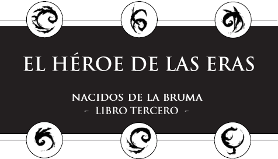
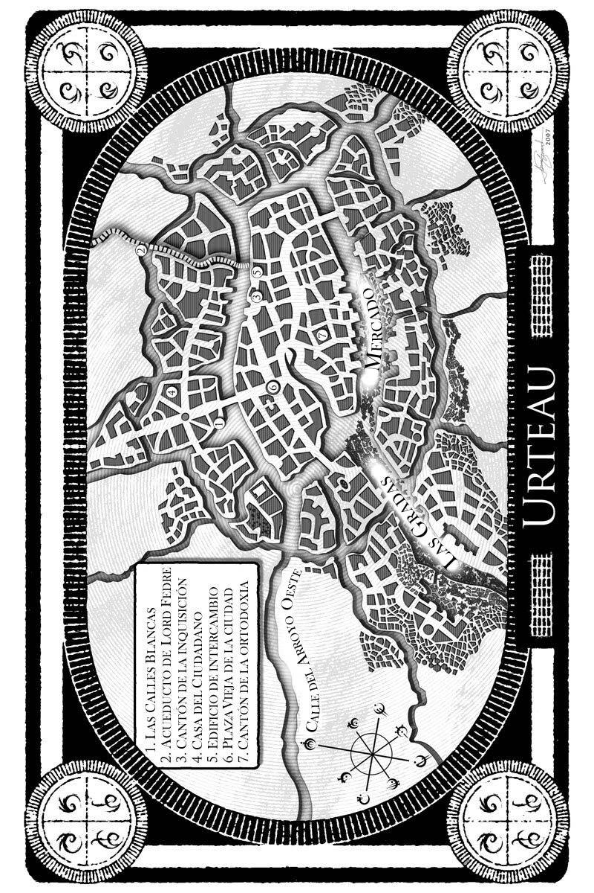
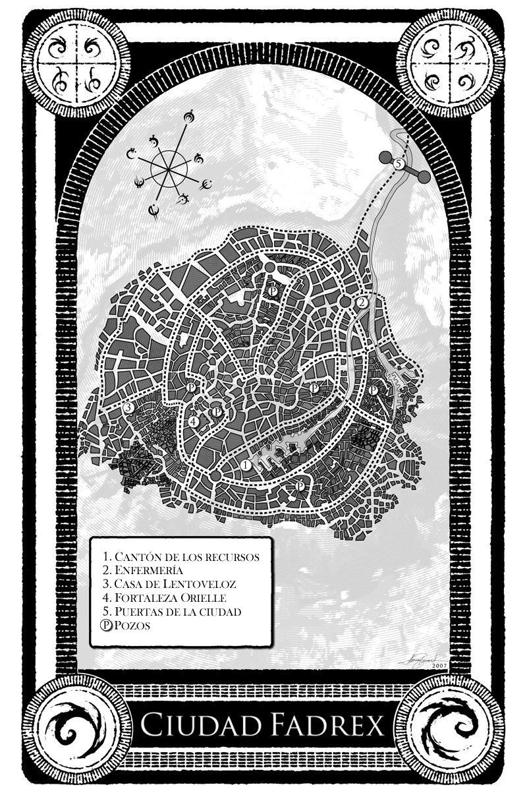
Como siempre, debo agradecer a mucha gente el haberme ayudado a hacer de este libro lo que es hoy. Ante todo, a mi editor y a mi agente, Moshe Feder y Joshua Bilmes, por su excepcional habilidad para ayudar a que un proyecto alcance su máximo potencial. También a mi maravillosa esposa, Emily, que ha sido un gran apoyo y me ha facilitado el proceso de escritura.
Como siempre, Isaac Stewart (Nethermore.com) hizo un magnífico trabajo con los mapas, los símbolos de los capítulos y el círculo de metales alománticos. También agradezco sinceramente el arte de Jon Foster; esta ha resultado ser mi favorita de las tres portadas de Nacidos de la bruma. Gracias a Larry Yoder por ser asombroso, y a Dot Lin por el trabajo publicitario realizado para mí en Tor. A Denis Wong y Stacy Hague-Hill por la ayuda prestada a mi editor y a la siempre maravillosa Irene Gallo por su dirección artística.
Entre los lectores alfa de este libro se encuentran Paris Elliott, Emily Sanderson, Krista Olsen, Ethan Skarstedt, Eric J. Ehlers, Eric Más estirado James Stone, Jillena O’Brien, C. Lee Player, Bryce Cundick/Moore, Janci Patterson, Heather Kirby, Sally Taylor, Bradley Reneer, Steve Ya no soy el chico de la librería Diamond, el general Micah Demoux, Zachary Fantasma J. Kavaney, Alan Layton, Janette Layton, Kaylynn ZoBell, Nate Hatfield, Matthew Chambers, Kristina Kugler, Daniel A. Wells, el Indivisible Peter Ahlstrom, Marianne Pease, Nicole Westenskow, Nathan Wood, John David Payne, Tom Gregory, Rebecca Dorff, Michelle Crowley, Emily Nelson, Natalia Judd, Chelise Fox, Nathan Crenshaw, Madison VanDenBerghe, Rachel Dunn y Ben OleSoon.
Doy asimismo las gracias a Jordan Sanderson, a quien está dedicado este libro, por su incansable trabajo en la página web. Jeff Creer también hizo un trabajo magnífico con el arte para BrandonSanderson.com. ¡Pásense a comprobarlo!
*
Marsh se esforzó por matarse.
Su mano tembló mientras trataba de hacer acopio de fuerzas para obligarse a sacar el clavo de la espalda y poner fin a su monstruosa vida. Había renunciado a intentar liberarse. Tres años. Tres años como inquisidor, tres años prisionero de sus propios pensamientos. Estos años habían demostrado que no había escapatoria. Incluso ahora, su mente se nublaba.
Y entonces Aquello tomó el control. El mundo pareció vibrar a su alrededor; de pronto, podía ver con claridad. ¿Por qué había pugnado? ¿Por qué se había preocupado? Todo era como debería ser.
Dio un paso adelante. Aunque ya no veía como lo hacían los hombres normales (después de todo, grandes clavos de acero le atravesaban los ojos), sentía la sala a su alrededor. Los clavos le salían por la nuca: si la palpaba, podía notar las afiladas puntas. No había sangre.
Los clavos le daban poder. Todo quedaba contorneado con finas líneas azules alománticas, que iluminaban el mundo. La sala era de tamaño modesto, y varios compañeros (también recortados en azul, las líneas alománticas apuntando a los metales contenidos en su misma sangre) se encontraban junto a Marsh. Cada uno de ellos tenía clavos en los ojos.
Cada uno excepto el hombre atado a la mesa ante él. Marsh sonrió, cogió un clavo de la mesa que tenía al lado y lo sopesó. Su prisionero no llevaba mordaza alguna. Eso habría impedido los gritos.
—Por favor —susurró el prisionero, temblando. Incluso un mayordomo terrisano podía desmoronarse cuando se enfrentaba a su propia muerte violenta.
El hombre se debatió sin fuerza. Se hallaba en una postura muy incómoda, ya que había sido atado a la mesa encima de otra persona. La mesa había sido diseñada así, con huecos para que cupiera el cuerpo de debajo.
—¿Qué es lo que queréis? —preguntó el terrisano—. ¡No puedo deciros nada más sobre el Sínodo!
Marsh acarició el clavo de metal, palpando la punta. Había trabajo que hacer, pero vaciló, saboreando el dolor y el terror en la voz del hombre. Vaciló tanto que pudo…
Marsh se hizo con el control de su propia mente. Los olores de la sala perdieron su dulzor; apestaban a sangre y a muerte. La alegría se convirtió en horror. Su prisionero era un guardador de Terris, un hombre que había trabajado toda su vida por el bien de los demás. Matarlo sería no solo un crimen, sino una tragedia. Marsh trató de hacerse cargo de la situación, trató de forzar el brazo hacia arriba para agarrar el clavo de su espalda: si se lo quitaba, moriría.
Sin embargo, Aquello era demasiado fuerte. La fuerza. De algún modo, tenía el control sobre Marsh… y necesitaba que los otros inquisidores y él fueran sus manos. Era libre (Marsh todavía podía sentir que se regocijaba con ello), pero algo le impedía afectar demasiado al mundo por sí mismo. Una oposición. Una fuerza que se extendía sobre la Tierra como un escudo.
Aquello no estaba completo. Necesitaba más. Algo más… algo oculto. Y Marsh encontraría ese algo, se lo llevaría a su amo. El amo al que Vin había liberado. La entidad prisionera dentro del Pozo de la Ascensión.
Se llamaba a sí mismo Ruina.
Marsh sonrió cuando su prisionero se puso a llorar; entonces dio un paso al frente, alzando el clavo en su mano. Lo colocó contra el pecho del hombre sollozante. El clavo tendría que perforar el cuerpo del hombre, atravesarle el corazón, para luego entrar en el cuerpo del inquisidor atado debajo. La hemalurgia era un arte sangriento.
Por eso era tan divertida. Marsh cogió una maza y empezó a golpear.
EL LEGADO DEL SUPERVIVIENTE
Soy, por desgracia, el Héroe de las Eras.
Fatren entornó los ojos para contemplar el sol rojo que se ocultaba bajo su perpetua pantalla de bruma oscura. Del cielo caía una fina ceniza negra, como casi todos estos últimos días. Los gruesos copos caían sin parar, el aire era hediondo y caliente, sin el menor rastro de brisa que aliviara el estado de ánimo de Fatren. El hombre suspiró, apoyándose contra el muro de tierra, y miró hacia Vetitan. Su ciudad.
—¿Cuánto falta? —preguntó.
Druffel se rascó la nariz. Tenía la cara manchada de ceniza. De un tiempo a esta parte, no pensaba mucho en la higiene. Desde luego, considerando la tensión de los últimos meses, Fatren sabía que él mismo tampoco era gran cosa.
—Una hora, tal vez —respondió Druffel, y escupió en la tierra del muro defensivo.
Fatren suspiró y contempló la ceniza que caía.
—¿Crees que es cierto lo que dice la gente, Druffel?
—¿Qué? —preguntó Druffel—. ¿Que es el fin del mundo?
Fatren asintió.
—No lo sé —dijo Druffel—. En realidad, no me importa.
—¿Cómo puedes decir eso?
Druffel se encogió de hombros y se rascó.
—En cuanto lleguen los koloss, estaré muerto. Ese será el fin del mundo para mí.
Fatren guardó silencio. No le gustaba poner voz a sus dudas: se suponía que él era el fuerte. Cuando los lores dejaron el pueblo (una comunidad agrícola, poco más urbana que una plantación del norte), Fatren fue el que convenció a los skaa para que continuaran plantando. Él fue quien mantuvo a raya las levas de reclutamiento de soldados. En una época en que la mayoría de las aldeas y plantaciones habían perdido a todos los hombres capaces para un ejército u otro, Vetitan aún tenía población activa. Había costado gran parte de las cosechas en sobornos, pero Fatren había mantenido a la gente a salvo.
Casi siempre.
—Hoy las brumas no desaparecerán hasta mediodía —dijo Fatren en voz baja—. Cada vez duran más tiempo. Ya has visto las cosechas, Druff. No van bien…, supongo que no hay luz suficiente. No tendremos comida para este invierno.
—No duraremos hasta el invierno —dijo Druffel—. No duraremos hasta el anochecer.
Lo triste, lo que resultaba descorazonador, era que Druffel fuera en su día el optimista. Fatren no había oído reír a su hermano desde hacía meses. Aquella risa era su sonido favorito.
Ni siquiera las fábricas del lord Legislador pudieron arrancarle la sonrisa a Druffel, pensó Fatren. Pero estos dos últimos años lo han conseguido.
—¡Fats! —llamó una voz—. ¡Fats!
Fatren se volvió para ver a un joven que corría junto al muro. La construcción estaba a medio terminar: había sido idea de Druffel, antes de rendirse del todo. Su ciudad albergaba a unas siete mil personas, lo cual quería decir que era bastante grande. Había costado mucho trabajo rodearla con un muro defensivo.
Fatren tenía alrededor de un millar de soldados (había sido muy difícil reunir tantos en una población tan pequeña), y tal vez otros mil hombres que eran demasiado jóvenes, demasiado viejos o demasiado inexpertos para luchar bien. En realidad, no sabía qué tamaño tenía el ejército de los koloss, pero debía de superar las dos mil criaturas. Una muralla defensiva iba a ser de muy poca utilidad.
El muchacho, Sev, se detuvo por fin junto a Fatren, jadeando.
—¡Fats! ¡Viene alguien!
—¿Ya? —preguntó Fatren—. ¡Druffel dijo que los koloss aún estaban lejos!
—No son koloss, Fats —dijo el muchacho—. Es un hombre. ¡Ven a ver!
Fatren se volvió hacia Druff, quien se frotó la nariz y se encogió de hombros. Siguieron a Sev hacia el interior de la muralla, hacia la puerta delantera. La ceniza y el polvo se arremolinaban en la tierra compactada, se amontonaban en los rincones, se dispersaban. Últimamente, no habían tenido mucho tiempo para la limpieza. Las mujeres tenían que trabajar en el campo, mientras los hombres se entrenaban y hacían preparativos para la guerra.
Preparativos para la guerra. Fatren se decía a sí mismo que tenía un ejército de dos mil «soldados», pero lo que en realidad tenía eran mil campesinos skaa armados con espadas. Habían recibido dos años de instrucción, cierto, pero contaban con muy poca experiencia real de combate.
Un grupo de hombres se apiñaba en torno a las puertas de entrada, en el muro o junto a él. Tal vez fue un error invertir tantos recursos en adiestrar soldados, pensó Fatren. Si esos mil hombres hubieran trabajado las minas, tendríamos oro para hacer sobornos.
Solo que los koloss no aceptaban sobornos, sino que mataban sin más. Fatren se estremeció al pensar en Garthwood. Esa ciudad era más grande que la suya, pero menos de un centenar de supervivientes habían conseguido llegar a Vetitan. Eso fue tres meses atrás. Fatren había esperado, de un modo irracional, que los koloss se contentaran con la destrucción de la ciudad.
Tendría que haberlo sabido: los koloss nunca quedaban satisfechos.
Fatren se encaramó en lo alto del muro, y los soldados vestidos con ropas remendadas y trozos de cuero le abrieron paso. A través de la ceniza que caía, divisó un oscuro paisaje que parecía cubierto de profunda nieve negra.
Un jinete solitario se acercaba, ataviado con una oscura capa encapuchada.
—¿Qué te parece, Fats? —preguntó uno de los soldados—. ¿Un explorador koloss?
Fatren hizo una mueca.
—Los koloss no enviarían a un explorador, y menos aún a un explorador humano.
—Tiene un caballo —dijo Druffel con un gruñido—. Nos vendría bien otro.
En toda la ciudad solo había cinco. Todos sufrían desnutrición.
—Un mercader —dijo uno de los soldados.
—No trae mercancías —respondió Fatren—. Y tendría que ser un mercader muy valiente para viajar solo por estos territorios.
—Nunca he visto a un refugiado con un caballo —dijo otro de los hombres. Alzó un arco, mirando a Fatren.
Fatren negó con la cabeza. Nadie disparó mientras el desconocido se iba acercando, avanzando a paso despreocupado. Detuvo su montura justo ante las puertas de la población. Fatren se sentía orgulloso de ellas. Auténticas puertas de madera montadas sobre el muro de tierra. Había sacado la madera y la piedra de la mansión del señor, en el centro del pueblo.
Se veía muy poco del forastero bajo la gruesa y oscura capa que llevaba para protegerse de la ceniza. Fatren observó desde lo alto del muro, examinó al desconocido, luego miró a su hermano y se encogió de hombros. La ceniza caía en silencio.
El desconocido saltó de su caballo.
Salió disparado hacia arriba, como impulsado desde abajo, la capa sacudiéndose libre mientras volaba. Debajo llevaba un brillante uniforme blanco.
Fatren maldijo y dio un salto atrás cuando el desconocido llegó a lo alto del muro y se posó sobre la puerta de madera. Se trataba de un alomántico. Un noble. Fatren esperaba que estos se ciñeran a las peleas del norte y dejaran a su pueblo en paz.
O, al menos, que lo dejaran morir en paz.
El recién llegado se volvió. Llevaba la barba corta, y el cabello era corto y oscuro.
—Muy bien, no tenemos mucho tiempo —dijo, caminando sobre la puerta con un innatural sentido del equilibrio—. Pongámonos a trabajar.
Pasó de la puerta al muro. Druffel desenvainó su espada de inmediato y la blandió ante el recién llegado.
La espada saltó de su mano, arrancada por una fuerza invisible. El desconocido la agarró cuando pasaba sobre su cabeza. Y la volvió, inspeccionándola.
—Buen acero —dijo, asintiendo—. Estoy impresionado. ¿Cuántos de vuestros soldados van tan bien equipados?
Giró el arma en su mano, volviéndola hacia Druffel por la empuñadura.
Druffel miró a Fatren, confuso.
—¿Quién eres, forastero? —exigió Fatren con todo el valor que pudo reunir. No sabía mucho de alomancia, pero estaba bastante seguro de que aquel hombre era un nacido de la bruma. No era descabellado pensar que sería capaz de aniquilar a todos los que estaban en lo alto del muro sin apenas pensárselo.
El desconocido ignoró la pregunta y se dio la vuelta para contemplar la población.
—¿Este muro cubre todo el perímetro de la ciudad? —preguntó, volviéndose hacia uno de los soldados.
—¡Humm…! Sí, mi señor —respondió el hombre.
—¿Cuántas puertas hay?
—Solo esta, mi señor.
—Abre la puerta y deja entrar a mi caballo —dijo el recién llegado—. Supongo que tendréis establos.
—Sí, mi señor —dijo el soldado.
Vaya, pensó Fatren con insatisfacción mientras el soldado echaba a correr, este desconocido desde luego sabe dar órdenes a la gente. El soldado de Fatren ni siquiera se detuvo a pensar que estaba obedeciendo a un desconocido sin pedir permiso. Fatren vio que los otros soldados se estiraban un poco, que perdían cautela. El recién llegado hablaba como si esperara ser obedecido, y los soldados respondían. No era un noble como los que Fatren había conocido cuando servía en la mansión del señor. Este hombre era diferente.
El desconocido siguió observando la ciudad. La ceniza caía sobre su hermoso uniforme blanco, y a Fatren le pareció una lástima que el atuendo se ensuciara. El recién llegado asintió para sí, y luego empezó a bajar por el lado del muro.
—Espera —dijo Fatren, haciendo que el desconocido se detuviera—. ¿Quién eres?
El recién llegado se volvió y miró a Fatren a los ojos.
—Me llamo Elend Venture. Soy vuestro emperador.
Dicho esto, el hombre se volvió y continuó bajando por el terraplén. Los soldados le abrieron paso; muchos de ellos lo siguieron.
Fatren miró a su hermano.
—¿Emperador? —murmuró Druffel, y luego escupió.
Fatren pensaba lo mismo. ¿Qué hacer? Nunca antes había combatido contra un alomántico; ni siquiera estaba seguro de cómo empezar. Desde luego, el «emperador» había desarmado a Druffel con suma facilidad.
—Organiza a la gente de la ciudad —dijo el desconocido, Elend Venture, desde más adelante—. Los koloss vendrán por el norte. Ignorarán la puerta, rebasarán la muralla. Quiero a los niños y los ancianos concentrados en la parte sur de la ciudad. Reunidlos en el menor número de edificios posible.
—¿De qué servirá eso? —exigió Fatren. Corrió tras el «emperador»: en realidad, no veía ninguna otra opción.
—Los koloss son más peligrosos cuando tienen un deseo frenético de sangre —dijo Venture, sin dejar de caminar—. Si toman la ciudad, será mejor que pasen el mayor tiempo posible buscando a vuestra gente. Si el frenesí se consume mientras buscan, se frustrarán y se dedicarán al saqueo. Entonces puede que vuestra gente logre escapar sin ser perseguida.
Venture se detuvo, luego se volvió para mirar a Fatren a los ojos. El forastero adoptaba una sombría expresión:
—Es una esperanza tenue. Pero ya es algo.
Después continuó su camino, atravesando la calle principal de la ciudad.
Desde la retaguardia, Fatren oyó susurrar a los soldados. Todos habían oído hablar de un hombre llamado Elend Venture. Era el que se había hecho con el poder en Luthadel tras la muerte del lord Legislador hacía ya más de dos años. Las noticias del norte eran escasas y poco fiables, pero en la mayoría de ellas se mencionaba a Venture. Había eliminado a todos los aspirantes al trono, incluso había matado a su propio padre. Había ocultado su naturaleza como nacido de la bruma, y al parecer estaba casado con la mismísima mujer que había acabado con el lord Legislador. Fatren dudaba que un hombre tan importante, un hombre que debía de ser más leyenda que realidad, viniera a una ciudad tan humilde del Dominio Meridional, sobre todo sin compañía. Ni siquiera las minas valían ya mucho. El desconocido debía de estar mintiendo.
Por otra parte, estaba claro que se trataba de un alomántico…
Fatren corrió para alcanzar al desconocido. Venture (o quienquiera que fuese) se detuvo ante una gran estructura cercana al centro de la ciudad. Las antiguas oficinas del Ministerio del Acero. Fatren había ordenado tapiar con tablones las puertas y ventanas.
—¿Encontrasteis las armas ahí dentro? —preguntó Venture, volviéndose hacia Fatren.
Fatren vaciló un momento. Luego, por fin, negó con la cabeza:
—En la mansión del señor.
—¿Dejó armas? —preguntó Venture, con sorpresa.
—Creemos que pretendía volver a por ellas —respondió Fatren—. Los soldados que dejó allí acabaron desertando, y se unieron a un ejército de paso. Se llevaron lo que pudieron. Nosotros saqueamos el resto.
Venture asintió para sí, acariciándose pensativo la barbilla mientras contemplaba el antiguo edificio del Ministerio. Era alto y ominoso, a pesar de su desuso… o tal vez a causa de él.
—Vuestros hombres parecen bien adiestrados. No me lo esperaba. ¿Alguno de ellos tiene experiencia de combate?
Druffel bufó en voz baja, indicando que pensaba que el desconocido no tenía ningún derecho a ser tan fisgón.
—Nuestros hombres han luchado lo suficiente para ser peligrosos, forastero —dijo Fatren—. Algunos bandidos quisieron quitarnos la ciudad. Asumieron que éramos débiles y que nos dejaríamos intimidar con facilidad.
Si el desconocido vio las palabras como una amenaza, no lo mostró. Se limitó a asentir con la cabeza.
—¿Alguno ha luchado contra los koloss?
Fatren y Druffel intercambiaron una mirada.
—Los hombres que luchan contra los koloss no sobreviven, forastero —dijo por fin.
—Si eso fuera cierto, yo habría muerto una docena de veces —contestó Venture. Se volvió hacia la creciente multitud de soldados y lugareños—: Os enseñaré lo que pueda para luchar contra los koloss, pero no disponemos de mucho tiempo. Quiero a los capitanes y jefes de pelotón organizados en la puerta de la ciudad dentro de diez minutos. Los soldados regulares tienen que formar en fila a lo largo de la muralla. Enseñaré unos cuantos trucos a los capitanes y jefes de pelotón, y luego ellos pueden transmitirlos a sus hombres.
Algunos de los soldados se movieron; pero, dicho sea en su honor, la mayoría permaneció donde estaba. El recién llegado no pareció ofendido porque no obedecieran sus órdenes. Esperó sin impacientarse, contemplando a la multitud armada. No parecía asustado, ni furioso ni decepcionado. Tan solo parecía… regio.
—Mi señor —preguntó por fin uno de los capitanes—. ¿Has… has traído un ejército para que nos ayude?
—En realidad, he traído dos —repuso Venture—. Pero no tenemos tiempo para esperarlo. —Miró a Fatren a los ojos—. Me escribiste pidiéndome ayuda. Y, como señor tuyo, he venido a proporcionártela. ¿La sigues queriendo?
Fatren frunció el ceño. Nunca había pedido ayuda a este hombre, ni a ningún señor. Abrió la boca para objetar, pero se detuvo. Me dejará fingir que lo mandé llamar, pensó Fatren. Actuar como si esto fuera parte del plan. Yo podría dejar de mandar aquí sin parecer un fracasado.
Vamos a morir. Pero al mirar a los ojos de este hombre, casi creo que tenemos una posibilidad.
—Yo… no esperaba que vinieras, mi señor —se oyó decir Fatren—. Me ha sorprendido verte.
Venture asintió:
—Es comprensible. Ven, hablemos de tácticas mientras tus soldados se reúnen.
—Muy bien —dijo Fatren. Sin embargo, cuando avanzaba, Druffel lo agarró por el brazo.
—¿Qué estás haciendo? —susurró su hermano—. ¿Mandaste llamar a este hombre? No me lo creo.
—Reúne a los soldados, Druff —dijo Fatren.
Druffel vaciló un instante, luego maldijo en voz baja y se dio media vuelta. No parecía tener la menor intención de reunir a los soldados, así que Fatren indicó a dos de los capitanes que lo hicieran. Hecho esto, se reunió con Venture, y los dos caminaron hacia las puertas. Venture ordenó a unos cuantos soldados que se adelantaran a ellos y mantuvieran a la gente apartada para que Fatren y él pudieran hablar en privado. Seguía cayendo ceniza del cielo, una ceniza que cubría las calles de negro y se acumulaba en los inclinados edificios de una sola planta de la ciudad.
—¿Quién eres? —preguntó Fatren en voz baja.
—Quien he dicho que soy —respondió Venture.
—No te creo.
—Pero confías en mí.
—No. Es que no quiero discutir con un alomántico.
—Con eso me basta, por ahora —dijo Venture—. Mira, amigo, tienes a diez mil koloss marchando contra tu ciudad. Necesitas toda la ayuda que puedas conseguir.
¿Diez mil?, pensó Fatren, anonadado.
—Estás al mando de esta ciudad, supongo —preguntó Venture.
Fatren se sacudió su estupor:
—Sí. Me llamo Fatren.
—Muy bien, lord Fatren, vamos a…
—No soy ningún lord —dijo Fatren.
—Bueno, acabas de convertirte en uno —respondió Venture—. Podrás elegir un apellido más tarde. Ahora, antes de que continuemos, tienes que saber mis condiciones para ayudarte.
—¿Qué clase de condiciones?
—De las no negociables —dijo Venture—. Si vencemos, me jurarás fidelidad.
Fatren frunció el ceño y se detuvo. La ceniza cayó a su alrededor.
—¿Eso es todo? ¿Apareces antes de una batalla y dices ser un alto señor para poder llevarte el crédito de nuestra victoria? ¿Por qué iba yo a jurar fidelidad a un hombre a quien acabo de conocer hace unos minutos?
—Porque, si no lo haces —contestó sin alterarse Venture—, tomaré el mando de todas formas.
Continuó caminando. Fatren vaciló un momento, luego se apresuró y alcanzó a Venture.
—¡Oh!, ya veo. Aunque sobrevivamos a esta batalla, acabaremos siendo gobernados por un tirano.
—Sí —repuso Venture.
Fatren frunció el ceño. No esperaba que el hombre fuera tan brusco.
Venture sacudió la cabeza y contempló la ciudad a través de la ceniza que caía.
—Antes pensaba que podría hacer las cosas de otro modo. Y sigo creyendo que podré hacerlo, algún día. Pero, por ahora, no me queda otra opción. Necesito tus soldados y necesito tu ciudad.
—¿Mi ciudad? —preguntó Fatren, frunciendo el ceño—. ¿Por qué?
Venture alzó un dedo.
—Primero tenemos que sobrevivir a la batalla —dijo—. Trataremos las otras cuestiones más tarde.
Fatren vaciló, y se sorprendió al darse cuenta de que confiaba en el desconocido. No podría haber explicado exactamente por qué se sentía así. Se trataba de un hombre al que había que seguir, un líder como Fatren había querido ser siempre.
Venture no esperó a que Fatren aceptara sus «condiciones». No era un ofrecimiento, sino un ultimátum. Fatren corrió a alcanzarlo de nuevo, mientras Venture entraba en la plazoleta situada ante las puertas de la ciudad. Los soldados se habían congregado allí. Ninguno de ellos llevaba uniforme: su único método de distinguir a un capitán de un soldado corriente era una banda roja atada en el brazo. Venture no les había dado mucho tiempo para reunirse, pero todos sabían que la ciudad estaba a punto de ser atacada. De todas formas, se habían reunido ya.
—El tiempo es oro —repitió Venture en voz alta—. Solo puedo enseñaros unas pocas cosas, pero marcarán la diferencia.
»Los koloss oscilan en tamaño entre pequeños, de metro y medio, y enormes, de dos metros y medio. Sin embargo, incluso los pequeños serán más fuertes que vosotros. Contad con ello. Por fortuna, las criaturas lucharán sin coordinación entre los individuos. Si el camarada de un koloss tiene problemas, este no se molestará en ayudarlo.
»Atacan de frente, sin artimañas, y tratan de usar la fuerza bruta para abrumar. ¡No se lo permitáis! Decidles a vuestros hombres que se centren en koloss individuales: dos hombres para los pequeños, tres o cuatro para los grandes. No podremos mantener un frente muy grande, pero eso nos permitirá vivir más tiempo.
»No os preocupéis por las criaturas que rebasen nuestras líneas y entren en la ciudad: haremos que los civiles se escondan en lo más recóndito, así los koloss que atraviesen nuestra línea podrían acabar dedicándose al saqueo y dejando luchar solos a los demás. ¡Eso es lo que queremos! No los persigáis hasta la ciudad. Vuestras familias estarán a salvo.
»Si lucháis contra un koloss grande, atacad a las piernas, derribadlo antes de matarlo. Contra uno pequeño, aseguraos de que vuestra espada o vuestra lanza no se queda enganchada en su piel fofa. Tenéis que comprender que los koloss no son estúpidos: solo carecen de sofisticación. Son predecibles. Vendrán a vosotros de la forma más fácil posible, y atacarán solo de la manera más directa.
»Lo más importante es que comprendáis que pueden ser derrotados. Lo haremos hoy. ¡No os dejéis intimidar! Luchad con coordinación, mantened la cabeza fría, y os prometo que sobreviviremos.
Los capitanes de los soldados permanecían agrupados, mirando a Venture. No aplaudieron la arenga, pero parecieron algo más confiados. Se dispusieron a transmitir a sus hombres las instrucciones de Venture.
Fatren se acercó al emperador:
—Si tus cálculos son correctos, nos superan cinco a uno.
Venture asintió.
—Son más grandes, más fuertes y están mejor entrenados que nosotros —añadió Fatren.
Venture volvió a asentir.
—Entonces estamos condenados.
Por fin, Venture miró a Fatren, el ceño fruncido, la ceniza negra cubriéndole los hombros:
—No estáis condenados. Tenéis algo que ellos no tienen, algo muy importante.
—¿Qué?
Venture lo miró a los ojos.
—Me tenéis a mí.
—¡Milord emperador! —exclamó una voz desde lo alto del muro—. ¡Koloss a la vista!
Ya se dirigen a él primero, pensó Fatren. No estaba seguro de si sentirse insultado o impresionado.
Venture saltó de inmediato a lo alto del muro, usando su alomancia para cruzar la distancia de un rápido brinco. La mayoría de los soldados se agacharon o escondieron tras la fortificación, prefiriendo no dejarse ver a pesar de la distancia que los separaba de sus enemigos. Venture, sin embargo, se alzó orgulloso con su capa blanca y su uniforme, se protegió los ojos del sol y miró al horizonte.
—Están acampando —dijo, sonriendo—. Bien. ¡Lord Fatren, prepara a los hombres para el ataque!
—¿Un ataque? —preguntó Fatren, subiendo detrás de Venture.
El emperador asintió.
—Los koloss estarán cansados tras la marcha, y preparar el campamento los mantendrá distraídos. Nunca tendremos mejor oportunidad para atacarlos.
—¡Pero estamos a la defensiva!
Venture negó con la cabeza:
—Si esperamos, acabarán sintiendo un deseo frenético de sangre, y vendrán a por nosotros. Tenemos que atacar, no esperar a ser masacrados.
—¿Y abandonar el muro defensivo?
—La fortificación es impresionante, lord Fatren, pero inútil. No disponéis de las fuerzas necesarias para defender el perímetro completo, y los koloss son en general más altos y más estables que los hombres. Se harán con el muro y luego mantendrán la altura mientras abaten la ciudad.
—Pero…
Venture lo miró. Sus ojos eran tranquilos, pero tenían una mirada firme y expectante. El mensaje era sencillo. Ahora estoy yo al mando. Y no había más que hablar.
—Sí, mi señor —dijo Fatren, llamando a los mensajeros para que transmitieran las órdenes.
Venture se quedó mirando mientras los mensajeros partían. Pareció haber cierta confusión entre los hombres: no esperaban atacar. Más y más ojos se volvieron hacia Venture, allá en lo alto del muro.
Sí que parece un emperador, pensó Fatren a su pesar.
Las órdenes fueron transmitidas a lo largo de la línea. Pasó el tiempo. Hasta que, por fin, todo el ejército permanecía alerta. Venture desenvainó su espada y la alzó al cielo cuajado de ceniza. Entonces, saltó del muro con un brinco inhumanamente rápido y cargó hacia el campamento de koloss.
Por un momento, corrió solo. Luego, para sorpresa suya, Fatren apretó los dientes, controló el temblor de sus nervios y lo siguió.
El muro estalló de movimiento, los soldados cargaron con un grito colectivo, corriendo hacia la muerte con las espadas bien altas.
Ostentar el poder le hizo cosas extrañas a mi mente. En solo unos instantes, me familiaricé con el poder en sí, con su historia y con las formas en que podía ser utilizado.
Sin embargo, este conocimiento era diferente de la experiencia, o incluso de la habilidad de usar el poder. Por ejemplo, sabía mover un planeta en el cielo, pero no sabía dónde colocarlo para que no estuviera demasiado cerca ni demasiado lejos del Sol.
Como siempre, el día de TenSoon comenzó en la oscuridad. Sin duda, en parte se debía al hecho de que no tenía ojos. Podría haberlos creado: pertenecía a la Tercera Generación, lo cual significaba que era viejo incluso para un kandra. Había digerido suficientes cadáveres para saber ya cómo crear órganos sensoriales de manera intuitiva, sin un modelo que copiar.
Por desgracia, los ojos le habrían servido de poco. No tenía cráneo, y había descubierto que la mayoría de los órganos no funcionaban bien sin un cuerpo completo y un esqueleto que los sostuviera. Su propia masa aplastaría los ojos si se movía de forma equivocada, y resultaría muy difícil volverlos para ver.
No es que hubiera nada que mirar. TenSoon movió ligeramente su masa, agitándose dentro de su prisión. Su cuerpo era poco más que un grupo de músculos transparentes, como una masa de grandes caracoles o babosas, todos conectados entre sí, algo más maleables que el cuerpo de un molusco. Con concentración, podía disolver uno de los músculos y mezclarlo con otro, o hacer algo nuevo. No obstante, sin un esqueleto que utilizar, estaba impotente.
Volvió a agitarse en su celda. Su piel tenía sentido propio, una especie de gusto. Ahora mismo, notaba el hedor de su propio excremento en los lados de la cámara, pero no se atrevía a desconectar este sentido. Era una de sus escasas conexiones con el mundo que lo rodeaba.
En realidad, la «celda» no era más que un pozo cubierto con una reja. Apenas lo bastante grande para contener su masa. Sus captores le arrojaban comida desde arriba, y periódicamente vertían agua para hidratarlo y hacer que sus excrementos se vaciaran por un pequeño agujero de drenaje al fondo. Tanto este agujero como los de la reja cerrada de arriba eran demasiado pequeños para que pudiera deslizarse a través de ellos: el cuerpo de un kandra era flexible, pero incluso una pila de músculos podía contraerse hasta cierto punto.
La mayoría de la gente se habría vuelto loca por la tensión de estar confinada durante… ni siquiera sabía cuánto tiempo había sido. ¿Meses? Pero TenSoon tenía la Bendición de la Presencia. Su mente no cedería fácilmente.
A veces maldecía a la Bendición por impedirle el bendito alivio de la locura.
Concéntrate, se dijo. No tenía cerebro, no como los humanos, pero podía pensar. No lo comprendía. No estaba seguro de que ningún kandra lo hiciera. Tal vez los pertenecientes a la Primera Generación supieran más, pero si así fuera, no informaban a nadie.
No pueden mantenerte aquí eternamente, se dijo. El Primer Contrato dice…
Empezaba a dudar del Primer Contrato… o más bien que prestaran ninguna atención al Primer Contrato. Pero ¿podía echarles la culpa? TenSoon había roto el Contrato. Él mismo reconocía que había contravenido la voluntad de su amo y ayudado a otro en su lugar. Esta traición había terminado con la muerte de su amo.
Sin embargo, incluso ese acto vergonzoso era el menor de sus delitos. El castigo por romper un contrato era la muerte, y si los delitos cometidos por TenSoon se hubieran quedado ahí, los otros lo habrían matado y habrían acabado con todo. Por desgracia, había mucho más en juego. El testimonio de TenSoon (dado ante la Segunda Generación a puerta cerrada) había revelado un desliz mucho más peligroso, mucho más importante.
TenSoon había traicionado el secreto de su pueblo.
No pueden ejecutarme, pensó, usando la idea para mantenerse concentrado. No mientras no descubran a quién se lo confié.
El secreto. El valiosísimo secreto.
Nos he condenado a todos. A mi pueblo entero. Volveremos a ser esclavos. No, ya somos esclavos. Nos convertiremos en otra cosa: autómatas, nuestras mentes controladas por otros. Capturados y utilizados, nuestros cuerpos dejarán de pertenecernos.
Eso era lo que él había hecho, lo que había puesto potencialmente en movimiento. El motivo por el que merecía el encarcelamiento y la muerte. Y, sin embargo, deseaba vivir. Debería despreciarse a sí mismo. Pero, por algún motivo, seguía considerando que había hecho lo adecuado.
Volvió a agitarse, las masas de resbaladizos músculos rotaron unas sobre otras. Sin embargo, a medio movimiento se detuvo. Vibraciones. Alguien venía.
Se organizó, poniendo los músculos a los lados del pozo, formando una depresión en el centro de su cuerpo. Necesitaba capturar toda la comida que pudiera: lo alimentaban con muy poca. Sin embargo, ninguna papilla cayó por la reja. Esperó, expectante, hasta que la reja se abrió. Aunque no tenía oídos, pudo sentir las roncas vibraciones de la reja al ser retirada, el áspero hierro que finalmente se golpeaba contra el suelo de arriba.
¿Qué?
Lanzaron garfios. Se engancharon alrededor de sus músculos, agarrándolo y desgarrándole la carne mientras tiraban para sacarlo del pozo. Dolió. No solo los garfios, sino la súbita libertad cuando su cuerpo se desparramaba por el suelo de la prisión. Saboreó sin querer la tierra y la papilla seca. Sus músculos se estremecieron, el movimiento desencadenado de estar fuera de la celda parecía extraño, y él se esforzó, moviendo su masa de formas que casi había olvidado.
Entonces llegó. Pudo saborearlo en el aire. Ácido, denso y punzante, presumiblemente dentro de un cubo recubierto de oro que traían los vigilantes de la prisión. Después de todo, iban a matarlo.
¡Pero no pueden!, pensó. El Primer Contrato, la ley de nuestro pueblo, es…
Algo cayó sobre él. No ácido, sino algo duro. Lo tocó ansiosamente, los músculos se movieron unos contra otros saboreándolo, probándolo, sintiéndolo. Era redondo, con agujeros y varios bordes afilados…, un cráneo.
El hedor ácido se hizo más fuerte. ¿Lo estaban agitando? TenSoon se movió con rapidez, formándose alrededor del cráneo, llenándolo. Ya tenía algo de carne disuelta almacenada dentro de una bolsa parecida a un órgano. La sacó, y se filtró alrededor del cráneo para crear rápidamente piel. Dejó los ojos, trabajó en los pulmones, formó una lengua, ignoró los labios por el momento. Trabajó con desesperación mientras el sabor del ácido se hacía más potente, y entonces…
Aquello lo golpeó. Le quemó los músculos de un lado de su cuerpo, arrasó su masa, la disolvió. Al parecer, la Segunda Generación había renunciado a arrancarle sus secretos. Sin embargo, antes de matarlo, sabían que tenían que darle una oportunidad para hablar. El Primer Contrato lo requería, de ahí el cráneo. No obstante, era obvio que los guardias tenían órdenes de matarlo antes de que pudiera decir nada en su defensa. Seguían la forma de la ley, aunque al mismo tiempo ignoraban su intención.
Sin embargo, no advertían lo rápidamente que TenSoon podía trabajar. Pocos kandra habían pasado tanto tiempo con los contratos como él: todos los de la Segunda Generación, y la mayoría de los de la Tercera, hacía tiempo que se habían retirado del servicio. Vivían vidas fáciles aquí en la Tierra Natal.
Una vida fácil enseñaba muy poco.
La mayoría de los kandra tardaban horas en formar un cuerpo; los más jóvenes necesitaban días. Sin embargo, en cuestión de segundos, TenSoon tuvo una lengua rudimentaria. Mientras el ácido se movía por su cuerpo, produjo una tráquea, infló un pulmón y croó una sola palabra:
—¡Juicio!
El vertido cesó. Su cuerpo siguió ardiendo. Trabajó en medio del dolor, formando primitivos órganos auditivos dentro de la cavidad de su cráneo.
Una voz susurró cerca:
—Necio.
—¡Juicio! —repitió TenSoon.
—Acepta la muerte —susurró la voz—. No te pongas en situación de causar más daño a nuestro pueblo. ¡La Primera Generación te ha concedido esta oportunidad de morir por tus años de servicio extra!
TenSoon vaciló. Un juicio sería público. Hasta ahora, solo unos pocos escogidos conocían el alcance de su traición. Podía morir, maldito por haber roto el contrato, pero conservando cierto grado de respeto por su carrera anterior. En algún lugar, probablemente en un pozo de esta misma sala, los había que sufrían un cautiverio interminable, una tortura que acabaría rompiendo incluso las mentes de quienes habían sido dotados con la Bendición de la Presencia.
¿Acaso quería convertirse en uno de ellos? Al revelar sus acciones en un foro abierto, se ganaría el dolor eterno. Forzar un juicio sería una locura, pues no había ninguna esperanza de ser vindicado. Sus confesiones ya lo habían condenado.
Si hablaba, no sería para defenderse. Sería por otras razones.
—Juicio —repitió, apenas susurrándolo esta vez.
En cierto sentido, tener semejante poder resultaba abrumador. Era un poder que se tardaría milenios en comprender. Rehacer el mundo habría sido fácil, si hubiera estado familiarizado con el poder. Sin embargo, advertí el peligro inherente a mi ignorancia. Como un niño que de pronto adquiere una fuerza asombrosa, podría haber empujado demasiado y dejado el mundo convertido en un juguete roto que es imposible reparar.
Elend Venture, segundo emperador del Imperio Final, no era un guerrero nato. Pertenecía a la nobleza, algo que, en los días del lord Legislador, había convertido esencialmente a Elend en un profesional de las fiestas. Se había pasado la juventud aprendiendo a practicar los frívolos juegos de las Grandes Casas, llevando la vida consentida de la élite imperial.
No era extraño que hubiera acabado siendo un político. Siempre le había interesado la teoría política y, aunque había sido más un estudioso que un auténtico estadista, sabía que algún día gobernaría en su propia casa. Sin embargo, al principio no había sido muy buen rey. No había comprendido que, para ser un líder, hacen falta más que buenas ideas y nobles intenciones. Mucho más.
«Dudo que Elend Venture llegue a ser jamás el tipo de líder capaz de comandar una carga contra el enemigo». Estas palabras las había pronunciado Tindwyl, la mujer que lo había instruido en política práctica. Recordar esas palabras hizo sonreír a Elend mientras sus soldados se abalanzaban contra el campamento de koloss.
Elend avivó peltre. Una cálida sensación, ahora familiar, cobró vida en su pecho, y sus músculos se tensaron con fuerza y energía renovadas. Había tragado el metal antes, para poder recurrir a sus poderes en la batalla. Era alomántico, algo que todavía a veces le asombraba.
Como había predicho, los koloss fueron atacados por sorpresa.
Permanecieron inmóviles durante unos momentos, aturdidos, aunque debieron de haber visto cómo cargaba contra ellos el ejército recién reclutado de Elend. A los koloss les costaba lidiar con lo inesperado. Les resultaba difícil comprender que un grupo de humanos débiles y en inferioridad numérica atacara su campamento. Por eso tardaron tiempo en reaccionar.
El ejército de Elend hizo buen uso de ese tiempo. El propio Elend golpeó primero, avivando su peltre para darse aún más poder mientras abatía al primer koloss. Era una bestia pequeña. Como todas las de su especie, tenía forma humanoide, aunque su piel era enorme y fofa, como si estuviera separada del resto de su cuerpo. Sus brillantes ojillos rojos mostraron una sorpresa inhumana mientras moría y Elend le arrancaba la espada del pecho.
—¡Golpead con rapidez! —gritó Elend mientras más koloss se apartaban de sus hogueras—. ¡Matad a tantos como podáis antes de que se pongan frenéticos!
Los soldados (aterrorizados, pero comprometidos) cargaron contra todo lo que había a su alrededor y derrotaron a los primeros grupos de koloss. El «campamento» era poco más que un lugar donde los koloss habían hollado la ceniza y las plantas bajo sus pies, y cavado luego sus hogueras. Elend pudo ver a sus hombres cada vez más confiados por el éxito inicial, y los alentó tirando de sus emociones con alomancia, haciéndolos más valientes. Se sentía más cómodo con esta forma de alomancia: aún no había conseguido saltar con los metales como lo hacía Vin. Sin embargo, las emociones… esas sí que las comprendía.
Fatren, el fornido líder de la ciudad, se mantuvo cerca de Elend mientras dirigía a un grupo de soldados hacia una gran manada de koloss. Elend no perdió de vista al hombre. Fatren era el gobernador de una ciudad pequeña; su muerte supondría un duro golpe moral. Juntos, atacaron a un escaso grupo de sorprendidos koloss. La bestia más grande del grupo medía unos tres metros de altura. Como la de todos los koloss grandes, la piel de esta criatura, antes suelta, aparecía ahora tensa en torno a su enorme cuerpo. Los koloss nunca dejaban de crecer, pero su piel siempre conservaba el mismo tamaño. En las criaturas más jóvenes, colgaba fofa y llena de pliegues. En las grandes, se tensaba y resquebrajaba.
Elend quemó acero, y luego arrojó un puñado de monedas al aire ante él. Empujó las monedas, lanzó su peso contra ellas y se las arrojó a los koloss. Las bestias eran demasiado duras para caer con unas simples monedas, pero los trozos de metal las herirían y debilitarían.
Mientras las monedas volaban, Elend atacó al koloss grande. La bestia sacó de su espalda una espada enorme, que pareció encantada ante la idea de una pelea.
El koloss golpeó primero y su alcance fue asombroso. Elend tuvo que dar un salto atrás: el peltre lo hizo más ágil. Las espadas de los koloss eran enormes, brutales, burdas casi como porras. La fuerza del golpe hizo estremecer el aire; Elend no habría tenido ninguna posibilidad de detener la hoja, ni siquiera con la ayuda del peltre. Además, la espada (o, más exactamente, el koloss que la empuñaba) pesaba tanto que Elend no podría usar la alomancia para arrancarla de las manos de la criatura. Empujar contra el acero requería peso y fuerza. Si Elend empujaba sobre algo más pesado que él mismo, saldría despedido hacia atrás.
Por tanto, Elend tuvo que confiar en la velocidad extra y la destreza del peltre. Se mantuvo apartado de su enemigo echándose a un lado, esperando un revés. La criatura se volvió, silenciosa, mirando a Elend, pero no golpeó. No había alcanzado todavía el frenesí.
Elend contempló a su gigantesco enemigo. ¿Cómo he llegado aquí?, pensó, y no por primera vez. Soy un estudioso, no un guerrero. La mitad del tiempo pensaba que lo suyo no era liderar a nadie.
La otra mitad, suponía que pensaba demasiado. Se lanzó hacia delante y golpeó. El koloss previó el movimiento, y trató de descargar su arma contra la cabeza de Elend. Sin embargo, este se dio la vuelta y tiró de la espada de otro koloss: desequilibró a la criatura y permitió que dos de los hombres de Elend la mataran, y también se apartó hacia un lado. Esquivó por bien poco el arma de su oponente. Entonces, mientras giraba en el aire, avivó peltre y golpeó desde el lado.
Atravesó la pierna de la bestia por la rodilla, y la derribó al suelo. Vin siempre decía que el poder alomántico de Elend era inusitadamente fuerte. Elend no estaba seguro de ello (no tenía mucha experiencia con la alomancia), pero la fuerza de su propio golpe lo hizo retroceder tambaleándose. No obstante, consiguió recuperar el equilibrio, y luego cercenó la cabeza de la criatura.
Varios soldados suyos lo observaban. Su uniforme blanco estaba ahora manchado de brillante sangre roja de koloss. No era la primera vez. Elend inspiró profundamente mientras oía gritos inhumanos que resonaban en todo el campamento. Empezaba el frenesí.
—¡Formad! —gritó Elend—. ¡Formad líneas, permaneced juntos, preparaos para el ataque!
Los soldados respondieron lentamente. Eran mucho menos disciplinados que las tropas a las que Elend estaba acostumbrado, pero hicieron un trabajo admirable cuando se pusieron a sus órdenes. Elend echó un vistazo al terreno: habían conseguido abatir a varios centenares de koloss, una hazaña sorprendente.
Sin embargo, la parte sencilla había terminado.
—¡Permaneced firmes! —gritó Elend, corriendo ante la línea de soldados—. ¡Pero seguid luchando! ¡Necesitamos matar a tantos como sea posible! ¡Todo depende de eso! ¡Dadles vuestra furia, hombres!
Quemó latón y tiró de sus emociones, aplacando su miedo. Un alomántico no podía controlar mentes (al menos, no mentes humanas), pero sí podía despertar unas emociones y hacer decaer otras. Vin también decía que Elend podía afectar a mucha más gente de lo que debería haber sido posible. Elend había adquirido sus poderes hacía poco, en un lugar que ahora creía la fuente original de la alomancia.
Bajo la influencia del aplacamiento, sus soldados se mantuvieron firmes. Una vez más, Elend sintió un sano respeto hacia estos simples skaa. Les estaba dando valentía y quitando parte de su miedo, pero su determinación era propia. Eran buena gente.
Con suerte, podría salvar a algunos.
Los koloss atacaron. Como Elend había esperado, un gran grupo de criaturas se apartó del campamento principal y atacó la ciudad. Algunos de los soldados gritaron, pero estaban demasiado ocupados defendiéndose para perseguirlos. Elend se lanzaba a la pelea cada vez que la línea vacilaba, para reforzar así el punto débil. Mientras hacía esto, quemó latón y trató de desplazar las emociones de un koloss cercano.
No sucedió nada. Las criaturas eran resistentes a la alomancia emocional, sobre todo cuando ya estaban siendo manipuladas por alguien más. Sin embargo, en cuanto Elend se abriera paso, podría hacerse con el control absoluto. Eso requería tiempo, suerte y la determinación de luchar sin tregua.
Y eso hizo. Luchó junto a sus hombres y los vio morir, mató a koloss mientras su línea se reducía, formó un semicírculo para impedir que fueran rodeados. Aun así, la batalla fue tenaz. A medida que más y más koloss se ponían frenéticos y atacaban, las probabilidades se fueron volviendo rápidamente en contra del grupo de Elend. Los koloss se resistían a su manipulación emocional. Pero ellos se acercaban…
—¡Estamos perdidos! —gritó Fatren.
Elend se volvió, algo sorprendido al ver al fornido lord junto a él, todavía vivo. Los hombres continuaban luchando. Solo habían pasado quince minutos desde el inicio del frenesí, pero la línea ya empezaba a ceder.
Una mota apareció en el cielo.
—¡Nos has conducido a la muerte! —chilló Fatren. Estaba cubierto de sangre de koloss, aunque una mancha que llevaba en el hombro parecía propia—. ¿Por qué?
Elend simplemente señaló la mota, que se hacía cada vez más grande.
—¿Qué es eso? —preguntó Fatren por encima del caos de la batalla.
Elend sonrió:
—El primero de los ejércitos que os prometí.
Vin cayó del cielo en medio de una tempestad de herraduras, para aterrizar directamente en el centro del ejército koloss.
Sin vacilar, usó la alomancia para empujar un par de herraduras hacia un koloss que se daba la vuelta. Una alcanzó en la frente a la criatura, que salió despedida hacia atrás, y la otra pasó por encima de su cabeza, hasta alcanzar a otro koloss. Vin se volvió, lanzó otra herradura, y la hizo pasar más allá de una bestia particularmente grande para abatir a un koloss más pequeño que tenía detrás.
Avivó hierro, tirando de esa herradura para hacerla volver y golpear la muñeca del koloss más grande. El tiro la lanzó de inmediato hacia la bestia… pero también desequilibró a la criatura. Su enorme espada de hierro cayó al suelo cuando Vin golpeó a la criatura en el pecho. Entonces, ella empujó la espada caída, elevándose con una voltereta hacia atrás mientras otro koloss la atacaba.
Se alzó unos nueve metros en el aire. La espada falló y cortó la cabeza del koloss que tenía detrás. Al koloss que descargó el golpe no pareció importarle haber matado a un camarada: tan solo la miró, los ojos rojos de odio.
Vin tiró de la espada caída, que saltó hacia ella, pero a la vez la arrastró con su peso. La cogió mientras caía (la espada era casi tan alta como ella, pero avivar peltre le permitió manejarla con facilidad), y se libró del brazo del koloss que la atacaba mientras se posaba en tierra.
Le cortó las piernas por las rodillas y dejó que muriera mientras saltaba hacia otros oponentes. Como siempre, los koloss parecían fascinados con Vin de manera entre enfurecida y desconcertada. Asociaban el tamaño grande con el peligro y les costaba comprender que una mujer pequeña como Vin (veinte años de edad, poco más de metro y medio de altura y delgada como un junco) pudiera suponer una amenaza. Sin embargo, la veían matar, y esto los atraía hacia ella.
A Vin no le importaba.
Gritó al atacar, aunque solo fuera para añadir algún sonido al campo de batalla, demasiado silencioso. Los koloss tendían a dejar de aullar cuando se ponían frenéticos, porque entonces solo se concentraban en matar. Arrojó un puñado de monedas, empujándolas hacia el grupo que tenía detrás, y luego saltó hacia delante impulsándose con una espada.
Un koloss se tambaleó ante ella. Vin aterrizó sobre su espalda y atacó a una criatura que tenía al lado. Esta cayó, y Vin clavó su espada en la espalda de la que tenía debajo. Se echó a un lado, impulsándose en la espada del koloss moribundo. Cogió el arma, abatió a una tercera bestia y luego arrojó la espada, empujándola como si fuera una flecha gigantesca contra el pecho de un cuarto monstruo. Ese mismo empujón hizo que saliera despedida hacia atrás, fuera del alcance de un nuevo ataque. Cogió la espada de la espalda del koloss que había abatido antes, liberándola mientras la criatura moría. Y, con un fluido golpe, la descargó contra la clavícula y el pecho de una quinta bestia.
Aterrizó. Los koloss caían muertos a su alrededor.
Vin no sentía ninguna furia. Ningún terror. Había superado esas cosas. Había visto morir a Elend (lo había sostenido en sus brazos mientras lo hacía) y supo que ella lo había permitido. De manera intencionada.
Sin embargo, él seguía vivo. Cada aliento era inesperado, quizás inmerecido. Antes, a ella le aterrorizaba fallarle. Pero, de algún modo, había encontrado la paz al comprender que no podía impedirle arriesgar su vida. Al comprender que no quería impedirle arriesgar su vida.
Por tanto, ya no combatía temiendo por el hombre al que amaba. Ahora luchaba con comprensión. Era un cuchillo: el cuchillo de Elend, el cuchillo del Imperio Final. No luchaba por proteger a un hombre, sino por proteger el modo de vida que él había creado y la gente a la que tanto se esforzaba por defender.
La paz le daba fuerzas.
Los koloss morían a su alrededor, y la sangre escarlata, demasiado brillante para ser humana, manchaba el aire. Había diez mil criaturas en este ejército: demasiadas para que ella pudiera matarlas. Sin embargo, no tenía que matar a todos los koloss del ejército.
Tan solo tenía que atemorizarlos.
Porque, a pesar de lo que una vez había supuesto, los koloss podían sentir temor. Ella lo vio crecer en las criaturas que tenía a su alrededor, oculto bajo la furia y la frustración. Un koloss la atacó, y ella se hizo a un lado, moviéndose con velocidad amplificada por el peltre. Le clavó una espada en la espalda mientras se movía y giró, advirtiendo a una enorme criatura que se abría paso hacia ella a través del ejército.
Perfecto, pensó. Era grande, quizá la más grande que había visto jamás. Debía de tener al menos cuatro metros de altura. Un paro cardíaco tendría que haberla matado hacía mucho tiempo, y su piel colgaba casi suelta, agitándose con amplios aleteos.
La criatura aulló, el sonido retumbó en el campo de batalla, extrañamente silencioso. Vin sonrió, y entonces quemó duralumín. El peltre que ya ardía en su interior explotó para darle un enorme e instantáneo estallido de fuerza. El duralumín, usado con otro metal, amplificaba ese segundo metal y lo hacía arder en una sola llamarada, agotando todo su poder de una sola vez.
Vin quemó acero y luego empujó en todas direcciones. Su empujón amplificado por el duralumín chocó como una ola contra las espadas de las criaturas que corrían hacia ella. Las armas fueron arrancadas, los koloss cayeron de espaldas, y los enormes cuerpos se dispersaron como meros copos de ceniza bajo el sol rojo sangre. El peltre aumentado por el duralumín impidió que fuera aplastada al hacer esto.
El peltre y el acero desaparecieron, consumidos en un único destello de energía. Vin sacó un frasquito de líquido (una solución de alcohol con copos de metal) y lo apuró de un solo trago para restaurar sus metales. Luego quemó peltre y saltó sobre los caídos y desorientados koloss hacia la enorme criatura que había visto antes. Un koloss más pequeño trató de detenerla, pero ella lo cogió por la muñeca, se la retorció y le rompió la articulación. Cogió la espada de la criatura, agachándose ante el ataque de otro koloss, y giró, para derribar a tres koloss distintos de un solo golpe cortándoles las rodillas.
Cuando completaba el giro, hundió su arma en la tierra. Como esperaba, la enorme bestia de cuatro metros atacó un segundo más tarde, blandiendo un filo tan grande que casi hacía rugir el aire. Vin plantó la espada justo a tiempo, porque ni aun con peltre habría podido detener jamás el arma de aquella enorme criatura. Sin embargo, el arma chocó con la hoja de su espada, estabilizada por la tierra. El metal tembló bajo sus manos, pero resistió el golpe.
Con los dedos aún doloridos por el impacto de un golpe tan potente, Vin soltó la espada y saltó. No empujó (no fue preciso hacerlo), sino que aterrizó en la cruz de su espada y se impulsó con ella. El koloss mostró la ya característica sorpresa al verla saltar cinco metros en el aire, las piernas recogidas y los borlones de la capa de bruma ondeando.
Descargó una patada directamente en la cabeza del koloss. El cráneo crujió. Los koloss eran inhumanamente fuertes, pero bastó con avivar peltre. A la criatura se le hundieron los ojillos en la cabeza, y luego se desplomó. Vin empujó suavemente la espada, manteniéndose en el aire lo suficiente para, al caer, aterrizar directamente sobre el pecho del koloss abatido.
Los koloss de alrededor se detuvieron. Incluso en medio de la furia de sangre, les sorprendió verla derribar a una bestia tan enorme con solo una patada. Quizá sus mentes fueran demasiado lentas para procesar lo que acababan de ver. O quizá sintieron cierta dosis de cautela, además del miedo. Vin no sabía lo bastante sobre ellos para determinarlo. Sí comprendía que, en un ejército koloss normal, lo que acababa de hacer le habría ganado la obediencia de todas las criaturas que la habían visto.
Por desgracia, este ejército era controlado por una fuerza externa. Vin se puso derecha y divisó en la distancia el pequeño y desesperado ejército de Elend. Resistían bajo la guía de Elend. Los humanos que combatían tenían en los koloss un efecto similar a la misteriosa fuerza de Vin: las criaturas no alcanzaban a comprender cómo una fuerza tan pequeña podía hacerles frente. No veían el agotamiento, ni la apurada situación del grupo de Elend; simplemente veían un ejército más pequeño e inferior que resistía y luchaba.
Vin se volvió para reanudar el combate. Los koloss se acercaban a ella con más vacilación, pero seguían viniendo. Eso era lo raro de los koloss: nunca se batían en retirada. Sentían temor, pero no actuaban movidos por él. Sin embargo, ese temor los debilitaba. Vin lo supo por el modo en que se aproximaban, la forma en que la miraban. Estaban a punto de venirse abajo.
Y por eso quemó latón y empujó las emociones de una de las criaturas más pequeñas. Al principio, se le resistió. Luego empujó con más fuerza. Y, finalmente, algo se quebró dentro de la criatura que la hizo suya. El que la hubiera estado controlando se hallaba demasiado lejos, y estaba ahora concentrado en demasiados koloss a la vez. Esta criatura, con la mente confundida por el frenesí, las emociones atropelladas a causa de la sorpresa, el miedo y la frustración, quedó completamente bajo el control mental de Vin.
Enseguida ordenó a la criatura que atacara a sus compañeros. Fue abatida un momento más tarde, pero no sin antes matar a otros dos koloss. Mientras luchaba, Vin se apoderó de otro koloss, y luego de otro. Golpeaba al azar, luchando con su espada para mantener a los koloss distraídos mientras escogía miembros de su grupo y los volvía en su favor. Pronto reinó el caos a su alrededor, y tuvo una pequeña línea de koloss luchando por ella. Cada vez que uno caía, lo sustituía por dos más.
Durante el combate, echó de nuevo una mirada hacia el grupo de Elend, y se sintió aliviada al ver que un gran segmento de koloss luchaban junto al grupo de humanos. El propio Elend se movía entre ellos, sin combatir ahora, concentrado en apoderarse de koloss tras koloss para su bando. Había sido decisión de Elend venir a esta ciudad solo, una apuesta que ella no estaba segura de aprobar. Por el momento, se alegraba de haber conseguido alcanzarlo a tiempo.
Siguiendo el ejemplo de Elend, dejó de luchar y se concentró en dirigir a su grupito de koloss, apoderándose de los nuevos miembros uno a uno. Pronto tuvo casi un centenar luchando a su favor.
Ya no tardará mucho, pensó. Y, en efecto, poco después vio una mota en el aire, lanzada hacia ella a través de la ceniza que caía. La mota se convirtió en una figura de túnica oscura que saltó por encima del ejército empujándose contra las espadas de los koloss. La alta figura era calva y llevaba un rostro tatuado. A la luz cenicienta del mediodía, Vin distinguió los dos gruesos clavos que le habían clavado de punta en los ojos. Un Inquisidor del Acero, al que no reconoció.
El inquisidor golpeó con fuerza, abatiendo a uno de los koloss de Vin con un par de hachas de obsidiana. Enfocó su mirada ciega sobre Vin, y muy a su pesar ella sintió un retortijón de pánico. Una sucesión de claros recuerdos destelló en su mente. Una noche oscura, lluviosa y ensombrecida. Torres y agujas. Un dolor en el costado. Una larga noche cautiva en el palacio del lord Legislador.
Kelsier, el Superviviente de Hathsin, agonizando en las calles de Luthadel.
Vin quemó electrum. Esto creó una nube de imágenes a su alrededor, sombras de posibles cosas que podía hacer en el futuro. Electrum, el complemento alomántico del oro. Elend había empezado a llamarlo «el atium de los pobres». No afectaría mucho a la batalla, aparte de hacerla inmune al atium, si es que el inquisidor tenía algo de eso.
Vin apretó los dientes y se abalanzó hacia delante mientras el ejército de koloss eliminaba a sus restantes criaturas robadas. Saltó, empujándose levemente contra una espada caída y dejando que su impulso la llevara hacia el inquisidor. El espectro alzó sus hachas, blandiéndolas, pero en el último momento Vin se impulsó hacia el otro lado. Su tirón arrancó una espada de las manos de un sorprendido koloss, ella la capturó mientras giraba en el aire y luego la empujó contra el inquisidor.
Este apartó la enorme masa de la espada sin apenas mirarla. Kelsier había conseguido derrotar a un inquisidor, pero solo después de grandes esfuerzos. Él mismo había muerto poco después, abatido por el lord Legislador.
¡No más recuerdos!, se dijo Vin, decidida. Concéntrate en el momento.
La ceniza revoloteó a su alrededor mientras giraba en el aire, todavía volando por su impulso contra la espada. Aterrizó, resbaló en la sangre de koloss y se arrojó contra el inquisidor. Lo había atraído deliberadamente al matar y controlar a sus koloss, obligándolo así a revelarse. Ahora tenía que tratar con él.
Desenvainó una daga de cristal (el inquisidor podría repeler una espada koloss) y avivó su peltre. Velocidad, fuerza y decisión inundaron su cuerpo. Por desgracia, el inquisidor también tenía peltre, lo que los convertía en iguales.
Salvo por una cosa. El inquisidor tenía una debilidad. Vin esquivó el hacha y tiró de una espada koloss para concederse la velocidad necesaria para apartarse. Entonces empujó contra la misma arma, lanzándose hacia delante mientras se dirigía al cuello del inquisidor. Él la esquivó, bloqueando su daga con un manotazo. Pero Vin se agarró a su túnica con la otra mano.
Entonces avivó hierro y lo tiró tras de sí, y eso le permitió arrancar una docena de espadas koloss a la vez. El súbito tirón la desplazó hacia atrás. Empujar acero y tirar de hierro eran recursos burdos e impactantes, con más poder que sutileza. Gracias al peltre avivado, Vin se agarró a la túnica, y el inquisidor es evidente que se estabilizó tirando de las armas koloss que tenía delante.
La túnica cedió, se rasgó por un lado y dejó a Vin con una amplia sección de tela en la mano. La espalda del inquisidor quedó expuesta, y ella debería haber podido ver un clavo, similar a los de los ojos, asomando en la espalda de la criatura. Sin embargo, ese clavo quedaba oculto por un escudo de metal que cubría la espalda del inquisidor y pasaba por debajo de sus brazos extendiéndose hasta la parte delantera. Le cubría la espalda como un peto y parecía una estilizada concha de tortuga.
El inquisidor se volvió, sonriendo, y Vin maldijo. Ese clavo dorsal, introducido directamente entre los omóplatos de los inquisidores, era su punto débil. Arrancárselo lo mataría. Obviamente, esa era la razón de ser de la placa, algo que Vin sospechaba que el lord Legislador había prohibido. Quería que sus sirvientes tuvieran debilidades, para así poder controlarlos.
Vin no dispuso de mucho tiempo para pensar, pues los koloss seguían atacando. Mientras aterrizaba, haciendo a un lado la tela rasgada, un gran monstruo de piel azul se lanzó contra ella. Vin saltó, pasó por encima de la espada que descargaba bajo ella, y luego se impulsó en el arma para ganar más altura.
El inquisidor la siguió, esta vez al ataque. La ceniza giraba con las corrientes de aire alrededor de Vin, que brincaba por el campo de batalla, tratando de pensar. La otra única manera que conocía de matar a un inquisidor era decapitándolo…, una acción mucho más fácil de imaginar que de llevar a la práctica, considerando que su enemigo estaría reforzado por el peltre.
Se permitió aterrizar sobre un promontorio desierto en las inmediaciones del campo de batalla. El inquisidor saltó a la tierra cenicienta tras ella. Vin esquivó un hacha y trató de acercarse lo bastante para golpear. Pero el inquisidor blandió su otra hacha, y Vin recibió un corte en el brazo cuando paraba el arma con su daga.
La sangre caliente le corrió por la muñeca. Sangre del color del sol rojo. Gruñó frente a su oponente inhumano. Las sonrisas de los inquisidores la perturbaban. Se lanzó hacia delante para volver a golpear.
Algo destelló en el aire.
Líneas azules que se movían rápidamente, el indicativo alomántico de trozos de metal cercanos. Vin apenas tuvo tiempo de librarse de su ataque cuando un puñado de monedas sorprendieron al inquisidor desde atrás y se incrustaron en su cuerpo por una docena de sitios diferentes.
La criatura gritó mientras giraba, expulsando gotas de sangre al tiempo que Elend aterrizaba en lo alto del promontorio. Su brillante uniforme blanco estaba manchado de ceniza y sangre; en cambio, tenía la cara limpia, los ojos brillantes. Llevaba un bastón de duelo en una mano, y la otra la apoyaba en la tierra, preparándose para saltar empujando acero. Su alomancia física todavía carecía de estilización.
Sin embargo, era un nacido de la bruma, como Vin. Y ahora el inquisidor estaba herido. Los koloss se congregaban alrededor de la colina, arrastrándose hacia la cima, pero Vin y Elend aún tenían unos instantes. Ella se lanzó hacia delante, alzando el cuchillo, y Elend también atacó. El inquisidor trató de controlarlos a ambos a la vez, con la sonrisa finalmente borrada de su rostro. Saltó para apartarse.
Elend lanzó una moneda al aire. Una pieza chispeante de cobre que giró a través de los copos de ceniza. El inquisidor lo vio y volvió a sonreír, previendo claramente el empujón de Elend. Asumió que su peso se transferiría a la moneda y luego golpearía el peso de Elend, ya que Elend también estaría empujando. Dos alománticos de peso casi similar, empujando el uno contra el otro. Saldrían proyectados hacia atrás: el inquisidor para atacar a Vin, Elend contra una pila de koloss.
Pero el inquisidor no previó la fuerza alomántica de Elend. ¿Cómo iba a hacerlo? Elend se tambaleó, el inquisidor fue derribado con un súbito y violento empujón.
¡Es tan poderoso!, pensó Vin, observando con sorpresa cómo se desplomaba el inquisidor. Elend no era un alomántico corriente: puede que aún no hubiera aprendido el control perfecto, pero cuando avivaba sus metales y empujaba, lo hacía de verdad.
Vin se apresuró a atacar al inquisidor, que intentaba reorientarse. La criatura consiguió agarrarle el brazo ya herido cuando el cuchillo caía, y su poderosa tenaza le provocó semejante oleada de dolor que Vin gritó cuando el inquisidor la arrojó a un lado.
Vin golpeó el suelo y rodó, luego se puso de nuevo en pie. El mundo giró, y de repente vio que Elend blandía su bastón de duelo contra el inquisidor. La criatura bloqueó el golpe con un brazo, quebrando la madera, y luego se lanzó hacia delante y descargó un codazo contra el pecho de Elend. El emperador gimió.
Vin empujó contra los koloss que ahora se hallaban a escasos metros de distancia, lanzándose de nuevo contra el inquisidor. Había soltado el cuchillo, pero también él había perdido sus hachas. Vio que miraba hacia un lado, hacia donde las armas habían caído, pero no le dio la oportunidad de ir a por ellas. Lo zancadilleó, tratando de volver a derribarlo. Por desgracia, la criatura era mucho más grande y mucho más fuerte que ella. La derribó allí mismo, dejándola sin aliento.
Los koloss los habían alcanzado. Pero Elend se había apoderado de una de las hachas caídas, y buscó al inquisidor.
El inquisidor se movió con súbita velocidad. Adoptó la forma de un borrón, y Elend solo golpeó el aire vacío. Luego se volvió, mostrando sorpresa en su rostro cuando el inquisidor arremetió empuñando no un hacha, sino, extrañamente, un clavo de metal, como los que llevaba en su cuerpo, pero más finos y largos. La criatura alzó el clavo, moviéndose de forma inhumanamente veloz, más rápido de lo que ningún alomántico podría haber conseguido.
Ese impulso no lo da el peltre, pensó Vin. Ni siquiera el duralumín. Se puso en pie, observando al inquisidor. La extraña velocidad de la criatura se desvaneció, pero todavía estaba en situación de golpear directamente a Elend en la espalda con el clavo. Vin estaba demasiado lejos para ayudar.
Pero los koloss no. Remontaban la colina, a pocos pasos de Elend y su oponente. Desesperada, Vin avivó latón y se hizo con las emociones del koloss más cercano al inquisidor. Mientras este se disponía a atacar a Elend, el koloss giró, blandiendo su espada como una maza, y golpeó al inquisidor directamente en la cara.
No le separó la cabeza del cuerpo. Solo se la aplastó por completo. Al parecer, bastó con eso, pues el inquisidor se desplomó sin emitir un sonido y quedó inmóvil.
La sorpresa se apoderó del ejército de koloss.
—¡Elend! —gritó Vin—. ¡Ahora!
El emperador se volvió junto al inquisidor moribundo, y ella apreció la expresión concentrada en su rostro. En cierta ocasión, Vin vio al lord Legislador influir en toda una plaza llena de gente con su alomancia emocional. Era mucho más fuerte que ella, mucho más fuerte incluso que Kelsier.
No vio a Elend quemar duralumín y luego latón, pero pudo sentirlo. Lo notó presionando en sus emociones cuando envió una oleada general de poder para aplacar a miles de koloss a la vez. Todos dejaron de luchar. En la distancia, Vin distinguió los restos macilentos del ejército de campesinos de Elend, en medio de un agotado círculo de cadáveres. La ceniza continuaba cayendo. Últimamente, rara vez cesaba.
Los koloss bajaron sus armas. Elend había vencido.
Esto es lo que en verdad le sucedió a Rashek, creo. Se esforzó demasiado. Trató de eliminar las brumas acercando el planeta al Sol, pero lo movió demasiado lejos y volvió el mundo demasiado caluroso para la gente que lo habitaba.
Las montañas de ceniza fueron su solución. Había descubierto que empujar un planeta requería demasiada precisión, así que hizo en cambio que las montañas entraran en erupción y arrojaran al aire humo y ceniza. La atmósfera más densa hizo más frío el mundo y volvió rojo el Sol.
Sazed, embajador jefe del Nuevo Imperio, estudió la hoja de papel que tenía delante. Los principios del pueblo canzi, decía. Sobre la belleza de la mortalidad, la importancia de la muerte y la función vital del cuerpo humano como parte integrante del todo divino.
Las palabras estaban escritas de su puño y letra, copiadas de una de sus mentes de metal feruquímicas, donde había almacenado literalmente miles de libros. Bajo el encabezado, una lista de las creencias básicas de los canzi y su religión llenaba casi toda la hoja con letra abarrotada.
Sazed se acomodó en su asiento, sujetando el papel, y repasó sus notas una vez más. Llevaba un día entero concentrado en esta religión, y quería tomar una decisión al respecto. Sabía mucho de la fe canzi incluso antes del día de repaso, porque la había estudiado, junto con todas las otras religiones previas a la Ascensión, durante la mayor parte de su vida. Estas religiones habían sido su pasión, el centro de toda su investigación.
Y entonces llegó el día en que se dio cuenta de que todo su conocimiento carecía de sentido.
La religión canzi se contradice a sí misma, decidió, haciendo una anotación con su pluma en un margen del papel. Explica que todas las criaturas son parte del «todo divino» e implica que cada cuerpo es una obra de arte creada por un espíritu que decide vivir en este mundo.
Sin embargo, uno de sus otros principios es que los malvados son castigados con cuerpos que no funcionan correctamente. Una doctrina repulsiva, en opinión de Sazed. Los que nacían con deficiencias mentales o físicas merecían compasión, quizá piedad, pero no desdén. Además, ¿qué ideal de la religión era el verdadero? ¿Que los espíritus elegían y diseñaban sus cuerpos según deseaban, o que eran castigados con los cuerpos escogidos para ellos? ¿Y qué había de la influencia del linaje sobre los rasgos de un niño y su temperamento?
Asintiendo para sus adentros, anotó al pie de la hoja de papel: Lógicamente inconsistente. Obviamente incierto.
—¿Qué tienes ahí? —preguntó Brisa.
Sazed alzó la mirada. Brisa estaba sentado junto a una mesita, bebiendo vino y comiendo uvas. Como de costumbre, llevaba uno de sus trajes de noble: chaqueta oscura, un brillante chaleco rojo y un bastón de duelos con el que le gustaba gesticular mientras hablaba. Había recuperado casi todo el peso perdido durante el asedio de Luthadel y sus consecuencias, y podía ser razonablemente descrito de nuevo como «grueso».
Sazed bajó la mirada. Colocó la hoja con cuidado junto a otro centenar más dentro de su cartapacio, y luego cerró la tapa forrada de tela y ató los lazos.
—Nada importante, lord Brisa.
Brisa bebió su vino en silencio.
—¿Nada importante? Pues parece que te pases el día entero con esos papeles tuyos. Cada vez que tienes un momento libre, sacas uno de ellos.
Sazed colocó el cartapacio junto a su silla. ¿Cómo explicarlo? Cada una de las hojas de aquella gruesa carpeta esbozaba una de las más de trescientas religiones distintas que los guardadores habían recopilado. Todas y cada una de esas religiones estaban ahora «muertas» a todos los efectos, ya que el lord Legislador las había suprimido al principio de su reinado, unos mil años atrás.
Hacía un año que la amada de Sazed había muerto. Ahora, quería saber…, no, tenía que saber, si las religiones del mundo disponían de respuestas para él. Descubriría la verdad, o eliminaría todas y cada una de aquellas creencias.
Brisa seguía mirándolo.
—Preferiría no hablar de ello, lord Brisa —dijo Sazed.
—Como desees —respondió Brisa, alzando su copa—. Tal vez podrías usar tus poderes feruquímicos para escuchar la conversación mantenida en la habitación de al lado…
—No creo que fuera educado hacerlo.
Brisa sonrió:
—Mi querido terrisano, solo tú podrías conquistar una ciudad y preocuparte luego por no ser «educado» con el dictador al que amenazas.
Sazed inclinó la cabeza, sintiéndose levemente avergonzado. Pero no podía negar las observaciones de Brisa. Aunque ninguno de los dos había traído consigo un ejército a la ciudad de Lekal, en efecto habían venido a conquistar. Simplemente pretendían hacerlo con un papel en vez de con una espada.
Todo dependía de lo que estaba sucediendo en la habitación de al lado. ¿Firmaría el rey el tratado, o no? Todo lo que Brisa y Sazed podían hacer era esperar. Sazed ansiaba volver a sacar su cartapacio para examinar la siguiente religión del fajo. Había estado reflexionando sobre la religión canzi durante más de un día, y ahora que había tomado una decisión, deseaba pasar a la página siguiente. En el último año, había revisado dos tercios de las religiones. Apenas quedaba un centenar, aunque la cifra se acercaba a las doscientas si tenía en cuenta las sectas secundarias y las unidades aisladas.
Andaba cerca. A lo largo de los próximos meses, podría repasar el resto de las religiones. Quería examinarlas todas con justicia. Sin duda, una de las restantes contendría la esencia de la verdad que estaba buscando. Sin duda, una de ellas le diría qué le había sucedido al espíritu de Tindwyl sin contradecirse a sí misma en media docena de puntos distintos.
Pero, por el momento, se sentía incómodo leyendo delante de Brisa. Por tanto, Sazed se obligó a permanecer sentado y esperar pacientemente.
La habitación donde se hallaban estaba decorada al estilo de la antigua nobleza imperial. Sazed no estaba acostumbrado a estas elegancias, ya no. Elend, por su parte, había vendido o quemado la mayor parte de sus lujosos muebles: su pueblo había necesitado comida y calefacción durante el invierno. Daba la impresión de que el rey Lekal no había hecho lo mismo, aunque tal vez se debiera a que aquí en el sur los inviernos eran menos duros.
Sazed miró por la ventana que había junto a su silla. La ciudad de Lekal no tenía un auténtico palacio: hasta hacía dos años, solo había sido un estado campestre. La mansión, sin embargo, sí que gozaba de una bella vista sobre la emergente ciudad, más un gran barrio de chabolas que una verdadera urbe.
Con todo, ese barrio de chabolas controlaba tierras que estaban peligrosamente dentro del perímetro defensivo de Elend. Necesitaban la seguridad de la fidelidad del rey Lekal. Por eso Elend había enviado un contingente (incluido Sazed, que era su embajador jefe) a asegurar la lealtad del rey. Ese hombre deliberaba con sus ayudantes en la habitación contigua, tratando de decidir si aceptar o no el tratado, que los convertiría en súbditos de Elend Venture.
Embajador jefe del Nuevo Imperio…
A Sazed no le hacía mucha gracia ese título, pues implicaba que en efecto era ciudadano del imperio. Su pueblo, el pueblo de Terris, había jurado no volver a llamar amo a ningún hombre. Habían pasado mil años de opresión, criados como animales y convertidos en sirvientes perfectos y dóciles. Solo con la caída del Imperio Final habían conseguido los terrisanos ser libres para gobernarse solos.
Hasta ahora, el pueblo de Terris no lo había hecho muy bien. Desde luego, no ayudaba el que los Inquisidores del Acero hubieran aniquilado a todo el consejo gobernante de Terris y dejaran al pueblo de Sazed sin dirección ni liderazgo.
En cierto modo, somos unos hipócritas, pensó. El lord Legislador era terrisano en secreto. Uno de los nuestros nos hizo esas horribles cosas. ¿Qué derecho tenemos a insistir en no llamar amo a ningún extranjero? No fue un extranjero el que destruyó nuestro pueblo, nuestra cultura y nuestra religión.
Y así, Sazed servía como embajador jefe de Elend Venture. Elend era un amigo, un hombre a quien Sazed respetaba como a pocos. En su opinión, ni siquiera el propio Superviviente poseía la fuerza de carácter de Elend Venture. El emperador no había intentado asumir la autoridad sobre el pueblo de Terris, ni siquiera después de haber aceptado a los refugiados en sus tierras. Sazed no estaba seguro de que su pueblo fuera libre, pero tenían una gran deuda con Elend Venture. Sazed serviría con gusto como embajador de ese hombre.
Aunque había otras cosas que Sazed consideraba que debería estar haciendo. Como liderar a su propio pueblo.
No, pensó Sazed, mirando su cartapacio. Un hombre sin fe no puede liderarlos. Antes debo hallar la verdad. Si es que existe tal cosa.
—Desde luego, están tardando bastante —dijo Brisa, mientras comía una uva—. Después de todo lo que hemos hablado para llegar a este punto, ya tendrían que saber si pretenden firmar el acuerdo o no.
Sazed se volvió hacia la puerta de elaborada talla que había al otro lado de la habitación. ¿Qué decidiría el rey Lekal? ¿Tenía realmente elección?
—¿Crees que hemos hecho lo adecuado, lord Brisa? —preguntó Sazed.
Brisa hizo una mueca.
—Que hayamos hecho lo adecuado o no es lo de menos. Si no hubiéramos venido a presionar al rey Lekal, otros lo habrían hecho. Todo se reduce a una necesidad estratégica básica. O así es como yo lo veo: tal vez soy más calculador que otros.
Sazed miró al hombretón. Brisa era un aplacador; en realidad, era el aplacador más descarado y atrevido que Sazed había conocido jamás. La mayoría de los aplacadores usaban sus poderes con discriminación y sutileza, empujando las emociones solo en los momentos más oportunos. Sin embargo, Brisa jugaba con las emociones de todo el mundo. De hecho, Sazed podía sentir el contacto del hombre en sus propios sentimientos ahora mismo, aunque solo porque sabía qué buscar.
—Si me disculpas la observación, lord Brisa, no me engañas tan fácilmente como crees.
Brisa alzó una ceja.
—Sé que eres un buen hombre —dijo Sazed—. Te esfuerzas mucho por ocultarlo. Haces grandes aspavientos por parecer cruel y egoísta. Sin embargo, para quienes observan lo que haces y no lo que dices, te vuelves cada vez más transparente.
Brisa frunció el ceño, y Sazed sintió un pellizco de placer por haber sorprendido al aplacador. Obviamente, no esperaba que Sazed fuera tan directo.
—Mi querido amigo —dijo Brisa, sorbiendo su vino—. Me decepcionas. ¿No hablabas de amabilidad? Pues no es nada amable revelar el oscuro e íntimo secreto de un viejo pesimista encallecido.
—¿Qué oscuro e íntimo secreto? —preguntó Sazed—. ¿Que eres buena persona?
—Es un atributo en mí que me he esforzado mucho por rechazar —confesó Brisa, restándole importancia—. Por desgracia, soy demasiado débil. Para cambiar por completo de tema, un tema que me resulta de lo más incómodo, volveré a tu anterior pregunta: ¿me preguntabas si habíamos hecho lo adecuado? ¿Lo adecuado en qué sentido? ¿Obligando al rey Lekal a convertirse en vasallo de Elend?
Sazed asintió.
—Bueno, entonces tendría que decir que sí, que hemos hecho lo adecuado. Nuestro tratado proporcionará a Lekal la protección de los ejércitos de Elend.
—A costa de su propia libertad para gobernar.
—¡Bah! —exclamó Brisa, agitando una mano—. Los dos sabemos que Elend es mucho mejor gobernante de lo que Lekal podría esperar jamás. ¡La mayoría de su gente vive en chabolas a medio terminar, por el amor del lord Legislador!
—Sí, pero debes admitir que lo hemos presionado.
Brisa frunció el ceño:
—Así es la política. ¡Sazed, el sobrino de este hombre envió un ejército de koloss para destruir Luthadel! Tiene suerte de que Elend no viniera y arrasara toda la ciudad como desquite. Tenemos ejércitos más grandes, más recursos y mejores alománticos. Este pueblo estará mucho mejor cuando Lekal firme el tratado. ¿Qué pasa contigo, mi querido amigo? Discutiste todos estos puntos hace dos días en la mesa de negociación.
—Pido disculpas, lord Brisa —dijo Sazed—. Yo… parece que últimamente le llevo la contraria a todo el mundo.
Brisa no contestó de inmediato.
—Aún duele, ¿verdad? —preguntó después.
Este hombre es demasiado bueno comprendiendo las emociones de los demás, pensó Sazed.
—Sí —susurró por fin.
—Se acabará —dijo Brisa—. Tarde o temprano.
¿De verdad?, pensó Sazed, apartando la mirada. Había pasado un año. Y parecía… como si nada volviera a estar bien jamás. A veces, se preguntaba si su inmersión en las religiones era simplemente una forma de ocultar su dolor.
Si así era, había elegido una mala manera de lidiar con el dolor, pues siempre estaba esperándolo ahí. Había fallado. No, su fe le había fallado. Ya no le quedaba nada.
Todo. Todo perdido.
—Mira —dijo Brisa, atrayendo su atención—, es evidente que permanecer aquí sentados esperando a que Lekal se decida nos está poniendo nerviosos. ¿Por qué no charlamos de otra cosa? ¿Y si me hablas de una de esas religiones que has memorizado? ¡Hace meses que no intentas convertirme!
—Dejé de llevar mis mentecobres hace casi un año, Brisa.
—Pero seguro que recuerdas un poquito —dijo Brisa—. ¿Por qué no intentas convertirme? Ya sabes, por los viejos tiempos y todo eso.
—No lo creo, Brisa.
Aquello parecía una traición. Como guardador, como feruquimista de Terris, podía almacenar recuerdos dentro de piezas de cobre, y recuperarlos más tarde. Durante el Imperio Final, la raza de Sazed había sufrido mucho para recopilar sus enormes almacenes de información… y no solo sobre religiones. Habían reunido todos los fragmentos de información que pudieron encontrar sobre la época anterior al lord Legislador. Lo habían memorizado todo y se lo habían transmitido a otros, confiando en que su feruquimia les ayudaría a conservar la exactitud de los hechos.
Sin embargo, nunca habían encontrado lo que buscaban con más urgencia, lo que había iniciado su misión: la religión del pueblo de Terris. Había sido erradicada por el lord Legislador durante el primer siglo de su reinado.
Pero fueron muchos los que murieron, trabajaron y dieron la vida para que llegaran a Sazed las memorias por él heredadas. Así que las rescató. Tras recuperar sus notas sobre todas las religiones y anotarlas en las páginas que ahora llevaba en su cartapacio, había cogido todas y cada una de sus mentes de metal y las había guardado.
Y es que ya no parecían importar. En ocasiones, nada importaba. Trataba de no pensar mucho en ello. Pero la idea acechaba en su mente, terrible e imposible de ignorar. Se sentía manchado, indigno. Por lo que Sazed sabía, era el último feruquimista que quedaba con vida. Ahora no tenían recursos para investigar, pero en un año ningún guardador refugiado había llegado al dominio de Elend. Sazed era el único. Y, como todos los mayordomos de Terris, había sido castrado de niño. El poder hereditario de la feruquimia bien podría morir con él. Habría pequeños indicios del mismo en el pueblo de Terris, pero dados los esfuerzos del lord Legislador por borrarlos y las muertes del Sínodo… las cosas no pintaban bien.
Las mentes de metal seguían guardadas, lo acompañaban allá adonde él iba, pero nunca eran usadas. De hecho, dudaba que algún día volviera a recurrir a ellas.
—¿Y bien? —preguntó Brisa, levantándose y acercándose a la ventana, donde se apoyó—. ¿No vas a hablarme de ninguna religión? ¿Cuál va a ser? ¿La religión en que la gente hacía mapas, tal vez? ¿La que veneraba las plantas? Seguro que tienes una que adoraba el vino. Esa podría venirme bien.
—Por favor, lord Brisa —rogó Sazed, contemplando la ciudad. Caía ceniza. Últimamente, siempre lo hacía—. No deseo hablar de estas cosas.
—¿Qué? ¿Cómo es posible?
—Si hubiera un Dios, Brisa —dijo Sazed—, ¿crees que habría permitido que el lord Legislador matara a tanta gente? ¿Crees que habría permitido que el mundo fuera lo que es hoy? No te enseñaré, ni a ti ni a nadie, una religión que no pueda responder a mis preguntas. Nunca más.
Brisa guardó silencio.
Sazed se palpó el estómago. Los comentarios de Brisa le dolían. Le hacían recordar aquel terrible momento del año pasado, el momento en que Tindwyl murió. Cuando Sazed luchó contra Marsh en el Pozo de la Ascensión, y casi había muerto también él. Incluso a través de sus ropas, podía notar las cicatrices en el abdomen, donde Marsh le había golpeado con un puñado de anillas de metal, hasta perforarle la piel y casi acabar con su vida.
Había recurrido al poder feruquímico de aquellos mismos anillos para salvar la vida y sanar su cuerpo, absorbiéndolos. Sin embargo, poco después, cuando ya había recuperado algo de fuerza, hizo que un cirujano le extrajera los anillos del cuerpo. Pese a las protestas de Vin de que tenerlos dentro sería una ventaja, a Sazed le preocupaba que fuera malo para la salud llevarlos incrustados en su propia carne. Además, quería librarse de ellos.
Brisa se volvió para mirar por la ventana.
—Siempre fuiste el mejor de nosotros, Sazed —dijo en voz baja—. Porque creías en algo.
—Lo siento, lord Brisa. No pretendía decepcionarte.
—¡Oh!, no me decepcionas. Porque no me creo lo que acabas de decir. No has nacido para ser ateo, Sazed. Tengo la sensación de que no sirves para eso: no te cuadra. Tarde o temprano, te recuperarás.
Sazed se volvió desde la ventana. Era desenvuelto para ser terrisano, pero no deseaba seguir discutiendo.
—Nunca te he dado las gracias —dijo Brisa.
—¿Por qué, lord Brisa?
—Por ayudarme a recuperarme. Por obligarme a levantarme, hace ahora un año, y seguir adelante. Si no me hubieras ayudado, no sé qué habría sido de mí.
Sazed asintió. Por dentro, sin embargo, sus pensamientos fueron más amargos. Sí, viste destrucción y muerte, amigo mío. Pero la mujer a la que amas sigue viva. Yo podría recuperarme también, si no la hubiera perdido. Podría haberme recuperado, como tú hiciste.
La puerta se abrió.
Sazed y Brisa se dieron la vuelta. Entró un asistente, con una elaborada hoja de pergamino. El rey Lekal había firmado el tratado al pie. Su firma se veía pequeña, casi apretada, en el gran espacio permitido. Sabía que estaba derrotado.
El asistente depositó el tratado sobre la mesa, y luego se retiró.
Cada vez que Rashek trataba de arreglar las cosas, las empeoraba. Tuvo que cambiar las plantas del mundo para que pudieran sobrevivir en el nuevo y endurecido entorno. Sin embargo, ese cambio hizo que las plantas fueran menos nutritivas para la humanidad. De hecho, la ceniza que caía habría hecho enfermar a los hombres, haciéndoles toser como quienes pasaban demasiado tiempo en las minas bajo tierra. Por eso Rashek cambió también a la humanidad, alterándola para que pudiera sobrevivir.
Elend se arrodilló junto al inquisidor caído, tratando de ignorar el estropicio que quedaba de la cabeza de la criatura. Vin se acercó, y él advirtió la herida en su antebrazo. Como de costumbre, ella la ignoraba.
El ejército de koloss permanecía tranquilo en el campo de batalla. Elend seguía sintiéndose incómodo con la idea de controlar a las criaturas. Se sentía… sucio por asociarse con ellas. Pero era la única forma.
—Algo va mal, Elend —dijo Vin.
Él alzó la cabeza para mirarla.
—¿Qué? ¿Piensas que hay otro cerca?
Ella negó con la cabeza.
—No es eso. Ese inquisidor se movió demasiado rápido al final. Nunca he visto a ninguna persona, alomántica o no, con ese tipo de velocidad.
—Debía de tener duralumín —dijo Elend, bajando la cabeza. Durante un tiempo, Vin y él habían mantenido ventaja, pues tenían acceso a un metal alomántico que los inquisidores no conocían. Los informes indicaban ahora que esa ventaja había desaparecido.
Por fortuna, aún contaban con el electrum. Había que dar las gracias al lord Legislador. El atium de los pobres. Por lo general, un alomántico que quemaba atium era prácticamente invencible: solo otro alomántico que quemara el metal podía combatirlo. A menos, claro, que tuviera electrum. El electrum no concedía la misma invencibilidad que el atium, metal que permitía al alomántico vislumbrar el futuro, pero sí te volvía inmune al atium.
—Elend —dijo Vin, arrodillándose—, no era duralumín. El inquisidor se movía demasiado rápido incluso para eso.
Elend frunció el ceño. Había visto al inquisidor moverse solamente con el rabillo del ojo, pero seguro que no lo hacía tan rápido. Vin tenía tendencia a ser paranoica y asumir lo peor.
Claro que también tenía la costumbre de llevar la razón.
Vin extendió una mano, agarró la parte delantera de la túnica del cadáver y la arrancó. Elend se volvió:
—¡Vin! ¡Un respeto por los muertos!
—No siento ningún respeto por estas cosas —respondió ella—, ni lo sentiré nunca. ¿Viste cómo intentó usar uno de sus clavos para matarte?
—Eso sí que me extrañó. Tal vez no estuvo a tiempo de llegar a sus hachas.
—¡Aquí, mira!
Elend se volvió para mirar. El inquisidor tenía los tres clavos normales clavados entre las costillas a cada lado del pecho. Pero… había otro, uno que Elend no había visto en ningún otro cadáver de inquisidor, clavado directamente en el pecho de la criatura.
¡Lord Legislador!, pensó Elend. Le atraviesa directamente el corazón. ¿Cómo sobrevivió? Desde luego, si dos clavos en el cerebro no lo mataban, otro en el corazón tampoco lo haría.
Vin extendió la mano y arrancó el clavo. Elend dio un respingo. Ella lo alzó, frunciendo el ceño.
—Peltre —dijo.
—¿En serio? —preguntó Elend.
Ella asintió.
—Con este, son diez clavos. Dos en los ojos y uno en los hombros: todos de acero. Seis en las costillas: dos de acero, cuatro de bronce. Ahora este, de peltre… por no mencionar el que trató de usar contigo, que parece de acero.
Elend estudió el clavo que ella tenía en la mano. En la alomancia y la feruquimia, metales distintos hacían cosas distintas: imaginaba que, para los inquisidores, el tipo de metal empleado en los diversos clavos era igual de importante.
—Tal vez no utilizan alomancia, sino un… tercer poder.
—Tal vez —asintió Vin, agarrando el clavo y poniéndose en pie—. Habrá que abrirle el estómago y comprobar si tenía atium.
—Puede que este sí.
Siempre quemaban electrum como precaución: hasta ahora, ninguno de los inquisidores con los que habían topado presentaba ni rastro de atium.
Vin negó con la cabeza y contempló el campo de batalla cubierto de ceniza.
—Estamos pasando algo por alto, Elend. Somos como niños, jugando a un juego que hemos visto jugar a nuestros padres sin conocer las reglas. Y… nuestro oponente fue quien creó el juego.
Elend rodeó el cadáver y se acercó a ella.
—Vin, ni siquiera sabemos qué hay ahí fuera. Lo que vimos hace un año en el Pozo… quizá se haya ido. Quizá desapareció, al verse libre. Quizás eso fuera todo lo que quería.
Vin lo miró. Él pudo leer en sus ojos que no lo creía. Tal vez viera que, en realidad, él tampoco lo creía.
—Aquello está ahí fuera, Elend —susurró—. Dirige a los inquisidores, sabe lo que estamos haciendo. Por eso los koloss se dirigen hacia las mismas ciudades que nosotros. Tiene poder sobre el mundo: puede cambiar el texto escrito, crear malentendidos y confusión. Conoce nuestros planes.
Elend le puso una mano en el hombro.
—Pero hoy lo hemos derrotado… y nos ha enviado este oportuno ejército de koloss.
—¿Y a cuántos humanos perdimos tratando de capturar a este ejército?
Elend no tuvo que responder. Demasiados. Su número menguaba. Las brumas (la Profundidad) se hacían más poderosas, robaban la vida de gente al azar, mataban las cosechas del resto. Las Dominaciones Exteriores eran tierras yermas: solo los más cercanos a la capital, Luthadel, recibían suficiente luz del día para cultivar alimentos. E incluso esa zona de habitabilidad se estaba reduciendo.
Esperanza, pensó Elend. Ella necesita eso de mí, siempre lo ha necesitado.
Vin no lo contradijo, pero era evidente que no estaba convencida. De todas formas, dejó que él la abrazara, cerró los ojos y apoyó la cabeza en su pecho. Sobrevivían en el campo de batalla ante su enemigo caído, pero incluso Elend tuvo que admitir que eso no le parecía una victoria. No con el mundo desplomándose a su alrededor.
¡Esperanza!, pensó de nuevo. Ahora pertenezco a la Iglesia del Superviviente. Solo tiene un mandamiento.
Sobrevivir.
—Dame uno de los koloss —dijo Vin por fin, soltándose del abrazo.
Elend liberó a una de las criaturas de tamaño medio, y dejó que Vin tomara control sobre ella. No comprendía del todo cómo lo hacían. En cuanto se hacía con el control de un koloss, podía ostentarlo de manera indefinida, estuviera dormido o despierto, quemara metales o no. Había muchas cosas que no comprendía de la alomancia. Solo llevaba un año utilizando sus poderes, y había tenido que gobernar un imperio y dar de comer a su pueblo al mismo tiempo, por no mencionar las guerras. Le había quedado poco tiempo para practicar.
Naturalmente, Vin tuvo menos tiempo aún para practicar antes de matar al lord Legislador. Vin, sin embargo, era un caso especial. Usaba la alomancia con la facilidad con que otros respiraban; no era tanto una habilidad como una extensión de su ser. Puede que Elend fuera poderoso, como Vin solía decir, pero ella era la auténtica maestra.
Su koloss se acercó y recogió al inquisidor caído y el clavo. Entonces, Elend y Vin bajaron la colina, seguidos por el sirviente koloss, y se dirigieron al ejército humano. Las tropas de koloss les abrieron paso siguiendo una orden de Elend, que reprimió un escalofrío mientras los controlaba.
Fatren, el hombre sucio que gobernaba la ciudad, había pensado en establecer un hospital de campaña, aunque Elend no confiaba mucho en las habilidades de un grupo de cirujanos skaa.
—¿Por qué se detuvieron? —preguntó Fatren, de pie ante sus hombres, mientras Vin y Elend se acercaban.
—Te prometí un segundo ejército, lord Fatren —dijo Elend—. Pues aquí lo tienes.
—¿Los koloss?
Elend asintió.
—Pero si son el ejército que vino a destruirnos.
—Y ahora son nuestros —repuso Elend—. Tus hombres lo han hecho muy bien. Asegúrate de que comprendan que la victoria fue suya. Teníamos que forzar al inquisidor a dar la cara, y la única forma de conseguirlo era volviendo a su ejército contra sí mismo. Los koloss se asustan cuando ven que algo pequeño derrota a algo grande. Tus hombres lucharon con valentía: gracias a ellos, los koloss son nuestros.
Fatren se rascó la barbilla.
—¿Se asustaron de nosotros y por eso cambiaron de bando? —preguntó lentamente.
—Algo así —respondió Elend, contemplando a los soldados. Ordenó mentalmente a varios koloss que avanzaran—. Estas criaturas obedecerán las órdenes de los hombres de este grupo. Que lleven a vuestros heridos a la ciudad. Ahora son nuestros servidores, ¿entendido?
Fatren asintió.
—¡Vamos! —dijo Vin, la voz cargada de ansiedad mientras contemplaba la pequeña ciudad.
—Lord Fatren, ¿quieres venir con nosotros o quieres supervisar a tus hombres? —preguntó Elend.
Fatren entornó los ojos.
—¿Qué vais a hacer?
—Hay algo en tu ciudad que necesitamos.
Fatren vaciló.
—Entonces iré.
Dio unas cuantas órdenes a sus hombres mientras Vin esperaba impaciente. Elend le dirigió una sonrisa, luego Fatren se unió a ellos y los tres se dirigieron a las puertas.
—Lord Fatren —dijo Elend mientras caminaban—, a partir de ahora debes dirigirte a mí como «mi señor».
Fatren dejó de estudiar nerviosamente a los koloss que los rodeaban.
—¿Comprendes? —dijo Elend, mirándolo a los ojos.
—¡Humm…! Sí, mi señor.
Elend asintió, y Fatren se retrasó un poco tras Vin y él, como mostrando una deferencia inconsciente. No parecía rebelde; por ahora, probablemente se alegraba de estar vivo. Quizás acabaría por lamentar que Elend tomara el control de su ciudad, pero de momento poco podía hacer. El pueblo de Fatren se acostumbraría a la seguridad de formar parte de un imperio superior, y las historias del misterioso dominio que Elend tenía de los koloss (y, por tanto, la salvación de la ciudad) serían demasiado poderosas. Fatren nunca más volvería a gobernar.
Así de fácil gobierno, pensó Elend. Hace solo dos años, cometí aún más errores que este hombre. Al menos, él consiguió mantener a su pueblo unido en época de crisis. Yo perdí mi trono, hasta que Vin lo reconquistó para mí.
—Me preocupas —dijo Vin—. ¿Tenías que empezar la batalla sin mí?
Elend volvió la cabeza. No había reproche en su voz. Solo preocupación.
—No estaba seguro de cuándo ibas a llegar… o si lo harías —contestó—. La oportunidad era demasiado buena. Los koloss acababan de marchar durante un día entero. Probablemente matamos a quinientos antes de que decidieran empezar a atacar.
—¿Y el inquisidor? —preguntó Vin—. ¿De verdad creías que podrías enfrentarte a él tú solo?
—¿Y tú? —preguntó a su vez Elend—. Luchaste contra él unos buenos cinco minutos antes de que yo llegara para ayudarte.
Vin no recurrió al argumento de costumbre: que ella era con diferencia la nacida de la bruma más dotada. Simplemente, continuó caminando en silencio. Seguía preocupada por él, aunque ya no intentaba protegerlo de todo peligro. Tanto su preocupación como su disposición a dejarlo correr riesgos formaban parte de su amor hacia él. Y Elend apreciaba sinceramente ambas cosas.
Los dos trataban de estar juntos el mayor tiempo posible, pero eso no era siempre factible; como cuando Elend descubrió que un ejército de koloss marchaba hacia una ciudad indefendible mientras Vin estaba fuera dando órdenes a Penrod en Luthadel. Elend contaba con que ella regresara a su campamento a tiempo para averiguar adónde había ido, y luego viniera a ayudar, pero no había podido esperarla. No con miles de vidas en juego.
Miles de vidas… y más.
Por fin llegaron a las puertas. Una multitud de soldados que habían llegado tarde a la batalla o habían tenido demasiado miedo para atacar esperaban en lo alto de la muralla, mirando asombrados. Varios miles de koloss habían adelantado a los hombres de Elend y trataron de atacar la ciudad. Ahora permanecían inmóviles, siguiendo su silenciosa orden de aguardar fuera de la fortificación.
Los soldados abrieron las puertas, dejando pasar a Vin, Elend, Fatren y el servidor koloss de Vin. La mayoría miró a la criatura con recelo, como era lógico. Vin le ordenó que soltara al inquisidor muerto, y luego los siguiera mientras los tres recorrían la calle cubierta de ceniza. Ella tenía una filosofía: cuanta más gente viera a los koloss y se acostumbrara a las criaturas, mejor. Eso hacía que tuvieran menos miedo de las bestias, y facilitara combatirlas si hubiera que entrar en batalla con los koloss.
Pronto llegaron al edificio del Ministerio que Elend había inspeccionado al entrar en la ciudad. El koloss de Vin se adelantó y empezó a arrancar los tablones de las puertas.
—¿El edificio del Ministerio? —preguntó Fatren—. ¿De qué sirve? Ya lo hemos registrado.
Elend lo miró.
—Mi señor —dijo Fatren, demasiado tarde.
—El Ministerio del Acero estaba directamente relacionado con el lord Legislador —dijo Elend—. Sus obligadores eran sus ojos en todo el imperio, y a través de ellos controlaba a la nobleza, vigilaba el comercio y se aseguraba de mantener la ortodoxia.
El koloss abrió la puerta de par en par. Al entrar, Elend quemó estaño, que amplió su visión para permitirle ver en la penumbra. Vin hizo obviamente lo mismo, así que tuvo pocos problemas para abrirse paso entre los tablones rotos y los muebles que cubrían el suelo. Al parecer, la gente de Fatren no solo había «registrado» el lugar: lo había saqueado.
—Sí, conozco a los obligadores —dijo Fatren—. No hay ninguno aquí, mi señor. Se marcharon con los nobles.
—Los obligadores se encargaban de algunos proyectos muy importantes, Fatren —dijo Elend—. Cosas como intentar descubrir cómo usar nuevos metales alománticos, o buscar linajes de sangre terrisana que pudieran reproducirse bien. Uno de sus proyectos nos interesa especialmente.
—¡Aquí! —llamó Vin, junto a algo que había en el suelo. Una trampilla oculta.
Fatren se volvió para mirar hacia la luz, deseando quizás haber traído algunos soldados consigo. Junto a la trampilla, Vin encendió una linterna que había encontrado en alguna parte. En la oscuridad de un sótano, ni siquiera el estaño proporcionaba buena visión. Vin abrió la trampilla, y todos bajaron una escalera que conducía a una bodega.
Elend se acercó al centro del pequeño sótano, escrutando a Vin cuando ella se disponía a comprobar las paredes.
—Lo he encontrado —dijo Vin un segundo después, golpeando con el puño cierta porción de la pared de bloques de piedra. Elend se le acercó. En efecto, había una fina rendija en las piedras, apenas visible. Quemado el acero, Elend pudo ver dos leves líneas azules que apuntaban a placas de metal ocultas tras la piedra. Dos líneas más fuertes apuntaban tras él hacia una gran placa de metal insertada en la pared, fijada a la piedra con enormes tornillos.
—¿Preparado? —preguntó Vin.
Elend asintió, avivando su hierro. Los dos tiraron de la placa enterrada en la pared de piedra, y se estabilizaron tirando también de las placas de la pared del fondo.
No era la primera vez que la previsión del Ministerio impresionaba a Elend. ¿Cómo podían haber sabido que algún día un grupo de skaa tomaría el control de esta ciudad? Es más, esta puerta no solo estaba oculta: fue creada para que solo alguien con alomancia pudiera abrirla. Elend continuó tirando en ambas direcciones a la vez, sintiendo como si estuvieran estirándole el cuerpo entre dos caballos. Afortunadamente, tenía el poder del peltre para reforzar su cuerpo e impedir que se desgarrara. Vin gemía del esfuerzo a su lado, y pronto una sección de la pared empezó a deslizarse hacia ellos. Ninguna palanca podría haber abierto la gruesa puerta, y atravesarla habría requerido un largo y arduo esfuerzo. Sin embargo, con la alomancia, abrieron la puerta en cuestión de instantes.
Finalmente, dejaron de tirar. Vin resopló agotada, y Elend advirtió que había sido más difícil para ella que para él. A veces, no se sentía justificado por tener más poder que ella: después de todo, hacía menos tiempo que era alomántico.
Vin recogió su linterna, y entraron en la habitación ahora abierta. Era una cueva enorme, como las otras dos que Elend había visto. Se extendía en la distancia, y la luz de su linterna tan solo hacía una pequeña muesca en la negrura. Fatren jadeó asombrado cuando se reunió con ellos en la puerta. La habitación estaba llena de estantes. Cientos de ellos. Miles.
—¿Qué es esto? —preguntó Fatren.
—Comida —respondió Elend—. Y suministros básicos. Medicinas, ropa de abrigo, agua.
—¡Cuántas cosas! —dijo Fatren—. Aquí, a lo largo de…
—Ve a buscar más hombres —ordenó Elend—. Soldados. Los necesitaremos para vigilar la entrada, para impedir que la gente irrumpa y robe el contenido.
El rostro de Fatren se endureció.
—Este lugar pertenece a mi pueblo.
—Mi pueblo, Fatren —dijo Elend, al tiempo que observaba cómo Vin entraba en la sala llevando la luz consigo—. Ahora esta ciudad es mía, igual que su contenido.
—Has venido a robarnos —acusó Fatren—. Como los bandidos que intentaron tomar la ciudad el año pasado.
—No —dijo Elend, volviéndose hacia los hombres manchados de ceniza—. Yo he venido a conquistaros. Hay una diferencia.
—Pues yo no la veo.
Elend apretó los dientes para no replicar al hombre: la fatiga, el agotador efecto de dirigir un imperio que parecía condenado, lo ponía muchas veces al borde de la irritación. No, se dijo. Hombres como Fatren no necesitan otro tirano. Necesitan a alguien en quien mirarse.
Elend se acercó al hombre, y no quiso usar la alomancia emocional con él. Aplacar a otra persona era efectivo en muchas situaciones, pero dejaba de serlo con rapidez. No constituía un método para hacer aliados permanentes.
—Lord Fatren —advirtió Elend—. Quiero que pienses con cuidado lo que acabas de decir. ¿Qué sucedería si yo te dejara aquí, con toda esta comida y toda esta riqueza? ¿Confías en que tu gente no entre por la fuerza, en que tus soldados no traten de vender parte de esto a otras ciudades? ¿Qué sucederá cuando se filtre el secreto de vuestro suministro de alimentos? ¿Daréis la bienvenida a los miles de refugiados que vendrán? ¿Los protegeréis, a ellos y a esta caverna, contra los saqueadores y bandidos que acudirán?
Fatren guardó silencio.
Elend le puso una mano en el hombro.
—Hablo en serio, lord Fatren. Tu gente ha luchado bien: estoy muy impresionado. Hoy su supervivencia te la deben a ti…, a tu previsión, a tu adiestramiento. Hace unas cuantas horas, asumían que los koloss iban a masacrarlos. Ahora no solo están a salvo, sino bajo la protección de un ejército mucho más grande.
»No luches contra esto. Habéis resistido bien, pero es hora de tener aliados. No te mentiré: voy a llevarme el contenido de esta cueva, te resistas o no. Sin embargo, yo pretendo daros la protección de mis ejércitos, la estabilidad de mis suministros de alimentos, y mi palabra de honor de que podrás continuar gobernando a tu pueblo bajo mis órdenes. Debemos trabajar juntos, lord Fatren. Es el único modo de sobrevivir a los próximos años.
Fatren alzó la cabeza.
—Tienes razón, por supuesto —dijo—. Voy a buscar a esos hombres que has pedido, mi señor.
—Gracias —respondió Elend—. Y, si tienes a alguien que sepa escribir, envíamelo. Tendremos que catalogar lo que hay aquí.
Fatren asintió, luego se marchó.
—Antes no podías hacer estas cosas —dijo Vin, desde un poco más adelante, y su voz resonó en la gran caverna.
—¿Qué cosas?
—Dar a un hombre órdenes con tanta fuerza. Arrebatarle el control. Tú habrías querido brindar a esa gente la posibilidad de votar para decidir si unirse a tu imperio o no.
Elend miró hacia la puerta. Guardó silencio un instante. No había empleado la alomancia emocional, y, sin embargo, sentía como si hubiera intimidado a Fatren.
—A veces me considero un fracasado, Vin. Tendría que haber otro modo.
—Ahora mismo, no lo hay —respondió Vin, se acercó a él y le puso una mano sobre el brazo—. Te necesitan, Elend. Sabes que te necesitan.
Él asintió:
—Lo sé. Pero no puedo evitar pensar que alguien mejor que yo habría encontrado la manera de hacer que la voluntad de la gente trabajara mano a mano con su gobierno.
—Tú lo hiciste —dijo ella—. Tu asamblea parlamentaria todavía gobierna en Luthadel, y los reinos que dominas mantienen derechos y privilegios básicos para los skaa.
—Compromisos —dijo Elend—. Solo conseguirán lo que quieran mientras yo no esté en desacuerdo con ellos.
—Con eso basta. Sé realista, Elend.
—Cuando mis amigos y yo nos reuníamos, era yo el que hablaba de sueños perfectos, de las grandes cosas que conseguiríamos. Yo era siempre el idealista.
—Los emperadores no se pueden permitir ese lujo —dijo Vin en voz baja.
Elend la miró, luego suspiró y se dio la vuelta.
Vin contempló a Elend a la fría luz de la linterna. Odiaba ver tanto pesar, tanta… desilusión en él. En cierto modo, sus problemas actuales parecían aún peores que las dudas con las que antaño debatía. Elend parecía verse a sí mismo como un fracasado a pesar de lo que había conseguido.
Y, sin embargo, no se permitía compadecerse de sí mismo en ese fracaso. Seguía adelante, trabajando a pesar de todo. Se había vuelto más duro. Aunque eso no era necesariamente malo. El antiguo Elend era un hombre a quien muchos ignoraban fácilmente: un genio que tenía ideas maravillosas, pero poca habilidad para el liderazgo. Con todo, ella echaba en falta algo de todo aquello. El sencillo idealismo. Elend seguía siendo un optimista, y seguía siendo un estudioso, pero ambos atributos parecían atemperados por lo que había tenido que soportar.
Ella observó que se movía junto a uno de los estantes, pasando un dedo por el polvo. Alzó el dedo, se lo miró un instante y luego lo chasqueó, lanzando un pequeño estallido de polvo al aire. La barba lo hacía parecer más duro, como el comandante guerrero en que se había convertido. Un año de sólido entrenamiento con la alomancia y la espada había reforzado su cuerpo, y había mandado repasar sus uniformes para que le quedaran bien. El que ahora llevaba puesto seguía manchado de la batalla.
—Este lugar es sorprendente, ¿verdad? —señaló Elend.
Vin se volvió, contemplando la oscuridad de la caverna de almacenaje.
—Supongo.
—Él lo sabía, Vin —dijo Elend—. El lord Legislador. Sospechaba que llegaría este día…, un día en que las brumas regresarían y el alimento escasearía. Por eso preparó estos depósitos de suministros.
Vin se reunió con Elend junto a un estante. Ella sabía por cavernas anteriores que la comida aún estaba buena, procesada en gran parte en una de las conserveras del lord Legislador, y que permanecería años en ese estado. La cantidad que había en esta cueva podría alimentar a la ciudad de arriba durante años. Por desgracia, Vin y Elend también tenían que preocuparse por otras ciudades.
—Imagina el esfuerzo que debe de haber requerido esto —dijo Elend, observando una lata de carne envasada que tenía en la mano—. Tuvo que rotar esta comida cada pocos años, haciendo empaquetar y almacenar constantemente nuevos suministros. Y lo hizo durante siglos, sin que nadie lo supiera.
Vin se encogió de hombros.
—No es tan difícil guardar secretos cuando eres un dios-emperador con unos sacerdotes fanáticos a tu servicio.
—Sí, pero el esfuerzo…, su enorme magnitud… —Elend hizo una pausa y miró a Vin—. ¿Sabes lo que significa esto?
—¿Qué?
—El lord Legislador pensaba que podía ser derrotado. La Profundidad, esa cosa que liberamos. El lord Legislador pensaba que podía acabar triunfando.
Vin hizo una mueca.
—No tiene por qué significar eso, Elend.
—Entonces, ¿por qué molestarse con todo esto? Debía de pensar que la lucha no estaba perdida.
—La gente lucha, Elend. No se rinde ni la bestia moribunda, que hace cualquier cosa por sobrevivir.
—Pero tienes que admitir que estas cavernas son una buena señal —dijo Elend.
—¿Una buena señal? —preguntó Vin en voz baja, acercándose—. Elend, sé que intentas hallar esperanza en todo esto, pero últimamente a mí me cuesta ver «buenas señales» en ninguna parte. Reconoce ya que el sol se está oscureciendo. Es más rojo. Y más aún aquí abajo, en el sur.
—Lo cierto es que dudo que el sol haya cambiado —respondió Elend—. Será todo el humo y la ceniza del aire.
—Lo cual es otro problema —repuso Vin—. Las cenizas caen ahora de manera casi continua. La gente tiene problemas para limpiarla de las calles. Bloquea la luz, hace que todo sea más oscuro. Si las brumas no matan las cosechas del año que viene, lo harán las cenizas. Hace dos inviernos, cuando luchamos contra los koloss en Luthadel, fue la primera vez que vi nieve en el Dominio Central, y este último invierno ha sido aún peor. ¡No son cosas contra las que podamos luchar, Elend, poco importa lo grande que sea nuestro ejército!
—¿Y qué esperas que haga, Vin? —preguntó Elend, depositando de golpe la lata de comida en el estante—. Los koloss se congregan en las Dominaciones Exteriores. Si no construimos nuestras propias defensas, nuestro pueblo no durará lo suficiente para perecer de hambre.
Vin negó con la cabeza.
—Los ejércitos son una solución a corto plazo. Esto —dijo, abarcando la caverna con un gesto—, esto es una solución a corto plazo. ¿Qué hacemos aquí?
—Sobrevivir. Kelsier dijo…
—¡Kelsier está muerto, Elend! —replicó Vin—. ¿Soy la única que ve la ironía en todo esto? ¡Lo llamamos el Superviviente, cuando fue él quien no sobrevivió! Permitió convertirse en mártir. Se suicidó. ¿Qué forma de sobrevivir es esa?
Miró a Elend un momento, respirando de manera entrecortada. Él le devolvió la mirada, al parecer sin dejarse impresionar por su estallido.
Pero ¿qué estoy haciendo?, pensó Vin. Estaba pensando en lo mucho que admiraba la esperanza de Elend. ¿Por qué discuto con él ahora?
Sentían mucha tensión. Ambos.
—No tengo respuestas para ti, Vin —dijo Elend en la oscura caverna—. Ni siquiera soy capaz de comprender cómo podemos luchar contra algo como la bruma. Sin embargo, contra los ejércitos sí puedo hacer algo. O, al menos, estoy aprendiendo a hacerlo.
—Lo siento —dijo Vin, dándose la vuelta—. No pretendía volver a ponerme a discutir. Es que esto es tan frustrante…
—Estamos haciendo progresos —afirmó Elend—. Encontraremos la manera, Vin. Sobreviviremos.
—¿En verdad crees que lo lograremos? —preguntó Vin, volviéndose para mirarlo a los ojos.
—Sí.
Y ella le creyó. Elend tenía esperanza, siempre la tendría. En gran parte, por eso lo amaba tanto.
—Vamos —dijo Elend, posando una mano sobre su hombro—. Vamos a encontrar lo que hemos venido a buscar.
Vin se unió a él, dejando al koloss atrás, y ambos se internaron en las profundidades de la caverna mientras oían pasos en el exterior. Habían venido a este lugar por más de un motivo. La comida y los suministros, de los que parecía haber infinitos estantes, eran importantes. Sin embargo, había algo más.
En la pared del fondo de la caverna había una gran placa de metal. Vin leyó en voz alta las palabras que había inscritas en ella:
—«Este es el último metal del que os hablaré. Me cuesta decidir su propósito. En cierto modo, permite ver el pasado. Lo que podría haber sido una persona, y en quién podría haberse convertido, si hubiera tomado otras decisiones. Muy parecido al oro, pero para los demás. Por ahora, las brumas han vuelto. Tan horribles y odiosas. Despreciadlas. No salgáis con ellas. Pretenden destruiros a todos. Si hay problemas, sé que podéis controlar a los koloss y los kandra usando a varias personas para empujar sus emociones a la vez. Incorporé esta debilidad en ellos. Guardad sabiamente el secreto».
Debajo había una lista de metales alománticos, uno de los cuales ya era conocido por Vin: la aleación de atium llamada «malatium», el Undécimo Metal de Kelsier. Así que el lord Legislador lo conocía. Simplemente se había sentido tan aturdido como todos los demás respecto a su propósito.
Obviamente, la placa la había escrito el lord Legislador. O, al menos, había ordenado escribirla. También cada uno de los depósitos anteriores contenía información, escrita en acero. En Urteau, por ejemplo, Vin había descubierto el electrum. En uno que hallaron en el este, encontraron una descripción del aluminio… aunque ya habían oído hablar de ese metal.
—No hay gran cosa nueva aquí —dijo Elend, algo decepcionado—. Ya sabíamos lo del malatium y el control de los koloss. Aunque nunca se me había ocurrido que varios aplacadores empujaran a la vez. Eso podría resultar útil.
Antes se pensaba que solo un nacido de la bruma que quemara duralumín podía controlar a los koloss.
—No importa —dijo Vin, señalando al otro lado de la placa—. Tenemos eso.
La otra mitad de la placa contenía un mapa, grabado en acero, como los mapas que habían encontrado en las otras tres cavernas de almacenaje. Describía el Imperio Final, dividido en dominios. Luthadel era un cuadrado en el centro. Una «X» al este marcaba lo que habían venido a buscar: la localización de la última caverna.
Al parecer, eran cinco. Habían descubierto la primera bajo Luthadel, cerca del Pozo de la Ascensión. Daba el emplazamiento de la segunda, al este. La tercera se encontraba en Urteau: Vin había podido colarse en ella, pero aún no habían logrado recuperar la comida. Esta los había traído aquí, al sur.
Cada mapa tenía dos números: un cinco y un número inferior. Luthadel era el número uno. Esta cueva era el número cuatro.
—Ahí está —dijo Vin, pasando los dedos por las inscripciones talladas en la placa—. En el Dominio Occidental, como suponías. ¿En algún lugar cerca de Chardees?
—En Ciudad Fadrex —dijo Elend.
—¿El hogar de Cett?
Elend asintió. Sabía bastante más geografía que ella.
—Entonces ese es el lugar —dijo Vin—. El lugar donde se encuentra.
Elend la miró a los ojos, y ella supo que la comprendía. Los depósitos se habían ido haciendo progresivamente más grandes y más valiosos. Cada uno tenía una especialización: el primero contenía armas además de sus otros suministros, mientras que el segundo contenía grandes cantidades de madera. A medida que investigaban un depósito tras otro, les había ido emocionando la perspectiva de lo que podría contener el último. Algo espectacular, sin duda. Quizás incluso…
El depósito de atium del lord Legislador.
Era el tesoro más valioso del Imperio Final. A pesar de años de búsqueda, nunca nadie lo había localizado. Algunos decían que ni siquiera existía. Pero Vin intuía que sí. Después de controlar durante mil años la única mina que producía el rarísimo metal, el lord Legislador había permitido que solo una pequeña porción de atium entrara en la economía. Nadie sabía lo que había hecho con la porción más grande que había reservado para sí durante todos estos siglos.
—No te emociones demasiado —advirtió Elend—. No hay ninguna prueba de que vayamos a encontrar atium en esa última caverna.
—Tiene que estar allí —dijo Vin—. Es lógico. ¿Dónde, si no, almacenaría su atium el lord Legislador?
—Si pudiera contestarte a eso, ya lo habríamos encontrado.
Vin sacudió la cabeza:
—Lo ocultó en algún lugar seguro donde, a la larga, pudiera ser encontrado. Dejó esos mapas como pistas para sus seguidores, por si él llegaba a ser derrotado. No quería que un enemigo que capturara una de las cavernas las encontrara todas en el acto.
Una cadena de pistas conducía hasta el último depósito. El más importante. Tenía sentido. Tenía que tenerlo. Elend no parecía convencido. Se frotó la barba, estudiando la placa a la luz de la linterna.
—Aunque lo encontremos —dijo—, no sé si será de gran ayuda. ¿De qué nos sirve ahora el dinero?
—Es más que dinero —contestó ella—. Es poder. Un arma que podemos usar para luchar.
—¿Luchar contra las brumas?
Vin guardó silencio.
—Tal vez no —respondió por fin—. Pero sí contra los koloss y otros ejércitos. Con ese atium, tu imperio se afianzará… Además, el atium es parte de todo esto, Elend. Solo es valioso por la alomancia… pero la alomancia no existía hasta la Ascensión.
—Otra pregunta sin respuesta —dijo Elend—. ¿Por qué esa pepita de metal que ingerí me convirtió en un nacido de la bruma? ¿De dónde salió? ¿Por qué estaba en el Pozo de la Ascensión, y quién la colocó allí? ¿Por qué solo quedaba una, y qué les sucedió a las otras?
—Es posible que encontremos la respuesta cuando tomemos Fadrex —aventuró Vin.
Elend asintió. Vin se dio cuenta de que él consideraba la información contenida en los depósitos el motivo más importante para buscarlos, seguido de cerca por los suministros. Para él, la posibilidad de encontrar atium era relativamente poco importante. Vin no sabía decir por qué le parecía que estaba tan equivocado al respecto. El atium sí que era importante. Su anterior desesperación se fue atenuando al contemplar el mapa. Tenían que ir a Fadrex. Lo sabía.
Allí estaban las respuestas.
—Tomar Fadrex no será fácil —observó Elend—. Los enemigos de Cett se han atrincherado allí firmemente. He oído decir que un antiguo obligador del ministerio está al mando.
—El atium merecerá la pena.
—Si es que está allí.
Vin lo miró con dureza.
Elend alzó una mano:
—Solo intento hacer lo que me dijiste, Vin. Intento ser realista. Sin embargo, estoy de acuerdo en que Fadrex merecerá el esfuerzo. Aunque el atium no esté allí, necesitamos todos los suministros que haya en ese depósito. Tenemos que saber qué nos dejó el lord Legislador.
Vin asintió. Ya no tenía ningún atium. Había consumido lo que le quedaba hacía año y medio, y nunca se había acostumbrado del todo a lo expuesta que se sentía sin él. El electrum suavizaba un poco ese temor, pero no por completo.
Sonaron voces al otro extremo de la caverna, y Elend se dio inmediatamente la vuelta.
—Debería hablar con ellos —dijo—. Tenemos que organizar las cosas con rapidez.
—¿Les has dicho ya que vamos a tener que trasladarlos a Luthadel?
Elend negó con la cabeza.
—No les gustará —dijo—. Se están volviendo independientes, como siempre deseé.
—Hay que hacerlo, Elend —dijo Vin—. Esta ciudad está muy lejos de nuestro perímetro defensivo. Además, no tienen más que unas cuantas horas de luz sin brumas. Sus cosechas están condenadas ya.
Elend asintió, pero continuó contemplando la oscuridad.
—Vengo, tomo el control de su ciudad, me apodero de su tesoro y luego los obligo a abandonar sus hogares. Y de aquí vamos a Fadrex a conquistar otra ciudad.
—Elend…
Él alzó una mano:
—Lo sé, Vin. Hay que hacerlo.
Se volvió, dejó la linterna y caminó hacia la puerta. Al hacerlo, su postura se enderezó y su rostro se volvió más firme.
Vin se volvió hacia la placa y leyó de nuevo las palabras del lord Legislador. En una placa distinta, muy parecida a esta, Sazed había encontrado las palabras de Kwaan, el terrisano muerto hacía tanto tiempo y que había cambiado el mundo al decir que había encontrado al Héroe de las Eras. Kwaan había dejado sus palabras como confesión de sus errores, advertía que una especie de fuerza trataba de cambiar las historias y religiones de la humanidad. Le preocupaba que esa fuerza estuviera alterando la religión de Terris para hacer que un «Héroe» se dirigiera al norte y la liberara.
Eso era exactamente lo que había hecho Vin. Se había considerado una heroína, y había liberado al enemigo… mientras pensaba que sacrificaba sus propias necesidades por el bien del mundo.
Pasó los dedos por la gran placa.
¡Tenemos que hacer algo más que librar guerras!, pensó, furiosa con el lord Legislador. Si tanto sabías, ¿por qué no nos dejaste algo más que esto? ¿Unos cuantos mapas en salones dispersos llenos de suministros? ¿Un par de párrafos sobre metales que apenas tienen ninguna utilidad? ¿De qué sirve una cueva llena de comida cuando hay que alimentar a un imperio entero?
Vin vaciló. Sus dedos, mucho más sensibles por el estaño que quemaba para mantener la visión en la oscura caverna, rozaron las muescas en la superficie de la placa. Se arrodilló, acercándose, y halló al pie una pequeña inscripción tallada en el metal, con letras mucho más pequeñas que las de arriba.
Cuidado con lo que hablas, decía. Puede escuchar lo que dices. Puede leer lo que escribes. Solo tus pensamientos están a salvo.
Vin se estremeció.
Solo tus pensamientos están a salvo.
¿Qué había aprendido el lord Legislador en sus momentos de trascendencia? ¿Qué cosas había guardado eternamente en su mente, sin anotarlas por miedo a revelar su conocimiento, esperando siempre ser él quien tomara el poder cuando este volviera? ¿Habría planeado usar ese poder para destruir lo que Vin había liberado?
Os habéis condenado… Las últimas palabras del lord Legislador, pronunciadas justo antes de que Vin le atravesara el corazón. Lo sabía. Incluso entonces, antes de que las brumas empezaran a venir durante el día, antes de que ella empezara a oír los extraños golpes que la condujeron al Pozo de la Ascensión…, incluso entonces, se preocupaba.
Cuidado con lo que hablas…, solo tus pensamientos están a salvo.
Tengo que resolver esto. Tengo que conectar lo que tenemos, encontrar un modo de derrotar, o burlar, a esa cosa que he liberado.
Y no puedo hablarlo con nadie, o sabrá lo que planeo.
Rashek pronto encontró un equilibrio en los cambios, lo cual fue una suerte, pues su poder se consumió muy rápidamente. Aunque le parecía inmenso, en realidad no era más que una diminuta fracción de algo mucho más grande.
Naturalmente, acabó llamándose a sí mismo la «Lasca del Infinito» de su religión. Tal vez comprendía más de lo que le reconozco.
Sea como fuere, tuvimos que agradecerle un mundo sin flores, en el que las plantas crecían marrones en vez de verdes y la gente sobrevivía en un entorno donde la ceniza caía del cielo de manera continuada.
Estoy demasiado débil, pensó Marsh.
La lucidez le llegó de repente, como solía ocurrir cuando Ruina no lo vigilaba con demasiada atención. Era como despertar de una pesadilla, plenamente consciente de lo que había estado sucediendo en el sueño, pero confuso en cuanto a la lógica de sus acciones.
Siguió caminando por el campamento de koloss. Ruina lo controlaba, como siempre. Sin embargo, no presionaba su mente lo suficiente cuando no se concentraba en él: a veces, los pensamientos propios de Marsh resurgían.
No puedo combatirlo, pensó. Ruina no podía leer sus pensamientos, de eso estaba bastante seguro. Y, sin embargo, Marsh no podía luchar ni debatirse de ninguna forma. Cuando lo hacía, Ruina recuperaba inmediatamente el control. Se lo había demostrado a Marsh una docena de veces. En ocasiones conseguía mover un dedo, quizá dar medio paso, pero eso era todo cuanto podía conseguir.
Deprimente. No obstante, Marsh siempre se había considerado un hombre práctico, y se obligaba a reconocer la verdad: jamás ostentaría suficiente control sobre su cuerpo para suicidarse.
Llovía ceniza mientras atravesaba el campamento. ¿Nunca escampaba? Casi deseó que Ruina jamás perdiera el control de su mente. Cuando su mente era suya, Marsh solo veía dolor y destrucción. Sin embargo, cuando Ruina lo controlaba, las cenizas que caían eran bellas; el sol rojo, un triunfo maravilloso; el mundo, un lugar de dulzura en la muerte.
Locura, pensó Marsh, acercándose al centro del campamento. Tengo que volverme loco. Así no tendré que hacer frente a todo esto.
Otros inquisidores se reunieron con él en el centro del campamento, caminando con silenciosos roces de túnica. No hablaban. Nunca hablaban: Ruina los controlaba a todos, así que ¿por qué molestarse en mantener una conversación? Los hermanos de Marsh tenían los clavos normales en la cabeza, hundidos en el cráneo. Sin embargo, también podía advertir signos delatores de los nuevos clavos, que sobresalían de sus pechos y espaldas. Marsh había colocado muchos de ellos, al matar a los terrisanos capturados en el norte o localizados por todo el territorio.
El propio Marsh llevaba un nuevo conjunto de clavos, algunos entre las costillas, otros atravesándole el pecho. Eran hermosos. No comprendía por qué, pero le entusiasmaban. Los clavos habían venido con la muerte, y eso era muy agradable… aunque aún había más. De alguna manera, sabía que los inquisidores estaban incompletos, que el lord Legislador había retenido algunas habilidades para que dependieran más de él. Para asegurarse de que no pudieran amenazarlo. Pero, ahora, lo que él había retenido les había sido devuelto.
¡Qué mundo más hermoso!, pensó Marsh mientras contemplaba la ceniza al caer, sintiendo los suaves y reconfortantes copos sobre su piel.
Hablo de «nosotros». El grupo. Los que intentábamos descubrir y derrotar a Ruina. Tal vez mis pensamientos estén ahora confusos, pero me gusta mirar atrás y ver la suma de lo que hicimos como un único ataque coordinado, aunque todos estuviéramos implicados en distintos planes y procesos.
Éramos uno. Eso no impidió que el mundo terminara, pero tampoco fue necesariamente negativo.
Le dieron huesos.
TenSoon fluyó en torno a ellos, disolvió músculos y luego los transformó en órganos, tendones y piel. Creó un cuerpo a partir de los huesos, usando habilidades adquiridas tras siglos de comer y digerir humanos. Solo cadáveres, por supuesto: nunca había matado a ningún hombre. El Contrato prohibía esas cosas.
Después de un año en este pozo que lo aprisionaba, sentía como si hubiera olvidado cómo usar un cuerpo. ¿Cómo era tocar el mundo con dedos rígidos, en vez de con un cuerpo que fluía contra los confines de la piedra? ¿Cómo era saborear y oler solo con la lengua y la nariz, en vez de con cada trozo de piel expuesto al aire? ¿Cómo era…?
Ver. Abrió los ojos y jadeó, inhalando el primer aliento en los pulmones rehechos y plenos. El mundo era un compuesto de maravilla y de… luz. Había olvidado eso, durante los meses de cercanía a la locura. Se puso de rodillas, se miró los brazos. Entonces los alzó y se palpó la cara con una mano vacilante.
Su cuerpo no era el de ninguna persona en concreto: habría necesitado un modelo para crear la réplica. Había cubierto los huesos con músculos y piel lo mejor que pudo. Era lo bastante viejo para saber que había creado una aproximación razonable de un humano. Los rasgos no serían atractivos; puede que incluso fueran un poco grotescos. Sin embargo, eso bastaba por el momento. Se sentía… otra vez real.
Todavía apoyado en manos y rodillas, alzó la mirada hacia su captor. La caverna estaba solamente iluminada por una piedra brillante: una roca grande y porosa colocada sobre una gruesa columna. Los hongos azulinos que crecían en la roca ofrecían brillo suficiente para poder ver, sobre todo si uno había desarrollado ojos específicos para ver bien con aquella tenue luz azul.
TenSoon conocía a su captor. Conocía a la mayoría de los kandra, al menos hasta la Sexta y Séptima Generaciones. El nombre de este kandra era VarSell. En su tierra natal, VarSell no llevaba los huesos de ningún animal o humano, sino que usaba un Cuerpo Verdadero: un conjunto de huesos falsos con forma humana, creado por artesanos kandra. El Cuerpo Verdadero de VarSell era de cuarzo, y su piel, transparente, lo que permitía que la piedra chispeara levemente a la luz de los hongos mientras examinaba a TenSoon.
Hice mi cuerpo opaco, advirtió TenSoon. Como el de un humano, con piel morena para oscurecer los músculos de debajo. ¿Por qué estas cosas le salían de manera tan natural? Antes maldecía los años pasados entre humanos, usando sus huesos en vez de un Cuerpo Verdadero. Tal vez hubiera cometido ese mismo fallo de siempre porque sus captores no le habían proporcionado un Cuerpo Verdadero. Huesos humanos. Prácticamente, un insulto.
TenSoon se levantó.
—¿Qué? —preguntó al observar la mirada inquisidora en los ojos de VarSell.
—Elegí al azar un conjunto de huesos del almacén —dijo VarSell—. Resulta irónico que te diera un conjunto de huesos al que tú habías contribuido originalmente.
TenSoon frunció el ceño. ¿Qué?
Y entonces estableció la conexión. El cuerpo que TenSoon había creado alrededor de los huesos debía de parecer convincente… como el original al que estos habían pertenecido. VarSell asumía que TenSoon había sido capaz de crear una aproximación tan realista porque había digerido antes el cadáver del humano, y por tanto sabía crear su cuerpo con acierto alrededor de los huesos.
TenSoon sonrió:
—Nunca he llevado estos huesos.
VarSell lo miró detenidamente. Pertenecía a la Quinta Generación: dos siglos más joven que TenSoon. De hecho, incluso entre los de la Tercera Generación, pocos kandra tenían tanta experiencia con el mundo exterior como TenSoon.
—Entiendo —dijo VarSell finalmente.
TenSoon se dio la vuelta y examinó la pequeña cámara. Había tres miembros más de la Quinta Generación observándolo desde la puerta. Como VarSell, pocos llevaban ropa, y quienes lo hacían usaban solo túnicas abiertas por delante. Los kandra solían llevar poca ropa cuando estaban en la tierra natal, ya que eso les permitía mostrar mejor sus Cuerpos Verdaderos.
TenSoon vio dos brillantes varas de metal introducidas en los claros músculos de cada uno de los Quintos; los tres tenían la Bendición de la Potencia. La Segunda Generación no quería correr el riesgo de que él huyera. Naturalmente, ese era otro insulto. TenSoon había venido voluntariamente a su destino.
—¿Y bien? —preguntó TenSoon, volviéndose hacia VarSell—. ¿Nos vamos?
VarSell miró a uno de sus compañeros:
—Esperábamos que formar el cuerpo te llevaría más tiempo.
TenSoon hizo una mueca:
—La Segunda Generación carece de práctica. Asumen que, como ellos tardan muchas horas en crear un cuerpo, los demás necesitamos la misma cantidad de tiempo.
—Son la generación de tus mayores —dijo VarSell—. Deberías mostrarles respeto.
—La Segunda Generación lleva siglos recluida en estas cavernas —respondió TenSoon—, enviando al resto de nosotros a cumplir Contratos mientras ellos dan rienda suelta a su pereza. Los superé en esta habilidad hace mucho tiempo.
VarSell siseó, y, por un instante, TenSoon pensó que el otro kandra iba a golpearlo. VarSell se contuvo, a duras penas, para diversión de TenSoon. Después de todo, como miembro de la Tercera Generación, TenSoon estaba por encima de él, igual que los Segundos lo estaban de TenSoon.
Sin embargo, los Terceros eran un caso especial. Siempre lo habían sido. Por eso los Segundos los mantenían tan apartados de los Contratos: no interesaba tener a sus subordinados inmediatos presentes en todo momento, molestando su perfecta utopía kandra.
—¡Vamos, pues! —decidió VarSell por fin, e hizo un gesto con la cabeza a dos de sus guardias para que abrieran paso. El otro se unió a VarSell, caminando detrás de TenSoon. Como VarSell, los tres tenían Cuerpos Verdaderos formados con piedra, tan populares entre la Quinta Generación, que disponía de poco tiempo para encargar y usar lujosos Cuerpos Verdaderos. Eran los cachorritos mimados de los Segundos, y tendían a pasar más tiempo que la mayoría en la Tierra Natal.
A TenSoon no le habían dado ropa. Por eso, mientras caminaban, disolvió sus genitales y reformó una entrepierna lisa, común entre los kandra. Trató de caminar con orgullo y confianza, pero sabía que su cuerpo no parecería muy intimidatorio. Estaba demacrado: había perdido mucha masa durante su encarcelamiento y, debido al ácido, no había podido formar músculos muy grandes.
El liso túnel de roca probablemente fuera en tiempos una formación natural; pero, con el paso de los siglos, las generaciones más jóvenes habían sido usadas durante la infancia para alisar la piedra con sus jugos digestivos. TenSoon no vio a muchos otros kandra. VarSell se mantuvo en pasadizos secundarios, pues obviamente no quería llamar demasiado la atención.
He estado fuera mucho tiempo, pensó TenSoon. La Undécima Generación ya debe de haber sido elegida. Sigo sin conocer a la mayor parte de la Octava, no digamos ya de la Novena o la Décima.
Empezaba a sospechar que no habría una Duodécima Generación. Y, aunque la hubiera, las cosas no continuarían como hasta ahora. El Padre estaba muerto. ¿Qué sería, entonces, del Primer Contrato? Su pueblo había pasado diez siglos esclavizado por la humanidad, cumpliendo los Contratos con la intención de mantenerse a salvo. La mayoría de los kandra odiaban a los hombres por su situación. Hasta hacía poco, TenSoon era uno de ellos.
Es irónico, pensó. Aunque llevamos Cuerpos Verdaderos, los llevamos al modo de los humanos. Dos brazos, dos piernas, incluso rostros formados al estilo humanoide.
A veces, se preguntaba si los nonacidos (las criaturas que los humanos llamaban «espectros de la bruma») eran más sinceros que sus hermanos los kandra. Los espectros de la bruma formaban cuerpos a sus anchas, conectando cuerpos de formas extrañas, haciendo diseños casi artísticos a partir de huesos humanos y animales. En cambio, los kandra creaban cuerpos que parecían humanos. Aunque maldecían a la humanidad por esclavizarlos.
¡Qué pueblo más extraño! Pero era su pueblo, y lo había traicionado.
Ahora debo convencer a la Primera Generación de que hice bien traicionándolos. No por mí. Por ellos. Por todos nosotros.
Atravesaron pasillos y cámaras, hasta llegar a secciones de la Tierra Natal que a TenSoon le resultaron más familiares. Pronto se dio cuenta de que su destino era el Cubil de la Confianza. Expondría su defensa en el lugar más sagrado de su pueblo. Tendría que habérselo imaginado.
Un año de tortuosa prisión le había ganado un juicio ante la Primera Generación. Había tenido un año para pensar lo que iba a decir. Y, si fracasaba, tendría una eternidad para pensar en lo que había hecho mal.
Es demasiado fácil caracterizar a Ruina simplemente como una fuerza destructiva. Considerémosla mejor una decadencia inteligente. No solo caos, sino una fuerza que buscó de forma racional (y peligrosa) reducirlo todo a su forma más básica.
Ruina lo planeaba todo con cuidado, sabiendo que, si construía una cosa, podría usarla para derribar otras dos. La naturaleza del mundo es tal que, cuando creamos algo, a menudo destruimos otra cosa en el proceso.
El primer día fuera de Vetitan, Vin y Elend asesinaron a cien aldeanos. Al menos, Vin tenía esa sensación.
Estaba sentada en un tocón podrido en el centro del campamento, contemplando cómo el sol se acercaba al lejano horizonte, sabiendo lo que iba a suceder. La ceniza caía en silencio a su alrededor. Y aparecieron las brumas.
Una vez, no hacía mucho tiempo, las brumas solo venían de noche. Sin embargo, durante el año que siguió a la muerte del lord Legislador, eso cambió. Como si mil años de confinamiento en la oscuridad hubieran alterado a las brumas.
Y así, habían empezado a venir durante el día. A veces, venían en grandes oleadas: salían de ninguna parte y desaparecían con la misma rapidez. No obstante, lo más normal era que aparecieran en el aire como un millar de fantasmas, retorciéndose y creciendo juntas. Tentáculos de bruma brotaban como enredaderas en el cielo. Cada día se retiraban un poco más tarde, y cada día aparecían un poco más temprano por la noche. Pronto, quizás antes de que terminara el año, cubrirían la Tierra de manera permanente. Y esto suponía un problema, pues desde la noche en que Vin se hizo con el poder del Pozo de la Ascensión, las brumas mataban.
Elend no había querido dar crédito a las historias de Sazed dos años atrás, cuando el terrisano llegó a Luthadel con horribles informes de aldeanos aterrados y brumas que mataban. También Vin creía que Sazed se equivocaba. Una parte de ella deseaba seguir viviendo engañada mientras contemplaba a los aldeanos, que esperaban agrupados en la amplia llanura, rodeados de soldados y koloss.
Las brumas sembraron la muerte a su llegada. Aunque dejaron a la mayoría de la gente en paz, eligieron a algunos al azar y les provocaron temblores. Los elegidos cayeron al suelo, víctimas de un ataque, mientras sus amigos y familiares los observaban sorprendidos y horrorizados.
El horror seguía siendo la reacción de Vin. Horror y frustración. Kelsier le había prometido que las brumas eran un aliado, que la protegerían y le darían poder. Ella creyó que eso era cierto hasta que las brumas empezaron a parecerle extrañas, como si ocultaran espectros sombríos y aviesas intenciones.
—Os odio —susurró, mientras las brumas continuaban su horrible trabajo. Era como ver que un ser querido escoge a desconocidos entre una multitud y, uno a uno, les va abriendo la garganta. No había nada que ella pudiera hacer. Los estudiosos de Elend lo habían intentado todo: capuchas para impedir que se inspiraran, esperar a salir hasta que las brumas se hubieran asentado, meter a la gente a cubierto en el preciso instante en que empezara a temblar. Por algún motivo los animales eran inmunes, pero todos los humanos eran potencialmente vulnerables. Si uno salía cuando había bruma, se arriesgaba a morir, y nada podía impedirlo.
Aquello pronto terminó. Las brumas produjeron ataques a menos de una de cada seis personas, y solo murió una pequeña fracción de estas. Además, solo había que arriesgarse a estas nuevas brumas una vez: un riesgo, y eras inmune. La mayoría de los que caían enfermos se recuperaban, pero eso no sirvió de mucho consuelo a las familias de los que morían.
Vin permaneció sentada en su tocón, contemplando las brumas todavía iluminadas por el sol poniente. Irónicamente, le resultaba más difícil ver que si hubiera oscurecido. No podía quemar mucho estaño, para que la luz del sol no la cegara… pero, sin él, no podía traspasar las brumas.
Esa escena le recordó por qué antes temía a las brumas. Su visibilidad se reducía apenas a tres metros, y podía ver poco más que sombras. Figuras amorfas corrían a un lado y a otro, llamándola a gritos. Siluetas arrodilladas o de pie, aterrorizadas. El sonido era algo traicionero que resonaba contra objetos invisibles, y los gritos procedían de lugares espectrales.
Vin permaneció sentada entre ellos, la ceniza cayéndole alrededor como lágrimas quemadas, e inclinó la cabeza.
—¡Lord Fatren! —llamó la voz de Elend, haciendo que Vin alzara la cabeza. Antes, su voz no contenía tanta autoridad. Parecía que hubiera pasado mucho tiempo.
Lord Fatren surgió de las brumas enfundado en su segundo uniforme blanco, el que todavía estaba inmaculado, con el rostro endurecido contra las bajas. Vin notó su toque alomántico en quienes lo rodeaban mientras se acercaba: su poder aplacador hacía que el dolor de la gente fuera menos agudo, pero no presionaba tanto como podría haberlo hecho. Vin sabía que a Elend no le parecía bien eliminar todo el pesar de una persona por la muerte de un ser querido.
—¡Mi señor! —oyó decir a Fatren, y lo vio acercarse—. ¡Esto es un desastre!
—Parece peor de lo que en verdad es, lord Fatren —dijo Elend—. Como te expliqué, la mayoría de los que han caído se recuperarán.
Fatren se detuvo junto al tocón de Vin. Entonces se volvió y contempló las brumas, escuchando los sollozos y el dolor de su pueblo.
—No puedo creer que hayamos hecho esto. No puedo… No puedo creer que me convencieras para hacerlos salir a las brumas.
—Había que inocular a tu pueblo, Fatren —dijo Elend.
Era cierto. No tenían tiendas para todos, y eso solo dejaba dos opciones. Dejarlos atrás en la aldea moribunda, o bien obligarlos a ir al norte, salir a las brumas, y ver quiénes morían. Era terrible, y brutal, pero habría sucedido tarde o temprano. Con todo, aunque Vin conocía la lógica de lo que habían hecho, se sentía fatal por haber formado parte de ello.
—¿Qué clase de monstruos somos? —preguntó Fatren, en voz baja.
—La que tenemos que ser —respondió Elend—. Ve a contar. Averigua cuántos han muerto. Calma a los vivos y promételes que las brumas ya no les causarán más daño.
—Sí, mi señor —dijo Fatren, retirándose.
Vin lo vio partir.
—Los hemos asesinado, Elend —susurró—. Les dijimos que no pasaría nada. Los obligamos a abandonar su aldea y venir a morir aquí.
—Todo irá bien —dijo Elend, colocándole una mano sobre el hombro—. Mejor eso que una muerte lenta en la aldea.
—Podríamos haberles dado una opción.
Elend negó con la cabeza:
—No había ninguna opción. Dentro de unos pocos meses, su ciudad quedará cubierta permanentemente por las brumas. Habrían tenido que quedarse dentro de sus casas y morir de hambre, o salir a las brumas. Mejor que los llevemos al Dominio Central, donde aún hay suficiente luz sin bruma para cultivar cosechas.
—La verdad, no hace que sea más sencillo.
Elend se quedó allí de pie, mientras la ceniza caía.
—No —dijo—. Así es. Iré a reunir a los koloss para que entierren a los muertos.
—¿Y los heridos?
Aquellos a quienes las brumas habían atacado sin darles muerte permanecerían enfermos e inútiles durante varios días, tal vez más. Si el porcentaje habitual se mantenía, casi mil aldeanos encajarían en esa categoría.
—Cuando mañana nos marchemos, haremos que los koloss los carguen. Si llegamos al canal, podremos subir a la mayoría a bordo de las barcazas.
A Vin no le gustaba sentirse expuesta. Se había pasado la infancia oculta en los rincones y la adolescencia haciendo de silenciosa asesina nocturna. Así que era increíblemente difícil no sentirse expuesta cuando una viajaba con cinco mil cansados aldeanos por una de las rutas más obvias del Dominio Meridional.
Se apartó un poco de los habitantes del poblado (nunca cabalgaba), y trató de encontrar algo que le impidiera pensar en las muertes de la noche anterior. Por desgracia, Elend cabalgaba con Fatren y los otros líderes de la ciudad, ocupado en limar asperezas. Eso la dejaba a ella sola.
Sola con su único koloss.
La enorme bestia caminaba junto a ella. La mantenía cerca, en parte, por conveniencia: sabía que así los aldeanos mantendrían sus distancias con ella. Por dispuesta que estuviera a dejarse distraer, no quería tratar con esos ojos asustados y traicionados. Ahora mismo, no.
Nadie comprendía a los koloss, y menos que nadie Vin. Había descubierto cómo controlarlos, usando el resorte alomántico oculto. Sin embargo, durante los mil años del reinado del lord Legislador, este había mantenido a los koloss separados de la humanidad, permitiendo que se conociera poco de ellos aparte de su brutal habilidad en batalla y su simple naturaleza bestial.
Incluso ahora, Vin podía sentir que su koloss se enfrentaba a ella, que trataba de liberarse. No le gustaba ser controlado: quería atacarla. Por fortuna, no podía hacerlo: ella lo controlaba, y continuaría haciéndolo estuviera dormida o consciente, quemara metales o no, a menos que alguien le robara la bestia.
Por vinculados que ambos estuvieran, había muchas cosas que Vin no comprendía sobre esas criaturas. Alzó la cabeza y descubrió al koloss mirándola con los ojos inyectados en sangre. Tenía tensa la piel de toda la cara, la nariz, completamente chata. La piel estaba rasgada junto al ojo derecho, y un jirón irregular le llegaba hasta la comisura de la boca, dejando colgar un pedazo de piel azul que revelaba los músculos rojos y los dientes ensangrentados de debajo.
—No me mires —dijo la criatura, hablando con voz pastosa. Sus palabras eran confusas, en parte por la forma en que se le tensaban los labios.
—¿Qué? —preguntó Vin.
—Crees que no soy humano —dijo el koloss, hablando de forma lenta, deliberada, como los otros que ella había oído. Era como si tuvieran que esforzarse para pensar cada palabra.
—No eres humano —recalcó Vin—. Eres otra cosa.
—Seré humano —dijo el koloss—. Os mataremos. Tomaremos vuestras ciudades. Entonces seremos humanos.
Vin se estremeció. Era un tema común entre los koloss. No era la primera vez que oía hacer observaciones similares. Había algo temible en la forma llana y carente de emociones con la que los koloss hablaban de masacrar a la gente.
Fueron creados por el lord Legislador, pensó. Claro que son retorcidos. Tan retorcidos como lo era él.
—¿Cómo te llamas? —le preguntó al koloss.
La criatura continuó caminando pesadamente junto a ella. Finalmente, la miró.
—Humano.
—Sé que quieres ser humano —dijo Vin—. Pero ¿cuál es tu nombre?
—Ese es mi nombre. Humano. Llámame Humano.
Vin frunció el ceño mientras caminaba. Eso parece casi… astuto. Nunca antes había tenido la oportunidad de conversar con un koloss. Siempre había asumido que tenían una mentalidad homogénea: la misma bestia estúpida repetida una y otra vez.
—Muy bien, Humano —dijo, curiosa—. ¿Cuánto tiempo hace que vives?
Él continuó caminando durante un rato, tanto que Vin pensó que había olvidado la pregunta. No obstante, acabó por responder:
—¿No ves mi grandeza?
—¿Tu grandeza? ¿Tu tamaño?
Humano tan solo siguió caminando.
—¿Todos crecéis al mismo ritmo?
Él no respondió. Vin sacudió la cabeza, sospechando que la pregunta era demasiado abstracta para la bestia.
—Soy más grande que unos —dijo Humano—. Y más pequeño que otros… pero no muchos. Eso significa que soy viejo.
Otro signo de inteligencia, pensó ella, alzando una ceja. Por lo que Vin había visto en otros koloss, la lógica de Humano era impresionante.
—Te odio —dijo Humano, al poco rato de seguir caminando—. Quiero matarte. Pero no puedo.
—No —dijo Vin—. No te lo permitiré.
—Eres grande por dentro. Muy grande.
—Sí —respondió Vin—. Humano, ¿dónde están las chicas koloss?
La criatura continuó caminando unos minutos.
—¿Chicas? —exclamó.
—Como yo —dijo Vin.
—No somos como vosotros. Nosotros solo somos grandes por fuera.
—No —dijo Vin—. No me refiero a mi tamaño. Mi…
¿Cómo describir su sexo? Aparte de desnudarse, no se le ocurría ningún método. Así que decidió probar con una táctica diferente.
—¿Hay bebés koloss?
—¿Bebés?
—Pequeños.
El koloss señaló hacia el ejército en marcha.
—Pequeños —dijo, refiriéndose a algunos de los koloss de metro y medio.
—Más pequeños —dijo Vin.
—Ninguno más pequeño.
La reproducción de los koloss era un misterio que, a su entender, nadie había desentrañado. Ni ella misma llegó a descubrir de dónde salían las nuevas bestias, aun después de haber pasado un año combatiéndolas. Cada vez que los ejércitos koloss de Elend quedaban demasiado reducidos, él y Vin robaban nuevos efectivos a los inquisidores.
Sin embargo, era ridículo asumir que los koloss no se reproducían. Había visto campamentos de koloss que no eran controlados por ningún alomántico, y las criaturas se mataban entre sí con temible regularidad. A ese ritmo, se habrían exterminado a sí mismos en solo cuestión de años. Sin embargo, habían durado diez siglos.
Este hecho suponía un paso muy rápido de niño a adulto, o eso parecían pensar Sazed y Elend. No habían podido confirmar sus teorías, y ella sabía que su desconocimiento frustraba enormemente a Elend, más que nada porque sus deberes de emperador le dejaban poco tiempo para los estudios con que antes tanto disfrutaba.
—Si no los hay más pequeños —preguntó Vin—, ¿de dónde salen los koloss nuevos?
—Los koloss nuevos salen de nosotros —dijo Humano por fin.
—¿De vosotros? —preguntó Vin, frunciendo el ceño—. Eso no me dice mucho.
Humano no dijo nada más. Al parecer, se le habían pasado las ganas de hablar.
De nosotros, pensó Vin. ¿Se desgajan unos de otros, tal vez? Había oído hablar de algunas criaturas que, si se cortaban bien, cada mitad crecía para convertirse en un animal nuevo. Pero ese no podía ser el caso de los koloss: había visto campos de batalla llenos de muertos, y ningún pedazo se alzaba para formar un koloss nuevo. Sin embargo, tampoco había visto nunca a una koloss hembra. Aunque la mayoría de las bestias llevaban burdos taparrabos, por lo que sabía, eran todos machos.
Dejó de especular cuando vio que la multitud aflojaba el ritmo y la línea que tenía delante se detenía. Movida por la curiosidad, lanzó una moneda y dejó a Humano detrás, para abalanzarse sobre la gente. Las brumas se habían retirado hacía horas, y aunque la noche se acercaba otra vez, por el momento había luz y no se veían brumas.
Por tanto, mientras se abalanzaba a través de la ceniza que caía, Vin detectó fácilmente el canal que tenían delante. Era un tajo poco natural en el terreno, mucho más recto que ningún río. Elend especulaba que las constantes lluvias de ceniza pronto pondrían fin a la mayoría de los sistemas de canales. Sin obreros skaa para drenarlos con regularidad, se llenarían de sedimentos de ceniza y acabarían atascándose y resultando inútiles.
Vin surcó el aire, completando su arco, y se dirigió a una gran masa de tiendas acampadas junto al canal. Miles de hogueras humeaban al aire de la tarde, y los hombres se entrenaban, trabajaban o esperaban. Casi cincuenta mil soldados vivaqueaban aquí, usando la ruta del canal como línea de suministros con Luthadel.
Lanzó otra moneda, que rebotó de nuevo en el aire. Enseguida alcanzó la pequeña manada de caballos que se había despegado de la línea de agotados skaa en la marcha de Elend. Aterrizó, lanzó una moneda y empujó suavemente contra ella para frenar el descenso, y levantó un chorro de ceniza al tocar el suelo.
Elend frenó su caballo, sonriendo mientras escrutaba el campamento. Últimamente, la expresión de sus labios era tan rara que Vin también se encontró sonriendo. Delante los esperaba un grupo de hombres: sus exploradores habían advertido hacía rato que se aproximaba la gente de la aldea.
—¡Lord Elend! —gritó un hombre sentado a la cabeza del contingente del ejército—. ¡Vienes antes de lo previsto!
—Asumo que estáis preparados de todas formas, general —contestó Elend, desmontando.
—Bueno, ya me conoces —dijo Demoux, sonriendo, mientras se acercaba. El general llevaba puesta una gastada armadura de cuero y acero, y tenía una cicatriz en una mejilla; en la parte izquierda del cuero cabelludo le faltaba un gran parche de pelo, producto de una espada koloss que casi le había cercenado la cabeza. Siempre formal, el hombretón se inclinó ante Elend, quien le dio una afectuosa palmada en el hombro.
Vin no dejó de sonreír. Recuerdo cuando ese hombre era poco más que un nuevo recluta asustado en un túnel. Demoux no era mucho mayor que ella, aunque su rostro curtido y sus manos callosas daban esa impresión.
—Hemos aguantado la posición, mi señor —dijo Demoux mientras Fatren y su hermano desmontaban y se unían al grupo—. No es que hubiera mucho contra lo que resistir. Con todo, fue bueno para mis hombres practicar la fortificación de un campamento.
En efecto, el campamento del ejército junto al canal estaba rodeado de montones de arena y estacas; una hazaña considerable, considerando el tamaño del ejército.
—Has hecho bien, Demoux —dijo Elend, volviéndose hacia los aldeanos—. Nuestra misión fue un éxito.
—Ya lo veo, señor —respondió Demoux, sonriendo—. Habéis traído un buen puñado de koloss. Espero que el inquisidor que los dirigía no se entristeciera demasiado al verlos marchar.
—No debió de molestarle mucho —contestó Elend—, porque a esas alturas estaba muerto. También encontramos la caverna de almacenaje.
—¡Alabado sea el Superviviente! —dijo Demoux.
Vin frunció el ceño. En el cuello, colgándole por fuera de las ropas, Demoux llevaba un collar con una pequeña lanza de plata: el símbolo cada vez más popular de la Iglesia del Superviviente. A ella le chocaba que el arma que había matado a Kelsier se hubiera convertido en el símbolo de sus seguidores.
Naturalmente, a Vin no le gustaba pensar en la otra posibilidad: que la lanza tal vez no representara la que había matado a Kelsier. Bien podía representar la que ella misma había empleado para matar al lord Legislador. Nunca le había preguntado a Demoux cuál de las dos lanzas era. Pese a los tres años de creciente poder de la Iglesia, Vin nunca se había sentido cómoda con el papel que desempeñaba ella en su doctrina.
—¡Alabado sea el Superviviente! —dijo Elend, contemplando las barcazas de suministros del ejército—. ¿Cómo fue el proyecto?
—¿Drenar la orilla sur? —preguntó Demoux—. Bien… Afortunadamente, había poco más que hacer mientras esperábamos. Las embarcaciones deberían poder pasar ya.
—Perfecto —repuso Elend—. Forma dos regimientos de quinientos hombres. Envía uno a Vetitan con las barcazas, a por los suministros que tuvimos que dejar en esa caverna. Que los suban a bordo de las barcazas y los envíen a Luthadel.
—Sí, mi señor.
—Manda el segundo grupo de soldados a Luthadel con estos refugiados —dijo Elend, indicando a Fatren con un gesto—. Este es lord Fatren. Está a cargo de los aldeanos. Que tus hombres respeten sus deseos, mientras sean razonables, y preséntaselo a lord Penrod.
Antes, no hace mucho, Fatren se habría quejado por ser tratado así. Sin embargo, el tiempo que había pasado con Elend lo había transformado de manera sorprendentemente rápida. El sucio líder asintió agradecido por la escolta.
—Tú… ¿no vienes con nosotros, mi señor?
Elend negó con la cabeza:
—Tengo otro trabajo que hacer, y tu pueblo debe llegar a Luthadel, donde podrá empezar a cultivar la tierra. Aunque, si alguno de tus hombres desea unirse a mi ejército, bienvenido sea. Siempre necesito buenos soldados y, contra todo pronóstico, lograste instruir un ejército útil.
—Mi señor… ¿por qué no obligarlos, sin más? Perdóname, pero es lo que has hecho hasta ahora.
—Obligué a tu pueblo a ponerse a salvo, Fatren —explicó Elend—. A veces incluso un hombre que se ahoga lucha contra quien intenta salvarlo y hay que reducirlo. Mi ejército es otra historia. Los hombres que no quieren luchar son hombres en los que no puedes confiar durante la batalla, y no consentiré a ninguno de esos en mi ejército. Tú debes ir a Luthadel: tu pueblo te necesita. Pero, por favor, que tus soldados sepan que alegremente aceptaré a cualquiera de ellos en mis filas.
Fatren asintió.
—Muy bien. Y… gracias, mi señor.
—No hay de qué. Bien, general Demoux, ¿han vuelto ya Sazed y Brisa?
—Deberían llegar esta noche, mi señor… —respondió Demoux—. Uno de sus hombres se ha avanzado para hacérnoslo saber.
—Bien. Supongo que mi tienda está preparada.
—Sí, mi señor.
Elend asintió, y a Vin le pareció de pronto muy cansado.
—¿Mi señor? —preguntó Demoux ansiosamente—. ¿Encontraste el… otro asunto? ¿La localización del último depósito?
Elend asintió:
—Está en Fadrex.
—¿En la ciudad de Cett? —preguntó Demoux, riendo—. Bueno, le encantará oír eso. Lleva más de un año quejándose de que ni siquiera hemos ido a reconquistarla para él.
Elend sonrió débilmente:
—Estoy medio convencido de que, si lo hiciéramos, Cett decidiría que él y sus soldados ya no nos necesitan.
—Se quedará, mi señor —dijo Demoux—. Después del susto que lady Vin le dio el año pasado…
Demoux miró a Vin, tratando se sonreír, pero ella lo vio en sus ojos. Respeto, demasiado. No bromeaba con ella como hacía con Elend. Vin seguía sin poder creer que Elend se hubiera convertido a aquella tonta religión suya. Sus intenciones eran políticas: al unirse a la fe de los skaa, Elend había forjado un vínculo entre la gente común y él. Aun así, aquel movimiento la hacía sentirse incómoda.
No obstante, un año de matrimonio le había enseñado que había cosas que más valía ignorar. Podía amar a Elend por su deseo de hacer lo adecuado, aunque pensara que había hecho lo contrario.
—Convoca una reunión para esta misma noche, Demoux —ordenó Elend—. Tenemos mucho de qué hablar… y hazme saber cuándo llega Sazed.
—¿Debo informar a lord Hammond y los demás del tema de la reunión, mi señor?
Elend hizo una pausa y contempló el cielo ceniciento.
—Conquistar el mundo, Demoux —dijo por fin—. O, al menos, lo que queda de él.
La alomancia nació con las brumas. O, al menos, la alomancia coincidió con la aparición de las primeras brumas. Cuando Rashek se hizo con el poder en el Pozo de la Ascensión, tomó conciencia de ciertas cosas. Algunas se las susurró Ruina; otras le fueron concedidas como parte instintiva del poder.
Una de ellas era el conocimiento de las Tres Artes Metálicas. Supo, por ejemplo, que las pepitas de metal de la Cámara de la Ascensión convertían en nacidos de la bruma a quienes las ingerían. Después de todo, eran fracciones del poder del Pozo mismo.
TenSoon había visitado antes el Cubil de la Confianza: pertenecía a la Tercera Generación. Había nacido hacía siete siglos, cuando los kandra eran todavía nuevos, aunque para entonces la Primera Generación ya había cedido la educación de los nuevos kandra a la Segunda Generación.
Los Segundos no lo habían hecho muy bien con la generación de TenSoon… o, al menos, eso pensaban los Segundos. Habían querido formar una sociedad de individuos que siguieran reglas estrictas de respeto y veteranía. Un pueblo «perfecto» que viviera para servir a sus Contratos… y, por supuesto, a los miembros de la Segunda Generación.
Hasta su regreso, TenSoon había sido considerado uno de los Terceros menos problemáticos. Se le conocía como un kandra poco preocupado por la política de la Tierra Natal; un kandra que servía a sus Contratos, contento con mantenerse lo más alejado posible de los Segundos y sus maquinaciones. Resultaba irónico que TenSoon acabara siendo juzgado por el más horrible de los crímenes kandra.
Sus guardias lo condujeron directamente al centro del Cubil de la Confianza, a la plataforma misma. TenSoon no estaba seguro de sentirse honrado o avergonzado. Ni siquiera como miembro de la Tercera Generación había estado tantas veces cerca de la Confianza.
La sala era grande y circular, con paredes metálicas. La plataforma consistía en un enorme disco de acero enclavado en el suelo de roca. No era muy grande (quizá de un palmo de altura), pero tenía tres metros de diámetro. TenSoon sintió frío en los pies al contacto con su lisa superficie, y recordó de nuevo su desnudez. No le ataron las manos: eso habría sido un insulto demasiado grande hasta para él. Los kandra obedecían lo recogido en el Contrato, incluso los pertenecientes a la Tercera Generación. No huiría, y tampoco abatiría a uno de los suyos. Él estaba por encima de todo eso.
Iluminaban la sala lámparas, en vez de piedras brillantes; aunque cada lámpara estaba rodeada de cristal azul. Costaba conseguir aceite: la Segunda Generación no quería depender de los suministros procedentes del mundo de los hombres, y con razón. La gente de arriba no sabía que había un gobierno kandra centralizado. Ni siquiera la mayoría de los sirvientes del Padre lo sabían. Mucho mejor así.
Con la luz azul, TenSoon veía perfectamente a los miembros de la Segunda Generación: a los veinte, de pie tras sus estrados, dispuestos en hilera al otro lado de la sala. Estaban lo bastante cerca para verlos, examinarlos, y hablarles… aunque también lo bastante lejos para que TenSoon se sintiera aislado, de pie allí solo en el centro de la plataforma. Tenía los pies helados. Bajó la cabeza y advirtió el pequeño agujerito en el suelo, cerca de sus dedos, tallado en el disco de acero de la plataforma.
La Confianza, pensó. Estaba directamente bajo él.
—TenSoon de la Tercera Generación —dijo una voz.
TenSoon alzó la cabeza. Era KanPaar, por supuesto. Un kandra alto; o, más bien, un kandra que prefería usar un Cuerpo Verdadero alto. Como todos los Segundos, sus huesos estaban construidos con el cristal más puro; en su caso, de un profundo tono rojo. Era un cuerpo poco práctico en muchos aspectos. Esos huesos no soportarían demasiado castigo. Sin embargo, para la vida que llevaba un administrador en la Tierra Natal, la debilidad de huesos parecía quedar compensada con su chispeante belleza.
—Presente —dijo TenSoon.
—¿Insistes en forzar este juicio? —preguntó KanPaar, la voz arrogante, reforzando su fuerte acento. Al haber permanecido apartado de los humanos tanto tiempo, su lenguaje no se había corrompido por los dialectos de estos. Supuestamente, el acento de los Segundos era similar al del Padre.
—Sí —contestó TenSoon.
KanPaar suspiró de modo audible, de pie tras su bello atril de piedra. Finalmente, volvió la cabeza hacia la parte superior de la sala. Los kandra de la Primera Generación observaban desde arriba. Estaban sentados en huecos individuales que recorrían todo el perímetro de la sala superior, ensombrecidos hasta un punto en que eran poco más que formas humanoides. No hablaban. Esa era otra peculiaridad de los Segundos.
Las puertas se abrieron tras TenSoon. Sonaron voces apagadas, roce de pies. Se dio la vuelta y sonrió para sus adentros al verlos entrar: kandra de diversos tamaños y edades. Los más jóvenes no podían asistir a un evento tan importante, pero a los miembros de las generaciones adultas (todos hasta la Novena Generación) no se les podía prohibir. Esta era su victoria, tal vez la única que tendría en todo el juicio.
Si iba a ser condenado a cadena perpetua, quería que su pueblo conociera la verdad. Y lo que es más importante, quería que oyeran este juicio, que oyeran lo que él tenía que decir. No convencería a la Segunda Generación, pero ¿quién sabía lo que pensarían en silencio los Primeros, sentados en sus huecos ensombrecidos? Tal vez los kandra más jóvenes lo escucharían. Tal vez harían algo cuando TenSoon ya no estuviera. Los vio entrar, llenando los bancos de piedra. Ahora había cientos de kandra. Las generaciones mayores (Primeros, Segundos, Terceros) eran inferiores en número, ya que muchos habían muerto al principio, cuando los humanos los temían. Sin embargo, las generaciones posteriores estaban bien pobladas: la Décima Generación contaba más de cien individuos. Los bancos del Cubil de la Confianza habían sido construidos para albergar a toda la población kandra, pero ahora los ocupaban solo quienes estaban libres de deberes y Contratos.
TenSoon esperaba que MeLaan no formara parte de aquel grupo. Sin embargo, fue prácticamente la primera en las puertas. Por un momento, le preocupó que cruzara la sala corriendo y se subiera a la plataforma, donde solo se permitía a los más benditos o malditos. En cambio, ella se detuvo tras la puerta, obligando a los demás a rodearla a empujones, molestos, mientras buscaban sus asientos.
No tendría que haberla reconocido. Llevaba un Cuerpo Verdadero, un cuerpo excéntrico hecho de madera, fino y cimbreante de un modo exagerado e innatural; el cráneo de madera era alargado, con una barbilla triangular terminada en punta, los ojos demasiado grandes, y trozos retorcidos de tela sobresalían como cabellos de su cabeza. Las generaciones más jóvenes se rebelaban contra los límites del decoro, molestando a los Segundos. En su día, TenSoon probablemente habría estado de acuerdo con ellos; incluso ahora, era lo más parecido a un tradicionalista. Sin embargo, hoy, el cuerpo rebelde de MeLaan lo hizo sonreír.
Eso pareció darle consuelo a ella, que buscó un asiento delante, con un grupo de kandra de la Séptima Generación. Todos tenían Cuerpos Verdaderos deformados: uno de ellos parecía un bloque, y otro tenía cuatro brazos.
—TenSoon de la Tercera Generación —dijo KanPaar formalmente, haciendo callar a la multitud de expectantes kandra—. Has exigido obstinadamente ser juzgado ante la Primera Generación. Por el Primer Contrato, no podemos condenarte sin concederte antes la oportunidad de presentarte ante los Primeros. Si ellos consideran adecuado rescindir tu castigo, serás liberado. De lo contrario, deberás aceptar el destino que te asigne el Consejo de Segundos.
—Comprendo —dijo TenSoon.
—Entonces… —dijo KanPaar, inclinándose hacia delante en su atril—, comencemos.
No se le ve nada preocupado, advirtió TenSoon. Habla como si estuviera disfrutando con esto.
¿Y por qué no? ¿Después de predicar durante siglos que la Tercera Generación está llena de granujas? Todo este tiempo han intentado ocultar sus errores a nuestra costa, errores como darnos demasiada libertad, hacernos pensar que éramos tan buenos como ellos. Si demuestra que yo (el más «templado» de los Terceros) soy un peligro, KanPaar ganará una lucha que lleva librando toda la vida.
A TenSoon siempre le había resultado bastante extraño lo amenazados que se sentían los Segundos por los Terceros. Solo habían tardado una generación en comprender sus errores: los Cuartos eran casi tan leales como los Quintos, con solo unos pocos miembros desviados.
Y, sin embargo, con algunas de las generaciones más jóvenes (MeLaan y sus amigos eran un buen ejemplo) actuando como lo hacían… bueno, tal vez los Segundos tenían derecho a sentirse amenazados. Y TenSoon iba a ser su sacrificio. Su modo de restaurar el orden y la ortodoxia.
Les esperaba una buena sorpresa.
Pepitas de alomancia pura, el poder mismo de Conservación. No sé por qué Rashek dejó una de esas pepitas en el Pozo de la Ascensión. Tal vez no la vio, o tal vez pretendía guardarla para obsequiar con ella a un sirviente afortunado.
Tal vez temía perder sus poderes algún día y necesitar esa pepita para recuperar la alomancia. Sea como fuere, bendigo a Rashek por su olvido, pues sin esa pepita Elend habría muerto aquel día en el Pozo.
A Sazed le costaba evaluar el larstaísmo. La religión parecía bastante inocente. Se sabía mucho al respecto: un guardador del siglo cuarto había descubierto un alijo entero de material de oración, escrituras, notas y escritos que una vez pertenecieron a un miembro de alto rango de dicha religión.
Y, sin embargo, la religión en sí misma no parecía muy…, bueno, muy religiosa. Se concentraba en el arte, no el sagrado en el sentido habitual, y en donar dinero a los monjes para que estos pudieran componer poesía y pintar y esculpir obras de arte. Eso, en realidad, bloqueaba los intentos de Sazed por descartarla, ya que no podía encontrar ninguna contradicción en sus doctrinas: no tenía las suficientes para que entraran en conflicto unas con otras.
Sostenía el papel delante, sacudía la cabeza, leía y releía la hoja. Estaba sujeta al cartapacio para que no se la llevara el viento, y un parasol atado a la silla de montar impedía que la ceniza manchara la página. Había oído a Vin quejarse de que no se explicaba cómo podía leer la gente mientras montaba a caballo, pero este método lo hacía bastante sencillo.
No tenía que pasar las páginas. Simplemente, leía las mismas palabras una y otra vez, repasándolas mentalmente, jugando con ellas. Tratando de decidir. ¿Albergaba esta la verdad? Era la fe en la que creía Mare, la esposa de Kelsier, una de las pocas personas a las que Sazed había conocido y que había decidido creer en una de las religiones que predicaba.
«Los larsta creían que la vida era la búsqueda de lo divino —leyó Sazed—. Enseñaban que las artes nos acercan a comprender la divinidad. Como no todos los hombres pueden dedicarse al arte, es un beneficio para la sociedad en general mantener a un grupo de artistas dedicados para que creen grandes obras, que luego elevan a quienes las experimentan».
Todo eso estaba muy bien, pero ¿dónde quedaban las cuestiones sobre la vida y la muerte? ¿Y el espíritu? ¿Qué era lo divino, y cómo podían suceder cosas tan terribles en el mundo si lo divino existía?
—¿Sabes? —dijo Brisa, desde la silla de su caballo—. Hay algo sorprendente en todo esto.
El comentario rompió la concentración de Sazed, que suspiró y alzó la cabeza. El caballo siguió avanzando.
—¿Qué es lo sorprendente, lord Brisa?
—La ceniza —dijo Brisa—. Mírala. Lo cubre todo, hace que la tierra parezca negra. Sorprende lo feo que se ha vuelto el paisaje. En los tiempos del lord Legislador, todo era marrón, y la mayoría de las plantas que crecían al aire libre parecían enfermas, al borde de la muerte. Yo creía que eso era deprimente, pero que la ceniza cae todos los días y cubre toda la tierra… —El aplacador sacudió la cabeza, sonriendo—. ¿Quién me iba a decir a mí que las cosas irían peor sin el lord Legislador? ¡Menudo estropicio hemos hecho! Hemos destruido el mundo. Que, si lo piensas bien, no es poco. Me pregunto si deberíamos sentirnos impresionados con nosotros mismos.
Sazed frunció el ceño. Copos esporádicos caían del cielo, la atmósfera superior ensombrecida por su habitual tono negro. La ceniza caía liviana, aunque persistente, como desde hacía ya casi dos meses. Sus caballos avanzaban a través de medio palmo de sedimento mientras se dirigían al sur, acompañados por un centenar de soldados de Elend. ¿Cuánto tiempo pasaría hasta que la ceniza se volviera tan gruesa que viajar fuera imposible? Ya alcanzaba varios palmos en algunos lugares.
Todo era negro: las montañas, el camino, el paisaje entero. Los árboles se combaban con el peso de la ceniza depositada en sus ramas y hojas. La mayor parte del follaje del terreno estaba muerto: traer dos caballos en el viaje hasta Ciudad Lekal había sido difícil, pues no había nada que pudieran pastar. Los soldados se habían visto obligados a cargar forraje.
—Pero debo decir una cosa —continuó Brisa, charlando como de costumbre, protegido de la ceniza por un parasol sujeto a la grupa de su caballo—, la ceniza es un poco carente de imaginación.
—¿Carente de imaginación?
—Pues sí —sostuvo Brisa—. Aunque me gusta el color negro para la ropa, me parece un tono poco inspirado.
—¿De qué otro color debería ser la ceniza?
Brisa se encogió de hombros.
—Bueno, Vin dice que hay algo detrás de todo esto, ¿no? ¿Una fuerza maligna o algo así? Pues si yo fuera esa fuerza maligna, desde luego no usaría mis poderes para volver la tierra negra. Carece de atractivo. El rojo. Ese sí que sería un color interesante. Piensa en las posibilidades: si la ceniza fuera roja, los ríos parecerían sangre. El negro es tan monótono que puedes olvidarlo, pero el rojo… siempre estarías pensando: ¡Vaya, mira eso! Esa montaña de ahí es roja. Al menos, la fuerza maligna que intenta destruirme tiene estilo.
—Yo no estoy convencido de que haya una «fuerza maligna», Brisa —dijo Sazed.
—¿No?
Sazed negó con la cabeza:
—Las montañas de ceniza siempre han escupido ceniza. ¿Es mucho suponer que se han vuelto más activas que antes? Tal vez todo esto sea resultado de un proceso natural.
—¿Y las brumas?
—Las pautas del clima van cambiando, lord Brisa —contestó Sazed—. Tal vez antes hacía demasiado calor durante el día para que salieran. Ahora que las montañas emiten más ceniza, tiene sentido que los días sean más fríos, y que por eso las brumas permanezcan más tiempo.
—¿Sí? Pues si ese fuera el caso, mi querido amigo, ¿por qué las brumas no salían durante el día en invierno? Entonces hacía más frío que en verano, pero las brumas siempre desaparecían cuando llegaba el día.
Sazed guardó silencio. Brisa había presentado un buen argumento. Sin embargo, cada vez que tachaba una nueva religión de su lista, Sazed se preguntaba si no estarían simplemente creando un enemigo en esta «fuerza» que Vin había sentido. Ya no sabía nada. No creía ni por un momento que ella se hubiera inventado su historia. Sin embargo, si no había ninguna verdad en las religiones, ¿era demasiado aventurado deducir que el mundo se terminaba porque le había llegado la hora?
—Verde —dijo Brisa por fin.
Sazed se volvió.
—Ese sí que sería un color con estilo —dijo Brisa—. Diferente. No puedes ver el verde y olvidarlo…, como pasa con el negro o el marrón. ¿Kelsier no decía siempre que las plantas antes eran verdes? ¿Antes de la Ascensión del lord Legislador, antes de la primera vez que la Profundidad se precipitó sobre la tierra?
—Eso es lo que dicen las historias.
Brisa asintió, pensativo.
—Verdadero estilo —dijo—. Creo que sería bonito.
—¿Sí? —preguntó Sazed, verdaderamente sorprendido—. La mayoría de la gente con la que he hablado parece considerar muy rara la idea de que las plantas fueran verdes.
—Yo antes pensaba así, pero ahora, después de ver negro todos los días, cada día… Bueno, pienso que un poco de variedad estaría bien. Campos verdes…, motas de color… ¿Cómo las llamaba Kelsier?
—Flores —contestó Sazed. Los larsta habían escrito poemas sobre ellas.
—Sí. Estará bien cuando regresen.
—¿Cuando regresen?
Brisa se encogió de hombros.
—Bueno, la Iglesia del Superviviente enseña que Vin limpiará algún día el cielo de ceniza y el aire de brumas. Supongo que ya que está en ello, bien podría traer de vuelta las plantas y las flores. Por algún motivo, parece algo adecuadamente femenino.
Sazed suspiró, meneando la cabeza.
—Lord Brisa —dijo—, me doy cuenta de que simplemente estás intentando darme ánimos. No obstante, tengo serios problemas para creer que tú aceptes las enseñanzas de la Iglesia del Superviviente.
Brisa vaciló. Luego sonrió:
—Así que me he pasado un poco, ¿no?
—Un poquito.
—Es difícil saberlo contigo, mi querido amigo. Eres tan consciente de mi contacto en tus emociones que no puedo usar mucha alomancia, y tú te has portado de manera tan…, bueno, tan diferente últimamente. —La voz de Brisa se apagó—. Con todo, sería bonito ver esas plantas verdes de las que siempre hablaba Kelsier. Después de seis meses de ceniza… uno acaba queriendo creer. Tal vez con eso le baste a un viejo hipócrita como yo.
La sensación de desesperación de Sazed quiso replicar que no bastaba con creer. Desear y creer no lo habían llevado a ninguna parte. Eso no cambiaría el hecho de que las plantas se estaban muriendo y el mundo, acabando.
No merecía la pena luchar, porque nada significaba nada.
Sazed se obligó a detener esa línea de pensamiento, aunque le costó. A veces, le preocupaba su melancolía. Por desgracia, gran parte del tiempo tenía problemas incluso para esforzarse en preocuparse por su vena pesimista.
Los larsta, se dijo. Concéntrate en esa religión. Tienes que tomar una decisión.
Los comentarios de Brisa habían hecho pensar a Sazed. Los larsta se centraban en la belleza y el arte, que consideraban «divinos». Si la divinidad tenía algo que ver con el arte, un dios no podía en modo alguno estar implicado en lo que le sucedía al mundo. La ceniza, el paisaje deprimente… era algo más que «carente de imaginación», como lo había expresado Brisa. Era completamente insípido. Aburrido. Monótono.
«Religión no verdadera —escribió Sazed en el margen inferior del papel—. Las enseñanzas se contradicen directamente con los hechos observados».
Abrió las cintas de su cartapacio y guardó la hoja dentro, un paso menos para repasarlas todas. Sazed vio que Brisa miraba por el rabillo del ojo: al aplacador le encantaban los secretos. Sazed dudaba que fuera a sentirse impresionado si descubría de qué trataba su trabajo. Fuera como fuese, Sazed deseaba que Brisa lo dejara en paz cuando se trataba de sus estudios.
Pero no debería ser tan desagradable con él, pensó Sazed. Sabía que, a su modo, intentaba ayudar. Brisa había cambiado desde la primera vez que se vieron. Al principio, pese algún atisbo de compasión, Brisa era de verdad el manipulador frío y egoísta que ahora solo fingía ser. Sazed sospechaba que Brisa se había unido al equipo de Kelsier no por deseos de ayudar a los skaa, sino por el desafío que suponía su plan, por no mencionar la generosa recompensa que Kelsier había prometido.
Esa recompensa (el depósito de atium del lord Legislador) había resultado ser un mito. Pero Brisa había encontrado otras.
Sazed advirtió que algo se movía entre la ceniza, delante de ellos. La figura iba vestida de negro, pero sobre el fondo de ceniza era fácil detectar incluso una pizca de carne. Parecía uno de sus exploradores. El capitán Goradel hizo que la fila se detuviera, y envió a un hombre a hablar con el explorador. Sazed y Brisa esperaron pacientemente.
—Informe del explorador, lord Embajador —dijo el capitán Goradel, acercándose poco después al caballo de Sazed—. El ejército del emperador está solo a unas colinas de distancia…, menos de una hora.
—Bien —dijo Sazed, agradeciendo la idea de ver algo más que las temibles montañas negras.
—Parece que nos han visto, lord Embajador —dijo Goradel—. Se acercan jinetes. De hecho, están…
—Aquí —dijo Sazed, indicando las cercanías, donde vio a un jinete llegar a la cima de la colina. Resultó fácil detectarlo entre lo negro. No solo se movía veloz (de hecho, su pobre caballo galopaba por el camino), sino que además era rosa.
—¡Oh, cielos! —exclamó Brisa con un suspiro.
La figura bamboleante se convirtió en una joven de pelo dorado con un brillante vestido rosa, un vestido que la hacía parecer más joven que sus veintitantos años. A Allrianne le gustaban los lazos y encajes, y solía llevar colores que la hacían destacar. Sazed suponía que alguien como ella no montaba bien a caballo; sin embargo, Allrianne cabalgaba con cómoda maestría, algo necesario para mantenerse al galope a lomos de un caballo con un vestido tan frívolo.
La joven detuvo su caballo ante los soldados de Sazed, hizo girar al animal en medio de una furia de tela crujiente y cabellos dorados. Ya a punto de desmontar, vaciló al ver la capa de ceniza de medio palmo de profundidad que cubría el suelo.
—¿Allrianne? —preguntó Brisa tras un momento de silencio.
—Calla —respondió ella—. Estoy tratando de decidir si merece la pena ensuciarme el vestido si chapoteo y te doy un abrazo.
—Podríamos esperar hasta regresar al campamento…
—No podría abrazarte así delante de tus soldados —dijo ella.
—Técnicamente, querida —dijo Brisa—, no son mis soldados, sino los de Sazed.
Al recordar la presencia de Sazed, Allrianne alzó la mirada. Sonrió encantadoramente hacia el terrisano, y luego se inclinó en una versión montada de una reverencia.
—Lord Embajador —dijo, y Sazed sintió un súbito (e innatural) aprecio por la joven. Lo estaba encendiendo. Si había alguien más osado con sus poderes alománticos que Brisa, era Allrianne.
—Princesa —dijo Sazed, inclinando la cabeza.
Finalmente, Allrianne se decidió y desmontó. En realidad, no «chapoteó», sino que se recogió el vestido de forma muy poco digna para una dama. Habría parecido impúdico si no hubiera llevado debajo lo que parecían ser varias capas de enaguas de encaje.
Poco después, el capitán Goradel se acercó y la ayudó a subir al caballo de Brisa, de modo que acabó sentada en la silla delante de él. Nunca se habían casado oficialmente, en parte quizá porque a Brisa le cohibía tener una relación con una mujer mucho más joven que él. Cuando le insistían sobre el tema, Brisa explicaba que no quería dejarla viuda cuando muriera…, algo que asumía iba a suceder de manera inminente, aunque solo tuviera poco más de cuarenta años.
Todos moriremos pronto, tal como van las cosas, pensó Sazed. Qué importa nuestra edad.
Tal vez por eso Brisa había aceptado al fin mantener una relación con Allrianne. Sea como fuere, quedaba claro lo mucho que la amaba por la forma en que la miraba, por la delicadeza con que la abrazaba, casi con reverencia.
Nuestra estructura social se está viniendo abajo, pensó Sazed mientras la columna del ejército se ponía de nuevo en marcha. Antes, el sello oficial del matrimonio habría sido esencial, sobre todo en una relación con una joven de su rango.
Y ahora, en cambio, ¿para quién había que ser «oficial»? Los obligadores se habían extinguido. El gobierno de Elend y Vin era algo surgido de la necesidad bélica: una alianza de ciudades utilitaria, organizada marcialmente. Y, acechando por encima de todo, estaba la creciente conciencia de que algo terrible sucedía en el mundo.
¿Para qué molestarte en casarte, si contabas con que el fin del mundo llegara antes de terminar el año?
Sazed sacudió la cabeza. Esta era una época en que la gente necesitaba estructura, necesitaba fe para seguir adelante. Tendría que haber sido él quien la ofreciera. La Iglesia del Superviviente lo intentaba, pero era demasiado nueva, y sus seguidores carecían de experiencia religiosa. Ya había discusiones sobre metodología y doctrina, y cada ciudad del Nuevo Imperio desarrollaba su propia variante mutada de la religión.
En el pasado, Sazed había enseñado religiones sin sentir la necesidad de creer en cada una de ellas. Las había aceptado como algo especial por derecho propio, y las ofrecía como un camarero puede ofrecer un aperitivo que a él mismo no le gusta comer.
Hacerlo ahora le parecía hipócrita. Si este pueblo necesitaba fe, no sería él quien se la ofreciera. No enseñaría más mentiras.
Sazed se enjugó la cara con la fría agua de la palangana, disfrutando del placentero sobresalto. El agua le corrió por las mejillas y la barbilla, y se llevó consigo manchas de ceniza. Se secó la cara con una toalla limpia, y luego sacó su cuchilla y su espejo para poder afeitarse la cabeza de forma adecuada.
—¿Por qué sigues haciendo eso? —preguntó una voz inesperada.
Sazed se dio media vuelta. Su tienda del campamento estaba vacía unos momentos antes. Ahora, sin embargo, había alguien detrás de él. Sazed sonrió.
—Lady Vin.
Ella se cruzó de brazos y arqueó una ceja. Siempre se había movido sigilosamente, pero se estaba volviendo tan buena en eso que lo sorprendía incluso a él. Apenas había agitado la puerta de lona de la tienda al entrar. Vestía su habitual camisa y pantalones, al modo masculino, aunque durante los dos últimos años se había dejado crecer sus negros cabellos hasta los hombros. Hubo una época en que Vin parecía agazaparse allá donde fuera, siempre tratando de esconderse, casi sin mirar a nadie a los ojos. Eso había cambiado. Seguía siendo fácil de pasar por alto, con sus modales silenciosos, su fina figura y su pequeña estatura. Sin embargo, ahora siempre miraba a la gente a los ojos.
Y eso marcaba una gran diferencia.
—El general Demoux dijo que estabas descansando, lady Vin —advirtió Sazed.
—Demoux sabe que no debe dejarme dormir con tu llegada.
Sazed sonrió para sí, y luego señaló una silla para que ella pudiera sentarse.
—Puedes seguir afeitándote —dijo ella—. No pasa nada.
—Por favor —dijo él, señalando de nuevo.
Vin suspiró y tomó asiento.
—No has contestado a mi pregunta, Sazed —dijo—. ¿Por qué sigues llevando ese atuendo de mayordomo? ¿Por qué sigues afeitándote la cabeza como los servidores de Terris? ¿Por qué te preocupa que afeitarte delante de mí pueda parecer una falta de respeto? Ya no eres un sirviente.
Sazed suspiró y se sentó lentamente frente a Vin.
—No estoy muy seguro de lo que soy, lady Vin.
Las paredes de la tienda se agitaban con la suave brisa, y un poco de ceniza se filtraba por la puerta que Vin no había atado al entrar. Frunció el ceño ante el comentario del terrisano.
—Eres Sazed.
—El embajador jefe del emperador Venture.
—No —repuso Vin—. Puede que eso sea lo que haces, pero no es lo que eres.
—¿Y qué soy, entonces?
—Sazed —repitió ella—. Guardador de Terris.
—¿Un guardador que ya no lleva sus mentecobres?
Vin miró hacia un rincón, hacia el arcón donde las guardaba. Sus mentecobres, los almacenes feruquímicos que contenían las religiones, historias, narraciones y leyendas de pueblos muertos hacía mucho tiempo. Todo estaba allí esperando ser contado, esperando ser ampliado.
—Me temo que me he convertido en un hombre muy egoísta, lady Vin —confesó Sazed en voz baja.
—No digas tonterías —rebatió ella—. Has pasado gran parte de tu vida sirviendo a los demás. No conozco a nadie más desprendido que tú.
—Agradezco ese sentimiento. Pero me temo que he de discrepar. El dolor no es algo nuevo para nuestro pueblo, lady Vin. Tú conoces mejor que nadie, creo, las penalidades de la vida en el Imperio Final. Todos hemos perdido a seres queridos. Y, sin embargo, parece que soy el único incapaz de superar mi pérdida. Me siento infantil. Sí, Tindwyl está muerta. Sinceramente, no pasé mucho tiempo con ella antes de que falleciera. Así que no tengo motivos para sentirme como me siento.
»Sin embargo, no puedo despertarme por la mañana y no ver oscuridad ante mí. Cuando coloco las mentes de metal en mis brazos, siento frío en la piel y recuerdo el tiempo que pasé con ella. La vida carece de toda esperanza. Debería poder seguir adelante, pero me resulta imposible. Creo que soy débil de voluntad.
—Eso no es cierto, Sazed.
—Discrepo.
—¿Ah, sí? —preguntó Vin—. Si en verdad fueras débil de voluntad, ¿discreparías de mí?
Sazed vaciló, luego sonrió.
—¿Desde cuándo eres tan buena con la lógica?
—Es lo que tiene vivir con Elend —dijo Vin dejando escapar un suspiro—. Si prefieres las discusiones irracionales, no te cases con un erudito.
Casi lo hice. El pensamiento llegó a Sazed libremente, pero este apagó su sonrisa de todas formas. Vin debió de darse cuenta, pues dio un leve respingo.
—Lo siento —dijo, apartando la mirada.
—No importa, lady Vin —contestó Sazed—. Es que… me siento tan débil. No puedo ser el hombre que mi pueblo espera que sea. Tal vez sea el último de los guardadores. Ha pasado un año desde que los inquisidores atacaron mi patria y mataron incluso a los feruquimistas niños. Desde entonces, no hemos visto ninguna prueba de que sobrevivieran otros miembros de mi secta. Seguramente existían otros fuera de la ciudad, pero o bien los inquisidores los encontraron o bien lo hizo alguna otra tragedia. De eso creo que no ha faltado últimamente.
Vin permaneció sentada con las manos en el regazo, con aspecto extrañamente débil a la escasa luz. Sazed frunció el ceño al ver la expresión afligida de su rostro.
—¿Lady Vin?
—Lo siento —dijo ella—. Es que… siempre has sido el que da consejo, Sazed. Pero ahora lo que necesito es consejo sobre ti.
—Me temo que no hay ningún consejo que dar.
Permanecieron en silencio unos instantes.
—Encontramos el alijo —dijo Vin—. La penúltima caverna. Te hice una copia de las palabras que encontramos; las grabamos en una fina placa de acero para que se conservaran.
—Gracias.
Vin parecía insegura:
—No vas a mirarla, ¿verdad?
Sazed vaciló, luego sacudió la cabeza:
—No lo sé.
—No puedo hacer esto sola, Sazed —susurró Vin—. No puedo luchar yo sola. Te necesito.
Se hizo el silencio en la tienda.
—Yo… hago lo que puedo, lady Vin —dijo por fin Sazed—. A mi manera. He de encontrar respuestas para mí mismo antes de poder proporcionárselas a nadie más. No obstante, haz que envíen el boceto a mi tienda. Prometo que al menos le echaré un vistazo.
Ella asintió, y luego se puso en pie.
—Elend va a celebrar una reunión esta noche. Para planear nuestros próximos movimientos. Quiere que asistas.
Vin dejó en el aire un leve rastro de perfume cuando se disponía a marcharse. Se detuvo junto a la silla de Sazed.
—Hubo una época, tras haber asumido el poder en el Pozo de la Ascensión, en que pensé que Elend iba a morir.
—Pero no lo hizo —respondió Sazed—. Sigue con vida.
—No importa —dijo Vin—. El caso es que creí que había muerto. Supe que se estaba muriendo… Tuve ese poder, Sazed, un poder que no puedes imaginar. Un poder que jamás podrás imaginar. El poder de destruir y rehacer mundos. El poder de ver y comprender. Vi a Elend, y supe que iba a morir. Supe que tenía en mi mano el poder para salvarlo.
Sazed alzó la cabeza.
—Pero no lo hice —dijo Vin—. Dejé que se desangrara, y liberé en cambio el poder. Lo consigné a la muerte.
—¿Cómo? —preguntó Sazed—. ¿Cómo pudiste hacer algo así?
—Porque lo miré a los ojos, y supe que era lo que él quería que hiciese. Tú me diste eso, Sazed. Me enseñaste a amarlo lo suficiente para dejarlo morir.
Lo dejó solo en la tienda. Momentos después, cuando se disponía a seguir afeitándose, encontró algo junto a la palangana. Un papelito doblado.
Contenía el ajado y borroso dibujo de una extraña planta. Una flor. La imagen perteneció en su día a Mare. Había pasado de ella a Kelsier, y luego a Vin.
Sazed cogió el papel, preguntándose qué querría decir Vin con aquel dibujo. Finalmente, lo dobló y se lo guardó en la manga, luego continuó afeitándose.
El Primer Contrato, a menudo mencionado por los kandra, fue en un principio solo una serie de promesas hechas al lord Legislador por la Primera Generación. Anotaron estas promesas, y al hacerlo codificaron las primeras leyes kandra. Les preocupaba gobernarse solos, independientemente del lord Legislador y de su imperio. Por eso, tomaron lo que le habían escrito y le pidieron su aprobación.
Él les ordenó que lo grabaran en acero, y luego firmó personalmente al pie. Este código fue lo primero que aprendieron los kandra al despertar de su vida como espectros de la bruma. Contenía órdenes para reverenciar a las generaciones anteriores, sencillos derechos legales garantizados a cada uno, instrucciones para crear nuevos kandra y una exigencia de dedicación total al lord Legislador.
Lo más preocupante: el Primer Contrato contenía una orden que, invocada, requería el suicidio en masa de todo el pueblo kandra.
Cuando KanPaar se inclinó hacia delante sobre su atril, los huesos de color rojo cristalino chispearon a la luz de las lámparas.
—Muy bien, pues, TenSoon, traidor al pueblo kandra. Has exigido este juicio. Haz tu alegato.
TenSoon inspiró profundamente (¡qué bueno era poder hacerlo de nuevo!) y abrió la boca para hablar.
—Diles —continuó KanPaar, con una mueca indescifrable—, explica, si puedes, por qué mataste a uno de los nuestros. A un compañero kandra.
TenSoon vaciló. El Cubil de la Confianza permaneció en silencio: las generaciones de kandra estaban demasiado bien educadas para agitarse y hacer ruido como una muchedumbre de humanos. Permanecieron sentados con sus cuerpos de roca, madera e incluso metal, esperando la respuesta de TenSoon.
La pregunta de KanPaar no era la que TenSoon esperaba.
—Sí, maté a un kandra —dijo TenSoon, desnudo y helado en la plataforma—. Eso no está prohibido.
—¿Tiene que estar prohibido? —acusó KanPaar, señalando—. Los humanos se matan unos a otros. Los koloss se matan unos a otros. Pero ambos pertenecen a Ruina. Nosotros pertenecemos a Conservación, el elegido del Padre. ¡No nos matamos unos a otros!
TenSoon frunció el ceño. Era una línea de interrogatorio muy extraña. ¿Por qué pregunta esto?, pensó. Mi traición a todo nuestro pueblo es, sin duda, más grande que el asesinato de uno de sus miembros.
—Me sentí obligado por mi Contrato —dijo TenSoon sinceramente—. Debes saberlo, KanPaar. Fuiste tú quien me asignó al humano Straff Venture. Todos sabemos qué clase de persona era.
—No muy distinta de cualquier otro hombre —escupió uno de los Segundos.
En otro tiempo, TenSoon habría estado de acuerdo. Pero sabía que algunos humanos eran distintos. Había traicionado a Vin, y, sin embargo, ella nunca lo odió por ello; muy al contrario, lo comprendió y se apiadó de él. Aunque no se habían hecho aún amigos, aunque él no había llegado a respetarla demasiado, ese momento le había ganado su devota lealtad.
Vin contaba con él sin saberlo. TenSoon se irguió un poco y miró a KanPaar a los ojos.
—Fui asignado al humano Straff Venture por Contrato pagado —dijo—. Me entregó a los caprichos de su retorcido hijo, Zane. Fue Zane quien me ordenó que matara al kandra OreSeur y ocupara su lugar, para poder espiar a la mujer Vin.
Hubo unos cuantos susurros apagados ante la mención de ese nombre. Sí, habéis oído hablar de ella. La que mató al Padre.
—¿Y por eso hiciste lo que ordenó ese tal Zane? —preguntó KanPaar en voz alta—. Mataste a otro kandra. ¡Asesinaste a un miembro de tu propia generación!
—¿Crees que me gustó? —replicó TenSoon—. OreSeur era mi hermano de generación… ¡Un kandra al que conocía desde hacía setecientos años! Pero… el Contrato…
—Prohíbe matar.
—Prohíbe matar hombres.
—¿Y no es la vida de un kandra más valiosa que la vida de un hombre?
—Las palabras son específicas, KanPaar —replicó TenSoon—. Las conozco bien. ¡Yo ayudé a escribirlas! ¡Ambos estábamos allí cuando se crearon estos contratos de servicio usando el Primer Contrato como modelo! Nos prohíben matar humanos, pero no matarnos entre nosotros.
KanPaar se inclinó de nuevo hacia delante.
—¿Discutiste esto con Zane? ¿Sugeriste quizá que se encargara él mismo del asesinato? ¿Trataste siquiera de no matar a uno de los nuestros?
—No discuto con mis amos —dijo TenSoon—. Y, desde luego, no quería decirle al humano Zane cómo matar a un kandra. Su inestabilidad era bien conocida.
—Así que no discutiste. Simplemente mataste a OreSeur. Y luego ocupaste su lugar, fingiendo ser él.
—Eso es lo que hacemos —dijo TenSoon, con frustración—. Ocupamos el lugar de otros, actuando como espías. ¡De eso trata el Contrato!
—¡Les hacemos estas cosas a los humanos! —exclamó otro Segundo—. Este es el primer caso en que se ha empleado a un kandra para imitar a otro kandra. Sientas un precedente preocupante.
Fue brillante, pensó TenSoon. Odio a Zane por obligarme a hacerlo, pero puedo ver la genialidad inherente. Vin ni siquiera sospechó de mí. ¿Quién iba a hacerlo?
—Tendrías que haberte negado —dijo KanPaar—. Tendrías que haber pedido que clarificara tu Contrato. ¡Si empiezan a usarnos de esta forma, para que nos matemos los unos a los otros, podríamos ser exterminados en cuestión de años!
—Nos traicionaste a todos con tu imprudencia —dijo otro.
¡Ah!, pensó TenSoon. Así que este es su plan. Me establecen como traidor primero, para que lo que yo diga carezca de credibilidad más adelante. Sonrió. Era miembro de la Tercera Generación: ya era hora de empezar a actuar como tal.
—¿Nos traicioné con mi imprudencia? —preguntó TenSoon—. ¿Y vosotros, gloriosos Segundos? ¿Quién permitió que se asignara un Contrato al mismísimo Kelsier? ¡Asignasteis un servidor kandra al hombre que planeaba matar al Padre!
KanPaar se envaró, como si lo hubieran abofeteado, el rostro transparente lleno de ira a la luz azulina de las lámparas.
—¡No te corresponde lanzar acusaciones, Tercero!
—Parece que ya no me corresponde nada —replicó TenSoon—. Ni a ninguno de nosotros, ahora que el Padre está muerto. No tenemos ningún derecho a quejarnos, pues ayudamos a que sucediera.
—¿Cómo íbamos a saber que ese hombre tendría éxito donde otros no lo tuvieron? —farfulló un Segundo—. Pagó tan bien que…
KanPaar cortó al otro con una brusca gesticulación. No estaba bien que los miembros de la Segunda Generación se defendieran. Sin embargo, HunFoor, el kandra que había hablado, nunca había encajado del todo con los demás miembros de su generación. Era un poco más… denso.
—No hablarás más de esto, Tercero —dijo KanPaar, señalando a TenSoon.
—¿Cómo puedo defenderme, si no puedo…?
—No estás aquí para defenderte. Esto no es una vista: ya has admitido tu culpa. Esto es un juicio. ¡Explica tus acciones, y deja que la Primera Generación decida tu destino!
TenSoon guardó silencio. No era el momento de insistir. Todavía no.
—Lo que hiciste al ocupar el lugar de uno de tus propios hermanos ya es bastante malo de por sí —dijo KanPaar—. ¿Es necesario seguir hablando, o aceptarías ya tu juicio?
—Ambos sabemos que la muerte de OreSeur tiene poco que ver con mi presencia aquí —respondió TenSoon.
—Muy bien. Continuemos pues. ¿Por qué no explicas a la Primera Generación por qué, si eres un kandra tan fiel a los Contratos, rompiste el Contrato con tu amo, desobedeciendo sus intereses para ayudar en cambio a su enemigo?
La acusación de KanPaar resonó en la sala. TenSoon cerró los ojos y recordó aquel día de hacía más de un año. Recordó estar sentado tranquilamente en el suelo de la Fortaleza Venture, viendo cómo combatían Zane y Vin.
No. No fue un combate. Zane estaba quemando atium, que lo hacía casi invencible. Había jugado con Vin, manipulándola y burlándose de ella.
Vin no era el ama de TenSoon: TenSoon había matado a su kandra y ocupado su lugar, la espiaba siguiendo órdenes de Zane. Y Zane era su amo. Él era quien tenía su Contrato.
Pero, en contra de toda su formación, TenSoon ayudó a Vin. Y, al hacerlo, le reveló el gran Secreto de los kandra. Su debilidad: que un alomántico podía usar sus poderes para asumir el control absoluto del cuerpo de un kandra. Los kandra servían a sus Contratos para mantener oculto este Secreto: se convertían en sirvientes para no acabar siendo esclavos. TenSoon abrió los ojos y contempló la silenciosa cámara. Era el momento que estaba esperando.
—No rompí mi Contrato —anunció.
KanPaar bufó:
—¡Dijiste lo contrario cuando viniste a vernos hace un año, Tercero!
—Os conté lo que había sucedido —dijo TenSoon, irguiéndose—. Lo que dije no era mentira. Ayudé a Vin en vez de a Zane. Debido en parte a mis acciones, mi amo acabó muerto a los pies de Vin. Pero yo no rompí mi Contrato.
—¿Estás dando a entender que Zane quería que ayudaras a su enemigo? —dijo KanPaar.
—No —contestó TenSoon—. No rompí mi Contrato porque decidí servir a un Contrato superior. ¡El Primer Contrato!
—¡El Padre está muerto! —exclamó uno de los Segundos—. ¿Cómo ibas a poder cerrar un Contrato con él?
—Está muerto —dijo TenSoon—. Eso es cierto. ¡Pero el Primer Contrato no murió con él! Vin, la Heredera del Superviviente, fue quien mató al lord Legislador. Ella es nuestra Madre ahora. ¡Nuestro Primer Contrato es para con ella!
TenSoon había esperado oír gritos de blasfemia y condena. En cambio, recibió un silencio de asombro. KanPaar permaneció de pie, aturdido, tras su atril de piedra. Los miembros de la Primera Generación guardaron silencio, como de costumbre, sentados en sus huecos en penumbra.
Bien, pensó TenSoon. Supongo que eso significa que debo continuar.
—Tuve que ayudar a la mujer, Vin —dijo—. No pude dejar que Zane la matara, pues tenía un deber para con ella…, un deber que comenzó en el momento en que ella ocupó el lugar del Padre.
KanPaar al fin encontró la voz.
—¿Ella? ¿Nuestra Madre? ¡Mató al lord Legislador!
—Y ocupó su lugar —dijo TenSoon—. En cierto modo, es una de nosotros.
—¡Tonterías! —exclamó KanPaar—. Esperaba racionalizaciones, TenSoon, quizás incluso mentiras. Pero ¿estas fantasías? ¿Estas blasfemias?
—¿Has estado fuera recientemente, KanPaar? —preguntó TenSoon—. ¿Has dejado la Tierra Natal en el último siglo? ¿Comprendes lo que está sucediendo? El Padre está muerto. La tierra es un clamor. A mi regreso hace un año, vi los cambios en las brumas. Ya no se comportan como solían. Nosotros no podemos seguir como hasta ahora. ¡La Segunda Generación puede que no lo advierta, pero ha llegado Ruina! La vida terminará. ¡El tiempo del que hablaron los forjadores de mundos, quizás el tiempo de la Resolución, está aquí!
—Deliras, TenSoon. Has pasado demasiado tiempo entre los humanos…
—Cuéntales a todos de qué trata esto realmente, KanPaar —interrumpió TenSoon, alzando la voz—. ¿No quieres que se sepa mi verdadero pecado? ¿No quieres que los otros se enteren?
—No fuerces esto, TenSoon —dijo KanPaar, señalando de nuevo—. Lo que has hecho es ya bastante malo. No lo empeores…
—Se lo dije a ella —interrumpió TenSoon de nuevo—. Le conté nuestro Secreto. Al final, me utilizó. Como los alománticos de antaño. ¡Asumió el control de mi cuerpo, usando el Defecto, y me hizo luchar contra Zane! Esto es lo que he hecho. Nos he traicionado a todos. Ella lo sabe… y estoy seguro de que se lo ha contado a otros. Pronto todos sabrán cómo controlarnos. ¿Y sabéis por qué lo hice? ¿No pretende este juicio dejarme expresar mi propósito?
Siguió hablando, pese al hecho de que KanPaar trataba de hablar más alto.
—Lo hice porque ella tiene derecho a conocer nuestro Secreto —gritó TenSoon—. ¡Es la Madre! Heredó todo lo que tenía el lord Legislador. Sin ella, no somos nada. ¡No podemos crear nuevas Bendiciones, o nuevos kandra, por nuestra cuenta! ¡Ahora la Confianza es suya! Deberíamos acudir a ella. Si esto es realmente el final de todas las cosas, entonces vendrá la Resolución. Ella…
—¡Basta! —chilló KanPaar.
La sala volvió a quedar en silencio.
TenSoon permaneció en pie, respirando entrecortadamente. Durante un año, atrapado en su pozo, había planeado cómo proclamar esa información. Su pueblo había pasado mil años, diez generaciones, siguiendo los dictados del Primer Contrato. Merecían oír lo que le había sucedido.
Y, sin embargo, parecía tan… inadecuado gritarlo como un humano loco. ¿Lo creería alguien? ¿Cambiaría algo?
—Tú mismo reconoces que nos has traicionado —dijo KanPaar—. Has roto el Contrato, has asesinado a un miembro de tu propia generación, y has contado a una humana cómo dominarnos. Exiges ser juzgado. Así sea.
TenSoon se volvió en silencio y miró hacia los nichos desde donde observaban los miembros de la Primera Generación.
Tal vez… tal vez ellos vean que lo que digo es verdad. Tal vez mis palabras los despierten y caigan en la cuenta de que debemos ofrecer nuestro servicio a Vin, en vez de seguir sentados en estas cuevas esperando a que el mundo termine a nuestro alrededor.
Pero no sucedió nada. Ningún movimiento, ningún sonido. En ocasiones, TenSoon se preguntaba si aún vivía alguien allá arriba. No había hablado con ningún miembro de la Primera Generación desde hacía siglos: limitaban su comunicación estrictamente a los Segundos.
Si aún vivían, ninguno aprovechó la oportunidad de ofrecer clemencia a TenSoon. KanPaar sonrió.
—La Primera Generación ha ignorado tu alegato, Tercero —dijo—. Por tanto, como servidores suyos, nosotros, la Segunda Generación, juzgamos por su cuenta. Tu sentencia tendrá lugar dentro de un mes.
TenSoon frunció el ceño. ¿Un mes? ¿Por qué esperar?
Sea como fuere, ya todo había terminado. Inclinó la cabeza, suspirando. Había dicho lo que tenía que decir. Ahora los kandra sabían que su Secreto se había filtrado: los Segundos no podrían seguir ocultando ese hecho. Tal vez sus palabras llevarían a su pueblo a la acción.
Probablemente, TenSoon nunca lo sabría.
Rashek trasladó el Pozo de la Ascensión, obviamente.
Fue muy astuto por su parte: quizá lo más inteligente que hizo. Sabía que el poder regresaría un día al Pozo, pues un poder semejante (el poder fundamental sobre el que estaba formado el mundo) no se agota sin más. Puede ser usado, y por tanto difundido, pero siempre se renueva.
Así, sabiendo que los rumores e historias persistirían, Rashek cambió el paisaje mismo del mundo. Puso montañas en lo que sería el norte, y llamó Terris a ese lugar. Luego allanó su auténtica tierra natal, y construyó allí su capital.
Construyó su palacio alrededor de esa sala en su centro, la sala donde meditaba, la sala réplica de su antigua casa en Terris. Un refugio creado momentos antes de que su poder se agotara.
—Estoy preocupada por él, Elend —dijo Vin, sentada en su petate.
—¿Por quién? —preguntó Elend, apartando la mirada del espejo—. ¿Por Sazed?
Vin asintió. Cuando Elend despertó de su siesta, ella ya estaba levantada, bañada y vestida. A veces ella le preocupaba, de tanto como se esforzaba. Le preocupaba aún más ahora que él mismo era un nacido de la bruma, y comprendía las limitaciones del peltre. El metal reforzaba el cuerpo, permitía posponer la fatiga… pero a un precio. Cuando el peltre se agotaba o se apagaba, la fatiga regresaba, aplastándote como una pared que se te desploma encima.
Sin embargo, Vin continuaba. Elend también quemaba peltre, esforzándose, pero ella parecía dormir la mitad que él. Era más dura que Elend, fuerte de un modo que él jamás conocería.
—Sazed se ocupará de sus problemas —dijo Elend, volviéndose hacia el espejo—. Debe de haber perdido gente antes.
—Esto es distinto —respondió Vin.
Elend podía verla en el reflejo con sus sencillas ropas, sentada tras él de piernas cruzadas. El inmaculado uniforme blanco de Elend era justo lo contrario. Resplandecía con sus botones de madera pintados de dorado, hechos expresamente con muy poco metal para que no les afectara la alomancia. Las ropas habían sido confeccionadas con un tejido especial del que era más fácil limpiar la ceniza. A veces, Elend se sentía culpable por todo el trabajo que hacía falta para que pareciera regio. Sin embargo, era necesario. No por su vanidad, sino por su imagen. La imagen por la que sus hombres marchaban a la guerra. En una tierra negra, Elend vestía de blanco… y se convertía en un símbolo.
—¿Distinto? —preguntó Elend, abotonándose las mangas de su camisa—. ¿Qué hay de distinto en la muerte de Tindwyl? Cayó durante el ataque a Luthadel. Igual que Clubs y Dockson. Tú mataste a mi propio padre en esa batalla, y yo decapité a mi mejor amigo poco después. Todos perdimos gente.
—Él dijo algo parecido —contestó Vin—. Pero para él es más que solo una muerte. Creo que ve una especie de traición en la muerte de Tindwyl: de nosotros, siempre fue el que tenía fe. De algún modo, la perdió cuando ella murió.
—¿El único de nosotros que tenía fe? —preguntó Elend, cogiendo un alfiler de madera pintado de plata de la mesa y colocándoselo en la casaca—. ¿Y eso?
—Tú perteneces a la Iglesia del Superviviente, Elend —dijo Vin—. Pero no tienes fe. No como la tenía Sazed. Fue como… si supiera que todo iba a salir bien. Confiaba en que algo vigilaba el mundo.
—Lo superará.
—No es solo él, Elend. Brisa lo intenta con demasiada fuerza.
—¿Qué quieres decir? —preguntó Elend, divertido.
—Empuja las emociones de todo el mundo —dijo Vin—. Empuja demasiado, tratando de hacer felices a los demás, y se ríe con demasiadas ganas. Está asustado, preocupado. Lo muestra exagerando.
Elend sonrió:
—Y tú te estás volviendo tan mala como él, leyendo las emociones de todo el mundo y diciéndoles cómo se sienten.
—Son mis amigos, Elend. Los conozco. Y, te lo digo…, están cediendo. Uno a uno, empiezan a pensar que no podremos ganar esta batalla.
Elend abrochó el último botón, y luego se miró en el espejo. A veces, todavía se preguntaba si encajaba con el traje, con su blancura inmaculada y su realeza implícita. Se miró a los ojos, la barba corta, el cuerpo de guerrero, la piel cubierta de cicatrices. Miró aquellos ojos, buscando al rey tras ellos. Como siempre, no le acabó de impresionar lo que veía.
Siguió adelante de todas formas, pues era lo mejor que tenían. Tindwyl le había enseñado eso.
—Muy bien —dijo—. Confío en que tengas razón respecto a los otros… haré algo para remediarlo.
Después de todo, ese era su trabajo. El título de emperador llevaba consigo un solo deber.
Mejorarlo todo.
—Muy bien —dijo Elend, señalando un mapa del imperio que colgaba de la pared de la tienda donde celebraban sus reuniones—. Medimos la llegada y la desaparición de las brumas cada día, y luego Noorden y sus escribas las analizan. Nos dan estos perímetros como guía.
El grupo se inclinó hacia delante, estudiando el mapa. Vin estaba sentada al fondo de la tienda, como seguía prefiriendo. Más cerca de las sombras. Más cerca de la salida. Se había vuelto más confiada, cierto… pero eso no la volvía descuidada. Le gustaba poder vigilar a todos los presentes, aunque confiara en ellos.
Y lo hacía. Confiaba en todos, excepto tal vez en Cett. Aquel hombre obstinado estaba sentado al frente, con su silencioso hijo adolescente al lado, como siempre. Cett (o el rey Cett, pues era uno de los monarcas que había jurado alianza a Elend) tenía una barba fea, una boca aún más fea y dos piernas tullidas. Eso no le había impedido estar a punto de conquistar Luthadel hacía más de un año.
—¡Diantre! —exclamó Cett—. ¿Esperas que podamos leer eso?
Elend marcó el mapa con un dedo. Era un boceto general del imperio, similar al que habían encontrado en la caverna, solo que más actualizado. Tenía unos grandes círculos concéntricos inscritos.
—El círculo exterior es el lugar donde las brumas han tomado por completo la tierra y ya no desaparecen durante el día.
Elend dirigió el dedo a otro círculo:
—Este círculo atraviesa la aldea que acabamos de visitar, donde encontramos el depósito. Marca cuatro horas de luz. Todo lo que está dentro del círculo recibe más de cuatro horas. Todo lo que está fuera, menos.
—¿Y el círculo final? —preguntó Brisa.
Estaba sentado con Allrianne lo más lejos posible de Cett que permitía la tienda. Cett seguía teniendo la costumbre de arrojarle cosas a Brisa: insultos, en su mayor parte, y cuchillos de vez en cuando.
Elend miró el mapa.
—Suponiendo que las brumas sigan acercándose a Luthadel al mismo ritmo, ese círculo representa la zona que los escribas consideran que recibirá suficiente luz del sol este verano para permitir cosechas.
Todos guardaron silencio.
La esperanza es para los necios, pareció susurrar la voz de Reen en el fondo de la mente de Vin. Sacudió la cabeza. Su hermano, Reen, la había entrenado en las costumbres de la calle y los bajos fondos, le había enseñado a ser desconfiada y paranoica. Con esto, también le había enseñado a sobrevivir. Fue Kelsier quien le mostró que era posible confiar y sobrevivir… y fue una lección difícil de aprender. Aun así, a menudo oía la voz fantasmal de Reen en el fondo de su mente, más un recuerdo que otra cosa, susurrándole inseguridades, recordando las cosas brutales que este le había enseñado.
—Es un círculo bastante pequeño, El —dijo Ham, todavía estudiando el mapa. El musculoso hombretón estaba sentado junto al general Demoux, entre Cett y Brisa. Sazed permanecía a un lado, silencioso. Vin lo miró, tratando de juzgar si su conversación anterior había aliviado un poco su depresión, pero no pudo asegurarlo.
Eran un grupo pequeño: solo nueve, contando al hijo de Cett, Gneorndin. Pero incluía a casi todos los que quedaban de la banda de Kelsier. Solo faltaba Fantasma, que estaba de exploración en el norte. Todos estaban concentrados en el mapa. El círculo final era, en efecto, muy pequeño: ni siquiera tenía el tamaño del Dominio Central, que contenía la capital imperial de Luthadel. Lo que decía el mapa, y Elend daba a entender, era que más del noventa por ciento del imperio no podría mantener cosechas este verano.
—Incluso esta pequeña burbuja desaparecerá el invierno que viene —dijo Elend.
Vin vio como los otros reflexionaban, y comprendían, si no lo habían hecho ya, el horror que los acechaba. Es como decía el libro de Alendi, pensó. No podían luchar con ejércitos contra la Profundidad, que destruía ciudades y causaba una muerte lenta y terrible. Estaban indefensos.
La Profundidad. Así llamaban a las brumas… o al menos, así las llamaban los registros supervivientes. Tal vez lo que combatían, la fuerza primigenia que Vin había liberado, estuviera detrás de todo aquello. No había manera de saber a ciencia cierta qué era, pues la entidad tenía el poder de cambiar los registros.
—Muy bien, amigos —dijo Elend, cruzándose de brazos—. Necesitamos opciones. Kelsier os reclutó porque podíais hacer lo imposible. Pues bien, nuestra situación es bastante imposible.
—A mí no me reclutó —recalcó Cett—. Me pillaron por las pelotas y me metieron en este pequeño fiasco.
—Ojalá me preocupara lo suficiente para pedir disculpas —dijo Elend, mirándolos—. Vamos. Sé que tenéis ideas.
—Bien, mi querido amigo —dijo Brisa—, lo más obvio parece ser el Pozo de la Ascensión. Parece que allí se construyó el poder para combatir las brumas.
—O para liberar lo que se escondía en ellas —dijo Cett.
—Eso no importa —intervino Vin, haciendo que todos volvieran la cabeza—. No hay ningún poder en el Pozo. Se ha agotado. Se acabó. Si regresa alguna vez, me temo que será dentro de otros mil años.
—Es demasiado tiempo para ir tirando con los suministros guardados en esos depósitos —dijo Elend.
—¿Y si cultiváramos plantas que necesiten muy poca luz? —preguntó Ham. Como siempre, llevaba pantalones sencillos y chaleco. Era un violento, y podía quemar peltre, que lo hacía resistente al calor y el frío. Caminaba alegremente sin mangas un día capaz de enviar a la mayoría de los hombres corriendo en busca de abrigo.
Bueno, tal vez no alegremente. Ham no había cambiado de la mañana a la noche, como había hecho Sazed. Pero sí había perdido parte de su jovialidad. Solía sentarse con gesto consternado, como si considerara las cosas con mucho, mucho cuidado… y no le gustaran las respuestas que encontraba.
—¿Hay plantas que no necesitan luz? —preguntó Allrianne, ladeando la cabeza.
—Champiñones y similares —dijo Ham.
—Dudo que podamos alimentar a todo un imperio a base de champiñones —dijo Elend—. Aunque no es mala idea.
—También tiene que haber otras plantas —continuó Ham—. Aunque las brumas salgan de día, algo de luz debe de pasar. Algunas plantas tienen que poder vivir con eso.
—Plantas que no podemos comer, mi querido amigo —recalcó Brisa.
—Sí, pero tal vez los animales puedan —contestó Ham.
Elend asintió, pensativo.
—Nos queda muy poco tiempo para dedicarnos a la puñetera horticultura —advirtió Cett—. Tendríamos que habernos puesto a trabajar en esto hace años.
—No sabíamos casi nada hasta hace unos pocos meses —dijo Ham.
—Cierto —afirmó Elend—. Pero el lord Legislador tuvo mil años para prepararse. Por eso creó las cuevas de almacenaje… y seguimos sin saber qué contiene la última.
—No me gusta recurrir al lord Legislador, Elend —dijo Brisa, sacudiendo la cabeza—. Debió de preparar esos depósitos sabiendo que estaría muerto si alguien tenía que usarlos.
Cett asintió:
—El aplacador idiota tiene razón. Si yo fuera el lord Legislador, habría llenado esos depósitos de comida envenenada y agua con orines. Porque, si estuviera muerto, todos los demás deberían estarlo también.
—Por fortuna, Cett —contestó Elend, arqueando una ceja—, el lord Legislador ha demostrado ser más altruista de lo que podríamos haber imaginado.
—No es algo que yo esperara oír jamás —apuntó Ham.
—Era el emperador —dijo Elend—. Puede que no nos gustara su gobierno, pero en parte lo entiendo. No era vengativo…, de hecho, ni siquiera era malvado. Tan solo… se dejó llevar. Además, resistió a esa cosa que estamos combatiendo.
—¿Esa cosa? —preguntó Cett—. ¿Las brumas?
—No —respondió Elend—. Esa cosa que estaba atrapada en el Pozo de la Ascensión.
Se llama Ruina, pensó Vin de repente. Lo destruirá todo.
—Por eso he decidido que necesitamos asegurarnos ese último depósito —dijo Elend—. El lord Legislador ya pasó por esto una vez: supo cómo prepararse. Tal vez encontremos plantas que puedan crecer sin luz. Hasta ahora, cada uno de los depósitos ha tenido siempre comida y agua… pero también en cada uno de ellos había algo nuevo. En Vetitan, encontramos grandes depósitos de los primeros ocho metales alománticos. Puede que lo que haya en ese último depósito sea lo que necesitamos para sobrevivir.
—¡Ea, pues! —dijo Cett, sonriendo de oreja a oreja—. Vamos a marchar sobre Fadrex, ¿verdad?
Elend asintió, cortante:
—Sí. La fuerza principal del ejército marchará hacia el Dominio Occidental en cuanto levantemos el campamento.
—¡Ja! —exclamó Cett—. Penrod y Janarle podrán chuparse esa durante unos cuantos días.
Vin sonrió débilmente. Penrod y Janarle eran los otros dos reyes más importantes bajo el gobierno imperial de Elend. Penrod gobernaba Luthadel, por eso no estaba allí presente, y Janarle gobernaba el Dominio Septentrional, el reino que incluía las tierras hereditarias de la Casa Venture.
Sin embargo, la ciudad más grande del norte se había enzarzado en una revuelta mientras Janarle (con el padre de Elend, Straff Venture) estaba fuera, asediando Luthadel. Hasta ahora, Elend no había podido desviar las tropas necesarias para recuperar Urteau de sus disidentes, así que Janarle gobernaba en el exilio, usando su número inferior de tropas para mantener el orden en las ciudades que sí controlaba.
Tanto Janarle como Penrod habían insistido en evitar que el ejército principal marchara contra las tierras de Cett.
—Esos hijos de puta no se alegrarán nada cuando se enteren de esto —dijo Cett.
Elend sacudió la cabeza:
—¿En todo lo que dices tiene que haber una vulgaridad u otra?
Cett se encogió de hombros:
—¿Para qué hablar si no puedes decir algo interesante?
—Maldecir no es interesante —repuso Elend.
—Esa es tu puñetera opinión —dijo Cett, sonriendo—. Y en realidad no tendrías que quejarte, emperador. Si crees que las cosas que yo digo son vulgares, es que has vivido en Luthadel demasiado tiempo. De donde yo vengo, a la gente no le corta nada usar palabritas como «puñeta».
Elend suspiró:
—De todas formas, yo…
Se interrumpió cuando el terreno empezó a temblar. Vin se puso de pie en pocos segundos, buscando el peligro mientras otros maldecían y buscaban la estabilidad. Descorrió la puerta de la tienda y se asomó a las brumas. Sin embargo, el temblor remitió rápidamente, y causó muy poco caos en el campamento. Las patrullas buscaban problemas, oficiales y alománticos a las órdenes de Elend. La mayoría de los soldados, sin embargo, permanecieron en sus tiendas.
Vin se volvió. Algunas sillas caídas, el mobiliario de viaje perturbado a causa del terremoto. Los demás regresaron lentamente a sus asientos.
—Ha habido un montón últimamente —dijo Ham. Vin miró a Elend a los ojos, y pudo ver en ellos la preocupación.
Podemos combatir ejércitos, podemos capturar ciudades, pero ¿y la ceniza, las brumas, los terremotos? ¿Y el mundo que se cae en pedazos a nuestro alrededor?
—Como iba diciendo —prosiguió Elend, la voz firme pese a la preocupación que Vin sabía que debía de sentir—. Fadrex tiene que ser nuestro próximo objetivo. No podemos arriesgarnos a perder el depósito y su contenido.
Como el atium, susurró Reen en la cabeza de Vin.
—Atium —dijo ella en voz alta.
Cett se irguió:
—¿Crees que estará allí?
—Hay teorías —respondió Elend, mirando a Vin—. Pero no tenemos ninguna prueba.
—Estará allí —contestó ella. Tiene que estarlo. No sé por qué, pero tiene que ser nuestro.
—Espero que no —dijo Cett—. He recorrido la mitad del maldito imperio intentando robarlo… Y si ahora resulta que está en mi propia ciudad…
—Creo que estamos pasando por alto algo importante, El —dijo Ham—. ¿Hablas de conquistar Ciudad Fadrex?
Todos quedaron en silencio. Hasta este momento, los ejércitos de Elend habían sido utilizados a la defensiva, para atacar guarniciones koloss o los campamentos de pequeños caudillos y bandidos. Habían amedrentado a unas cuantas ciudades para que se unieran a ellos, pero nunca habían atacado una para tomarla por la fuerza.
Elend se volvió, mirando de nuevo hacia el mapa. Incluso de lado, Vin podía verle los ojos: los ojos de un hombre endurecido por dos años de guerra casi perpetua.
—Nuestro principal objetivo será tomar la ciudad por medio de la diplomacia —reveló Elend.
—¿Diplomacia? —repuso Cett—. Fadrex es mía. ¡Ese maldito obligador me la robó! Que no te dé cargo de conciencia atacarlo, Elend.
—¿No? —preguntó Elend, volviéndose—. Cett, son tu pueblo, tus soldados, a quienes tendremos que matar para entrar en esa ciudad.
—La gente muere en la guerra —dijo Cett—. Sentirse mal no te limpia la sangre de las manos, así que ¿por qué preocuparse? Esos soldados se volvieron contra mí: se merecen lo que les pase.
—No es tan sencillo —repuso Ham—. Si no hubo manera de hacer que los soldados lucharan contra el usurpador, ¿por qué esperar que entreguen sus vidas?
—Sobre todo a un hombre que también fue usurpador —observó Elend.
—Sea como sea, los informes describen la ciudad como bien defendida —dijo Ham—. Será un hueso duro de roer, El.
Elend permaneció un momento en silencio. Luego miró a Cett, que seguía pareciendo inadecuadamente satisfecho de sí mismo. Como si los dos compartieran algo, una comprensión. Elend era un maestro de la teoría, y con toda probabilidad había leído más que nadie sobre la guerra. Cett parecía tener un sexto sentido para la guerra y las tácticas, y había sustituido a Clubs como el principal estratega militar del imperio.
—Asedio —dijo Cett.
Elend asintió.
—Si el rey Yomen no responde a la diplomacia, la única manera de entrar en la ciudad, sin matar a la mitad de nuestros hombres al hacerlo, es asediándola y volviéndolos desesperados.
—¿Tenemos tiempo para eso? —preguntó Ham, frunciendo el ceño.
—Además de Urteau —dijo Elend—, Ciudad Fadrex y las zonas adyacentes son las únicas secciones importantes de las Dominaciones Interiores que mantienen un ejército lo bastante fuerte para representar una amenaza. Eso, más el depósito, significa que no podemos permitirnos dejarlos sin más.
—En cierto modo, el tiempo está de nuestra parte —dijo Cett, rascándose la barba—. No se ataca una ciudad como Fadrex, Ham. Tiene fortificaciones, una de las pocas ciudades además de Luthadel que podría repeler a un ejército. Pero, como está fuera del Dominio Central, probablemente ya necesita alimentos.
Elend asintió.
—Mientras que nosotros tenemos todos los suministros que encontramos en los depósitos de almacenaje. Si bloqueamos la carretera y nos hacemos con el canal, ellos tendrán que rendir la ciudad tarde o temprano. Aunque hayan encontrado el depósito, cosa que dudo, podremos superarlos.
Ham frunció el ceño.
—Supongo…
—Además —añadió Elend—, si las cosas se ponen feas, tenemos unos veinte mil koloss a los que podemos recurrir.
Ham arqueó una ceja, aunque no dijo nada. La implicación quedó clara. ¿Volverías a los koloss contra otras personas?
—Hay un elemento más —dijo Sazed en voz baja—. Algo que hasta ahora no hemos discutido.
Varias personas se volvieron, como si hubieran olvidado que estaba allí.
—Las brumas —dijo Sazed—. Ciudad Fadrex se encuentra más allá del perímetro de las brumas, emperador Venture. ¿Someterás a tu ejército a un quince por ciento de bajas antes de poder llegar siquiera a la ciudad?
Elend guardó silencio. Hasta ahora había conseguido mantener a la mayor parte de sus soldados fuera de las brumas. A Vin no le parecía bien que su ejército se hubiera protegido de la enfermedad, mientras que los aldeanos habían sido obligados a internarse en las brumas. Y, sin embargo, donde estaban acampados, había aún una cantidad significativa de luz diurna sin bruma, y también tenían suficientes tiendas para albergar a los soldados, algo de lo que carecían cuando trasladaban a los aldeanos.
Las brumas rara vez penetraban en las edificaciones, incluso en las de lona. No había habido ningún motivo para arriesgarse a matar a algunos de los soldados, ya que habían podido evitarlo. A Vin le parecía hipócrita, pero hasta ahora había tenido sentido.
Elend miró a Sazed a los ojos.
—Es un buen argumento —dijo—. No podemos proteger eternamente a los soldados. Obligué a los aldeanos de Vetitan a inmunizarse; y sospecho que tendré que hacer lo mismo con el ejército, por los mismos motivos.
Vin continuó callada. A menudo anhelaba los días en que no tenía nada que ver con la toma de decisiones… o, mejor todavía, los días en que Elend no se veía obligado a tomarlas.
—Marcharemos hacia Fadrex —repitió Elend, volviéndose. Señaló el mapa—: Si vamos a superar esto, y me refiero a todos los habitantes del Nuevo Imperio, vamos a tener que agruparnos y concentrar nuestras poblaciones cerca del Dominio Central. Será el único lugar donde podrá cultivarse comida este verano, y necesitaremos toda la mano de obra que podamos encontrar para despejar ceniza y preparar los campos. Eso significa tomar bajo nuestra protección a la gente de Fadrex.
»También significa —añadió, señalando la sección noreste del mapa— que tendremos que reprimir la rebelión en Urteau. La ciudad no solo contiene un depósito de almacenaje, con grano que necesitamos desesperadamente para una segunda plantación en el Dominio Central, sino que los nuevos legisladores de la ciudad están formando un ejército. Urteau está peligrosamente cerca de Luthadel, como descubrimos cuando nos atacó mi padre. No consentiré que eso se repita.
—No tenemos suficientes soldados para marchar sobre ambos frentes a la vez, El —protestó Ham.
Elend asintió:
—Lo sé. De hecho, prefiero evitar marchar sobre Urteau. Era la sede de mi padre… la gente tenía buenos motivos para rebelarse contra él. Demoux, ¿informe?
Demoux se levantó.
—Tenemos un mensaje inscrito en acero de Fantasma mientras Su Majestad estaba fuera. El muchacho dice que la facción que controla Urteau está compuesta por rebeldes skaa.
—Eso parece prometedor —advirtió Brisa—. Nuestro tipo de gente.
—Son… algo rudos con los nobles, lord Brisa —explicó Demoux—. E incluyen en ese grupo a todo el que tenga parientes nobles.
—Un poco extremista, creo yo —dijo Ham.
—Mucha más gente pensaba que Kelsier era extremista —repuso Brisa—. Estoy seguro de que podremos hacer entrar en razón a esos rebeldes.
—Bien —concluyó Elend—, porque cuento contigo y con Sazed para tener a Urteau bajo control sin hacer uso de la fuerza. Solo hay cinco depósitos, y no podemos permitirnos perder uno. Quién sabe qué descubriremos en Fadrex… Puede que tengamos que volver a los otros depósitos para encontrar algo que pasamos por alto.
Se volvió y miró primero a Brisa, luego a Sazed.
—No podemos sacar la comida de Urteau —advirtió—. Si la rebelión de esa ciudad se extiende, todo el imperio se hará añicos. Tenemos que poner a esa gente de nuestro lado.
Los miembros del consejo asintieron, igual que Vin. Sabían por experiencia personal cuánto poder podía ejercer contra un imperio una pequeña rebelión.
—El asedio de Fadrex podría llevarnos algún tiempo —dijo Elend—. Mucho antes de que llegue el verano, quiero que hayáis asegurado ese depósito del norte y sometido la rebelión. Enviad las semillas al Dominio Central para plantarlas.
—No te preocupes —señaló Brisa—. He visto el tipo de gobiernos que emplazan los skaa…, para cuando lleguemos, la ciudad estará ya al borde del colapso de todas formas. ¡Es posible que se sientan aliviados al recibir una oferta para unirse al Nuevo Imperio!
—Sed cautelosos —sugirió Elend—. Los informes de Fantasma han sido escasos, pero parece que las tensiones en la ciudad son extremas. Enviaremos a unos pocos cientos de soldados con vosotros como protección.
Miró de nuevo el mapa, entornando levemente los ojos.
—Cinco depósitos, cinco ciudades. De algún modo, Urteau forma parte de todo esto. No podemos permitirnos perderla.
—Majestad, ¿es necesaria mi presencia en ese viaje? —preguntó Sazed.
Elend frunció el ceño y lo miró.
—¿Tienes algo mejor que hacer, Sazed?
—Hay estudios que quisiera realizar.
—Como siempre, respeto tus deseos —recordó Elend—. Si crees que esos estudios son importantes…
—Son de naturaleza personal, majestad.
—¿Podrías hacerlos mientras colaboras en Urteau? —propuso Elend—. Eres terrisano, y eso te concede una credibilidad que ninguno de nosotros puede reclamar. Además, la gente te respeta y confía en ti, Sazed…, con buenos motivos. Brisa, por otro lado, tiene una especie de… reputación.
—Trabajé duro para labrármela, ya sabes —dijo Brisa.
—Me gustaría tenerte al frente de ese equipo, Sazed. No se me ocurre un embajador mejor que el Sagrado Testigo.
Fue imposible leer la expresión de Sazed.
—Muy bien —dijo por fin—. Haré lo que pueda.
—Bien —asintió Elend, volviéndose para mirar al resto del grupo—. Entonces hay una última cosa que tengo que pediros a todos.
—¿Cuál? —preguntó Cett.
Elend vaciló unos instantes, mirando por encima de sus cabezas, con aspecto pensativo.
—Quiero que me habléis del Superviviente —dijo por fin.
—Era el señor de las brumas —respondió Demoux de inmediato.
—No me vengáis con retórica —protestó Elend—. Que alguien me hable del hombre, Kelsier. No llegué a conocerlo, lo sabéis. Lo vi una vez, justo antes de que muriera, pero no lo conocí.
—¿Y qué sentido tiene? —preguntó Cett—. Todos hemos oído las historias. Es prácticamente un dios, si haces caso a los skaa.
—Haced lo que os pido.
La tienda permaneció unos instantes en silencio. Finalmente, Ham intervino:
—Kell era… grandioso. No era solo un hombre, era mucho más. Todo lo que hacía era grande: sus sueños, su forma de hablar, su manera de pensar…
—Y no era falso —añadió Brisa—. Noto cuándo un hombre es falso. En realidad, por eso empecé a trabajar con Kelsier. Entre tanta gente falsa, él era auténtico. Todos querían ser el mejor. Kelsier lo era.
—Era un hombre —dijo Vin en voz baja—. Solo un hombre. Sin embargo, siempre se sabía que iba a tener éxito. Te hacía ser lo que quería que fueras.
—Para así poder usarte —repuso Brisa.
—Pero eras mejor cuando acababa contigo —añadió Ham.
Elend asintió lentamente:
—Ojalá lo hubiera conocido. Al principio de mi carrera, siempre me comparaba con él. Cuando oí hablar de Kelsier, él ya se estaba convirtiendo en una leyenda. Era injusto obligarme a intentar ser él, pero me preocupaba de todas formas. Bueno, los que lo conocisteis, tal vez podáis contestarme a otra pregunta. ¿Qué creéis que diría, si nos viera ahora?
—Estaría orgulloso —dijo Ham al momento—. Quiero decir, derrotamos al lord Legislador y construimos un gobierno skaa.
—¿Y si nos viera en esta reunión?
Volvieron a guardar silencio. Cuando alguien dijo en voz alta lo que todos estaban pensando, fue quien Vin menos esperaba.
—Nos diría que riéramos más —susurró Sazed.
Brisa se echó a reír.
—Estaba completamente loco, ¿sabes? Cuanto peores se volvían las cosas, más se reía. Recuerdo lo alegre que estaba el día después de una de nuestras peores derrotas, cuando perdimos la mayor parte de nuestro ejército de skaa ante ese necio de Yeden. Kell entró, con paso vivo, y soltó uno de sus chistes tontos.
—Parece insensible —dijo Allrianne.
Ham negó con la cabeza.
—No. Solo era decidido. Siempre decía que la risa era algo que el lord Legislador jamás podría arrebatarle. Planeó y llevó a cabo el derrocamiento de un imperio de mil años, y lo hizo como una especie de… penitencia por dejar que su esposa muriera pensando que la odiaba. Pero lo hizo todo con una sonrisa en los labios. Como si cada chiste fuera su forma de abofetear al destino en la cara.
—Necesitamos lo que él tenía —dijo Elend.
Todos volvieron los ojos hacia él.
—No podemos seguir haciendo esto —dijo Elend—. Discutimos entre nosotros, nos desanimamos, viendo caer la ceniza, convencidos de que estamos condenados.
Brisa se echó a reír.
—No sé si notaste el terremoto de hace unos minutos, mi querido amigo, pero el mundo parece estar llegando a su fin. Es un hecho indiscutiblemente deprimente.
Elend negó con la cabeza.
—Podemos sobrevivir a esto. Pero la única forma en que sucederá es si nuestra gente no se rinde. Necesitan líderes que rían, líderes que sientan que esta batalla se puede ganar. Así que esto es lo que os pido. No me importa si sois optimistas o pesimistas, no me importa si os preocupáis en secreto o si pensáis que todos estaremos muertos antes de que acabe el mes. Por fuera, quiero veros sonriendo. Hacedlo de forma desafiante, si es necesario. Y si llega el final, quiero que este grupo se enfrente a ese final sonriendo. Como nos enseñó el Superviviente.
Lentamente, los miembros de la antigua banda asintieron. Incluso Sazed, aunque su rostro parecía preocupado.
Cett simplemente sacudió la cabeza.
—Estáis locos. Nunca sabré cómo he acabado con vosotros.
Brisa se rio.
—Eso es mentira, Cett. Sabes exactamente cómo acabaste uniéndote a nosotros. ¡Amenazamos con matarte si no lo hacías!
Elend miraba a Vin. Ella lo miró a los ojos, y asintió. Había sido un buen discurso. No estaba segura de que sus palabras fueran a cambiar nada: la banda nunca volvería a ser lo que había sido, riendo cada noche a sus anchas en torno a la mesa de Clubs. Sin embargo, tal vez si recordaban la sonrisa de Kelsier, sería menos probable que olvidaran por qué seguían luchando.
—Muy bien, gente —culminó Elend—. Empecemos los preparativos. Brisa, Sazed, Allrianne… necesito que habléis con los escribas para calcular los suministros de vuestro viaje. Ham, envía un mensajero a Luthadel y dile a Penrod que ponga a sus estudiosos a trabajar en plantas de cultivo que puedan crecer con muy poca luz. Demoux, transmite la noticia a los hombres. Partimos mañana.
Debido a su conexión con la sangre, se llama hemalurgia. No es una coincidencia, creo yo, que la muerte esté siempre implicada en el traspaso de poder a través de la hemalurgia. Marsh lo describió una vez como un proceso «sucio». Tampoco es el adjetivo que yo habría elegido. No es lo bastante preocupante.
Me estoy perdiendo algo, pensó Marsh.
Estaba sentado en el campamento de los koloss. No se había movido durante horas. La ceniza lo cubría como si fuera una estatua. Últimamente, la atención de Ruina estaba centrada en otra parte, y Marsh se había quedado cada vez con más tiempo para sí mismo.
Sin embargo, no se debatía. Debatirse tan solo atraería la atención de Ruina.
¿No es eso lo que quiero?, pensó. ¿Ser controlado? Cuando Ruina lo obligaba a ver las cosas a su modo, el mundo agonizante parecía maravilloso. Esa dicha era muy superior al temor que sentía mientras estaba sentado en este tocón, consumiéndose lentamente en la ceniza.
No. ¡No, no es eso lo que quiero! Era dicha, cierto, pero era falsa. Igual que una vez se debatió contra Ruina, ahora se debatía contra su propia sensación de inevitabilidad.
¿Qué me estoy perdiendo?, pensó de nuevo, distrayéndose. El ejército de koloss, trescientas mil criaturas, no se había movido desde hacía semanas. Sus miembros se mataban entre sí lenta, pero implacablemente. Parecía un despilfarro de recursos dejar que el ejército se anquilosara, aunque al parecer las criaturas podían comer incluso las plantas muertas que había entre las cenizas para así sobrevivir.
No podrán vivir mucho tiempo a base de eso, ¿no? No sabía mucho de los koloss, a pesar de haber pasado casi un año con ellos. Parecían capaces de comer casi cualquier cosa, como si solo llenar sus estómagos fuera más importante que la nutrición real.
¿A qué esperaba Ruina? ¿Por qué no coger su ejército y atacar? Marsh estaba lo bastante familiarizado con la geografía del Imperio Final para reconocer que se hallaba en el norte, cerca de Terris. ¿Por qué no actuar y atacar Luthadel?
No había ningún otro inquisidor en el campamento. Ruina los había llamado a otras tareas y dejado solo a Marsh. De todos los inquisidores, Marsh había recibido el mayor número de nuevos clavos: tenía diez nuevos plantados en diversos lugares de su cuerpo. Eso lo convertía, ostensiblemente, en el más poderoso de los inquisidores. ¿Por qué dejarlo atrás?
Sí… ¿qué importa?, se preguntó. Ha llegado el final. Es imposible derrotar a Ruina. El mundo acabará.
Se sintió culpable por pensar aquello. Si hubiera podido agachar avergonzado los ojos, lo habría hecho. Hubo una época en que dirigió toda la rebelión skaa. Miles de personas buscaban su liderazgo. Y luego… Kelsier fue capturado. Igual que Mare, la mujer a la que ambos amaban.
Cuando Kelsier y Mare fueron arrojados a los Pozos de Hathsin, Marsh abandonó la rebelión. Su razonamiento fue sencillo. Si el lord Legislador podía capturar a Kelsier, el ladrón más brillante de su tiempo, también acabaría capturándolo a él. No fue el miedo lo que lo obligó a retirarse, sino simple realismo. Marsh siempre había sido pragmático. Luchar había resultado ser inútil. ¿Por qué hacerlo?
Y entonces Kelsier regresó y logró lo que mil años de rebelión no habían conseguido hacer: derrocó al imperio y facilitó la muerte del mismísimo lord Legislador.
Ese tendría que haber sido yo, pensó Marsh. Serví a la rebelión toda la vida, y me rendí justo antes de la victoria.
Fue una tragedia, y empeoraba por el hecho de que Marsh volvía a hacerlo. Se rendía.
¡Maldito seas, Kelsier!, pensó lleno de frustración. ¿No puedes dejarme en paz ni siquiera después de muerto?
Y, sin embargo, quedaba un hecho acuciante e innegable. Mare no se equivocó. Eligió a Kelsier y no a Marsh. Luego, cuando ambos hombres se vieron obligados a lidiar con su muerte, uno de ellos cedió.
El otro hizo que sus sueños se cumplieran.
Marsh sabía por qué Kelsier había decidido derrocar al Imperio Final. No había sido por dinero ni por fama, ni siquiera, como muchos sospechaban, por venganza. Kelsier conocía el corazón de Mare. Sabía que ella soñaba con que llegara el día en que florecieran las plantas y el cielo dejara de ser rojo. Siempre llevaba consigo aquella pequeña ilustración de una flor, una copia copiada de una copia…, la imagen de algo que el Imperio Final había perdido hacía mucho tiempo.
No hiciste realidad sus sueños, Kelsier, pensó Marsh con amargura. Fracasaste. Mataste al lord Legislador, pero eso no ha arreglado nada. ¡Su muerte empeoró las cosas!
La ceniza continuaba cayendo, revoloteando alrededor de Marsh con una brisa perezosa. Los koloss gruñían, y a lo lejos uno gritó cuando su compañero lo mató.
Kelsier estaba muerto. Había muerto por el sueño de Mare. Ella no se equivocó al escogerlo, y ahora también estaba muerta. Marsh no. Todavía no. Aún puedo luchar, se dijo. Pero ¿cómo? Hasta mover un dedo llamaría la atención de Ruina.
Aunque durante las últimas semanas no se había debatido para nada. Tal vez por eso Ruina había decidido que podía dejarlo solo durante tanto tiempo. La criatura (o la fuerza, o lo que fuese) no era omnipotente. Sin embargo, Marsh sospechaba que podía moverse con libertad, observando el mundo y viendo lo que sucedía en varias partes. Ninguna muralla podía bloquear su visión: parecía capaz de verlo todo.
Excepto la mente de un hombre.
Tal vez… tal vez si dejo de debatirme el tiempo suficiente, podré sorprenderlo cuando por fin decida golpear.
Parecía un plan tan bueno como cualquiera. Y Marsh sabía exactamente lo que iba a hacer cuando llegara el momento. Eliminaría la herramienta más poderosa de Ruina. Se arrancaría el clavo de la espalda y se mataría. No por frustración, ni por desesperación. Sabía que tenía que desempeñar un papel importante en los planes de Ruina. Si se eliminaba a sí mismo en el momento adecuado, podría dar a los demás la oportunidad que necesitaban.
Era todo lo que podía ofrecer. Sin embargo, parecía adecuado, y su nueva confianza le hizo desear poder plantar cara y mirar al mundo con orgullo. Kelsier se había sacrificado para asegurar la libertad de los skaa. Marsh haría lo mismo. Y al hacerlo, esperaba ayudar a salvar al mundo de la destrucción.
FIN DE LA PRIMERA PARTE
TELA Y CRISTAL
La conciencia de Ruina estaba atrapada en el Pozo de la Ascensión, casi impotente. Esa noche, cuando descubrimos el Pozo por primera vez, encontramos algo que no comprendíamos. Un humo negro cubría una de las salas.
Aunque lo discutimos después, no supimos decir qué era. ¿Cómo íbamos a saberlo?
El cuerpo de un dios… o, más bien, el poder de un dios, puesto que en realidad ambas cosas son lo mismo. Ruina y Conservación habitaban poder y energía del mismo modo que un hombre habita carne y sangre.
Fantasma avivó estaño.
Lo dejó arder en su interior, quemando con fuerza, quemando con brillo. Ya nunca lo apagaba. Tan solo lo mantenía encendido, dejándolo crepitar, un fuego dentro de él. El estaño era uno de los metales que se quemaba con más lentitud, y no era difícil obtenerlo en las cantidades necesarias para la alomancia.
Recorrió la silenciosa calle. Incluso con la ahora famosa proclama de Kelsier de que los skaa no tenían que temer a las brumas, pocas personas salían de noche. Pues de noche llegaban las brumas. Densas y misteriosas, oscuras y omnipresentes, eran una de las grandes constantes del Imperio Final. Salían cada noche. Más densas que la simple niebla, giraban en pautas definidas, casi como si los diferentes bancos, corrientes y frentes de bruma fueran seres vivos. Siempre juguetonas, siempre enigmáticas.
Para Fantasma, sin embargo, apenas eran ya un obstáculo. Siempre le habían dicho que no avivara demasiado estaño; le habían advertido que no se volviera dependiente de él. Decían que hacía cosas peligrosas con su cuerpo. Y, la verdad, tenían razón. Llevaba ya un año avivando estaño sin parar, sin ceder nunca, manteniendo su cuerpo en un estado constante de sentidos amplificados, y eso lo había cambiado. También a él le preocupaba que los cambios fueran peligrosos.
Pero los necesitaba, pues la gente de Urteau lo necesitaba a él.
Las estrellas brillaban en el cielo como un millón de soles diminutos. Brillaban a través de las brumas, que durante el último año se habían vuelto diáfanas y débiles. Al principio, Fantasma pensó que el mundo mismo estaba cambiando. Luego se dio cuenta de que era solo su percepción. De algún modo, al avivar estaño durante tanto tiempo, había amplificado de manera permanente sus sentidos hasta un punto muy superior al que otros alománticos podían conseguir.
Había estado a punto de dejarlo. Avivar estaño había empezado como una reacción a la muerte de Clubs. Todavía se sentía fatal por la forma en que había escapado de Luthadel, dejando morir a su tío. Durante aquellas primeras semanas, Fantasma había avivado sus metales casi como penitencia: quería sentirlo todo a su alrededor, abarcarlo todo, aunque fuera doloroso. Tal vez porque precisamente lo era.
Pero entonces empezó a cambiar, y eso lo preocupó. La banda hablaba siempre de lo mucho que se esforzaba Vin. Rara vez dormía, usaba peltre para mantenerse despierta y alerta. Fantasma no sabía cómo funcionaba eso (no era un nacido de la bruma, y solo podía quemar un metal), pero supuso que, si quemar su único metal podía darle una ventaja, más valía aceptarlo. Porque iban a necesitar toda la ventaja que pudieran conseguir.
El cielo estrellado era para él como la luz del día. Durante el día real, tenía que llevar una venda en los ojos para protegerlos, e incluso entonces salir a la calle lo cegaba. Su piel se había vuelto tan sensible que cada guijarro del suelo, cada grieta, cada piedrecilla era como si un cuchillo atravesara las suelas de sus zapatos. El fresco aire de primavera parecía gélido, y llevaba un grueso abrigo.
Sin embargo, había llegado a la conclusión de que estas molestias eran el precio que debía pagar por la oportunidad de convertirse… en lo que quiera que se hubiera convertido. Mientras recorría la calle, podía oír a la gente moverse y agitarse en sus camas, incluso a través de las paredes. Podía sentir un paso a metros de distancia. Podía ver en una noche oscura como ningún otro humano había visto jamás.
Tal vez encontraría un modo de ser útil a los demás. Siempre antes había sido el miembro menos importante de la banda. El chico que hacía recados o montaba guardia mientras los demás planeaban. No estaba resentido por ello: habían hecho bien al encargarle aquellos deberes sencillos. A causa de su dialecto callejero, era difícil entenderlo, y mientras que todos los demás miembros de la banda habían sido escogidos por Kelsier, Fantasma se había unido al grupo por defecto, pues era sobrino de Clubs.
Fantasma suspiró y se metió las manos en los bolsillos mientras caminaba por la calle demasiado brillante. Podía sentir todos y cada uno de los hilos del tejido.
Sabía que estaban ocurriendo cosas peligrosas: la manera en que las brumas permanecían durante el día, la forma en que el suelo se estremecía como si fuera un hombre dormido y sufriera periódicamente una terrible pesadilla. A Fantasma le preocupaba no poder ser de mucha ayuda en los días críticos que estaban por venir. Poco más de un año antes, su tío había muerto después de que él abandonara la ciudad. Fantasma había huido por miedo, pero también porque conocía su propia impotencia. No habría podido ayudar durante el asedio.
No quería volver a verse en esa situación. Quería poder ayudar, de algún modo. No huiría a los bosques, a ocultarse mientras el mundo acababa a su alrededor. Elend y Vin lo habían enviado a Urteau para reunir toda la información que pudiera sobre el Ciudadano y su gobierno, y por eso Fantasma pretendía cumplir lo mejor posible con su misión. Si eso significaba forzar su cuerpo más allá de lo seguro, que así fuera.
Se acercó a un gran cruce. Miró a ambos lados, la visión clara como el día. Puede que no sea un nacido de la bruma, y puede que no sea emperador, pensó. Pero soy algo. Algo nuevo. Algo de lo que Kelsier estaría orgulloso.
Quizás esta vez pueda ayudar.
No vio movimiento en ninguna dirección, así que se internó en la calle y se dirigió hacia el norte. En ocasiones, le parecía extraño caminar subrepticiamente por una calle que veía bien iluminada. Sin embargo, sabía que para los demás estaría oscura, con solo la claridad de las estrellas para ver, la bruma tan bloqueadora y oscurecedora como siempre. El estaño ayudaba a los alománticos a penetrar las brumas, y los ojos cada vez más sensibles de Fantasma eran aún mejores en esto. Atravesó las brumas, sin apenas advertirlas.
Oyó la patrulla mucho antes de verla. ¿Cómo podía alguien no oír el claqueteo de las armaduras, ni sentir el golpeteo de los pies sobre el empedrado? Se detuvo, de espaldas al muro que bordeaba la calle, esperando a la patrulla.
Llevaban una antorcha: para los ojos amplificados de Fantasma, parecía una ardiente bengala de brillo casi cegador. La antorcha indicaba que eran unos necios. Su luz no ayudaría, todo lo contrario. La luz se reflejaba en las brumas, envolviendo a los guardias en una pequeña burbuja que estropeaba su visión nocturna.
Fantasma se quedó donde estaba, inmóvil. La patrulla avanzó calle abajo. Pasaron a unos pocos palmos de él, pero no repararon en su presencia. Había algo… cautivador en poder ver, sintiéndote a la vez completamente expuesto y perfectamente invisible. Eso le hizo preguntarse por qué el nuevo gobierno de Urteau se molestaba en organizar patrullas. Naturalmente, los funcionarios skaa del gobierno debían de tener muy poca experiencia con las brumas.
Cuando la patrulla de guardia dobló la esquina, llevándose consigo la cegadora antorcha, Fantasma volvió a su tarea. El Ciudadano se reuniría esta noche con sus ayudantes, si mantenía lo planeado. Fantasma pretendía escuchar esa conversación. Recorrió la calle con sigilo.
Ninguna ciudad podía comparar su tamaño con Luthadel, aunque Urteau hacía un esfuerzo respetable. Como hogar hereditario del linaje Venture, había sido en tiempos una ciudad mucho más importante y mejor cuidada que ahora. Ese declive había comenzado incluso antes de la muerte del lord Legislador. El signo más obvio era la calle que Fantasma transitaba ahora. Antaño, la ciudad estaba cruzada por canales que funcionaban como calles de agua. Esos canales se habían secado hacía tiempo, y habían dejado la ciudad surcada por profundos pozos polvorientos que se llenaban de barro cuando llovía. En vez de cubrirlos, la gente había empezado a usar los fondos vacíos como calles.
La calle que Fantasma recorría ahora fue en su momento una amplia vía de agua capaz de alojar incluso grandes barcazas. Paredes de tres metros se alzaban a cada lado de la calle hundida, y los edificios acechaban en lo alto, construidos contra el borde del canal. Nadie había podido darle a Fantasma una respuesta definitiva, ni consistente, al hecho de que los canales se hubieran vaciado: unos echaban la culpa a los terremotos, otros a las sequías. Sin embargo, seguía quedando el hecho de que, en los cien años transcurridos desde que los canales perdieron su agua, nadie había encontrado un modo económico de volver a llenarlos.
Así, Fantasma continuó bajando la «calle», sintiendo que caminaba por una profunda zanja. Numerosas escalas, y la rampa ocasional o el tramo de escaleras, conducían a las aceras y los edificios de arriba, pero poca gente caminaba por allí. Los surcos, como los llamaban los residentes de la ciudad, simplemente se habían vuelto normales.
Fantasma captó olor a humo mientras caminaba. Alzó la cabeza y advirtió una abertura en el horizonte de edificios. Recientemente, un edificio de esta calle había ardido hasta los cimientos. La casa de un noble. Su sentido del olfato, como los otros sentidos, era increíblemente agudo. Así que podía ser que estuviera oliendo humo de hacía mucho tiempo, cuando los edificios fueron incendiados durante las primeras revueltas iniciales tras la muerte de Straff Venture. Y, sin embargo, el olor parecía demasiado fuerte para eso. Demasiado reciente.
Fantasma se apresuró. Urteau moría lentamente, en pleno declive, y gran parte de la culpa podía achacársele a su gobernante, el Ciudadano. Tiempo atrás, Elend había dado un discurso al pueblo de Luthadel. Fue la noche en que murió el lord Legislador, la noche de la rebelión de Kelsier. Fantasma recordaba bien las palabras de Elend, pues había hablado de odio, rebelión, y los peligros asociados con ellos. Había advertido que, si el pueblo fundaba su nuevo gobierno sobre el odio y el derramamiento de sangre, se consumiría con miedo, envidia y caos.
Fantasma se hallaba entre aquel público, escuchando. Ahora veía que Elend tenía razón. Los skaa de Urteau habían derrocado a sus gobernantes nobles y, en cierto modo, Fantasma estaba orgulloso de ellos por eso. Sentía un creciente aprecio por la ciudad, en parte por la devoción con que intentaban seguir lo que había enseñado el Superviviente. Sin embargo, su rebelión no había cesado con la expulsión de la nobleza. Como Elend había predicho, la ciudad se había convertido en un lugar de odio y muerte.
La cuestión no era por qué había sucedido, sino cómo detenerlo.
Por ahora, ese no era el trabajo de Fantasma. Tan solo se suponía que debía recopilar información. Solo la familiaridad (obtenida durante semanas de investigación en la ciudad) le permitía saber adónde se acercaba, pues era frustrantemente difícil seguir la pista de dónde te hallabas en los surcos. Al principio, había intentado mantenerse apartado de ellos, deslizándose por las callejas inferiores de arriba. Por desgracia, los surcos cruzaban toda la ciudad, y había perdido tanto tiempo subiendo y bajando que acabó por advertir que los surcos eran la única forma viable de moverse.
A menos que fueras un nacido de la bruma, claro. Por desgracia, Fantasma no podía saltar de edificio en edificio siguiendo líneas de poder alomántico. Tenía que contentarse con los surcos. Y hacerlo lo mejor posible.
Escogió una escala y la subió. Aunque llevaba guantes de cuero, podía sentir el granulado de la madera. En lo alto había una pequeña acera que corría a lo largo del surco. Un callejón se extendía ante él y conducía a un puñado de casas. Un edificio situado al final de la callejuela era su objetivo, pero no se dirigió hacia él. En cambio, esperó en silencio, buscando los signos que sabía que estaban allí. Y, en efecto, captó movimiento en una ventana unos cuantos edificios más abajo. Sus oídos captaron el sonido de pasos en otro edificio. La calle ante él estaba sometida a vigilancia.
Fantasma se volvió. Aunque los centinelas vigilaban con mucha atención las callejas, dejaban sin querer otra avenida abierta: sus propios edificios. Fantasma se arrastró a la derecha, sintiendo cada guijarro bajo sus pies, escuchando con oídos que podían oír la respiración aumentada de un hombre al divisar algo inusual. Rodeó el exterior de un edificio, procurando que no lo viera nadie, y entró en un callejón sin salida al otro lado. Allí, apoyó una mano contra la pared del edificio.
Había vibraciones dentro de la habitación: estaba ocupada, así que siguió adelante. La siguiente habitación lo alertó de inmediato, pues oyó voces entre susurros dentro. La tercera habitación, sin embargo, no le dio nada. Ninguna vibración de movimiento. Ningún susurro. Ni siquiera los golpeteos apagados de un latido, algo que a veces podía oír si el aire estaba lo bastante tranquilo. Tras inspirar profundamente, Fantasma trabajó con cuidado el cierre de la ventana y se deslizó dentro.
Era un dormitorio, vacío, tal como había previsto. Nunca antes había estado en esta habitación. El corazón le latió con fuerza cuando cerró los postigos y luego atravesó la habitación. A pesar de la oscuridad casi total, no tenía ningún problema para ver. La estancia apenas le parecía en penumbra.
Fuera de la habitación encontró un pasillo más familiar. Dejó fácilmente atrás dos salas de guardia, desde donde los hombres vigilaban la calle. Era excitante hacer estas infiltraciones. Fantasma estaba en una de las casas de guardia del Ciudadano, a escasos metros de distancia de gran número de soldados armados. Tendrían que saber vigilar mejor su propio edificio.
Subió las escaleras hasta llegar a una habitación pequeña y pocas veces usada del segundo piso. Comprobó si había vibraciones, y luego entró. La austera cámara estaba llena de petates y polvorientos montones de uniformes. Fantasma sonrió mientras cruzaba la habitación, pisando con cuidado y en silencio, con pies sensibilísimos capaces de sentir tablones sueltos, chirriantes o torcidos. Se sentó en el alféizar de la ventana, confiado en que nadie de fuera podría ver lo bastante bien para divisarlo.
La casa del Ciudadano se hallaba a pocos metros de distancia. Quellion despreciaba la ostentación, y había elegido como sede una estructura de tamaño modesto. Probablemente antes fuera la casa de un noble menor, y solo tenía un pequeño patio, que Fantasma podía ver con facilidad desde su puesto de observación. El edificio en sí brillaba, y la luz brotaba de cada grieta y cada ventana. Era como si todo el edificio estuviera lleno de un extraño poder, y estuviera a punto de estallar.
Pero, claro, era solo la manera en que el estaño superavivado de Fantasma le hacía ver cualquier edificio que tuviera las luces encendidas dentro.
Fantasma se acomodó, las piernas sobre el alféizar y la espalda contra el marco. La ventana no tenía cristal ni postigos, pero sí agujeros de clavos en la madera: señal de que allí hubo antes algo. El motivo por el que habían arrancado los postigos no le importaba a Fantasma; su carencia significaba que era improbable que entraran en esta habitación de noche. Las brumas ya habían reclamado la habitación, aunque eran tan débiles para los ojos de Fantasma que le costaba verlas.
Durante un rato, no sucedió nada. El edificio y el jardín de abajo permanecieron silenciosos y tranquilos en medio de la noche. Sin embargo, al cabo de un rato, ella apareció.
Fantasma se irguió para contemplar a la joven que salía de la casa y entraba en el jardín. Tenía puesto un vestido skaa marrón claro, un atuendo que de algún modo llevaba con sorprendente elegancia. Su pelo era más oscuro que el vestido, pero no mucho más. Fantasma había visto a muy pocas personas con su cabello castaño oscuro; al menos, a pocas personas que pudieran mantenerlo limpio de ceniza y hollín.
Todos en la ciudad conocían a Beldre, la hermana del Ciudadano, aunque pocos la habían visto. Se decía que era muy hermosa, y en este caso los rumores eran ciertos. Sin embargo, nadie había mencionado su tristeza. Con el estaño tan avivado, Fantasma sentía como si estuviera a su lado. Podía ver sus ojos profundos y pesarosos, que reflejaban la luz del brillante edificio de detrás.
Había un banco en el patio, ante un arbolito. Era la única planta que quedaba en el jardín; el resto lo habían arrancado y excavado, hasta dejar solo tierra negra y marrón. Por lo que Fantasma había oído, el Ciudadano había declarado que los jardines ornamentales eran cosa de la nobleza. Sostenía que esos lugares solo habían sido posibles a través del sudor de los esclavos skaa, otra forma de la nobleza para conseguir altos niveles de lujo creando niveles igualmente altos de trabajo para sus sirvientes.
Cuando los habitantes de Urteau habían encalado las murallas de la ciudad y roto las vidrieras de sus ventanas, también habían destruido todos los jardines ornamentales.
Beldre se sentó en el banco a contemplar el triste arbolito, las manos inmóviles sobre el regazo. Fantasma trató de convencerse a sí mismo de que ella no era el motivo por el que se aseguraba de colarse a escuchar las reuniones nocturnas del Ciudadano, y casi lo logró. Estas eran algunas de las mejores oportunidades que tenía para espiar. Poder ver a Beldre era simplemente un añadido. No es que le importara mucho, por supuesto. Ni siquiera la conocía.
Eso pensó mientras permanecía allí sentado, mirándola, deseando tener algún modo de hablar con ella.
Pero no era momento para eso. El exilio de Beldre al jardín significaba que la reunión de su hermano estaba a punto de empezar. Siempre la mantenía cerca, pero al parecer no quería que oyera sus secretos de estado. Por desgracia para él, su ventana daba al puesto de observación de Fantasma. Ningún hombre normal (ni siquiera un ojo de estaño o un nacido de la bruma corriente) podría oír lo que se decía dentro. Pero Fantasma, por mucho que se estirara el significado de la palabra, no cuadraba dentro de lo normal.
No volveré a ser inútil, pensó con decisión mientras escuchaba las palabras pronunciadas con confianza. Atravesaron las paredes, cruzaron el corto espacio, y llegaron a sus oídos.
—Muy bien, Olid —dijo una voz—. ¿Qué noticias hay?
La voz era ya familiar para Fantasma: Quellion, el Ciudadano de Urteau.
—Elend Venture ha conquistado otra ciudad —dijo una segunda voz: Olid, el ministro de exteriores.
—¿Dónde? —exigió Quellion—. ¿Qué ciudad?
—Una sin importancia —respondió Olid—. Al sur. De apenas cinco mil habitantes.
—No tiene sentido —dijo una tercera voz—. Abandonó la ciudad de inmediato, llevándose al populacho consigo.
—Pero, de algún modo, consiguió otro ejército de koloss —añadió Olid.
Bien, pensó Fantasma. La cuarta caverna de almacenaje era suya. Luthadel no pasaría hambre durante algún tiempo. Eso dejaba solamente dos por asegurar: la que había aquí en Urteau, y la última, dondequiera que estuviese.
—Un tirano no necesita ningún motivo para hacer lo que hace —dijo Quellion. Era un hombre joven, pero no estúpido. En ocasiones, hablaba como otros hombres a los que Fantasma había conocido. Hombres sabios. La diferencia, entonces, era de extremos.
¿O tal vez de tiempo?
—Un tirano simplemente conquista por la emoción del control —continuó Quellion—. Venture no está satisfecho con las tierras que ha tomado: nunca lo estará. Seguirá conquistando. Hasta que venga a por nosotros.
La habitación quedó en silencio.
—Informan de que envía un embajador a Urteau —dijo la tercera voz—. Un miembro de la banda del mismísimo Superviviente.
Fantasma se irguió.
Quellion bufó:
—¿Uno de los mentirosos? ¿Viene hacia aquí?
—Los rumores dicen que a ofrecernos un trato —informó Olid.
—¿Y? ¿Por qué mencionas esto, Olid? ¿Crees que deberíamos hacer un pacto con el tirano?
—No podemos luchar contra él, Quellion.
—El Superviviente no podía luchar contra el lord Legislador —dijo Quellion—. Pero lo hizo de todas formas. Murió, pero acabó venciendo, al dar a los skaa valor para rebelarse y derrocar a la nobleza.
—Hasta que ese hijo de puta de Venture tomó el control —repuso la tercera voz.
La habitación volvió a guardar silencio.
—No podemos ceder ante Venture —protestó Quellion por fin—. No entregaré esta ciudad a un noble, no después de lo que el Superviviente hizo por nosotros. De todo el Imperio Final, solo Urteau consiguió el objetivo de Kelsier de una nación gobernada por los skaa. Solo nosotros quemamos las casas de los nobles. Solo nosotros limpiamos nuestra ciudad de ellos y su sociedad. Solo nosotros obedecimos. El Superviviente nos cuidará.
Fantasma se estremeció. Le parecía extraño oír hablar de Kelsier en ese tono a hombres que no conocía. Fantasma había paseado con Kelsier, había aprendido con él. ¿Qué derecho tenían estos hombres de hablar como si hubieran conocido al hombre que se había convertido en su Superviviente?
La conversación pasó a temas más mundanos. Discutieron nuevas leyes que prohibirían cierto tipo de ropas antaño usadas por los nobles, y luego tomaron la decisión de dar más dinero al comité de investigación genealógica. Necesitaban expulsar de la ciudad a todos los que ocultaran un parentesco noble. Fantasma tomó notas para poder pasarlas a los demás. Sin embargo, tenía problemas para impedir que sus ojos volvieran a la joven del jardín.
¿Qué le causa tanta tristeza?, se preguntó. Una parte de él quería preguntárselo, quería ser arrojado, como lo fuera el Superviviente, y bajar de un salto para preguntarle a aquella muchacha solitaria y solemne por qué miraba aquella planta con tanta melancolía. De hecho, cuando se dio cuenta, ya estaba tratando de incorporarse.
Podía ser único, podía ser poderoso, pero, como tuvo que recordarse de nuevo, no era un nacido de la bruma. Lo suyo eran el silencio y el sigilo.
Así que se detuvo. Contento, por el momento, con mirarla desde lejos, sintiendo que de algún modo (a pesar de su distancia, a pesar de su ignorancia) comprendía aquel sentimiento en sus ojos.
La ceniza.
No creo que la gente llegara a comprender lo afortunada que fue. Durante los mil años anteriores al Colapso, empujaron la ceniza hacia los ríos, la apilaron en las afueras de las ciudades y, en general, la dejaron estar. Nunca comprendieron que, sin los microbios y plantas que Rashek había desarrollado para reducir las partículas de la ceniza, la tierra habría quedado enterrada rápidamente.
Aunque, claro, eso acabó sucediendo de todas formas.
Las brumas ardían. Brillantes, vivas, iluminadas por la roja luz del sol, parecía que la envolviera un fuego.
La bruma durante el día era innatural. Pero ni siquiera las brumas nocturnas parecían ya ser suyas. Una vez, la habían encubierto y protegido. Ahora, le resultaban cada vez más extrañas. Cuando usaba la alomancia, parecía que las brumas se apartaban levemente de ella… como una bestia salvaje que se protege de una luz brillante.
Vin se hallaba sola en el campamento, donde reinaba el silencio horas después de haber amanecido. Por el momento, Elend protegía a su ejército de las brumas ordenándoles que permanecieran en sus tiendas. Ham sostenía que no era necesario poner sus vidas en peligro, pero a Vin su instinto le decía que Elend seguiría con su plan de exponerlos a las brumas. Tenían que ser inmunes.
¿Por qué?, pensó Vin, contemplando las brumas iluminadas por el sol. ¿Por qué habéis cambiado? ¿Qué es distinto? Las brumas bailaban a su alrededor, moviéndose en su extraña y habitual pauta de corrientes y remolinos cambiantes. A Vin le pareció que empezaban a moverse con más rapidez. Temblando. Vibrando.
El sol pareció volverse más caliente, y las brumas finalmente se retiraron, desvaneciéndose como el agua que se evapora de una olla hirviendo. La luz del sol la azotó como una ola, y Vin se dio la vuelta, para ver las brumas desaparecer, su muerte como un eco repetido.
No son naturales, pensó mientras los guardias anunciaban que todo estaba despejado. El campamento enseguida empezó a cambiar y a moverse, los hombres salieron de las tiendas y se dedicaron a ejecutar las actividades de la mañana con cierta sensación de urgencia. Vin se hallaba en la cabecera del campamento, el camino de tierra bajo sus pies, el canal inmóvil a su derecha. Ambos parecían más reales ahora que las brumas se habían ido.
Había preguntado a Sazed y Elend su opinión sobre las brumas, si eran naturales o… algo más. Y ambos, como sabios que eran, habían citado teorías que apoyaban ambas partes de la discusión. Sazed, al menos, había acabado tomando una decisión: se había puesto del lado de quienes sostenían que las brumas eran naturales.
«Incluso la forma en que las brumas asfixian a algunas personas y dejan a otras vivas podría explicarse, lady Vin —había dicho—. Después de todo, las picaduras de insectos matan a algunas personas, mientras que apenas molestan a otras».
A Vin no le interesaban teorías ni argumentaciones. Se había pasado la mayor parte de la vida pensando que las brumas eran como cualquier otra pauta climatológica. Reen y los otros ladrones a menudo desdeñaban las historias que decían que las brumas eran sobrenaturales. Sin embargo, cuando se convirtió en alomántica, Vin acabó conociendo las brumas. Las sentía, una sensación que se había hecho aún más poderosa el día en que tocó el poder del Pozo de la Ascensión.
Desaparecían con demasiada rapidez. Cuando se consumían a la luz del sol, se retiraban como una persona que huye a lugar seguro. Como… un hombre que ha agotado todas sus fuerzas luchando y, finalmente, cede y se retira. Además, las brumas no aparecían a cubierto. Una simple tienda bastaba para proteger a los hombres que había dentro. Era como si las brumas, de algún modo, comprendieran que se las excluía, que no eran bienvenidas.
Vin contempló el sol, que brillaba como un rescoldo escarlata tras la oscura neblina de la atmósfera superior. Deseó que TenSoon estuviera allí, para poder hablar con él de sus preocupaciones. Echaba mucho de menos al kandra, más de lo que jamás había imaginado. Su sencilla franqueza era similar a la suya. Seguía sin saber qué había sido de él desde que regresara con su pueblo; había tratado de buscar otro kandra para que le transmitiera un mensaje, pero las criaturas se habían vuelto muy escasas últimamente.
Suspiró y se dio la vuelta, y regresó en silencio al campamento.
Era impresionante la rapidez con que los hombres conseguían poner en marcha al ejército. Se pasaban las mañanas secuestrados dentro de sus tiendas, atendiendo armas y armaduras, los cocineros preparando lo que podían. Vin apenas había recorrido un corto trecho y las hogueras ya ardían, y las tiendas empezaban a desmoronarse, y los soldados trabajaban veloces para preparar la partida.
Algunos hombres la saludaron al pasar. Otros inclinaron la cabeza con reverencia. Otros más apartaron la mirada, con aspecto inseguro. Vin no se lo reprochaba. Ni siquiera ella estaba segura de cuál era su puesto en el ejército. Como esposa de Elend, era técnicamente su emperatriz, aunque no llevaba atuendos reales. Para muchos, era una figura religiosa, la Heredera del Superviviente. En realidad, tampoco quería ese título.
Encontró a Elend y Ham charlando ante la tienda imperial, que empezaba a ser desmontada. Aunque se hallaban al aire libre, y sus modales eran completamente tranquilos, Vin advirtió de inmediato lo lejos que los dos hombres se hallaban de los trabajadores, como si Elend y Ham no quisieran ser oídos. Tras quemar estaño, distinguió lo que decían mucho antes de alcanzarlos.
—Ham —decía Elend en voz baja—, sabes que tengo razón. No podemos seguir haciendo esto. Cuanto más penetremos en el Dominio Occidental, más luz del día perderemos ante las brumas.
Ham sacudió la cabeza.
—¿Prefieres de verdad seguir adelante y ver morir a tus propios soldados, El?
El rostro de Elend se endureció, y miró a Vin a los ojos cuando esta se reunió con ellos.
—No podemos permitirnos esperar a que se disipen las brumas cada mañana —dijo.
—¿Aunque eso salve vidas? —preguntó Ham.
—Retrasarnos cuesta vidas —respondió Elend—. Cada hora que pasamos aquí acerca más las brumas al Dominio Central. Estamos planeando un asedio largo, Ham, y eso significa que tenemos que llegar a Fadrex lo antes posible.
Ham miró a Vin, buscando apoyo. Ella negó con la cabeza.
—Lo siento, Ham. Elend tiene razón. No podemos permitir que un ejército entero dependa de los caprichos de las brumas. Estaríamos expuestos: si alguien nos atacara por la mañana, nuestros hombres tendrían que responder y serían golpeados por las brumas, o esconderse en sus tiendas y esperar.
Ham frunció el ceño, luego se excusó y caminó a grandes zancadas sobre la bruma caída para ayudar a un grupo de soldados a guardar sus tiendas. Vin se colocó junto a Elend, viendo marcharse al hombretón.
—Kelsier se equivocaba con él —dijo por fin.
—¿Con quién? ¿Con Ham?
Vin asintió.
—Al final, después de que Kelsier muriera, encontramos una última nota suya. Decía que había elegido a los miembros de la banda para que fueran líderes de su nuevo gobierno. Brisa para ser embajador, Dockson para ser burócrata, y Ham para ser general. Los otros dos cumplen sus funciones a la perfección, pero Ham…
—Se implica demasiado —dijo Elend—. Tiene que conocer personalmente a cada hombre bajo su mando o se siente incómodo. Y, cuando los conoce a todos así de bien, se siente unido a ellos.
Vin asintió en silencio. Vio cómo Ham empezaba a reír y trabajar con los soldados.
—Escúchanos —dijo Elend—, hablando fríamente de las vidas de quienes nos siguen. Tal vez sería mejor sentirnos unidos a ellos, como Ham. Tal vez entonces yo no sería tan rápido a la hora de enviar a la gente a la muerte.
Vin miró a Elend, preocupada por la amargura de su voz. Él sonrió, tratando de ocultarla, y luego desvió la mirada:
—Tienes que hacer algo con ese koloss tuyo. Ha estado curioseando por el campamento, asustando a los hombres.
Vin frunció el ceño. En cuanto pensó en la criatura, fue consciente de dónde se hallaba: junto al margen del campamento. Siempre estaba bajo sus órdenes, pero solo tenía un control total y directo de la criatura cuando se concentraba. Por lo demás, seguía sus órdenes generales: quedarse en la zona, no matar a nadie.
—Tendría que ir a asegurarme de que las barcazas están listas para navegar —dijo Elend. La miró y, como ella no dio muestras de que iba a acompañarlo, le dio un rápido beso y se marchó.
Vin atravesó de nuevo el campamento. La mayoría de las tiendas habían sido desmontadas y guardadas ya, y los soldados daban rápida cuenta de su comida. Salió del perímetro, y encontró a Humano sentado en silencio, mientras la ceniza se arremolinaba levemente contra sus piernas. Contemplaba el campamento con ojos rojos, la cara rota por la piel desgarrada que le colgaba de su ojo derecho hasta la comisura de su boca.
—Humano —dijo ella, cruzándose de brazos.
La criatura la miró, luego se puso en pie, la ceniza cayendo de su musculosa figura azul. Aun con el número de criaturas que había matado, aun sabiendo que controlaba a esta por completo, Vin sintió un instante de temor cuando se plantó ante la enorme bestia con la piel tensa y las grietas sangrantes.
—¿Por qué has venido al campamento? —dijo, librándose de su pánico.
—Soy humano —respondió él, con su tono lento y deliberado.
—Eres un koloss. Lo sabes.
—Debería tener una casa —dijo Humano—. Como esas.
—Son tiendas, no casas —replicó Vin—. No puedes entrar así en el campamento. Tienes que quedarte con los otros koloss.
Humano se volvió, mirando hacia el sur, donde esperaba el ejército de koloss, separado de los humanos. Estaban bajo el control de Elend, veinte mil en número, ahora que se habían sumado a los diez mil que esperaban con el cuerpo principal del ejército. Tenía más sentido dejarlos bajo el control de Elend, ya que, en términos de poder puro, era un alomántico mucho más fuerte que Vin.
Humano se volvió para mirar a Vin.
—¿Por qué?
—¿Que por qué tienes que quedarte con los otros? Porque haces que la gente del campamento se sienta incómoda.
—Entonces deberían atacarme.
—Por eso no eres humano —dijo Vin—. Nosotros no atacamos a la gente solo porque nos hacen sentir incómodos.
—No —respondió Humano—. Hacéis que nosotros los matemos.
Vin vaciló, ladeando la cabeza. Humano, sin embargo, tan solo miró de nuevo al campamento de los hombres. Sus brillantes ojos rojos dificultaban leer su expresión, pero Vin casi notó… anhelo.
—Eres uno de nosotros —dijo Humano.
Vin alzó la cabeza.
—¿Yo?
—Eres como nosotros. No como ellos.
—¿Por qué dices eso?
Humano la miró.
—Bruma —dijo.
Vin sintió un escalofrío, aunque no tenía ni idea de por qué.
—¿Qué quieres decir? —preguntó.
Humano no respondió.
—Humano —dijo ella, intentando otra táctica—. ¿Qué piensas de las brumas?
—Vienen de noche.
Vin asintió:
—Sí, pero ¿qué pensáis de ellas? Tu gente. ¿Temen a las brumas? ¿Los mata alguna vez?
—Las espadas matan —respondió Humano—. La lluvia no mata. La ceniza no mata. La bruma no mata.
Buena lógica, pensó Vin. Hace un año, habría estado de acuerdo con eso. Estaba a punto de renunciar a esa línea de razonamiento, pero Humano continuó:
—La odio.
Vin vaciló.
—La odio porque me odia. —Humano la miró—. ¿Tú la sientes?
—Sí —respondió Vin, sorprendiéndose a sí misma—. La siento.
Humano la observó, un hilo de sangre brotaba de la piel rasgada junto a su ojo y resbalaba por su piel azul, mezclada con copos de ceniza. Finalmente, asintió, como si diera su aprobación a su sincera respuesta.
Vin se estremeció. La bruma no está viva, pensó. No puede odiarme. Son imaginaciones mías.
Pero… una vez, años atrás, había recurrido a las brumas. Cuando luchaba contra el lord Legislador, de algún modo ganó poder sobre ellas. Fue como si hubiera empleado la bruma misma en vez de metales para insuflar su alomancia. Solo gracias a ese poder había podido derrotar al lord Legislador.
Eso había ocurrido mucho tiempo atrás, y nunca había podido repetir el hecho. Lo había intentado una y otra vez a lo largo de los años y, después de muchos fracasos, empezaba a pensar que debía de haberse confundido. Ciertamente, en tiempos más recientes, las brumas no se habían mostrado amistosas. Ella trataba de decirse a sí misma que no había nada sobrenatural, pero sabía que no era cierto. ¿Y el espíritu de la bruma, esa cosa que había intentado matar a Elend y luego lo había salvado mostrándole cómo convertirse en alomántico? Era real, de eso estaba segura, aunque no lo hubiera visto desde hacía más de un año.
¿Y la inseguridad que sentía respecto a las brumas, la forma en que se apartaban de ella? La forma en que se apartaban de los edificios, y la forma en que mataban. Todo parecía apuntar a lo que había dicho Humano. Las brumas, la Profundidad, la odiaban. Y, finalmente, Vin reconoció lo que llevaba tanto tiempo negando.
Las brumas eran su enemigo.
Se llaman sabios alománticos. Hombres y mujeres que avivan sus metales durante tanto tiempo y con tanta fuerza, que el flujo constante de poder alomántico transforma su misma psicología.
En la mayoría de los casos, con la mayoría de los metales, los efectos son muy livianos. Quienes queman bronce, por ejemplo, a menudo se convierten en sabios del bronce sin saberlo. Su alcance se expande por quemar el metal durante tanto tiempo. Convertirse en un sabio del peltre es peligroso, ya que requiere forzar muchísimo el cuerpo a un estado en que no se puede sentir cansancio ni dolor. La mayoría se mata por accidente antes de que el proceso se complete, y en mi opinión, el beneficio no merece la pena el esfuerzo.
Los sabios del estaño, sin embargo, son algo especial. Dotados con sentidos que superan lo que necesitaría (o incluso querría) un alomántico normal, se convierten en esclavos de lo que tocan, oyen, ven, huelen y saborean. No obstante, el poder anormal de estos sentidos les proporciona una clara e interesante ventaja.
Podría argumentarse que, igual que el inquisidor que ha sido transformado por un clavo hemalúrgico, el sabio alomántico ya no es ni humano.
Fantasma despertó en la oscuridad.
Últimamente, eso sucedía cada vez con menos frecuencia. Podía sentir la venda sobre su rostro, atada con fuerza sobre sus ojos y oídos. Se clavaba en su piel sensibilísima, pero era mucho mejor que la alternativa. Para sus ojos, la luz de las estrellas era tan brillante como el sol, y los pasos ante su habitación podían sonar como truenos. Aun con la gruesa tela en los ojos, aun con los oídos taponados con cera, aun con los postigos cerrados a cal y canto y cubiertos con una cortina, a veces le resultaba difícil dormir.
El aislamiento era peligroso. Lo hacía vulnerable. Y, sin embargo, la falta de sueño podía ser aún más peligrosa. Tal vez las cosas que había hecho a su cuerpo al quemar estaño lo matarían. Sin embargo, cuanto más tiempo pasaba entre la gente de Urteau, más sentía que iban a necesitar su ayuda para sobrevivir a los peligros que se avecinaban. Él necesitaba una ventaja. Le preocupaba haber tomado la decisión equivocada, pero al menos la había tomado. Continuaría como hasta ahora, y esperaba que le bastara con ello.
Gruñó en voz baja, luego se sentó, se quitó la venda y se sacó la cera de los oídos. La habitación estaba oscura, pero incluso la débil luz que se filtraba por los postigos (cuyas aberturas estaban cubiertas de tela) le bastaba para ver.
El estaño ardía suavemente en su estómago. Su reserva casi se había agotado, consumida durante la noche. Su cuerpo la usaba ahora por instinto mientras inspiraba o parpadeaba. Había oído que los violentos podían quemar peltre para curar sus cuerpos, aunque estuvieran inconscientes de sus heridas. El cuerpo sabía lo que necesitaba.
Rebuscó en un cofrecillo que tenía bajo la cama y sacó un puñado de polvo de estaño. Lo había traído de Luthadel, y lo había ido rellenando con el comprado en los bajos fondos. Por fortuna, el estaño era relativamente barato. Vertió el puñado en un tazón que había en la mesilla de noche, y luego se dirigió a la puerta. La habitación era pequeña y sofocante, pero no tenía que compartirla con nadie. Eso la convertía en un lujo para los baremos skaa.
Cerró con fuerza los ojos y luego abrió la puerta. Lo azotó la claridad de un pasillo iluminado por el sol. Apretó los dientes, sintiendo la intensidad de la luz a pesar de los párpados cerrados, y palpó el suelo. Encontró la jarra de agua fresca (sacada para él del pozo por los criados de la posada) y la metió en la habitación antes de cerrar la puerta.
Parpadeó mientras cruzaba el cuarto para llenar su tazón. Lo bebió, apurando el estaño. Tendría suficiente para todo el día. Cogió un puñado más y se lo guardó en una bolsita, por si acaso.
Unos minutos más tarde estaba vestido y preparado. Se sentó en la cama y cerró los ojos, preparándose para el día. Si había que dar crédito a los espías del Ciudadano, otros miembros del equipo de Elend venían de camino a Urteau. Probablemente tenían órdenes de asegurar el depósito y sofocar la rebelión; Fantasma tendría que aprender todo lo posible antes de que llegaran.
Permaneció sentado, revisando sus planes, pensando. Podía sentir el sonido de los pies en las habitaciones de alrededor; la estructura de madera parecía estremecerse y temblar como un enorme panal lleno de obreras apuradas. En el exterior podía oír voces que llamaban, gritaban, hablaban. Las campanas sonaban débilmente. Todavía era temprano, poco más de mediodía, pero las brumas se habrían ido. Urteau tenía seis o siete horas de día sin bruma, lo que lo convertía en un lugar donde las cosechas aún podían crecer, y el hombre, sobrevivir.
Normalmente, Fantasma habría dormido todo el día. No obstante, tenía cosas que hacer. Abrió los ojos, y luego buscó en su mesilla de noche un par de anteojos. Habían sido fabricados expresamente, a petición suya, para lentes que no corregían su visión: solo tenían cristal normal.
Se los puso, y luego volvió a atarse la venda, cubriendo la parte delantera y los lados de los anteojos. Ni siquiera con sus sentidos amplificados podía ver a través de sus propios párpados. Sin embargo, con las gafas puestas, podía abrir los ojos y llevar la venda al mismo tiempo. Se acercó a la ventana, luego quitó la cortina y abrió los postigos.
Una luz caliente, casi achicharrante, lo bañó. La venda se le clavaba en la piel. Pero podía ver. La tela bloqueaba suficiente luz para impedir cegarlo, pero era lo bastante transparente para permitirle ver. En realidad, era como las brumas: la tela le resultaba casi invisible, pues sus ojos estaban amplificados hasta un punto irracional. Su mente tan solo filtraba la interferencia de la venda.
Fantasma asintió para sí, después recogió su bastón de duelos y salió de la habitación.
—Sé que eres de natural callado —dijo Durn, golpeando suavemente en el suelo delante de él con un par de palos—. Pero incluso tú tienes que admitir que esto es mejor que vivir bajo el capricho de los señores.
Fantasma estaba sentado en uno de los surcos, la espalda apoyada en la pared de piedra que había contenido el canal, la cabeza ligeramente inclinada. El pozo del mercado era el más ancho de los surcos de Urteau. En tiempos, había sido un canal de agua tan ancho que en el centro podían atracar tres barcos dejando espacio a ambos lados para que siguieran pasando otros en cada dirección. Ahora se había convertido en un bulevar central de la ciudad, y también en un emplazamiento importante para mendigos y comerciantes.
Mendigos como Fantasma y Durn. Estaban sentados en el borde mismo del surco, los edificios alzándose sobre ellos como murallas de fortalezas. Pocos de los transeúntes prestaban atención a su aspecto harapiento. Nadie se detenía a advertir que uno de ellos parecía estar observando con mucha atención a la multitud, a pesar de la tela oscura que le cubría los ojos, mientras que el otro hablaba de forma demasiado elevada para haber sido educado en el arroyo.
Fantasma no respondió a la pregunta de Durn. En su juventud, la forma en que hablaba (con fuerte acento y un lenguaje salpicado de argot) lo había marcado, y hacía que la gente lo ignorara. Ni siquiera ahora tenía una lengua ágil y modales encantadores como los de Kelsier. Así que intentaba decir lo menos posible. Así, había menos posibilidades de meterse en problemas.
Curiosamente, en vez de ignorarlo cuando no hablaba, parecía que la gente le prestaba aún más atención. Durn continuó marcando su ritmo, como un actor callejero sin público. Sonaba de forma demasiado suave contra el suelo de tierra para que nadie lo oyera… excepto Fantasma.
El ritmo de Durn era perfecto. Cualquier juglar lo habría envidiado.
—Quiero decir, mira el mercado —continuó Durn—. Con el lord Legislador, la mayoría de los skaa no podían dedicarse abiertamente al comercio. Aquí tenemos algo hermoso. Skaa gobernando a skaa. Somos felices.
Fantasma observaba el mercado. Le parecía que, si la gente fuera feliz de verdad, sonreirían en vez de tener aquel aspecto abatido. Estarían comprando y paseando entretenidos, en vez de coger rápidamente lo que querían y marcharse a continuación. Además, si la ciudad fuera la feliz utopía que se suponía que era, no habría necesidad de que docenas de soldados vigilaran a la multitud. Fantasma sacudió la cabeza. Todo el mundo llevaba exactamente la misma ropa, colores y estilos dictados por las órdenes del Ciudadano. Incluso la mendicidad estaba estrictamente regulada. Pronto llegarían unos hombres para contar lo que Fantasma había conseguido y llevarse la parte del Ciudadano.
—Mira —dijo Durn—, ¿ves que golpeen o maten a alguien en la calle? Sin duda eso merece unas cuantas restricciones.
—Las muertes suceden ahora en callejas apartadas —respondió Fantasma en voz baja—. Al menos, el lord Legislador nos mataba abiertamente.
Durn frunció el ceño y se echó hacia atrás, golpeando el suelo con sus bastones. Era una pauta compleja. Fantasma podía sentir las vibraciones en el suelo, y le resultaban tranquilizadoras. ¿Era consciente la gente del talento que dejaban atrás, golpeando suavemente el suelo que pisaban? Durn podría haber sido un músico magistral. Desgraciadamente, con el lord Legislador, los skaa no tocaban música. Y con el Ciudadano…, bueno, en general no era bueno llamar la atención, no importaba cuál fuera el método.
—¡Ahí está! —dijo Durn de pronto—. Como prometió.
Fantasma alzó la mirada. A través de los murmullos, los sonidos, los destellos de color y los poderosos olores de negativas, gente y artículos en venta, Fantasma vio a un grupo de prisioneros escoltados por soldados de uniforme marrón. A veces, el flujo de sensaciones era casi abrumador para él. Sin embargo, como le había dicho una vez a Vin, quemar estaño no se refería a lo que podías sentir, sino a lo que podías ignorar. Y había aprendido muy bien a concentrarse en los sentidos que necesitaba, aislando los que podían distraerlo.
Los clientes del mercado dejaron paso al grupo de soldados y sus prisioneros. La gente inclinó la cabeza, observando con solemnidad.
—¿Sigues queriendo seguirlos? —preguntó Durn.
Fantasma se puso en pie.
Durn asintió, luego se incorporó y agarró a Fantasma por el hombro. Sabía que Fantasma podía ver, o al menos Fantasma daba por hecho que Durn era lo bastante observador para haberlo advertido. Sin embargo, ambos mantenían la pretensión. Era común entre los mendigos adoptar aire afligido en un intento de conseguir más monedas. El propio Durn caminaba con una magistral cojera falsa, y se había arrancado el pelo en algunas zonas. No obstante, Fantasma podía oler el jabón en la piel del hombre y el buen vino en su aliento. Era un ladrón magistral; pocos había más poderosos que él en la ciudad. Pero era tan hábil con sus disfraces que podía caminar por las calles sin que nadie se fijara en él.
No eran los únicos que seguían a los soldados y sus prisioneros. Skaa vestidos con el color gris de rigor seguían al grupo como fantasmas: una masa silenciosa en medio de la ceniza que caía. Los soldados se dirigieron a una rampa que salía de los surcos, guiando a la gente a una sección más rica de la ciudad, donde algunos de los canales habían sido rellenados y pavimentados.
Pronto empezaron a aparecer los puntos muertos. Cicatrices calcinadas, ruinas que antaño fueron hogares. El olor a humo era casi abrumador para Fantasma, y tuvo que empezar a respirar por la boca. No tuvieron que caminar mucho para llegar a su destino. El propio Ciudadano estaba allí. No iba a caballo: todas las monturas habían sido enviadas a las granjas, pues solo los nobles insensibles se creían demasiado buenos para caminar. Sin embargo, vestía de rojo.
—¿Qué lleva puesto? —susurró Fantasma mientras Durn lo guiaba a un lado de la multitud.
El Ciudadano y su séquito se encontraban en las escalinatas de una mansión particularmente grandiosa, y los skaa se apiñaban alrededor. Durn condujo a Fantasma a un lugar donde se había apostado un grupo de matones, un lugar exclusivo de la calle desde donde se podía ver bien al Ciudadano. Los matones saludaron a Durn con un gesto, y lo dejaron pasar sin hacer más comentarios.
—¿Qué quieres decir? —preguntó Durn—. El Ciudadano va igual que siempre: pantalones skaa y una camisa de trabajo.
—Son rojos —susurró Fantasma—. No es un color aprobado.
—Lo es desde esta mañana. Los agentes del gobierno pueden llevarlo. De esa forma, destacan, y la gente necesitada puede encontrarlos. O, al menos, esa es la explicación oficial.
Fantasma frunció el ceño. Sin embargo, algo más llamó su atención.
Ella estaba allí.
Era lógico, desde luego: acompañaba a su hermano adondequiera que él iba. Al Ciudadano le preocupaba su seguridad, y rara vez la perdía de vista. Ella tenía la misma expresión de siempre, los ojos tristes dentro de un marco de cabellos rojizos.
—Triste aspecto hoy —comentó Durn.
Al principio, Fantasma creyó que se refería a Beldre. Sin embargo, Durn asentía hacia el grupo de prisioneros. Eran iguales que el resto de la ciudad: ropas grises, rostros manchados de ceniza, posturas sometidas. El Ciudadano, no obstante, dio un paso adelante para explicar las diferencias.
—Una de las primeras proclamaciones que hizo este gobierno —anunció— fue de solidaridad. Somos un pueblo de skaa. Los «nobles» elegidos por el lord Legislador nos oprimieron durante diez siglos. Decidimos que Urteau sería un lugar de libertad. Un lugar como el que profetizó el propio Superviviente.
—¿Llevas la cuenta? —le susurró Durn a Fantasma.
Fantasma asintió.
—Diez —dijo, contando a los prisioneros—. Los que esperábamos. No te estás ganando tu moneda, Durn.
—Observa.
—Estos —dijo el Ciudadano, la cabeza calva brillando a la roja luz del sol mientras señalaba a los prisioneros—. Estos no oyeron nuestra advertencia. ¡Sabían, como sabéis todos vosotros, que todo noble que se quedara en esta ciudad perdería la vida! Esta es nuestra voluntad…, la voluntad de todos nosotros.
»Pero, como todos los de su clase, fueron demasiado arrogantes para escuchar. Trataron de esconderse. Se creen superiores a nosotros. Siempre lo hacen. Eso los expone.
Hizo una pausa antes de seguir hablando:
—Y por eso nosotros hacemos lo que tenemos que hacer.
Indicó a sus soldados que avanzaran. Estos empujaron a los prisioneros hacia las escalinatas. Fantasma pudo oler el combustible en el aire cuando los soldados abrieron las puertas de la casa y empujaron a la gente al interior. Entonces, los soldados cerraron la puerta por fuera y se apostaron en un perímetro. Cada soldado encendió una antorcha y la arrojó al edificio. No hacían falta sentidos sobrehumanos para notar el calor que pronto cobró vida, y la multitud retrocedió, asqueada y asustada, pero también fascinada.
Las ventanas habían sido tapiadas. Fantasma vio los dedos que trataban de arrancar los tablones, oyó gritar a la gente. Los oyó aporrear la puerta cerrada, tratando de abrirse paso, gritando aterrorizados.
Quiso hacer algo. Sin embargo, ni avivando estaño podía luchar él solo contra un grupo de soldados. Elend y Vin lo habían enviado a recabar información, no a intervenir. Con todo, se sintió avergonzado y se llamó cobarde mientras se apartaba del edificio en llamas.
—Esto no debería ser así —susurró roncamente.
—Eran nobles —dijo Durn.
—¡No, no lo eran! Puede que sus padres lo fueran, pero ellos eran skaa. Gente normal, Durn.
—Tienen sangre noble.
—Igual que la tenemos todos, si te remontas lo suficiente en el tiempo —repuso Fantasma.
Durn sacudió la cabeza.
—Así es como tiene que ser. Es lo que el Superviviente…
—No pronuncies su nombre en relación con esta barbarie —susurró Fantasma.
Durn guardó silencio un momento. Solo se escuchaba el crepitar de las llamas y los sonidos de quienes morían dentro de la casa. Finalmente, habló:
—Sé que es difícil verlo, y tal vez el Ciudadano es demasiado ansioso. Pero… lo oí hablar una vez. Al Superviviente. Enseñaba estas cosas. Muerte a los nobles, gobierno para los skaa. Si lo hubieras oído, lo entenderías. A veces hay que destruir una cosa para construir algo mejor.
Fantasma cerró los ojos. El calor del fuego parecía abrasarle la piel. Él sí que había oído a Kelsier dirigirse a las multitudes de skaa. Y en efecto había dicho las cosas que Durn mencionaba ahora. Entonces, el Superviviente era una voz de esperanza, de espíritu. Sin embargo, sus mismas palabras repetidas ahora se convertían en palabras de odio y destrucción. Fantasma se sintió asqueado.
—Te lo repito, Durn —dijo, alzando la cabeza, sintiéndose particularmente rudo—. No te pago para que me hagas propaganda del Ciudadano. Dime por qué estoy aquí, o no recibirás más monedas por mi parte.
El mendigo se volvió y miró a Fantasma a los ojos, pese a la venda.
—Cuenta los cráneos —dijo en voz baja. Durn apartó la mano del hombro de Fantasma y se retiró entre la multitud.
Fantasma no lo siguió. Los olores del humo y la carne quemada se volvían demasiado fuertes para él. Se dio la vuelta y se abrió paso entre la muchedumbre, buscando aire fresco. Se apoyó en un edificio; respiró profundamente, sintiendo el áspero granulado de la madera contra su costado. Le pareció que los copos de ceniza que caían eran parte de la hoguera que había dejado atrás, trozos de muerte lanzados al viento.
Oyó voces. Se dio media vuelta y advirtió que el Ciudadano y sus guardias se habían apartado del incendio. Quellion se dirigía a la multitud, animándolos a ser vigilantes. Fantasma observó durante un rato, y finalmente la multitud empezó a dispersarse, siguiendo al Ciudadano mientras este se dirigía hacia el mercado.
Los ha castigado, ahora tiene que bendecirlos. A menudo, sobre todo después de las ejecuciones, el Ciudadano visitaba a la gente personalmente, y se paseaba entre los puestos del mercado estrechando manos y dando ánimos.
Fantasma se desvió por una calle lateral. Pronto salió de la zona más rica de la ciudad y llegó a un lugar donde la calle desaparecía ante él. Escogió un lugar donde la pared de contención se había desplomado, formando una pendiente hasta el canal seco, y luego saltó y se deslizó hasta el fondo. Se subió la capucha, oscureciendo los ojos cubiertos, y se abrió paso por la calle abarrotada con la destreza de quien ha crecido siendo un pillastre callejero.
Incluso dando un amplio rodeo, llegó al pozo del mercado antes que el Ciudadano y su séquito. Fantasma vio a través de la ceniza que caía como el hombre bajaba una amplia rampa de tierra seguido por un centenar de personas.
Quieres ser él, pensó Fantasma, agazapado junto a un puesto. Kelsier murió para traer esperanza a su pueblo, y ahora planeas robarle su legado.
Este hombre no era Kelsier. Ni siquiera era digno de murmurar el nombre del Superviviente.
El Ciudadano caminaba entre los puestos, manteniendo un aire paternal, charlando con la gente del mercado. Los tocaba en el hombro, estrechaba manos y sonreía benévolo.
—El Superviviente estaría orgulloso de vosotros.
Fantasma podía oír su voz aun por encima del ruido de la multitud.
—La ceniza que cae es un signo suyo: representa la caída del imperio, las cenizas de la tiranía. ¡De esas cenizas crearemos una nueva nación! Una nación gobernada por los skaa.
Fantasma avanzó, se bajó la capucha y caminó palpando, como si fuera ciego. Llevaba su bastón de duelo cruzado en la espalda, en una cinta oculta por los pliegues de su ancha camisa gris. Cuando se trataba de moverse entre la multitud, era más que capaz. Mientras que Vin siempre se había esforzado por mantenerse apartada y ser invisible, Fantasma conseguía ambas cosas sin ni siquiera intentarlo. De hecho, a menudo intentaba lo contrario. Había soñado con ser un hombre como Kelsier, porque incluso antes de conocer al Superviviente, Fantasma había oído historias sobre él. El mayor ladrón skaa de su tiempo, un hombre lo bastante osado como para intentar robar al mismísimo lord Legislador.
Y, sin embargo, por mucho que lo intentara, Fantasma nunca había logrado distinguirse. Era demasiado fácil ignorar a otro muchacho de rostro manchado de ceniza, sobre todo si no podías comprender su fuerte acento del este. Hizo falta conocer a Kelsier, ver cómo podía afectar a la gente hablando, para convencer finalmente a Fantasma de que abandonara su dialecto. Fue entonces cuando empezó a comprender que había poder en las palabras.
Fantasma se acercó de manera sutil a la primera fila de la multitud que contemplaba al Ciudadano. Recibió sacudidas y empujones, pero nadie le gritó. Un ciego atrapado en el bullicio de la gente era fácil de ignorar, y lo que era ignorado podía llegar a donde se suponía que nadie podía llegar. Con cuidado, Fantasma pronto se situó a la cabeza del grupo, apenas a un brazo de distancia del Ciudadano.
El hombre olía a humo.
—Comprendo, buena mujer —decía el Ciudadano, mientras sujetaba las manos de una anciana—. Pero su nieto es necesario donde está, cuidando los campos. ¡Sin él y su clase, no podríamos comer! Una nación gobernada por skaa también tiene que ser una nación trabajada por skaa.
—Pero… ¿no puede volver ni siquiera una temporada? —preguntó la mujer.
—Con el tiempo, buena mujer —respondió el Ciudadano—. Con el tiempo.
Su uniforme escarlata lo convertía en la única mancha de color en la calle, y Fantasma se quedó mirando. Apartó la mirada y continuó maniobrando, ya que el Ciudadano no era su objetivo.
Beldre estaba a un lado, como de costumbre. Siempre observando, pero nunca interactuando. El Ciudadano era tan dinámico que su hermana era olvidada con facilidad. Fantasma comprendía bien esa sensación. Dejó que un soldado lo empujara, apartándolo del camino del Ciudadano. Eso lo situó justo al lado de Beldre. Ella olía levemente a perfume.
Creía que eso estaba prohibido.
¿Qué habría hecho Kelsier? Habría atacado, tal vez, y matado al Ciudadano. O habría actuado contra el hombre de alguna otra manera. Kelsier no habría permitido que sucedieran aquellas cosas terribles: habría intervenido.
¿Tal vez intentaría ganarse un aliado en alguien de confianza del Ciudadano?
Fantasma siempre sentía que su corazón latía más fuerte, y ahora latía también más rápido. La multitud empezó a moverse de nuevo, y él se dejó empujar contra Beldre. Los guardias no lo miraban, estaban concentrados en el Ciudadano, manteniéndolo a salvo con tantos elementos aleatorios alrededor.
—Tu hermano —susurró Fantasma al oído de Beldre—, ¿apruebas sus asesinatos?
Ella se giró, y él advirtió por primera vez que tenía los ojos verdes. Se quedó inmóvil, dejando que la multitud lo empujara mientras ella buscaba, tratando de localizar quién había hablado. La multitud, siguiendo a su hermano, la apartó de Fantasma.
Fantasma esperó un momento, sacudido por el mar de codazos. Entonces empezó a maniobrar de nuevo, abriéndose paso entre la gente con sutil cuidado hasta que estuvo de nuevo junto a Beldre.
—¿Crees que es distinto de lo que hizo el lord Legislador? —susurró—. Una vez lo vi reunir a gente al azar y ejecutarlos en la plaza de la ciudad de Luthadel.
Ella se giró de nuevo, y finalmente identificó a Fantasma entre la multitud. Él se quedó quieto, mirándola a los ojos a través de la venda. La gente se interponía, y ella se alejó.
Su boca se movió. Solo alguien con los sentidos amplificados por el estaño podría haber visto con suficiente detalle para distinguir las palabras de sus labios.
—¿Quién eres?
Él se abrió paso una vez más entre la marea de gente. Al parecer, el Ciudadano planeaba hacer un discurso más adelante, aprovechando la creciente multitud. La gente se congregaba alrededor del atril que había en medio de la plaza; cada vez resultaba más difícil moverse entre ellos.
Fantasma la alcanzó, pero notó que la multitud volvía a separarlos. Así que extendió la mano entre un par de cuerpos y la agarró por la muñeca. Ella se volvió, naturalmente, pero no gritó. La multitud se movía alrededor, y ella se volvió para mirar sus ojos vendados entre la turba.
—¿Quién eres? —preguntó Beldre de nuevo. Aunque estaba tan cerca que él la habría oído de haber hablado, ningún sonido escapó de sus labios. Tan solo silabeó las palabras. Tras ella, en el atril, su hermano empezó a predicar.
—Soy el hombre que va a matar a tu hermano —dijo él en voz baja.
Una vez más, él esperó una reacción por su parte: un grito, quizás. Una acusación. Sus acciones habían sido impulsivas, nacidas de su frustración por no haber podido ayudar a los ejecutados. Comprendió que, si ella gritaba, sería hombre muerto.
Sin embargo, Beldre permaneció en silencio. Los copos de ceniza caían entre ambos.
—Otros han dicho lo mismo —silabeó ella.
—No eran yo.
—¿Y quién eres tú? —preguntó ella por tercera vez.
—El compañero de un dios. Un hombre que puede ver susurros y sentir gritos.
—¿Un hombre que cree saber qué es mejor para este pueblo que su propio gobernante elegido? —silabeó ella—. Siempre habrá disidentes que critiquen lo que debe hacerse.
Él todavía la tenía sujeta por la mano. La agarró con fuerza, atrayéndola hacia sí. La multitud se congregó en torno al atril, dejándolos atrás, como conchas que las olas dejan en la playa.
—Yo conocí al Superviviente, Beldre —susurró roncamente—. Me consideraba su amigo. Lo que habéis hecho en esta ciudad lo horrorizaría… y no voy a dejar que tu hermano continúe pervirtiendo el legado de Kelsier. Adviérteselo, si es preciso. Dile a Quellion que voy a por él.
El Ciudadano había dejado de hablar. Fantasma alzó la cabeza y se volvió para mirar al atril. Allí, Quellion contemplaba a sus seguidores. Miraba a Fantasma y Beldre, al fondo de la multitud. Fantasma no había advertido lo mucho que se habían expuesto.
—¡Tú, el de ahí! —gritó el Ciudadano—. ¿Qué haces con mi hermana?
¡Maldición!, pensó Fantasma, soltando a la chica. Echó a correr. Sin embargo, un gran inconveniente de los surcos eran sus paredes altas y empinadas. Había muy pocas formas de salir del mercado, y todas eran vigiladas por los miembros de las fuerzas de seguridad de Quellion. Siguiendo la orden del Ciudadano, los soldados empezaron a correr, vestidos de cuero y armados de acero.
Bien, pensó Fantasma, abalanzándose contra el grupo más cercano de soldados. Si podía rebasarlos, podría llegar a una de las rampas y tal vez desaparecer en los callejones entre los edificios de arriba.
Desenvainaron las espadas. La gente gritó sorprendida. Fantasma rebuscó entre los harapos de su capa y extrajo su bastón de duelos.
Y entonces se lanzó entre ellos.
Fantasma no era guerrero. Se había entrenado con Ham, por supuesto: Clubs había insistido en que su sobrino supiera defenderse. Sin embargo, los auténticos guerreros de la banda siempre fueron sus nacidos de la bruma, Vin y Kelsier, con Ham como brazo de peltre para proporcionar fuerza bruta, si era necesario.
No obstante, Fantasma había pasado mucho tiempo entrenándose últimamente, y al hacerlo había descubierto algo interesante. Tenía algo que Vin y Kelsier jamás podrían haber tenido: un conocimiento sensorial que su cuerpo podía usar por instinto. Sentía las perturbaciones en el aire, los temblores del suelo, y sabía dónde estaba la gente simplemente por la cercanía de los latidos de sus corazones.
No era un nacido de la bruma, pero seguía siendo muy peligroso. Notó una suave brisa, y supo que una espada lo buscaba. Esquivó. Sintió una pisada en el suelo, y supo que alguien lo atacaba desde un lado. Se apartó. Era casi como tener atium.
El sudor voló de su frente cuando giró, y estampó su bastón de duelo en la nuca de un soldado, que cayó fulminado; el bastón estaba hecho de la mejor madera recia. Pero, para asegurarse, golpeó la sien del hombre, eliminándolo definitivamente de la batalla.
Oyó gruñir a alguien a su lado, en voz baja, pero a la vez reveladora. Fantasma blandió el arma a un lado y la descargó contra el antebrazo del atacante. Los huesos se rompieron, y el soldado gritó y soltó el arma. Fantasma lo golpeó en la cabeza. Entonces se volvió, alzando el bastón para bloquear el golpe del tercer soldado.
El acero encontró la madera, y ganó el acero, que rompió el arma de Fantasma. Sin embargo, detuvo el golpe de la espada lo suficiente para que Fantasma esquivara y pudiera agarrar la espada de un soldado caído. Era distinta de las espadas con las que había practicado: los hombres de Urteau preferían hojas largas y finas. De todas formas, a Fantasma solo le quedaba un soldado; si podía abatir al hombre, sería libre.
Su oponente pareció darse cuenta de que jugaba con ventaja. Si Fantasma echaba a correr, expondría su espalda a un ataque. Y, si se quedaba, pronto sería vencido. El soldado se acercó con cautela, tratando de ganar tiempo.
Entonces Fantasma atacó. Alzó su espada, confiando en que sus sentidos ampliados compensaran la diferencia de entrenamiento. El soldado alzó su arma para esquivar un golpe.
La espada de Fantasma se detuvo en el aire.
Fantasma se tambaleó, intentando descargar el golpe, pero la espada permaneció extrañamente en el aire… como si intentara abrirse paso a través de algo sólido, en vez de aire. Como si…
Alguien estaba empujando contra él. Alomancia. Fantasma miró desesperadamente a su alrededor, y enseguida encontró la fuente de poder. La persona que empujaba debía de estar directamente frente a él, pues los alománticos solo podían empujar desde sí mismos.
Quellion, el Ciudadano, se había reunido con su hermana. El Ciudadano miró a Fantasma a los ojos, y Fantasma pudo ver el esfuerzo en los ojos del hombre mientras la agarraba, usando su peso para apoyarse mientras empujaba contra la espada de Fantasma, interfiriendo en la batalla como el propio Kelsier había hecho, mucho tiempo atrás, al visitar las cuevas donde se entrenaba su ejército.
Fantasma soltó el arma, dejando que escapara volando de su mano, y luego se arrojó al suelo. Sintió que la corriente de aire de una espada enemiga pasaba por encima de su cabeza, sin alcanzarlo por muy poco. Su propia arma cayó al suelo a poca distancia, un sonido retumbó en sus oídos.
No tuvo tiempo para recuperar el aliento; tan solo pudo incorporarse para esquivar el siguiente golpe del soldado. Por fortuna, Fantasma no llevaba encima ningún metal que Quellion pudiera empujar para seguir influyendo en la pelea. Era una costumbre que se alegró de no haber perdido nunca.
La única opción era correr. No podía luchar, no con un alomántico interfiriendo. Se volvió mientras el soldado se disponía a descargar otro golpe. Y entonces se lanzó hacia delante, rebasando la guardia del soldado. Pasó bajo el brazo del hombre y se hizo a un lado, esperando poder pasar de largo y dejar al hombre confundido.
Algo lo agarró por el pie.
Fantasma se volvió. Al principio supuso que Quellion tiraba de él de alguna manera. Después vio que el soldado caído en el suelo, el primero que había derribado, le había agarrado el pie.
¡Golpeé dos veces al hombre en la cabeza!, pensó Fantasma, lleno de frustración. ¡Es imposible que siga consciente!
La mano le apretó el pie, tirando de él con fuerza inhumana. Con una fuerza así, el hombre tenía que ser un violento, un quemador de peltre, como Ham.
Fantasma estaba metido en un serio problema.
Pataleó, tratando de liberarse, y se puso en pie. Pero un violento tendría el poder del peltre: podría correr más rápido, y más lejos, que Fantasma.
Dos alománticos, contando al propio Ciudadano, pensó Fantasma. ¡Alguien no desprecia tanto la sangre noble como dice!
Los dos soldados avanzaron hacia él. Gritando de frustración, oyendo su propio corazón resonar como un tambor, Fantasma se abalanzó contra el violento y se agarró al hombre, tomándolo por sorpresa. En ese momento de confusión, Fantasma lo hizo girar, usando el cuerpo del violento como escudo para protegerse del tercer soldado.
No había contado con el brutal entrenamiento del Ciudadano. Quellion hablaba siempre de sacrificio y necesidad. Al parecer, esta filosofía se extendía a sus soldados, pues el hombre de la espada clavó su arma en la espalda de su amigo, atravesando su corazón y alcanzando directamente el pecho de Fantasma. Era un movimiento que solo un hombre con la fuerza y precisión de un violento podría haber realizado.
Tres alománticos, pensó Fantasma, aturdido, mientras el soldado trataba de soltar el arma de los dos cuerpos. El cuerpo del muerto era un peso que finalmente quebró la hoja.
¿Cómo he sobrevivido tanto tiempo? Deben de haber estado intentando no revelar sus poderes, permanecer ocultos a la población…
Fantasma retrocedió tambaleándose, sintiendo la sangre en su pecho. Extrañamente, no sentía dolor. Sus sentidos aumentados deberían haber vuelto el dolor tan fuerte que…
Lo alcanzó. Todo se volvió negro.
La sutileza desplegada por los microbios devoradores de ceniza y las plantas mejoradas demuestra que Rashek progresó cada vez más en el manejo del poder. Se consumió en cuestión de minutos, pero para un dios los minutos pueden pasar como horas. Durante ese tiempo, Rashek comenzó siendo un niño ignorante que empujó un planeta demasiado cerca del Sol, se convirtió en un adulto capaz de crear montañas de ceniza para enfriar el aire, y finalmente en un artesano maduro capaz de desarrollar plantas y criaturas para propósitos específicos.
También demuestra su forma de pensar durante el tiempo que estuvo con el poder de Conservación. Bajo su influencia, estuvo obviamente en modo protector. En vez de nivelar los montones de ceniza y tratar de devolver el planeta a su sitio, reaccionó trabajando furiosamente para arreglar los problemas que él mismo había causado.
Elend cabalgaba ante sus hombres, a lomos de un blanco corcel al que habían limpiado de ceniza. Volvió su montura, para contemplar las filas de nerviosos soldados. Esperaban a la luz de la tarde, y Elend podía captar su terror. Habían oído rumores, y esos rumores habían sido confirmados por Elend el día anterior. Hoy, su ejército quedaría inmunizado contra las brumas.
Elend atravesó sus filas, con el general Demoux al lado a lomos de un semental ruano. Ambos caballos eran ejemplares grandes, traídos al viaje más para impresionar que por su utilidad. Elend y los demás oficiales pasarían la mayor parte del viaje usando las barcazas del canal, en vez de cabalgando.
A Elend no le preocupaba la moralidad de su decisión de exponer sus fuerzas a las brumas; al menos, no en aquel preciso instante. Había aprendido algo muy importante sobre sí mismo: era sincero. Tal vez demasiado. Si se sentía inseguro, se le notaba en la cara; los soldados notarían su vacilación. Así que había aprendido a confinar sus preocupaciones a los momentos en que se encontraba con los más allegados. Eso significaba que Vin veía demasiadas veces sus reflexiones. Sin embargo, eso le concedía libertad en otros momentos para proyectar confianza.
Se movió con rapidez, dejando que los cascos de su caballo tronaran para que sus hombres lo oyeran. De vez en cuando, oía a los capitanes gritar a sus soldados que se pusieran firmes. Aun así, Elend vio ansiedad en sus ojos. ¿Acaso podía reprochárselo? Hoy los soldados se enfrentarían a un enemigo al que no podían combatir, ni resistir. Dentro de una hora, setecientos habrían muerto. Uno de cada cincuenta. No era una mala proporción, a gran escala…, pero eso significaba muy poco para el hombre que notaba cómo las brumas lo rodeaban.
Los soldados esperaron a pie firme. Elend se sintió orgulloso de ellos. Había dado a los que quisieran la oportunidad de regresar a Luthadel en vez de enfrentarse a las brumas. Seguía necesitando a sus tropas en la capital, y prefería no marchar con hombres que no estuvieran dispuestos a internarse en las brumas. Casi ninguno se había marchado. La enorme mayoría había formado filas sin que se lo ordenaran, plenamente ataviados para la batalla, las armaduras pulidas y bruñidas, los uniformes lo más limpios posible en aquellos páramos cubiertos de ceniza. A Elend le parecía adecuado que llevaran puestas las armaduras. Eso les hacía parecer que marchaban a la batalla… y, en cierto modo, así era.
Confiaban en él. Sabían que las brumas avanzaban hacia Luthadel, y comprendían la importancia de capturar las ciudades donde había cuevas de almacenaje. Creían en la capacidad de Elend para hacer algo que salvara a sus familias.
Su confianza hacía que él se sintiera aún más decidido. Refrenó a su caballo, volvió con la enorme bestia junto a una fila de soldados. Avivó peltre, haciendo su cuerpo más fuerte, dando más poder a sus pulmones, y luego encendió las emociones de los hombres para hacerlos más valientes.
—¡Sed fuertes! —gritó.
Las cabezas se volvieron hacia él y el golpeteo de las armaduras se silenció. Su propia voz resonó con tanta fuerza en sus oídos que tuvo que reducir su estaño.
—Estas brumas abatirán a algunos de nosotros. Sin embargo, la mayoría permanecerá intacta… ¡y casi todos los que caigan se recuperarán! Entonces, ya ninguno de nosotros tendrá que seguir temiendo a las brumas. ¡No podemos llegar a Fadrex sin habernos inoculado! Si así lo hiciéramos, nos arriesgaríamos a ser atacados por la mañana, cuando estuviéramos ocultos en nuestras tiendas. ¡Nuestros enemigos nos obligarían a salir a las brumas de todas formas, y tendríamos que luchar con una sexta parte de nuestros hombres agitándose en el suelo por la enfermedad!
Hizo girar a su caballo, con Demoux a la zaga, y avanzó ante las filas.
—No sé por qué matan las brumas. ¡Pero confío en el Superviviente! Él se nombró Señor de las Brumas. Si alguno de nosotros muere, será su voluntad. ¡Sed fuertes!
Su recordatorio pareció tener algún efecto. Los soldados se irguieron un poco, mirando hacia el oeste, donde el sol pronto se pondría. Elend refrenó de nuevo su montura, dejándose ver.
—Parecen fuertes, mi señor —dijo Demoux en voz baja, acercando su caballo al de Elend—. Fue un buen discurso.
Elend asintió.
—Mi señor… —dijo Demoux—. ¿Iba en serio lo que dijiste del Superviviente?
—Por supuesto.
—Lo siento, mi señor. No pretendía poner en duda tu fe, es solo que… bueno, no tienes que mantener la farsa de la fe, si no quieres.
—Di mi palabra, Demoux —dijo Elend, frunciendo el ceño y mirando al general cubierto de cicatrices—. Hago lo que digo.
—Te creo, mi señor —respondió Demoux—. Eres un hombre honorable.
—¿Pero?
Demoux vaciló:
—Pero… si en realidad no crees en el Superviviente, me parece que no deberías hablar en su nombre.
Elend abrió la boca para reprochar a Demoux por su falta de respeto, pero se detuvo. El hombre hablaba con sinceridad, con el corazón. No había que castigar estas cosas.
Además, tal vez tuviera razón.
—No sé en qué creo, Demoux —dijo Elend, contemplando el campamento de soldados—. Desde luego, no en el lord Legislador. Las religiones de Sazed llevan siglos muertas, incluso él ha dejado de hablar del tema. Me parece que eso deja a la Iglesia del Superviviente como la única opción real.
—Con el debido respeto, mi señor. No es una profesión de fe muy fuerte.
—Últimamente, tengo problemas con la fe, Demoux —repuso Elend alzando la cabeza, contemplando cómo los copos de ceniza revoloteaban en el aire—. Mi último dios murió a manos de la mujer con la que acabé casándome…, una mujer que para vosotros es una figura religiosa, pero que rechaza vuestra devoción.
Demoux asintió en silencio.
—No rechazo a vuestro dios, Demoux —aclaró Elend—. Hablaba en serio: creo que tener fe en Kelsier es mejor que las alternativas. Y, considerando lo que nos espera en los próximos meses, prefiero creer que ahí fuera hay algo ayudándonos.
Permanecieron en silencio unos instantes.
—Sé que la Dama Heredera se opone a que adores al Superviviente, mi señor —dijo por fin Demoux—. Ella lo conoció, igual que yo. Lo que no comprende es que el Superviviente se haya convertido en algo muy superior al hombre Kelsier.
Elend frunció el ceño:
—Parece como si lo hubierais convertido calculadamente en un dios, Demoux, que creáis en él solo como símbolo.
Demoux negó con la cabeza.
—Yo digo que Kelsier fue un hombre, pero un hombre que consiguió algo…, un manto, una porción de algo eterno e inmortal. Cuando murió, no solo era Kelsier, el jefe de la banda. ¿No te parece extraño que nunca fuera un nacido de la bruma antes de ir a los Pozos?
—Así funciona la alomancia, Demoux —dijo Elend—. No ganas tus poderes hasta que das el salto…, hasta que te enfrentas a algo traumático, algo que casi te mata.
—¿Y crees que Kelsier no experimentó ese tipo de acontecimientos antes de los Pozos? —preguntó Demoux—. Mi señor, era un ladrón que robaba a los obligadores y los nobles. Llevó una vida muy peligrosa. ¿Crees que pudo evitar palizas, el riesgo de morir y la angustia emocional?
Elend vaciló.
—Consiguió sus poderes en los Pozos —prosiguió Demoux en voz baja—, porque le sucedió algo más. Quienes lo conocían hablan de lo mucho que había cambiado el hombre cuando regresó. Tenía un propósito…, quería conseguir algo que el resto del mundo consideraba imposible.
Demoux sacudió la cabeza:
—No, mi señor. Kelsier el hombre murió en esos Pozos, y entonces nació Kelsier el Superviviente. Le fueron concedidos un gran poder y una gran sabiduría por parte de una fuerza que está por encima de todos nosotros. Por eso consiguió lo que consiguió. Por eso lo adoramos. Seguía teniendo las limitaciones de un hombre, pero contaba con las esperanzas de una divinidad.
Elend se volvió. Su parte erudita y racional comprendía exactamente lo que estaba pasando. Kelsier estaba siendo deificado poco a poco, su vida convertida en algo cada vez más místico por quienes lo seguían. Kelsier tenía que ser investido con un poder celestial, pues la Iglesia no podía seguir reverenciando a un simple hombre.
Y, sin embargo, otra parte de Elend se alegraba por la racionalización, aunque solo fuera porque hacía que la historia resultara mucho más creíble. Después de todo, Demoux tenía razón. ¿Cómo duró tanto tiempo sin romperse un hombre que había vivido en las calles?
Alguien gritó.
Elend alzó la cabeza, escrutando las filas. Los hombres empezaron a agitarse nerviosos mientras las brumas hacían acto de presencia, brotando en el aire como plantas. No pudo ver al soldado que había caído. Pronto no tuvo sentido buscarlo, pues otros empezaron a gritar.
El sol empezó a oscurecerse, ardiendo en rojo mientras se acercaba al horizonte. El caballo de Elend se agitó nervioso. Los capitanes ordenaron a los hombres que se mantuvieran firmes, pero Elend seguía viendo movimiento. En el grupo que tenía delante, aparecieron huecos en las filas cuando los soldados fueron cayendo aleatoriamente al suelo, como marionetas a las que han cortado las cuerdas. Se sacudían en el suelo, mientras otros retrocedían horrorizados, la bruma moviéndose a su alrededor.
Me necesitan, pensó Elend, tomando las riendas, tirando de las emociones de aquellos que le rodeaban.
—¡Demoux, sígueme!
Elend se volvió. Demoux no lo seguía.
Se detuvo de inmediato. Demoux estaba rodeado de brumas, sacudiéndose horriblemente. Mientras Elend lo miraba, el veterano soldado resbaló de su silla y se desplomó en la capa de ceniza que cubría el suelo hasta los tobillos.
—¡Demoux! —gritó Elend, desmontando, sintiéndose como un idiota. Jamás había pensado que Demoux pudiera ser afectado… Había supuesto que, al igual que Vin y los demás, ya era inmune. Elend se arrodilló junto a Demoux, las piernas en la ceniza, escuchando a los soldados gritar y a los capitanes chillar órdenes. Su amigo se estremeció y se retorció, jadeando de dolor.
Y la ceniza siguió cayendo.
Rashek no resolvió todos los problemas del mundo. De hecho, con cada cosa que arreglaba, creaba problemas nuevos. Sin embargo, fue lo bastante listo para que cada problema subsiguiente fuera menor que los anteriores. Así, en vez de plantas que morían por el sol distorsionado y el suelo ceniciento, tuvimos plantas que no ofrecían nutrición suficiente.
Salvó el mundo. Cierto, que el mundo estuviera al borde de la destrucción fue por su causa en primera instancia… pero teniéndolo todo en cuenta, hizo un trabajo admirable. Al menos, no liberó a Ruina como hicimos nosotros.
Sazed dio una palmada a su caballo en los cuartos traseros y lo lanzó al galope en solitario. Los cascos del caballo levantaron parches de tierra cenicienta mientras corría. Su pelaje, una vez blanco, se volvió gris. Se le empezaban a notar las costillas, malnutrido hasta el punto de que ya no era razonable esperar que transportara a un jinete y tampoco podían permitirse reservar comida para él.
—Triste visión —comentó Brisa, de pie junto a Sazed en el camino cubierto de ceniza. Su guardia de doscientos soldados esperaba en silencio, viendo alejarse al animal. Sazed no pudo dejar de pensar que la liberación del último caballo era un símbolo.
—¿Crees que podrá sobrevivir? —preguntó Brisa.
—Sospecho que podrá mordisquear bajo la ceniza y encontrar alimento durante un tiempo —contestó Sazed—. Pero será difícil.
Brisa gruñó.
—Vivir es difícil para todos nosotros hoy en día. Bueno, le deseo la mejor de las suertes a la criatura. ¿Te reunirás con Allrianne y conmigo en el carruaje?
Sazed miró por encima del hombro hacia el vehículo, que había sido aligerado y adaptado para que los soldados pudieran tirar de él. Habían eliminado las puertas y colgado cortinas, y también habían eliminado secciones de la parte trasera. Con la disminución de peso y doscientos hombres para turnarse, el vehículo no sería una gran carga. Con todo, Sazed sabía que se sentiría culpable siendo transportado por otros. Sus viejos instintos de sirviente eran demasiado fuertes.
—No —respondió—. Caminaré un rato. Gracias.
Brisa asintió, y se dirigió al carruaje para sentarse con Allrianne; un soldado sostuvo en alto un parasol sobre su cabeza hasta que terminó de entrar. Expuesto ahora a la ceniza, Sazed se subió la capucha de su túnica de viaje, sujetó su cartapacio bajo el brazo y echó a caminar hacia la parte delantera de la fila.
—Capitán Goradel —dijo—. Puede reanudar la marcha.
Así lo hicieron. Fue una caminata difícil: la ceniza se volvía más gruesa y resbaladiza, y caminar sobre ella resultaba agotador. Se movía y agitaba bajo los pies, lo cual resultaba casi tan difícil como caminar sobre arena. Sin embargo, por dura que fuese la marcha, no bastó para distraer a Sazed de sus preocupaciones. Esperaba que visitar al ejército, y reunirse con Elend y Vin, le diera un respiro. Los dos eran buenos amigos, y el afecto que ambos se profesaban tendía a animarlo. Después de todo, él había oficiado su matrimonio.
Pero este encuentro lo había dejado aún más preocupado. Vin dejó morir a Elend, pensó. Y lo hizo por las cosas que yo le enseñé.
Llevaba la imagen de una flor en el bolsillo de la manga. Trató de encontrar sentido a su conversación con Vin. ¿Cómo se había convertido Sazed en la persona a la que todo el mundo acudía con sus problemas? ¿No notaban que tan solo era un hipócrita, capaz de formular respuestas que parecían válidas, pero incapaz de seguir sus propios consejos? Se sentía perdido. Notaba que un peso lo oprimía y le decía que se rindiera sin más.
Con cuánta facilidad hablaba Elend de esperanza y humor, como si ser feliz fuera simplemente una decisión que uno tomara. Algunos así lo creían. Antaño, Sazed se habría mostrado de acuerdo con ellos. Pero ahora su estómago se retorcía ante la idea de tomar esa decisión. Sus pensamientos se veían constantemente asaltados por las dudas.
Para eso está la religión, pensó Sazed mientras pisoteaba la ceniza a la cabeza de la columna, la mochila sobre los hombros. Para ayudar a la gente en momentos como estos.
Contempló el cartapacio. Entonces lo abrió y hojeó las páginas mientras caminaba. Cientos de religiones terminadas y ni una sola de ellas había proporcionado las respuestas que buscaba. Quizá simplemente las conocía demasiado bien. La mayoría de los miembros de la banda tenían problemas para adorar a Kelsier como hacían los otros skaa, pues conocían sus defectos y sus manías. Lo conocían primero como hombre, y luego como dios. Tal vez las religiones eran lo mismo para Sazed. Las conocía tan bien que podía ver con demasiada facilidad sus defectos.
No despreciaba a la gente que había seguido las religiones, pero hasta ahora Sazed solo había encontrado contradicciones e hipocresías en todas las religiones que había estudiado. Se suponía que la divinidad tenía que ser perfecta. La divinidad no permitía que sus seguidores fueran masacrados, ni que el mundo fuera destruido por hombres buenos que intentaran salvarlo.
Una de las religiones restantes proporcionaría una respuesta. Tenía que existir una verdad que él pudiera descubrir. Mientras sus sentimientos de oscura asfixia amenazaban con abrumarlo, se dedicó a sus estudios, sacó la siguiente hoja de la lista y la sujetó a la parte delantera del cartapacio. La estudiaría mientras caminaba, dándole la vuelta al cartapacio cuando no leyera para protegerla de la ceniza.
No encontraba las respuestas. No se atrevía a pensar qué haría si no hubiera ninguna.
Por fin entraron en el Dominio Central, en tierras donde los hombres aún podían luchar por la comida y la vida. Brisa y Allrianne no salieron del carruaje; en cambio Sazed se alegró de caminar, aunque eso le dificultara el estudio de sus religiones.
No estaba seguro de cómo interpretar los campos cultivados. Pasaron ante docenas de ellos: Elend había reunido al máximo número de gente posible en el Dominio Central, y luego les había ordenado a todos que plantaran alimentos para el inminente invierno. Incluso los skaa que habían vivido en las ciudades estaban acostumbrados al trabajo duro, e hicieron rápidamente lo que Elend les ordenó. Sazed no sabía muy bien si la gente comprendía lo grave que era la situación, o si simplemente se contentaba con tener a alguien que le dijera lo que hacer.
A los lados del camino se amontonaban altas pilas de ceniza. Cada día, los obreros skaa tenían que despejar la ceniza caída durante la noche. Esta interminable tarea, junto con la necesidad de llevar agua a la mayoría de los campos nuevos sin regar, creaba un sistema de agricultura de trabajo muy intensivo.
Sin embargo, las plantas crecían. La tropa de Sazed pasó un campo tras otro, cada uno con sus propias plantas en flor. Aquella visión podría haberlo llenado de esperanza. No obstante, costaba contemplar aquellos finos tallos y no sentir una desesperación aún mayor. Parecían tan débiles y pequeños junto a los enormes montones de ceniza… Aun olvidando las brumas, ¿cómo iba Elend a alimentar un imperio en estas condiciones? ¿Cuánto tiempo pasaría hasta que hubiera demasiada ceniza que mover? Los skaa trabajaban los campos, en posturas muy parecidas a las adoptadas en tiempos del lord Legislador. ¿Qué había cambiado para ellos?
—Míralos —dijo una voz. Sazed se volvió para ver que el capitán Goradel se le acercaba. Alto e hirsuto, el hombre era de natural simpático, una tendencia común entre los soldados que Ham había ascendido.
—Lo sé —respondió Sazed en voz baja.
—Incluso con la ceniza y la bruma, verlos me da esperanza.
Sazed lo miró con acritud:
—¿De verdad?
—Claro —dijo Goradel—. En mi familia éramos granjeros, maese terrisano. Vivíamos en Luthadel, pero trabajábamos en los campos exteriores.
—¿No eras soldado? —repuso Sazed—. ¿No fuiste tú quien guio a lady Vin la noche en que mató al lord Legislador?
Goradel asintió.
—De hecho, conduje a lord Elend al palacio para rescatar a lady Vin, aunque resultó que ella no necesitaba mucha ayuda nuestra. Tienes razón, yo era soldado en el palacio del lord Legislador… Mis padres me repudiaron cuando me enrolé. Pero no podía enfrentar la idea de tener que trabajar el campo toda la vida.
—Es un trabajo arduo.
—No, no era eso. No era el trabajo, era… la desesperanza. No soportaba trabajar todo el día cultivando algo que sabía que pertenecía a otro. Por eso dejé el campo para hacerme soldado, y por eso ver estas granjas me da esperanza.
Goradel señaló uno de los campos ante los que pasaban. Algunos de los skaa alzaron la cabeza, y saludaron al ver el estandarte de Elend.
—Esa gente trabaja porque quiere —dijo Goradel.
—Trabajan porque, si no lo hacen, morirán de hambre.
—Claro. Supongo que tienes razón. Pero no trabajan porque alguien les dará una paliza si no lo hacen: trabajan para que sus familias y sus amigos no mueran. Para un granjero, eso marca una diferencia. Se nota en su pose.
Sazed frunció el ceño, pero no dijo nada más.
—De todas formas, maese terrisano —comentó Goradel—, venía a sugerirte que hiciéramos una parada en Luthadel para avituallarnos.
Sazed asintió.
—Sospechaba que haríamos eso. Sin embargo, yo tendré que dejaros unos días mientras vais a Luthadel. Lord Brisa puede tomar el mando. Me reuniré con vosotros en la carretera norte.
Goradel asintió, y regresó para encargarse de todo. No preguntó por qué Sazed quería dejar el grupo, ni cuál era su destino.
Varios días después, Sazed llegó solo a los Pozos de Hathsin. Había poco que distinguiera la zona, ahora que la ceniza lo cubría todo. Los pies de Sazed levantaron terrones de ceniza mientras ascendía a lo alto de una colina. Contempló el valle que contenía los Pozos, el lugar donde la esposa de Kelsier había sido asesinada. El lugar donde había nacido el Superviviente.
Ahora era el hogar de la gente de Terris.
Quedaban muy pocos. Nunca había sido una población muy grande, y la llegada de las brumas y el peligroso viaje al Dominio Central se habían cobrado muchas vidas. Tal vez quedaban unos cuarenta mil. Y muchos de ellos eran eunucos, como Sazed.
Sazed bajó la pendiente hacia el valle. Era un lugar natural donde asentarse. En tiempos del lord Legislador, cientos de esclavos habían trabajado aquí, vigilados por cientos de soldados. Eso se terminó cuando Kelsier regresó a los Pozos y destruyó su capacidad para producir atium. Sin embargo, los Pozos aún tenían los edificios y la infraestructura que los había mantenido durante sus días de trabajo activo. Había agua fresca en abundancia, y refugio. La gente de Terris había mejorado todo esto al construir otras estructuras por todo el valle y convertir lo que antes era el más aterrador de los campos de prisioneros en un bucólico grupo de aldeas.
Incluso cuando bajaba de la colina, Sazed vio a la gente apartar la ceniza del suelo, dejando que la vida natural de las plantas asomara para proporcionar pasto a los animales. La maleza que formaba el follaje predominante en el Dominio Central era un grupo de plantas tenaces y resistentes adaptadas a la ceniza que no necesitaban tanta agua como las cosechas de las granjas. Eso significaba que la gente de Terris podía vivir más cómodamente que la mayoría. Eran pastores, como lo habían sido durante siglos antes de la Ascensión del lord Legislador. Una fuerte raza de ovejas de patas cortas deambulaba por las colinas, mordisqueando los tallos de maleza descubiertos.
La gente de Terris, llevando vidas más cómodas que la mayoría, pensó Sazed. ¡Qué extraño se ha vuelto el mundo!
Su llegada llamó la atención. Los niños salieron corriendo, y en las chozas asomaron algunas cabezas. Las ovejas empezaron a reunirse mientras Sazed caminaba, como si esperaran que les trajera algún tipo de golosina.
Varios ancianos subieron la colina, moviéndose todo lo rápido que les permitieron sus piernas retorcidas. Al igual que Sazed, aún llevaban túnicas de mayordomo. Y también las mantenían limpias de ceniza, dejando al descubierto los pintorescos estampados en forma de V en la parte delantera. Esos estampados indicaban en su tiempo la casa noble a la que servía el mayordomo.
—¡Lord Sazed! —exclamó ansioso uno de los hombres.
—¡Majestad! —dijo otro.
Majestad.
—Por favor —repuso Sazed, levantando la mano—. No me llaméis así.
Los dos ancianos mayordomos se miraron entre sí.
—Por favor, maestro guardador. Deja que traigamos algo de comida caliente.
Sí, la ceniza era negra. No, no debería serlo. Prácticamente toda ceniza común tiene un componente oscuro, pero es gris o blanca además de negra.
La ceniza de los montes de ceniza… era diferente. Como las brumas, la ceniza que cubría nuestra tierra no era algo normal. Tal vez fuera la influencia del poder de Ruina, tan negra como Conservación misma. O tal vez fuera solo la naturaleza de los montes de ceniza, especialmente diseñados y creados para lanzar al cielo humo y ceniza.
—¡Levántate!
Estaba oscuro.
—¡Levántate!
Fantasma abrió los ojos. Todo parecía apagado, mudo. Apenas podía ver. El mundo era un borrón oscuro. Y… se sentía aturdido. Muerto. ¿Por qué no podía sentir?
—¡Fantasma, tienes que levantarte!
La voz, al menos, era clara. Sin embargo, todo lo demás parecía turbio. No podía pensar bien. Parpadeó, gimiendo en voz baja. ¿Qué le pasaba? Sus anteojos y su venda habían desaparecido. Eso tendría que haberle permitido ver, pero todo estaba muy oscuro.
Se había quedado sin estaño.
Ya nada ardía en su estómago. La familiar llama, una reconfortante vela en su interior, se había extinguido. Había sido su compañera durante más de un año, siempre presente. Temía lo que hacía con ella, pero nunca la había dejado morir. Y ahora se había apagado.
Por eso todo parecía tan sombrío. ¿Así era como vivía el resto de la gente? ¿Como vivía él antes? Apenas podía ver… Los nítidos, ricos detalles a los que se había acostumbrado habían desaparecido. Los vibrantes colores y las líneas definidas. Ahora, en cambio, todo era insulso y vago.
Notaba los oídos taponados. Su nariz… no podía oler las tablas que tenía debajo, ni distinguir los tipos de madera por el olor. No podía oler los cuerpos que habían pasado de largo. No podía sentir las pisadas de la gente que se movía en las otras habitaciones.
Y… estaba, sí, en una habitación. Sacudió la cabeza. Se sentó, tratando de pensar. Entonces, un dolor en el hombro lo hizo jadear. No habían atendido la herida. Recordó la espada que lo había atravesado cerca del hombro. No era una herida de la que uno se recuperara rápidamente; de hecho, su brazo derecho no parecía funcionar bien, uno de los motivos por los que tantos problemas tenía para incorporarse.
—Has perdido mucha sangre —sentenció la voz—. Pronto morirás, aunque las llamas no te consuman. No te molestes en buscar la bolsa de estaño que llevabas en el cinturón. Se la llevaron.
—¿Llamas? —graznó Fantasma, parpadeando. ¿Cómo sobrevivía la gente en un mundo tan oscuro?
—¿No puedes sentirlas, Fantasma? Están cerca.
Había luz cerca, en un pasillo. Fantasma sacudió la cabeza, tratando de despejar su mente. Estoy en una casa, pensó. Una bonita casa. La casa de un noble.
Y la están quemando.
Esto último le dio motivación para ponerse en pie, aunque enseguida volvió a caer: su cuerpo estaba demasiado débil, y su mente, demasiado confusa.
—¡No camines! —ordenó la voz. ¿Dónde la había oído antes? Confiaba en ella—. ¡Arrástrate!
Fantasma hizo lo que le ordenaba y empezó a avanzar a rastras.
—¡No, hacia las llamas no! Tienes que salir para poder castigar a los que te hicieron esto. ¡Piensa, Fantasma!
—La ventana —graznó Fantasma, volviéndose a un lado y arrastrándose hacia una de ellas.
—Están tapiadas con tablones —dijo la voz—. Lo viste antes, desde fuera. Solo hay un modo de sobrevivir. Tienes que escucharme.
Fantasma asintió, aturdido.
—Sal por la otra puerta de la habitación. Arrástrate hacia las escaleras que llevan al primer piso.
Fantasma obedeció, obligándose a ponerse en movimiento. Tenía los brazos tan entumecidos que era como si llevara pesos atados a los hombros. Había pasado tanto tiempo avivando estaño que los sentidos normales ya no parecían funcionar para él. Encontró las escaleras, aunque para cuando llegó allí ya estaba tosiendo. Debe de ser por el humo, le dijo una parte de su mente. Probablemente era bueno que se arrastrara.
Sintió el calor al subir. Las llamas parecían perseguirlo, reclamando la habitación que dejaba atrás mientras ascendía, aún mareado. Llegó a lo alto, resbaló en su propia sangre y se desplomó gimiendo contra una pared.
—¡Levántate! —ordenó la voz.
¿Dónde he oído esa voz antes?, pensó de nuevo. ¿Por qué quiero hacer lo que dice? Estaba a punto de descubrirlo. La habría identificado, si su mente no estuviera tan embotada. Sin embargo, obedeció, obligándose a ponerse de nuevo a cuatro patas.
—Segunda habitación a la izquierda —indicó la voz.
Fantasma se arrastró sin pensar. Las llamas reptaron por las escaleras, lamiendo las paredes. El olfato de Fantasma era débil, como sus otros sentidos, pero sospechaba que la casa había sido empapada con combustible. Así se quemaba de forma más rápida y espectacular.
—¡Alto! Esta es la habitación.
Fantasma giró a la izquierda, arrastrándose hacia la habitación. Era un estudio, bien amueblado. Los ladrones de la ciudad se quejaban de que no merecía la pena saquear este tipo de lugares. El Ciudadano prohibía la ostentación, y por eso no podían venderse los muebles caros, ni siquiera en el mercado negro. Nadie quería ser detenido por poseer lujos, no fuera que acabaran muriendo entre llamas en una de las ejecuciones del Ciudadano.
—¡Fantasma!
Fantasma había oído hablar de esas ejecuciones. Nunca había visto una. Había pagado a Durn para echarle un ojo a la siguiente. El dinero de Fantasma lo avisaría con antelación, además de colocarlo en buena posición para ver arder el edificio. Además, Durn le prometió otro regalito, algo en lo que Fantasma estaría interesado. Algo que valdría la pena el precio.
Cuenta los cráneos.
—¡Fantasma!
Fantasma abrió los ojos. Había caído al suelo y empezaba a perder el conocimiento. Las llamas quemaban ya el techo. El edificio moría. Era imposible que Fantasma saliera de aquí, no en su actual situación.
—Ve a la mesa —ordenó la voz.
—Estoy muerto —susurró Fantasma.
—No, no lo estás. Ve a la mesa.
Fantasma volvió la cabeza para contemplar las llamas. Entre ellas había una figura, una oscura silueta. Las paredes goteaban, borboteaban y siseaban, la escayola y la pintura se ennegrecían. Sin embargo, a esta sombra de ser humano no parecía importarle el fuego. La figura le resultaba familiar. Alta. Imponente.
—¿Tú…? —susurró Fantasma.
—¡Ve a la mesa!
Fantasma se puso de rodillas. Reptó, arrastrando el brazo inútil, moviéndose hacia la mesa.
—Cajón derecho.
Fantasma lo abrió, se apoyó sobre un lado y se desplomó. Había algo dentro.
¿Frascos?
Los cogió con ansiedad. Eran el tipo de frascos que los alománticos utilizaban para guardar trocitos de metal. Fantasma cogió uno con manos temblorosas, pero le resbaló entre los dedos entumecidos. Se rompió. Miró el líquido que había dentro: una solución de alcohol que impedía que los copos de metal se oxidaran, y que además ayudaba al alomántico a ingerirlos.
—¡Fantasma! —dijo la voz.
Aturdido, Fantasma cogió otro frasco. Arrancó el tapón con los dientes, sintiendo el crepitar de las llamas a su alrededor. La pared del fondo casi había desaparecido. El fuego se deslizaba hacia él.
Bebió el contenido del frasco, y luego buscó estaño en su interior. Pero no había. Fantasma gritó de desesperación y soltó el frasco. No contenía ningún estaño. ¿Cómo iba a salvarlo eso, de todas formas? Le habría hecho sentir las llamas, y su herida, con mayor intensidad.
—¡Fantasma! —ordenó la voz—. ¡Quémalo!
—¡No hay estaño! —chilló Fantasma.
—¡El estaño no! ¡El dueño de esta casa no era un ojo de estaño!
El estaño no. Fantasma parpadeó. Entonces, buscando en su interior, encontró algo completamente inesperado. Algo que nunca había pensado ver, algo que no debería haber existido.
Una nueva reserva de metal. La quemó.
Su cuerpo destelló con fuerza. Sus brazos temblorosos se volvieron firmes. Su debilidad pareció desaparecer, apartada como la oscuridad al salir el sol. Sintió tensión y poder, y sus músculos se crisparon de expectación.
—¡Levántate!
Alzó la cabeza. Se puso en pie de un salto; esta vez el mareo había desaparecido. Aún sentía la mente aturdida, pero tenía algo claro. Solo un metal podía haber cambiado su cuerpo, haciéndolo lo suficientemente fuerte para que funcionara a pesar de su terrible herida y la pérdida de sangre.
Fantasma estaba quemando peltre.
La figura permaneció en las llamas, difícil de distinguir.
—Te he dado la bendición del peltre, Fantasma —dijo la voz—. Úsala para huir de este lugar. Puedes romper los tablones del extremo de ese pasillo y escapar por el tejado del edificio cercano. Los soldados no te verán: están demasiado ocupados controlando el fuego para que no se propague.
Fantasma asintió. El calor ya no le molestaba.
—Gracias.
La figura dio un paso adelante y se convirtió en algo más que una simple silueta. Las llamas jugueteaban con el firme rostro del hombre. Las sospechas de Fantasma se confirmaron: había un motivo por el que confiaba en aquella voz, un motivo por el que había hecho lo que aquel hombre le había dicho.
Haría cualquier cosa que él le ordenara.
—No te di peltre solo para que sobrevivieras, Fantasma —dijo Kelsier, señalando—. Te lo di para que pudieras vengarte. ¡Ahora vete!
Más de una persona manifestó haber notado un odio consciente en las brumas. Sin embargo, esto no está necesariamente relacionado con que las brumas maten a la gente. A la mayoría, incluso aquellos a quienes afectó, las brumas simplemente les parecían un fenómeno meteorológico, no más consciente ni vengativo que una terrible enfermedad.
Para otros, sin embargo, había más. A los que favorecía, los envolvía. A los que era hostil, los apartaba. Algunos sentían paz dentro de ellas, otros sentían odio. Todo se reducía al sutil contacto de Ruina, y a cuánto se reaccionaba a sus incitaciones.
TenSoon estaba sentado en su jaula.
La existencia misma de la jaula era un insulto. Los kandra no eran como los hombres: aunque no hubiera estado prisionero, TenSoon no habría intentado escapar. Había venido voluntariamente a cumplir su destino.
Y, sin embargo, lo encerraban. No estaba seguro de dónde habían sacado la jaula; desde luego, no era algo que los kandra necesitaran normalmente. Con todo, los Segundos la habían encontrado y la habían erigido en una de las principales cuevas de la Tierra Natal. Estaba hecha de placas de hierro y duros barrotes de acero con una fuerte malla de alambre extendida por sus cuatro caras, para así impedirle reducir su cuerpo a músculos base y escabullirse a través. Otro insulto.
TenSoon estaba sentado dentro, desnudo sobre el frío suelo de hierro. ¿Había conseguido algo aparte de su propia condena? ¿Habían tenido algún valor sus palabras en el Cubil de la Confianza?
Fuera de la jaula, las cavernas brillaban con la luz de los musgos cultivados, y los kandra hacían su trabajo. Muchos se detenían a observarlo. Este era el propósito del largo retraso entre su juicio y la sentencia. La Segunda Generación no necesitaba semanas para reflexionar sobre qué iban a hacerle. Sin embargo, TenSoon los había obligado a dejarle hablar, y los Segundos querían asegurarse de que recibía el castigo adecuado. Lo exponían, como a un humano en el cadalso. En toda la historia del pueblo kandra, ningún otro había sido tratado de esta forma. Su nombre sería seudónimo de vergüenza durante siglos.
Pero no duraremos siglos, pensó enfadado. De eso trataba mi discurso.
Un discurso que no había dado muy bien. ¿Cómo explicar a la gente lo que sentía? ¿Que sus tradiciones se estaban agotando, que sus vidas, estables durante tanto tiempo, tenían una drástica necesidad de cambio?
¿Qué sucedió arriba? ¿Fue Vin al Pozo de la Ascensión? ¿Qué hay de Ruina, y de Conservación? Los dioses del pueblo kandra estaban de nuevo en guerra, y los únicos que sabían de ellos fingían que no sucedía nada.
Fuera de la jaula, los otros kandra vivían sus vidas. Algunos instruían a los miembros de las generaciones más nuevas: podía ver a los Undécimos moverse, poco más que manchas con huesos brillantes. La transformación de espectro de la bruma a kandra era difícil. Cuando recibía una Bendición, el espectro perdía la mayor parte de sus instintos y ganaba sentido del yo, y tenía que volver a aprender a formar músculos y cuerpos. Era un proceso que duraba muchos, muchos años.
Otros kandra adultos preparaban la comida. Cocían una mezcla de algas y hongos en hornos de piedra, no muy distintos del otro pozo donde TenSoon pasaría la eternidad. Pese a su antiguo odio por la humanidad, TenSoon siempre consideraba la oportunidad de disfrutar la comida de fuera, sobre todo la carne añeja, un consuelo muy tentador para salir a cumplir un Contrato.
Ahora apenas tenía suficiente bebida, y mucho menos comida. Suspiró, contemplando la enorme caverna a través de los barrotes. Las cavernas de la Tierra Natal eran gigantescas, demasiado grandes para que los kandra las llenaran. Pero eso era precisamente lo que a muchos les gustaba de allí. Después de pasar años en un Contrato, obedeciendo los caprichos de un amo a menudo durante décadas seguidas, valoraban que un lugar les brindara la oportunidad de permanecer en soledad.
Soledad, pensó TenSoon. Pronto tendré soledad de sobra. La perspectiva de una eternidad en prisión hizo que se sintiera algo menos molesto con la gente que venía a mirarlo boquiabierta. Serían los últimos miembros de su pueblo a los que viera. Reconoció a muchos de ellos. Los Cuartos y los Quintos venían a escupir en el suelo ante él, mostrando así su devoción a los Segundos. Los Sextos y Séptimos, que componían el grueso de quienes cumplían los Contratos, venían a apiadarse de él y a sacudir tristemente la cabeza por un amigo caído. Los Octavos y Novenos venían por curiosidad, sorprendidos de que alguien tan viejo hubiera caído tan bajo.
Y entonces vio un rostro especialmente familiar entre los curiosos. TenSoon se apartó, avergonzado, cuando MeLaan se le acercó, con el dolor reflejado en aquellos enormes ojos suyos.
—¿TenSoon? —susurró.
—Vete, MeLaan —dijo él en voz baja, de espaldas a los barrotes, lo cual solo hizo que se encarara a otro grupo de kandra que lo observaba desde el otro lado.
—TenSoon… —repitió ella.
—No tienes que verme así, MeLaan. Por favor, vete.
—No deberían poder hacerte esto —protestó ella, y TenSoon captó la furia en su voz—. Eres casi tan viejo como ellos, y mucho más sabio.
—Ellos pertenecen a la Segunda Generación —argumentó TenSoon—. Son elegidos por la Primera. Nos dirigen.
—No tienen que hacerlo.
—¡MeLaan! —dijo él, volviéndose por fin hacia ella.
La mayoría de los mirones retrocedieron, como si el delito de TenSoon fuera una enfermedad que pudieran contraer. MeLaan se quedó sola junto a la jaula, su Cuerpo Verdadero formado por cimbreantes huesos de madera la hacía parecer innaturalmente delgada.
—Podrías desafiarlos —dijo MeLaan en voz baja.
—¿Qué crees que somos? —replicó TenSoon—. ¿Humanos, con sus rebeliones y levantamientos? Somos kandra. Somos de Conservación. Seguimos el orden.
—¿Todavía te inclinas ante ellos? —susurró MeLaan, apretando su fino rostro contra los barrotes—. ¿Después de lo que dijiste… de lo que está sucediendo arriba?
TenSoon vaciló:
—¿Arriba?
—Tenías razón, TenSoon. La ceniza cubre la tierra con un manto negro. Las brumas salen durante el día, matan cosechas y personas. Los hombres marchan a la guerra. Ruina ha regresado.
TenSoon cerró los ojos.
—Ellos harán algo —dijo por fin—. La Primera Generación.
—Son viejos. Viejos, olvidadizos, impotentes.
TenSoon abrió los ojos.
—Has cambiado mucho.
Ella sonrió.
—Nunca deberían haber permitido que los niños de una nueva generación fueran educados por un Tercero. Hay muchos de nosotros, los más jóvenes, que estaríamos dispuestos a luchar. Los Segundos no pueden gobernar eternamente. ¿Qué podemos hacer, TenSoon? ¿Cómo podemos ayudarte?
¡Oh, niña!, pensó él. ¿Crees que no os conocen?
Los miembros de la Segunda Generación no eran necios. Puede que fueran perezosos, pero eran viejos y hábiles; TenSoon lo sabía, pues los conocía a todos muy bien. Tendrían a algún kandra escuchando lo que se decía en esta jaula. Un kandra de la Cuarta o la Quinta Generación que tuviera la Bendición de la Consciencia podía estar a cierta distancia y seguir oyendo lo que aquí se decía.
TenSoon era un kandra. Había regresado para recibir su castigo porque era lo adecuado. Se trataba de algo más que honor, de algo más que el Contrato. Se trataba de quién era él.
Y, sin embargo, si lo que MeLaan decía era cierto…
Ruina ha regresado.
—¿Cómo puedes quedarte ahí sentado? —dijo MeLaan—. Eres más fuerte que ellos.
TenSoon negó con la cabeza.
—Rompí el Contrato, MeLaan.
—Por un bien mayor.
Al menos la he convencido a ella.
—¿Es verdad, TenSoon? —preguntó ella en voz muy baja.
—¿Qué?
—OreSeur. Tenía la Bendición de la Potencia. Debiste de haberla heredado al matarlo. Sin embargo, no la encontraron en tu cuerpo cuando te apresaron. ¿Qué hiciste con ella? ¿Puedo conseguírtela? ¿Traértela, para que puedas luchar?
—No lucharé contra mi propio pueblo, MeLaan. Soy un kandra.
—¡Alguien tiene que liderarnos! —susurró ella.
Al menos, esa afirmación era cierta. Pero el derecho no correspondía a TenSoon. Ni, en realidad, a la Segunda Generación… y tampoco a la Primera Generación. Correspondía a quien los había creado. Estaba muerto, pero otra había ocupado su lugar.
MeLaan guardó silencio un rato, todavía arrodillada junto a la jaula. Tal vez esperaba que él la animara de algún modo, o que se convirtiera en el líder que buscaba. TenSoon no habló.
—Así que has venido a morir —dijo ella finalmente.
—A explicar lo que he descubierto. Lo que he sentido.
—Y después, ¿qué? ¿Vienes, proclamas la terrible noticia y luego nos dejas para que resolvamos los problemas por nuestra cuenta?
—Eso no es justo, MeLaan. Vine para convertirme en el mejor kandra posible.
—¡Pues lucha!
Él sacudió la cabeza.
—Entonces es cierto —repuso ella—. Los otros de mi generación dicen que fuiste domado por ese último amo tuyo. Un hombre llamado Zane.
—No me domó.
—¿Ah, no? Entonces, ¿por qué regresaste a la Tierra Natal con ese… cuerpo que estabas usando?
—¿Los huesos del perro? —dijo TenSoon—. No me los dio Zane, sino Vin.
—Entonces ella te domó.
TenSoon resopló suavemente. ¿Cómo podía explicarlo? Por un lado, parecía irónico que MeLaan, quien llevaba ex profeso un Cuerpo Verdadero no humano, hallara tan repulsiva su utilización del cuerpo de un perro. Sin embargo, lo comprendía. Él mismo había tardado un tiempo en apreciar las ventajas de esos huesos.
Vaciló.
Pero no. No había venido a traer la revolución. Había venido a explicar, a servir a los intereses de su pueblo. Lo haría aceptando su castigo, como todo kandra.
Y sin embargo…
Había una oportunidad. Minúscula. Ni siquiera estaba seguro de querer escapar, pero si había una oportunidad…
—Esos huesos que llevaba —se encontró diciendo TenSoon—. ¿Sabes dónde están?
MeLaan frunció el ceño.
—No. ¿Para qué los quieres?
TenSoon sacudió la cabeza.
—No los quiero —repuso él, escogiendo sus palabras con cuidado—. ¡Eran repugnantes! Me obligaron a llevarlos durante más de un año, forzado al humillante papel de un perro. Los habría descartado, pero no tenía ningún cadáver que ingerir y tomar, así que tuve que regresar aquí con ese horrible cuerpo.
—Estás evitando el verdadero asunto, TenSoon.
—No hay ningún asunto verdadero, MeLaan —protestó él, volviéndose. Funcionara o no su plan, no quería que los Segundos la castigaran por asociarse con él—. No me rebelaré contra mi pueblo. Por favor, si de verdad deseas ayudarme, déjame en paz.
MeLaan siseó, y él la oyó ponerse en pie.
—Una vez fuiste el más grande de todos nosotros.
TenSoon suspiró cuando ella se marchó. No, MeLaan. Nunca fui grande. Hasta hace poco, fui el más ortodoxo de mi generación, un conservador distinguido solamente por su odio a los humanos. Ahora, me he convertido en el mayor criminal de la historia de nuestro pueblo, pero por accidente.
Eso no es grandeza. Es estupidez.
No debería sorprender que Elend se convirtiera en un alomántico tan poderoso. Es un hecho bien documentado (aunque esa documentación no estaba al alcance de la mayoría) que los alománticos eran mucho más fuertes durante los primeros días del Imperio Final.
En aquellos días, un alomántico no necesitaba duralumín para hacerse con el control de un kandra o un koloss. Bastaba con un simple empujón o un tirón de las emociones. De hecho, esta habilidad fue uno de los principales motivos por los que los kandra idearon sus Contratos con los humanos, pues por aquel entonces no solo los nacidos de la bruma, sino también los aplacadores y encendedores podían controlarlos a placer.
Demoux sobrevivió.
Pertenecía al grupo más numeroso, el quince por ciento que enfermó, pero no murió. Vin estaba sentada en lo alto de la cabina de su estrecha barcaza con un brazo apoyado en un saliente de madera, acariciando distraída el pendiente de su madre, que como siempre llevaba puesto. Los brutos koloss avanzaban por la ribera, tirando de las barcas y barcos por el canal. Muchas de las barcazas aún transportaban suministros: tiendas, comida, agua potable. Sin embargo, varias habían sido vaciadas, y sus contenidos, trasladados por los soldados supervivientes, para así hacer sitio a los heridos.
Vin se volvió para mirar la proa de la embarcación. Allí estaba Elend, como de costumbre, mirando al oeste. No parecía alicaído, sino un rey, erguido, que miraba decidido su destino. Muy distinto del hombre que había sido en el pasado, con la barba abundante, el cabello más largo, los uniformes siempre inmaculados que empezaban a gastarse. No eran uniformes harapientos, sino limpios y brillantes, tan blancos como podían serlo en la situación actual del mundo. Pero ya no eran nuevos. Eran los uniformes de un hombre que llevaba dos años seguidos en guerra.
Vin lo conocía lo bastante para notar que no todo iba bien. Sin embargo, también lo conocía lo suficiente para notar que no quería hablar de ello por el momento.
Bajó de un salto, quemando peltre inconscientemente para reforzar su equilibrio. Cogió un libro de un banco junto a la borda del barco, y se sentó. Elend acabaría hablando con ella, siempre lo hacía. De momento, tenía otra cosa en la que entretenerse.
Abrió el libro por la página marcada y releyó un párrafo concreto. «La Profundidad debe ser destruida —decía el texto—. La he visto, y la he sentido. Creo que el nombre que le damos es una palabra demasiado débil. Sí, es profunda e insondable, pero también terrible. Muchos no se dan cuenta de que es inteligente, pero yo he notado su mente, tal como es, las pocas veces que me he enfrentado a ella directamente».
Miró la página un momento, acomodándose en el banco. Junto a ella pasaban los canales de agua, cubiertos de una espuma de ceniza flotante.
Aquel libro era el diario de Alendi. Había sido escrito mil años atrás por un hombre que se consideraba a sí mismo el Héroe de las Eras. Alendi no había completado su misión: lo había asesinado uno de sus sirvientes, Rashek, quien luego tomó el poder del Pozo de la Ascensión y se convirtió en el lord Legislador.
La historia de Alendi era aterradoramente parecida a la de la propia Vin. También ella había asumido que era el Héroe de las Eras. Había viajado hasta el Pozo, y había sido traicionada. Aunque no por uno de sus sirvientes, sino por la fuerza aprisionada dentro del Pozo. La fuerza que, suponía, estaba detrás de las profecías sobre el Héroe de las Eras.
¿Por qué sigo volviendo a este párrafo?, pensó, mirándolo de nuevo. Tal vez a causa de lo que le había dicho Humano: las brumas la odiaban. Ella había sentido ese odio, y parecía que Alendi había notado lo mismo.
Pero ¿podía confiar en las palabras del diario? La fuerza que había liberado, el ser que llamaban Ruina, había demostrado que podía cambiar las cosas del mundo. Cosas pequeñas, aunque importantes. Como el texto de un libro, y por eso los oficiales de Elend tenían ahora órdenes de enviar todos los mensajes con palabras memorizadas o con letras grabadas en metal.
De todas formas, si había algo que descubrir en la lectura de aquel libro de viajes, Ruina lo habría eliminado hacía tiempo. Vin sentía que le habían estado tomando el pelo desde hacía tres años, impulsada por cuerdas invisibles. Había creído tener revelaciones y hacía grandes descubrimientos, cuando en realidad lo único que había estado haciendo era seguir las órdenes de Ruina.
Pero Ruina no es omnipotente, pensó Vin. Si lo fuera, no habría habido ninguna lucha. No habría necesitado engañarme para que lo liberara.
No puede conocer mis pensamientos…
Incluso saber eso resultaba frustrante. ¿De qué servían sus pensamientos? Siempre había tenido a Sazed, a Elend o a TenSoon para discutir con ellos problemas como estos. No eran cosa de Vin: ella no era ninguna erudita. Sin embargo, Sazed había abandonado sus estudios, TenSoon había regresado con su pueblo, y Elend estaba demasiado ocupado últimamente para preocuparse de otra cosa que no fueran su ejército y sus decisiones políticas. Eso dejaba sola a Vin. Y leer y estudiar seguía pareciéndole pesado y aburrido.
Sin embargo, cada vez se sentía más cómoda con la idea de hacer lo que debía, aunque no le gustara. Ya no era dueña de sí misma. Pertenecía al Nuevo Imperio. Había sido su brazo ejecutor, y ahora era el momento de probar un rol diferente.
Tengo que hacerlo, pensó, sentada a la rojiza luz del sol. Aquí hay un enigma, algo que resolver. ¿Qué solía decir Kelsier?
Siempre hay otro secreto.
Recordó a Kelsier, plantándose con gallardía ante un grupito de ladrones, proclamando que derrocaría al lord Legislador y liberaría al imperio. Somos ladrones, dijo. Y extraordinariamente buenos. Podemos robar lo imposible y engañar al impasible. Sabemos emprender una tarea increíblemente grande y reducirla a porciones manejables, para luego encargarnos de cada una de esas porciones.
Aquel día, cuando trazó los objetivos y planes de la banda en una pizarrita, a Vin le divirtió lo posible que había hecho parecer una tarea imposible. Aquel día, un poco de ella empezó a creer que Kelsier podría derrocar el Imperio Final.
Muy bien, pensó Vin. Empezaré como lo hizo Kelsier, con una lista de las cosas que conozco bien.
Había cierto poder en el Pozo de la Ascensión, así que esa parte de la historia era cierta. También había algo vivo, prisionero en el Pozo y sus alrededores. Ese algo había engañado a Vin para que usara el poder y destruyera con él sus ataduras. Podría haber empleado ese poder para destruir a Ruina, pero había descartado la idea.
Reflexionó, dando golpecitos con el dedo en la contraportada del libro. Aún recordaba atisbos de lo que había sido tener aquel poder. La había llenado de asombro, aunque al mismo tiempo parecía algo natural y adecuado. De hecho, mientras lo tuvo, todo parecía natural. La forma en que funcionaba el mundo, las costumbres de los hombres… era como si el poder hubiera sido más que simple capacidad. También había sido comprensión.
Se estaba yendo por las ramas. Necesitaba concentrarse en lo que sabía antes de poder ponerse a filosofar sobre lo que tenía que hacer. El poder era real, y Ruina también. Ruina había conservado algo de habilidad para cambiar el mundo mientras estaba confinado; Sazed había confirmado que sus textos ya habían sido alterados para encajar con el propósito de Ruina. Ahora aquel ser era libre, y Vin daba por hecho que estaba detrás de la lluvia de ceniza y las violentas muertes en la bruma.
Aunque no lo sé con seguridad, se recordó a sí misma. ¿Qué sabía de Ruina? Lo había tocado y sentido en el momento de liberarlo. Tenía la necesidad de destruir, pero no era una fuerza de simple caos. No actuaba al azar. Planeaba y pensaba. Y tampoco parecía capaz de hacer todo lo que él quería. Casi como si siguiera reglas específicas…
Vaciló.
—¿Elend? —llamó.
A proa, el emperador se volvió.
—¿Cuál es la primera regla de la alomancia? —preguntó Vin—. ¿Lo primero que te enseñé?
—La consecuencia —respondió Elend—. Toda acción tiene consecuencias. Cuando empujas algo pesado, te devolverá el empujón. Si empujas algo liviano, saldrá volando.
Era la primera lección que Kelsier había enseñado a Vin, y supuestamente también la primera lección que a Kelsier le había enseñado su maestro.
—Es una buena regla —dijo Elend, volviéndose para contemplar el horizonte—. Funciona para todas las cosas de la vida. Si lanzas algo al aire, caerá. Si llevas un ejército al reino de un hombre, este reaccionará…
Consecuencia, pensó ella, frunciendo el ceño. Como las cosas que caen cuando las lanzas al aire. Eso es lo que me parecen las acciones de Ruina. Consecuencias. Tal vez fuera un remanente de haber acariciado el poder, o tal vez una racionalización que le ofrecía su mente consciente. Sin embargo, hallaba cierta lógica en Ruina. No comprendía esa lógica, pero podía reconocerla.
Elend se volvió hacia ella.
—Por eso me gusta la alomancia —dijo—. O, al menos, su teoría. Los skaa hablan de ella en susurros, la llaman mística, pero en realidad es bastante racional. Puedes saber lo que va a hacer un empujón alomántico casi con tanta certeza como sabes lo que sucederá si tiras una piedra por la borda de un barco. A cada empujón le corresponde un tirón. Sin excepciones. Tiene un sentido simple y lógico…, al contrario de los hombres, que están llenos de defectos, irregularidades y dobles significados. La alomancia es cosa de la naturaleza.
Es cosa de la naturaleza.
A cada empujón le corresponde un tirón. Una consecuencia.
—Eso es importante —susurró Vin.
—¿Qué?
Una consecuencia.
En el Pozo de la Ascensión había sentido algo destructivo, como Alendi describía en su diario. No era una criatura, al menos no con forma humana. Se trataba de una fuerza; una fuerza pensante, pero en cualquier caso una fuerza. Y las fuerzas tenían reglas. La alomancia, el clima, incluso la atracción del suelo. El mundo era un lugar con sentido. Un lugar de lógica. A cada empujón le correspondía un tirón. Toda fuerza tenía una consecuencia.
Por lo tanto, debía descubrir las leyes relacionadas con aquello que combatía. Eso le diría cómo derrotarla.
—¿Vin? —preguntó Elend, estudiando su rostro.
Vin apartó la mirada:
—No es nada, Elend. Al menos, nada de lo que pueda hablar.
Él la observó durante un momento. Cree que estás conspirando contra él, susurró Reen en el fondo de su mente. Por fortuna, los días en que Vin escuchaba las palabras de Reen habían quedado muy lejos. De hecho, mientras miraba a Elend, lo vio asentir lentamente y aceptar su explicación. El emperador volvió a sus propias reflexiones.
Vin se levantó y se acercó para ponerle una mano en el brazo. Él suspiró, alzó el brazo y lo envolvió en torno a sus hombros, atrayéndola hacia sí. Ese brazo, en tiempos el débil brazo de un erudito, era ahora firme y musculoso.
—¿En qué estás pensando? —preguntó Vin.
—Ya lo sabes.
—Era necesario, Elend. Los soldados tenían que exponerse a las brumas tarde o temprano.
—Sí. Pero hay algo más, Vin. Me temo que me estoy volviendo como él.
—¿Como quién?
—Como el lord Legislador.
Vin hizo una mueca y se apretujó contra él.
—Esto es algo que él habría hecho —repuso Elend—. Sacrificar a sus propios hombres para obtener una ventaja táctica.
—Se lo explicaste a Ham —dijo Vin—. No podemos permitirnos perder el tiempo.
—Sigue pareciéndome despiadado —observó Elend—. El problema no es que esos hombres murieran, sino que yo estuviera tan dispuesto a dejar que sucediera. Me siento… brutal, Vin. ¿Hasta dónde llegaré para cumplir mis objetivos? Ahora marcho contra el reino de otro para arrebatárselo.
—Por el bien mayor.
—Esa ha sido la excusa de los tiranos a través de los tiempos. Lo sé. Y, sin embargo, sigo adelante. Por eso no quería ser emperador. Por eso dejé que Penrod me quitara el trono durante el asedio. No quiero ser el tipo de líder que hace estas cosas. ¡Quiero proteger, no asediar y matar! Pero ¿acaso hay otro modo? Todo lo que hago parece que debe hacerse. Como exponer a mis propios hombres a las brumas. Como marchar contra Fadrex. Tenemos que conseguir ese almacén. ¡Es la única pista que tenemos que puede darnos una idea de lo que debemos hacer! Todo tiene sentido. Un sentido brutal, implacable.
Ser implacable es la más práctica de las emociones, susurró la voz de Reen. Vin la ignoró.
—Has estado escuchando demasiado a Cett.
—Tal vez —dijo Elend—. Sin embargo, me resulta difícil ignorar su lógica. Soy un idealista, Vin, ambos lo sabemos. Cett aporta una especie de equilibrio. Las cosas que dice son muy parecidas a las que solía decir Tindwyl.
Hizo una pausa y sacudió la cabeza:
—No hace mucho, hablé con Cett sobre la ruptura alomántica. ¿Sabes qué hacían las casas nobles para asegurarse de que hubiera alománticos entre sus hijos?
—Los golpeaban —susurró Vin.
Los poderes alománticos siempre estaban latentes hasta que algo traumático los sacaba a la luz. Una persona tenía que llegar prácticamente al borde de la muerte y sobrevivir; solo entonces despertaban sus poderes.
Elend asintió:
—Era uno de los grandes secretos oscuros de la llamada vida noble. Las familias a menudo perdían a sus hijos entre palizas… y esas palizas tenían que ser brutales para que evocaran habilidades alománticas. En cada hogar era diferente, pero por lo general se especificaba una edad anterior a la adolescencia. Cuando un niño o una niña alcanzaban esa edad, los cogían y los golpeaban casi hasta la muerte.
Vin se estremeció.
—Recuerdo claramente mi caso —dijo Elend—. Mi padre no me golpeó en persona, pero sí miró. Lo más triste de las palizas era que la mayoría de ellas no tenían sentido. Solo un puñado de niños nobles se convertían en alománticos. Yo no lo hice. Recibí palizas para nada.
—Tú detuviste esas palizas, Elend —repuso Vin en voz baja.
Había promulgado una ley poco después de ser proclamado rey. Cualquiera podía elegir someterse a una paliza supervisada cuando era mayor de edad, pero Elend había prohibido que aquella práctica se llevara a cabo con menores.
—Y me equivoqué —reconoció Elend en voz baja.
Vin alzó la cabeza.
—Los alománticos son nuestra fuerza más poderosa, Vin —dijo Elend, mirando a los soldados que marchaban por la orilla—. Cett perdió su reino, casi su vida, porque no pudo reunir suficientes alománticos para que lo protegieran. Y yo declaré ilegal buscar alománticos entre mi población.
—Elend, impediste que dieran palizas a los niños.
—¿Y si esas palizas pudieran salvar vidas? —preguntó Elend—. ¿Igual que exponer a mis soldados podría salvar vidas? ¿Qué hay de Kelsier? Solo consiguió sus poderes como nacido de la bruma después de estar prisionero en los Pozos de Hathsin. ¿Qué habría sucedido si le hubieran golpeado debidamente de niño? Habría sido siempre un nacido de la bruma. Podría haber salvado a su esposa.
—Y entonces no habría tenido el valor ni la motivación para derrocar al Imperio Final.
—¿Y esto que tenemos es mejor? —preguntó Elend—. Cuanto más tiempo tengo la responsabilidad del trono, Vin, más me doy cuenta de que algunas de las acciones del lord Legislador no eran malvadas, sino simplemente efectivas. Acertado o equivocado, mantenía el orden en su reino.
Vin lo miró a los ojos, obligándolo a devolverle la mirada.
—No me gusta esta dureza en ti, Elend —le reprochó.
Él contempló las ennegrecidas aguas del canal:
—No me controla, Vin. No estoy de acuerdo con la mayoría de las cosas que hizo el lord Legislador. Tan solo empiezo a comprenderlo… y esa comprensión me preocupa.
Ella vio preguntas en sus ojos, pero también fuerza. Entonces él le devolvió la mirada.
—Conservo este trono solo porque sé que, en un momento dado, estuve dispuesto a renunciar a él en nombre de la justicia. Si alguna vez pierdo eso, Vin, tienes que decírmelo. ¿De acuerdo?
Vin asintió.
Elend volvió a mirar al horizonte.
¿Qué espera ver?, pensó Vin.
—Tiene que haber un equilibrio, Vin. De algún modo, lo encontraremos. El equilibrio entre quienes queremos ser y quienes debemos ser. —Suspiró y miró hacia un lado—. Pero, por ahora, simplemente tenemos que contentarnos con lo que somos.
Vin siguió su mirada y vio un pequeño esquife de correo de uno de los otros barcos que abarloaba junto a ellos. Un hombre con una sencilla túnica marrón viajaba en él. Llevaba grandes anteojos, como si esperara ocultar así los intrincados tatuajes del ministerio alrededor de sus ojos, y sonreía feliz.
Vin también sonrió. Antes, pensaba que un obligador feliz era siempre una mala señal. Eso fue antes de conocer a Noorden. El feliz estudioso probablemente había vivido en su propio mundo, aun en tiempos del lord Legislador. Era una extraña prueba de que podían encontrarse hombres buenos incluso en los confines de lo que, en opinión de Vin, había sido la organización más maligna del imperio.
—Excelencia —dijo Noorden, bajando del esquife y haciendo una reverencia. Un par de escribas ayudantes se reunieron con él en la cubierta, cargando papeles y libros de cuentas.
—Noorden —saludó Elend, recibiendo al hombre en la cubierta del castillo de proa. Vin se unió a él—: ¿Has hecho las cuentas que te pedí?
—Sí, excelencia —respondió Noorden mientras un ayudante abría un libro de cuentas sobre una pila de cajas—. He de decir que no fue tarea fácil, con el ejército en marcha y demás.
—Estoy seguro de que fuiste tan meticuloso como siempre, Noorden —comentó Elend. Miró el libro, que parecía tener sentido para él, aunque Vin solo veía un montón de números al azar.
—¿Qué pone ahí? —preguntó.
—Es el número de muertos y enfermos —respondió Elend—. De nuestros treinta y ocho mil hombres, casi seis mil fueron afectados por la enfermedad. Perdimos unos quinientos cincuenta.
—Entre ellos, a uno de mis escribas —observó Noorden, sacudiendo la cabeza.
Vin frunció el ceño. No ante la muerte, sino ante otra cosa, algo que le rondaba por la mente…
—Menos muertos de los esperados —concluyó Elend, atusándose la barba, meditabundo.
—Sí, excelencia —dijo Noorden—. Supongo que los soldados están más curtidos que la población skaa media. La enfermedad, sea la que sea, no les afectó tanto.
—¿Cómo lo sabes? —preguntó Vin, alzando la cabeza—. ¿Cómo sabes cuántos muertos cabría esperar?
—Experiencia previa, mi señora —respondió Noorden, con su tono alegre—. Hemos seguido las muertes con bastante interés. Como la enfermedad es nueva, intentamos determinar exactamente qué la causa. Tal vez eso nos conduzca a un modo de tratarla. He hecho que mis escribas lean todo cuanto puedan, tratando de encontrar pistas de otras enfermedades similares. Se parece un poco a los verdugones, aunque eso suele deberse a…
—Noorden —interrumpió Vin, frunciendo el ceño—. ¿Tienes cifras, entonces? ¿Números exactos?
—Es lo que pidió su excelencia, mi señora.
—¿Cuántos cayeron enfermos exactamente?
—Bueno, veamos… —contestó Noorden, apartando a su escriba y comprobando el libro de cuentas—. Cinco mil doscientos cuarenta y tres.
—¿Qué porcentaje de soldados es eso?
Noorden vaciló, luego llamó a un escriba e hizo algunos cálculos.
—Un trece y medio por ciento, mi señora —dijo por fin, ajustándose los anteojos.
Vin frunció el ceño:
—¿Incluiste en tus cálculos los hombres que murieron?
—Lo cierto es que no —respondió Noorden.
—¿Y qué total usaste? ¿El número total de muertos en el ejército, o el número total de los que no habían estado antes entre las brumas?
—El primero.
—¿Has hecho el cálculo del segundo número? —preguntó Vin.
—Sí, mi señora —contestó Noorden—. El emperador quería un cálculo exacto de qué soldados serían afectados.
—Pues usa ese número —dijo Vin, mirando a Elend, que parecía interesado.
—¿De qué va todo esto, Vin? —preguntó Elend, mientras Noorden y sus hombres trabajaban.
—Yo… no estoy segura.
—Los números son importantes para las generalizaciones —dijo Elend—. Pero no veo cómo…
Guardó silencio al ver que Noorden terminaba sus cálculos y luego ladeaba la cabeza, diciendo algo en voz baja para sí.
—¿Qué? —preguntó Vin.
—Lo siento, mi señora —se excusó Noorden—. Estaba un poco sorprendido. El cálculo es exacto: el dieciséis por ciento justo de los soldados cayeron enfermos.
—Una coincidencia, Noorden —señaló Elend—. No es nada raro que los cálculos sean exactos.
La ceniza revoloteó sobre la cubierta.
—No —dijo Noorden—, no, tienes razón, excelencia. Una simple coincidencia.
—Comprueba tus libros —dijo Vin—. Busca porcentajes basados en otros grupos de gente que haya contraído esta enfermedad.
—Vin —repuso Elend—, no soy estadista, pero he trabajado con números en mis investigaciones. A veces, fenómenos naturales producen resultados que parecen extraños, pero el caos de la estadística acaba por mostrar resultados normales. Puede parecer extraño que nuestros números muestren exactamente el mismo porcentaje, pero así es cómo funcionan las estadísticas.
—Dieciséis —dijo Noorden. Alzó la cabeza—. Otro porcentaje exacto.
Elend frunció el ceño y se acercó al libro.
—El tercero no es exacto —dijo Noorden—, pero solo porque el número base no es múltiplo de veinticinco. Después de todo, una fracción de persona no puede enfermar. Sin embargo, la enfermedad en esta población es exactamente del dieciséis por ciento.
Elend se arrodilló, sin importarle la ceniza que manchaba la cubierta desde la última vez que había sido barrida. Vin miró por encima de su hombro, repasando los números.
—No importa la edad que tenga el miembro medio de la población —dijo Noorden, mientras escribía—. No importa dónde vivan. Cada grupo muestra exactamente el mismo porcentaje de enfermos.
—¿Cómo no nos dimos cuenta de esto antes? —exclamó Elend.
—Bueno, lo hicimos, a nuestra manera —contestó Noorden—. Sabíamos que aproximadamente cuatro de cada veinticinco contraían la enfermedad. Sin embargo, no había advertido lo exactos que eran los números. Es muy raro, excelencia. No conozco ninguna otra enfermedad que funcione así. Mira, hay una anotación en la que consta que se enviaron cien soldados a las brumas, ¡y cayeron enfermos dieciséis exactos!
Elend parecía preocupado.
—¿Qué? —preguntó Vin.
—Esto está mal, Vin. Muy mal.
—Es como si el caos de la estadística aleatoria normal se hubiera roto —dijo Noorden—. Una población no debería reaccionar nunca con tanta exactitud… Tendría que haber una curva de probabilidad, con poblaciones menores que reflejaran los porcentajes esperados de forma menos precisa.
—Como mínimo, la enfermedad debería afectar a los mayores en ratios distintas a los sanos —dijo Elend.
—En cierto modo, así es —repuso Noorden mientras uno de sus ayudantes le entregaba un papel con más cálculos—. Las muertes responden como esperábamos. ¡Pero el número total de los que caen enfermos es siempre del dieciséis por ciento! Hemos estado prestando tanta atención al número de muertos, que no advertimos lo inusitado de semejante cantidad de afectados.
Elend se levantó.
—Comprueba esto, Noorden —ordenó, señalando el libro de cuentas—. Haz entrevistas, asegúrate de que Ruina no ha cambiado los datos, y averigua si la tendencia se mantiene. No podemos aventurar conclusiones con solo cuatro o cinco ejemplos. Podría ser solo una enorme coincidencia.
—Sí, excelencia… —respondió Noorden, un poco aturdido—. Pero… ¿y si no es una coincidencia? ¿Qué significa?
—No lo sé —respondió Elend.
Significa consecuencia, pensó Vin. Significa que hay leyes, aunque no las comprendamos.
Dieciséis. ¿Por qué el dieciséis por ciento?
Las perlas de metal encontradas en el Pozo (perlas que convertían a los hombres en nacidos de la bruma) eran el motivo por el que los alománticos solían ser más poderosos. Aquellos primeros nacidos de la bruma eran como Elend Venture: poseían un poder primigenio que luego se transmitió por los linajes de la nobleza, debilitándose un poco con cada generación.
El lord Legislador fue uno de aquellos antiguos alománticos, su poder puro y sin adulterar por el tiempo y la reproducción. En parte por eso era tan poderoso comparado con otros nacidos de la bruma; aunque, en efecto, su capacidad para mezclar feruquimia y alomancia era lo que producía muchas de sus más espectaculares habilidades. Con todo, me parece interesante que uno de sus poderes «divinos» (su esencial fuerza alomántica) fuera algo que también poseían los nueve alománticos originales.
Sazed se hallaba en uno de los edificios más bonitos de los Pozos de Hathsin, una antigua casa de la guardia, con un tazón de té caliente entre las manos. Los ancianos de Terris estaban sentados ante él, y una pequeña estufa les proporcionaba calor. Al día siguiente, Sazed tendría que partir para alcanzar a Goradel y Brisa, que ya estarían bien adelantados camino de Urteau.
La luz solar se iba atenuando. Las brumas habían salido ya, y flotaban ante la ventana de cristal. Sazed apenas podía distinguir las depresiones del terreno, las grietas en la tierra. Había docenas de grietas; la gente de Terris había construido verjas para marcarlas. Solo unos pocos años atrás, antes de que Kelsier destruyera los cristales de atium, los hombres se habían visto obligados a reptar por aquellas grietas en busca de pequeñas geodas que en el centro tenían perlas de atium.
Todos los esclavos que no podían encontrar al menos una geoda a la semana eran ejecutados. Probablemente aún había centenares, tal vez millares de cadáveres bajo tierra, perdidos en profundas cavernas, muertos sin que nadie lo supiera y a nadie importara.
¡Qué lugar tan terrible!, pensó Sazed, apartándose de la ventana cuando un joven terrisano echó los postigos. Ante él, sobre la mesa, había varios libros de cuentas que mostraban los recursos, gastos y necesidades de la gente de Terris.
—Creo que sugerí guardar estas cifras en metal —dijo Sazed.
—Sí, maestro guardador —respondió uno de los mayordomos más ancianos—. Copiamos las cifras importantes en una placa de metal cada tarde, y cada semana comprobamos los libros para asegurarnos de que todo sigue igual.
—Eso está bien —dijo Sazed, revisando uno de los libros que tenía en el regazo—. ¿Y la sanidad? ¿Habéis tratado esos temas desde mi última visita?
—Sí, maestro guardador —respondió otro hombre—. Hemos preparado muchas más letrinas, como ordenaste… aunque no las necesitamos.
—Puede que haya refugiados —dijo Sazed—. Quiero que tengáis la capacidad de atender a una población más grande, llegado el caso. Pero por favor. Son solo sugerencias, no órdenes. No tengo ninguna autoridad.
En el grupo de mayordomos se intercambiaron miradas. Sazed había estado ocupado el tiempo que había pasado con ellos, lo que le había impedido dar demasiadas vueltas a sus melancólicos pensamientos. Se había asegurado de que tuvieran suficientes suministros, mantuvieran buena comunicación con Penrod en Luthadel y tuvieran preparado un sistema para zanjar disputas entre ellos mismos.
—Maestro guardador —dijo por fin uno de los ancianos—. ¿Cuánto tiempo te quedarás?
—Me temo que he de partir por la mañana —respondió Sazed—. He venido solo a comprobar vuestras necesidades. Son tiempos difíciles, y podríais ser olvidados fácilmente por los de Luthadel.
—Estamos bien, maestro guardador —aseguró uno de los hombres. Era el más joven de los ancianos, apenas unos años más joven que Sazed. La mayoría de los hombres eran mucho más ancianos, y también más sabios. Parecía mentira que le consultaran a él.
—¿No reconsiderarás la posibilidad de quedarte con nosotros, maestro guardador? —preguntó otro—. No queremos comida ni tierra. Lo que nos hace falta es un líder.
—El pueblo de Terris ya estuvo oprimido durante bastante tiempo —repuso Sazed—. No necesitáis otro rey tirano.
—No era un tirano, sino uno de los nuestros.
—El lord Legislador era uno de los nuestros —dijo Sazed en voz baja.
El grupo de hombres agachó la cabeza. Que el lord Legislador hubiera resultado ser terrisano era una vergüenza para todo su pueblo.
—Necesitamos a alguien que nos guíe. Ni siquiera fue nuestro líder en tiempos del lord Legislador. Entonces recurrimos al Sínodo de Guardadores.
El Sínodo de Guardadores…, los líderes clandestinos de la secta de Sazed. Habían dirigido al pueblo de Terris durante siglos, trabajando en secreto para asegurarse de que la feruquimia continuara, pese a los intentos del lord Legislador por erradicar el poder del pueblo.
—Maestro Guardador —dijo el maestro Vedlew, el más anciano de los mayores.
—¿Sí, maestro Vedlew?
—No llevas tus mentecobres.
Sazed bajó la cabeza. No había advertido que, bajo la túnica, se notaba que no llevaba los brazaletes de metal.
—Están en mi fardo.
—Me parece extraño que trabajaras tanto durante la época del lord Legislador, llevando siempre en secreto tus mentes de metal a pesar del peligro. Sin embargo, ahora que eres libre para hacer lo que quieras, las llevas en tu fardo.
Sazed sacudió la cabeza.
—No puedo ser el hombre que deseáis que sea. Ahora mismo, no.
—Eres un guardador.
—La oveja negra de todos ellos —repuso Sazed—. Rebelde y rechazado. Me apartaron de su presencia. La última vez que salí de Tathingdwen, lo hice en desgracia. La gente normal y corriente me maldecía en el silencio de sus casas.
—Ahora te bendicen, maestro guardador —soltó uno de los hombres.
—No me merezco esas bendiciones.
—Merecidas o no, son todo lo que nos queda.
—Entonces somos un pueblo más penoso de lo que parecemos.
Todos guardaron silencio.
—Existe otro motivo por el que he venido, maestro Vedlew —dijo Sazed, alzando la cabeza—. Dime: ¿ha muerto alguien de tu pueblo recientemente… en circunstancias extrañas?
—¿De qué me estás hablando? —preguntó el anciano terrisano.
—Muertes en la bruma. Hombres que mueren simplemente por salir a las brumas durante el día.
—Eso es un cuento de los skaa —desdeñó uno de los hombres—. Las brumas no son peligrosas.
—Por supuesto —dijo Sazed con cuidado—. ¿Enviáis a trabajar a la gente al amanecer, cuando las brumas aún no se han disipado?
—¡Pues claro que sí! —exclamó el terrisano más joven—. Sería una tontería dejar pasar esas horas de trabajo.
A Sazed le costó reprimir su curiosidad al respecto. Los terrisanos no eran afectados por las brumas diurnas.
¿Cuál era la conexión?
Trató de reunir la energía necesaria para pensar en el tema, pero se sentía traicioneramente apático. Solo quería esconderse en algún lugar donde nadie esperara nada de él. Donde no tuviera que arreglar el mundo, ni tratar siquiera con su propia crisis religiosa.
Casi lo logró. Sin embargo, una pequeña parte de él, una chispa de antes, se negaba a renunciar. Continuaría su investigación, y haría lo que Elend y Vin le habían pedido. No era todo lo que podía hacer, y tampoco satisfaría a los terrisanos allí congregados, que lo miraban con expresión necesitada.
Pero, por el momento, eso era todo cuanto Sazed podía ofrecer. Sabía que quedarse en los Pozos sería rendirse. Tenía que seguir moviéndose, seguir trabajando.
—Lo siento —dijo a los hombres, apartando el libro—. Así es como debe ser.
Durante los primeros días del plan original de Kelsier, recuerdo lo mucho que este nos confundió a todos con su misterioso «Undécimo metal». Decía que había leyendas sobre un metal místico que permitía matar al lord Legislador, y que él había localizado ese metal tras una intensa búsqueda.
Nadie sabía realmente qué hizo Kelsier en los años transcurridos entre su huida de los Pozos de Hathsin y su regreso a Luthadel. Cuando alguien insistía, simplemente contestaba que había estado «en el oeste». De algún modo, en sus correrías descubrió historias de las que ningún guardador había oído hablar. La mayoría de los miembros del grupo no sabían cómo interpretar las leyendas de las que hablaba. Tal vez ese fuera el principal motivo por el que hasta sus más viejos amigos empezaron a cuestionar su liderazgo.
En las tierras del este, cerca de los páramos de polvo y arena, un muchacho se desplomó en el suelo dentro de una choza skaa. Fue muchos años antes del Colapso, cuando el lord Legislador aún vivía. No es que el muchacho supiera esas cosas. Era una criatura sucia y harapienta, como casi todos los demás niños skaa del Imperio Final. Demasiado joven para que lo pusieran a trabajar en las minas, se pasaba los días escapando de su madre y correteando con grupos de niños que se ganaban la vida en las calles secas y polvorientas.
Hacía diez años que Fantasma había dejado de ser ese niño. En cierto modo, era consciente de que deliraba, de que la fiebre de sus heridas le hacía perder y recobrar la consciencia, de que sueños del pasado llenaban su mente. Los dejó correr. Permanecer concentrado requería demasiada energía.
Y así recordó lo que sintió cuando golpeó el suelo. Un hombre grande (todos los hombres eran grandes comparados con Fantasma) se alzaba sobre él, la piel sucia del polvo y la mugre de las minas. El hombre escupió en el suelo sucio junto a Fantasma, luego se volvió hacia los otros skaa en la habitación. Había muchos. Una mujer lloraba, y las lágrimas le dejaban líneas de limpieza en las mejillas al borrar el polvo.
—Muy bien —dijo el hombre grande—. Lo tenemos. ¿Y ahora qué?
Se miraron entre sí. Uno de ellos cerró en silencio la puerta de la choza, anulando la roja luz del sol.
—Solo podemos hacer una cosa —sugirió otro hombre—. Entregarlo.
Fantasma alzó la cabeza. Miró a los ojos de la mujer llorosa. Ella apartó el rostro.
—¿Parlas el dónde de qué? —preguntó Fantasma.
El hombretón volvió a escupir y colocó una bota contra el cuello de Fantasma, apretándolo contra la áspera madera.
—No tendrías que haberle dejado frecuentar esas bandas callejeras, Margel. Ahora el maldito muchacho apenas habla coherentemente.
—¿Qué pasará si lo entregamos? —preguntó uno de los otros hombres—. Quiero decir, ¿y si deciden que somos como él? ¡Podrían mandarnos ejecutar! Lo he visto antes. Entregas a alguien y esas… cosas vienen en busca de todos los que lo conocían.
—Problemas como el suyo forman parte de la familia —señaló otro hombre.
Guardaron silencio. Todos conocían a la familia de Fantasma.
—Nos matarán —dijo el hombre asustado—. ¡Sabéis que lo harán! Los he visto, los he visto con esos clavos en los ojos. Espíritus de muerte, eso es lo que son.
—No podemos dejarlo suelto —repuso otro hombre—. Descubrirán lo que es.
—Solo se puede hacer una cosa —resolvió el hombretón, apretando con más fuerza el cuello de Fantasma.
Los ocupantes de la habitación, los que Fantasma podía ver, asintieron con aire de gravedad. No podían entregarlo. Tampoco podían dejarlo ir. Sin embargo, nadie echaría en falta a un bribón callejero skaa. Ningún inquisidor ni obligador preguntaría dos veces por un niño muerto encontrado en las calles. Los skaa morían todo el tiempo.
Así eran las cosas en el Imperio Final.
—Padre —susurró Fantasma.
El talón apretó con más fuerza.
—¡Tú no eres mi hijo! Mi hijo se internó en las brumas y no salió nunca. Debes de ser un espectro de la bruma.
Fantasma trató de oponerse, pero el pie le apretaba demasiado el pecho. No podía respirar, y mucho menos hablar. La habitación empezó a ennegrecerse. Y, sin embargo, sus oídos (sobrenaturalmente sensibles, amplificados por poderes que apenas comprendía) escucharon algo.
Monedas.
La presión en su cuello se debilitó. Pudo jadear en busca de aire, y recuperó la visión. Allí, caídas en el suelo ante él, había un puñado de hermosas monedas de cobre. Los skaa no cobraban por su trabajo: los mineros recibían productos, apenas los suficientes para vivir. Sin embargo, en ocasiones Fantasma veía que pasaban monedas entre manos nobles. Una vez conoció a un chico que había encontrado una moneda, perdida en la polvorienta mugre de la calle.
Un niño mayor lo había matado por eso. Luego, un noble había matado a ese otro niño cuando trataba de gastar la moneda. A Fantasma le parecía que ningún skaa querría monedas: eran demasiado valiosas, y demasiado peligrosas. Sin embargo, todos los ojos de la habitación estaban puestos en la bolsa de riquezas desparramadas.
—El chico a cambio de la bolsa —dijo una voz. Todos se apartaron para observar a un hombre que estaba sentado en una mesa al fondo de la habitación. No miraba a Fantasma. Tan solo permanecía sentado, metiéndose en silencio una cuchara de gachas en la boca. Su rostro era nudoso y retorcido, como el cuero que ha estado demasiado tiempo expuesto al sol.
—¿Y bien? —preguntó el hombre nudoso entre bocado y bocado.
—¿De dónde has sacado este dinero? —quiso saber el padre de Fantasma.
—No es asunto tuyo.
—No podemos dejar marchar al muchacho —advirtió uno de los skaa—. ¡Nos traicionará! ¡Cuando lo capturen, les dirá que lo sabíamos!
—No lo capturarán —dijo el hombre contrahecho, tomando otro bocado—. Estará conmigo, en Luthadel. Además, si no lo dejáis venir, les hablaré de vosotros a los obligadores. —Hizo una pausa, bajando la cuchara. Luego miró a la multitud con dureza—: A menos que me queráis matar a mí también.
Por último, el padre de Fantasma retiró el talón del cuello del muchacho y avanzó hacia el hombre. Pero la madre de Fantasma lo agarró por el brazo.
—¡No, Jedal! —dijo en voz baja, aunque no demasiado baja para los oídos amplificados de Fantasma—. ¡Te matará!
—Es un traidor —escupió el padre—. Sirve en el ejército del lord Legislador.
—Nos ha traído monedas. Sin duda, aceptar su dinero es mejor que matar al chico.
El padre de Fantasma miró a la mujer.
—¡Es cosa tuya! ¡Mandaste llamar a tu hermano! ¡Sabías que deseaba llevarse al muchacho!
La madre de Fantasma se volvió.
El hombre contrahecho finalmente soltó la cuchara y se levantó. La gente se apartó, atemorizada. Caminó con cojera pronunciada mientras cruzaba la habitación.
—¡Vamos, chico! —dijo, sin mirar a Fantasma, mientras abría la puerta.
Fantasma se levantó despacio, vacilante. Miró a sus padres mientras retrocedía. Jedal se agachó y empezó a recoger las monedas. Margel miró a Fantasma a los ojos, y luego se volvió. Es todo lo que puedo darte, parecía decir su postura.
Fantasma se dio media vuelta, frotándose el cuello, y salió a la calurosa calle tras el desconocido. El hombre seguía cojeando, caminando con un bastón. Miró a Fantasma.
—¿Tienes nombre, muchacho?
Fantasma abrió la boca, pero se detuvo. Su antiguo nombre no parecía servir ya.
—Lestibournes —dijo por fin.
El viejo no pestañeó. Más tarde, Kelsier decidiría que Lestibournes era difícil de pronunciar y lo llamaría «Fantasma». El chico nunca supo si Clubs sabía hablar el argot callejero del este. Y aunque lo hiciera, dudaba que comprendiera la referencia.
Lestibournes: argot callejero que significa «Me han abandonado».
Ahora creo que las historias, leyendas y profecías de Kelsier sobre el «Undécimo metal» fueron creadas por Ruina. Kelsier buscaba un modo de matar al lord Legislador, y Ruina, siempre sutil, se lo proporcionó.
En efecto, ese secreto fue crucial. El Undécimo metal de Kelsier proporcionó la pista que necesitábamos para matar al lord Legislador. Sin embargo, hasta en esto fuimos manipulados. El lord Legislador conocía los objetivos de Ruina, y jamás lo habría liberado del Pozo de la Ascensión. Ruina necesitaba otros peones… y para que eso sucediera, el lord Legislador tenía que morir. Incluso nuestra mayor victoria fue moldeada por los sutiles dedos de Ruina.
Días después, las palabras de MeLaan aún le remordían a TenSoon la conciencia.
«¿Vienes, proclamas la terrible noticia, y luego nos dejas para que resolvamos los problemas por nuestra cuenta?». Durante su año de prisión, había parecido sencillo: haría sus acusaciones, entregaría su información y luego aceptaría el castigo que merecía.
Pero ahora, extrañamente, una eternidad de encarcelamiento parecía la salida fácil. Si dejaba que lo trataran así, ¿en qué era mejor que la Primera Generación? Estaría evitando los problemas, conforme con ser encerrado, sabedor de que el mundo exterior ya no era su problema.
Necio, pensó. Permanecerás prisionero toda una eternidad… o al menos hasta que los kandra sean destruidos y tú te mueras de hambre. ¡Esa no es la salida fácil! Al aceptar tu castigo estás haciendo lo honorable, lo ordenado.
Y al hacerlo así, dejaría que MeLaan y los demás fueran destruidos por unos líderes que se negaban a emprender ninguna acción. Es más, dejaría a Vin sin la información que necesitaba. Incluso dentro de la Tierra Natal, podía sentir las ocasionales sacudidas de la roca. Los terremotos aún eran lejanos, y los demás probablemente los ignoraban. Pero TenSoon estaba preocupado.
El final podía estar cerca. Si así fuera, Vin tenía que saber las verdades sobre los kandra. Sus orígenes, sus creencias. Tal vez podría usar la Confianza misma. Pero contarle algo más a Vin significaría una traición aún mayor a su pueblo. Tal vez a un humano le parecería ridículo que vacilara ahora. Sin embargo, hasta el momento, sus verdaderos pecados habían sido impulsivos, y solo más tarde había racionalizado lo que había hecho. Si se liberara de la prisión, aquello sería diferente. Voluntad e intención.
Cerró los ojos y sintió el frío de la jaula, que todavía se alzaba sola en la gran cueva, pues el lugar quedaba casi abandonado durante las horas de sueño. Ni aun con la Bendición de la Presencia, que permitía a TenSoon concentrarse a pesar de sus incómodos confines, no se le ocurría ningún modo de escapar de la jaula de malla y los guardias de la Quinta Generación, que habían recibido la Bendición de la Potencia. Aunque saliera de la jaula, TenSoon tendría que atravesar docenas de cuevas pequeñas. Con una masa corporal tan baja, carecía de músculos para luchar, y no podría vencer a los kandra que tuvieran la Bendición de la Potencia. Estaba atrapado.
En cierto modo, aquello lo reconfortaba. Huir no era algo que prefiriera a reflexionar: simplemente, no era la costumbre kandra. Había roto el Contrato, y se merecía el castigo. El honor estaba en enfrentarse a las consecuencias de las acciones propias.
¿Verdad?
Cambió de postura. Al contrario que la de un humano real, la piel de su cuerpo desnudo no se magullaba ni quedaba marcada por la prolongada exposición, pues podía reformar su carne para eliminar las heridas. Sin embargo, había poco que hacer respecto a la sensación de verse obligado a estar sentado dentro de la pequeña jaula durante tanto tiempo.
Un movimiento captó su atención. TenSoon se volvió y se sorprendió al ver a VarSell y otros grandes Quintos acercarse a la jaula, sus Cuerpos Verdaderos de piedra de cuarzo ominosos por su tamaño y color.
¿Ya es la hora?, pensó. Con la Bendición de la Presencia, podía contar mentalmente los días de su encarcelamiento. No era la hora, no. Frunció el ceño, y advirtió que uno de los Quintos llevaba un saco grande. Por un momento, TenSoon estuvo al borde del pánico al imaginar que lo meterían dentro del saco.
Sin embargo, el saco ya parecía lleno.
¿Se atrevía a sentir esperanza? Habían pasado días desde su conversación con MeLaan y, aunque ella regresó varias veces para verlo, no habían hablado. Él casi había olvidado las palabras que le dirigió, pronunciadas sabiendo que serían oídas por los sicarios de la Segunda Generación. VarSell abrió la jaula y arrojó el saco al interior. Tintineó con un sonido familiar. Huesos.
—Tienes que llevarlos al juicio —dijo VarSell, agachándose y acercando un rostro transparente a los barrotes—. Órdenes de la Segunda Generación.
—¿Qué tienen de malo los huesos que ahora llevo? —preguntó TenSoon con cuidado, examinando el saco sin saber si sentirse entusiasmado o avergonzado.
—Pretenden romperte los huesos como parte del castigo —contestó VarSell, sonriendo—. Algo parecido a una ejecución pública, aunque en este caso el prisionero sobrevive al proceso. Es sencillo, lo sé, pero la muestra debería causar impresión en las generaciones más jóvenes.
A TenSoon se le revolvió el estómago. Los kandra podían reformar sus cuerpos, cierto, pero sentían el dolor con la misma intensidad que un humano. Haría falta una severa paliza para romperle los huesos y, con la Bendición de la Presencia, no tendría la liberación de la inconsciencia.
—Sigo sin ver la necesidad de otro cuerpo —repuso TenSoon, cogiendo uno de los huesos.
—No hace falta desperdiciar un conjunto perfectamente bueno de huesos humanos, Tercero —dijo VarSell, cerrando la puerta de la jaula—. Volveré a por los huesos que ahora llevas dentro de unas horas.
El hueso de la pierna que sacó no era de humano, sino de perro. Un gran sabueso. Era el mismo cuerpo que TenSoon había empleado al regresar a la Tierra Natal hacía más de un año. Cerró los ojos, sujetando entre los dedos el hueso liso.
Una semana antes, había mencionado lo mucho que despreciaba estos huesos, esperando que los espías de la Segunda Generación llevaran la noticia a sus amos. La Segunda Generación era mucho más tradicional que MeLaan, e incluso ella había considerado repulsiva la idea de llevar huesos de perro. Para los Segundos, obligar a TenSoon a usar el cuerpo de un animal sería denigrante en grado sumo.
TenSoon contaba exactamente con eso.
—Tendrás muy buen aspecto, llevando eso —dijo VarSell, incorporándose para marcharse—. Cuando llegue tu castigo, todos podrán verte por lo que realmente eres. Ningún kandra querrá romper su Contrato.
TenSoon acarició el hueso del muslo con dedo reverente, escuchando la risa de VarSell. El Quinto no tenía forma de saber que acababa de darle el medio que necesitaba para escapar.
El Equilibrio. ¿Es real?
Casi hemos olvidado esta parte del saber. Los skaa solían hablar al respecto, antes del Colapso. Los filósofos discutieron mucho en los siglos III y IV, pero en la época de Kelsier ya era un tema casi olvidado.
Sin embargo, era real. Había una diferencia fisiológica entre los skaa y la nobleza. Cuando el lord Legislador alteró a la humanidad para hacerla más tolerante a la ceniza, cambió también otras cosas. Algunos grupos de personas (los nobles) fueron creados para ser menos fértiles, pero también más altos, más fuertes y más inteligentes. Otros (los skaa) fueron creados para ser más bajos, más resistentes, y para tener muchos hijos.
Los cambios, sin embargo, fueron leves; y pasados mil años de interrelación, las diferencias habían sido prácticamente borradas.
—Ciudad Fadrex —dijo Elend, de pie en su lugar habitual en la proa del estrecho barco. Ante ellos, el ancho Canal de Conway, considerado la principal ruta al oeste, continuaba en la lejanía y se desviaba al noroeste. A la izquierda de Elend, el terreno se alzaba en una pendiente rota, creando un conjunto de empinadas formaciones rocosas. Pudo ver que se alzaban mucho más a lo lejos.
No obstante, más cerca del canal, una amplia ciudad se asentaba en el mismo centro de un gran grupo de formaciones rocosas. Las rocas rojas y anaranjadas eran de las que quedaban atrás cuando el viento y la lluvia erosionaban secciones más débiles de piedra, y muchas de ellas se alzaban como torres. Otras formaban barreras irregulares, como setos, hileras de enormes bloques que se habían unido hasta elevarse diez o doce metros en el aire.
Elend apenas podía ver las puntas de los edificios de la ciudad por encima de las formaciones de piedra. Por supuesto, en Fadrex no disponía de una muralla formal (solo Luthadel lo tenía permitido), pero las rocas que se elevaban en torno a la ciudad componían un conjunto de fortificaciones naturales escalonadas.
Elend había estado antes en esta ciudad. Su padre se había asegurado de que conociera todos los principales centros culturales del Imperio Final. Fadrex no era uno de ellos, pero estaba de camino a Tremredare, conocida antaño como la capital del oeste. Sin embargo, al formar su nuevo reino, Cett había ignorado Tremredare y había pasado a establecer su capital en Fadrex. Un movimiento astuto, en opinión de Elend: Fedrex era más pequeña, más defendible, y había sido un puesto de suministros importante para numerosas rutas por el canal.
—La ciudad parece haber cambiado desde la última vez que estuve aquí —comentó Elend.
—Árboles —comentó Ham, de pie a su lado—. Fadrex tenía árboles en los salientes de roca y en las mesetas. —Ham lo miró—: Están preparados para recibirnos. Talaron los árboles para tener un mejor campo de batalla e impedir que nos acerquemos.
Elend asintió.
—¡Mira allí!
Ham entornó los ojos, aunque obviamente tardó un momento en advertir lo que habían captado los ojos de Elend, amplificados por el estaño. En la cara norte de la ciudad, la más cercana a la ruta del canal, las terrazas y los salientes de roca formaban un cañón natural. De unos seis metros de diámetro, era el único medio de entrada a la ciudad, y los defensores habían cavado varias zanjas en el suelo. Como es lógico, en estos momentos estaban cubiertas por puentes, pero atravesar aquella estrecha entrada, con fosos delante del ejército, arqueros disparando desde los salientes rocosos de arriba y una puerta al fondo…
—No está mal —dijo Ham—. Me alegro de que no decidieran desecar el canal.
A medida que avanzaban hacia el oeste, el terreno se elevaba, por lo que el convoy tuvo que pasar por varios enormes mecanismos de compuertas. Los cuatro últimos habían sido atascados a propósito, y necesitaron horas de esfuerzo para ponerlos de nuevo en marcha.
—Confían demasiado en el canal —señaló Elend—. Si sobreviven a nuestro asedio, tendrán que traer suministros por barco. Suponiendo que puedan conseguir alguno.
Ham guardó silencio. Hasta que, por fin, se volvió y contempló el oscuro canal tras ellos.
—El —dijo—, no creo que mucha más gente vaya a recorrer este canal. Los barcos apenas han conseguido llegar hasta tan lejos: demasiada ceniza lo obstruye. Si volvemos a casa, lo haremos a pie.
—¿Si volvemos a casa?
Ham se encogió de hombros. A pesar del tiempo más frío del oeste, seguía vistiendo solo un chaleco. Ahora que Elend era alomántico, por fin comprendía aquella costumbre. Mientras quemaba peltre, Elend apenas sentía el frío, aunque varios soldados se habían quejado de él en las últimas mañanas.
—No sé, El —se explicó Ham por fin—. Es que me parece portentoso. El canal cerrándose a nuestras espaldas mientras viajamos. Es como si el destino intentara dejarnos aquí atrapados.
—Ham —repuso Elend—, todo te parece portentoso. Todo irá bien.
Ham se encogió de hombros.
—Organiza al personal —ordenó Elend, señalando—. Atracaremos en esa caleta de ahí, y plantaremos el campamento en la meseta.
Ham asintió. Pero seguía mirando hacia popa. Hacia Luthadel, que había quedado atrás.
No temen a las brumas, pensó Elend, observando a través de la oscuridad las formaciones rocosas que marcaban la entrada a Ciudad Fadrex. Allí ardían las hogueras, iluminando la noche. Esas luces solían ser fútiles, e indicaban el miedo del hombre a las brumas. Sin embargo, de algún modo estas hogueras eran diferentes. Ardían con fuerza, altas, como flotando en el cielo.
Elend se volvió y entró en su tienda iluminada, donde un pequeño grupo de personas lo esperaba. Ham, Cett y Vin. Demoux estaba ausente, recuperándose aún de la enfermedad de la bruma.
Somos pocos, pensó Elend. Fantasma y Brisa están en el norte, Penrod allá en Luthadel, Felt vigilando el depósito en el este…
—Bueno —dijo, cerrando las puertas de lona de la tienda tras de sí—. Parece que se han atrincherado bastante bien.
—Han llegado los informes iniciales de los exploradores, El —dijo Ham—. Calculamos unos veinticinco mil defensores.
—No tantos como esperaba.
—Ese bastardo de Yomen tiene que mantener el control del resto de mi reino —dijo Cett—. Si trajera todas las tropas a la capital, las otras ciudades lo derrocarían.
—¿Qué? —preguntó Vin, divertida—. ¿Crees que se rebelarían y se pasarían a tu bando?
—No —contestó Cett—, se rebelarían y tratarían de tomar el reino para sí mismos. Así es como funcionan las cosas. Ahora que el lord Legislador ha muerto, todos los pequeños lores o los obligadores de poca monta con sed de poder piensan que pueden gobernar un reino. ¡Diantre!, yo lo intenté… y vosotros también.
—Nosotros tuvimos éxito —recalcó Ham.
—Y lord Yomen también —repuso Elend, cruzándose de brazos—. Conserva este reino desde que Cett marchó contra Luthadel.
—Casi me expulsó —admitió Cett—. Hizo que la mitad de los nobles se volvieran contra mí incluso antes de que marchara hacia Luthadel. Dije que lo dejaba al mando, pero los dos sabíamos la verdad. Es astuto… lo suficiente para saber que puede defender la ciudad contra una fuerza superior, desplegar sus tropas para conservar el reino y soportar un asedio largo sin quedarse sin suministros.
—Por desgracia, puede que Cett tenga razón —observó Ham—. Nuestros informes iniciales situaban las fuerzas de Yomen en unos ochenta mil hombres. Sería un necio si no tuviera unas cuantas unidades a tiro de piedra de nuestro campamento. Tendremos que estar alerta contra posibles incursiones.
—Dobla la guardia y triplica las patrullas de exploradores —ordenó Elend—, sobre todo durante las primeras horas de la mañana, cuando la bruma diurna oscurece el cielo, pero el sol proporciona luz.
Ham asintió.
—Y —añadió Elend, pensativo— que los hombres permanezcan en sus tiendas durante las brumas… pero que estén preparados para una incursión. Si Yomen piensa que tenemos miedo de salir, tal vez podamos poner un cebo a uno de sus ataques «sorpresa» contra nosotros.
—¡Muy bien! —exclamó Ham.
—Pero eso no nos hará franquear esas murallas naturales —dijo Elend, cruzándose de brazos—. Cett, ¿qué dices tú?
—Domina el canal. Coloca centinelas en las formaciones rocosas superiores para asegurarte de que Yomen no trae nuevos suministros a la ciudad por medios secretos. Luego, sigue adelante.
—¿Qué? —preguntó Ham, sorprendido.
Elend miró a Cett, tratando de decidir qué quería decir el hombre.
—¿Atacar las ciudades cercanas? ¿Dejar aquí un ejército lo bastante grande para impedir que rompan el asedio, y capturar entonces otras partes de su territorio?
Cett asintió.
—La mayoría de las ciudades cercanas no están fortificadas. Se entregarán sin luchar.
—Buena sugerencia —observó Elend—. Pero no haremos eso.
—¿Por qué no?
—Porque no pretendemos reconquistar tu tierra, Cett —contestó Elend—. El principal motivo que nos ha traído hasta aquí es asegurar ese depósito… y espero hacerlo sin tener que recurrir a saquear el territorio.
Cett bufó.
—¿Qué esperas encontrar? ¿Un medio mágico para detener la ceniza? Ni siquiera el atium podría conseguirlo.
—Ahí hay algo —repuso Elend—. Es la única esperanza que tenemos.
Cett sacudió la cabeza.
—Has estado persiguiendo durante más de un año un rompecabezas dejado por el lord Legislador, Elend. ¿No se te ha ocurrido que el hombre era un sádico? No hay ningún secreto. Ninguna forma de salir de esta. Si vamos a sobrevivir a los próximos años, tenemos que hacerlo por nuestra cuenta… y eso significa asegurar el Dominio Occidental. Las llanuras de esta zona representan algunas de las granjas más elevadas del imperio… y más altitud implica más proximidad al sol. Si vas a encontrar plantas que sobrevivan a pesar de las brumas diurnas, tendrás que cultivarlas aquí.
Eran buenos argumentos. Pero no puedo rendirme, pensó Elend. Todavía no. Había leído los informes de los suministros que había en Luthadel, y había visto las estimaciones. La ceniza mataba las cosechas mucho más que las brumas. Más tierra no salvaría a su pueblo: necesitaban algo más. Algo que esperaba que el lord Legislador les hubiera dejado.
El lord Legislador no odiaba a su pueblo, y no querría que muriera, aunque él fuera derrotado. Dejó comida, agua, suministros. Y, si conocía secretos, los habría escondido en los depósitos. Allí habrá algo.
Tiene que haberlo.
—El depósito sigue siendo nuestro objetivo principal —dijo Elend. A su lado, pudo ver a Vin sonriendo.
—¡Bien! —suspiró Cett—. Entonces ya sabes lo que tenemos que hacer. Este asedio podría llevar tiempo.
Elend asintió.
—Ham, envía a nuestros ingenieros ocultos bajo la bruma. A ver si pueden encontrar la manera de que nuestras tropas atraviesen esas zanjas. Que los exploradores busquen arroyos que puedan llegar a la ciudad… Cett, es posible que puedas ayudarnos a localizarlos. Y, cuando tengamos espías dentro de la ciudad, que busquen almacenes de alimentos que podamos echar a perder.
—Un buen principio —dijo Cett—. Naturalmente, hay una forma fácil de sembrar el caos en la ciudad y tal vez hacer que se rindan sin luchar…
—No vamos a asesinar al rey Yomen —interrumpió Elend.
—¿Por qué no? —preguntó Cett—. Contamos con dos nacidos de la bruma. No será difícil eliminar al líder de Fadrex.
—Nosotros no actuamos así —repuso Ham, el rostro ensombrecido.
—¿Ah, no? Eso no impidió que Vin abriera un hueco a través de mi ejército y me atacara a mí antes de que acampáramos.
—Eso fue diferente —protestó Ham.
—No —atajó Elend—. No lo fue. El motivo por el que no vamos a asesinar a Yomen es que quiero probar antes con la diplomacia, Cett.
—¿Diplomacia? —preguntó Cett—. ¿No traemos un ejército de cuarenta mil hombres a esta ciudad? Eso no es un gesto diplomático.
—Cierto —asintió Elend—. Pero no hemos atacado todavía. Ahora que estoy aquí en persona, puedo intentar hablar antes de enviar nuestros cuchillos en mitad de la noche. Podríamos persuadir a lord Yomen de que una alianza le beneficiará más que una guerra.
—Si firmamos una alianza —dijo Cett, inclinándose hacia delante en su asiento—, yo no recuperaré mi ciudad.
—Lo sé —contestó Elend.
Cett frunció el ceño.
—Pareces olvidar algo, Cett —prosiguió Elend—. Tú no te «aliaste» conmigo; te arrodillaste ante mí, ofreciendo juramentos de servicio a cambio de no ser ejecutado. Agradezco tu fidelidad, y me encargaré de recompensarte con un reino para que lo gobiernes bajo mis órdenes. Sin embargo, no elegirás cuál será ese reino ni cuándo te lo concederé.
Cett vaciló, sentado en la silla, con un brazo apoyado sobre sus piernas inútiles y paralizadas. Finalmente, sonrió.
—¡Maldita sea, muchacho! —exclamó—. Has cambiado mucho en el año que hace que te conozco.
—A todo el mundo le gusta decirme eso —repuso Elend—. Vin, ¿crees que podrás entrar en la ciudad?
Ella arqueó una ceja.
—Espero que sea una pregunta retórica.
—Pretendía ser amable —dijo Elend—. Necesito que explores un poco. No sabemos casi nada de lo que ocurre últimamente en este dominio… Hemos concentrado todos nuestros esfuerzos en Urteau y el sur.
Vin se encogió de hombros.
—Puedo husmear un poco. No sé qué esperas que encuentre.
—Cett —ordenó Elend, volviéndose—. Necesito nombres. Informadores, o tal vez algunos nobles que puedan serte aún leales.
—¿Nobles? —preguntó Cett, divertido—. ¿Leales?
Elend puso los ojos en blanco.
—¿Qué tal alguien que podamos sobornar para que nos pase información?
—¡Claro! —respondió Cett—. Escribiré algunos nombres y lugares. Suponiendo que aún vivan en la ciudad. ¡Demonios!, suponiendo que estén vivos siquiera. No podemos esperar gran cosa hoy en día.
Elend asintió.
—No emprenderemos ninguna otra acción hasta que tengamos más información. Ham, asegúrate de que los soldados caven bien: usad las fortificaciones de campo que les enseñó Demoux. Cett, encárgate de emplazar esas patrullas de guardia, y asegúrate de que nuestros ojos de estaño estén alerta en todo momento. Vin explorará a ver si puede colarse en el depósito como hizo en Urteau. Si sabemos qué hay dentro, podremos decidir mejor si jugárnosla o no con una incursión en la ciudad.
Los diversos miembros del grupo asintieron, comprendiendo que la reunión había terminado. Cuando se marcharon, Elend volvió a salir a las brumas y contempló las lejanas hogueras que ardían en las alturas rocosas.
Silenciosa como un suspiro, Vin se colocó a su lado y siguió su mirada. Guardó silencio unos instantes. Luego miró a un lado, donde un par de soldados entraban en la tienda para llevarse a Cett. Los ojos se le entrecerraron de disgusto.
—Lo sé —dijo Elend en voz baja, sabiendo que Vin volvía a pensar en Cett y en su influencia sobre él.
—No negaste que podrías recurrir al asesinato —repuso ella.
—Esperemos que no haya que llegar a eso.
—¿Y si no?
—Tomaré la decisión que considere mejor para el imperio.
Vin permaneció en silencio un instante. Entonces, miró las hogueras.
—Podría ir contigo —se ofreció Elend.
Ella sonrió, y lo besó.
—Lo siento. Pero eres muy ruidoso.
—¡Venga ya! ¡No soy tan malo!
—¡Sí que lo eres! —exclamó Vin—. Además, hueles.
—¿Sí? —preguntó él, divertido—. ¿A qué huelo?
—A emperador. Un ojo de estaño podría detectarte en cuestión de segundos.
Elend arqueó las cejas.
—Comprendo. ¿Y tú no posees también un olor imperial?
—Pues claro que sí —contestó Vin, arrugando la nariz—. Pero sé cómo deshacerme de él. En cualquier caso, no eres lo bastante bueno para acompañarme, Elend. Lo siento.
Elend sonrió. Querida, brusca Vin.
Tras él, los soldados salieron de la tienda cargando con Cett. Una ayudante se acercó, y le entregó a Elend una breve lista de informadores que podrían estar dispuestos a hablar. Elend se la pasó a Vin.
—¡Que te diviertas! —le dijo.
Ella lanzó una moneda entre ambos, lo besó otra vez y se lanzó a la noche.
Apenas empiezo a comprender la brillantez de la síntesis cultural del lord Legislador. Uno de los beneficios que le permitía ser inmortal y, a todos los efectos relevantes, omnipotente era una influencia directa y efectiva sobre la evolución del Imperio Final.
Consiguió tomar elementos de una docena de culturas diferentes y aplicarlos a su nueva sociedad «perfecta». Por ejemplo, la destreza arquitectónica de los constructores de Khlennium se manifiesta en las fortalezas de los grandes nobles. El sentido de la moda khlenni (trajes para los hombres, vestidos para las damas) es otra cosa que el lord Legislador consideró apropiado.
Sospecho que, a pesar de su odio hacia el pueblo de Khlennium, al que pertenecía Alendi, Rashek también sentía por ellos una profunda envidia. Los terrisanos de la época eran sencillos pastores; los khlenni, cultos cosmopolitas. Por irónico que parezca, es lógico que el nuevo imperio de Rashek imitara la alta cultura del pueblo que odiaba.
Fantasma se encontraba en su cubil de una sola habitación, una habitación que, por supuesto, era ilegal. El Ciudadano prohibía ese tipo de lugares donde un hombre podía vivir sin dar explicaciones, sin ser vigilado. Por fortuna, prohibir esos sitios no los eliminaba.
Solo los hacía más caros.
Fantasma tenía suerte. Apenas recordaba haber saltado del edificio en llamas, con seis frascos alománticos en las manos, tosiendo y sangrando. No recordaba haber vuelto a su cubil. Probablemente debería estar muerto. Incluso tras sobrevivir a los incendios, deberían haberlo traicionado: si el propietario de este pequeño alojamiento clandestino hubiera descubierto quién era Fantasma y de qué huía, la promesa de recompensa habría sido irresistible.
Pero Fantasma había sobrevivido. Tal vez los otros ladrones del cubil pensaran que le había salido mal algún robo. O tal vez simplemente les traía sin cuidado. Sea como fuere, podía plantarse delante del espejito del cuarto, sin la camisa, y mirarse asombrado la herida.
Estoy vivo, pensó. Y… me siento bastante bien.
Se desperezó e hizo girar el brazo. La herida dolía bastante menos de lo que debería. A la tenue luz, pudo ver el corte, cubierto por una cicatriz y ya curándose. El peltre le ardía en el estómago, un hermoso complemento a la familiar llama del estaño.
Fantasma era algo que no debería existir. En la alomancia, la gente tenía uno de los ocho poderes básicos, o tenía los catorce. Uno o todos. Nunca dos. Sin embargo, él había intentado quemar sin éxito los otros metales. De algún modo, solo le habían dado el peltre para complementar su estaño. Por sorprendente que eso pudiera resultar, había algo aún más extraño.
Había visto el espíritu de Kelsier. El Superviviente había regresado y se había manifestado ante Fantasma.
Fantasma no tenía ni idea de cómo reaccionar ante ese hecho. No era especialmente religioso, pero…, bueno, un muerto (a quien algunos consideraban un dios) se le había aparecido y le había salvado la vida. Le preocupaba que todo hubiera sido una alucinación. Aunque, si así fuera, ¿cómo había conseguido el poder del peltre?
Sacudió la cabeza, palpando sus vendajes; enseguida se detuvo al ver que algo destellaba en el reflejo del espejo. Se acercó más, confiando, como siempre, en que la luz de las estrellas del exterior proporcionara iluminación. Con sus extremos sentidos de estaño, era fácil ver el trocito de metal que asomaba en la piel de su hombro, aunque solo sobresaliera una fracción de pulgada.
La punta de la espada de ese hombre, advirtió Fantasma, la que me atravesó. Se rompió… La punta debe de haberse quedado clavada en mi piel. Apretó los dientes, y se dispuso a arrancarla.
—¡No! —exclamó Kelsier—. Déjala. Es un signo de tu supervivencia, como la herida que llevas.
Fantasma se sobresaltó. Miró alrededor, pero esta vez no había ninguna aparición. Solo la voz. Sin embargo, estaba seguro de haberla oído.
—¿Kelsier? —preguntó, vacilante.
No hubo respuesta.
¿Me estoy volviendo loco?, se preguntó Fantasma. ¿O… es como enseña la Iglesia del Superviviente? ¿Podía ser que Kelsier se hubiera convertido en algo más grande, algo que cuidaba a sus seguidores? En ese caso, ¿Kelsier lo cuidaba siempre? Eso parecía un poco… inquietante. Sin embargo, si le concedía el poder del peltre, ¿quién era él para quejarse?
Fantasma se volvió y se puso la camisa, estirando de nuevo el brazo. Necesitaba información. ¿Cuánto tiempo había estado delirando? ¿Qué hacía Quellion? ¿Habían llegado ya los otros miembros de la banda?
Apartó de su mente aquellas extrañas visiones y salió a la oscura calle. Como cubil, no era gran cosa: una habitación tras una puerta oculta en la pared de una callejuela de los suburbios. Con todo, era mejor que vivir en una de las casas abarrotadas que fue dejando atrás mientras caminaba por la oscura ciudad, cubierta de bruma.
Al Ciudadano le gustaba fingir que todo era perfecto en su pequeña utopía, pero a Fantasma no le sorprendió descubrir que tenía suburbios, igual que todas las otras ciudades que había visitado. Había mucha gente en Urteau a la que, por un motivo u otro, no le gustaba vivir en las partes de la ciudad donde el Ciudadano pudiera vigilarlos. Esa gente se había congregado en un sitio conocido como las Gradas, un canal particularmente abarrotado lejos de las zanjas principales.
Las Gradas estaba repleto de una desordenada masa de madera, tela y cuerpos. Las chabolas se apoyaban contra chabolas, los edificios lo hacían de manera precaria contra la tierra y la roca, y todo se amontonaba sobre sí mismo, arrastrándose por las murallas del canal hacia el oscuro cielo. La gente dormía en todos los rincones solo bajo una sábana sucia extendida entre dos trozos de residuos urbanos, su miedo a las brumas de todo un milenio daba paso a la simple necesidad.
Fantasma recorrió el abarrotado canal. Algunas de las pilas de edificios desvencijados se alzaban tanto que el cielo se reducía a una mera rendija en lo alto, con demasiado poco brillo para ser de ninguna utilidad a los ojos de nadie más que de Fantasma.
Tal vez el caos fuera el motivo por el que el Ciudadano prefería no visitar las Gradas. O, tal vez, simplemente esperaba a limpiarlos y tener mejor control sobre su reino. Sea como fuere, su estricta sociedad, mezclada con la pobreza que generaba, daba pie a una cultura de la noche curiosamente abierta. El lord Legislador había patrullado las calles; el Ciudadano, sin embargo, predicaba que las brumas eran de Kelsier… y por eso difícilmente podía prohibir que nadie se internara en ellas. Urteau era el primer lugar en la experiencia de Fantasma donde una persona podía transitar por una calle a medianoche y encontrar una taberna abierta que sirviera bebidas. Entró en una, arrebujado en la capa. No había una barra propiamente dicha, solo un grupo de hombres sucios sentados alrededor de una hoguera excavada en el suelo. Había otros sentados en taburetes o en cajas en los rincones. Fantasma encontró una caja vacía y se sentó.
Entonces cerró los ojos y se puso a escuchar, filtrando las conversaciones. Podía oírlas todas, desde luego, aun con los tapones puestos. Ser un ojo de estaño no era tanto lo que podías oír, sino lo que podías ignorar.
Unos pasos sonaron cerca de él, y abrió los ojos. Un hombre con pantalones cosidos con una docena de hebillas y cadenas distintas se detuvo ante Fantasma y plantó una botella en el suelo.
—Todo el mundo bebe —le dijo—. Tengo que pagar para mantener caliente este sitio. Aquí nadie se sienta gratis.
—¿Qué tienes? —preguntó Fantasma.
El dueño de la taberna le dio una patadita a la botella.
—Cosecha especial de la Casa Venture. Cincuenta años. Valía doscientos cuartos la botella.
Fantasma sonrió y sacó un pek, una moneda acuñada por el Ciudadano que valía una fracción de un clip de cobre. Una combinación de colapso económico y la desaprobación del lujo por parte del Ciudadano significaba que una botella de vino que antes costaba cientos de cuartos ahora prácticamente no valía nada.
—Tres por la botella —dijo el tabernero, extendiendo la mano.
Fantasma sacó dos monedas más. El tabernero dejó la botella en el suelo, y Fantasma la recogió. No le habían ofrecido ni sacacorchos ni copa; probablemente ambas cosas le costarían un extra, aunque esta añada de vino tenía un tapón de corcho que sobresalía unas cuantas pulgadas del borde de la botella. Fantasma la miró.
Me pregunto…
El peltre ardía lentamente, no avivaba como el estaño. Lo suficiente para ayudarle a combatir la fatiga y el dolor. De hecho, daba tan buen resultado que casi había olvidado su herida durante el paseo hasta el bar. Removió un poco el peltre, y el resto del dolor de la herida desapareció. Entonces agarró el corcho y lo sacó de un rápido tirón. El corcho se soltó de la botella con apenas un atisbo de resistencia.
Fantasma hizo a un lado el tapón. Creo que me va a gustar esto, pensó con una sonrisa.
Tomó un sorbo de vino directamente de la botella, mientras trataba de oír alguna conversación interesante. Lo habían enviado a Urteau a recopilar información, y no serviría de mucha ayuda a Elend y los demás si permanecía tumbado en la cama. Docenas de conversaciones apagadas resonaban en el recinto, la mayoría de ellas broncas. Este no era el tipo de lugar donde se encontraban hombres leales al gobierno local… y precisamente por eso Fantasma se había dirigido a las Gradas en primer lugar.
—Dicen que va a deshacerse de las monedas —susurraba un hombre junto a la hoguera principal—. Está haciendo planes para recaudarlas todas y guardarlas en su tesoro.
—¡Menudo disparate! —replicó otra voz—. Ha mandado acuñar sus propias monedas… ¿Por qué retirarlas ahora?
—Es cierto —confirmó la primera voz—. Yo mismo le he visto decir esas cosas. Que los hombres no tendrían que recurrir al dinero…, que podríamos poseerlo todo sin tener que comprar y vender.
—El lord Legislador nunca dejó que los skaa tuvieran monedas —gruñó otra voz—. Parece que, cuanto más tiempo lleva en el poder el viejo Quellion, más se parece a esa rata que el Superviviente mató.
Fantasma arqueó una ceja y echó otro trago de vino. Vin, y no Kelsier, había matado al lord Legislador. Sin embargo, Urteau estaba lejos de Luthadel. Probablemente, ni siquiera se enteraron de la caída del lord Legislador hasta semanas después de consumado el hecho. Fantasma pasó a otra conversación, buscando a quienes hablaban en furtivos susurros. Encontró exactamente lo que buscaba en un par de hombres que compartían una botella de buen vino sentados en un rincón en el suelo.
—Ya ha catalogado a casi todo el mundo —susurró uno de ellos—. Pero no ha terminado todavía. Tiene a esos escribas suyos, los genealogistas. Hacen preguntas, interrogan a vecinos y amigos, tratando de remontarse a cinco generaciones en busca de sangre noble.
—Pero solo mata a quienes tienen nobles hasta en dos generaciones atrás.
—Va a producirse una división —susurró la otra voz—. Todo hombre que sea puro cinco generaciones atrás podrá servir en el gobierno. Los demás lo tendrán prohibido. En esta época, cualquier hombre podría ganar un montón de dinero si pudiera ayudar a la gente a ocultar ciertos hechos de su pasado.
¡Humm!, pensó Fantasma, tomando un sorbo de vino. Extrañamente, el alcohol no parecía afectarle mucho. El peltre, advirtió. Refuerza el cuerpo, lo hace más resistente a dolores y heridas. ¿Evitará también la embriaguez?
Sonrió. La capacidad de beber y no emborracharse: una ventaja del peltre de la que nadie le había hablado. Tenía que haber un modo de usar esa habilidad.
Volvió su atención a otros clientes del bar, buscando información útil. Otra conversación trataba del trabajo en las minas. Fantasma sintió un escalofrío y un retortijón al recordar. Los hombres hablaban de una mina de carbón, no de oro, pero los gruñidos eran los mismos. Derrumbamientos. Gases peligrosos. Aire sofocante y capataces despiadados.
Esa habría sido mi vida, pensó Fantasma. Si Clubs no hubiera venido a por mí.
Hasta el día de hoy, seguía sin comprender. ¿Por qué había viajado Clubs hasta tan lejos, hasta los remotos confines orientales del Imperio Final, para rescatar a un sobrino al que no conocía? Sin duda, en Luthadel habría jóvenes alománticos que también merecían su protección.
Clubs había gastado una fortuna, recorrido una gran distancia en un imperio donde los skaa tenían prohibido salir de sus ciudades natales, y se había arriesgado a ser traicionado por el padre de Fantasma. Por eso se había ganado la lealtad de un chico salvaje de la calle que, hasta entonces, había vivido sin una figura autoritaria que tratara de controlarlo.
¿Cómo sería?, pensó Fantasma. Si Clubs no hubiera venido a por mí, yo jamás habría formado parte de la banda de Kelsier. Podría haber ocultado mi alomancia y haberme negado a emplearla. Podría haber ido simplemente a las minas, y vivido como cualquier otro skaa.
Los hombres se apiadaron de las muertes de varios que habían caído en un derrumbe. Parecía que, para ellos, poco habían cambiado las cosas desde los días del lord Legislador. La vida de Fantasma habría sido como la de ellos. Estaría en aquellos páramos del este, viviendo entre el polvo cuando estuviera al aire libre, trabajando en confines abarrotados el resto del tiempo.
Parecía que la mayor parte de su vida Fantasma había sido un copo de ceniza, empujado por cualquier viento fuerte que encontraba en su camino. Había ido adonde le decían que fuera, hecho lo que querían que hiciera. Incluso como alomántico, Fantasma había vivido su vida como un don nadie. Los otros habían sido grandes hombres. Kelsier había organizado una revolución imposible. Vin había abatido al mismísimo lord Legislador. Clubs había dirigido los ejércitos de la revolución, y se había convertido en el principal general de Elend. Sazed era guardador, había conservado el conocimiento de siglos. Brisa había movido a oleadas de gente con su astuta lengua y su poder aplacador, y Ham era un poderoso soldado. Pero Fantasma simplemente había sido testigo y no había hecho realmente nada.
Hasta el día en que huyó, dejando que Clubs muriera.
Fantasma suspiró y alzó la cabeza.
—Solo quiero ayudar —susurró.
—Puedes hacerlo —dijo la voz de Kelsier—. Puedes ser grande. Como yo lo fui.
Sobresaltado, Fantasma miró alrededor. Pero nadie más parecía haber oído aquella voz. Se echó hacia atrás en su asiento, incómodo. Sin embargo, las palabras tenían sentido. ¿Por qué siempre se menospreciaba tanto? Cierto, Kelsier no lo había escogido para que fuera miembro de la banda, pero ahora el mismísimo Superviviente se le había aparecido y le había concedido el poder del peltre.
Podría ayudar a la gente de esta ciudad, pensó. Como Kelsier ayudó a la de Luthadel. Podría hacer algo importante: llevar Urteau al imperio de Elend, entregarle el depósito de suministros además de la lealtad del pueblo.
Hui una vez. No tengo por qué volver a hacerlo. ¡No lo volveré a hacer!
Olores a vino, cuerpos, ceniza y moho flotaban en el aire. Fantasma podía sentir el mismo grano del taburete en el que estaba sentado a través de sus ropas, los movimientos de la gente en el edificio que hacían vibrar y sacudir el terreno bajo sus pies. Y, con todo esto, el peltre ardía en su interior. Lo avivó, lo hizo fuerte junto con su estaño. La botella crujió en su mano, pues sus dedos presionaban con demasiada fuerza, aunque la soltó lo suficientemente rápido para que no se quebrara. Cayó al suelo, y la agarró en el aire con la otra mano, moviendo el brazo con cegadora velocidad.
Fantasma parpadeó, asombrado por la celeridad de sus propios movimientos. Entonces sonrió. Voy a necesitar más peltre, pensó.
—Es él.
Fantasma se quedó inmóvil. Varias de las conversaciones en la sala habían cesado, y para sus oídos, acostumbrados a la cacofonía, el creciente silencio fue extraño. Miró a un lado. Los hombres que hablaban de las minas miraban a Fantasma, hablando en voz baja porque probablemente asumían que no podía oírlos.
—Os digo que vi cómo lo reducían los guardias. Todo el mundo pensaba que estaba ya muerto antes de que lo quemaran.
Mala cosa, pensó Fantasma. No se consideraba lo suficientemente memorable para que la gente se fijara en él. Pero… claro, había atacado a un grupo de soldados en el mercado más poblado de la ciudad.
—Durn ha estado hablando de él —continuó la voz—. Dijo que era miembro de la banda del Superviviente…
Durn, pensó Fantasma. Así que sabe quién soy en realidad. ¿Por qué ha estado contando a la gente mis secretos? Creía que era más cuidadoso.
Fantasma se levantó con toda la naturalidad que pudo, y huyó en la noche.
Sí, Rashek hizo buen uso de la cultura de su enemigo para desarrollar el Imperio Final. Sin embargo, otros elementos de la cultura imperial fueron un completo contraste para Khlennium y su sociedad. Las vidas de los skaa fueron modeladas siguiendo a los pueblos esclavos de los canzi. Los mayordomos de Terris recordaban a la clase sirviente de Urtan, que Rashek conquistó relativamente tarde en su primer siglo de vida.
La religión imperial, con sus obligadores, parece haber surgido del sistema burocrático mercantil de los hallant, un pueblo muy concentrado en pesos, medidas y permisos. El hecho de que el lord Legislador basara su Iglesia en una institución financiera demuestra (en mi opinión) que no le preocupaba tanto la verdadera fe de sus seguidores como la estabilidad, la lealtad y el contar con medidas cuantificables de devoción.
Vin atravesaba velozmente el oscuro aire nocturno. Las brumas giraban a su alrededor, una retorcida tormenta de blanco sobre negro. Se acercaban a su cuerpo, como si pretendieran golpearla, pero nunca a más de unas pocas pulgadas, como si las repeliera alguna corriente de aire. Vin recordó una época en que las brumas le rozaban la piel, en vez de ser repelidas. La transición había sido gradual; habían pasado meses antes de que advirtiera el cambio.
No llevaba ninguna capa de bruma. Le parecía extraño ir saltando entre las brumas sin uno de aquellos atuendos, pero la verdad es que así hacía menos ruido. Antes, la capa de bruma era útil para hacer que los guardias o los ladrones se volvieran a su paso. Sin embargo, al igual que la época de las brumas amistosas, esos tiempos habían pasado. Así que ahora solo llevaba una camisa negra y pantalones, todo bien ceñido al cuerpo para reducir al mínimo el aleteo de la tela. Como siempre, no llevaba metal alguno excepto las monedas de su bolsa y un frasquito extra de metales en el cinturón. Sacó una moneda, su familiar peso envuelto en una capa de tela, y la lanzó por debajo. Un empujón contra el metal la envió contra las rocas, pero la tela amortiguó el sonido del golpe. Usó el empujón para ralentizar el descenso, deteniéndose levemente en el aire.
Aterrizó con cuidado en un saliente de roca, y luego tiró de la moneda para recuperarla. Se arrastró por la roca, sintiendo la ceniza bajo los pies. Un poco más allá, había un grupito de guardias sentado en la oscuridad, susurrando y contemplando el campamento de Elend, que ahora era poco más que una nube de luces de hogueras perdidas entre las brumas. Los guardias hablaban de lo gélida que estaba siendo la primavera, y comentaban que este año parecía más frío que los anteriores. Aunque Vin iba descalza, apenas advertía el frío. Un regalo del peltre.
Quemó bronce y no oyó ninguna pulsación. Ninguno de los hombres estaba quemando metales. Uno de los motivos por los que Cett se había dirigido a Luthadel en primer lugar era porque había sido incapaz de reclutar a suficientes alománticos para que lo protegieran de los asesinos nacidos de la bruma. Sin duda, lord Yomen había experimentado problemas similares, y probablemente no habría enviado a los alománticos que pudiera tener a vigilar un campamento enemigo con aquel frío.
Vin dejó atrás el puesto de guardia. No necesitó alomancia para no hacer ruido: alguna vez había trabajado como ladrona junto con su hermano Reen y sabía cómo entrar en las casas. Tenía toda una vida de entrenamiento que Elend jamás conocería o comprendería. Podía practicar con peltre todo lo que quisiera (y realmente estaba mejorando), pero nunca había sabido reproducir los instintos establecidos por una infancia donde robar había sido necesario para continuar viva.
En cuanto dejó atrás a los guardias, volvió a las brumas, usando como anclaje sus monedas embozadas. Dio un amplio rodeo a las hogueras levantadas ante la ciudad, y llegó a la parte trasera de Fadrex. La mayoría de las patrullas estaba delante, pues la parte de atrás la protegían los empinados muros de las formaciones rocosas. Naturalmente, eso apenas supuso una molestia para Vin, y pronto se encontró saltando varias docenas de metros en el aire para sortear un muro de roca antes de aterrizar en un valle al fondo de la ciudad.
Se lanzó a los tejados e hizo una rápida exploración, saltando de acera en acera con amplios brincos alománticos. Le impresionó el tamaño de Fadrex. Elend había llamado «provinciana» a aquella ciudad, y Vin había imaginado una ciudad poco más grande que una aldea. Cuando llegaron, había empezado a imaginar una ciudad austera cerrada con barricadas, más parecida a un fuerte. Fadrex no era nada de eso.
Debería haberse dado cuenta de que Elend (que se había criado en la enorme metrópolis de Luthadel) tendría una visión sesgada de lo que constituía una gran ciudad. Fadrex era bastante grande. Vin contó varios suburbios skaa, un puñado de mansiones nobles, e incluso dos fortalezas al estilo de Luthadel. Las grandes estructuras de piedra mostraban la típica disposición de vidrieras de colores y murallas fortificadas. Sin duda, eran los hogares de los nobles más importantes de la ciudad.
Aterrizó en un tejado cerca de una de las fortalezas. La mayoría de los edificios de la ciudad eran de un solo piso o de dos, todo un cambio respecto a las casas de Luthadel. Estaban un poco más espaciados, y solían ser planos y amplios, en vez de altos y rematados en pico. Eso solo hacía que la enorme fortaleza pareciera mucho más grande en comparación. El edificio era rectangular, con una fila de tres torres puntiagudas alzándose a cada extremo. Adornos de mampostería blanca recorrían todo el perímetro en la cúspide.
Y las murallas, naturalmente, estaban alineadas con preciosas vidrieras de colores, iluminadas desde dentro. Vin se agazapó en un tejado bajo, contemplando la belleza coloreada de las brumas. Por un momento, se sintió transportada a tres años atrás, cuando asistía en Luthadel a bailes en mansiones parecidas como parte del plan de Kelsier para derrocar el Imperio Final. Entonces era una criatura nerviosa e insegura, preocupada porque aquel mundo recién descubierto de una banda en la que podía confiar y de fiestas hermosas se desplomara a su alrededor. Y, en cierto modo, así había sido, pues ese mundo había desaparecido. Ella había ayudado a destruirlo.
Sin embargo, durante aquellos meses, había sido feliz. Tal vez más feliz que en ningún otro momento de su vida. Amaba a Elend, y se alegraba de que la vida hubiera progresado hasta el punto de poder llamarlo esposo, pero en aquellos primeros días con la banda había una deliciosa inocencia. Bailes donde Elend leía en su mesa, fingiendo ignorarla. Noches aprendiendo los secretos de la alomancia. Tardes sentada a la mesa del taller de Clubs, compartiendo risas con la banda. Se habían enfrentado al desafío de planear algo tan grande como la caída de un imperio, pero no sentían ninguna carga de liderazgo ni el peso de la responsabilidad por el futuro.
De algún modo, se había hecho mujer entre la caída de los reyes y el colapso de los mundos. Antes, le aterrorizaba el cambio. Luego, le aterrorizó perder a Elend. Ahora sus temores eran más nebulosos, preocupaciones por lo que sucedería después de muerta, por lo que le sucedería al pueblo del imperio si ella fracasaba y no descubría los secretos que buscaba.
Dejó de contemplar la gran fortaleza, se impulsó en el metal de una chimenea y saltó a la noche. Asistir a aquellos bailes en Luthadel la había cambiado drásticamente, había dejado un efecto residual del que nunca había logrado librarse. Algo en su interior había respondido de inmediato a los bailes y las fiestas. Durante mucho tiempo, había intentado comprender cómo esa parte suya encajaba en el resto de su vida. Aún no estaba segura de conocer la respuesta. ¿Acaso Valette Renoux, la chica que había fingido ser en los bailes, era realmente una parte de Vin, o solo un invento diseñado para servir al plan de Kelsier?
Vin saltó por la ciudad, anotando mentalmente el emplazamiento de las fortificaciones y los soldados. Tarde o temprano, Ham y Demoux probablemente encontrarían un modo de colar auténticos espías militares en la ciudad, pero querrían oír de labios de Vin la información preliminar. También tomó nota de las condiciones de vida. Elend esperaba que la ciudad estuviera pasando malos momentos, un factor que exacerbaría su asedio y haría que lord Yomen estuviera más dispuesto a capitular.
No encontró ningún signo obvio de hambruna o mal estado, aunque era difícil decirlo de noche. Con todo, las calles estaban limpias de ceniza, y un número notable de casas de los nobles parecían ocupadas. Cabía esperar que la población noble fuera la primera en huir al oír la noticia de que se acercaba un ejército.
Con el ceño fruncido, Vin completó su recorrido por la ciudad y se posó en una plaza concreta que Cett le había sugerido. Allí las mansiones solamente estaban separadas por grandes terrenos y árboles cultivados; caminó por la calle, contándolas. En la cuarta mansión, saltó una verja, y subió la colina hasta la casa.
No estaba segura de qué esperaba encontrar: después de todo, Cett llevaba dos años ausente de la ciudad. Sin embargo, había indicado que este informador tal vez les ayudaría. Tal como había instruido Cett, el balcón trasero de la mansión estaba iluminado. Vin esperó recelosa en la oscuridad, donde las brumas frías y poco amistosas le proporcionaban cobertura a pesar de todo. No se fiaba de Cett: le preocupaba que estuviera resentido por el ataque a su mansión de Luthadel un año antes. Arrojó una moneda con cautela y se lanzó al aire.
En el balcón había una figura solitaria que encajaba con la descripción de Cett. Según las instrucciones, este informador se llamaba Lentoveloz. El viejo parecía estar leyendo a la luz de una lámpara. Vin volvió a fruncir el ceño; pero tal como le habían instruido, se posó en la barandilla del balcón, agazapada junto a una escalerilla que habría permitido acercarse a un visitante más mundano.
El anciano no levantó la cabeza del libro. Fumaba una pipa en silencio, con una gruesa manta de lana sobre las rodillas. Vin no estaba segura de si había reparado en ella. Se aclaró la garganta.
—Sí, sí —dijo el viejo tranquilamente—. Estoy contigo en un momento.
Vin ladeó la cabeza, mirando al extraño individuo de cejas tupidas y revuelto cabello blanco. Iba vestido con ropas de noble, llevaba un pañuelo y una túnica con un enorme cuello de piel. Parecía no importarle nada la nacida de la bruma que estaba encaramada en su barandilla. Al cabo de un rato, el anciano cerró el libro y se volvió hacia ella.
—¿Te gustan las historias, jovencita?
—¿Qué clase de historias?
—Las mejores, por supuesto —dijo Lentoveloz, señalando su libro—. Las de monstruos y mitos. Relatos largos, los llaman algunos… historias contadas por los skaa en torno al fuego, donde se susurra de espectros de la bruma, espíritus, duendes y similares.
—No tengo mucho tiempo para historias —repuso Vin.
—Parece que cada vez hay menos, hoy en día. —Un estrado mantenía a raya la ceniza, pero no parecían preocuparle las brumas—. Eso hace que me pregunte qué hay tan atractivo en el mundo real que hace que les resulte tan sabroso. No es un lugar muy agradable hoy en día.
Vin hizo una rápida comprobación con bronce, pero el hombre no estaba quemando nada. ¿A qué jugaba?
—Me dijeron que podías darme información —dijo con cuidado.
—Eso sí que puedo hacerlo —respondió el hombre. Entonces sonrió, mirándola—. Tengo un montón de información… aunque sospecho que la considerarás inútil en su mayoría.
—Escucharé una historia, si eso es lo que cuesta.
El hombre se echó a reír.
—No hay forma más segura de matar una historia que hacer que «cueste», jovencita. ¿Cómo te llamas, y quién te envía?
—Vin Venture. Cett me dio tu nombre.
—¡Ah! —exclamó el hombre—. ¿Ese canalla aún vive?
—Sí.
—Bueno, supongo que puedo charlar con alguien enviado por un viejo amigo de escrituras. Baja de esa barandilla…, me estás dando vértigo.
Vin se bajó, con cautela.
—¿Amigo de escrituras? —preguntó.
—Cett es uno de los mejores poetas que conozco, niña —dijo Lentoveloz, indicándole una silla—. Compartimos nuestro trabajo durante una buena década antes de que la política se lo llevara. Tampoco le gustaban las historias. Para él, todo tenía que ser sucio y «real», incluso su poesía. Parece una actitud con la que estarías de acuerdo.
Vin se encogió de hombros y se sentó en la silla indicada.
—Supongo.
—Lo encuentro irónico de un modo que tú nunca comprenderás —comentó el viejo, sonriendo—. Bien, ¿qué deseas de mí?
—Necesito saber de Yomen, el rey obligador.
—Es un buen hombre.
Vin frunció el ceño.
—¡Oh! —dijo Lentoveloz—. ¿No te lo esperabas? ¿Todo el que es enemigo tuyo debe ser también una persona malvada?
—No —respondió Vin, pensando en los días anteriores a la caída del Imperio Final—. Acabé casándome con alguien a quien mis amigos habrían considerado un enemigo.
—¡Ah! Bien. Yomen es un buen hombre, y un rey decente. Mucho mejor rey de lo que fue Cett, diría yo. Mi viejo amigo se esfuerza demasiado, y eso lo vuelve brutal. No tiene la sutilidad de un líder.
—¿Qué ha hecho Yomen que sea tan bueno, entonces? —preguntó Vin.
—Ha impedido que esta ciudad se venga abajo —contestó Lentoveloz, fumando en pipa. El humo se mezcló con las brumas que se agitaban—. Además, dio a los nobles y los skaa lo que ellos querían.
—¿Que era…?
—Estabilidad, niña. Durante un tiempo, el mundo fue un clamor: ni los skaa ni los nobles sabían cuál era su lugar. La sociedad se desplomaba y la gente pasaba hambre. Cett hizo poco por detenerlo: luchaba constantemente por conservar aquello que había matado por conseguir. Entonces intervino Yomen. La gente vio autoridad en él. Antes del Colapso había gobernado el Ministerio del lord Legislador, y la gente estaba dispuesta a aceptar a un obligador como líder. Yomen tomó inmediatamente el control de las plantaciones y consiguió alimento para su pueblo, luego hizo que las fábricas volvieran a funcionar, reinició el trabajo en las minas de Fadrex y dio a la nobleza una semblanza de normalidad.
Vin no dijo nada. Antes, le habría parecido increíble que, tras mil años de opresión, la gente regresara voluntariamente a la esclavitud. Sin embargo, algo similar había sucedido en Luthadel. Habían expulsado a Elend, que les había conseguido grandes libertades, y habían puesto a Penrod al mando…, todo porque les prometió regresar a lo que habían perdido.
—Yomen es obligador —protestó.
—A la gente le gusta lo conocido, niña.
—Están oprimidos.
—Alguien tiene que gobernar —dijo el viejo—. Y alguien debe obedecer. Así son las cosas. Yomen ha dado a la gente algo que llevaba pidiendo a gritos desde el Colapso: identidad. Los skaa pueden trabajar, pueden ser golpeados, pueden ser esclavizados, pero saben cuál es su lugar. La nobleza puede pasarse la vida asistiendo a fiestas, pero vuelve a haber un orden en la vida.
—¿Bailes? —preguntó Vin—. ¿El mundo se está acabando y Yomen está ofreciendo bailes?
—Naturalmente —respondió Lentoveloz, dando una larga y lenta calada a su pipa—. Yomen gobierna manteniendo lo familiar. Ofrece a la gente lo que tenía antes… y los bailes formaban parte importante de la vida antes del Colapso, incluso en una ciudad más pequeña como Fadrex. ¡Vaya!, hoy mismo se celebra uno, en la Fortaleza Orielle.
—¿El mismo día en que llega un ejército para asediar la ciudad?
—Acabas de señalar que el mundo parece a punto del desastre —observó el viejo, apuntándola con su pipa—. En vista de eso, un ejército no significa mucho. Además, Yomen comprende algo que ni siquiera comprendió el lord Legislador: siempre asiste personalmente a los bailes que celebran sus súbditos. Al hacerlo, los reconforta y tranquiliza. Eso hace que tal día como este, cuando llega un ejército, sea perfecto para un baile.
Vin se inclinó hacia atrás en su asiento, sin saber qué pensar. De todas las cosas que esperaba encontrar en la ciudad, los bailes cortesanos eran lo último de la lista.
—Veamos —dijo—. ¿Cuál es la debilidad de Yomen? ¿Hay algo en su pasado que podamos utilizar? ¿Qué características de su personalidad lo hacen vulnerable? ¿Dónde deberíamos golpear?
Lentoveloz inhaló en silencio su pipa; la brisa sopló ceniza y bruma ante su anciana figura.
—¿Y bien? —preguntó Vin.
El hombre exhaló bruma y humo.
—Acabo de decirte que ese hombre me cae bien, niña. ¿Qué podría llevarme a darte información para que la utilices contra él?
—Eres un informador —dijo Vin—. Eso es lo que haces: vender información.
—Soy un narrador de historias —corrigió Lentoveloz—. Y no todas las historias son para todos los oídos. ¿Por qué debería hablar con quienes quieren atacar mi ciudad y derrocar a mi señor?
—Te daríamos un puesto de poder en la ciudad una vez que fuera nuestra.
Lentoveloz hizo una mueca.
—Si crees que esas cosas me interesan, está claro que Cett te ha hablado poco de mi temperamento.
—Podríamos pagarte bien.
—Vendo información, niña. No mi alma.
—No estás siendo de gran ayuda —advirtió Vin.
—Dime una cosa, querida niña —dijo él, sonriendo levemente—. ¿Por qué exactamente debería importarme?
Vin frunció el ceño. Este tipo es, sin duda, el informador más extraño que he conocido jamás, pensó.
Lentamente siguió fumando su pipa. No parecía estar esperando a que ella dijera nada. De hecho, parecía pensar que la conversación había terminado.
Es un noble, pensó Vin. Le gusta cómo era el mundo. Era cómodo. Incluso los skaa temen el cambio.
Vin se puso en pie.
—Te diré por qué debería importarte, viejo. Porque está cayendo ceniza, y pronto cubrirá toda tu bonita ciudad. Las brumas matan. Los terremotos hacen temblar la tierra, y los montes de ceniza cada vez arden más y más calientes. Se acerca un cambio. Al final, ni siquiera Yomen podrá ignorarlo. Odias el cambio. Y yo también lo odio. Pero las cosas no pueden permanecer igual; ya está bien que así sea, porque cuando nada cambia en tu vida, más te vale estar muerto.
Se dio la vuelta para marcharse.
—Dicen que detendrás la ceniza —dijo el hombre tranquilamente tras ella—. Que harás que el sol vuelva a ser amarillo. Te llaman Heredera del Superviviente. Héroe de las Eras.
Vin se detuvo y se volvió para mirar a través de las traicioneras brumas al hombre con su pipa y su libro cerrado.
—Sí —asintió.
—Parece un destino difícil de cumplir.
—Es eso o rendirse.
Lentoveloz guardó silencio un instante.
—Siéntate, niña —dijo el viejo por fin, señalando de nuevo la silla.
Vin se sentó.
—Yomen es un buen hombre —dijo Lentoveloz—, pero un líder mediocre. Es un burócrata, miembro del Cantón de Recursos. Puede hacer que pasen cosas…, llevar suministros a los lugares adecuados, organizar proyectos de construcción. En circunstancias normales, eso lo habría convertido en un buen gobernante. Sin embargo…
—No cuando el mundo está agonizando —interrumpió Vin en voz baja.
—Exactamente. Si lo que he oído es verdad, tu marido es un hombre de sabiduría y acción. Si nuestra pequeña ciudad va a sobrevivir, necesitaremos formar parte de lo que ofrecéis.
—¿Qué hacemos, entonces?
—Yomen posee unas cuantas debilidades —dijo Lentoveloz—. Es un hombre tranquilo y honorable. No obstante, tiene una fe infinita en el lord Legislador y su organización.
—¿Incluso ahora? —preguntó Vin—. ¡El lord Legislador está muerto!
—Sí, ¿y qué? —preguntó Lentoveloz, divertido—. ¿Y tu Superviviente? La última vez que lo comprobé, también estaba muerto. Pero parece que eso no retrasó mucho su revolución, ¿no?
—Buen argumento.
—Yomen es creyente —dijo Lentoveloz—. Eso puede ser una debilidad, o una virtud. Los creyentes suelen estar dispuestos a intentar lo que parece imposible, y cuentan con que la providencia les echará una mano. —Hizo una pausa y miró a Vin—. Ese tipo de conducta puede ser una debilidad si la fe está equivocada.
Vin no dijo nada. Creer en el lord Legislador era un error. Si hubiera sido un dios, ella no habría podido matarlo. En su mente, era un asunto bastante sencillo.
—Si Yomen tiene otra debilidad —prosiguió Lentoveloz—, es su riqueza.
—Eso no es una debilidad.
—Lo es si no puedes explicar su origen. Consiguió dinero en alguna parte… una cantidad sospechosamente enorme, mucho más de lo que los cofres del Ministerio deberían haber podido proporcionar. Nadie sabe de dónde vino.
El depósito, pensó Vin, irguiéndose. ¡Tiene el atium!
—Has reaccionado con demasiada intensidad —dijo Lentoveloz, dando una calada a su pipa—. Deberías intentar revelar menos cuando hablas con un informador.
Vin se ruborizó.
—De todas formas —añadió—, si eso es todo, me gustaría volver a mi lectura. Dale recuerdos a Ashweather.
Vin asintió, se levantó y se dirigió a la barandilla. Sin embargo, mientras lo hacía, Lentoveloz se aclaró la garganta.
—Normalmente —advirtió—, hay una compensación para actos como el mío.
Vin arqueó una ceja.
—Creí que habías dicho que las historias no deberían tener un coste.
—Más bien dije que una historia en sí misma no debería costar. Eso es muy distinto a que la historia tenga algún coste. Y, aunque habrá quien lo discuta, creo que una historia sin coste no tiene ningún valor.
—Estoy segura de que ese es el único motivo —dijo Vin, sonriendo levemente mientras le lanzaba al viejo una bolsa de monedas, menos unas cuantas envueltas en tela que usaba para saltar—. Imperiales de oro. Supongo que aquí aún tendrán valor.
—Bastante —dijo el viejo, recogiéndolos—. Bastante…
Vin brincó hacia la noche, saltando a unas cuantas casas de distancia, quemando bronce para ver si sentía algún pulso alomántico desde atrás. Sabía que su naturaleza la volvía irracionalmente recelosa de la gente que parecía débil. Durante mucho tiempo, estuvo convencida de que Cett era un nacido de la bruma, simplemente porque era parapléjico. Con todo, probó a Lentoveloz. Era una vieja costumbre que no creía necesaria extinguir.
No le llegó ningún pulso desde atrás. Continuó su camino, siguiendo las instrucciones de Cett y buscando a un segundo informador. Confiaba en la palabra de Lentoveloz, pero le gustaría confirmarla. Eligió a un informador en el otro lado del espectro, un mendigo llamado Hoid, a quien según Cett podría encontrar en una plaza concreta bien entrada la noche.
Unos cuantos saltos rápidos la llevaron al lugar. Aterrizó en lo alto de un tejado y escrutó la zona. Aquí habían dejado caer la ceniza, que se apilaba en los rincones y daba un aspecto general de desorden a las cosas. Un grupo de bultos se agrupaba en un callejón junto a la plaza. Mendigos, sin hogar ni trabajo. Vin había vivido así en ocasiones, durmiendo en callejones, tosiendo ceniza, esperando que no lloviera. Pronto localizó a una figura que no dormía como las demás, sino que estaba sentada en silencio bajo la ceniza que caía. Sus oídos detectaron un leve sonido. El hombre canturreaba para sí, como sus instrucciones le decían que estaría haciendo.
Vin vaciló.
No sabía decir qué era, pero algo la molestaba. Aquella situación no era normal. No se paró a pensar, simplemente se dio media vuelta y se marchó. Era una de las grandes diferencias entre Elend y ella: Vin no siempre necesitaba un motivo. Le bastaba con una sensación. Él siempre quería estudiar las cosas y encontrar un porqué, y ella lo amaba por su lógica. Sin embargo, se habría sentido muy frustrado por su decisión de abandonar la plaza como lo había hecho.
Tal vez no habría sucedido nada malo si hubiera bajado a la plaza. Tal vez habría sucedido algo terrible. Jamás lo sabría, ni necesitaba saberlo. Como había hecho incontables veces más en su vida, Vin simplemente obedeció a sus instintos y siguió adelante.
Su vuelo la llevó por una calle que Cett había indicado en sus instrucciones. Curiosa, Vin no buscó a otro informador, sino que siguió la calle, saltando de anclaje en anclaje en medio de las brumas que todo lo invadían. Aterrizó en una calle pavimentada, a poca distancia de un edificio con ventanas iluminadas.
Cuadrado y utilitario, el edificio era de todas formas impresionante, aunque solo fuera por su tamaño. Cett había escrito que el Cantón de Recursos era el más grande de los edificios del Ministerio del Acero en la ciudad. Fadrex había actuado como una especie de estación de paso entre Luthadel y ciudades más importantes al oeste. Cerca de varias rutas principales del canal y bien fortificada contra los bandidos, la ciudad era el lugar perfecto para emplazar la sede regional de un Cantón de Recursos. Sin embargo, Fadrex no era lo suficientemente importante para atraer a los cantones de la Ortodoxia o la Inquisición, tradicionalmente los más poderosos de los departamentos del Ministerio.
Eso significaba que Yomen, como obligador jefe del edificio de Recursos, había sido la principal autoridad religiosa de la zona. Por lo que había dicho Lentoveloz, Vin suponía que Yomen era el típico obligador de Recursos: seco, aburrido, pero terriblemente eficiente. Y por eso, naturalmente, había decidido convertir su antiguo edificio del cantón en su palacio. Era lo que Cett había sospechado, y a Vin no le costó comprobar que era cierto. El edificio rebosaba actividad a pesar de la hora, y estaba protegido por pelotones de soldados. Yomen probablemente lo había elegido para recordar a todo el mundo dónde se originaba su autoridad.
Por desgracia, el depósito del lord Legislador también estaba emplazado allí. Vin suspiró y dejó de observar el edificio. Una parte de ella quería colarse en él y tratar de encontrar la cueva que había debajo. En cambio, soltó una moneda y se lanzó a la noche. Ni siquiera Kelsier habría intentado irrumpir en el lugar su primera noche de exploración. Ella lo había hecho en la fortaleza de Urteau, pero estaba abandonada. Tenía que consultar con Elend y estudiar la ciudad durante unos días antes de hacer algo tan atrevido como colarse en un palacio fortificado.
Usando estaño y la luz de las estrellas, Vin leyó el nombre del tercer y último informador. Era otro noble, lo cual no sorprendía, considerando el estatus del propio Cett. Empezó a encaminarse en la dirección indicada. Sin embargo, mientras avanzaba, advirtió algo.
La estaban siguiendo.
Solo captaba un rastro a su espalda, oscurecido por las pautas de brumas en movimiento. Vacilante, quemó bronce, y fue recompensada con un debilísimo latido tras de sí. Un pulso alomántico oscurecido. Normalmente, cuando un alomántico quemaba cobre (como hacía el que tenía detrás), se volvía invisible al sentido alomántico del bronce. Sin embargo, por algún motivo que Vin nunca había sabido explicar, podía ver a través de esta ofuscación. El lord Legislador había podido hacer lo mismo, igual que los inquisidores.
Vin continuó moviéndose. El alomántico que la seguía, fuera hombre o mujer, se creía obviamente invisible a sus sentidos. Se movía con saltos rápidos y fáciles, siguiéndola a una distancia prudencial. Era bueno sin ser excelente, y se trataba obviamente de un nacido de la bruma, pues solo un nacido de la bruma podía haber quemado cobre y acero al mismo tiempo.
Vin no se sorprendió. Había supuesto que, si había algún nacido de la bruma en la ciudad, sus saltos llamarían la atención. Por si acaso, no se había molestado en quemar cobre, y dejaba sus latidos abiertos para que los oyera todo nacido de la bruma o buscador que estuviera acechando. Más valía un enemigo atraído que otro oculto en las sombras.
Avivó el ritmo, aunque no de modo sospechoso, y quien la seguía tuvo que acelerar para seguirla. Vin siguió dirigiéndose hacia la parte delantera de la ciudad, como si planeara marcharse. Al acercarse, sus sentidos alománticos produjeron dos líneas azules gemelas que apuntaban a las enormes abrazaderas de hierro que sujetaban las puertas de la ciudad a la roca. Las abrazaderas eran enormes, firmes fuentes de metal, y las líneas que desprendían eran brillantes y gruesas.
Lo cual significaba que serían excelentes anclajes. Tras avivar peltre para impedir ser aplastada, Vin empujó las abrazaderas, impeliéndose hacia atrás.
Inmediatamente, los pulsos alománticos que había tras ella desaparecieron.
Vin atravesó brumas y ceniza, a tal velocidad que incluso sus ajustadas ropas aleteaban ligeramente con el viento. Se detuvo en un tejado y se agazapó, tensa. El otro alomántico debía de haber dejado de quemar sus metales. Pero ¿por qué hacía eso? ¿Sabía que ella podía penetrar las nubes de cobre? Si así fuera, ¿por qué la había seguido de forma tan intrépida?
Vin sintió un escalofrío. Había algo más que desprendía pulsos alománticos en la noche. El espíritu de la bruma. No lo veía desde hacía más de un año. De hecho, durante su último encuentro con él, casi había matado a Elend… solo para restaurarlo y convertirlo en un nacido de la bruma.
Seguía sin saber cómo encajaba el espíritu en todo esto. No era Ruina: Vin había notado la presencia de Ruina cuando lo liberó en el Pozo de la Ascensión. Eran presencias distintas.
Ni siquiera sé si esta noche era el espíritu, se dijo Vin. Pero quien la seguía se había desvanecido tan rápidamente…
Confusa y aterida, se impulsó para salir de la ciudad y en un instante regresó al campamento de Elend.
Hay un último aspecto de la manipulación cultural del lord Legislador que resulta interesante: el uso de la tecnología.
Ya he mencionado que Rashek decidió emplear la arquitectura khlenni, que le permitía construir grandes estructuras y le proporcionaba la ingeniería necesaria para edificar una ciudad tan grande como Luthadel. En otras áreas, sin embargo, suprimió los avances tecnológicos. La pólvora, por ejemplo, fue tan despreciada por Rashek que el conocimiento de su uso desapareció casi con tanta rapidez como el conocimiento de la religión de Terris.
Al parecer, Rashek consideraba alarmante que empleando armas de fuego incluso los hombres más corrientes fueran casi tan efectivos como los arqueros con años de entrenamiento. Por eso favoreció a los arqueros. Cuanto más se basara la tecnología militar en la instrucción, menos probable era que la población de campesinos pudiera rebelarse y resistirse. De hecho, en parte las revueltas skaa fracasaban siempre por este mismo motivo.
—¿Estás segura de que se trataba del espíritu de la bruma? —preguntó Elend, frunciendo el ceño, con una carta a medio terminar (escrita en una placa de acero flexible) en la mesa que tenía delante. Había decidido dormir en su camarote a bordo del barco, en vez de en una tienda. No solo se sentía más cómodo; también se sentía más seguro con paredes a su alrededor, y no con tela.
Vin suspiró, se sentó en la otra cama, encogió las piernas y apoyó la barbilla en las rodillas.
—No lo sé. Me asusté un poco, así que hui.
—¡Bien hecho! —exclamó Elend, tiritando al recordar lo que le había hecho el espíritu de la bruma.
—Sazed estaba convencido de que el espíritu de la bruma no era maligno —comentó Vin.
—Yo también. ¿Recuerdas que yo fui quien se le acercó directamente, diciéndole que creía que era amigo? Ese fue el momento en que me apuñaló.
Vin negó con la cabeza.
—Intentaba impedir que liberara a Ruina. Pensó que, si tú morías, yo tomaría el poder para mí en vez de entregarlo y te curaría.
—No sabes bien cuáles fueron sus intenciones, Vin. Podrías estar asociando coincidencias.
—Tal vez. Sin embargo, ayudó a Sazed a descubrir que Ruina alteraba los textos.
Eso, al menos, era cierto… si lo que contaba Sazed era de fiar. El terrisano se había mostrado un poco… inconsistente desde que Tindwyl había muerto. No, se dijo Elend, sintiendo al instante una puñalada de culpa. No, Sazed es digno de confianza. Puede estar debatiéndose con su fe, pero sigue siendo dos veces más de fiar que el resto de nosotros.
—¡Oh, Elend! ¡Hay tantas cosas que no sabemos! Últimamente, siento que mi vida es un libro escrito en un idioma que no sé leer. El espíritu de la bruma está relacionado con todo esto, pero no soy capaz de dilucidar cómo.
—Probablemente esté de nuestro lado —aventuró Elend, aunque era difícil no volver a los recuerdos de lo que había sentido al ser apuñalado y sentir que la vida se le escapaba. Morir, sabiendo lo que eso causaría en Vin.
Se obligó a volver a la conversación en curso:
—Crees que el espíritu de la bruma trató de impedirte liberar a Ruina, y Sazed dice que le dio información importante. Eso lo convierte en el enemigo de nuestro enemigo.
—Por el momento —repuso Vin—. Pero el espíritu de la bruma es mucho más débil que Ruina. Los he sentido a ambos. Ruina era… enorme. Poderoso. Puede oír todo lo que decimos, puede ver todos los sitios a la vez. En cambio, el espíritu de la bruma es mucho más débil. Más bien un recuerdo que una verdadera fuerza o poder.
—¿Sigues creyendo que te odia?
Vin se encogió de hombros.
—Hace más de un año que no lo veo. Sin embargo, estoy segura de que no es el tipo de ser que cambie, y siempre he sentido odio y animosidad en él. —Hizo una pausa, frunciendo el ceño—. Eso fue el principio. La noche en que vi por primera vez el espíritu de la bruma fue cuando empecé a sentir que las brumas ya no eran mi hogar.
—¿Estás segura de que el espíritu no es lo que mata a la gente y las hace enfermar?
Vin asintió.
—Sí, estoy segura.
En esto se mostraba inflexible, aunque Elend consideraba que se precipitaba un poco al juzgar. ¿Algo espectral, moviéndose en las brumas? Parecía el tipo de cosa que se podía relacionar con las personas muertas súbitamente en esas mismas brumas.
Naturalmente, esas personas no morían apuñaladas, sino entre estertores. Elend suspiró y se frotó los ojos. Su carta inacabada a lord Yomen permanecía sobre la mesa: tendría que volver a ella por la mañana.
—Elend —dijo Vin—. Esta noche, le dije a alguien que detendría la caída de ceniza y volvería el sol amarillo.
Elend arqueó una ceja.
—¿A ese informador con el que hablaste?
Vin asintió. Los dos guardaron silencio.
—No esperaba que fueras a admitir algo así —comentó él por fin.
—Soy el Héroe de las Eras, ¿no? Incluso Sazed lo dijo, antes de que empezara a volverse raro. Es mi destino.
—¿El mismo «destino» que dijo que tomarías el poder del Pozo de la Ascensión y luego lo liberarías por el bien de la humanidad?
Vin asintió.
—Vin —dijo Elend con una sonrisa—. En realidad, no creo que el «destino» sea algo de lo que tengamos que preocuparnos ahora mismo. Quiero decir, tenemos pruebas de que Ruina retorció las profecías para engañar a la gente y así ser liberado.
—Alguien tiene que preocuparse por la ceniza —repuso Vin.
No había mucho que él pudiera decir a eso. Su parte lógica quería discutir, argumentar que deberían concentrarse en las cosas que podían hacer: crear un gobierno estable, descubrir los secretos que había dejado el lord Legislador, asegurar los suministros de los depósitos. Sin embargo, la constante caída de ceniza parecía volverse aún más densa. Si eso continuaba, no pasaría mucho tiempo antes de que el cielo fuera solo una sólida tormenta negra de ceniza.
Le resultaba difícil pensar que Vin, su esposa, pudiera hacer algo respecto al color del cielo o la ceniza. Demoux tiene razón, pensó, pasando los dedos por la carta metálica a lord Yomen. No soy un buen miembro de la Iglesia del Superviviente.
La contempló, sentada en la cama al otro lado del camarote, la expresión distante mientras pensaba en cosas que no deberían ser responsabilidad suya. Aun después de haber pasado toda la noche saltando por la ciudad, aun después de los largos días de viaje, aun con el rostro manchado de ceniza, era hermosa.
En ese momento, Elend advirtió algo. Vin no necesitaba que otra persona la adorara. No necesitaba otro fiel creyente como Demoux, y mucho menos que él fuera creyente. Él no tenía que ser un buen miembro de la Iglesia del Superviviente. Tenía que ser un buen marido.
—Bueno, está bien —dijo—. Hagámoslo.
—¿El qué? —preguntó Vin.
—Salvar el mundo. Detener la ceniza.
Vin bufó en voz baja.
—Haces que parezca un chiste.
—No, lo digo en serio —contestó él, poniéndose en pie—. Si esto es lo que consideras que tienes que hacer, lo que consideras que eres, hagámoslo. Ayudaré como pueda.
—¿Y tu discurso de antes? —recordó Vin—. En la última cueva de almacenaje hablaste de la división del trabajo. Yo con las bromas, tú uniendo al imperio.
—Me equivoqué.
Vin sonrió, y de repente Elend sintió como si el mundo se hubiera enmendado un poquito.
—Bien —dijo él, sentándose en la cama junto a ella—. ¿Tienes alguna idea?
Vin hizo una pausa.
—Sí —contestó—. Pero no puedo decírtela.
Elend frunció el ceño.
—No es que no me fíe de ti —aclaró Vin—. Es Ruina. En la última caverna de almacenaje encontré una segunda inscripción en la placa, casi al pie. Me advertía que todo lo que hablara, o escribiera, sería conocido por nuestro enemigo. Así que, si hablamos demasiado, sabrá nuestros planes.
—Eso dificulta un poco que trabajemos juntos en el problema.
Vin le agarró las manos.
—Elend, ¿sabes por qué al final accedí a casarme contigo?
Elend negó con la cabeza.
—Porque me di cuenta de que confiabas en mí —dijo Vin—. Confiabas en mí como nadie lo ha hecho antes. Esa noche, cuando luché contra Zane, decidí que tenía que darte mi confianza. Esta fuerza que está destruyendo el mundo… tenemos algo que no puede comprender. No necesito forzosamente tu ayuda, sino tu confianza. Tu esperanza. Nunca la he tenido en mí misma, y confío en la tuya.
Elend asintió despacio.
—Cuenta con ella.
—Gracias.
—¿Sabes? —añadió Elend—. Aquellos días en que te negabas a casarte conmigo, yo no paraba de pensar en lo extraña que eras.
Ella arqueó una ceja.
—¡Vaya, qué romántico!
Elend sonrió.
—¡Oh, venga ya! Tienes que admitir que no eres corriente, Vin. Eres una extraña mezcla de noble, pícara callejera y gata. Además, en nuestros tres breves años juntos, has conseguido matar no solo a mi dios, sino a mi padre, mi hermano y mi prometida. Es como una especie de saña homicida. Una extraña base para nuestra relación, ¿no?
Vin se limitó a poner los ojos en blanco.
—Me alegro de no tener más parientes cercanos —dijo Elend. Entonces la miró—: Excepto tú, claro.
—No voy a ahogarme, si es a lo que quieres llegar.
—No —dijo Elend—. Lo siento. Es que… bueno, ya sabes. Da igual: te estaba explicando algo. Al final, dejé de preocuparme por lo extraña que parecías. Me di cuenta de que no importaba si te comprendía, porque confiaba en ti. ¿Tiene sentido? Sea como sea, supongo que estoy diciendo que te apoyo. No sé qué estás haciendo, y no tengo ninguna pista de cómo vas a conseguirlo. Pero, bueno, confío en que lo harás.
Vin se acercó más a él.
—Ojalá pudiera hacer algo para ayudarte —dijo Elend.
—Entonces resuelve lo de los números —dijo Vin, frunciendo el ceño. Aunque había sido a ella a quien le había parecido extraño lo de los porcentajes de quienes caían víctimas de las brumas, Elend sabía que le preocupaban las cifras. No tenía la formación, ni la práctica, para lidiar con ellas.
—¿Estás segura de que guardarán relación con todo esto? —preguntó Elend.
—Fuiste tú quien consideró que los porcentajes eran tan extraños.
—Buen argumento. Muy bien, trabajaré en ello.
—Pero no me digas qué has descubierto —dijo Vin.
—Entonces ¿cómo va a servirte de ayuda?
—Confía en mí —dijo Vin—. Puedes decirme lo que tengo que hacer, pero no me digas por qué. Tal vez podamos adelantarnos a esta cosa.
¿Adelantarnos?, pensó Elend. Tiene poder para enterrar todo el imperio en ceniza, y al parecer puede oír todo lo que decimos. ¿Cómo nos «adelantamos» a algo así? Pero había prometido confiar en Vin, y así lo hizo.
Vin señaló la mesa.
—¿Esa es tu carta a Yomen?
Elend asintió.
—Espero que acceda a hablar conmigo, ahora que estoy aquí.
—Lentoveloz parece pensar que Yomen es buen hombre. Tal vez te escuche.
—Lo dudo —repuso Elend. Guardó silencio un momento, y luego cerró el puño, apretando los dientes con frustración—. Dije a los demás que quería probar con la diplomacia, pero sé que Yomen va a rechazar mi mensaje. Por eso traje al ejército: podría haberte enviado para que te infiltrases, como hiciste en Urteau. Sin embargo, infiltrarnos no nos sirvió de mucho allí; todavía tenemos que asegurarnos la ciudad si queremos los suministros.
»Necesitamos esta ciudad. Aunque no hubiera sido tan importante descubrir qué hay en el depósito, habría venido aquí. La amenaza que Yomen supone para nuestro reino es demasiado fuerte, y la posibilidad de que el lord Legislador dejara información importante en ese depósito no puede ser ignorada. Yomen tiene grano en ese depósito, pero aquí la tierra no recibirá suficiente luz del sol para cultivarlo. Así que probablemente lo dará al pueblo como alimento; un desperdicio, cuando no tenemos suficiente para plantar y llenar el Dominio Central. Hay que tomar esta ciudad, o al menos convertirla en nuestra aliada.
»Pero ¿qué hago si Yomen no quiere hablar? ¿Enviar ejércitos a atacar las aldeas cercanas? ¿Envenenar los suministros de la ciudad? Si estás en lo cierto, ha encontrado el depósito, lo cual significa que tendrá más alimentos de lo que esperábamos. A menos que lo destruyamos, podría resistir nuestro asedio. Pero si lo destruimos, su pueblo morirá de hambre… —Elend sacudió la cabeza—. ¿Recuerdas cuando ejecuté a Jastes?
—Estabas en tu derecho —dijo Vin rápidamente.
—Eso creo. Pero lo maté porque dirigió a un grupo de koloss contra mi ciudad, y dejó que saquearan mi pueblo. Casi he hecho lo mismo aquí. Hay veinte mil bestias ahí fuera.
—Puedes controlarlas.
—Jastes también pensaba que podía controlarlas —repuso Elend—. No quiero soltar a esas criaturas, Vin. Pero ¿y si el asedio fracasa, y tengo que intentar quebrar las fortificaciones de Yomen? No podré hacerlo sin los koloss. —Sacudió la cabeza—. Si pudiera hablar con Yomen… Tal vez podría hacerle entrar en razón, o al menos convencerlo de que tiene que caer.
Vin vaciló.
—Puede… que haya una manera.
Elend la miró a los ojos.
—Siguen dando bailes en la ciudad —reveló Vin—. Y el rey Yomen asiste a todos.
Elend parpadeó. Al principio supuso que la había entendido mal. Sin embargo, la expresión de sus ojos, aquella salvaje determinación, lo persuadió de lo contrario. A veces, veía en ella un toque del Superviviente; o al menos, del hombre que las historias decían que había sido Kelsier. Atrevida hasta el punto de la intrepidez. Valiente y arrojada. A veces, tenía menos en cuenta a Vin de lo que le gustaba admitir.
—Vin, ¿estás sugiriendo que asistamos a un baile que se celebra en medio de la ciudad que estamos asediando?
Vin se encogió de hombros.
—Claro. ¿Por qué no? Ambos somos nacidos de la bruma: podemos entrar en esa ciudad sin muchos problemas.
—Sí, pero…
Elend se calló.
Tendría una sala llena con los mismos nobles que espero intimidar, por no mencionar que tendría acceso al hombre que se niega a reunirse conmigo, en una situación en que no le resultaría fácil huir sin parecer un cobarde.
—Piensas que es una buena idea —señaló Vin, sonriendo con picardía.
—Es una idea loca —contestó Elend—. Soy el emperador… No debería colarme en una ciudad enemiga para poder ir de fiesta.
Vin entornó los ojos y lo miró.
—He de admitir, sin embargo —dijo Elend—, que el concepto tiene un encanto considerable.
—Yomen no nos recibirá, así que entraremos y le aguaremos la fiesta.
—Hace tiempo que no voy a ningún baile —comentó Elend, especulando—. Tendré que desenterrar buen material de lectura en honor a los viejos tiempos.
De repente, Vin se puso pálida. Elend vaciló al verla, sintiendo que algo iba mal. No con lo que él había dicho, sino con algo más. ¿Qué es? ¿Asesinos? ¿Espíritus de la bruma? ¿Koloss?
—Acabo de darme cuenta de una cosa —soltó Vin, mirándolo con aquellos intensos ojos suyos—. No puedo ir al baile… ¡No he traído ningún vestido!
El lord Legislador no solo prohibió ciertas tecnologías: suprimió por completo los avances tecnológicos. Parece extraño ahora que, durante la totalidad de sus mil años de reinado, se hicieran tan pocos progresos. Las técnicas agrícolas, los métodos arquitectónicos e incluso la moda permanecieron notablemente estables durante el reinado del lord Legislador.
Construyó su imperio perfecto, y luego intentó conservarlo así. En su mayor parte, tuvo éxito. Los relojes de bolsillo (otra apropiación khlenni) que se fabricaban en el siglo X del imperio eran casi idénticos a los del siglo I. Todo permaneció igual.
Hasta que todo se desplomó, por supuesto.
Como la mayoría de las ciudades del Imperio Final, Urteau tuvo prohibido levantar una muralla. En los primeros años de vida de Sazed, antes de que se rebelara, el hecho de que las ciudades no pudieran construir fortificaciones le había parecido siempre una sutil indicación de la vulnerabilidad del lord Legislador. Después de todo, si al lord Legislador le preocupaban las rebeliones y las ciudades que podían alzarse contra él, tal vez supiera algo que no sabía nadie más: que podía ser derrotado.
Pensamientos como estos habían llevado a Sazed hasta Mare, y finalmente hasta Kelsier. Y ahora, lo llevaban a la ciudad de Urteau, una ciudad que finalmente se había rebelado contra el liderazgo de los nobles. Por desgracia, Elend Venture entraba en el mismo saco que todos los demás nobles.
—No me gusta esto, maestro guardador —dijo el capitán Goradel, que caminaba junto a Sazed, quien (por conservar su imagen) viajaba ahora en el carruaje con Brisa y Allrianne. Después de dejar atrás a la gente de Terris, Sazed había alcanzado a Brisa y los demás, y por fin entraban en la ciudad que era su destino.
—Se supone que las cosas son brutales aquí —continuó diciendo Goradel—. No creo que estés a salvo.
—Dudo que estén tan mal como piensas —respondió Sazed.
—¿Y si te hacen prisionero?
—Mi querido amigo —intervino Brisa, inclinándose hacia delante para mirar a Goradel—. Por eso los reyes envían embajadores. De esta forma, si alguien es capturado, el rey sigue estando a salvo. Nosotros, amigo mío, somos algo que Elend no puede ser nunca: sacrificables.
Goradel frunció el ceño ante sus palabras.
—No me siento muy sacrificable.
Desde el carruaje, Sazed contempló la ciudad a través de la ceniza que caía. Era grande, y una de las más antiguas del imperio. Advirtió con interés que, mientras se acercaban, el camino empezaba a descender y se internaba en la zanja de un canal vacío.
—¿Qué es esto? —preguntó Allrianne, asomando su cabeza rubia por el otro lado del carruaje—. ¿Por qué construyen sus carreteras en zanjas?
—Son canales, querida… —respondió Brisa—. La ciudad estaba llena de canales. Ahora están vacíos: un terremoto o algo así desvió el curso del río.
—¡Da miedo! —exclamó ella, volviendo a retirar la cabeza—. Hace que los edificios parezcan el doble de altos.
Mientras entraban en la ciudad propiamente dicha, con sus doscientos soldados marchando alrededor de ellos en formación, fueron recibidos por una delegación de soldados de Urteau ataviados con uniformes marrones. Sazed había anunciado su llegada, naturalmente, y el rey (el Ciudadano, lo llamaban) le había dado permiso para que su pequeño contingente de tropas entrara en la ciudad.
—Dicen que su rey quiere recibirte de inmediato, maestro terrisano —informó Goradel, regresando al carruaje.
—No quiere perder el tiempo, ¿eh? —preguntó Brisa.
—Vamos, pues —dijo Sazed, asintiendo a Goradel.
—No sois bien recibidos aquí.
Quellion, el Ciudadano, era un hombre de pelo corto y piel áspera y un porte casi militar. Sazed se preguntó dónde habría adquirido sus dotes de líder, pues al parecer antes del Colapso era un simple granjero.
—Comprendo que no sientas ningún deseo de ver soldados extranjeros en tu ciudad —expuso Sazed con cuidado—. Sin embargo, te habrás dado cuenta de que no venimos a conquistar. Doscientos hombres difícilmente son una fuerza invasora.
Quellion estaba de pie ante su mesa, las manos a la espalda. Vestía lo que parecían pantalones skaa y camisa, aunque ambos habían sido teñidos de un rojo oscuro que parecía marrón. Su «sala de audiencias» era una gran sala de reuniones en lo que antes fuera la casa de un noble. Las paredes habían sido encaladas, y los candelabros, retirados. Sin muebles y adornos, la habitación parecía una caja.
Sazed, Brisa y Allrianne estaban sentados en duros bancos de madera, la única comodidad que les había ofrecido el Ciudadano. Goradel se hallaba al fondo con diez de sus soldados como guardia.
—No es por los soldados, terrisano —dijo Quellion—. Es por el hombre que os envía.
—El emperador Venture es un monarca bueno y razonable —declaró Sazed.
Quellion bufó y se volvió hacia uno de sus acompañantes. Tenía muchos, quizá veinte, y Sazed asumió que eran miembros de su gobierno. La mayoría vestía de rojo, como Quellion, aunque sus ropas no habían sido teñidas con tanta intensidad.
—Elend Venture —repuso Quellion, alzando un dedo y volviéndose hacia Sazed— es un mentiroso y un tirano.
—Eso no es cierto.
—¿Ah, no? ¿Y cómo consiguió su trono? ¿Derrotando a Straff Venture y Ashweather Cett en la guerra?
—La guerra fue…
—La guerra es a menudo la excusa de los tiranos, terrisano —dijo Quellion—. Mis informes dicen que su esposa nacida de la bruma obligó a los reyes a arrodillarse ante él ese día…, los obligó a jurarles lealtad o ser masacrados por sus brutales koloss. ¿Te parecen las acciones de un hombre «bueno y razonable»?
Sazed no respondió.
Quellion avanzó un paso y colocó ambas manos en lo alto de la mesa.
—¿Sabes qué hemos hecho con los nobles de esta ciudad, terrisano?
—Los habéis matado —respondió Sazed tranquilamente.
—Tal como ordenó el Superviviente —dijo Quellion—. Dices que eras su compañero, antes de la caída. Sin embargo, sirves a una de las mismas casas nobles que él quería derrocar. ¿No te parece una inconsistencia, terrisano?
—Lord Kelsier consiguió su propósito con la muerte del lord Legislador —observó Sazed—. Cuando eso se consiguió, la paz…
—¿La paz? Dime, terrisano. ¿Oíste alguna vez al Superviviente hablar de paz?
Sazed vaciló.
—No —admitió.
Quellion hizo una mueca.
—Al menos eres sincero. El único motivo por el que te hablo es porque Venture fue lo suficientemente listo para enviar a un terrisano. Si hubiera enviado a un noble, habría matado al mensajero y habría devuelto su cráneo ennegrecido como respuesta.
La sala permaneció en silencio. Tensa. Tras unos momentos de espera, Quellion dio la espalda a Sazed y se volvió hacia sus acompañantes.
—¿Lo notáis? —preguntó a sus hombres—. ¿Podéis sentir cómo empezáis a avergonzaros? Estudiad vuestras emociones… ¿Sentís de pronto afinidad con estos criados de un mentiroso?
Se volvió para mirar a Brisa.
—Os he advertido a todos de la alomancia, la herramienta negra de la nobleza. Bueno, pues ahora podréis sentirla. A ese hombre sentado junto a nuestro distinguido terrisano se le conoce como Brisa. Es uno de los hombres más viles del mundo. Un aplacador de gran habilidad.
Quellion se volvió hacia Brisa:
—Dime, aplacador. ¿Cuántos amigos has conseguido con tu magia? ¿Cuántos enemigos has forzado a suicidarse? Esa bonita chica que te acompaña… ¿Utilizaste tus artes para llevártela a la cama?
Brisa sonrió y alzó su copa de vino.
—Mi querido amigo, me has descubierto, por supuesto. Sin embargo, en vez de felicitarte por advertir mi contacto, tal vez deberías preguntarte por qué te he manipulado para que digas lo que acabas de decir.
Quellion vaciló, aunque era evidente que Brisa se había marcado un farol. Sazed suspiró. Una reacción indignada habría sido más adecuada… pero esa no era la forma de ser de Brisa. Ahora el Ciudadano se pasaría el resto de la reunión preguntándose si Brisa estaba guiando sus palabras.
—Maese Quellion —dijo Sazed—, son tiempos peligrosos. Sin duda, lo habrás advertido.
—Podemos protegernos bastante bien.
—No hablo de ejércitos ni bandidos, Ciudadano. Hablo de brumas y ceniza. ¿Has advertido que las brumas permanecen cada vez más tiempo durante las horas del día? ¿Has advertido que hacen cosas extrañas a tu gente, causando la muerte a quienes se internan en ellas?
Quellion no lo contradijo ni lo acusó de hablar tonterías. A Sazed le bastó con eso. En esta ciudad había muerto gente.
—Las cenizas caen perpetuamente, Ciudadano —dijo Sazed—. Las brumas son mortíferas, y los koloss andan sueltos. Sería un buen momento para tener aliados poderosos. En el Dominio Central, podemos cultivar mejores cosechas, pues tenemos más luz solar. El emperador Venture ha descubierto un método para controlar a los koloss. Pase lo que pase en los próximos años, sería muy ventajoso hacerse amigo del emperador.
Quellion sacudió la cabeza, como resignado. Se volvió de nuevo hacia sus acompañantes.
—¿Veis? Tal como os dije. Primero, nos dice que viene en son de paz, luego pasa a amenazarnos. Venture controla a los koloss. Venture controla la comida. ¡Luego dirá que Venture controla las brumas! —Quellion se volvió hacia Sazed—: Aquí no nos valen de nada tus amenazas, terrisano. No nos preocupa nuestro futuro.
Sazed arqueó una ceja.
—¿Y cómo es eso?
—Porque nosotros seguimos al Superviviente —respondió Quellion—. Apartaos de mi vista.
Sazed se levantó.
—Me gustaría quedarme en la ciudad y tal vez reunirme contigo mañana.
—Esa reunión no tendrá lugar.
—De todas formas, preferiría esperar —dijo Sazed—. Tienes mi promesa de que mis hombres no causarán ningún problema. ¿Puedo contar con tu permiso? —Inclinó la cabeza con deferencia.
Quellion murmuró algo entre dientes antes de agitar una mano.
—Si te lo prohíbo, me desobedecerás. Quédate si es preciso, terrisano, pero te lo advierto: sigue nuestras leyes y no crees problemas.
Sazed se inclinó aún más, y luego se retiró con los suyos.
—Bueno —dijo Brisa, acomodándose en el carruaje—, asesinos revolucionarios, todos vestidos con las mismas ropas grises, calles que parecen zanjas donde un edificio de cada diez ha sido incendiado. Este es el maravilloso lugar que Elend nos ha escogido para que lo visitemos… Recuérdame que le dé las gracias a nuestro regreso.
Sazed sonrió, aunque no estaba de humor.
—¡Oh, no pongas esa cara, viejo! —exclamó Brisa, agitando su bastón mientras el carruaje se ponía en marcha, rodeado por los soldados—. Algo me dice que ese Quellion no es ni la mitad de amenazador de lo que da a entender su pose. Acabaremos por convencerlo tarde o temprano.
—No estoy seguro, lord Brisa. Este lugar… es diferente de las otras ciudades que hemos visitado. Los líderes no están tan desesperados y la gente es más obediente. Me parece que aquí no lo tendremos fácil.
Allrianne tiró del brazo de Brisa.
—Brisi, ¿ves eso de ahí?
Brisa entornó los ojos y Sazed se inclinó hacia delante para asomarse al carruaje. Un grupo de personas había encendido una hoguera en el patio. La enorme llamarada enviaba al aire una línea de humo retorcido. Sazed buscó de forma reflexiva una mentestaño para ampliar su visión. Descartó el impulso y acabó por concentrarse.
—Parecen…
—Tapices —determinó uno de los soldados que marchaba junto al carruaje—. Y muebles: cosas de ricos que son símbolo de la nobleza, según el Ciudadano. El incendio fue orquestado en vuestro beneficio, por supuesto. Quellion probablemente tiene almacenadas estas cosas para poder ordenar que las quemen en momentos que resulten dramáticamente adecuados.
Sazed vaciló. El soldado estaba muy bien informado. Sazed miró con atención, receloso. Como todos sus hombres, este llevaba la capucha de la capa subida para protegerse de la ceniza que caía. Al volver la cabeza, Sazed pudo ver que el hombre, extrañamente, llevaba un grueso vendaje sobre los ojos, como si fuera ciego. A pesar de ello, reconoció el rostro.
—¡Fantasma, mi querido muchacho! —exclamó Brisa—. Sabía que acabarías apareciendo tarde o temprano. ¿A qué viene esa venda?
Fantasma no contestó a la pregunta. Simplemente se volvió para mirar las llamas de la hoguera. Parecía haber tensión en su postura.
La tela debe de ser liviana para que puedas ver, pensó Sazed. Era la única explicación a la forma en que Fantasma se movía, con tanta gracia y facilidad a pesar del vendaje. Aunque sí que parecía lo bastante gruesa para oscurecer…
Fantasma se volvió de nuevo hacia Sazed.
—Vais a necesitar una base de operaciones en la ciudad. ¿Habéis elegido una ya?
Brisa negó con la cabeza.
—Estábamos pensando en usar un albergue.
—No hay muchos albergues verdaderos en la ciudad —respondió Fantasma—. Quellion dice que los ciudadanos deberían cuidar unos de otros y permitir que los visitantes se alojen en sus casas.
—¡Humm! —exclamó Brisa—. Tal vez tengamos que acampar fuera.
Fantasma meneó la cabeza.
—No. Seguidme.
—¿El cantón ministerial de la Inquisición? —preguntó Sazed, frunciendo el ceño mientras bajaba del carruaje.
Fantasma se encontraba ante ellos, en los escalones que conducían al gran edificio. Se volvió y asintió.
—Quellion no ha tocado ninguno de los edificios del Ministerio —observó—. Ha ordenado que los tapien, pero no los ha saqueado ni quemado. Creo que teme a los inquisidores.
—Un miedo sano y racional, muchacho —sentenció Brisa, todavía dentro del carruaje.
Fantasma bufó:
—Los inquisidores no van a molestarnos, Brisa. Están demasiado ocupados tratando de matar a Vin. Venid.
Subió los escalones, y Sazed lo siguió. Detrás, pudo oír a Brisa suspirar con su típica manera exagerada, y luego llamar a uno de sus soldados para que le trajera un parasol que lo protegiera de la ceniza.
El edificio era amplio e imponente, como la mayoría de las sedes del Ministerio. En tiempos del lord Legislador, estos edificios se habían alzado como recordatorios del poder imperial en todas las ciudades del Imperio Final. Los sacerdotes que los habían ocupado eran principalmente burócratas y empleados… pero ahí radicaba el verdadero poder del imperio: su control de los recursos y su manejo de la gente.
Fantasma esperó ante las grandes puertas selladas del edificio. Como la mayoría de las estructuras de Urteau, estaba construido en madera, y no en piedra. Alzó la cabeza, como si contemplara la ceniza que caía, mientras esperaba a Sazed y Brisa. Siempre había sido silencioso, más aún desde la muerte de su tío durante el ataque a Luthadel. Cuando Sazed lo alcanzó, Fantasma empezó a arrancar los tablones del edificio.
—Me alegra que estés aquí, Sazed —confesó.
Sazed le ayudó a arrancar los tablones. Tuvo que esforzarse para arrancar los clavos. Sin embargo, debió de escoger uno de los tablones más fuertes, porque, aunque los que cogía Fantasma se desprendían con facilidad, los suyos se negaban incluso a combarse.
—¿Y por qué te alegras de que esté aquí, lord Fantasma?
Fantasma bufó.
—No soy ningún lord, Sazed. Elend nunca me dio un título.
Sazed sonrió.
—Dijo que solo querías uno para impresionar a las mujeres.
—¡Pues claro! —exclamó Fantasma, sonriendo mientras arrancaba otro tablón—. ¿Qué otro motivo hay para tener un título? De todas formas, llámame Fantasma, por favor. Es un buen nombre.
—Muy bien.
Fantasma extendió una mano y arrancó con facilidad el tablón que Sazed había intentado mover. ¿Qué?, pensó Sazed con sorpresa. Él no era nada musculoso… pero tampoco le había parecido que Fantasma lo fuera. El chico debía de haber estado levantando pesas.
—Bueno —dijo Fantasma, volviéndose—. Me alegro de que estés aquí, porque tengo cosas que discutir contigo. Cosas que los demás tal vez no comprendan.
Sazed frunció el ceño.
—¿Cosas de qué clase?
Fantasma sonrió, y luego cargó con el hombro contra la puerta, haciendo que diera paso a una cámara oscura y cavernosa.
—Cosas de dioses y hombres, Sazed. Vamos.
El muchacho desapareció en la oscuridad. Sazed esperó fuera, pero Fantasma no encendió ninguna linterna. Oyó que el joven se movía en el interior.
—¿Fantasma? —llamó por fin—. No puedo ver ahí dentro. ¿Tienes una linterna?
Se hizo una pausa.
—¡Oh! —exclamó la voz de Fantasma—. Cierto.
Un momento más tarde chispeó una luz, y una linterna empezó a brillar.
Brisa alcanzó a Sazed.
—Dime, Sazed —dijo en voz baja—. ¿Es cosa mía o este muchacho ha cambiado mucho desde la última vez que lo vimos?
—Parece tener mucha más confianza en sí mismo —respondió Sazed, asintiendo para sí—. Y también es más capaz. Pero ¿para qué crees que lleva esa venda?
Brisa se encogió de hombros y agarró a Allrianne del brazo.
—Siempre fue raro. Tal vez piense que eso lo disfrazará y le impedirá ser reconocido como miembro de la banda de Kelsier. Considerando la mejora en la disposición del chico (y en su dicción), estoy dispuesto a tratar con una rareza o dos.
Brisa y Allrianne entraron en el edificio, y Sazed llamó al capitán Goradel para indicarle que formara un perímetro exterior. El hombre asintió, y ordenó que un pelotón de soldados siguiera a Sazed y los demás. Finalmente, Sazed frunció el ceño y entró en el edificio.
No estaba seguro de lo que esperaba. El edificio había formado parte del Cantón de la Inquisición, el más infausto de los brazos del Ministerio. No era un lugar donde le gustara entrar. El último edificio como este en el que había estado había sido el Convento de Seran, y resultaba decididamente extraño. Este edificio, sin embargo, no tenía nada que ver con el Convento; era solo otra oficina burocrática. Estaba amueblado de forma un poco más austera que la mayoría de los edificios del Ministerio, cierto, pero seguía teniendo en las paredes de madera los tapices que tenía la mayoría de los edificios del Ministerio, y amplias alfombras rojas en el suelo. El ribete era de metal y había chimeneas en cada sala.
Mientras seguía a Brisa y Fantasma por el edificio, Sazed pudo imaginar cómo había sido durante los días del lord Legislador. Entonces no habría habido polvo, sino un aire de total eficacia. Ante estas mesas se sentarían los administradores, recopilando y archivando información sobre las casas nobles, los rebeldes skaa e incluso otros cantones del Ministerio. Había una larga enemistad entre el Cantón de la Ortodoxia, que administraba el imperio del lord Legislador, y el Cantón de la Inquisición, que actuaba como su policía.
Este no era un lugar de miedo, sino más bien de libros de cuentas y archivos. Los inquisidores probablemente solo lo visitaban de vez en cuando. Fantasma los condujo a través de varias salas atestadas hasta una cámara pequeña al fondo. Aquí, Sazed vio que el polvo del suelo no estaba intacto.
—¿Has venido aquí antes? —preguntó, entrando en la sala detrás de Fantasma, Brisa y Allrianne.
Fantasma asintió:
—Igual que Vin. ¿No recuerdas el informe?
Empezó a palpar el suelo, hasta encontrar un cierre oculto y una trampilla. Sazed se asomó a la oscura cueva que había abajo.
—¿De qué está hablando? —le susurró Allrianne a Brisa—. ¿Vin ha estado aquí?
—El depósito —dijo Sazed, mientras Fantasma empezaba a bajar por una escalerilla hacia la oscuridad. Dejó atrás la linterna—. El depósito de almacenaje que dejó el lord Legislador. Todos están debajo de edificios del Ministerio.
—Bueno, eso es lo que hemos venido a recuperar, ¿no? —preguntó Allrianne—. Pues ya lo tenemos. ¿Por qué molestarnos con ese Ciudadano y sus locos campesinos?
—Es imposible sacar estos suministros con el Ciudadano al mando —dijo la voz de Fantasma, resonando un poco—. Hay demasiadas cosas aquí abajo.
—Además, querida —añadió Brisa—, Elend no nos ha enviado solo a conseguir estos suministros: nos ha enviado a sofocar una rebelión. No podemos permitir una revuelta en una de nuestras principales ciudades, sobre todo no podemos permitir que esa revuelta se extienda. He de decir, sin embargo, que parece extraño estar en este lado del problema: detener una rebelión, en vez de empezar una.
—Puede que tengamos que organizar una rebelión contra la rebelión, Brisa. —La voz de Fantasma resonó desde abajo—. Si eso te hace sentirte más cómodo. Bueno, ¿vais a bajar los tres o no?
Sazed y Brisa intercambiaron una mirada, luego Brisa señaló el oscuro pozo.
—¡Tú primero!
Sazed recogió la linterna y bajó la escalera. Al pie, encontró una pequeña cámara de piedra, donde una de sus paredes había sido derribada para revelar una cueva. Entró cuando Brisa llegaba abajo y ayudaba a Allrianne.
Sazed alzó la linterna y observó en silencio.
—¡Por el lord Legislador! —dijo Brisa, acercándose—. ¡Es enorme!
—El lord Legislador preparó estos depósitos en caso de desastre —dijo Fantasma, más adelante—. Su intención era ayudar al imperio ante lo que nos espera ahora. No servirían de nada si no fueran creadas a escala grandiosa.
Era el término correcto. Se encontraban en un saliente próximo al techo de la caverna, y una enorme cámara se extendía bajo sus pies. Sazed vio que hilera tras hilera de estantes cubrían el suelo de la caverna.
—Creo que deberíamos fijar aquí nuestra base, Sazed —sugirió Fantasma, dirigiéndose a las escaleras que conducían al suelo de la caverna—. Es el único lugar defendible de la ciudad. Si trasladamos a nuestros soldados al edificio de arriba, podemos usar esta caverna para avituallarnos… e incluso podemos replegarnos aquí en caso de emergencia. Podríamos defenderla incluso contra un ataque resuelto.
Sazed se volvió para contemplar la puerta de piedra de la cámara. Era tan pequeña que solo se podía pasar de uno en uno, lo que significaba que sería fácil de defender. Y probablemente había un modo de volver a cerrarla.
—De repente, me siento mucho más seguro en esta ciudad —advirtió Brisa.
Sazed asintió. Se volvió para contemplar de nuevo la caverna. En la distancia, pudo oír algo.
—¿Eso es agua?
Fantasma bajaba los escalones. De nuevo, su voz sonó espectral en la cámara.
—Cada depósito tiene una especialidad, algo que contiene más que los demás.
Sazed bajó mientras los soldados de Goradel entraban en la cámara detrás de Brisa. Aunque los soldados habían traído más linternas, Brisa y Allrianne permanecieron pegados a Sazed mientras bajaban.
Pronto, Sazed advirtió que algo tintineaba en la distancia. Alzó la linterna, deteniéndose en los escalones al ver que parte de la lejana oscuridad era demasiado llana para tratarse del suelo de la cueva. Brisa silbó en silencio mientras estudiaba el enorme lago subterráneo.
—Bien —advirtió—. Supongo que ahora sabemos adónde fue a parar el agua de esos canales.
Al principio, los hombres asumían que la persecución que Rashek emprendió contra la religión de Terris había surgido del odio. Sin embargo, ahora que sabemos que Rashek era terrisano, su destrucción de las profecías parece extraña. Sospecho que tuvo que ver con las profecías sobre el Héroe de las Eras. Rashek sabía que el poder de Conservación acabaría por regresar al Pozo de la Ascensión. Si se hubiera permitido sobrevivir a la religión de Terris, tal vez alguien encontraría algún día el camino al Pozo y se haría con el poder, y lo usaría para derrotar a Rashek y derrocar su imperio. Por tanto, oscureció el conocimiento sobre el Héroe y lo que se suponía que habría de hacer, esperando guardar para sí el secreto del Pozo.
—¿No vais a intentar disuadirme? —preguntó Elend, divertido.
Ham y Cett intercambiaron una mirada.
—¿Por qué íbamos a hacer eso, El? —preguntó Ham, de pie en la proa del barco. En la distancia, el sol se ponía y las brumas habían empezado a agruparse. El barco se mecía suavemente, y los soldados patrullaban por la orilla, preparándose para la noche. Había pasado una semana desde la primera exploración de Vin, y aún no había conseguido colarse en el depósito.
Había llegado la noche del siguiente baile, y Elend y Vin planeaban asistir.
—Bueno, a mí se me ocurren un par de buenas razones para lo contrario —dijo Elend, contándolas con los dedos—. Primero, no es aconsejable exponerme a una captura potencial. Segundo, al revelarme en la fiesta, mostraré que soy un nacido de la bruma y confirmaré rumores que Yomen tal vez no crea. Tercero, pondré a nuestros dos nacidos de la bruma en el mismo sitio, donde pueden ser atacados fácilmente… quizá no sea una buena idea. Finalmente, está el hecho de que ir a un baile en mitad de una guerra es una locura total.
Ham se encogió de hombros, apoyando un codo contra la barandilla de cubierta.
—No es tan distinto a cuando entraste en el campamento de tu padre durante el asedio de Luthadel. Solo que entonces no eras un nacido de la bruma y no tenías poder político. Yomen estaría loco si actuara contra ti: tiene que saber que, si estás en la misma habitación que él, corre un peligro mortal.
—Huirá —dijo Cett desde su asiento—. La fiesta terminará en el momento en que tú llegues.
—No —replicó Elend—. No lo creo.
Se volvió para mirar su camarote, donde Vin seguía preparándose: había hecho que uno de los sastres del campamento modificara uno de los vestidos de las cocineras. Elend estaba preocupado. No importaba lo bueno que resultara el vestido, parecería fuera de lugar comparado con los lujosos vestidos del baile.
Se volvió hacia Cett y Ham.
—No creo que Yomen vaya a huir. Debe saber que, si Vin quisiera matarlo, atacaría su palacio en secreto. Está intentando con todas sus fuerzas fingir que no ha pasado nada desde que el lord Legislador desapareció. Cuando aparezcamos en el baile, eso le hará pensar que estamos dispuestos a fingir con él. Se quedará para ver si puede conseguir alguna ventaja reuniéndose con nosotros según sus términos.
—¡Ese hombre es idiota! —exclamó Cett—. No puedo creer que quiera que las cosas vuelvan a ser como eran.
—Al menos, está intentando dar a sus súbditos lo que quieren. Ahí es donde tú te equivocaste, Cett. Perdiste tu reino en el momento en que lo dejaste porque no te molestaste en intentar satisfacer a nadie.
—Un rey no tiene que satisfacer a nadie —replicó Cett—. Es quien tiene el ejército: eso significa que son los demás los que tienen que satisfacerlo a él.
—Lo cierto es que esa teoría no puede ser cierta —dijo Ham, frotándose la barbilla—. Un rey debe satisfacer a alguien; después de todo, aunque tratara de obligar a todo el mundo a hacer lo que él dijera, tendría que satisfacer a su ejército. Pero, claro, supongo que si el ejército se contenta simplemente con que le permitan empujar a la gente, puede que tengas razón…
Ham guardó silencio, pensativo, y Cett hizo una mueca.
—¿Es que para ti todo tiene que tener una maldita lógica de acertijo? —preguntó.
Ham siguió frotándose la barbilla.
Elend sonrió, mirando de nuevo hacia su camarote. Era bueno oír a Ham en su salsa. Cett protestaba sus comentarios casi tanto como lo hacía Brisa. De hecho… Tal vez por eso Ham no ha insistido tanto con sus rompecabezas lógicos últimamente, pensó Elend. No había nadie cerca para quejarse.
—Bueno, Elend… —dijo Cett—. Si mueres, yo quedo al mando, ¿no?
—Vin tomará el mando si me sucede algo. Lo sabes.
—Cierto —dijo Cett—. ¿Y si morís los dos?
—Sazed es el siguiente en la lista después de Vin, Cett. Lo hemos discutido.
—Sí, pero ¿qué hay de este ejército? Sazed está en Urteau. ¿Quién dirige a estos hombres hasta que nos reunamos con él?
Elend suspiró.
—Si, por lo que sea, Yomen consigue matarnos a Vin y a mí, entonces te sugiero que huyas… porque sí: tú estarías al mando aquí, y el nacido de la bruma que nos habrá matado seguramente vaya a por ti luego.
Cett sonrió satisfecho, aunque Ham frunció el ceño.
—Tú nunca has querido títulos, Ham —recalcó Elend—. Y te has enfurruñado por cada puesto de liderazgo que te he ofrecido.
—Lo sé. Pero ¿qué hay de Demoux?
—Cett tiene más experiencia —dijo Elend—. Es mejor persona de lo que pretende, Ham. Confío en él. Eso tendrá que valerte. Cett, si las cosas salen mal, te encargo que regreses a Luthadel y busques a Sazed para decirle que es emperador. Ahora creo que…
Elend se detuvo cuando la puerta de su camarote se abrió. Se volvió, adoptó su mejor sonrisa de circunstancias, y entonces se quedó de una pieza.
Vin se encontraba en la puerta vestida con una sorprendente túnica negra de reborde plateado, a la última moda. De algún modo, había conseguido que pareciera elegante pese a la falda acampanada, que se abría con enaguas. El cabello negro azabache, que a menudo se recogía en una cola, lo llevaba ahora suelto, y le llegaba hasta los hombros, bien cortado y rizado en la justa medida. La única joya que lucía era un colgante, que había recibido de su madre cuando ella era solo una niña.
Elend pensaba que era preciosa. Y sin embargo… ¿cuánto tiempo había pasado desde la última vez que la vio con un vestido, maquillada y bien peinada? Trató de decir algo, un cumplido, pero no encontró la voz.
Ella se le acercó y le dio un fugaz beso.
—Interpretaré eso como indicativo de que he conseguido hacer bien las cosas. Había olvidado la lata que suelen dar los vestidos. ¡Y el maquillaje! Sinceramente, Elend, no tienes derecho a volver a quejarte de esos trajes tuyos.
Junto a ellos, Ham se reía. Vin se volvió:
—¿Qué?
—¡Ah, Vin! —dijo Ham, inclinándose hacia atrás y cruzando sus musculosos brazos—, ¿cuándo creciste para ser más alta que yo? Parece que la semana pasada misma ibas por ahí ocultándote por las esquinas, con el pelo cortado como un muchacho y la actitud de un ratón.
Vin sonrió afablemente.
—¿Recuerdas cuando nos conocimos? Creíste que no era ni una cosa ni la otra.
Ham asintió.
—¡A Brisa casi le dio un pasmo cuando descubrió que habíamos estado hablando con una nacida de la bruma todo el tiempo! Sinceramente, Vin, a veces no puedo creer que seas la misma niña asustada que Kelsier trajo a la banda.
—Han pasado cinco años, Ham. Ya tengo veintiuno.
—Lo sé —suspiró Ham—. Eres como mis propios hijos, adultos antes de que tuviera tiempo de conocerlos como niños. De hecho, probablemente os conozco a Elend y a ti mejor que a ninguno de ellos…
—Volverás con ellos, Ham —dijo Vin, colocándole una mano sobre el hombro—. Cuando todo esto acabe.
—¡Oh, lo sé! —sonrió él, siempre optimista—. Pero nunca se puede recuperar lo perdido. Espero que al menos merezca la pena.
Elend sacudió la cabeza y logró encontrar por fin la voz:
—Solo tengo una cosa que decir. Si ese vestido es lo que llevan las cocineras, les estoy pagando demasiado.
Vin se echó a reír.
—En serio, Vin —dijo Elend—. Los sastres del ejército son buenos, pero es imposible que ese vestido haya salido de los tejidos que tenemos en el campamento. ¿De dónde lo has sacado?
—Es un misterio —respondió Vin, entornando los ojos y sonriendo—. Los nacidos de la bruma somos increíblemente misteriosos.
Elend vaciló:
—¡Humm…! Yo también soy un nacido de la bruma, Vin. Eso no tiene ningún sentido.
—Los nacidos de la bruma no tenemos por qué tener sentido. No nos hace falta. ¡Vamos! Ya se ha puesto el sol, y nosotros tenemos que ponernos en marcha.
—Que os divirtáis bailando con el enemigo —dijo Ham, mientras Vin saltaba del barco y luego se impulsaba a través de las brumas. Elend se despidió, lanzándose también al aire. Mientras se alejaba, sus oídos amplificados por el estaño oyeron la voz de Ham hablando con Cett.
—Así que… no puedes ir a ningún sitio a menos que alguien te lleve, ¿eh? —preguntó el violento.
Cett gruñó.
—Muy bien —dijo Ham, más que satisfecho—. Hay varios enigmas filosóficos que creo que pueden gustarte…
Practicar el salto alomántico no era fácil cuando se llevaba puesto un vestido de baile. Cada vez que Vin empezaba a descender, la parte inferior de su vestido aleteaba a su alrededor, agitándose y sacudiéndose como una bandada de pájaros sobresaltados.
A Vin no le preocupaba especialmente mostrar lo que había debajo del vestido. No solo estaba demasiado oscuro para que la mayoría de la gente lo viera, sino que llevaba calzas bajo las enaguas. Por desgracia, los vestidos ondeantes (y la corriente que creaban en el aire) dificultaban en gran medida la dirección del salto. También hacían mucho ruido. Se preguntó qué pensarían los guardias cuando pasara sobre los salientes rocosos que eran las murallas naturales de la ciudad. Les parecía que sonaba como una docena de banderas al viento, ondeando en mitad de una tormenta.
Finalmente redujo su velocidad, dirigiéndose a un tejado que habían despejado de ceniza. Se posó con ligereza, saltó y giró, el vestido agitándosele, antes de detenerse y esperar a Elend. Él la siguió, aterrizó con menos gracia y un duro golpe y un gruñido. No es que fuera malo tirando y empujando: es que no tenía tanta práctica como Vin. Probablemente ella había sido igual durante sus primeros años como alomántica.
Bueno… tal vez no fuera como él, pensó amorosamente mientras Elend se sacudía el polvo. Pero estoy segura de que muchos otros alománticos tuvieron más o menos el nivel de Elend después de solo un año de práctica.
—Ha sido toda una exhibición de saltos, Vin —observó Elend, resoplando levemente mientras miraba las formaciones rocosas, cuyas hogueras ardían altas en la noche. Elend llevaba su uniforme militar blanco de rigor, uno de los que le había diseñado Tindwyl. Había ordenado limpiarlo de ceniza, y se había recortado la barba.
—No pude aterrizar como hubiera querido —explicó Vin—. Estas enaguas se mancharán fácilmente de ceniza. Vamos, tenemos que entrar.
Elend se volvió, sonriendo en la oscuridad. Parecía entusiasmado.
—El vestido. ¿Pagaste a un sastre de la ciudad para que te lo confeccionara?
—La verdad es que pagué a un amigo de la ciudad para que me lo mandara hacer, y para que me consiguiera el maquillaje.
Vin saltó y se dirigió hacia la Fortaleza Orielle, que según Lentoveloz era la sede del baile de esta noche. Se mantuvo en el aire, sin aterrizar, y Elend la siguió utilizando las mismas monedas.
Pronto llegaron a un estallido de color en medio de las brumas, como la aurora de una de las historias de Sazed. La burbuja de luz se convirtió en la enorme fortaleza que ella había visto durante su anterior infiltración, con sus vidrieras brillando desde dentro. Vin se lanzó hacia abajo, surcando las brumas. Consideró brevemente tomar tierra en el patio, lejos de ojos vigilantes, para que Elend y ella pudieran acercarse a las puertas sutilmente. Pero decidió que mejor no hacerlo.
Aquella no era noche para sutilezas.
Se posó directamente sobre los escalones cubiertos por alfombras que conducían a la entrada principal del castillo. Su aterrizaje levantó copos de ceniza y abrió un hueco de limpieza. Elend aterrizó junto a ella un segundo después; luego se irguió, su brillante capa blanca ondeando alrededor. En lo alto de las escaleras, un par de sirvientes uniformados recibían a los invitados y los conducían al interior del edificio. Ambos hombres se quedaron inmóviles, con expresiones de aturdimiento en el rostro.
Elend le tendió el brazo a Vin.
—¿Vamos?
Vin aceptó el brazo.
—Sí —respondió—. Preferiblemente, antes de que esos hombres puedan llamar a la guardia.
Subieron las escaleras, seguidos por las exclamaciones de sorpresa de un grupito de nobles que se apeaba de su carruaje. Ante ellos, uno de los servidores se adelantó y les cortó el paso. Elend colocó con cuidado una mano contra el pecho del hombre, y lo hizo a un lado con un empujón impulsado por el peltre. El hombre se desplomó contra la pared. El otro fue corriendo a buscar a los guardias.
En la antesala, los nobles que esperaban empezaron a susurrar y preguntar. Vin los oyó comentar si alguien reconocía a estos extraños recién llegados, uno de negro y el otro de blanco. Elend avanzó con firmeza, Vin a su lado, haciendo que la gente tropezara para apartarse. Atravesaron rápidamente la pequeña sala, y Elend tendió una tarjeta con su nombre al sirviente que esperaba para anunciar las llegadas al salón de baile propiamente dicho.
Esperaron la reacción del sirviente, y Vin notó que había empezado a contener la respiración. Parecía como si estuviera reviviendo un sueño… ¿o era un recuerdo agradable? Por un momento, fue la jovencita de hacía más de cuatro años que llegaba a la Fortaleza Venture para su primer baile, nerviosa y preocupada porque no sabía si sería capaz de interpretar su papel.
Sin embargo, ahora no sentía aquella misma inseguridad. No le preocupaba no ser aceptada ni creída. Había matado al lord Legislador. Se había casado con Elend Venture. Y, el más notable de todos sus logros, de algún modo en el caos y el desorden había descubierto quién era. No una chica de las calles, aunque se hubiera criado en ellas. Ni una mujer de la corte, aunque apreciaba la belleza y la gracia de los bailes. Era alguien más.
Alguien que le gustaba.
El sirviente volvió a leer la tarjeta de Elend y palideció. Alzó la cabeza. Elend miró al hombre a los ojos, y luego asintió levemente, como diciendo: «Sí, me temo que es cierto».
El sirviente hizo un esfuerzo para aclarar la voz, y Elend condujo a Vin al salón de baile.
—El emperador, lord Elend Venture —anunció el sirviente con voz clara—. Y la emperatriz, Vin Venture, Heredera del Superviviente, Héroe de las Eras.
Todo el salón de baile quedó de pronto en silencio. Vin y Elend se detuvieron en la entrada, dando a los nobles congregados la oportunidad de verlos. Parecía que el grandioso salón principal de la Fortaleza Orielle, como el de la Fortaleza Venture, era también su salón de baile. Sin embargo, lejos de ser un salón alto con un amplio techo abovedado, la estancia tenía un techo relativamente bajo, y pequeños e intrincados diseños en la piedra. Era como si el arquitecto hubiera intentado crear belleza a una escala discreta, en vez de tratar de impresionar.
Toda la cámara estaba hecha con mármol de diversos tonos. Aunque era capaz de albergar a cientos de personas, más la pista de baile y las mesas, seguía pareciendo algo íntimo. La sala estaba dividida en hileras de columnas de mármol, y dividida aún más por grandes vidrieras que se extendían del suelo al techo. Vin se sentía impresionada: la mayoría de las fortalezas de Luthadel dejaban las vidrieras para los muros del perímetro, para que pudieran iluminarse desde fuera. Aunque esta fortaleza también las tenía así, Vin advirtió rápidamente que las auténticas obras maestras estaban aquí dentro, donde podían ser admiradas desde ambos lados.
—¡Por el lord Legislador! —exclamó Elend, observando a la gente congregada—. Sí que piensan que pueden ignorar al resto del mundo, ¿eh?
Oro, plata, bronce y latón chispeaban en las figuras ataviadas con brillantes vestidos de baile y en los elegantes trajes de los caballeros. Los hombres solían ir de oscuro, y las mujeres, de color. Un grupo de músicos tocaba en un rincón, la música de cuerda sonaba en medio del aturdimiento general. Los sirvientes esperaban, inseguros, con las bebidas y la comida en sus bandejas.
—Sí —susurró Vin—. Deberíamos apartarnos de la puerta. Cuando lleguen los guardias, querremos mezclarnos con la multitud para que los soldados no sepan si atacarnos.
Elend sonrió, y ella supo que estaba recordando la tendencia que tenía de no dejarse la espalda sin cubrir. Sin embargo, también supo que se daba cuenta de que ella tenía razón. Bajaron un corto tramo de peldaños, y se unieron a la fiesta.
Los skaa podrían haberse apartado de una pareja tan peligrosa, pero Vin y Elend vestían con propiedad los atuendos de los nobles. La aristocracia del Imperio Final era muy diestra fingiendo, y cuando no sabían comportarse, recurrían al viejo truco: modales adecuados.
Caballeros y damas inclinaron la cabeza e hicieron florituras, actuando como si la asistencia de los emperadores fuera algo esperado. Vin dejó que Elend tomara la iniciativa, pues tenía más experiencia en asuntos cortesanos. Saludó con la cabeza mientras caminaba, mostrando la cantidad exacta de seguridad en sí mismo. Detrás, los guardias finalmente llegaron a las puertas. No obstante, se detuvieron, conscientes de que no podían perturbar la fiesta.
—¡Allí! —dijo Vin, señalando con la cabeza a su izquierda. A través de la partición de una vidriera, distinguió una figura sentada a una mesa elevada.
—Lo veo —dijo Elend, conduciéndola alrededor del cristal. Vin vio entonces por primera vez a Aradan Yomen, rey del Dominio Occidental.
Era más joven de lo esperado; quizá tan joven como Elend. Con el rostro redondo y los ojos serios, Yomen llevaba la cabeza afeitada completamente, al estilo de los obligadores. Sus ropajes de color gris oscuro eran indicativo de su rango, igual que los tatuajes de complicado diseño en torno a sus ojos, que proclamaban que era un miembro de muy alto rango del Cantón de Recursos.
Yomen se levantó cuando Vin y Elend se acercaron. Parecía completamente anonadado. Detrás, los soldados habían empezado a repartirse cuidadosamente por la sala. Elend se detuvo a cierta distancia de la alta mesa, con su paño blanco y su refinada cristalería. Miró a Yomen a los ojos. Los otros invitados estaban tan en silencio que Vin supuso que la mayoría estaría conteniendo la respiración.
Vin comprobó sus reservas de metal, volviéndose un poco para observar a los guardias. Entonces, con el rabillo del ojo, vio que Yomen alzaba una mano y sutilmente ordenaba que los guardias se retiraran.
La charla comenzó en el salón casi de inmediato. Yomen se sentó, con aspecto preocupado, y dejó de comer.
Vin miró a Elend.
—Bien —susurró—, estamos dentro. ¿Y ahora, qué?
—Tengo que hablar con Yomen —respondió Elend—. Pero me gustaría esperar un poco antes, darle una oportunidad de acostumbrarse a nuestra presencia.
—Entonces deberíamos mezclarnos con la gente.
—¿Separarnos? Podemos cubrir más nobles de esta forma.
Vin vaciló.
—Puedo protegerme solo, Vin —sonrió Elend—. Lo prometo.
—Muy bien —asintió Vin, aunque no era el único motivo por el que había vacilado.
—Habla con tanta gente como puedas —dijo Elend—. Estamos aquí para hacer añicos la imagen de seguridad que tiene esta gente. Después de todo, acabamos de demostrar que Yomen no puede mantenernos a raya de Fadrex… y estamos demostrando que nos impresiona tan poco que vamos a bailar en una fiesta a la que él asiste. Cuando causemos un poco de conmoción, hablaré con su rey, y todos se asegurarán de escucharnos.
Vin asintió:
—Cuando entables conversación, observa a la gente que parezca que pueda estar dispuesta a apoyarnos contra el gobierno actual. Lentoveloz dio a entender que hay gente en la ciudad a quien no le gusta la manera en que el rey está dirigiendo las cosas.
Elend asintió, la besó en la mejilla, y entonces ella se quedó sola. Vin sintió un momento de shock. Durante los dos últimos años había trabajado explícitamente para librarse de situaciones en que tuviera que llevar vestido y relacionarse con la nobleza. Había llevado decididamente pantalones y camisas, obstinada en incomodar a quienes se mostraban demasiado pagados de sí mismos.
Sin embargo, ella misma había sugerido a Elend esta manera de infiltrarse. ¿Por qué? ¿Por qué volver a ponerse en esta situación? No le disgustaba quién era, no necesitaba demostrar nada poniéndose otro tonto vestido y hablando de nimiedades con un puñado de nobles a quienes no conocía.
¿Verdad?
No sirve de nada dudar ahora, pensó Vin, escrutando a la multitud. En Luthadel —y cabía esperar que también aquí—, los bailes de gala eran un expositor diseñado para fomentar la sociabilidad y facilitar así el intercambio de impresiones políticas. En tiempos constituyeron el pasatiempo predilecto de la nobleza, la cual había gozado de numerosos privilegios cuando gobernaba el lord Legislador, de quien sus antepasados habían sido amigos antes de la Ascensión.
Así, la fiesta se componía de grupos pequeños; algunas parejas mixtas, pero muchos grupitos solo de mujeres o de hombres. No se esperaba que los miembros de una pareja estuvieran juntos todo el tiempo. Había estancias apartadas donde los caballeros podían retirarse y beber con sus aliados, dejando a las mujeres conversando en el salón de baile.
Vin echó a andar y cogió una copa de vino de la bandeja de un criado que pasaba. Al separarse, Elend y ella habían indicado que estaban abiertos a conversar con los demás. Por desgracia, hacía mucho tiempo que Vin no estaba sola en una fiesta como esa. Se sentía torpe, insegura de si abordar a uno de los grupos o esperar a ver si alguien se le acercaba. Se sentía un poco como aquella primera noche en que acudió a la Fortaleza Venture haciéndose pasar por una solitaria noble, con Sazed como única guía.
Ese día, había interpretado un papel, oculta tras su disfraz de Valette Renoux. Ya no podía seguir fingiendo. Todos sabían quién era en realidad. Eso la habría molestado en el pasado, pero ya no. Con todo, no podía hacer lo que entonces: quedarse esperando a que los demás se le acercaran. Toda la sala parecía estar mirándola.
Atravesó el hermoso salón blanco, consciente de cuánto destacaba su vestido negro entre las mujeres vestidas de diversos colores. Se movió en torno a las hojas de vidrio coloreado que colgaban del techo como telones de cristal. Había aprendido en sus primeros bailes que había una cosa con la que siempre podía contar: allá donde se reunían las mujeres nobles, siempre había una que se consideraba la más importante.
Vin la encontró fácilmente. La mujer tenía el pelo oscuro y la piel bronceada, y estaba sentada a una mesa rodeada de aduladores. Vin reconoció el aspecto arrogante, la forma en que la voz de la mujer era lo suficientemente fuerte para resultar imperiosa, pero también lo suficientemente suave para hacer que todos estuvieran atentos a sus palabras.
Vin se acercó con decisión. Años atrás, se habría visto obligada a empezar por abajo. No tenía tiempo para eso. No conocía los sutiles manejos políticos de la ciudad, las alianzas y rivalidades. Sin embargo, había una cosa de la que estaba bastante segura: fuera cual fuese el lado del que estaba esa mujer, Vin quería estar en el contrario.
Varias de las acompañantes alzaron la cabeza cuando Vin se acercó, y palidecieron. Su líder tuvo el aplomo de permanecer distante. Intentará ignorarme, pensó Vin. No puedo darle esa opción. Vin se sentó en la mesa directamente frente a la mujer. Entonces, se volvió y se dirigió a varias de las acompañantes más jóvenes.
—Planea traicionaros —dijo.
Aquellas mujeres se miraron las unas a las otras.
—Tiene planes para salir de la ciudad —dijo Vin—. Cuando el ejército ataque, ella no estará aquí. Y va a dejaros morir a todas. Sin embargo, si sois mis aliadas, yo me encargaré de que os protejan.
—¿Disculpa? —dijo la líder, con voz indignada—. ¿Te he invitado a sentarte aquí?
Vin sonrió. Ha sido fácil. La base de poder de un jefe de ladrones era el dinero: sin eso, caía. Para una mujer como esa, su poder estaba en la gente que la escuchaba. Para hacerla reaccionar, simplemente había que amenazarla con quitarle a sus subalternas.
Vin se volvió para encararse con la mujer.
—No, no me has invitado. Me he invitado yo sola. Alguien tiene que advertir a estas mujeres.
La mujer se envaró:
—Difundes mentiras. No sabes nada de mis supuestos planes.
—¿Ah, no? No eres de las que dejan que un hombre como Yomen determine tu futuro; y si las demás aquí presentes lo piensan bien, se darán cuenta de que es imposible que te dejes pillar en Fadrex sin planes de huida. Me sorprende que sigas aquí.
—Tus amenazas no me asustan —dijo la dama.
—Aún no te he amenazado —advirtió Vin, bebiendo su vino. Dirigió un cuidadoso empujón a las emociones de las mujeres de la mesa, preocupándolas un poco más—. Podríamos llegar a eso, si quieres… aunque, técnicamente, tengo ya amenazada a toda tu ciudad.
La mujer miró a Vin con los ojos entornados.
—No la escuchéis.
—Sí, lady Patresen —dijo una de las mujeres, hablando un poco demasiado rápido.
Patresen, pensó Vin, aliviada de que alguien hubiera mencionado por fin el apellido de la mujer. ¿De qué conozco ese nombre?
—La Casa Patresen —dijo Vin tranquilamente—. ¿No son primos de la Casa Elariel?
Lady Patresen permaneció en silencio.
—Maté a una Elariel una vez —dijo Vin—. Fue una buena pelea. Shan era una mujer muy lista, y una nacida de la bruma muy hábil. —Se inclinó hacia delante—. Puede que consideres que las historias que se cuentan de mí son exageraciones. Puedes pensar que en realidad no maté al lord Legislador, y que lo que cuentan es simple propaganda creada para ayudar a estabilizar el gobierno de mi esposo.
»Piensa lo que quieras, lady Patresen. Sin embargo, hay una cosa que debes saber. No eres mi adversaria. No tengo tiempo para gente como tú. Eres una mujercita insignificante en una ciudad insignificante, parte de una cultura condenada. No hablo contigo porque quiera ser parte de tus planes: ni siquiera podrías comprender lo poco importantes que son para mí. Solo he venido a hacer una advertencia. Vamos a tomar esta ciudad y, cuando lo hagamos, habrá poco sitio para la gente que haya estado en nuestra contra.
Patresen palideció un poco. Sin embargo, su voz sonó tranquila al hablar:
—Dudo que eso sea cierto. Si pudierais tomar la ciudad tan fácilmente como dices, ya lo habríais hecho.
—Mi marido es un hombre de honor —dijo Vin—, y decidió que quería hablar con Yomen antes de atacar. Sin embargo, yo no soy tan templada.
—Bueno, pienso que…
—No lo entiendes, ¿verdad? —preguntó Vin—. No me importa lo que pienses. Mira, sé que eres de las que tienen contactos influyentes. Esos contactos te habrán dado ya nuestros números. Cuarenta mil hombres, veinte mil koloss y un contingente entero de alománticos. Más dos nacidos de la bruma. Mi marido y yo no hemos venido a esta reunión a hacer aliados, ni siquiera enemigos. Venimos a hacer una advertencia. Sugiero que la aceptéis.
Recalcó su último comentario con un poderoso toque aplacador. Quería dejárselo claro a las mujeres, hacerles saber que ya estaban bajo su poder. Entonces se levantó y se marchó de la mesa.
Lo que Vin había dicho a Patresen no era tan importante; lo que sí era importante era que la habían visto enfrentarse a la mujer. Con suerte, eso la pondría a un lado de la política local, volviéndola menos amenazadora para algunas facciones de la sala. Eso, a su vez, la haría más accesible, y…
Oyó tras ella el sonido de sillas apartándose de la mesa. Vin se volvió, recelosa, y vio que la mayor parte del grupo de lady Patresen se le acercaba velozmente, dejando a su líder sentada sola a la mesa, con gesto avieso.
Vin se tensó.
—Lady Venture —dijo una de las mujeres—, ¿permitirías que alguna de nosotras… te presentara en la fiesta?
Vin frunció el ceño.
—Por favor —respondió la mujer en voz muy baja.
Vin parpadeó sorprendida. Esperaba que las mujeres se molestaran, no que la escucharan. Miró alrededor. La mayoría parecían tan intimidadas que Vin pensaba que podrían marchitarse, como hojas al sol. Sintiéndose un poco divertida, asintió y dejó que la condujeran a la fiesta para presentarla.
Rashek vestía de blanco y negro. Seguramente quería demostrar que era una dualidad, Conservación y Ruina.
Por supuesto, esto era mentira. Después de todo, solo había tocado uno de los poderes… y de forma muy breve.
—Lord Brisa no se equivocó —dijo Sazed, en el centro del grupito—. Por lo que puedo decir, la desviación de las aguas hacia esta reserva subterránea fue intencionada. El proyecto debió de durar décadas. Hubo que ensanchar los pasajes naturales para que el agua, que antes alimentaba a los ríos y canales de arriba, fluyera en cambio hacia esta caverna.
—Sí, pero ¿para qué? —preguntó Brisa—. ¿Por qué desperdiciar tantos esfuerzos para desviar un río?
Tres días en Urteau les habían permitido hacer lo que había sugerido Fantasma, trasladar sus tropas al edificio del Ministerio, y hacer como que se establecían allí. El Ciudadano no podía conocer la existencia del depósito, de lo contrario lo habría saqueado. Eso significaba que Sazed y su equipo tenían una clara ventaja si las cosas se ponían feas.
Habían cogido algunos de los muebles del edificio y los habían colocado, junto con sábanas y tapices para crear «habitaciones», entre los estantes de la cueva. La lógica dictaba que este era el mejor lugar donde pasar el tiempo, pues si alguien atacaba el edificio del Ministerio, querrían estar en la caverna. Cierto, estarían atrapados; pero, con los suministros que tenían, podrían sobrevivir indefinidamente y elaborar un plan de huida.
Sazed, Brisa, Fantasma y Allrianne estaban sentados en una de aquellas particiones entre los estantes de comida.
—El motivo por el que el lord Legislador hizo este lago es sencillo, creo. —Sazed se volvió, mirando el lago por encima de su hombro—. Esa agua viene de un río subterráneo, probablemente filtrada a través de capas de roca. Es agua pura, como la que rara vez se ve en el Imperio Final. No hay cenizas, ni sedimentos. El propósito de esa agua es mantener a una población en caso de que se produzca un desastre. Si aún fluyera a los canales de la superficie, rápidamente se ensuciaría y sería contaminada por la población que vive en la ciudad.
—El lord Legislador miraba al futuro —dijo Fantasma, todavía con su extraña venda puesta. Había rechazado todas las preguntas e insinuaciones sobre su uso, aunque Sazed empezaba a sospechar que tenía que ver con quemar estaño.
Sazed asintió ante el comentario del joven:
—Al lord Legislador no le preocupaba causar la ruina financiera en Urteau: solo quería asegurarse de que esta caverna tuviera acceso a una fuente de agua fresca constante.
—¿No nos estamos desviando un poco del tema? —preguntó Allrianne—. Tenemos agua, vale. Pero ¿qué hay de ese maníaco que gobierna la ciudad?
Sazed vaciló, y los demás se volvieron para mirarlo. Por desgracia, estoy al mando.
—Bueno —dijo—, deberíamos hablar de esto. El emperador Venture nos ha pedido que aseguremos la ciudad. Como el Ciudadano ha dejado claro que no quiere volver a recibirnos, tendremos que discutir otras opciones.
—Hay que echar a ese hombre —dijo Fantasma—. Necesitamos sicarios.
—Me temo que eso no funcionaría, mi querido muchacho —repuso Brisa.
—¿Por qué no? —preguntó Fantasma—. Matamos al lord Legislador, y funcionó bastante bien.
—¡Ah! —dijo Brisa, alzando un dedo—, pero el lord Legislador era insustituible. Era un dios, y matarlo creó un impacto psicológico en el populacho.
Allrianne asintió:
—El Ciudadano no es una fuerza de la naturaleza, sino un hombre… y los hombres pueden ser reemplazados. Si asesinamos a Quellion, uno de sus lacayos ocupará su lugar.
—Y nos tacharán de asesinos —añadió Brisa.
—Entonces, ¿qué? —preguntó Fantasma—. ¿Lo dejamos tranquilo?
—Por supuesto que no —respondió Brisa—. Si queremos tomar esta ciudad, tenemos que minar su confianza, y luego expulsarlo. Demostremos que todo su sistema es defectuoso: que su gobierno es, en esencia, una tontería. Si lo conseguimos, no solo lo detendremos a él, sino a todos los que han trabajado con él y lo han apoyado. Es la única forma de tomar Urteau sin que tenga que intervenir un ejército y apoderarse de ella por la fuerza.
—Y como su majestad amablemente nos dejó sin tropas propiamente dichas… —dijo Allrianne.
—No estoy tan convencido de que sea necesaria una acción tan fuerte —interrumpió Sazed—. Tal vez más adelante podamos trabajar con este hombre.
—¿Trabajar con él? —preguntó Fantasma—. Lleváis aquí tres días. ¿No os basta para ver cómo es Quellion?
—Yo lo he visto —repuso Sazed—. Y, para ser sinceros, no creo poder reprocharle nada por su forma de pensar.
Todos permanecieron en silencio.
—Tal vez deberías explicarte, mi querido amigo —dijo Brisa, bebiendo una copa de vino.
—Las cosas que dice el Ciudadano no son falsas —contestó Sazed—. No podemos echarle la culpa de enseñar lo mismo que Kelsier. El Superviviente hablaba de matar a los nobles… y bien sabemos que todos lo vimos dedicarse a esa actividad muy a menudo. Hablaba de revolución y de que los skaa se gobernaran a sí mismos.
—Hablaba de acciones extremas en tiempos extremos —dijo Brisa—. Es lo que se hace cuando hay que motivar a la gente. Ni siquiera Kelsier habría llegado tan lejos.
—Tal vez —dijo Sazed—. Pero ¿puede sorprendernos que gente que oyó hablar a Kelsier haya creado esta sociedad? ¿Y qué derecho tenemos a arrebatársela? En cierto modo, han sido más fieles a Kelsier que nosotros. ¿Crees que se alegraría al descubrir que pusimos a un noble en el trono ni un solo día después de su muerte?
Brisa y Fantasma se miraron el uno al otro, y ninguno de los dos lo contradijo.
—Es que no es justo —dijo Fantasma al fin—. Esta gente dice conocer a Kelsier, pero no es así. Él no quería que la gente fuera sombría y estuviera acosada… Los quería libres y felices.
—En efecto —dijo Brisa—. Además, nosotros elegimos seguir a Elend Venture… y él nos ha dado una orden. Nuestro imperio necesita estos suministros, y no podemos permitirnos dejar que una rebelión organizada se apodere y controle una de las ciudades más importantes del imperio. Tenemos que asegurar este depósito y proteger al pueblo de Urteau. ¡Es por el bien mayor y todo eso!
Allrianne mostró su acuerdo asintiendo… y como siempre Sazed sintió su contacto en sus emociones.
Por el bien mayor…, pensó Sazed. Sabía que Fantasma tenía razón. Kelsier no quería que esta sociedad retorcida se perpetuara en su nombre. Había que hacer algo.
—Muy bien —dijo—. ¿Cuál debería ser nuestro curso de acción?
—Ninguno, por ahora —respondió Brisa—. Necesitamos tiempo para palpar el clima de la ciudad. ¿Está la gente dispuesta a rebelarse contra el querido Quellion? ¿Cuál es la actividad del elemento delictivo local? ¿Hasta qué punto son corruptibles los hombres que sirven al nuevo gobierno? Dame algún tiempo para descubrir respuestas a estas preguntas, y entonces podremos decidir qué hacer.
—Sigo diciendo que hagamos como Kelsier —dijo Fantasma—. ¿Por qué no podemos derribar al Ciudadano igual que hicimos con el lord Legislador?
—Dudo que eso funcione —repuso Brisa, bebiendo su vino.
—¿Por qué no?
—Por un motivo muy sencillo, mi querido muchacho: Kelsier ya no está.
Sazed asintió. Era cierto, aunque se preguntó si alguna vez se librarían del legado del Superviviente. En cierto modo, la batalla en esta ciudad era inevitable. Si Kelsier tenía un defecto, era su extremo odio hacia la nobleza. Era una pasión que lo había impulsado, que le había ayudado a conseguir lo imposible. Sin embargo, Sazed temía que fuera a destruir a los afectados.
—Tómate el tiempo que necesites, Brisa —dijo Sazed—. Cuando pienses que estamos preparados para dar el siguiente paso, házmelo saber.
Brisa asintió, y la reunión terminó. Sazed se levantó, suspirando. Al hacerlo, miró a Brisa a los ojos, y el hombre le sonrió con un guiño que parecía querer decir: «No será ni la mitad de difícil de lo que crees». Sazed le devolvió la sonrisa, y sintió el toque de Brisa en sus emociones, tratando de animarlo.
Sin embargo, la mano del aplacador fue demasiado liviana. Brisa no podía conocer el conflicto que aún se retorcía dentro de Sazed. Un conflicto que iba mucho más allá de Kelsier y los problemas en Urteau. Se alegró de tener que pasar un poco de tiempo esperando en la ciudad, pues aún tenía mucho trabajo que hacer con las religiones listadas, una por página, en su cartapacio.
Recientemente, incluso ese trabajo le resultaba difícil. Hacía cuanto podía para ofrecer liderazgo a los demás, como Elend había pedido. Sin embargo, la perniciosa oscuridad que Sazed sentía en su interior se negaba a desaparecer. Sabía que era más peligroso para él que ninguna otra cosa a la que se hubiera enfrentado mientras trabajaba con la banda, porque le hacía sentir como si no le importara.
Debo seguir trabajando, decidió, y abandonó el lugar de reunión, para sacar con cuidado su cartapacio de un estante cercano. Tengo que seguir investigando. No debo rendirme.
Sin embargo, era más difícil que eso. En el pasado, la lógica y la reflexión habían sido siempre su refugio. No obstante, sus emociones no respondían a la lógica. Ninguna reflexión sobre lo que debería hacer podía ayudarlo.
Apretó los dientes y echó a andar, esperando que la emoción lo ayudara a resolver lo que lo atenazaba por dentro. Una parte de él quería salir a estudiar la nueva forma de la Iglesia del Superviviente que había brotado aquí en Urteau. Sin embargo, eso parecía una pérdida de tiempo. El mundo estaba llegando a su fin, ¿por qué estudiar una religión más? Ya sabía que esta era falsa: había descartado la Iglesia del Superviviente al principio de sus estudios. Casi estaba llena de más contradicciones que ninguna otra de las que contenía su cartapacio.
También más llena de pasión.
Todas las religiones de su colección eran iguales en un aspecto: habían fracasado. Quienes las habían seguido habían muerto, habían sido conquistados, y sus religiones, olvidadas. ¿No era eso prueba suficiente para él? Había intentado predicarlas, pero muy pocas veces había tenido ningún éxito.
Todo carecía de sentido. Todo se estaba acabando.
¡No!, pensó Sazed. Encontraré las respuestas. Las religiones no desaparecieron por completo: los guardadores las conservaron. Tiene que haber respuestas en una de ellas. En alguna parte.
Al cabo de un rato, llegó a la pared de la cueva donde se hallaba la placa de acero inscrita por el lord Legislador. Ya habían registrado lo que decía, naturalmente, pero Sazed quería verla y leerla en persona. Contempló el metal, que reflejaba la luz de una linterna cercana, y leyó las palabras del mismo hombre que había destruido tantísimas religiones.
«El plan —decían aquellas palabras—, es simple. Cuando el poder regrese al Pozo, lo tomaré y me aseguraré de que esa cosa quede atrapada.
»Y sigo preocupándome. Ha demostrado ser mucho más lista de lo que suponía, infectando mis pensamientos, haciéndome ver y sentir cosas que no deseo. Es muy sutil, muy cuidadosa. No puede ver cómo podría causar mi muerte, pero yo sigo preocupándome.
»Si muero, estos depósitos ofrecerán alguna medida de protección para mi pueblo. Temo lo que se avecina. Lo que podría pasar. Si lees esto ahora, y he muerto, entonces temo por ti. Con todo, trataré de dejar la ayuda que pueda.
»Hay metales de la alomancia que no he compartido con nadie. Si eres uno de mis sacerdotes que ha llegado a esta caverna y estás leyendo estas palabras, debes saber que incurrirás en mi ira si compartes este conocimiento. Pero, si es cierto que la fuerza ha regresado y soy incapaz de hacerle frente, entonces tal vez el conocimiento del electrum servirá de algo. Mis investigadores han descubierto que, mezclando una aleación de oro al cuarenta y cinco por ciento y plata al cincuenta y cinco por ciento, se crea un nuevo metal alomántico. Quemarlo no proporciona el poder del atium, pero sí ayuda contra quienes lo queman».
Y eso era todo. Junto a las palabras había un mapa que indicaba la localización del siguiente depósito: el que se hallaba en la pequeña aldea minera del sur que Vin y Elend habían asegurado algún tiempo antes. Sazed leyó las palabras de nuevo, aunque solo sirvieron para aumentar su desesperación. Incluso el lord Legislador parecía sentirse indefenso ante su situación. Había planeado estar vivo, había planeado que nada de esto sucediera. Pero sabía que sus planes tal vez no funcionarían.
Sazed se volvió, dejando atrás la placa, y se dirigió a la orilla del lago subterráneo. El agua parecía cristal negro, libre del viento y la ceniza, si bien ondeaba ligeramente por la corriente. Tras él, a cierta distancia, habían acampado algunos de los soldados, aunque dos tercios de ellos se habían quedado en la superficie para asegurarse de que el edificio pareciera habitado. Otros investigaban la caverna con la esperanza de encontrar una salida secreta. Todos se sentirían mucho más cómodos dentro de la cueva si supieran que había un modo de escapar en caso de ser atacados.
—Sazed.
El terrisano se volvió y saludó a Fantasma mientras el joven se acercaba para reunirse con él en la orilla de aguas negras y quietas. Permanecieron en silencio, contemplándolas.
Tiene sus propios problemas, pensó Sazed, advirtiendo la forma en que Fantasma miraba las aguas. Entonces, sorprendentemente, Fantasma extendió las manos y se quitó la venda de los ojos. La retiró y reveló un par de anteojos debajo, utilizados quizá para impedir que la tela se los cerrara. Fantasma se quitó los anteojos y parpadeó. Sus ojos empezaron a lloriquear, y entonces extendió el brazo y apagó una de las dos linternas, dejando a Sazed envuelto en una luz muy tenue. Fantasma suspiró, se irguió y se frotó los ojos.
Así que es el estaño, pensó Sazed. Y se dio cuenta de que había visto al joven usar guantes a menudo… como para proteger su piel. Sospechó que, si observaba con atención, también vería al muchacho ponerse tapones en los oídos. Curioso.
—Sazed —dijo Fantasma—. Quería hablarte de algo.
—Por favor, habla lo que quieras.
—Yo… —Fantasma guardó silencio, luego lo miró—. Creo que Kelsier sigue con nosotros.
Sazed frunció el ceño.
—No vivo, por supuesto —dijo Fantasma rápidamente—. Pero creo que nos vigila. Nos protege… ese tipo de cosas.
—Me parece un sentimiento agradable —dijo Sazed. Completamente falso, por supuesto.
—No es solo un sentimiento —respondió Fantasma—. Está aquí. Me preguntaba si habría algo en alguna de esas religiones que estudias que hablara sobre estas cosas.
—Por supuesto. Muchas de ellas hablan de muertos que se quedan como espíritus para ayudar, o maldecir, a los vivos.
Guardaron silencio. Era obvio que Fantasma esperaba algo.
—¿Y bien? —preguntó—. ¿No vas a predicarme ninguna religión?
—Ya no hago eso —contestó Sazed en voz baja.
—¡Oh! ¡Humm!, ¿por qué no?
Sazed sacudió la cabeza:
—Me resulta difícil predicar a los demás algo que no me ha ofrecido ningún consuelo a mí, Fantasma. Las estudio, tratando de descubrir cuáles son justas y verdaderas, si es que hay alguna. Cuando tenga ese conocimiento, felizmente compartiré contigo la que más parezca contener la verdad. Por ahora, sin embargo, no creo en ninguna, y por tanto no predico.
Sorprendentemente, Fantasma no discutió. A Sazed le resultaba frustrante que sus amigos (en su mayor parte, ateos declarados) se ofendieran tanto cuando amenazaba con unirse a ellos en su falta de fe. Y, sin embargo, Fantasma no se enfadó.
—Tiene sentido —dijo por fin el joven—. Esas religiones no son verdaderas. Después de todo, es Kelsier quien nos vigila, no esos otros dioses.
Sazed cerró los ojos.
—¿Cómo puedes decir eso, Fantasma? Viviste con él…, lo conociste. Ambos sabemos que Kelsier no era ningún dios.
—La gente de esta ciudad cree que lo es.
—¿Y adónde los ha llevado eso? —preguntó Sazed—. Su fe ha traído opresión y violencia. ¿De qué sirve la fe si este es el resultado? ¿Una ciudad llena de gente que malinterpreta las órdenes de su dios? ¿Un mundo de ceniza y muerte y pena? —Sazed negó con la cabeza—. Por eso ya no llevo mis mentes de metal. Las religiones que no pueden ofrecer más que esto no merecen ser enseñadas.
—¡Oh! —dijo Fantasma. Se arrodilló, introdujo una mano en el agua y luego se estremeció—. Supongo que también tiene sentido… aunque había pensado que era por causa de ella.
—¿Qué quieres decir?
—Tu mujer. La otra guardadora, Tindwyl. La oí hablar de religión. No le parecía gran cosa. Pensaba que ya no hablabas de religión porque podría ser lo que ella habría querido.
Sazed sintió un escalofrío.
—De todas formas —dijo Fantasma, incorporándose y secándose la mano—, la gente de esta ciudad sabe más de lo que crees. Kelsier nos vigila a todos.
Dicho eso, el muchacho se marchó. Sazed, sin embargo, no estaba escuchando. Permaneció allí de pie, contemplando las aguas de ébano.
Porque podría ser lo que ella habría querido…
Tindwyl había considerado que la religión era una tontería. Decía que la gente que recurría a antiguas profecías o fuerzas invisibles buscaba excusas. Durante sus últimas semanas con Sazed, este había sido un tema de conversación entre ambos, incluso de leve discusión, pues su investigación trataba sobre las profecías relacionadas con el Héroe de las Eras.
Esa investigación había resultado ser inútil. En el mejor de los casos, las profecías eran las vanas esperanzas de hombres que deseaban un mundo mejor. En el peor, habían sido colocadas astutamente para conseguir los objetivos de una fuerza maligna. Sea como fuere, por aquel entonces él creía en su trabajo. Y Tindwyl lo había ayudado. Habían buscado en sus mentes de metal, investigado en siglos de información, historia y mitología, buscado referencias a la Profundidad, el Héroe de las Eras y el Pozo de la Ascensión. Ella trabajó con él, diciendo que su interés era académico, no religioso. Pero Sazed sospechaba que tenía otra motivación.
Quería estar con él. Había reprimido su desprecio a la religión por el deseo de implicarse en lo que él consideraba importante. Y, ahora que estaba muerta, Sazed se encontraba haciendo lo que ella consideraba importante. Tindwyl estudiaba política y liderazgo. Le encantaba leer las biografías de grandes estadistas y generales. ¿Había accedido él inconscientemente a convertirse en embajador de Elend para poder implicarse en los estudios de Tindwyl, tal como ella había hecho antes de su muerte con los suyos?
No estaba seguro. En realidad, le parecía que sus problemas iban más allá. Sin embargo, el hecho de que hubiera sido Fantasma el que había hecho aquella astuta observación había hecho dudar a Sazed. Era una forma muy inteligente de ver las cosas. En vez de contradecirlo, Fantasma había ofrecido una posible explicación.
Sazed estaba impresionado. Se dio la vuelta y contempló las aguas durante un rato, mientras reflexionaba sobre las palabras de Fantasma. Luego, sacó la siguiente religión de su cartapacio y empezó a estudiarla. Cuanto antes terminara con ellas, antes podría encontrar la verdad.
La alomancia, obviamente, pertenece a Conservación. La mente racional lo entenderá. Pues, en el caso de la alomancia, se obtiene poder neto. Lo proporciona una fuerza externa: el propio cuerpo de Conservación.
—¿Elend, de verdad eres tú?
Elend se dio la vuelta, sorprendido. Había estado relacionándose en el baile, charlando con un grupo de hombres que resultaron ser primos lejanos suyos. La voz que escuchó a sus espaldas, sin embargo, parecía mucho más familiar.
—¿Telden? ¿Qué haces aquí?
—Vivo aquí, El —contestó Telden, estrechándole la mano.
Elend se sintió anonadado. No había visto a Telden desde que su Casa escapó de Luthadel en los días del caos inmediato a la muerte del lord Legislador. Años atrás, ese hombre había sido uno de sus mejores amigos. Los primos de Elend se retiraron amablemente.
—Creía que estabas en BasMardin, Tell —dijo Elend.
—No. Ahí está mi Casa, pero me pareció que la zona era demasiado peligrosa, con los koloss sueltos que lo arrasan todo a su paso. Me trasladé a Fadrex en cuanto lord Yomen se hizo con el poder… Se ganó rápidamente la fama de poder proporcionar estabilidad.
Elend sonrió. Los años habían cambiado a su amigo. Telden había sido en tiempos un modelo de auténtico seductor, su cabello y sus caros trajes pretendían llamar la atención. No era que el antiguo Telden se hubiera dejado, pero no se molestaba tanto en ir a la moda. Siempre había sido un hombre grande, alto y casi rectangular, y el peso extra que había ganado lo hacía parecer mucho más… corriente que antes.
—Elend —confesó Telden, sacudiendo la cabeza—. ¿Sabes?, durante mucho tiempo, me negué a creer que habías conseguido hacerte con el poder en Luthadel.
—¡Estuviste en mi coronación!
—Creí que te habían escogido como títere, El —dijo Telden, frotándose la amplia barbilla—. Pensé…, bueno, lo siento. Supongo que no tenía mucha fe en ti.
Elend se echó a reír.
—Tenías razón, amigo mío. Resulté ser un rey terrible.
Telden no supo cómo responder a eso.
—Pero mejoré en el trabajo —dijo Elend—. Solo tuve que resolver primero unos cuantos problemas.
Los asistentes a la fiesta deambulaban por el salón de baile dividido. Aunque quienes miraban hacían todo lo posible por parecer remotos y desinteresados, Elend notaba que hacían el equivalente noble a curiosear. Miró a un lado, donde se hallaba Vin con su precioso vestido negro, rodeada por un grupo de mujeres. Parecía irle bien: la corte se le daba bastante mejor de lo que estaba dispuesta a admitir. Era elegante y grácil, el centro de atención.
También se mantenía alerta: Elend lo notaba por la forma en que daba la espalda a las paredes o las particiones de cristal. Estaba quemando hierro o acero, vigilando movimientos bruscos de metal que pudieran indicar el ataque de un lanzamonedas. Elend empezó a quemar hierro también, y se aseguró de seguir quemando cinc para aplacar las emociones de los presentes, impidiendo que se sintieran demasiado furiosos o amenazados por su intrusión. Otros alománticos (Brisa, o incluso Vin) habrían tenido problemas para aplacar a un salón entero a la vez. A Elend, con su desorbitado poder, apenas le hacía falta concentrarse.
Telden aún se hallaba cerca, con aspecto preocupado. Elend trató de decir algo para retomar la conversación, pero tuvo que esforzarse para encontrar algo que no resultara embarazoso. Habían pasado casi cuatro años desde que Telden se había marchado de Luthadel. Antes, era uno de los amigos con quienes Elend discutía sobre teoría política, planeando con el idealismo de la juventud el día en que dirigirían sus casas. Sin embargo, los días de juventud (y de sus teorías idealistas) habían quedado atrás.
—Bueno… —dijo Telden—. Así es como hemos terminado, ¿eh?
Elend asintió.
—No vas… a atacar la ciudad de verdad, ¿no? —preguntó Telden—. Has venido solo a intimidar a Yomen, ¿no es cierto?
—No —respondió Elend con tono tranquilo—. Conquistaré la ciudad si es preciso, Telden.
Telden se ruborizó.
—¿Qué te ha pasado, Elend? ¿Dónde está el hombre que hablaba de derechos y legalidad?
—Me alcanzó el mundo, Telden. No puedo ser el hombre que era.
—¿Y te has convertido en el lord Legislador?
Elend vaciló. Le parecía extraño que otro se enfrentara a él con sus propias preguntas y argumentos. Una parte de él sintió una puñalada de temor: si Telden preguntaba esas cosas, entonces Elend tenía derecho a preocuparse al respecto. Tal vez fuera cierto.
Sin embargo, un impulso más fuerte ardió en su interior. Un impulso nutrido por Tindwyl, y luego refinado por un año de lucha para traer el orden a los restos derruidos del Imperio Final.
Un impulso por confiar en sí mismo.
—No, Telden —dijo Elend con firmeza—. No soy el lord Legislador. Un consejo parlamentario gobierna en Luthadel, y hay otros en todas las ciudades que he unido a mi imperio. Esta es la primera vez que marcho sobre una ciudad con mis ejércitos por necesidad de conquistar y no de proteger… y es solo porque Yomen arrebató esta ciudad a un aliado mío.
Telden hizo una mueca.
—Te nombraste emperador.
—Porque eso es lo que el pueblo necesita, Telden —repuso Elend—. No quieren regresar a los días del lord Legislador… pero preferirían hacerlo antes que vivir en el caos. El éxito de Yomen aquí lo demuestra. La gente quiere saber que alguien los cuida. Tuvieron un dios-emperador durante mil años… Ahora no es momento de dejarlos sin líder.
—¿Pretendes decirme que solo eres una figura decorativa? —preguntó Telden, cruzándose de brazos.
—Difícilmente. Pero espero serlo, con el tiempo. Ambos sabemos que soy un erudito, no un rey.
Telden frunció el ceño. No creía a Elend. Y, sin embargo, Elend descubrió que ese hecho no le molestaba. Algo al pronunciar aquellas palabras, al enfrentarse al escepticismo, le hizo reconocer la validez de su propia confianza. Telden no comprendía: no había experimentado lo que había vivido Elend. El mismo Elend, de joven, no habría estado de acuerdo con lo que hacía ahora. Una parte de ese joven aún tenía voz dentro de su alma… y nunca la haría callar. Sin embargo, iba siendo hora de impedir que siguiera socavándolo.
Elend apoyó una mano en el hombro de su amigo:
—No importa, Tell. Tardé años en convencerte de que el lord Legislador era un emperador terrible. Espero tardar el mismo tiempo en convencerte de que yo seré bueno.
Telden sonrió débilmente.
—¿Vas a decirme que he cambiado? —preguntó Elend—. Últimamente, parece haberse puesto de moda.
Telden se echó a reír.
—Creí que era obvio. No hace falta señalarlo.
—Entonces, ¿qué?
—Bueno… —dijo Telden—. ¡En realidad estaba pensando en reprenderte por no haberme invitado a tu boda! Estoy dolido. De verdad. Me pasé casi toda mi juventud dándote consejos para que te relacionaras, ¡y cuando por fin eliges a una chica, ni siquiera me avisas del matrimonio!
Elend se echó a reír, y se volvió para seguir la mirada de Telden, que contemplaba a Vin. Confiada y poderosa, pero también delicada y grácil. Elend sonrió con orgullo. Ni siquiera durante los gloriosos días de los bailes en Luthadel podía recordar a una mujer que llamara tanto la atención como Vin ahora. Y, al contrario que Elend, había entrado en este baile sin conocer a una sola persona.
—Me siento un poco como un padre orgulloso —dijo Telden, colocando una mano sobre el hombro de Elend—. ¡Ha habido días en que creía que eras un caso perdido, El! Pensaba que algún día entrarías en una biblioteca y desaparecerías por completo. Y te encontraríamos veinte años más tarde cubierto de polvo, repasando un texto filosófico por enésima vez. Y, sin embargo, aquí estás, casado… ¡y con una mujer como esa!
—A veces, yo tampoco lo entiendo —respondió Elend—. Ni siquiera se me ocurre una razón lógica para explicar por qué quiere estar conmigo. Solo… debo confiar en su juicio.
—Sea como fuere, has hecho bien.
Elend arqueó una ceja.
—Creo recordar que fuiste tú el que una vez intentó persuadirme para que no me relacionara con ella.
Telden se ruborizó.
—Hay que reconocer que ella actuaba de forma muy extraña cuando acudía a esas fiestas.
—Sí —dijo Elend—. Parecía más una persona real que una noble. —Miró a Telden, sonriendo—. De todas maneras, si me disculpas, hay algo que tengo que hacer.
—Por supuesto, El —respondió Telden, haciendo una leve reverencia mientras Elend se retiraba. El gesto le pareció un poco extraño viniendo de Telden. En realidad, ya no se conocían. Sin embargo, compartían recuerdos de amistad.
No le he dicho que maté a Jastes, pensó Elend mientras atravesaba la sala y los asistentes a la fiesta le abrían paso. Me pregunto si lo sabe.
La capacidad auditiva amplificada de Elend captó un aumento general de excitación entre las conversaciones susurradas cuando la gente advirtió lo que estaba haciendo. Le había dado a Yomen tiempo suficiente para tratar con su sorpresa; era el momento de abordar al hombre. Aunque parte de su propósito al asistir al baile era intimidar a la nobleza local, el principal motivo por el que Elend estaba aquí seguía siendo hablar con su rey.
Yomen vio que Elend se acercaba a la mesa elevada y, dicho sea en su honor, el obligador no pareció asustado ante la perspectiva de un encuentro. Sin embargo, su comida continuaba intacta. Elend no esperó permiso para acercarse a la mesa, pero se detuvo y aguardó mientras Yomen indicaba con un gesto a los sirvientes que despejaran un sitio y colocaran un plato delante de Elend, justo frente a él.
Elend se sentó, confiando en que Vin, con su propio acero y estaño, lo advirtiera si alguien lo atacaba por detrás. Era el único a este lado de la mesa, y los compañeros de cena de Yomen se retiraron todos cuando él se sentó para dejar a los dos gobernantes a solas. En otra situación, la imagen podría haber parecido ridícula: dos hombres sentados el uno frente al otro con una gran mesa en medio que los separaba. El mantel blanco y la vajilla cristalina eran prístinos, como lo habrían sido durante los días del lord Legislador.
Elend había vendido todos los artículos de ese tipo que había encontrado, en un esfuerzo de alimentar a su pueblo durante los últimos inviernos.
Yomen cruzó los dedos ante él (unos criados silenciosos le retiraron la comida), y estudió a Elend, sus ojos cautelosos enmarcados por intrincados tatuajes. Yomen no llevaba corona, pero sí una simple perla de metal atada de forma que colgaba en el centro de su frente.
Atium.
—Hay un dicho en el Ministerio del Acero —habló Yomen por fin—. Siéntate a cenar con el diablo, y lo ingerirás con tu comida.
—Entonces es bueno que no estemos comiendo —respondió Elend, sonriendo levemente.
Yomen no le devolvió la sonrisa.
—Yomen —dijo Elend, poniéndose más serio—. Acudo a ti no como emperador en busca de nuevas tierras que controlar, sino como un rey desesperado en busca de aliados. El mundo se ha convertido en un lugar peligroso: la tierra misma parece estar combatiendo contra nosotros, o al menos se hace pedazos ante nosotros. Acepta mi mano de amistad, y acabemos con las guerras.
Yomen no respondió. Tan solo permaneció sentado, los dedos entrelazados, estudiando a Elend.
—Dudas de mi sinceridad —dijo Elend—. No puedo decir que te lo reproche, ya que he plantado mi ejército ante tu puerta. ¿Hay alguna manera de persuadirte? ¿Estarías dispuesto a iniciar conversaciones o parlamentar? Siguió sin haber respuesta. Así que, esta vez, Elend esperó. La sala enmudeció.
Yomen habló por fin:
—Eres un hombre descarado y atrevido, Elend Venture.
Elend se irritó. Tal vez fuera por el entorno del baile, tal vez por el modo en que Yomen ignoraba tan irrespetuosamente su oferta. Sin embargo, respondió de un modo parecido a como habría hecho años antes, cuando no era rey ni estaba en guerra.
—Es una mala costumbre que he tenido siempre —dijo—. Me temo que los años de gobierno, y de ser educado en modales, no han cambiado un hecho: soy un hombre terriblemente burdo. Supongo que por mala educación.
—Esto te parece un juego —dijo el obligador, la mirada intensa—. Vienes a mi ciudad para matar a mi pueblo y entras en mi salón de baile esperando asustar a la nobleza hasta el punto de la histeria.
—¡No! —respondió Elend—. No, Yomen, esto no es ningún juego. El mundo parece a punto de terminar, y estoy haciendo todo lo que puedo para ayudar a sobrevivir a tanta gente como sea posible.
—¿Y hacer todo lo que puedes incluye conquistar mi ciudad?
Elend sacudió la cabeza, mientras decía:
—No soy bueno mintiendo, Yomen. Así que seré sincero contigo. No quiero matar a nadie: como decía, preferiría que simplemente firmáramos una tregua y acabáramos de una vez. Dame la información que busco, comparte tus recursos con los míos, y no te obligaré a entregar tu ciudad. Deniégamelo, y las cosas se volverán más difíciles.
Yomen permaneció un momento en silencio, mientras la música seguía sonando suavemente al fondo, vibrando sobre el murmullo de un centenar de amables conversaciones.
—¿Sabes por qué me disgustan los hombres como tú, Venture? —preguntó Yomen por fin.
—¿Por mi insufrible encanto e ingenio? Dudo que sea mi buen aspecto… pero, comparado con el de un obligador, supongo que incluso mi cara sería envidiable.
La expresión de Yomen se ensombreció.
—¿Cómo acabó un hombre como tú en una mesa de negociación?
—Me entrenaron una nacida de la bruma hosca, un terrisano sarcástico y un grupo de ladrones irrespetuosos —contestó Elend, suspirando profundamente—. Además, como remate, ya de entrada era una persona bastante insufrible. Pero, por favor, continúa con tus insultos: no pretendía interrumpir.
—No me gustas —continuó Yomen—, porque tienes las agallas de creer que mereces tomar esta ciudad.
—Es verdad —dijo Elend—. Pertenecía a Cett; la mitad de los soldados que traigo conmigo le servían a él antes, y esta es su patria. Hemos venido a liberar, no a conquistar.
—¿Te parece que esta gente necesita ser liberada? —dijo Yomen, señalando con un gesto a las parejas que bailaban.
—En realidad, sí —respondió Elend—. Yomen, tú eres el advenedizo aquí, no yo. No tienes ningún derecho a esta ciudad, y lo sabes.
—Tengo el derecho que me otorgó el lord Legislador.
—No aceptamos el derecho a gobernar del lord Legislador —dijo Elend—. Por eso lo matamos. En cambio, potenciamos el derecho del pueblo a gobernar.
—¿En serio? —preguntó Yomen, los dedos todavía enlazados ante él—. Porque, que yo recuerde, el pueblo de tu ciudad eligió a Ferson Penrod como rey.
Buen argumento ese, tuvo que admitir Elend.
Yomen se inclinó hacia delante.
—Este es el motivo por el que no me gustas, Venture. Eres un hipócrita de la peor calaña. Fingiste dejar al pueblo al mando… pero, cuando te expulsaron y eligieron a otro, hiciste que tu nacida de la bruma reconquistara la ciudad para ti. Gobiernas por la fuerza, no por consentimiento común, así que no me hables de derechos.
—Hubo… circunstancias en Luthadel, Yomen. Penrod trabajaba con nuestros enemigos, y consiguió el trono manipulando a la asamblea.
—Eso parece un defecto en el sistema —repuso Yomen—. Un sistema que tú estableciste…, un sistema que sustituye al orden que existía antes. Un pueblo depende de la estabilidad de su gobierno: necesitan alguien en quien fijarse. Un líder en quien puedan confiar, un líder con auténtica autoridad. Solo un hombre elegido por el lord Legislador tiene derecho a reclamar esa autoridad.
Elend estudió al obligador. Lo frustrante era que casi estaba de acuerdo con él. Yomen decía cosas que el propio Elend había dicho, aunque su perspectiva de obligador las retorciera un poco.
—Solo un hombre elegido por el lord Legislador tiene derecho a reclamar esa autoridad… —repitió Elend, frunciendo el ceño—. Eso es de Durton, ¿verdad? ¿La llamada de la confianza?
Yomen vaciló.
—Sí.
—Cuando se trata de derecho divino, prefiero a Gallingskaw.
Yomen hizo un gesto cortante.
—Gallingskaw era un hereje.
—¿Y eso invalida su teoría?
—No —respondió Yomen—. Demuestra que carecía de la capacidad para razonar adecuadamente…, de lo contrario, no lo habrían ejecutado. Eso afecta a la validez de sus teorías. Además, no hay ningún mandato divino en el hombre corriente, como él proponía.
—El lord Legislador era un hombre corriente antes de subir al trono —repuso Elend.
—Sí, pero tocó la divinidad en el Pozo de la Ascensión. Esto impuso en él la Lasca del Infinito, y le dio el Derecho de Inferencia.
—Vin, mi esposa, tocó esa misma divinidad.
—No acepto esa historia —dijo Yomen—. Como se ha dicho, la Lasca del Infinito era única, sin plan, sin creación.
—No metas a Urdree en esto —dijo Elend, alzando un dedo—. Ambos sabemos que era más un poeta que un verdadero filósofo: ignoraba la convención, y nunca dio atribuciones adecuadas. Concédeme al menos el beneficio de la duda y cita a Hardren. Te daría bases mucho mejores.
Yomen abrió la boca y luego se detuvo, frunciendo el ceño.
—Esto es absurdo —dijo—. Discutir de filosofía no borrará el hecho de que tienes un ejército acampado ante mi ciudad, ni cambiará el hecho de que te considero un hipócrita, Elend Venture.
Elend suspiró. Por un momento había llegado a pensar que podrían respetarse mutuamente como eruditos. Sin embargo, había un problema: Elend vio auténtica repulsa en los ojos de Yomen. Y sospechó que había un motivo más profundo por la hipocresía que se le achacaba. Después de todo, Elend se había casado con la mujer que había matado al dios de Yomen.
—Comprendo que tengamos diferencias, Yomen —dijo Elend, inclinándose hacia delante—. No obstante, una cosa parece clara: a los dos nos preocupan las gentes de este imperio. Ambos nos dedicamos a estudiar teoría política, y al parecer nos inspiramos en textos que defienden el bienestar del pueblo como el principal motivo para gobernar. Tendríamos que hacer que esto funcionara.
»Te propongo un trato —prosiguió—. Acepta ser rey a mis órdenes: podrás conservar el control, con muy pocos cambios en tu gobierno. Yo tendré acceso a la ciudad y sus recursos, y discutiremos el establecimiento de un consejo parlamentario. Aparte de eso, puedes continuar como desees; incluso puedes seguir celebrando fiestas y predicando sobre el lord Legislador. Confiaré en tu juicio.
Yomen no despreció la oferta, pero Elend notó que tampoco le daba mucho peso. Probablemente ya sabía lo que iba a decirle Elend.
—Te equivocas en una cosa, Elend Venture.
—¿En qué?
—En que crees que puedes intimidarme, sobornarme o influenciarme.
—No eres ningún necio, Yomen. A veces, luchar no merece la pena. Ambos sabemos que no puedes derrotarme.
—Eso es discutible —replicó Yomen—. De cualquier forma, no respondo bien a las amenazas. Tal vez si no tuvieras un ejército acampado a mi puerta, podría estudiar una alianza.
—Ambos sabemos que, sin un ejército a las puertas, ni siquiera me habrías escuchado. Te negaste a recibir a todos los mensajeros que te envié, incluso antes de que tuviera que venir hasta aquí.
Yomen tan solo negó con la cabeza.
—Pareces más razonable de lo que creía, Elend Venture, pero eso no cambia los hechos. Ya tienes un gran imperio propio. Viniendo aquí, traicionas tu arrogancia. ¿Por qué necesitas mi dominio? ¿No has tenido ya bastante?
—En primer lugar —dijo Elend, alzando un dedo—, creo que debo recordarte de nuevo que le robaste este reino a un aliado mío. He tenido que venir aquí, aunque solo fuera por cumplir las promesas que le hice a Cett. Sin embargo, hay algo mucho más importante en juego. —Elend vaciló, y entonces hizo su jugada—. Necesito saber qué hay en tu caverna de almacenaje.
Elend fue recompensado por una ligera expresión de sorpresa, y esa fue toda la confirmación que necesitaba. Yomen conocía la existencia de la caverna. Vin tenía razón. Y, teniendo en cuenta el atium que mostraba de manera tan destacada en su frente, quizá tuviera también razón respecto al contenido de la caverna.
—Mira, Yomen —dijo Elend, hablando con rapidez—. No me preocupa el atium… ya apenas tiene valor. Necesito saber qué instrucciones dejó en esa cueva el lord Legislador. ¿Qué información hay ahí para nosotros? ¿Qué suministros consideró necesarios para nuestra supervivencia?
—No sé de qué estás hablando —contestó Yomen llanamente. No era buen mentiroso.
—Me has preguntado por qué he venido aquí —dijo Elend—. No se trata de conquistar ni arrebatarte esta tierra, Yomen. Comprendo que te resulte difícil creerlo, pero es la verdad. El Imperio Final está muriendo. Lo habrás visto. La humanidad tiene que unirse, hacer acopio de sus recursos… y tú tienes pistas vitales que nosotros necesitamos. No me obligues a derribar tus murallas para conseguirlas. Trabaja conmigo.
Yomen negó con la cabeza.
—Ahí vuelves a confundirte, Venture. Verás, no me importa si me atacas. —Miró a Elend a los ojos—. Para mi pueblo, sería mejor luchar y morir antes que ser gobernado por el hombre que derrocó a nuestro dios y destruyó nuestra religión.
Elend sostuvo la mirada, y vio determinación en aquellos ojos.
—¿Tiene que ser así? —preguntó.
—Así —respondió Yomen—. ¿Puedo esperar, entonces, un ataque por la mañana?
—Por supuesto que no —dijo Elend, poniéndose en pie—. Tus soldados no pasan hambre todavía. Volveré a verte dentro de unos meses.
Tal vez entonces estés más dispuesto a negociar.
Cuando Elend se dio la vuelta para marcharse, vaciló.
—Bonita fiesta, por cierto —dijo, mirando de nuevo a Yomen—. A pesar de lo que creo, pienso que a tu dios le habría complacido lo que has hecho aquí. Deberías reconsiderar tus prejuicios. Al lord Legislador probablemente no le gustáramos ni Vin ni yo, pero diría que preferiría que tu pueblo viviera en vez de morir.
Elend asintió en señal de respeto, y entonces abandonó la mesa, sintiéndose más frustrado de lo que aparentaba. Yomen y él habían estado muy cerca, y, sin embargo, una alianza parecía imposible. Al menos, mientras el obligador sintiera tanto odio hacia él y Vin.
Se obligó a relajarse. Había poco que pudiera hacer ahora mismo respecto a aquella situación: sería necesario el asedio para que Yomen reconsiderara su postura. Estoy en un baile, pensó Elend, echando a andar. Debería disfrutar al máximo, dejarme ver con los nobles, intimidarlos y hacerles pensar en ayudarnos a nosotros en vez de a Yomen…
Se le ocurrió una idea. Miró a Vin, y luego llamó a un sirviente.
—¿Mi señor? —preguntó el hombre.
—Necesito que me traigas algo —respondió Elend.
Vin era el centro de atención. Las mujeres la atendían, prendadas de sus palabras, y la tomaban como modelo. Querían tener noticias de Luthadel, saber sobre moda, política y cosas de la gran ciudad. No la rechazaban, ni parecían recelar de ella.
Aquella aceptación instantánea era lo más extraño que Vin había experimentado jamás. Destacaba entre mujeres ataviadas con sus joyas y sus mejores galas. Sabía que era por su poder… y, sin embargo, las mujeres de esta ciudad parecían casi desesperadas por tener alguien en quien mirarse. Una emperatriz.
Y Vin descubrió que le agradaba. Una parte de ella había anhelado esta aceptación desde el primer día en que asistió a un baile. Había pasado aquel año sintiendo los desaires de la mayoría de las mujeres de la corte: algunas la habían dejado unirse a su compañía, pero siempre había sido una insignificante noble de campo sin ninguna conexión ni importancia. Esta aceptación era poca cosa, pero a veces incluso las cosas pequeñas parecen importantes. Además, había algo más en todo aquello. Mientras sonreía a una recién llegada (la joven sobrina que una de las mujeres quería que Vin conociera), Vin advirtió lo que era.
Esto es parte de mí, pensó. Yo no quería que lo fuera… quizá porque no creía merecerlo. Encontraba esta vida demasiado diferente, demasiado llena de belleza y confianza. Sin embargo, soy una noble. Encajo aquí.
Nací para las calles por uno de mis progenitores, pero nací para esto por el otro.
Se había pasado el primer año del reinado de Elend intentando protegerlo. Se había obligado a concentrarse solamente en su parte callejera, la parte que había sido entrenada para ser implacable, pues pensaba que eso le daría el poder para defender lo que amaba. Sin embargo, Kelsier le había mostrado otra manera de ser poderosa. Y ese poder estaba conectado con la nobleza, con sus intrigas, su belleza y sus astutos planes. Vin se había aclimatado casi de inmediato a la vida en la corte, y eso la asustó.
Esto es, pensó, sonriendo a otra joven de la corte. Por eso siempre sentí que estaba mal. No tenía que esforzarme, y por eso no podía creer que lo merecía.
Había pasado dieciséis años en las calles: se había ganado esa parte suya. Sin embargo, apenas había tardado un mes en adaptarse a la vida noble. Le había parecido imposible que algo conseguido con tanta facilidad pudiera ser una parte tan importante de sí misma como los años transcurridos en las calles.
Pero lo era.
Tenía que aceptarlo, advirtió. Tindwyl trató de hacérmelo ver, hace dos años, pero no estaba preparada.
Necesitaba demostrarse a sí misma no solo que podía moverse entre la nobleza, sino que encajaba con ellos. Porque eso demostraba algo mucho más importante: que el amor de Elend ganado durante aquellos primeros meses no se basaba en una falsedad.
Es… cierto, pensó Vin. Puedo ser ambas cosas. ¿Por qué he tardado tanto tiempo en comprenderlo?
—Discúlpenme, señoras —dijo una voz.
Vin sonrió y se volvió mientras las mujeres dejaban paso a Elend. Varias de las más jóvenes adoptaron expresiones soñadoras al ver a Elend con su cuerpo de guerrero, su barba áspera y su blanco uniforme imperial. Vin reprimió un gesto de malestar. Ella lo amaba mucho antes de que se volviera un príncipe de cuento.
—Señoras, como la propia lady Vin les dirá en un momento, tengo muy malos modales —dijo Elend a las mujeres—. Eso, en sí mismo, sería un pecado venial. Por desgracia, también me preocupa muy poco mi propio desprecio por la propiedad. Por tanto, voy a robarles a mi esposa y monopolizar egoístamente su tiempo. Pediría disculpas, pero no es el tipo de cosas que solemos hacer los bárbaros.
Con eso, y con una sonrisa, le tendió el codo. Vin le devolvió la sonrisa, aceptó su brazo y le permitió que la apartara del grupo de mujeres.
—Creí que estabas necesitando un poco de espacio para respirar… —dijo Elend—. Solo puedo imaginar cómo debe ser sentirte rodeada por un ejército virtual de amapolas.
—Agradezco el rescate —contestó Vin, aunque no era del todo cierto. ¿Cómo iba a saber Elend que de pronto había descubierto que encajaba con aquellas amapolas? Además, que llevaran encajes y maquillaje no significaba que no fueran peligrosas: había aprendido eso en sus primeros meses. La idea la distrajo de tal modo que no advirtió adónde la llevaba Elend hasta que casi habían llegado.
Cuando se dio cuenta, se paró de inmediato, y tiró de Elend.
—¿La pista de baile?
—Así es.
—¡Pero no bailo desde hace casi cuatro años!
—Yo tampoco —contestó Elend. Avanzó un paso—. Pero sería terrible perder la oportunidad. Después de todo, nunca llegamos a bailar juntos.
Era cierto. Luthadel cayó en plena revuelta antes de que tuvieran la oportunidad de bailar juntos, y después de eso ya no hubo tiempo para bailes ni frivolidades. Ella sabía que Elend comprendía cuánto echaba de menos no haber tenido esa oportunidad. Le había pedido que bailaran la noche en que se conocieron, y ella lo había rechazado. Todavía sentía como si hubiera renunciado a una oportunidad única aquella primera noche.
Por eso dejó que la condujera a la pista de baile, levemente elevada. Las parejas susurraron, y cuando la canción terminó, los demás se apartaron furtivamente de la pista, dejando solos a Vin y Elend: una figura con líneas de blanco, la otra con curvas de negro. Elend le puso un brazo en la cintura, la volvió hacia él, y Vin se sintió traicioneramente nerviosa.
Ya está, pensó ella, avivando peltre para no echarse a temblar. Finalmente está ocurriendo. ¡Por fin voy a bailar con él!
En ese momento, mientras la música comenzaba, Elend se metió la mano en el bolsillo y sacó un libro. Lo alzó con una mano, la otra sobre su cintura, y empezó a leer.
Vin se quedó boquiabierta, y entonces le dio un golpecito en el brazo.
—¿Qué crees que estás haciendo? —preguntó mientras él iniciaba los pasos de baile, sin dejar de leer—. ¡Elend! ¡Estoy intentando disfrutar de un momento especial!
Él se volvió hacia ella, esbozando una sonrisa terriblemente pícara.
—Bueno, quiero hacer ese momento especial lo más auténtico posible. Quiero decir, después de todo, estás bailando conmigo.
—¡Por primera vez!
—¡Tanto más importante es asegurarme de que causo la impresión adecuada, señorita Valette!
—¡Oh, por…! ¿Quieres hacer el favor de dejar ese libro a un lado?
Elend sonrió de oreja a oreja, pero se metió el libro en el bolsillo, la agarró de la mano y bailó con ella de manera más adecuada. Vin se ruborizó al ver la confusa multitud alrededor de la pista. Obviamente, no tenían ni idea de cómo interpretar la conducta de Elend.
—¡Eres un bárbaro! —exclamó Vin.
—¿Un bárbaro porque leo libros? —dijo Elend animosamente—. Ham se lo pasará en grande con esa observación.
—Sinceramente, ¿de dónde has sacado el libro?
—Hice que uno de los sirvientes de Yomen me lo trajera. De la biblioteca de la fortaleza. Sabía que lo tendrían… Juicios de monumento es una obra bastante famosa.
Vin frunció el ceño.
—¿De qué me suena ese título?
—Es el libro que estaba leyendo aquella noche en el balcón Venture —dijo Elend—. La primera vez que nos vimos.
—¡Vaya, Elend! Eso es casi romántico… al estilo «voy a hacer que mi esposa quiera matarme».
—Creí que lo sabrías apreciar —dijo él, volviéndose levemente.
—Estás raro esta noche. Hacía tiempo que no te veía así.
—Lo sé —suspiró Elend—. Para serte sincero, Vin, me siento un poco culpable. Me preocupa haber sido demasiado informal durante mi conversación con Yomen. Es tan estirado que hace que afloren mis viejos instintos, los que me hacen responder con burla a la gente como él.
Vin dejó que la guiara, y lo miró.
—Estás actuando como tú mismo. Eso es bueno.
—Mi antiguo yo no era un buen rey.
—Las cosas que aprendiste sobre ser rey no tenían nada que ver con tu personalidad, Elend —dijo Vin—. Tenían que ver con otras cosas… cosas como la confianza, y la decisión. Puedes tener esas cosas y seguir siendo tú mismo.
Elend negó con la cabeza:
—No estoy seguro de poder. Desde luego, esta noche tendría que haber sido más formal. Permití que este entorno me relajara.
—No —protestó Vin con firmeza—. No, tengo razón en esto, Elend. Has estado haciendo exactamente lo mismo que yo. Estás tan decidido a ser un buen rey, que has dejado que eso aplaste a quien en verdad eres. Nuestras responsabilidades no deberían destruirnos.
—A ti no te han destruido —dijo él, sonriendo tras la corta barba.
—A punto han estado. Elend, tuve que darme cuenta de que podía ser ambas personas: la nacida de la bruma de las calles y la mujer de la corte. Tuve que reconocer que la nueva persona en que me estoy convirtiendo es una extensión válida de quien soy. Pero ¡para ti es justo lo contrario! Debes darte cuenta de que quien eras sigue siendo una parte válida de ti. Esa persona hace comentarios absurdos, y hace determinadas cosas solo para provocar en ti una reacción. Sin embargo, también es amable y encantador. No puedes perder esas cosas solo porque eres emperador.
Elend puso aquella expresión, la reflexiva, la que significaba que iba a discutir. Sin embargo, luego vaciló.
—Venir a este lugar —dijo, mirando a las hermosas ventanas y los nobles allí congregados—, me recordó en qué me he pasado casi toda la vida. Antes de ser rey. Aun entonces, intentaba hacer las cosas a mi manera… Iba y me ponía a leer en los bailes. Pero no lo hacía en la biblioteca, sino en el salón. No quería esconderme, quería expresar mi descontento con mi padre, y leer era mi forma de hacerlo.
—Eras un buen hombre, Elend —dijo Vin—. No un idiota, como ahora pareces pensar que eras. Estabas un poco desorientado, pero seguías siendo un buen líder. Tomaste el control de Luthadel e impediste que los skaa cometieran una masacre durante la rebelión.
—Y después, todo el fiasco de Penrod…
—Tenías cosas que aprender. Como yo. Pero, por favor, no dejes de ser tú mismo, Elend. Puedes ser Elend el emperador y a la vez Elend el hombre.
Él sonrió, la atrajo hacia sí y detuvo el baile.
—Gracias —dijo, y la besó. Ella notaba que aún no había tomado su decisión, que aún pensaba que debía ser un guerrero y no un amable erudito. Sin embargo, se lo estaba pensando. Con eso bastaba, por el momento.
Vin lo miró a los ojos, y continuaron bailando. Ninguno de los dos habló; simplemente dejaron que la magia del momento se apoderara de ellos. Para Vin fue una experiencia surrealista. Su ejército estaba ahí fuera, la ceniza caía perpetuamente y las brumas mataban a la gente. Sin embargo, dentro de esta sala de mármol blanco y colores chispeantes, ella bailaba por primera vez con el hombre al que amaba.
Los dos giraban con la gracia de la alomancia, como si pisaran el viento, moviéndose como si estuvieran hechos de bruma. La sala quedó en silencio, los nobles se convirtieron en un público de teatro que contemplaba una hermosa actuación, no a dos personas que no habían bailado desde hacía años. Y, sin embargo, Vin sabía que aquello era maravilloso, algo rara vez visto. La mayoría de los nobles nacidos de la bruma no podían permitirse parecer tan gráciles, para no revelar sus poderes secretos.
Vin y Elend no tenían esas inhibiciones. Bailaban como para compensar los cuatro años perdidos, como para arrojar su dicha a la cara de un mundo apocalíptico y una ciudad hostil. La canción terminaba. Elend la apretó contra sí, y su estaño permitió a Vin sentir su corazón muy cerca. Latía más rápidamente de lo que podía explicar un simple baile.
—Me alegra que hayamos hecho esto.
—Pronto habrá otro baile —dijo ella—. Dentro de unas cuantas semanas.
—Lo sé. Según tengo entendido, ese baile va a celebrarse en el Cantón de Recursos.
Vin asintió.
—Lo celebra el propio Yomen.
—Y, si el depósito está oculto en alguna parte de la ciudad, lo más probable es que sea bajo ese edificio.
—Tendremos una excusa… y un precedente para entrar.
—Yomen tiene algo de atium —dijo Elend—. Lleva una perla en la frente. Aunque el hecho de que tenga una perla no significa que tenga un tesoro.
Vin asintió.
—Me pregunto si habrá encontrado la caverna de almacenaje.
—Lo ha hecho. Estoy seguro. Vi su reacción cuando se lo mencioné.
—Eso no debería detenernos —dijo Vin, sonriendo—. ¿Vamos a ese baile, nos colamos en la caverna, descubrimos qué dejó allí el lord Legislador, y luego decidimos qué hacer respecto al asedio y la ciudad?
—Parece un buen plan —contestó Elend—. Suponiendo que no pueda hacer que atienda a razones. Estuve cerca, Vin. No puedo dejar de pensar que podría haber una posibilidad de ponerlo de nuestro lado.
Ella asintió.
—Muy bien, pues —dijo él—. ¿Preparada para hacer una salida grandiosa?
Vin sonrió antes de asentir. Mientras la música terminaba, Elend se volvió y la empujó a un lado, y ella se impulsó en el borde de metal de la pista de baile. Salió disparada por encima de la multitud, guiándose hacia la salida, el vestido aleteando.
Tras ella, Elend se dirigió a los nobles.
—Muchas gracias por dejarnos participar. Todo el que quiera huir de la ciudad tiene permiso para atravesar mi ejército.
Vin aterrizó y la multitud se volvió mientras Elend saltaba por encima de sus cabezas, consiguiendo afortunadamente guiarse a través de la sala relativamente baja sin chocar con ninguna ventana ni con el techo. Se reunió con ella en la puerta, y escaparon a través de la antesala hacia la noche.
La hemalurgia pertenece a Ruina. Destruye. Al adoptar las habilidades de una persona y dárselas a otra, el poder se pierde. En línea con el propósito confeso de Ruina (romper el universo en piezas cada vez más pequeñas), la hemalurgia concede grandes dones, pero el coste es muy elevado.
Los humanos podrían haber despreciado a TenSoon, arrojándole cosas o maldiciéndolo a su paso. Los kandra eran demasiado ordenados para ese tipo de exhibiciones, pero TenSoon sentía su desdén. Vieron como lo sacaron de su jaula y lo condujeron de vuelta al Cubil de la Confianza para ser juzgado. Cientos de ojos lo observaban, desde cuerpos con huesos de acero, cristal, roca y madera. Los kandra más jóvenes eran más radicales en sus formas; los más viejos, más ortodoxos.
Todas las miradas eran acusadoras.
Antes, en el juicio, la multitud se había mostrado curiosa, quizás horrorizada. Eso había cambiado: el tiempo que TenSoon había pasado en la jaula de escarnio había funcionado como se pretendía. La Segunda Generación había podido promover su infamia, y los kandra que tal vez se habían apiadado de él ahora lo miraban con disgusto. En mil años de historia, nunca habían visto a un criminal como TenSoon.
Soportó las miradas y el desprecio con la cabeza alta, mientras recorría el pasillo con el cuerpo de un perro. Le resultó extraño, por naturales que sintiera los huesos. Solo los había empleado durante un año, pero volver a ponérselos y rechazar el cuerpo humano flaco y desnudo fue más como volver a casa que cuando regresó a la Tierra Natal un año antes.
Y así, lo que se suponía que sería una humillación para él se convirtió, en cambio, en una especie de triunfo. Había sido una esperanza descabellada, pero había manipulado a la Segunda Generación para que le devolviera el cuerpo del perro. El saco incluso contenía el pelo y las uñas del cuerpo; era probable que simplemente hubieran recogido todo lo que quedó después de forzar a TenSoon a abandonarlo e ingresar en prisión el año anterior.
Los cómodos huesos le proporcionaron fuerza. Este era el cuerpo que le había dado Vin. Ella era el Héroe de las Eras. Tenía que creer en eso.
De lo contrario, estaba a punto de cometer un grandísimo error.
Sus guardias lo condujeron al Cubil de la Confianza. Esta vez, había demasiados curiosos para que cupieran todos en la sala, así que los Segundos declararon que quienes fueran más jóvenes que la Séptima Generación esperaran fuera. Aun así, los kandra llenaban las filas de asientos de piedra. Permanecían sentados en silencio cuando condujeron a TenSoon al disco de metal ligeramente elevado situado en el centro del suelo de piedra. Las amplias puertas se abrieron, y los kandra más jóvenes se apiñaron fuera, escuchando.
TenSoon alzó la cabeza cuando subió a la plataforma. Las sombras de la Primera Generación esperaban arriba, cada una en su nicho separado, tenuemente iluminados de azul.
KanPaar se acercó a su atril. TenSoon vio satisfacción en el modo en que KanPaar se deslizaba por el suelo. El Segundo sentía que su triunfo era completo: lo que sucedía a quienes ignoraban las directrices de la Segunda Generación no sería olvidado fácilmente. TenSoon se sentó sobre sus cuartos traseros, vigilado por dos kandra con la Bendición de la Potencia chispeando en cada hombro. Llevaban grandes mazas.
—TenSoon de la Tercera Generación —proclamó KanPaar en voz alta—. ¿Estás preparado para soportar la sentencia de tu juicio?
—No habrá ningún juicio —replicó TenSoon. Sus palabras sonaron extrañas al surgir de la boca de un perro, pero fueron lo bastante claras para ser entendidas.
—¿Que no habrá juicio? —preguntó KanPaar, divertido—. ¿Pretendes ahora retractarte de lo que tú mismo exigiste?
—Vine a dar información, no a ser juzgado.
—Yo…
—No hablo contigo, KanPaar —interrumpió TenSoon, dando la espalda al Segundo y mirando hacia arriba—. Estoy hablando con ellos.
—Han oído tus palabras, Tercero —replicó KanPaar—. ¡Contrólate! No dejaré que conviertas este juicio en un circo, como hiciste antes.
TenSoon sonrió. Solo un kandra tomaría por un «circo» una leve discusión. Sin embargo, no se apartó de los nichos de la Primera Generación.
—Ahora vamos a… —dijo KanPaar.
—¡Vosotros! —gritó TenSoon, haciendo que KanPaar se irritara de nuevo—. ¡Primera Generación! ¿Cuánto tiempo permaneceréis sentados en vuestros cómodos hogares, fingiendo que el mundo de arriba no existe? ¿Pensáis que, si ignoráis los problemas, no os afectarán? ¿O es que habéis dejado de creer en vuestras propias enseñanzas?
»¡Los días de bruma han llegado! ¡Ahora cae la ceniza interminable! La tierra tiembla y se estremece. ¡Podéis condenarme, pero no ignorarme! ¡El mundo pronto morirá! ¡Si queréis que la gente, en todas sus formas, sobreviva, debéis actuar! ¡Debéis estar preparados! ¡Pues puede que pronto necesitéis ordenar a nuestro pueblo que acepte la Resolución!
La sala permaneció en silencio. Varias de las sombras de arriba se agitaron, como incómodas… aunque los kandra no solían reaccionar de ese modo. Demasiado caótico.
Entonces una voz (suave, rasposa y muy cansada) habló desde arriba:
—¡Procede, KanPaar!
El comentario fue tan inesperado que varios miembros del público suspiraron boquiabiertos. La Primera Generación nunca hablaba en presencia de inferiores. TenSoon no se asombró: los había visto, había hablado con ellos, antes de que se volvieran demasiado superiores para tratar con nadie que no fueran los Segundos. No, no se asombró. Tan solo se sintió decepcionado.
—Mi fe en vosotros estaba equivocada —dijo, casi para sí—. No tendría que haber regresado.
—¡TenSoon de la Tercera Generación! —expuso KanPaar, irguiéndose, el Cuerpo Verdadero cristalino chispeando cuando señaló—. ¡Has sido condenado al encarcelamiento ritual de ChanGaar! Serás golpeado hasta romperte, y luego encerrado en un pozo, con solo un agujero para recibir tu ración de comida diaria. ¡Permanecerás allí durante diez generaciones! ¡Solo después de eso serás ejecutado por hambre! Debes saber que tu mayor pecado fue el de la rebelión. Si no te hubieras desviado de la guía y sabiduría de este consejo, jamás habrías considerado adecuado romper el Primer Contrato. ¡Por tu causa, la Confianza ha sido puesta en peligro, igual que todos los kandra de todas las generaciones!
KanPaar dejó que la sentencia resonara en la cámara. TenSoon permaneció sentado en silencio sobre sus cuartos traseros. Obviamente, KanPaar esperaba algún tipo de respuesta por su parte, pero TenSoon no ofreció ninguna. Por fin, KanPaar indicó a los guardias que cogieran los temibles martillos.
—¿Sabes, KanPaar? —dijo TenSoon—. Aprendí unas cuantas cosas importantes mientras llevaba estos huesos hace un año.
KanPaar volvió a señalar. Los guardias alzaron sus armas.
—Es algo que nunca me había detenido a considerar —dijo TenSoon—. Los humanos, si lo piensas, no están hechos para la velocidad. Sin embargo, los perros sí.
Los martillos cayeron.
TenSoon saltó hacia delante.
Los poderosos cuartos traseros del perro lo pusieron en movimiento. TenSoon era miembro de la Tercera Generación. Nadie había estado comiendo y emulando cuerpos tanto como él, y sabía cómo colocar músculos en un cuerpo. Además, había pasado un año llevando los huesos de un sabueso, obligado a intentar seguir el ritmo de una maestra nacida de la bruma. Había pasado por un año de entrenamiento con los alománticos de más talento que el mundo había conocido.
Además, la masa corporal transferida de un humano flacucho componía un sabueso bastante poderoso. Esto, sumado a su habilidad para crear cuerpos, significaba que cuando TenSoon saltó, lo hizo de verdad. Sus guardias gritaron sorprendidos en el momento en que el salto llevó a TenSoon al menos tres metros más allá. Golpeó el suelo sin dejar de correr, pero no se dirigió hacia la puerta. Eso era precisamente lo que esperaban que hiciera.
Corrió directamente hacia KanPaar. El más destacado de los Segundos gritó, alzando unas manos inútiles mientras cincuenta kilos de sabueso chocaban contra él y lo derribaban al suelo de piedra. TenSoon oyó los agudos crujidos cuando los delicados huesos de KanPaar se quebraron y el Segundo gritaba de un modo muy poco adecuado para un kandra.
Eso parece apropiado, pensó TenSoon, abriéndose paso entre las filas de Segundos, rompiendo huesos. Sinceramente, ¿qué clase de idiota vanidoso lleva un Cuerpo Verdadero hecho de cristal?
Muchos de los kandra no sabían cómo reaccionar. Otros, sobre todo los más jóvenes, habían pasado mucho tiempo con humanos debido a los Contratos, y estaban más acostumbrados al caos. Se dispersaron y dejaron a sus compañeros mayores sentados en los bancos, aturdidos. TenSoon corrió entre los cuerpos, hacia las puertas. Los guardias apostados junto al atril, los que tenían que haberle roto los huesos, corrieron a socorrer a KanPaar, su sentido filial del deber superando a su deseo de impedirle la huida. Además, debían de haber visto a la multitud taponando la puerta, y supusieron que TenSoon sería detenido allí.
En cuanto llegó a la multitud, TenSoon volvió a saltar. Vin le había exigido saltar alturas increíbles, y había practicado con muchas estructuras musculares diferentes. Este salto no habría impresionado a Vin (TenSoon ya no tenía la Bendición de la Potencia que había robado a OreSeur), pero fue más que suficiente para permitirle despejar a los kandra. Algunos gritaron, y TenSoon aterrizó en un hueco libre antes de saltar de nuevo hacia la caverna abierta más allá.
—¡No! —oyó gritar en el Cubil de la Confianza—. ¡A por él!
TenSoon echó a correr por uno de los pasadizos. Corrió veloz, mucho más veloz de lo que habría conseguido ningún ser bípedo. Con su cuerpo canino, esperaba poder superar incluso a los kandra que tenían la Bendición de la Potencia.
Adiós a mi hogar, pensó TenSoon, dejando atrás la caverna principal. Y adiós al poco honor que me quedaba.
FIN DE LA SEGUNDA PARTE
LOS CIELOS ROTOS
Hay que tener en cuenta que la feruquimia es el poder del equilibrio.
De los tres poderes, este solo fue conocido por los hombres antes de que el conflicto entre Conservación y Ruina llegara a un estado crítico. En la feruquimia, el poder se acumula y luego se recupera. No se produce ninguna pérdida de energía, solo un cambio del tiempo y el ritmo de uso.
Marsh entró en el pueblecito. Los obreros que trabajaban en la improvisada empalizada (que de tan endeble parecía que pudiera derribarse al llamar con los nudillos) interrumpieron su tarea. Los que barrían la ceniza lo vieron pasar con sorpresa, luego con horror. Era extraño cómo lo miraban, demasiado aterrorizados para huir. O, al menos, demasiado aterrorizados para ser los primeros en huir.
Marsh los ignoró. La tierra temblaba bajo sus pies con una hermosa canción; los terremotos eran corrientes aquí, a la sombra del monte Tyrian. Era el monte de ceniza más cercano a Luthadel. Marsh se encontraba en el mismísimo territorio de Elend Venture. Pero, como es lógico, el emperador lo había abandonado. Eso había sido una invitación para Marsh, y para quien lo controlaba, que en verdad eran lo mismo. Marsh sonrió mientras caminaba.
Una pequeña parte de él seguía libre. No obstante, la dejó dormir. Ruina tenía que pensar que se había rendido. Ese era el tema. Por eso Marsh se oponía solo muy poco, y no combatía. Dejaba que el cielo ceniciento se convirtiera en un ser de moteada belleza, y trataba la muerte del mundo como una bendición.
Ganaba tiempo. Esperaba.
La aldea era una visión inspiradora. La gente pasaba hambre aunque estuviera dentro del Dominio Central, la «zona protegida» de Elend Venture. Tenían la maravillosa expresión angustiada de quienes están a punto de abandonar toda esperanza. Las calles estaban bien cuidadas, las casas (que en su día habían sido mansiones de nobles y ahora estaban llenas de skaa hambrientos), cubiertas de ceniza, los jardines, pelados, y las construcciones, saqueadas para encender hogueras durante el invierno.
Aquella hermosa visión hizo que Marsh sonriera satisfecho. Tras él, la gente por fin empezó a moverse, huyendo, cerrando las puertas. Probablemente había seis o siete mil personas viviendo en el pueblo. No eran asunto de Marsh. No en estos momentos.
A él solo le interesaba un edificio en concreto. Parecía distinto a los demás, una mansión en una hermosa hilera. La población fue antaño lugar de paso de viajeros, y se había convertido en uno de los lugares preferidos por la nobleza para construir segundas residencias. Solo unas cuantas familias nobles vivían aquí de modo permanente, supervisando a los muchos skaa que trabajaban en los campos y plantaciones de las llanuras.
El edificio que Marsh escogió estaba un poco mejor cuidado que los de alrededor. El jardín, naturalmente, era más hierbajos que cultivo, y las paredes exteriores de la mansión no habían recibido un buen encalado desde hacía años. Sin embargo, pocas secciones parecían haber sido destrozadas para conseguir leña, y un guardia vigilaba desde el portal de entrada.
Marsh lo mató con uno de los afilados triángulos de metal que se usaban otrora en las ceremonias del lord Legislador. Atravesó el pecho del guardia cuando el hombre abría la boca para darle el alto. El aire quedó extrañamente tranquilo y silencioso cuando la voz del hombre se apagó, y su cuerpo se desplomó a un lado. Los skaa que observaban desde las casas cercanas sabían que no debían reaccionar, así que no se movieron.
Marsh tarareó para sí mientras se encaminaba por el sendero principal hasta la mansión, sorprendiendo a una pequeña bandada de cuervos que había venido a posarse. En otros tiempos, este sendero habría sido un paseo tranquilo entre jardines, el camino marcado por baldosas. Ahora no era más que una trocha a través de un campo lleno de matojos. Era obvio que el dueño del lugar solo podía permitirse un guardia solitario, y nadie dio la voz de alarma ante el avance de Marsh. Pudo llegar hasta la puerta. Sonriendo para sí, llamó.
Una criada abrió las puertas. Se quedó inmóvil al ver a Marsh, sus ojos claveteados, su figura innaturalmente alta, su oscura túnica. Luego se echó a temblar.
Marsh extendió una mano, la palma hacia fuera, con otro de los triángulos. Entonces lo empujó directamente en la cara de la mujer. Le salió por la nuca, y la mujer se desplomó. Marsh pasó por encima del cadáver y entró en la casa.
Era mucho más bonita por dentro de lo que le habría hecho esperar el exterior. Muebles lujosos, paredes recién pintadas, intrincados adornos de cerámica. Marsh arqueó una ceja, escrutando la habitación con sus ojos atravesados por clavos. Tal como funcionaba su visión, le resultaba difícil distinguir los colores, pero ya estaba lo bastante familiarizado con sus poderes para poder detectarlos si quería. Las líneas alománticas de los metales que había dentro de la mayoría de las cosas eran realmente expresivas.
Para Marsh, la mansión era un lugar de prístina blancura y brillantes manchas de color intenso. La escrutó, quemando peltre para amplificar sus capacidades físicas, lo que le permitió caminar de manera más ligera. Mató a dos criados más en el curso de su exploración, y acabó por subir a la primera planta.
Encontró al hombre que buscaba sentado ante una mesa en una habitación de la planta de arriba. Calvo, con un traje caro. Tenía un bigotito en medio de una cara redonda y estaba desplomado, los ojos cerrados, con una botella de fuerte licor vacía a sus pies. Marsh lo observó con disgusto.
—He venido a por ti… —susurró Marsh—. ¿Y cuando finalmente te encuentro, descubro que te has emborrachado hasta la inconsciencia?
El hombre no conocía a Marsh, por supuesto. Eso no impidió que Marsh se sintiera molesto por no poder ver la expresión de terror y sorpresa en los ojos del hombre al descubrir a un inquisidor en su casa. Marsh echaría de menos el miedo, la expectación ante la muerte. Brevemente, Marsh sintió la tentación de esperar hasta que el hombre se recuperara lo suficiente y su muerte pudiera ejecutarse de manera adecuada.
Pero Ruina no quería eso. Marsh suspiró ante aquella injusticia, y luego derribó al hombre inconsciente contra el suelo y le atravesó el corazón con un pequeño clavo de bronce. No era tan grande ni tan grueso como un clavo de inquisidor, pero mataba igual. Marsh lo arrancó del corazón del hombre, a quien dejó muerto en medio de un charco de sangre.
Entonces, Marsh salió del edificio. El noble (Marsh ni siquiera conocía su nombre) había utilizado la alomancia recientemente. Era un ahumador, un brumoso que podía crear nubes de cobre, y el empleo de su habilidad había atraído la atención de Ruina, que deseaba decantar a un alomántico.
Así, Marsh había venido a recoger el poder del hombre y atraerlo al clavo. Le parecía un desperdicio. La hemalurgia (en especial, los imbuidos alománticos) era mucho más potente cuando podías atravesar el corazón de la víctima directamente al receptor en espera. De esa forma, se perdía muy poca habilidad alomántica. Hacerlo de esta manera (matar al alomántico para crear un clavo, y luego viajar a otro lugar para colocarlo) concedería mucho menos poder al nuevo receptor.
Pero no había nada que discutir. Marsh sacudió la cabeza mientras pasaba de nuevo por encima del cadáver de la criada, y salió a los jardines descuidados. Nadie lo abordó, ni lo miró siquiera, de camino hacia la verja principal. Allí, sin embargo, le sorprendió encontrar a un par de skaa arrodillados en el suelo.
—Por favor, vuestra gracia… —rogó en tono plañidero uno de ellos—. Por favor, envíanos de vuelta a los obligadores. Serviremos mejor esta vez.
—Habéis perdido esa oportunidad —replicó Marsh, mirándolo con sus clavos.
—Volveremos a creer en el lord Legislador —dijo el otro skaa—. Él nos alimentaba. Por favor. Nuestras familias no tienen comida.
—Bueno, no tendréis que preocuparos mucho tiempo por eso —dijo Marsh.
Los hombres continuaron arrodillados, confusos, mientras Marsh se marchaba. No los mató, aunque una parte de él deseaba hacerlo. Por desgracia, Ruina quería reclamar para sí ese privilegio.
Marsh atravesó la llanura que se extendía ante el pueblo. Tras una hora de caminata, se detuvo y se volvió para mirar la comunidad y el alto monte de ceniza que se alzaba detrás.
En ese momento, la mitad superior de la montaña explotó, derramando un diluvio de polvo, ceniza y roca. La tierra se estremeció, y un sonido retumbante barrió a Marsh. Entonces, caliente y roja, una gran lengua de magma empezó a correr por la falda de la montaña hacia la llanura.
Marsh sacudió la cabeza. Sí. La comida no era el mayor problema de esta ciudad. Tenían que resolver las que eran sus prioridades.
La hemalurgia es un poder del que me gustaría saber mucho menos. Para Ruina, el poder debía tener un coste altísimo, usarlo debía resultar atractivo y, sin embargo, debía sembrar caos y destrucción a su paso.
Como concepto, es un arte muy simple. Parasitario. Sin otras personas a quienes robar, la hemalurgia sería inútil.
—¿Estarás bien aquí? —preguntó Fantasma.
Brisa se volvió, arqueando una ceja. Fantasma lo había traído, junto con varios soldados de Goradel vestidos de paisano, a una de las tabernas más grandes y famosas. Dentro sonaban voces.
—Sí, esto debería servir —contestó Brisa, mirando la taberna—. Skaa que salen de noche. Nunca creí que llegaría a ver algo así. Tal vez sea verdad que el mundo está llegando a su fin…
—Voy a uno de los barrios más pobres de la ciudad —dijo Fantasma en voz baja—. Quiero comprobar algunas cosas.
—Barrios más pobres —murmuró Brisa—. Tal vez debería acompañarte. He descubierto que, cuanto más pobre es la gente, más dispuesta está a soltar la lengua.
Fantasma arqueó una ceja.
—No te ofendas, Brisa, pero me parece que deberías mantenerte al margen.
—¿Qué? —preguntó Brisa, señalando su atuendo marrón de obrero, todo un cambio respecto a los habituales trajes y chalecos—. Llevo esta horrible ropa, ¿no?
—La ropa no lo es todo, Brisa. Es tu… porte. Además, no tienes mucha ceniza encima.
—Yo me infiltraba en las clases inferiores mucho antes de que tú nacieras, muchacho —protestó airadamente Brisa, agitando un dedo ante él.
—Muy bien —repuso Fantasma. Se agachó y recogió del suelo un puñado de ceniza—. Vamos a frotarte la ropa y la cara…
Brisa se quedó inmóvil.
—Te veré de vuelta en el cubil —dijo por fin.
Fantasma sonrió, dejó caer la ceniza y desapareció entre las brumas.
—Nunca me gustó —susurró Kelsier.
Fantasma dejó la zona más rica de la ciudad, moviéndose a paso ligero. Cuando llegó a la zanja, no se detuvo, sino que se lanzó y saltó seis metros.
Su capa aleteó tras él mientras caía. Aterrizó con facilidad y continuó a paso vivo. Sin peltre, se habría roto indudablemente varios huesos. Ahora se movía con la misma destreza que antes envidiaba en Vin y Kelsier. Se sentía jubiloso. Con el peltre avivado en su interior, nunca se sentía cansado, ni siquiera fatigado. Incluso acciones sencillas como caminar por la calle hacían que se sintiera lleno de gracia y poder.
Se dirigió rápidamente a las Gradas, dejando atrás las calles más adineradas e internándose en el abigarrado surco repleto de casas, sabiendo exactamente dónde encontrar a su presa. Durn era una de las figuras destacadas de los bajos fondos de Urteau. En parte informador, en parte señor de ladrones, el músico que no fue se había convertido en una especie de alcalde de las Gradas. Hombres así tenían que estar donde la gente pudiera encontrarlos… y pagarlos.
Fantasma aún recordaba aquella primera noche tras despertar de sus fiebres unas semanas antes, la noche en que visitó una taberna y escuchó a unos tipos hablar de él. A lo largo de los días siguientes, había visitado unas cuantas tabernas más, y había oído a otros mencionar rumores que hablaban de Fantasma. La llegada de Sazed y Brisa había impedido que abordara a Durn, la aparente fuente de los rumores, respecto a lo que le había estado contando a la gente. Era hora de corregir aquel error.
Fantasma aligeró el paso, dejando atrás montones de tablones descartados y sorteando montones de ceniza, hasta llegar al agujero que Durn llamaba su hogar. Era una sección en la pared del canal que había sido excavada para formar una especie de cueva. Aunque el marco de madera alrededor de la puerta parecía tan podrido y cascado como todo lo demás en las Gradas, Fantasma sabía que por detrás estaba reforzado por una gruesa barra de roble.
Dos brutos montaban guardia fuera. Miraron a Fantasma cuando este se detuvo ante la puerta, la capa agitándose a su alrededor. Era la misma que llevaba puesta cuando lo arrojaron al fuego, y todavía estaba salpicada de agujeros y marcas de quemaduras.
—El jefe no quiere ver a nadie ahora mismo, chico —dijo uno de los hombretones, sin levantarse de su asiento—. Vuelve más tarde.
Fantasma le dio una patada a la puerta. Se soltó con los goznes rotos, la barra quebró sus engarces y cayó.
Fantasma vaciló un momento, sorprendido. Tenía muy poca experiencia con el peltre para calibrar adecuadamente su uso. Si él se sorprendió, los dos brutos se quedaron de una pieza. Permanecieron sentados, mirando la puerta rota.
—Tal vez tengas que matarlos —susurró Kelsier.
No, pensó Fantasma. Solo tengo que moverme con rapidez. Se precipitó al portal abierto, sin necesidad de linterna ni antorcha para poder ver. Sacó unos anteojos y un pañuelo del bolsillo cuando se acercaba a la puerta al fondo del pasillo, y se los colocó mientras los guardias daban la alarma.
Cargó con el hombro contra la puerta con un poco más de cuidado, abriéndola, pero sin romperla. Entró en una habitación bien iluminada donde cuatro hombres jugaban a las cartas en una mesa. Durn iba ganando.
Fantasma señaló a los tres hombres mientras se detenía:
—¡Vosotros tres! ¡Fuera! Durn y yo tenemos que hablar.
Durn continuó sentado, verdaderamente sorprendido. Los brutos llegaron corriendo tras Fantasma, y este se volvió, se agazapó y buscó tras su capa su bastón de duelo.
—No pasa nada —dijo Durn, poniéndose en pie—. Dejadnos.
Los guardias vacilaron, claramente furiosos por haber sido burlados con tanta facilidad. No obstante, acabaron retirándose, acompañados por los compañeros de partida de Durn. La puerta se cerró.
—Ha sido toda una entrada —advirtió Durn, sentándose de nuevo.
—Has estado hablando de mí, Durn —dijo Fantasma, volviéndose—. He oído a gente hablar de mí en las tabernas, y mencionar tu nombre. Has estado esparciendo rumores sobre mi muerte, diciéndole a la gente que yo formaba parte de la banda del Superviviente. ¿Cómo sabías quién era yo, y por qué has estado utilizando mi nombre?
—¡Oh, vamos! —exclamó Durn, frunciendo el ceño—. ¿Crees que eras un tipo anónimo? Eras amigo del Superviviente y has pasado mucho tiempo viviendo en el palacio del emperador.
—Luthadel está muy lejos de aquí.
—No tanto para que no viajen las noticias —replicó Durn—. ¿Un ojo de estaño que viene a espiar a la ciudad y no escatima en gastar dinero? No costó mucho deducir quién eras. Además, están tus ojos.
—¿Qué les pasa a mis ojos?
El hombre se encogió de hombros.
—Todo el mundo sabe que pasan cosas extrañas en la banda del Superviviente.
Fantasma no supo cómo interpretar esas palabras. Avanzó y miró las cartas que había sobe la mesa. Cogió una, sintiendo su papel. Sus sentidos amplificados le permitieron sentir la rugosidad del anverso.
—¿Cartas marcadas? —preguntó.
—Por supuesto. Un juego de práctica, para ver si mis hombres saben leer bien las pistas.
Fantasma arrojó la carta sobre la mesa.
—Aún no me has dicho por qué has estado difundiendo rumores sobre mí —insistió.
—No te ofendas, chico. Pero…, bueno, se supone que estás muerto.
—Si eso crees, ¿por qué te molestas en hablar de mí?
—¿A ti qué te parece? —dijo Durn—. La gente adora al Superviviente… y todo lo relacionado con él. Por eso Quellion usa su nombre tan a menudo. Pero, si pudiera demostrar que Quellion mató a uno de los miembros del grupo de Kelsier…, bueno, hay mucha gente en la ciudad a la que eso no le gustaría.
—Así que solo intentas ayudar —dijo Fantasma cansinamente—. Por pura bondad de corazón.
—No eres el único que piensa que Quellion está arruinando esta ciudad. Si realmente perteneces a la banda del Superviviente, sabrás que a veces la gente lucha.
—Me parece difícil considerarte un altruista, Durn. Eres un ladrón.
—Tú también.
—No sabíamos dónde nos metíamos —repuso Fantasma—. Kelsier nos prometió riquezas. ¿Qué sacas tú de todo esto?
Durn hizo una mueca.
—Al Ciudadano no se le dan nada bien los negocios. ¿Vino tinto de Venture vendiéndose a una fracción de clip? Nuestro contrabando se ha reducido a un hilillo porque todo el mundo teme comprar nuestros artículos. Las cosas nunca fueron tan mal con el lord Legislador. —Se inclinó hacia delante—. Si tus amigos que se alojan en el viejo edificio del Ministerio creen que pueden hacer algo con ese lunático que gobierna esta ciudad, diles que cuentan conmigo. No quedan muchos bajos fondos en esta ciudad, pero a Quellion le sorprenderá el daño que pueden causar si se manipulan de manera adecuada.
Fantasma guardó silencio un momento.
—Hay un hombre sonsacando información en la taberna de la calle del arroyo oeste —dijo al fin—. Envía a alguien para que hable con él. Es un aplacador, el mejor que conocerás en tu vida, pero destaca un poco. Hazle tu oferta.
Durn asintió.
Fantasma se dio la vuelta para marcharse, pero luego miró a Durn.
—No le menciones mi nombre, ni lo que me ha pasado.
Dicho esto, recorrió el pasillo, dejando atrás a los guardias y los hampones que había expulsado de la partida de cartas. Fantasma se quitó la venda mientras salía al brillo casi diurno de la noche estrellada.
Recorrió las Gradas tratando de decidir qué pensaba del encuentro. Durn no le había revelado nada importante. Sin embargo, Fantasma sentía como si realmente estuviera pasando algo a su alrededor, algo que no había planeado, algo que no podía descifrar del todo. Cada vez se sentía más cómodo con la voz de Kelsier, y con su peltre, pero aún le preocupaba no poder estar a la altura del puesto que ocupaba.
—Si no eliminas pronto a Quellion —le advirtió Kelsier—, encontrará a tus amigos. Ya está preparando asesinos.
—No los enviará —dijo Fantasma en voz baja—. Sobre todo, si ha oído los rumores de Durn sobre mí. Todo el mundo sabe que Sazed y Brisa pertenecían a tu banda. Quellion no actuará a menos que resulten ser una amenaza tan grande que no le quede más remedio.
—Quellion es un tipo inestable. No esperes demasiado. No quieras averiguar lo irracional que puede llegar a ser.
Fantasma guardó silencio. Entonces oyó pasos que se acercaban velozmente. Notó las vibraciones en el suelo. Se dio la vuelta y se aflojó la capa, buscando su arma.
—No corres peligro —dijo Kelsier tranquilamente.
Fantasma se relajó cuando alguien dobló la esquina. Era uno de los hombres de la partida de cartas de Durn. El hombre resoplaba, la cara enrojecida de cansancio.
—¡Mi señor!
—No soy ningún señor —replicó Fantasma—. ¿Qué ha pasado? ¿Durn corre peligro?
—No, señor. Es que… yo…
Fantasma arqueó una ceja.
—Necesito tu ayuda —dijo el hombre, entre jadeos—. Cuando nos dimos cuenta de quién eras, ya te habías marchado. Es que…
—¿Ayuda con qué? —dijo Fantasma.
—Mi hermana, señor —respondió el hombre—. Se la llevó el Ciudadano. Nuestro… padre era noble. Durn me escondió, pero Mailey fue vendida por la mujer que tenía que cuidarla. Señor, solo tiene siete años. ¡Va a quemarla dentro de unos pocos días!
Fantasma frunció el ceño. ¿Qué espera que haga? Abrió la boca para hacer la pregunta, pero se detuvo. Ya no era el mismo hombre. No estaba limitado como lo habría estado el antiguo Fantasma. Podía hacer algo más.
Lo que habría hecho Kelsier.
—¿Puedes reunir a diez hombres? —preguntó—. ¿Amigos tuyos, dispuestos a formar parte de un trabajo nocturno?
—¡Claro! Creo que sí. ¿Tiene que ver con salvar a Mailey?
—¡No! —respondió Fantasma—. Tiene que ver con tu pago por salvar a Mailey. Tráeme a esos obreros y haré lo que pueda para ayudar a tu hermana.
El hombre asintió ansiosamente.
—¡Hazlo ya! —añadió Fantasma, señalando—. Empezamos esta noche.
En la hemalurgia, el tipo de metal usado con el clavo es importante, igual que la colocación del clavo en el cuerpo. Por ejemplo, los clavos de acero absorben los poderes físicos de la alomancia (la capacidad para quemar peltre, estaño, acero o hierro) y se los conceden al receptor del clavo. Sin embargo, cuál de los cuatro poderes se concede depende de dónde se coloca el clavo.
Los clavos hechos de otros metales roban las habilidades feruquímicas. Por ejemplo, todos los inquisidores originales recibían un clavo de peltre, tras haber sido clavado primero en el cuerpo de un feruquimista, que daba al inquisidor la capacidad de almacenar poder curador. (Aunque no podían hacerlo tan rápidamente como un feruquimista real, ya que la hemalurgia decae). Obviamente, de aquí era de donde los inquisidores conseguían su famosa habilidad para recuperarse fácilmente de las heridas, y por eso necesitaban descansar tanto.
—No tendrías que haber entrado —dijo Cett llanamente.
Elend arqueó una ceja, cabalgando a lomos de su corcel hasta el centro del campamento. Tindwyl le había enseñado que era bueno dejarse ver por los suyos, sobre todo en situaciones donde podía controlar la forma en que era percibido. Estaba de acuerdo con esta lección concreta, y por eso cabalgaba, con una capa negra para enmascarar las manchas de ceniza y asegurándose de que sus soldados supieran que era uno de ellos. Cett cabalgaba junto a él, atado a su silla especial.
—¿Crees que corrí demasiado peligro al entrar en la ciudad? —preguntó Elend, saludando con la cabeza a un grupo de soldados que habían hecho una pausa en sus labores matutinas para saludarlo.
—No, los dos sabemos que me importa un bledo si vives o si mueres, muchacho. Además, eres un nacido de la bruma. Podrías haber salido de allí si las cosas se hubieran puesto feas.
—Entonces, ¿por qué? ¿Por qué fue un error?
—Porque conociste a gente. Hablaste con ellos, bailaste con ellos. ¡Demonios, muchacho! ¿No ves por qué es un problema? Cuando llegue el momento de atacar, te preocuparás por la gente a la que vas a herir.
Elend cabalgó en silencio durante unos instantes. Las brumas de la mañana le parecían ya algo normal. Oscurecían el campamento, enmascarando así su tamaño. Incluso para sus ojos amplificados por el estaño, las lejanas tiendas se convertían en bultos perfilados. Era como si cabalgara a través de un mundo místico, un lugar de sombras ahogadas y sonidos distantes.
¿Había sido un error entrar en la ciudad? Tal vez. Elend conocía las teorías de las que hablaba Cett, sabía lo importante que era para un general ver a sus enemigos no como individuos, sino como números. Obstáculos.
—Me alegra mi decisión —dijo Elend.
—Lo sé —respondió Cett, rascándose la hirsuta barba—. Para ser sinceros, eso es lo que a mí me frustra. Eres un hombre compasivo. Eso es una debilidad, pero no el auténtico problema. El problema es tu incapacidad para tratar con tu propia compasión.
Elend arqueó una ceja.
—Deberías saber que no es conveniente relacionarse con el enemigo, Elend —dijo Cett—. ¡Tendrías que haber sabido cómo reaccionarías, y planeado evitar esta misma situación! ¡Demonios, muchacho!, todo líder tiene debilidades… ¡Los que vencen son los que aprenden a eliminar esas debilidades, no a darles impulso!
Como Elend no respondía, Cett simplemente suspiró.
—Muy bien, pues, hablemos del asedio. Los ingenieros han bloqueado varias corrientes que van a la ciudad, pero no creen que sean la principal fuente de agua.
—No lo son —confirmó Elend—. Vin ha localizado seis pozos importantes dentro de la ciudad.
—Deberíamos envenenarlos.
Elend guardó silencio. Sus dos mitades guerreaban en su interior. El hombre que había sido solo quería proteger a tanta gente como fuera posible. El hombre que era, sin embargo, se estaba volviendo más realista. Sabía que a veces tenía que matar, o al menos incomodar, para poder salvar.
—Muy bien —dijo Elend—. Le encargaré a Vin que lo haga esta noche… y que deje un mensaje escrito en los pozos diciendo lo que hemos hecho.
—¿De qué servirá eso? —preguntó Cett, frunciendo el ceño.
—No quiero matar a esa gente, Cett. Quiero preocuparlos. De esta forma, acudirán a Yomen en busca de agua. Con toda la ciudad haciendo exigencias, tendría que acudir rápidamente al suministro de agua de su depósito.
Cett gruñó. Sin embargo, parecía complacido porque Elend había aceptado su sugerencia.
—¿Y las aldeas adyacentes?
—Intimídalas como quieras. Organiza a diez mil hombres y envíalos para que las hostiguen… pero sin matar. Quiero que los espías de Yomen que hay en la zona le envíen notas preocupantes de que su reino se desploma.
—Estás intentando jugar a esto a medias, muchacho —le advirtió Cett—. Tarde o temprano, tendrás que elegir. Si Yomen no se rinde, tendrás que atacar.
Elend detuvo su caballo ante la tienda de mando.
—Lo sé —dijo en voz baja.
Cett bufó, pero guardó silencio mientras los soldados salían de la tienda para desatarlo de su silla. Sin embargo, cuando se disponían a hacerlo, la tierra empezó a temblar. Elend maldijo, esforzándose por mantener el control de su caballo, que se asustó. El temblor sacudió las lonas, arrancó los postes y derribó un par de tiendas, y Elend oyó estrépito de metal cuando tazas, espadas y otros artículos cayeron al suelo. Poco después, el temblor remitió, y se volvió para mirar a Cett y comprobar cómo se encontraba. El hombre había conseguido mantener el control de su montura, aunque una de sus piernas inútiles colgaba libre de la silla, y parecía a punto de caer. Sus sirvientes se apresuraron a ayudarlo.
—Estos malditos temblores son cada vez más frecuentes —se quejó Cett.
Elend calmó a su caballo, que resoplaba. Los soldados gritaban y maldecían por todo el campamento, enfrentados a las consecuencias del terremoto. En efecto, cada vez eran más frecuentes: el último se había producido solo unas semanas antes. Los terremotos no eran comunes en el Imperio Final: durante su juventud, Elend nunca había oído de ninguno que sucediera en las Dominaciones Interiores.
Suspiró, desmontó de su caballo y tendió las riendas a un ayudante; luego siguió a Cett a la tienda de mando. Los sirvientes sentaron a Cett en una silla y después se retiraron, dejándolos a los dos a solas. Cett miró a Elend, con aspecto preocupado.
—¿Te contó ese necio de Ham las noticias de Luthadel?
—¿O la falta de noticias? —preguntó Elend, suspirando—. Sí.
De la capital no llegaba ni un rumor, ni mucho menos los suministros que Elend había ordenado traer por el canal.
—No tenemos mucho tiempo, Elend —recordó Cett en voz baja—. Unos pocos meses, como mucho. Tiempo suficiente para debilitar la determinación de Yomen, y tal vez hacer que su gente pase tanta sed que empiece a anhelar la invasión. Pero, si no recibimos suministros, es imposible que podamos mantener este asedio.
Elend miró al otro hombre. Cett estaba sentado en su silla con expresión arrogante, mirándolo a los ojos. Gran parte de lo que hacía el lisiado era pose: había perdido el uso de sus piernas hacía mucho tiempo por una enfermedad, lo que le privaba de intimidar físicamente a nadie. Así que tuvo que encontrar otras formas de hacerse amenazador.
Cett sabía golpear donde dolía. Podía detectar los puntos débiles de la gente y explotar sus virtudes de formas que Elend rara vez había visto conseguir incluso a los aplacadores expertos. Y lo hacía mientras ocultaba un corazón que Elend sospechaba era mucho más blando de lo que Cett admitiría jamás.
Últimamente, parecía muy irritado. Como si le preocupara algo. Algo importante para él…, ¿algo que se había visto obligado a dejar atrás, tal vez?
—Ella estará bien, Cett —lo consoló Elend—. A Allrianne no le sucederá nada mientras esté con Sazed y Brisa.
Cett hizo una mueca y agitó una mano indiferente… aunque desvió la mirada.
—Estoy mejor sin esa maldita muchacha cerca. ¡Que el aplacador se la quede, si quiere! ¡Además, no estamos hablando de mí, sino de ti y de este asedio!
—Tendré en cuenta tus aportaciones, Cett. Atacaremos si lo considero necesario —dijo Elend. Mientras hablaba, la puerta de la tienda se abrió y entró Ham, acompañado por una figura a quien Elend no veía desde hacía varias semanas…, al menos, fuera de la cama.
—¡Demoux! —exclamó Elend, acercándose al general—. ¡Te has levantado!
—A duras penas, majestad —respondió Demoux. Aún se le veía pálido—. Sin embargo, he recuperado suficientes fuerzas para moverme un poco.
—¿Y los demás? —preguntó Elend.
Ham asintió.
—La mayoría están ya recuperados. Demoux es de los últimos. Unos cuantos días más, y el ejército recuperará todas sus fuerzas.
Menos los que murieron, pensó Elend.
Cett miró a Demoux.
—La mayoría de los hombres se recuperaron hace semanas. Un poco más débil de lo que cabría esperar, ¿eh, Demoux? Al menos, eso es lo que he oído.
Demoux se ruborizó.
Elend frunció el ceño.
—¿Qué?
—No es nada, majestad —dijo Demoux.
—En mi campamento no existe eso de «nada», Demoux —replicó Elend—. ¿Qué me estoy perdiendo?
Ham suspiró y acercó una silla. Le dio la vuelta y se sentó al revés, apoyando sus musculosos brazos en el respaldo.
—Es solo un rumor que corre en el campamento, El.
—¡Soldados! —dijo Cett—. Todos son iguales… supersticiosos como viejas.
Ham asintió.
—A algunos se les ha metido en la cabeza que los hombres que enfermaron por las brumas fueron castigados.
—¿Castigados? —preguntó Elend—. ¿Por qué?
—Falta de fe, majestad —contestó Demoux.
—¡Tonterías! —exclamó Elend—. Todos sabemos que las brumas golpean al azar.
Los otros compartieron una mirada, y Elend tuvo que pararse a recapacitar. No. No era al azar…, al menos, las estadísticas decían lo contrario.
—¡Tanto da! —añadió, decidido a cambiar de tema—. ¿Cuáles son los informes diarios?
Los tres hombres informaron por turnos de sus diversas funciones en el campamento. Ham se encargaba de la moral y la instrucción, Demoux, de los suministros y las tareas del campamento, y Cett, de la táctica y las patrullas. Elend, con las manos a la espalda, escuchó los informes, pero solo a medias. No eran muy distintos a los del día anterior, aunque se alegró de ver que Demoux había vuelto a la actividad. Era mucho más eficaz que sus ayudantes.
Mientras ellos hablaban, Elend divagaba. El asedio iba bastante bien, pero una parte de él (la parte entrenada por Cett y Tindwyl) se reconcomía con la espera. Bien podría haber tomado la ciudad de inmediato. Contaba con los koloss, y todos los informes decían que sus tropas eran mucho más experimentadas que las de Fadrex. Las formaciones rocosas proporcionarían cobertura a los defensores, pero Elend no se hallaba en tan mala posición como para no poder ganar.
Ahora bien: hacerlo costaría muchas muchas vidas.
Ese era el último escollo que debía superar, el último peldaño que le haría pasar de defensor a agresor. De protector a conquistador. Y le frustraba su propia vacilación.
Había otro motivo por el que entrar en la ciudad había sido mala cosa para Elend. Le habría resultado más fácil considerar a Yomen un tirano malvado, un obligador corrupto leal al lord Legislador. Ahora, por desgracia, sabía que Yomen era un hombre razonable. Y con buenos argumentos. En cierto modo, su valoración de Elend era cierta. Elend era un hipócrita. Hablaba de democracia, pero había tomado su trono por la fuerza.
Creía que era lo que la gente necesitaba de él. Sin embargo, eso lo convertía en un hipócrita. Con todo, por esa misma lógica, sabía que debía enviar a Vin a asesinar a Yomen. Pero ¿podría ordenar la muerte de un hombre que no había hecho nada malo aparte de interponerse en su camino?
Asesinar al obligador parecía una acción tan retorcida como enviar a sus koloss a atacar la ciudad. Cett tiene razón, pensó. Intento jugar en ambas bandas. Cuando hablaba con Telden en el baile, por un instante se sintió muy seguro de sí mismo. Y lo cierto es que aún creía lo que había dicho. Elend no era el lord Legislador. Daba a su pueblo más libertad y más justicia.
Sin embargo, era consciente de que este asedio podría desequilibrar la balanza entre quién era y en quién temía poder convertirse. ¿En verdad podía justificar la invasión de Fadrex matando a sus ejércitos y saqueando sus recursos, todo supuestamente para proteger al pueblo del imperio? ¿Podría atreverse a hacer lo contrario: alejarse de Fadrex y abandonar los secretos de aquella caverna, los secretos potencialmente capaces de salvar a todo el imperio, a un hombre que aún pensaba que el lord Legislador regresaría para salvar a su pueblo?
No estaba preparado para decidir. Por ahora, había tomado la determinación de agotar todas las demás opciones. Cualquier cosa que le impidiera tener que invadir la ciudad. Eso incluía asediarla para hacer que Yomen fuera más colaborador. También incluía introducir a Vin en la caverna de almacenaje. Sus informes indicaban que el edificio estaba muy bien protegido. Ella no estaba segura de poder entrar una noche cualquiera. Sin embargo, durante un baile, las defensas podían ser más permeables; sería el momento perfecto para echar un vistazo a lo que había oculto en aquella cueva.
Suponiendo que Yomen no haya eliminado sin más la última inscripción del lord Legislador, pensó Elend. O que hubiera algo allí para empezar.
Sin embargo, había una posibilidad. El mensaje final del lord Legislador, la última ayuda que había dejado para su pueblo. Si Elend pudiera hallar la manera de conseguir esa ayuda sin tener que entrar por la fuerza en la ciudad, matando a miles de personas, lo haría.
Los hombres terminaron con sus informes, y Elend los despidió. Ham se marchó rápidamente, pues quería iniciar la sesión de entrenamiento de la mañana. Cett se fue momentos después, transportado de regreso a su propia tienda. Demoux, sin embargo, se quedó. A veces resultaba difícil recordar lo joven que era Demoux: apenas mayor que el propio Elend. La cabeza calva y las numerosas cicatrices lo hacían parecer mucho mayor de lo que era, igual que los efectos aún visibles de su prolongada enfermedad.
Demoux vacilaba por algo. Elend esperó, y finalmente el hombre bajó la mirada, como avergonzado.
—Majestad, creo que debo pedir que me releves de mi puesto como general.
—¿Por qué dices eso? —preguntó Elend con cautela.
—Creo que ya no soy digno del puesto.
Elend frunció el ceño.
—Solo un hombre en quien el Superviviente confíe debería dirigir este ejército, mi señor —añadió Demoux.
—Estoy seguro de que confía en ti.
Demoux negó con la cabeza.
—Entonces, ¿por qué me hizo caer enfermo? ¿Por qué me escogió a mí, de entre todos los hombres del ejército?
—Ya te lo he dicho, fue aleatorio, Demoux.
—Mi señor, odio mostrarme en desacuerdo, pero ambos sabemos que eso no es cierto. Después de todo, fuiste tú quien señaló que los que cayeran enfermos lo harían por voluntad de Kelsier.
Elend vaciló.
—¿Eso dije?
Demoux asintió.
—Aquella mañana en que expusimos nuestro ejército a las brumas, gritaste que recordáramos que Kelsier es el Señor de las Brumas, y que la enfermedad debía de ser, por lo tanto, su voluntad. Creo que tenías razón. El Superviviente es el Señor de las Brumas. Él mismo lo proclamó, durante las noches anteriores a su muerte. Él está detrás de la enfermedad, mi señor. Lo sé. Vio a quienes carecían de fe y los maldijo.
—Eso no es lo que quise decir, Demoux. Estaba dando a entender que Kelsier quería que sufriéramos este contratiempo, pero no que apuntara a individuos concretos.
—Sea como fuere, mi señor, pronunciaste esas palabras.
Elend agitó una mano, sin darle importancia.
—Entonces, ¿cómo explicas los extraños números, mi señor? —inquirió Demoux.
—No estoy seguro —contestó Elend—. Admito que el número de personas que caen enfermas arroja una extraña estadística, pero eso no dice nada sobre ti específicamente, Demoux.
—No me refiero a ese número, mi señor —precisó Demoux, todavía con la cabeza gacha—. Me refiero al número que continúa enfermo mientras los demás se recuperan.
Elend vaciló.
—Espera. ¿Qué es esto?
—¿No te has enterado, mi señor? —preguntó Demoux en la silenciosa tienda—. Los escribas han estado hablando de ello, y se ha difundido por todo el ejército. Creo que la mayoría no entiende las cifras y demás, pero sí comprenden que está pasando algo extraño.
—¿Qué cifras?
—Cinco mil personas cayeron enfermas, mi señor.
Exactamente el dieciséis por ciento del ejército, pensó Elend.
—De esos, quinientos murieron —dijo Demoux—. Y de los restantes, casi todos se recuperaron en un día.
—Pero algunos no lo hicieron. Como tú.
—Como yo —dijo Demoux en voz baja—. Trescientos veintisiete de nosotros continuamos enfermos mientras los demás mejoraban.
—¿Y?
—Exactamente la decimosexta parte de los que cayeron enfermos, mi señor —dijo Demoux—. Y permanecimos enfermos exactamente dieciséis días. Justos.
La puerta de la tienda se agitó con la brisa. Elend guardó silencio, y no pudo contener un escalofrío.
—¡Coincidencia! —exclamó por fin—. Los estadísticos en busca de conexiones siempre pueden encontrar extrañas coincidencias y anomalías, si se esfuerzan.
—Esto no parece una simple anomalía, mi señor —repuso Demoux—. Es exacto. El mismo número sigue apareciendo una y otra vez. Dieciséis.
Elend negó con la cabeza.
—Aunque así sea, Demoux, no significa absolutamente nada. Es solo un número.
—Es el número de meses que el Superviviente pasó en el Pozo de Hathsin.
—Coincidencia.
—Es la edad que tenía lady Vin cuando se convirtió en nacida de la bruma.
—Una vez más, coincidencia —insistió Elend.
—Parece que hay demasiadas coincidencias relacionadas con esto, mi señor —dijo Demoux.
Elend frunció el ceño y se cruzó de brazos. Demoux tiene razón en ese punto. Mi negativa no nos lleva a ninguna parte. Necesito saber qué piensa la gente, no solo llevarles la contraria.
—Muy bien, Demoux —cedió Elend—. Aceptemos que ninguna de estas cosas es una coincidencia. Pareces tener una teoría sobre lo que son.
—Lo que dije antes, mi señor —respondió Demoux—. Las brumas son del Superviviente. Toman a ciertas personas y las matan, a otros nos hacen enfermar… y dejan el número dieciséis como prueba de que él está realmente detrás del hecho. Así que, por tanto, la gente que más enferma es la que más lo ha molestado.
—Bueno, salvo los que murieron por la enfermedad —observó Elend.
—Cierto —dijo Demoux, alzando la cabeza—. Así que… tal vez haya esperanza para mí.
—No se suponía que fuera a ser un momento de consuelo, Demoux. Sigo sin aceptar todo esto. Tal vez haya rarezas, pero tu interpretación se basa en la especulación. ¿Por qué iba a estar molesto contigo el Superviviente? Eres uno de sus sacerdotes más fieles.
—Yo elegí el puesto, mi señor —contestó Demoux—. Él no me escogió. Yo solo… empecé a predicar lo que había visto, y la gente me escuchó. Eso debe de ser lo que hice para ofenderlo. Si me hubiera querido para eso, me habría elegido cuando estaba vivo, ¿no crees?
No creo que al Superviviente le importara mucho todo esto cuando estaba vivo, pensó Elend. Solo quería provocar suficiente ira en los skaa para que se rebelaran.
—Demoux, sabes que el Superviviente no organizó esta religión en vida. Solo hombres y mujeres como tú, los que se volvieron hacia sus enseñanzas una vez muerto, han podido construir una comunidad de fieles.
—Cierto —dijo Demoux—. Pero se apareció a algunos después de morir. Yo no fui uno de ellos.
—No se apareció a nadie —desmintió Elend—. Era OreSeur el kandra que llevaba su cuerpo. Y lo sabes, Demoux.
—Sí. Pero ese kandra actuó a petición del Superviviente. Y yo no estaba en la lista de los que visitó.
Elend posó una mano sobre el hombro de Demoux, y miró al hombre a los ojos. Había visto al general, cansado y veterano más allá de sus años, mirar decididamente a un salvaje koloss metro y medio más alto que él. Demoux no era un hombre débil, ni de cuerpo ni de fe.
—Demoux, lo digo de la forma más amable, pero tu autocompasión está interfiriendo. Si esas brumas te afectaron, debemos usarlo como prueba de que sus efectos no tienen nada que ver con el descontento de Kelsier. No tenemos tiempo para que te cuestiones a ti mismo… Ambos sabemos que eres el doble de devoto que cualquier otro hombre de este ejército.
Demoux se ruborizó.
—Piénsalo —dijo Elend, dando un empujoncito alomántico extra a las emociones de Demoux—. Contigo, tenemos la prueba obvia de que la fidelidad de una persona no tiene nada que ver con ser afectado o no por las brumas. Así que, en vez de compadecerte tanto de ti mismo, necesitamos que sigas adelante y descubras el verdadero motivo por el que las brumas se comportan como lo hacen.
Demoux vaciló un momento, y luego por fin asintió.
—Tal vez tengas razón, mi señor. Tal vez esté adelantándome en mis conclusiones.
Elend sonrió. Entonces se detuvo y pensó en sus propias palabras. La prueba obvia de que la fidelidad de una persona no tiene nada que ver con ser afectado o no por las brumas…
Eso no era del todo cierto. Demoux era uno de los más fervientes creyentes del campamento. ¿Y los otros que habían estado enfermos tanto tiempo como él? Elend abrió la boca para formular la pregunta. En ese preciso instante, empezaron los gritos.
El declive hemalúrgico era menos obvio en los inquisidores creados a partir de nacidos de la bruma. Como ya tenían poderes alománticos, la suma de otras habilidades los volvía asombrosamente fuertes.
Sin embargo, en la mayoría de los casos, los inquisidores eran creados a partir de brumosos. Parece que los buscadores como Marsh eran los reclutas favoritos. Porque, cuando no había un nacido de la bruma disponible, un inquisidor con habilidades amplificadas de bronce constituía una poderosa herramienta para buscar a otros brumosos skaa.
Se oían gritos en la distancia. Vin se irguió en su camarote. No estaba durmiendo, aunque poco le faltaba. Otra noche explorando Ciudad Fadrex la había dejado cansada.
Sin embargo, toda fatiga quedó olvidada cuando los sonidos de la batalla retumbaron en el norte. ¡Por fin!, pensó, apartando las mantas y saliendo del camarote. Tenía puestos sus pantalones habituales y su camisa y, como siempre, llevaba varios frascos de metales. Se bebió uno mientras cruzaba la cubierta del barco.
—¡Lady Vin! —llamó uno de los marineros a través de las brumas del día—. ¡Han atacado el campamento!
—Ya era hora —susurró Vin mientras se impulsaba en las cornamusas del barco y saltaba al aire. Atravesó las brumas de la mañana, cuyos rizos y jirones de blanco la hicieron sentirse como un pájaro que vuela a través de una nube.
Con ayuda del estaño, pronto encontró la batalla. Varios grupos de hombres a caballo habían irrumpido en la sección norte del campamento, y al parecer intentaban abrirse paso hacia las gabarras de suministros, que flotaban en un recodo bien protegido del canal. Un grupo de alománticos de Elend había establecido un perímetro a un lado, los violentos delante, mientras los lanzamonedas abatían a los jinetes desde atrás. Los soldados regulares contenían la línea media, luchaban bien, y las barricadas y fortificaciones del campamento retenían a los jinetes.
Elend tenía razón, pensó con orgullo, descendiendo a través del aire. Si no hubiéramos expuesto nuestros hombres a las brumas, ahora mismo tendríamos problemas.
La previsión del rey había salvado sus suministros y servido como cebo para hacer salir a las fuerzas de acoso de Yomen. Los jinetes probablemente esperaban arrasar fácilmente el campamento, pillando a los soldados desprevenidos y atrapados por la bruma, y luego prender fuego a las barcazas de suministros. En cambio, las patrullas y los exploradores de Elend habían proporcionado suficientes advertencias, y la caballería enemiga se vio atrapada en un combate frontal.
Los soldados de Yomen trataban de internarse en el campamento por el lado sur. Aunque los soldados de Elend luchaban bien, sus enemigos iban a caballo. Vin recorrió el cielo, avivando peltre y reforzando su cuerpo. Lanzó una moneda, la empujó para refrenarse, y golpeó el oscuro suelo, levantando una gran nube de ceniza. El ala sur de los jinetes había penetrado hasta la tercera línea de tiendas. Vin decidió aterrizar entre ellos.
Los caballos no están herrados, pensó mientras los soldados se volvían hacia ella. Y las lanzas… con puntas de piedra, en vez de espadas. Yomen tiene cuidado.
Casi parecía un desafío. Vin sonrió, agradeciendo la adrenalina después de tantos días de espera. Los capitanes de Yomen empezaron a dar voces, dirigiendo su ataque hacia Vin. En cuestión de segundos, una fuerza de treinta jinetes se volvió contra ella.
Vin los miró. Y saltó. No necesitó acero para llegar muy alto: le bastó con sus músculos amplificados por el peltre. Remontó la lanza del soldado en cabeza, sintiéndola pasar en el aire bajo ella. La ceniza se revolvió en las brumas de la mañana cuando el pie de Vin alcanzó al soldado en la cara, derribándolo de su silla. Aterrizó junto al cuerpo que aún rodaba, luego lanzó una moneda y se empujó a un lado, apartándose de los caballos al galope. El desafortunado jinete que había desmontado gritó cuando sus amigos lo arrollaron sin querer.
El empujón de Vin la llevó a través de la puerta abierta de una gran tienda. Rodó hasta ponerse en pie, y entonces, sin dejar de moverse, empujó contra las picas de metal de la tienda, arrancándolas del suelo.
Las paredes se estremecieron, y se oyó un chasquido de lonas cuando la tienda salió disparada por los aires, tensa, porque todas las picas salieron en distintas direcciones. La ceniza revoloteó por el estallido del aire, y los soldados de ambas partes del conflicto se volvieron hacia Vin. Ella permitió que la tienda cayera a sus pies, y luego empujó. La lona se hinchó en el aire, y las picas se soltaron, disparadas hacia los jinetes y los caballos.
Hombres y bestias cayeron. La lona aleteó hasta posarse en el suelo ante ella. Vin sonrió, saltó sobre la maraña cuando los soldados intentaban organizar otro ataque. No les dio tiempo. Los soldados de Elend en la zona se habían replegado, cubriendo el centro de la línea defensiva, dejando libre a Vin para atacar sin temor a herir a sus propios hombres.
Se lanzó entre los jinetes, cuyas enormes monturas los entorpecían mientras trataban de seguirla. Hombres y caballos giraron, y Vin tiró, arrancando tiendas del suelo y usando sus picas de metal como flechas. Docenas cayeron ante ella.
Oyó galopar a su espalda, y se volvió para ver que uno de los oficiales enemigos había conseguido organizar otra carga. Diez hombres se abalanzaban sobre ella, algunos con las lanzas preparadas, otros con arcos.
A Vin no le gustaba matar. Pero amaba la alomancia, amaba el desafío de usar sus habilidades, la fuerza y la pasión de los empujones y tirones, el sentido eléctrico de poder que solo producía un cuerpo avivado con peltre. Cuando hombres como estos le daban una excusa para luchar, no se contenía.
Las flechas no tenían ninguna posibilidad contra ella. El peltre le proporcionó velocidad y equilibrio cuando se apartó girando, tirando de una fuente de metal tras ella. Saltó al aire mientras una tienda le pasaba por debajo, impelida por su tirón de un momento antes. Aterrizó, y entonces empujó varias de las picas, un par de ellas en cada uno de los rincones de la tienda. La tienda se dobló sobre sí misma, como una servilleta cuando alguien tira con fuerza de esquinas opuestas.
Y golpeó las patas de los caballos como una trampa. Vin quemó duralumín, y luego empujó. Los caballos de delante relincharon, el arma improvisada los derribó al suelo. La lona chasqueó y las picas se soltaron, pero el daño estaba hecho: los que iban delante obstruyeron a los que venían detrás, y los hombres se derrumbaron junto con sus bestias.
Vin apuró otro frasco para reavivar su acero. Entonces tiró, arrastrando hacia sí otra tienda. Cuando se acercaba, saltó, y luego se volvió y empujó la tienda hacia otro grupo de hombres montados que tenía detrás. Las picas de las tiendas golpearon a uno de los soldados en el pecho, lanzándolo de espaldas. Chocó contra los otros soldados y desató el caos.
El hombre golpeó el suelo, desplomándose sin vida entre la ceniza. Todavía atada hacia él por las picas que llevaba clavadas en el pecho, la tienda de lona se agitó, cubriéndolo como una mortaja funeraria. Vin se giró, buscando más enemigos. Los jinetes, sin embargo, empezaban a retirarse. Avanzó, intentando perseguirlos, pero se detuvo. Alguien la observaba: podía ver su sombra en la bruma. Quemó bronce.
La figura resonaba con el poder de los metales. Alomántico. Nacido de la bruma. Era demasiado bajo para ser Elend, pero no podía ver mucho más que eso a través de la sombra de bruma y ceniza. Vin no se paró a pensar. Lanzó una moneda y se arrojó contra el desconocido.
Él saltó hacia atrás, impulsándose también en el aire. Vin lo siguió y dejó el campamento atrás rápidamente, saltando tras el alomántico. El desconocido se dirigió veloz hacia la ciudad, y ella lo siguió, moviéndose a grandes saltos sobre el paisaje ceniciento. Su objetivo remontó las formaciones rocosas situadas delante de la ciudad, y Vin lo siguió, aterrizando a unos pocos palmos de una sorprendida patrulla de guardia, antes de lanzarse hacia Fadrex por encima de las rocas y parapetos barridos por el viento.
El otro alomántico iba delante. No había juego alguno en sus movimientos, como había sucedido con Zane. El hombre intentaba escapar de verdad. Vin lo siguió, saltando ahora sobre calles y tejados. Apretó los dientes, frustrada por su incapacidad de alcanzarlo. Medía cada salto a la perfección, sin detenerse apenas mientras escogía nuevos anclajes y se impulsaba de arco en arco.
Pero él era bueno. Rodeó la ciudad, obligándola a esforzarse para no perderlo. ¡Bien!, pensó ella, y preparó su duralumín. Se había acercado tanto que la figura ya no se escudaba en la bruma, y pudo ver que era real y corpórea, no una especie de espíritu fantasmal. Cada vez estaba más segura de que este era el hombre que había sentido que la observaba la primera vez que entró en Fadrex. Yomen tenía un nacido de la bruma.
Sin embargo, para combatir al hombre, primero tenía que alcanzarlo. Esperó el momento adecuado, justo cuando él empezaba a culminar uno de sus saltos, y entonces extinguió sus metales y quemó duralumín. Luego empujó.
Un estrépito sonó tras ella cuando su innatural empujón quebró la puerta que había utilizado como anclaje. Fue impelida hacia delante con un terrible arrebato de velocidad, como una flecha lanzada por un arco. Se acercó a su oponente con asombrosa velocidad.
Y no encontró nada. Vin maldijo, volviendo a encender su estaño. No podía dejarlo encendido mientras quemaba duralumín: de lo contrario, su estaño se consumiría en un destello que la cegaría. Pero había hecho lo mismo al apagarlo. Se recuperó de su impulso de duralumín para aterrizar con torpeza en lo alto de un tejado cercano. Se agazapó mientras escrutaba el aire brumoso.
¿Dónde has ido?, pensó mientras quemaba bronce, confiando en su innata, aunque inexplicable, habilidad para penetrar nubes de cobre y descubrir a su oponente. Ningún alomántico podía esconderse de Vin, a menos que apagara por completo sus metales.
Cosa que, al parecer, había hecho este hombre. Otra vez. Era la segunda vez que la eludía.
Eso implicaba una inquietante posibilidad. Vin se había esforzado por mantener en secreto su capacidad para penetrar nubes de cobre, pero habían pasado ya cuatro años desde que la descubrió. Zane la conocía, y ella ignoraba quién más la había descubierto, basándose en las cosas que era capaz de hacer. Su secreto bien podía haberse destapado.
Vin permaneció en el tejado unos instantes, pero sabía que no iba a encontrar nada. Un hombre lo bastante listo para escapar de ella en el momento exacto en que su estaño estaba apagado era también lo bastante astuto para permanecer oculto hasta que ella se marchara. De hecho, eso hizo que se preguntara por qué, para empezar, se había dejado ver…
Vin se irguió, entonces apuró un frasquito de metales y se impulsó lejos del tejado, saltando con furiosa ansiedad hacia el campamento.
Encontró a los soldados limpiando el caos y retirando cuerpos del perímetro del campamento. Entre ellos, Elend daba órdenes, felicitándolos y en general dejándose ver. De hecho, divisar su figura vestida de blanco enseguida transmitió a Vin una sensación de alivio.
Aterrizó junto a él.
—Elend, ¿te han atacado?
Él la miró.
—¿A quién? ¿A mí? No, yo estoy bien.
Entonces no enviaron al alomántico para distraerme mientras atacaban a Elend, pensó ella, frunciendo el ceño. Había parecido tan obvio que…
Elend la hizo a un lado, preocupado.
—Yo estoy bien, Vin, pero hay algo más…, ha sucedido algo.
—¿Qué?
Elend sacudió la cabeza.
—Creo que todo esto era solo una distracción… todo el ataque al campamento.
—Pero, si no iban a por ti —dijo Vin—, y no iban a por nuestros suministros, ¿de qué querían distraernos?
Elend la miró a los ojos.
—De los koloss.
—¿Cómo se nos ha pasado esto? —preguntó Vin, frustrada.
En la llanura, junto a un grupo de soldados, Elend esperaba mientras Vin y Ham inspeccionaban el equipo de asedio quemado. Más allá podía ver Ciudad Fadrex y a su propio ejército acampado delante. Las brumas se habían retirado hacía poco. Era preocupante que desde esta distancia ni siquiera pudiera distinguir el canal: la ceniza caída había oscurecido sus aguas y cubierto el paisaje hasta hacer que todo pareciera negro.
En la base de los acantilados de la meseta yacían los restos del ejército koloss. Veinte mil criaturas habían quedado reducidas a diez mil en unos breves instantes, cuando la bien planeada trampa causó la destrucción de las bestias mientras las tropas de Elend luchaban en otra parte. Las brumas diurnas habían impedido ver lo que pasaba hasta que ya fue demasiado tarde. El propio Elend había sentido las muertes, pero las había malinterpretado, creyendo que los koloss también sentían la batalla.
—Cuevas al fondo de esos acantilados —dijo Ham, señalando unas maderas quemadas—. Yomen probablemente tenía las catapultas ahí guardadas a la espera de nuestra llegada, aunque supongo que en un principio las construyó para atacar Luthadel. Sea como fuere, esta llanura era un lugar perfecto para una descarga. Yo diría que Yomen las emplazó aquí con la intención de atacar a nuestro ejército, pero cuando acampamos los koloss justo bajo la meseta…
Elend todavía podía oír los gritos en su cabeza: los koloss, llenos de ansia de sangre e hirviendo por combatir, pero incapaces de atacar a sus enemigos, que estaban situados en lo alto de la meseta. El desprendimiento de rocas causó un montón de daño. Y entonces las criaturas huyeron despavoridas. Su frustración fue demasiado poderosa, y por un momento Elend no pudo impedir que se volvieran unos contra otros. La mayoría de las muertes se habían producido cuando los koloss se atacaron entre sí. Uno de cada dos había muerto al enfrentarse y matarse mutuamente.
Perdí el control sobre ellos, pensó Elend. Todo había sucedido en un instante, y solamente porque no habían podido ver a sus enemigos. Sin embargo, establecía un precedente peligroso.
Vin, frustrada, le dio una patada a un trozo de madera quemada.
—Ha sido un ataque muy bien planeado, El —comentó Ham, en voz baja—. Yomen debió de vernos enviar patrullas extra por las mañanas, y dedujo correctamente que esperábamos un ataque en esas horas. Así que nos ofreció un ataque… y nos golpeó donde deberíamos haber sido más fuertes.
—Pero le costó lo suyo —contestó Elend—. Tuvo que quemar su propio equipo de asedio para impedir que cayera en nuestras manos, y seguramente en el ataque al campamento ha perdido a cientos de soldados, más sus monturas.
—Cierto —asintió Ham—. Pero ¿cambiarías un par de docenas de máquinas de asalto y quinientos hombres por diez mil koloss? Además, Yomen tiene que preocuparse por mantener esa caballería móvil: solo el Superviviente sabe de dónde sacó suficiente forraje para alimentar a esos caballos durante tanto tiempo. Mejor para él golpear ahora y perderlos en batalla que dejarlos morir de hambre.
Elend asintió lentamente. Esto pone las cosas más difíciles. Con diez mil koloss menos… De repente, las fuerzas estaban mucho más parejas. Elend podía mantener su asedio, pero tomar la ciudad al asalto sería mucho más arriesgado.
Suspiró:
—No deberíamos haber dejado a los koloss tan lejos del campamento principal. Tendremos que acercarlos.
A Ham no le hizo ninguna gracia.
—No son peligrosos —lo tranquilizó Elend—. Vin y yo podemos controlarlos.
En su mayoría.
Ham se encogió de hombros. Regresó al desastre humeante, preparándose para enviar mensajeros. Elend se acercó a Vin, que se encontraba en el borde mismo del acantilado. Estar tan alto le hacía sentirse un poco incómodo. Sin embargo, ella apenas advertía la caída en picado que tenía por delante.
—Tendría que haber podido ayudarte a recuperar el control de los koloss —dijo ella en voz baja, con la mirada fija en el horizonte—. Yomen me distrajo.
—Nos distrajo a todos. Yo sentí a los koloss en mi cabeza, y aun así fui incapaz de comprender qué pasaba. Cuando regresaste ya había recuperado el control, pero ya habían muerto muchísimos.
—Yomen tiene un nacido de la bruma.
—¿Estás segura?
Vin asintió.
Una cosa más, pensó él. Sin embargo, contuvo su frustración. Sus hombres tenían que ver que no perdía la confianza.
—Voy a darte mil koloss —dijo—. Tendríamos que haberlos dividido antes.
—Tú eres más fuerte —repuso Vin.
—Al parecer, no lo suficiente.
Vin suspiró, y luego asintió.
—Déjame bajar.
Habían descubierto que la proximidad los ayudaba a tomar control de los koloss.
—Seleccionaré a unos mil, después los soltaré. Prepárate para agarrarlos en cuanto lo haga.
Vin asintió, y luego se lanzó acantilado abajo.
Tendría que haberme dado cuenta de que me dejaba llevar por la exaltación de la lucha, pensó Vin mientras atravesaba el aire. Ahora le resultaba obvio. Y, por desgracia, los resultados del ataque la hacían sentirse más agotada y ansiosa que antes.
Lanzó una moneda y aterrizó. Ni siquiera la preocupaba ya una caída de varias decenas de metros. Resultaba extraño pensar eso. Recordó tímidamente haber estado en lo alto de la muralla de Luthadel, temerosa de usar su alomancia para saltar, pese a la insistencia de Kelsier. Ahora podía lanzarse por un acantilado y meditar mientras caía.
Caminó por el terreno polvoriento. La ceniza le llegaba hasta las pantorrillas y le habría costado caminar si el peltre no le hubiera dado fuerzas. La lluvia de ceniza era cada vez más densa.
Humano se le acercó casi de inmediato. Vin no supo decir si el koloss reaccionaba simplemente a su relación, o si era consciente y le interesaba abordarla. Tenía una nueva herida en el brazo, resultado de la pelea. La siguió mientras ella se internaba entre los otros koloss; obviamente, su enorme forma no tenía ningún problema para moverse entre la ceniza.
Como de costumbre, había poca emoción en el campamento koloss. Apenas un rato antes, gritaban sedientos de sangre, y se atacaban unos a otros mientras las piedras de las catapultas los aplastaban desde arriba. Ahora simplemente estaban sentados en la ceniza, en pequeños grupos, ignorando sus heridas. Habrían encendido hogueras de haber tenido madera a mano. Algunos excavaban, sacando manojos de tierra que mordisquear.
—¿A tu gente no le importa, Humano? —preguntó Vin.
El enorme koloss la miró, el rostro desgarrado sangrándole levemente.
—¿Importar?
—Que mueran tantos de vosotros —contestó Vin. Había cadáveres por todas partes, olvidados en la ceniza a excepción del despellejamiento ritual que era la forma koloss de enterramiento. Varios koloss se movían aún entre los cadáveres, arrancándoles la piel.
—Nosotros cuidamos de ellos —dijo Humano.
—Sí. Les arrancáis la piel. ¿Por qué hacéis eso, por cierto?
—Están muertos —dijo Humano, como si eso fuera suficiente explicación.
A un lado, un gran grupo de koloss esperaba, contenidos por la orden silenciosa de Elend. Se separaron del campamento principal, pisoteando la ceniza. Poco después, empezaron a mirar alrededor: habían dejado de moverse como uno solo.
Vin reaccionó con rapidez. Apagó sus metales, quemó duralumín, y luego avivó cinc en un enorme tirón, encendiendo las emociones de los koloss. Como era de esperar, se opusieron a su control, igual que Humano. Controlar a tantos era más difícil, pero estaba dentro de sus capacidades. Vin les ordenó que se calmaran, y que no mataran, y luego que regresaran al campamento. A partir de ahora, quedarían en el fondo de su mente, sin necesitar ya la alomancia para ser manipulados. Eran fáciles de ignorar, a menos que sus pasiones se volvieran más fuertes.
Humano los observó.
—Somos… menos —dijo por fin.
Vin vaciló.
—Sí. ¿Lo notas?
—Yo… —Humano guardó silencio, observando el campamento con sus ojillos—. Luchamos. Morimos. Necesitamos más. Tenemos demasiadas espadas.
Señaló a lo lejos, a una gran pila de metal. Las espadas koloss que ya no tenían dueño.
Puedes controlar una población de koloss a través de las espadas, le había dicho Elend una vez. Luchan por conseguir espadas más grandes a medida que crecen. Las espadas de sobra van a los koloss más pequeños y más jóvenes.
Pero nadie sabe de dónde salen.
—Necesitáis koloss para usar esas espadas, Humano —dijo Vin.
Humano asintió.
—Bien. Entonces debéis tener más niños.
—¿Niños?
—Más —insistió Vin—. Más koloss.
—Tú tienes que darnos más —dijo Humano, mirándola.
—¿Yo?
—Tú luchaste —dijo él, señalando su falda. Había sangre en ella.
—Sí, lo hice.
—Danos más.
—No comprendo. Por favor, muéstramelo.
—No puedo —dijo Humano, sacudiendo la cabeza mientras hablaba con su tono pausado—. No está bien.
—Espera. ¿No está bien?
Era la primera declaración de valores que obtenía de un koloss.
Humano la miró, y ella pudo ver consternación en su rostro. Vin le dio un empujoncito alomántico. No sabía exactamente qué pedirle que hiciera, y eso hizo que su control se debilitase. Sin embargo, lo empujó para que hiciera lo que estaba pensando, confiando, por algún motivo, en que su mente luchaba contra sus instintos.
Humano gritó.
Vin retrocedió, sorprendida, pero Humano no la atacó. Corrió hacia el campamento koloss, un enorme monstruo azul de dos patas levantando ceniza. Otros se apartaron de él: no por miedo, pues conservaban sus expresiones impasibles. Simplemente parecieron tener suficiente sentido para apartarse del camino de un koloss enfurecido del tamaño de Humano.
Vin lo siguió con cuidado mientras se acercaba al cadáver de un koloss que aún tenía piel. Sin embargo, Humano no le arrancó la piel, sino que se cargó el cadáver al hombro y echó a correr hacia el campamento de Elend.
¡Oh, oh!, pensó Vin, lanzando una moneda y saltando al aire. Siguió a Humano, cuidando de no adelantarlo. Pensó en ordenarle que regresara, pero no lo hizo. Actuaba de forma extraña, cierto, pero eso era buena cosa. Los koloss generalmente no hacían nada fuera de lo común. Eran completamente predecibles.
Aterrizó en el puesto de guardia del campamento e indicó a los soldados que se apartaran. Humano entró en tromba en el campamento, asustando a los soldados. Vin se quedó con él, manteniendo a los soldados a raya.
Humano se detuvo en mitad del campamento, agotada un poco su pasión. Vin le volvió a dar un empujoncito. Después de mirar alrededor, Humano se lanzó hacia la sección del campamento que habían atacado los soldados de Yomen.
Vin lo siguió, sintiendo cada vez más curiosidad. Humano no había sacado su espada. De hecho, no parecía furioso, sino… concentrado. Llegó a la sección donde habían caído las tiendas y muerto los hombres. Habían pasado solo unas horas desde la batalla, y los soldados estaban limpiando los restos. Habían levantado tiendas para atender a los heridos junto al campo de batalla. Humano se encaminó hacia ellas.
Vin se adelantó y le cortó el paso justo cuando llegaba a la tienda de los heridos.
—Humano —dijo con cautela—. ¿Qué estás haciendo?
Él la ignoró y dejó caer al suelo el cadáver del koloss. Por fin, le arrancó la piel a la criatura muerta. Se desprendió con facilidad: era uno de los koloss más pequeños y la piel le colgaba en pliegues, demasiado grande para su cuerpecito.
Humano liberó la piel, haciendo que varios guardias gimieran de asco. Vin observó con atención a pesar del repugnante espectáculo. Sentía que estaba a punto de comprender algo importante.
Humano extendió la mano y sacó algo del cadáver del koloss.
—¡Espera! —ordenó Vin, avanzando—. ¿Qué era eso?
Humano la ignoró. Sacó algo más, y esta vez Vin captó un destello de metal ensangrentado. Siguió el movimiento de los dedos y vio lo que era antes de que lo ocultara en la palma de la mano.
Un clavo. Un pequeño clavo de metal clavado en el costado del koloss muerto. Había un trozo de piel azul junto a la cabeza del clavo, como si…
Como si los clavos sujetaran la piel en su sitio, pensó Vin. Como los clavos que sujetan una tela en una pared.
Clavos. Clavos como…
Humano recuperó un cuarto clavo, y luego entró en la tienda. Cirujanos y soldados retrocedieron asustados, gritándole a Vin que hiciera algo mientras Humano se acercaba al lecho de un soldado herido. Humano miró de un hombre inconsciente a otro, y luego se decidió por uno de ellos.
¡Alto!, ordenó Vin en su mente.
Humano se detuvo. Solo entonces comprendió ella el horror total de lo sucedido.
—Lord Legislador —susurró—. Ibas a convertirlos en koloss, ¿no? De ahí es de donde venís. Por eso no hay niños koloss.
—Soy Humano —dijo la gran bestia en voz baja.
La hemalurgia puede utilizarse para robar poderes alománticos o feruquímicos y dárselos a otra persona. Sin embargo, un clavo hemalúrgico puede crearse matando a una persona normal, que no sea alomántica ni feruquímica. En ese caso, el clavo roba el poder mismo de Conservación que existe dentro del alma de la persona (el poder que, de hecho, da consciencia de sí mismo a todas las personas).
Un clavo hemalúrgico puede extraer este poder, y luego transferirlo a otro, concediendo así habilidades residuales similares a las alománticas. Después de todo, el cuerpo de Conservación (todo ser humano lleva una diminuta huella) es la misma esencia que impulsa la alomancia.
Y así, un kandra con la Bendición de la Potencia adquiere un poco de fuerza innata similar a quemar peltre. La Bendición de la Presencia concede capacidad mental del mismo modo, mientras que la Bendición de la Consciencia es la habilidad de sentir con mayor agudeza y la Bendición de la Estabilidad, tan raramente usada, proporciona fortaleza emocional.
A veces, Fantasma olvidaba que las brumas estaban allí. Para él se habían convertido en algo pálido y transparente. Casi invisible. Las estrellas del cielo ardían como un millón de candilejas que lo iluminaran. Era una belleza que solo él podía ver.
Se dio la vuelta y contempló los restos calcinados del edificio. Los obreros skaa removían cuidadosamente el caos. A Fantasma le resultaba difícil recordar que no podían ver bien en la oscuridad de la noche. Tenía que mantenerlos cerca unos de otros, trabajando tanto por el tacto como por la vista.
El olor, naturalmente, era terrible. Sin embargo, quemar peltre parecía ayudarle a mitigarlo. Tal vez la fuerza que le concedía ampliaba su habilidad de evitar reacciones no intencionadas, como sentir arcadas o toser. Durante su juventud, le había intrigado el emparejamiento del estaño y el peltre. Otras parejas alománticas eran opuestas: el acero empujaba los metales, el hierro tiraba de ellos. El cobre ocultaba a los alománticos, el bronce los descubría. El cinc inflamaba las emociones, el latón las contenía. Sin embargo, el estaño y el peltre no parecían opuestos: uno amplificaba el cuerpo, el otro los sentidos.
No obstante, eran opuestos. El estaño hacía que su sentido del tacto fuera tan agudo que cada paso que daba llegó a resultarle incómodo. El peltre amplificaba su cuerpo, haciéndolo resistente al dolor… y por eso, cuando caminaba entre las ruinas ennegrecidas, los pies no le dolían tanto. Del mismo modo, donde la luz antes lo cegaba, el peltre le permitía soportarla mucho más tiempo antes de necesitar su venda.
Ambos opuestos, y a la vez complementarios… como las otras parejas de metales alománticos. Se sentía bien teniéndolos uno al lado del otro. ¿Cómo habría sobrevivido sin el peltre? Había sido un hombre con solo media habilidad. Ahora estaba completo.
Y, sin embargo, se preguntaba cómo sería tener también los otros poderes. Kelsier le había concedido el peltre. ¿Podría, tal vez, bendecir también a Fantasma con hierro y acero?
Un hombre se dirigía a la hilera de trabajadores. Se llamaba Franson; era el que había pedido a Fantasma que rescatara a su hermana. Solo faltaba un día para la ejecución. La niña pronto sería arrojada a un edificio en llamas, pero Fantasma estaba ideando formas de impedirlo. No había mucho que pudiera hacer en estos momentos. Así que, mientras tanto, Franson y sus hombres cavaban.
Había pasado ya algún tiempo desde que Fantasma había ido a espiar al Ciudadano y sus consejeros. Había compartido con Sazed y Brisa la información conseguida, y ellos parecieron agradecidos. Sin embargo, con la seguridad reforzada en torno al hogar del Ciudadano, le sugirieron que era una locura arriesgarse a seguir espiando hasta que hubieran trazado sus planes para la ciudad. Fantasma había aceptado su guía, aunque se notaba cada vez más ansioso. Echaba de menos ver a Beldre, la muchacha silenciosa de ojos solitarios.
No la conocía. No podía engañarse de lo contrario. Sin embargo, cuando se encontraron y hablaron aquella única vez, ella no gritó ni lo traicionó. Parecía intrigada por él. Eso era una buena señal, ¿no?
¡Idiota!, pensó. ¡Es la hermana del Ciudadano! Hablar con ella casi hizo que te mataran. Céntrate en lo que debes.
Fantasma observó el trabajo durante un rato más. Por fin, Franson, sucio y agotado, se le acercó.
—Mi señor, hemos revisado esta sección cuatro veces ya. Los hombres del sótano han retirado toda la basura y la ceniza, y han rebuscado dos veces. Lo que hubiera que encontrar, ya lo hemos encontrado.
Fantasma asintió. Franson probablemente tenía razón. Fantasma sacó una bolsita, y se la tendió a Franson. La bolsa tintineó, y el hombretón skaa arqueó una ceja.
—La paga para los otros hombres —dijo Fantasma—. Han trabajado aquí durante tres noches.
—Son amigos, mi señor. Solo quieren rescatar a mi hermana.
—Págales de todas formas —repuso Fantasma—. Y diles que se gasten las monedas en comida y suministros sin pérdida de tiempo… antes de que Quellion prohíba el dinero en la ciudad.
—Sí, mi señor —acató Franson. Luego miró hacia un lado, donde un pasamanos casi carbonizado seguía en pie. Ahí era donde los trabajadores habían colocado los objetos que habían localizado entre los escombros: nueve cráneos humanos. A la luz de las estrellas, proyectaban sombras extrañas. Sonreían, quemados y ennegrecidos.
—Mi señor —dijo Franson—. ¿Puedo preguntar el sentido de todo esto?
—Vi arder este edificio —contestó Fantasma—. Estuve aquí cuando condujeron a esa pobre gente a la mansión y los encerraron. No pude hacer nada.
—Yo… lo siento, mi señor.
Fantasma sacudió la cabeza.
—Ya pasó. Sin embargo, hay algo que sus muertes pueden enseñarnos.
—¿Mi señor?
Fantasma contempló los cráneos. El día en que había visto arder este edificio, la primera vez que fue testigo de las ejecuciones del Ciudadano, Durn le había dicho algo. Fantasma quería información sobre las debilidades del Ciudadano, algo que le ayudara a derrotarlo. Durn solo había dicho una cosa en respuesta a esto.
Cuenta los cráneos.
Fantasma nunca había tenido ninguna oportunidad de estudiar esa pista. Sabía que Durn posiblemente se explicaría si lo presionaba, pero ambos parecían comprender algo importante. Fantasma necesitaba verlo por sí mismo. Necesitaba saber qué estaba haciendo el Ciudadano.
Y ahora lo sabía.
—Metieron aquí a diez personas para que murieran, Franson —explicó Fantasma—. Diez personas. Nueve cráneos.
El hombre frunció el ceño.
—¿Qué nos dice eso?
—Nos dice que hay un modo de liberar a tu hermana.
—No estoy seguro de cómo interpretar esto, lord Brisa —dijo Sazed. Estaban sentados a la mesa en uno de los bares skaa de Urteau. El alcohol fluía libremente, y los obreros skaa abarrotaban el lugar, a pesar de la oscuridad y las brumas.
—¿Qué quieres decir? —preguntó Brisa. Estaban sentados a una mesa, solos; aunque Goradel y tres de sus hombres ocupaban la mesa de al lado, vestidos de paisano.
—Esto me parece muy extraño —dijo Sazed—. Que los skaa tengan sus propios bares ya es de por sí bastante raro. Pero ¿que salgan de noche?
Brisa se encogió de hombros.
—Tal vez su miedo a la noche fuera más producto de la influencia del lord Legislador que de las brumas. Con sus tropas en las calles en busca de ladrones, había otros motivos aparte de la bruma para quedarse en casa de noche.
Sazed negó con la cabeza.
—He investigado estas cosas, lord Brisa. El temor de los skaa a las brumas era una superstición muy arraigada: formaba parte de sus vidas. Y Quellion la ha roto en poco más de un año.
—¡Oh!, pienso que pudo haber sido cosa del vino y la cerveza —advirtió Brisa—. Te sorprendería lo que es capaz de hacer la gente por embriagarse a base de bien.
Sazed miró la copa de Brisa, que se había aficionado bastante a los bares skaa, a pesar de verse obligado a llevar ropas muy mundanas. Naturalmente, las ropas quizá ya no fueran una necesidad. Si la ciudad tenía un sistema de transmisión de rumores medio decente, la gente habría conectado a Brisa con los visitantes que se habían reunido con Quellion unos días atrás. Y, ahora que Sazed había venido al bar, las sospechas se habrían confirmado. Era imposible ocultar la identidad de Sazed. Su nacionalidad era obvia. Era demasiado alto, demasiado calvo, y tenía la típica cara alargada de Terris con los hombros caídos y los lóbulos de las orejas estirados por la aplicación de numerosos pendientes.
El momento del anonimato había pasado, aunque Brisa lo había aprovechado bien. Durante los pocos días en que la gente no sabía quién era, había conseguido establecer contactos y buenas relaciones con los bajos fondos de la zona. Ahora, Sazed y él podían sentarse y disfrutar de una copa tranquila sin llamar demasiado la atención. Brisa, por supuesto, podía estar aplacando a la gente para conseguirlo, pero aun así Sazed estaba impresionado. Para ser tan aficionado como lo era a la alta sociedad, Brisa hacía un magnífico trabajo relacionándose con los obreros skaa corrientes.
Un grupo de hombres se rio en la mesa de al lado, y Brisa sonrió, luego se levantó y se acercó a ellos. Sazed se quedó donde estaba, con una jarra de vino intacta en la mesa. En su opinión, había un motivo obvio por el que los skaa ya no temían internarse en las brumas. Sus supersticiones habían sido superadas por algo más fuerte: Kelsier, a quien ahora llamaban Señor de las Brumas.
La Iglesia del Superviviente se había extendido mucho más de lo que Sazed esperaba. No estaba organizada del mismo modo en Urteau que en Luthadel, y su objetivo parecía ser diferente, pero seguía quedando el hecho de que los hombres adoraban a Kelsier. De hecho, las diferencias eran parte de lo que hacía que todo el fenómeno resultara fascinante.
¿Qué me estoy perdiendo?, pensó Sazed. ¿Cuál es la conexión?
Las brumas mataban. Sin embargo, esta gente se internaba en ellas. ¿Por qué no sentían pavor?
Eso no es problema mío, se dijo Sazed. Tengo que seguir concentrado. He descuidado los estudios de las religiones de mi cartapacio. Estaba a punto de terminar, y eso le preocupaba. Hasta ahora, todas las religiones habían demostrado estar llenas de inconsistencias, contradicciones y defectos lógicos. Le preocupaba cada vez más que, a pesar de los cientos de religiones que tenía en sus mentes de metal, nunca pudiera encontrar la verdad.
Un gesto de Brisa lo distrajo. Sazed se levantó, obligándose a no mostrar la desesperación que sentía, y se acercó a la mesa. Los hombres le hicieron sitio.
—Gracias —dijo Sazed, sentándose.
—Olvidaste tu copa, amigo terrisano —señaló uno de los hombres.
—Mis disculpas —contestó Sazed—. Nunca he sido aficionado a la bebida. Por favor, no os ofendáis. Vuestra considerada invitación ha sido debidamente apreciada.
—¿Siempre habla así? —preguntó uno de los hombres, mirando a Brisa.
—Nunca habías visto a un terrisano, ¿verdad? —preguntó otro.
Sazed se ruborizó, y Brisa se echó a reír y le apoyó una mano en el hombro.
—Muy bien, caballeros. Os he traído al terrisano, como pedisteis. Adelante, haced vuestras preguntas.
Había seis hombres a la mesa, todos trabajadores de las minas, por lo que Sazed podía ver. Uno de los hombres se inclinó hacia delante, las manos cruzadas, los nudillos despellejados por la roca.
—Brisa nos ha dicho un montón de cosas —observó el hombre en voz baja—. Pero la gente como él siempre hace promesas. Quellion decía lo mismo hace un año, cuando se hizo con el control tras la marcha de Straff Venture.
—Sí —respondió Sazed—. Comprendo vuestro escepticismo.
—Por eso queríamos hablar contigo —dijo otro de los hombres—. Tal vez tú seas distinto, o tal vez nos mientas. Pero es mejor escuchar a un terrisano que a un aplacador.
Brisa parpadeó y reveló un atisbo de sorpresa. Al parecer, no se había dado cuenta de que ellos eran conscientes de sus habilidades.
—Haced vuestras preguntas —dijo Sazed.
—¿Por qué habéis venido a esta ciudad? —preguntó uno de los hombres.
—Para tomar el control.
—¿Por qué os interesa? —preguntó otro—. ¿Por qué el hijo de Venture quiere Urteau?
—Por dos motivos —contestó Sazed—. Primero, por los recursos que ofrece. No puedo entrar en detalles, pero basta decir que vuestra ciudad es muy deseable por motivos económicos. El segundo motivo, no obstante, es igualmente importante. Lord Elend Venture es uno de los mejores hombres que he conocido jamás. Cree que puede hacerlo mejor para este pueblo que el gobierno actual.
—Eso no sería difícil —gruñó uno de los hombres.
Otro sacudió la cabeza:
—¿Qué? ¿Quieres devolver la ciudad a los Venture? ¿Un año, y ya has olvidado las cosas que Straff solía hacer en esta ciudad?
—Elend Venture no es su padre —dijo Sazed—. Es un hombre digno de ser seguido.
—¿Y la gente de Terris? —preguntó uno de los skaa—. ¿Lo siguen?
—En cierto modo —respondió Sazed—. En su momento, mi pueblo intentó autogobernarse, como vosotros ahora. Sin embargo, comprendieron las ventajas de una alianza. Mi pueblo se ha trasladado al Dominio Central, y aceptan la protección de Elend Venture.
Naturalmente, pensó Sazed, preferirían seguirme a mí. Si yo quisiera ser su rey.
En la mesa todos guardaron silencio.
—No sé —vaciló uno de los hombres—. ¿De qué nos sirve estar aquí hablando de esto? Quiero decir, Quellion está al mando, y estos desconocidos no tienen un ejército para arrebatarle el trono. ¿Qué sentido tiene?
—El lord Legislador cayó ante nosotros cuando no teníamos ningún ejército —recordó Brisa—, y el propio Quellion arrebató el gobierno a un noble. Los cambios pueden producirse.
—No estamos intentando formar un ejército ni una rebelión —añadió rápidamente Sazed—. Solo queremos que empecéis… a pensar. A hablar con vuestros amigos. Está claro que sois hombres influyentes. Tal vez si Quellion se entera del descontento de su pueblo, empezará a cambiar sus costumbres.
—Tal vez —soltó uno de los hombres.
—No necesitamos a estos forasteros —repitió el otro hombre—. El Superviviente de las Llamas ha venido a encargarse de Quellion.
Sazed parpadeó. ¿El Superviviente de las Llamas? Captó una sonrisa astuta en los labios de Brisa; al parecer, el aplacador había escuchado antes el término, y ahora miraba a Sazed en busca de una reacción.
—El Superviviente no entra en esto —dijo uno de los hombres—. No puedo creer que estemos pensando siquiera en una rebelión. ¡La mayor parte del mundo es un caos, si hacemos caso de los informes! ¿No deberíamos contentarnos con lo que tenemos?
¿El Superviviente?, pensó Sazed. ¿Kelsier? Pero parecen haberle dado un nuevo título. ¿El Superviviente de las Llamas?
—Estás empezando a retorcerte, Sazed —susurró Brisa—. Bien puedes preguntar. Preguntar no hace daño, ¿no?
—¿El… Superviviente de las Llamas? —preguntó entonces Sazed—. ¿Por qué llamáis así a Kelsier?
—A Kelsier no —respondió uno de los hombres—. Al otro Superviviente. El nuevo.
—El Superviviente de Hathsin vino a derrocar al lord Legislador. ¿No podemos asumir que el Superviviente de las Llamas ha venido a derrocar a Quellion? —dijo otro—. Tal vez deberíamos escuchar a estos hombres.
—Si el Superviviente ha venido a derrocar a Quellion, no necesitará la ayuda de estos tipos. Ellos solo quieren quedarse con la ciudad.
—Disculpadme —dijo Sazed—. Pero… ¿podríamos conocer a este nuevo Superviviente?
Los hombres compartieron una mirada.
—Por favor —insistió Sazed—. Fui amigo del Superviviente de Hathsin. Me gustaría mucho conocer a un hombre a quien consideráis digno de la estatura de Kelsier.
—Mañana —dijo uno de los hombres—. Quellion intenta mantener la fecha en secreto, pero lo sabemos. Habrá ejecuciones cerca del mercado. Estad allí.
Incluso ahora, apenas puedo comprender la magnitud de todo esto. Los acontecimientos que rodean el fin del mundo parecen aún más grandes que el Imperio Final y sus habitantes. Siento fragmentos de algo muy lejano, una presencia rota, algo que abarca el vacío.
He rebuscado e investigado, y solo he podido encontrar un nombre: Adonalsium. Quién, o qué era, eso aún no lo sé.
TenSoon estaba sentado sobre sus cuartos traseros. Horrorizado.
La ceniza caía como añicos de cristal de un cielo roto, flotando, haciendo que el aire mismo pareciera enfermo y lleno de pústulas. Incluso donde él se hallaba, en lo alto de una colina barrida por el viento, había una capa de ceniza que ahogaba las plantas. Algunos árboles presentaban las ramas rotas por el peso del amontonamiento repetido de ceniza.
¿Cómo pudieron no haberlo visto?, pensó. ¿Cómo pueden ocultarse en su agujero de la Tierra Natal, dejando que el mundo de la superficie muera?
Sin embargo, TenSoon había vivido durante cientos de años, y una parte de él comprendía la cansada complacencia de la Primera y Segunda Generaciones. En ocasiones, había sentido lo mismo. El deseo de esperar sin más. De pasar los años ociosamente, contento en la Tierra Natal. Había visto el mundo exterior, más de lo que ningún humano o koloss conocería jamás. ¿Qué necesidad tenía de experimentar más?
Los Segundos lo habían considerado más ortodoxo y obediente que sus hermanos, porque continuamente quería abandonar la Tierra Natal y cumplir Contratos. La Segunda Generación siempre lo había malinterpretado. TenSoon no servía por ningún deseo de ser obediente. Lo había hecho por temor: miedo a volverse ocioso y apático como los Segundos, a empezar a pensar que el mundo exterior no importaba a los kandra.
Sacudió la cabeza, luego se incorporó y bajó a cuatro patas la colina, esparciendo ceniza al aire con cada salto. Por aterradoras que se hubieran vuelto las cosas, se sentía feliz por una razón: el cuerpo del sabueso le sentaba bien. Tenía tal poder, tal capacidad de movimiento, que ninguna forma humana podía igualarlo. Era casi como si esta fuera la forma que debería haber tenido siempre. ¿Qué mejor cuerpo para un kandra con un ansia insaciable de vagabundeo? ¿Un kandra que había dejado la Tierra Natal con más frecuencia que ningún otro, sirviendo bajo las odiadas manos de amos humanos, todo por su miedo a la complacencia?
Se abrió paso a través de la fina cobertura del bosque, a través de colinas, esperando que la capa de ceniza no le dificultara demasiado el avance. La ceniza afectaba a los kandra, los afectaba enormemente. Tenían leyendas sobre el hecho exacto. ¿De qué servía el Primer Contrato, de qué servían la espera, la protección de la Confianza? Para la mayoría de los kandra, al parecer, estas cosas se habían convertido en un argumento en sí mismas.
Sin embargo, eso significaba algo. Tenía un origen. TenSoon ni siquiera existía entonces. Sin embargo, había conocido a la Primera Generación y fue criado por la Segunda. Creció durante los días en que el Primer Contrato (la Confianza, la Resolución) era algo más que palabras. El Primer Contrato era un conjunto de instrucciones. Acciones que emprender cuando el mundo empezara a caer. No solo una ceremonia, no solo una metáfora. Sabía que sus contenidos asustaban a algunos kandra. Para ellos, era mejor que el Primer Contrato fuera algo abstracto y filosófico, pues si aún fuera concreto, aún relevante, requeriría grandes sacrificios por su parte.
TenSoon dejó de correr; estaba hundido hasta las rodillas en la densa ceniza negra. Aquel lugar le parecía extrañamente familiar. Se volvió hacia el sur, moviéndose a través de una pequeña cuenca rocosa donde las piedras eran ahora solo bultos oscuros, buscando un sitio donde había estado poco más de un año atrás. Un lugar que había visitado tras haberse vuelto contra Zane, su amo, y tras haber abandonado Luthadel para regresar a la Tierra Natal.
Subió unas cuantas rocas y rodeó un macizo de piedra, arrancando terrones de ceniza a su paso. Se rompían al caer, lo cual lanzaba más copos al aire.
Y allí estaba. El hueco en la roca, el lugar donde se había detenido un año antes. Lo recordaba, a pesar de lo mucho que la ceniza había transformado el paisaje. La Bendición de la Presencia, que lo servía de nuevo. ¿Cómo iba a continuar sin ella?
No tendría consciencia de mí mismo sin ella, pensó, sonriendo torvamente. Era la adjudicación de una Bendición a un espectro de la bruma lo que daba a la criatura consciencia plena y auténtica vida. Cada kandra tenía una de las cuatro: Presencia, Potencia, Estabilidad o Consciencia. No importaba cuál se obtuviera: cualquiera de las cuatro daba consciencia de uno mismo, convertía al espectro de la bruma en un kandra plenamente consciente.
Además, cada Bendición proporcionaba algo más. Un poder. Pero había historias de kandra que habían ganado más de uno al robárselos a otros.
TenSoon hurgó con una pata en la depresión, cavando en la ceniza, trabajando para descubrir las cosas que había escondido un año atrás. Las encontró con rapidez, y las colocó en el saliente de roca. Dos pequeños y pulidos clavos de hierro. Hacían falta dos clavos para formar una sola Bendición. TenSoon no sabía por qué. Así eran simplemente las cosas.
TenSoon se tumbó, ordenó que se le abriera la piel del hombro, y absorbió los clavos en su cuerpo. Los movió a través de músculos y ligamentos, disolvió varios órganos y luego los reformó con los clavos que los penetraban.
Inmediatamente, sintió una especie de poder que lo recorría completamente. Su cuerpo se hizo más fuerte. Era más que la simple suma de músculos: eso podía hacerlo reformando su cuerpo. No, esto daba a cada músculo una fuerza innata extra, los hacía trabajar mucho mejor, con mucha más potencia.
La Bendición de la Potencia. Había robado los dos clavos del cuerpo de OreSeur. Sin esta Bendición, TenSoon jamás habría podido seguir a Vin como lo había hecho durante el año que pasaron juntos. Duplicaba el poder y la resistencia de cada músculo. No podía regular o cambiar el nivel de esa fuerza añadida: no era feruquimia ni alomancia, sino algo diferente. Hemalurgia.
Una persona había muerto para crear cada clavo. TenSoon trataba de no pensar mucho en eso, como tampoco trataba de pensar en que solo tenía esta Bendición porque había matado a uno de su propia generación. El lord Legislador proporcionaba los clavos cada siglo, dando el número solicitado, para que los kandra pudieran engendrar a una nueva generación.
Ahora tenía cuatro clavos, dos Bendiciones, y era uno de los kandra vivos más poderosos. Reforzados sus músculos, TenSoon saltó confiadamente desde lo alto de la formación rocosa, precipitándose sin problemas seis metros hasta el terreno cubierto de ceniza de más abajo. Echó a correr más velozmente ahora. La Bendición de la Potencia se parecía al poder de un alomántico que quemaba peltre, pero no era lo mismo. No mantendría a TenSoon en marcha indefinidamente, ni podía avivarlo en busca de un estallido extra de poder. Por otro lado, no necesitaba metales para impulsarse.
Se dirigió al este. El Primer Contrato era explícito. Cuando regresara Ruina, los kandra tenían que buscar al Padre para servirlo. Por desgracia, el Padre estaba muerto. El Primer Contrato no había tenido en cuenta esa posibilidad. Así que, incapaz de acudir al Padre, TenSoon hizo lo más parecido. Fue en busca de Vin.
Originalmente, asumimos que un koloss era una combinación de dos personas en una. Fue un error. Los koloss no eran la fusión de dos personas, sino de cinco, como demuestran los cuatro clavos necesarios para crearlos. No cinco cuerpos, por supuesto, sino cinco almas.
Cada par de clavos proporciona lo que los kandra llamaban la Bendición de la Potencia. Sin embargo, cada clavo distorsiona también un poco más el cuerpo del koloss, volviéndolo cada vez más inhumano. Ese es el precio de la hemalurgia.
—Nadie sabe exactamente cómo se forman los inquisidores.
Elend se dirigía a un grupito que incluía a Ham, Cett, el escriba Noorden y el casi recuperado Demoux. Vin estaba sentada al fondo de la tienda, todavía intentando dilucidar lo que había descubierto. Humano, todos los koloss… habían sido una vez personas.
—Sin embargo, hay un montón de teorías al respecto —continuó Elend—. Cuando el lord Legislador cayó, Sazed y yo realizamos algunas investigaciones, y descubrimos unos cuantos datos interesantes por parte de los obligadores a quienes interrogamos. Por ejemplo, los inquisidores están hechos a partir de hombres corrientes, hombres que recuerdan quiénes fueron, pero ganan nuevas habilidades alománticas.
—Nuestra experiencia con Marsh lo demuestra —dijo Ham—. Recordaba quién era, incluso después de que le atravesaran el cuerpo con todos esos clavos. Y obtuvo los poderes de un nacido de la bruma cuando se convirtió en inquisidor.
—Disculpadme —intervino Cett—, pero ¿alguien me puede explicar qué demonios tiene esto que ver con el asedio de la ciudad? Aquí no hay inquisidores.
Elend se cruzó de brazos.
—Es importante, Cett, porque estamos en guerra y no solo con Yomen, sino con algo que no comprendemos, algo mucho más grande que esos soldados de Fadrex.
Cett hizo una mueca.
—¿Sigues creyendo toda esa cháchara de destino y dioses y similares?
—Noorden —dijo Elend, mirando al escriba—. Por favor, cuéntale a lord Cett lo que me dijiste antes.
El antiguo obligador asintió:
—Bueno, mi señor, es así: esos números relacionados con el porcentaje de personas que caen enfermas por el mal de las brumas son demasiado regulares para ser naturales. La naturaleza funciona en un caos organizado: aleatoriedad a pequeña escala, con tendencias a escala superior. No puedo creer que nada natural pueda haberse producido con resultados tan exactos.
—¿Qué quieres decir? —preguntó Cett.
—Bueno, mi señor —dijo Noorden—. Imagina que oyes un golpecito fuera de tu tienda. Si se repite de vez en cuando, sin una pauta exacta, puede ser el viento que agita una lona suelta contra un poste. Sin embargo, si se repite con regularidad exacta, sabes que debe de ser una persona que golpea el poste. Podrías hacer la distinción inmediatamente, porque has aprendido que la naturaleza puede ser repetitiva en un caso como ese, pero no exacta. Igual que estos números, mi señor. Son demasiado organizados, demasiado repetitivos, para ser naturales. Tienen que haber sido creados por alguien.
—¿Estás diciendo que una persona hizo enfermar a esos soldados? —preguntó Cett.
—¿Una persona…? No, no una persona, supongo —respondió Noorden—. Pero algo inteligente debe de haberlo hecho. Es la única conclusión que puedo extraer. Algo con un plan, algo que se preocupa por ser exacto.
Todos guardaron silencio.
—¿Y esto se relaciona de algún modo con los inquisidores, mi señor? —preguntó Demoux con cuidado.
—Sí —contestó Elend—. Al menos, así es si piensas como yo…, lo cual he de reconocer que no hace mucha gente.
—Para bien o para mal… —dijo Ham, sonriendo.
—Noorden, ¿qué sabes respecto a cómo se forman los inquisidores? —preguntó Elend.
El escriba se incomodó.
—Como debes de saber, yo pertenecía al Cantón de la Ortodoxia, no al Cantón de la Inquisición.
—Seguramente habría rumores.
—Bueno, por supuesto. De hecho, había más que rumores. Los obligadores superiores siempre intentaban descubrir cómo conseguían su poder los inquisidores. Existía rivalidad entre los Cantones, ya sabes, y… bueno, suponía que eso no te interesaba. De todas formas, sí que corrían rumores.
—¿Y…? —preguntó Elend.
—Decían… —empezó a decir Noorden—. Decían que un inquisidor era una fusión de muchas personas diferentes. Para crear un inquisidor, el Cantón de la Inquisición tenía que conseguir un grupo entero de alománticos, y luego combinar sus poderes en uno.
De nuevo, silencio en la sala. Vin encogió las piernas y se abrazó las rodillas. No le gustaba hablar de los inquisidores.
—¡Por el lord Legislador! —susurró Ham—. ¡Eso es! ¡Por eso los inquisidores se esforzaban tanto en encontrar brumosos skaa! ¿No lo veis? No es solo porque el lord Legislador ordenara matar a los mestizos… ¡Era para que los inquisidores pudieran perpetuarse! ¡Necesitaban matar alománticos para poder crear nuevos inquisidores!
Elend asintió.
—De algún modo, esos clavos que los inquisidores llevan en el cuerpo transfieren la habilidad alomántica. Matas a ocho brumosos, y confieres todos sus poderes a un solo hombre, como Marsh. Sazed me dijo una vez que Marsh se mostraba siempre reacio a hablar del día en que lo hicieron inquisidor, pero dijo que resultó algo… «desagradable».
Ham asintió.
—Y cuando Kelsier y Vin encontraron su cuarto el día en que lo cogieron y lo convirtieron en inquisidor, encontraron allí un cadáver. ¡Un cadáver que al principio pensaron que pertenecía a Marsh!
—Más tarde, Marsh dijo que allí habían matado a más de una persona —recordó Vin en voz baja—. Que no había quedado lo bastante de ellas para contarlo.
—Una vez más —insistió Cett—, ¿todo esto tiene sentido?
—Bueno, parece que hace un buen trabajo molestándote —dijo Ham animosamente—. ¿Necesitamos más sentido?
Elend dirigió a ambos una mirada de reproche.
—El tema, Cett, es que Vin descubrió algo esta semana.
El grupo se volvió hacia ella.
—Los koloss están hechos a partir de humanos —informó Vin.
—¿Qué? —preguntó Cett, frunciendo el ceño—. Eso es absurdo.
—No —respondió Vin, negando con la cabeza—. Estoy segura. He comprobado los koloss vivos. Ocultos entre esos pliegues y bolsas de piel de sus cuerpos, están perforados por clavos. Más pequeños que los clavos de los inquisidores, y hechos de metales diferentes, pero todos los koloss los tienen.
—Nadie ha descubierto de dónde salen los koloss nuevos —dijo Elend—. El lord Legislador guardó el secreto, y se ha convertido en uno de los grandes misterios de nuestro tiempo. Los koloss parecen matarse unos a otros con regularidad cuando alguien no los controla de forma activa. Sin embargo, siempre parece que hayan más criaturas. ¿Cómo?
—Porque están nutriendo constantemente su número —dijo Ham, asintiendo muy despacio—. En las aldeas que saquean.
—¿Os preguntasteis alguna vez por qué, durante el asedio de Luthadel, el ejército koloss de Jastes atacó una aldea al azar antes de marchar contra nosotros? —preguntó Elend—. Las criaturas necesitaban nutrir su número.
—Siempre caminan, visten ropas, hablan de que son humanos —dijo Vin—. Sin embargo, no recuerdan cómo eran antes. Alguien ha roto sus mentes.
Elend asintió.
—El otro día, Vin finalmente consiguió que uno de ellos le mostrara cómo hacer nuevos koloss. Por lo que hizo, por lo que ha dicho desde entonces, creemos que intentaba combinar a dos hombres en uno. Eso crearía una criatura con la fuerza de dos hombres y la mente de ninguno.
—Un tercer arte —dijo Ham, alzando la cabeza—. Una tercera forma de usar los metales. Está la alomancia, que extrae poder de los metales mismos. Está la feruquimia, que usa metales para extraer poder de tu propio cuerpo, y está…
—Marsh la llamó hemalurgia —dijo Vin en voz baja.
—Hemalurgia… —musitó Ham—. Usa los metales para extraer el poder del cuerpo de otro.
—¡Magnífico! —exclamó Cett—. ¿Finalidad?
—El lord Legislador creó sirvientes para que lo ayudaran —respondió Elend—. Por medio de este arte, esta hemalurgia, hacía soldados que nosotros llamamos koloss. Creó espías que llamamos kandra. Y creó sacerdotes que llamamos inquisidores. Los construyó todos con debilidades, para así poder controlarlos.
—Al principio, aprendí a controlar a los koloss gracias a TenSoon —dijo Vin—. Me mostró inadvertidamente el secreto. Mencionó que los kandra y los koloss eran primos, y me di cuenta de que podía controlar tanto a los unos como a los otros.
—Yo… sigo sin ver adónde queréis llegar —dijo Demoux, mirando a Vin y a Elend.
—Los inquisidores deben de tener las mismas debilidades, Demoux —respondió Elend—. Esta hemalurgia deja la mente… herida. Permite que un alomántico se introduzca y tome el control. Los nobles siempre se preguntaron qué volvía a los inquisidores tan fanáticamente devotos del lord Legislador. No eran como los obligadores normales… eran mucho más obedientes. Completamente devotos.
—Eso le sucedió a Marsh —susurró Vin—. La primera vez que lo vi después de que lo hicieran inquisidor, parecía diferente. Pero solo se volvió más extraño durante el año siguiente al Colapso. Hasta que, finalmente, se rebeló contra Sazed e intentó matarlo.
—Lo que intentamos sugerir —dijo Elend—, es que algo está controlando a los inquisidores y a los koloss. Algo está explotando las debilidades que el lord Legislador insertó en esas criaturas y los está utilizando como peones. Los problemas que hemos estado sufriendo, el caos tras el Colapso… no es simplemente caos. Como tampoco son caóticas las pautas de gente que cae enferma. Sé que parece obvio, pero lo importante es que ahora conocemos el método. Comprendemos por qué pueden ser controlados y cómo están siendo controlados.
Elend continuó caminando de un lado a otro, marcando con los pies el sucio suelo de la tienda:
—Cuanto más pienso en el descubrimiento de Vin, más creo que todo esto está conectado. Los koloss, los kandra y los inquisidores no son tres rarezas separadas, sino parte de un único fenómeno cohesivo. Ahora, en la superficie, el conocimiento de este tercer arte, esta hemalurgia, no parece gran cosa. Nosotros no pretendemos usarlo para crear más koloss, así que ¿de qué nos sirve el conocimiento?
Cett asintió, como si Elend hubiera expresado sus propios pensamientos. Sin embargo, Elend estaba ausente, mirando a través de la puerta abierta de la tienda. Era algo que antes hacía con frecuencia, cuando dedicaba más tiempo a los estudios. No respondía a las preguntas de Cett. Expresaba sus propias preocupaciones, siguiendo su propio camino lógico.
—Esta guerra que estamos librando —continuó Elend—, no es solo cuestión de soldados. No es solo cuestión de koloss, ni de tomar Ciudad Fadrex. Tiene que ver con acontecimientos que inadvertidamente pusimos en marcha desde el momento en que derribamos al lord Legislador. La hemalurgia, los orígenes de los koloss, forma parte de una pauta. Los porcentajes de los que caen enfermos son también parte de la pauta. Cuanto menos veamos el caos y más veamos la pauta, mejor podremos comprender contra qué luchamos… y cómo derrotarlo.
Elend se volvió hacia el grupo.
—Noorden, quiero que cambies el objetivo de tu investigación. Hasta ahora, hemos asumido que los movimientos de los koloss eran aleatorios. Ya no estoy convencido de que eso sea cierto. Investiga los antiguos informes de nuestros exploradores. Traza listas y movimientos. Presta especial atención a los cuerpos de los koloss que sabemos que no estaban bajo el control de un inquisidor. Quiero ver si podemos descubrir por qué fueron a donde fueron.
—Sí, mi señor —respondió Noorden.
—Los demás, permaneced atentos —ordenó Elend—. No quiero otro error como el de la semana pasada. No podemos permitirnos perder más soldados, ni siquiera koloss.
Ellos asintieron, y la postura de Elend indicó el final de la reunión. Se llevaron a Cett a su tienda, Noorden corrió a iniciar su nueva investigación y Ham salió en busca de algo para comer. Demoux, en cambio, se quedó. Vin se levantó y se acercó a Elend, y lo agarró del brazo cuando él se volvía hacia Demoux.
—Mi señor… —dijo Demoux, un poco cohibido—. Supongo que el general Ham ha hablado contigo.
¿Qué es esto?, pensó Vin, alzando la cabeza.
—Sí, Demoux —respondió Elend con un suspiro—. Pero, en realidad, no creo que sea algo de lo que preocuparse.
—¿Qué? —preguntó Vin.
—Hay cierto grado de… ostracismo en el campamento, mi señora —comentó Demoux—. A los que estuvimos enfermos durante dos semanas, en vez de unos pocos días, se nos trata con cierto recelo.
—Recelo con el que ya no estás de acuerdo, ¿no, Demoux? —recalcó Elend con una severa mirada regia.
Demoux asintió.
—Confío en tu interpretación, mi señor. Pero es que…, bueno, cuesta dirigir a hombres que no confían en ti. Y cuesta mucho más a quienes se encuentran en mi situación. Comen juntos, apartados de los demás durante su tiempo libre. Eso refuerza la división.
—¿Qué piensas tú? —preguntó Elend—. ¿Deberíamos intentar forzar la integración?
—Eso depende, mi señor.
—¿De qué?
—De varios factores —dijo Demoux—. Si planeas atacar pronto, entonces la reintegración sería una mala idea: no quiero luchando a mi lado a hombres en quienes no pueda confiar. Sin embargo, si vamos a continuar el asedio durante algún tiempo, obligarlos a permanecer juntos podría tener sentido. La porción mayor del ejército tendría tiempo de aprender a confiar en los caídos por la bruma.
Caídos por la bruma, pensó Vin. Interesante nombre.
Elend la miró, y ella supo en qué estaba pensando. El baile en el Cantón de Recursos se celebraría solo dentro de unos días. Si el plan de Elend salía bien, tal vez no tendrían que atacar Fadrex.
Vin no tenía puestas grandes esperanzas en esa opción. Además, sin suministros de Luthadel, no podían lograr gran cosa. Podrían continuar el asedio tal como habían planeado durante meses, o podrían acabar teniendo que atacar en cuestión de semanas.
—Organiza una nueva compañía —ordenó Elend, volviéndose hacia Demoux—. Fórmala con esos caídos por la bruma. Nos encargaremos de la superstición después de tomar Fadrex.
—Sí, mi señor. Pienso que…
Continuaron hablando, pero Vin dejó de prestar atención en cuanto oyó voces que se acercaban a la tienda de mando. Probablemente no era nada. Aun así, se colocó para quedar situada entre quien se acercaba y Elend, y comprobó sus reservas de metal. Dentro de unos instantes, podría determinar de quién se trataba. Uno era Ham. Se relajó cuando la puerta de la tienda se abrió, revelando a Ham con su chaleco y sus pantalones de rigor, seguido por un cansado soldado pelirrojo. El hombre tenía las ropas manchadas de ceniza y llevaba el uniforme de cuero de los exploradores.
—¿Conrad? —preguntó Demoux, sorprendido.
—¿Conoces a este hombre? —quiso saber Elend.
—Sí, mi señor. Es uno de los tenientes que dejé en Luthadel, con el rey Penrod.
Conrad saludó, aunque parecía agotado.
—Mi señor, traigo noticias de la capital.
—¡Por fin! —exclamó Elend—. ¿Qué se cuenta Penrod? ¿Dónde están esas barcazas de suministros que mandé traer?
—¿Barcazas de suministros, mi señor? —preguntó Conrad—. El rey Penrod me envía para pedirte que le envíes suministros tú. Hay disturbios en la ciudad, y algunas de las tiendas de alimentos han sido saqueadas. El rey Penrod quiere que te pida un contingente de tropas para ayudarle a restaurar el orden.
—¿Tropas? ¿Qué hay de la guarnición que le dejé? ¡Debería tener hombres de sobra!
—No son suficientes, mi señor. No sé por qué. Solo puedo transmitirte el mensaje que me han encomendado.
Elend maldijo y dio un puñetazo sobre la mesa.
—¿Es que Penrod no puede hacer lo único que le he pedido? ¡Todo lo que tenía que hacer era conservar las tierras que ya hemos asegurado!
El soldado dio un respingo ante el arrebato de ira, y Vin observó con preocupación. Elend, sin embargo, consiguió controlar su temperamento. Inspiró profundamente y le hizo un gesto al soldado.
—Descansa, teniente Conrad, y come algo. Hablaremos de esto más tarde.
Esa noche, Vin encontró a Elend en el perímetro del campamento, contemplando las hogueras de vigilancia de Fadrex en los acantilados. Le puso una mano en el hombro, y el hecho de que él no diera un respingo indicó que la había oído llegar. Todavía le resultaba un poco extraño que Elend, que siempre había parecido un poco ajeno al mundo que lo rodeaba, fuera ahora un nacido de la bruma capaz, con estaño, de amplificar sus oídos y poder así escuchar los pasos más sigilosos que se le acercaran.
—¿Hablaste con el mensajero? —preguntó Vin mientras él la rodeaba con un brazo, todavía mirando el cielo nocturno.
Caía ceniza alrededor. Un par de soldados ojos de estaño pasaron de patrulla, sin luces, recorriendo en silencio el perímetro del campamento. La propia Vin acababa de volver de una patrulla similar, aunque la suya había sido en torno al perímetro de Fadrex. Hacía un par de rondas cada noche, vigilando cualquier actividad anormal en la ciudad.
—Sí —contestó Elend—. Cuando hubo descansado un poco, hablé con él en profundidad.
—¿Malas noticias?
—Lo que dijo antes. Al parecer, Penrod nunca recibió mis órdenes de enviar comida y tropas. Conrad era uno de los cuatro mensajeros que él nos envió. No sabemos qué les ha pasado a los otros tres. Un grupo de koloss persiguió al propio Conrad, y este solo escapó despistándolos al enviar su caballo en una dirección y esconderse mientras lo abatían y lo masacraban. Escapó mientras lo devoraban.
—Un hombre valiente.
—Y afortunado. En cualquier caso, parece improbable que Penrod pueda enviarnos apoyo. Hay comida almacenada en Luthadel; pero, si la noticia de los disturbios es cierta, Penrod no podrá desviar soldados necesarios para proteger los suministros.
—Entonces… ¿dónde nos deja eso? —preguntó Vin.
Elend la miró, y a ella le sorprendió ver en sus ojos determinación, no frustración.
—Nos da conocimiento.
—¿Qué?
—Nuestro enemigo se ha revelado, Vin. ¿Atacar directamente a nuestros mensajeros con grupúsculos de koloss? ¿Tratar de minar nuestra base de suministros en Luthadel? —Elend sacudió la cabeza—. Nuestro enemigo quiere que esto parezca aleatorio, pero yo veo la pauta. Es demasiado concentrada, demasiado inteligente para ser casualidad. Intenta alejarnos de Fadrex.
Vin sintió un escalofrío. Elend intentó seguir hablando, pero ella extendió una mano y se la colocó sobre sus labios, silenciándolo. Él pareció confuso, pero entonces comprendió, pues asintió. Digamos lo que digamos, Ruina puede escucharlo, pensó Vin. No debemos revelar lo que sabemos.
Sin embargo, algo se transmitió entre ellos. El conocimiento de que tenían que quedarse en Fadrex, de que tenían que averiguar qué había en aquella caverna de almacenaje. Pues su enemigo se esforzaba en impedírselo. ¿Acaso estaba Ruina detrás del caos en Luthadel? ¿Era un plan para que Elend y sus fuerzas volvieran para restaurar el orden, y abandonaran Fadrex?
Se trataba solo de especulación, pero era todo lo que tenían. Vin asintió, indicándole a Elend que estaba de acuerdo con su decisión de quedarse. Con todo, estaba preocupada. Luthadel era su puntal en todo esto, su posición segura. Si perdían eso, ¿qué les quedaba?
Cada vez comprendía más y más que no habría vuelta atrás. No habría ninguna retirada para desarrollar planes alternativos. El mundo se desplomaba a su alrededor, y Elend se había dedicado a Fadrex.
Si fracasaban aquí, no tendrían ningún otro sitio adonde ir.
Al cabo de un rato, Elend le dio un apretón en el hombro, y se internó en las brumas para comprobar algunos de los puestos de guardia. Vin se quedó sola, contemplando las hogueras de vigilancia, experimentando una preocupante sensación de amenaza. Sus pensamientos de antes, en la cuarta caverna de almacenaje, regresaron. Librar guerras, asediar ciudades, jugar a la política… no era suficiente. Estas cosas no los salvarían si la tierra misma moría.
Pero ¿qué más podían hacer? La única opción que tenían era tomar Fadrex y esperar que el lord Legislador les hubiera dejado alguna pista que pudiera ayudarlos. Seguía sintiendo un inexplicable deseo de encontrar el atium. ¿Por qué estaba tan segura de que los ayudaría?
Cerró los ojos, sin querer enfrentarse a las brumas que, como siempre, se apartaban de ella, dejando media pulgada de aire a su alrededor. Había recurrido a ellas una vez, cuando combatía al lord Legislador. ¿Por qué había sido capaz de impulsar entonces su alomancia con su poder?
Se volvió hacia ellas, intentándolo de nuevo, como había hecho tantas otras veces. Las llamó, les suplicó mentalmente, trató de acceder a su poder. Y sintió que debería poder hacerlo. Había fuerza en las brumas. Atrapada en su interior. Pero no cedía. Era como si algo las contuviera, una especie de bloqueo, tal vez. O tal vez un simple capricho por su parte.
—¿Por qué? —susurró, los ojos todavía cerrados—. ¿Por qué me ayudasteis una vez y no más? ¿Estoy loca, o realmente me disteis poder cuando os lo pedí?
La noche no le proporcionó ninguna respuesta. Finalmente, Vin suspiró y dio media vuelta, para buscar refugio dentro de la tienda.
Los clavos hemalúrgicos cambian físicamente a las personas, dependiendo de qué poderes se concedan, dónde se coloca el clavo y cuántos clavos se lleven. Los inquisidores, por ejemplo, cambian drásticamente respecto al humano que eran antes. Sus corazones están en sitios distintos, y sus cerebros se reforman para aceptar los metales que les atraviesan los ojos. Los koloss cambian de forma aún más drástica.
Cabría pensar que quienes más cambian de todo son los kandra. Sin embargo, hay que recordar que los nuevos kandra se forman a partir de espectros de la bruma, y no de humanos. Los clavos que llevan los kandra causan solo una pequeña transformación en sus anfitriones, dejando que sus cuerpos sean en su mayor parte como los de los espectros de la bruma, pero permitiendo que sus mentes empiecen a funcionar. Irónicamente, mientras los clavos deshumanizan a los koloss, dan cierta dosis de humanidad a los kandra.
—¿No lo ves, Brisa? —preguntó Sazed, ansioso—. Esto es un ejemplo de lo que llamamos ostensión: una leyenda emulada en la vida real. La gente creía en el Superviviente de Hathsin, y ahora se han inventado otro superviviente para que les ayude en momentos de necesidad.
Brisa arqueó una ceja. Se encontraban al fondo de una multitud que se reunía en el distrito del mercado, esperando la llegada del Ciudadano.
—¡Es fascinante! —exclamó Sazed—. Una evolución de la leyenda del Superviviente que no había previsto. Sabía que podrían deificarlo; de hecho, era casi inevitable. Sin embargo, puesto que Kelsier fue una vez una persona «corriente», quienes lo adoran pueden imaginar que otra persona consigue el mismo estatus.
Brisa asintió, distraído. Allrianne estaba a su lado, muy irritada porque le habían pedido que llevara ropas skaa.
Sazed ignoró su falta de entusiasmo.
—Me pregunto cuál será el futuro de todo esto. Tal vez haya una sucesión de Supervivientes para esta gente. Esto podría ser la base de una religión con auténtico potencial duradero, ya que podría reinventarse a sí misma para encajar con las necesidades del populacho. Naturalmente, nuevos Supervivientes implican nuevos líderes… cada uno con opiniones diferentes. En vez de una línea de sacerdotes que promuevan la ortodoxia, cada nuevo Superviviente buscaría establecerse como diferente a sus predecesores. Podría crear numerosas facciones y divisiones en sus adoradores.
—Sazed —dijo Brisa—, ¿no habíamos quedado en que ya no recopilabas religiones?
Sazed vaciló.
—No recopilo esta religión. Solo teorizo sobre su potencial.
Brisa arqueó una ceja.
—Además, podría guardar relación con nuestra misión. Si este nuevo Superviviente es una persona real, podría ayudarnos a derrocar a Quellion.
—O —advirtió Allrianne— podría constituir un desafío a nuestro liderazgo de la ciudad cuando Quellion haya caído.
—Cierto —admitió Sazed—. En cualquier caso, no veo de qué te quejas, Brisa. ¿No querías que me volviera a interesar en las religiones?
—Eso fue antes de que me diera cuenta de que eres capaz de pasarte toda la noche, y luego toda la mañana, hablando del tema —respondió Brisa—. Por cierto, ¿dónde está Quellion? Si me pierdo el almuerzo por culpa de sus ejecuciones, me sentiré bastante molesto.
Ejecuciones. En su entusiasmo, Sazed casi había olvidado qué habían venido a ver en realidad. Su ansiedad remitió, y recordó por qué Brisa actuaba de manera tan solemne. El hombre hablaba con tono ligero, pero la preocupación de sus ojos indicaba que le preocupaba la idea de que el Ciudadano quemara a gente inocente.
—¡Ahí! —exclamó Allrianne, señalando el otro lado del mercado. Algo causaba revuelo: el Ciudadano, con un brillante vestido azul. Era un nuevo color «aprobado», aunque solo podía llevarlo él. Sus consejeros lo rodeaban, vestidos de rojo.
—¡Por fin! —dijo Brisa, siguiendo a la multitud que rodeaba al Ciudadano.
Sazed lo siguió, reacio. Ahora que lo pensaba, se sintió tentado a usar sus soldados para intentar detener lo que estaba a punto de ocurrir.
Naturalmente, sabía que eso sería una necedad. Intervenir ahora para salvar a unos pocos estropearía sus posibilidades de salvar a toda la ciudad. Con un suspiro, siguió a Brisa y Allrianne, moviéndose al ritmo de la multitud. También sospechó que ser testigo de las muertes le recordaría la acuciante naturaleza de sus deberes en Urteau. Los estudios teológicos esperarían a otra ocasión.
—Vas a tener que matarlos —dijo Kelsier.
Fantasma estaba agazapado en silencio en lo alto de un edificio en la zona más rica de Urteau. Debajo, la procesión del Ciudadano se acercaba. Fantasma la observaba con los ojos vendados. Había hecho falta mucho dinero (casi todo lo que había traído de Luthadel) para averiguar por medio de sobornos el lugar de las ejecuciones con la suficiente antelación y así poder situarse.
Podía ver a los penosos individuos que Quellion había decidido asesinar. Muchos eran como la hermana de Franson: gente que había descubierto que tenía parentesco noble. Otros, sin embargo, eran solo cónyuges de gente con sangre noble. Fantasma también conocía a un hombre del grupo que había hablado en voz demasiado alta contra Quellion. La conexión de ese hombre con la nobleza era tenue. Una vez fue artesano y atendía específicamente a una clientela noble.
—Sé que no quieres hacerlo —dijo Kelsier—. Pero no puedes perder los nervios ahora.
Fantasma se sentía poderoso: el peltre le daba un aire de invencibilidad que nunca antes había imaginado. Apenas había dormido unas pocas horas en los últimos seis días, pero no se sentía cansado. Tenía un sentido del equilibrio que cualquier gato habría envidiado, y una fuerza que sus músculos no deberían haber podido producir.
Y, sin embargo, el poder no lo era todo. Las palmas de las manos le sudaban bajo su capa, y sentía que perlas de sudor le corrían por la frente. No era un nacido de la bruma. No era Kelsier ni Vin. Era solo Fantasma. ¿En qué estaba pensando?
—No puedo hacerlo —susurró.
—Sí puedes —respondió Kelsier—. Has practicado con el bastón: lo he visto. Además, te enfrentaste a aquellos soldados en el mercado. Estuvieron a punto de matarte, vale, pero eran dos violentos. Lo hiciste bien, dada la situación.
—Yo…
—Tienes que salvar a esa gente, Fantasma. Hazte la pregunta: «¿Qué haría yo en tu lugar?».
—Yo no soy tú.
—Todavía no —susurró Kelsier.
Todavía no.
Abajo, Quellion predicaba contra la gente que iba a ser ejecutada. Fantasma pudo ver a Beldre, la hermana del Ciudadano, a su lado. Se inclinó hacia delante. ¿Era una expresión de compasión, incluso de dolor, lo que había en sus ojos mientras veía cómo conducían a los desafortunados prisioneros al edificio? ¿O era solo lo que Fantasma quería ver en ella? Siguió su mirada, contemplando a los prisioneros. Uno de ellos era una niña, que iba agarrada temerosamente a una mujer mientras empujaban al grupo al edificio que se convertiría en su pira.
Kelsier tiene razón, pensó Fantasma. No puedo dejar que esto suceda. Puede que no lo logre, pero al menos debo intentarlo. Sus manos continuaron temblando mientras atravesaba la trampilla y bajaba las escaleras, la capa agitándose tras él. Rodeó una esquina en dirección a la bodega.
Los nobles eran extrañas criaturas. Durante los días del lord Legislador, a menudo temían por sus vidas tanto como los skaa, pues las intrigas de la corte solían causar encarcelamientos y asesinatos. Fantasma tendría que haberse dado cuenta desde el principio de lo que se perdía. Ninguna banda de ladrones construiría un cubil sin un agujero oculto para huidas de emergencia.
¿Por qué iban los nobles a ser diferentes?
Brincó, la capa ondeando mientras saltaba los últimos escalones. Golpeó el suelo polvoriento, y sus oídos amplificados oyeron a Quellion que empezaba a gritar allá arriba. Las multitudes skaa murmuraban. Las llamas habían empezado. Allí, en el oscuro sótano del edificio, Fantasma encontró una sección que ya estaba abierta, un pasadizo secreto que conducía al edificio de al lado. Un grupo de soldados lo guardaba.
—Rápido —oyó decir a uno de ellos—, antes de que el fuego llegue aquí.
—¡Por favor! —exclamó otra voz, y sus palabras resonaron en el pasadizo—. ¡Al menos llevaos a la niña!
La gente gemía. Los soldados se situaron al otro lado del pasadizo, impidiendo escapar a la gente del otro sótano. Habían sido enviados por Quellion para salvar a uno de los prisioneros. En el exterior, el Ciudadano hacía el espectáculo de denunciar a los que tenían sangre noble. Sin embargo, los alománticos eran demasiado valiosos para matarlos. Así que elegía sus edificios con cuidado, quemando solamente aquellos que tenían salidas ocultas por las que podía sacar a los alománticos.
Era la forma perfecta de mostrar ortodoxia, y al mismo tiempo controlar el recurso más poderoso de la ciudad. Pero no fue esta hipocresía lo que hizo que las manos de Fantasma dejaran de temblar cuando atacó a los soldados.
Fue la niña llorosa.
—¡Mátalos! —gritó Kelsier.
Fantasma sacó su bastón de duelos. Uno de los soldados finalmente reparó en él, girando asombrado.
Cayó el primero.
Fantasma no había advertido lo fuerte que podía golpear. El casco del soldado voló por el pasadizo oculto, su metal aplastado. Los otros soldados gritaron cuando Fantasma saltó por encima de su compañero caído en tan estrechos confines. Llevaban espadas, pero tuvieron problemas para desenvainarlas.
Fantasma, sin embargo, había traído dagas.
Extrajo una, y la blandió con una potencia impulsada por el peltre y la furia, los pasos guiados por sus sentidos amplificados. Atravesó a dos soldados, empujando sus cuerpos a un lado, aprovechando su ventaja. Al fondo del pasadizo había cuatro soldados más con un skaa de baja estatura.
El miedo brillaba en sus ojos.
Fantasma se abalanzó, y los aturdidos soldados finalmente vencieron su sorpresa. Se volvieron, abrieron la puerta secreta y tropezaron entre sí al entrar en el sótano del edificio del otro lado.
La estructura estaba ya a punto de desplomarse. Fantasma pudo oler el humo. El resto de los condenados estaba en la habitación; probablemente habían intentado atravesar la puerta para seguir al amigo que había escapado. Ahora se vieron obligados a retroceder cuando los soldados se abrieron paso y finalmente desenvainaron sus espadas.
Fantasma atravesó al primero de los cuatro soldados, dejó la daga en el cuerpo y sacó un segundo bastón de duelos. Notó la firmeza de la madera en su mano mientras giraba entre los aturdidos civiles y atacaba a los soldados.
—No puedes permitir que los soldados escapen —susurró Kelsier—. De lo contrario, Quellion sabrá que los skaa han sido rescatados. Tienes que confundirlo.
La luz titilaba en un pasillo más allá de la bien amueblada habitación del sótano. Fuego. Fantasma pudo sentir ya el calor. Torvamente, los tres soldados alzaron sus espadas, recortados por la luz de las llamas. El humo empezó a filtrarse por el techo, esparciéndose como una niebla oscura. Los prisioneros retrocedieron, confusos.
Fantasma se lanzó, girando, mientras trataba de golpear a uno de los soldados con sus dos bastones. El hombre esquivó el ataque y se abalanzó hacia delante. En una pelea corriente, Fantasma habría sido ensartado.
El peltre y el estaño lo salvaron. Fantasma se movió con ligereza, sintiendo el viento de la espada que se cernía sobre él, sabiendo por dónde pasar. Su corazón redobló en su pecho cuando la espada cortó la tela en su costado, pero falló la carne. Asestó un golpe con el bastón, rompiendo la mano del hombre, y luego le golpeó el cráneo con el otro.
El soldado cayó, la sorpresa visible en sus ojos moribundos cuando Fantasma pasó sobre él.
El siguiente soldado ya estaba preparado. Fantasma alzó sus dos bastones, cruzándolos para bloquear el golpe. La espada alcanzó a uno, lanzando al aire la mitad del bastón, pero quedó atascada en el segundo. Fantasma torció su guardia, arrancando la hoja, luego giró para internarse en la defensa del hombre y lo abatió con un codazo en el estómago.
Golpeó la cabeza del hombre al caer. El sonido de hueso sobre hueso resonó en la habitación en llamas. El soldado se desplomó a los pies de Fantasma.
¡Puedo hacerlo!, pensó Fantasma. Soy como ellos. Vin y Kelsier. Se acabó eso de esconderme en los sótanos y huir del peligro. ¡Puedo luchar!
Se dio media vuelta, sonriendo.
Y encontró al último soldado que presionaba el cuchillo del propio Fantasma contra el cuello de una muchachita. El soldado estaba de espaldas al pasillo en llamas, intentando escapar a través del pasadizo oculto. Detrás, las llamas asomaban en el marco de la puerta, lamiendo la habitación.
—¡Los demás, salid de aquí! —dijo Fantasma, sin dejar de mirar al soldado—. Salid por la puerta trasera del edificio que encontraréis al final de este túnel. Allí encontraréis a unos hombres. Os ocultarán en los bajos fondos, y luego os sacarán de la ciudad. ¡Vamos!
Algunos ya habían huido, y los que quedaban obedecieron su orden. El soldado permaneció inmóvil, expectante, obviamente intentando decidir qué hacer. Debía de saber que se enfrentaba a un alomántico: ningún hombre corriente podría haber abatido a tantos soldados con tanta rapidez. Por fortuna, parecía que Quellion no había enviado a sus propios alománticos al edificio. La niña gemía.
¿Qué habría hecho Kelsier?
Tras él, el último de los prisioneros huía hacia el pasillo.
—¡Tú! —dijo Fantasma sin volverse—. Cierra esa puerta desde fuera. ¡Rápido!
—Pero…
—¡Hazlo! —chilló Fantasma.
—¡No! —dijo el soldado, apretando el cuchillo contra el cuello de la niña—. ¡La mataré!
—Hazlo y morirás —espetó Fantasma—. Lo sabes. Mírame. No vas a pasar. Estás…
La puerta se cerró.
El soldado gritó, soltó a la niña y corrió hacia la puerta, intentando alcanzarla antes de que la tranca cayera por el otro lado.
—¡Es la única salida! ¡Nos vas a…!
Fantasma rompió las rodillas del hombre con un solo golpe de bastón. El soldado gritó y cayó al suelo. Las llamas ya ardían en tres de las paredes. El calor era intenso.
La tranca chasqueó en su sitio al otro lado de la puerta. Fantasma miró al soldado. Todavía estaba vivo.
—¡Déjalo! —dijo Kelsier—. Déjalo arder con el edificio.
Fantasma vaciló.
—Él habría dejado morir a toda esa gente —dijo Kelsier—. Deja que sienta lo que les habría hecho a ellos…, lo que ya ha hecho varias veces, por orden de Quellion.
Fantasma dejó al hombre gimiendo en el suelo y se dirigió a la puerta secreta. Lanzó su peso contra ella.
Aguantó.
Maldijo, alzó una bota y pateó la puerta. Sin embargo, esta se mantuvo sólida.
—Esa puerta fue construida por nobles que temían ser perseguidos por asesinos —dijo Kelsier—. Conocían la alomancia, y se aseguraron de que la puerta fuera lo bastante fuerte para resistir la patada de un violento.
El incendio arreciaba. La niña se acurrucó en el suelo, sollozando. Fantasma giró, contemplando las llamas, sintiendo su calor. Dio un paso adelante, pero sus sentidos amplificados eran tan agudos que el calor le parecía sorprendentemente poderoso.
Apretó los dientes y recogió a la niña. Ahora tengo peltre, pensó. Puedo equilibrar el poder de mis sentidos. Con eso bastará.
Salía humo por las ventanas del edificio condenado. Sazed esperaba con Brisa y Allrianne, al fondo de una solemne multitud. La gente permanecía extrañamente silenciosa mientras contemplaba cómo las llamas se cobraban su precio. Tal vez sentían la verdad.
Y la verdad era que podían ser detenidos y asesinados tan fácilmente como las pobres víctimas que morían dentro.
—¡Qué rápido cambiamos! —susurró Sazed—. No hace mucho que los hombres eran obligados a contemplar cómo el lord Legislador cortaba las cabezas de gente inocente. Ahora lo hacemos nosotros mismos.
Silencio. Del interior del edificio llegaban lo que parecían ser gritos. Los gritos de gente muriendo.
—Kelsier estaba equivocado —dijo Brisa.
Sazed frunció el ceño y se volvió.
—Echaba la culpa a los nobles —dijo Brisa—. Pensaba que, si nos deshacíamos de ellos, estas cosas no sucederían.
Sazed asintió. Entonces, extrañamente, la multitud empezó a inquietarse, a agitarse y murmurar. Y Sazed notó que estaba de acuerdo con ellos. Había que hacer algo respecto a esta atrocidad. ¿Por qué no luchaba nadie? Quellion estaba allí, rodeado de sus orgullosos hombres de rojo. Sazed apretó los dientes, airado.
—Allrianne, querida —dijo Brisa—, no es el momento.
Sazed vaciló. Se volvió para mirar a la joven. Estaba llorando.
Por los Dioses Olvidados, pensó Sazed, reconociendo por fin su contacto en sus emociones. Los encendía para enfurecerlos contra Quellion. Es tan buena como Brisa.
—¿Por qué no? —preguntó ella—. Se lo merece. Podría hacer que esta muchedumbre lo hiciera pedazos.
—Y su segundo al mando tomaría el control —dijo Brisa—, y luego ejecutaría a esta gente. Aún no estamos preparados.
—Parece que nunca terminas los preparativos, Brisa —replicó ella.
—Estas cosas requieren…
—¡Esperad! —dijo Sazed, levantando una mano. Frunció el ceño y contempló el edificio. Una de las ventanas tapiadas con tablones, en el ático, parecía temblar.
—¡Mirad! —exclamó—. ¡Allí!
Brisa arqueó una ceja.
—Tal vez nuestro Dios de las Llamas está a punto de hacer su aparición, ¿eh? —Sonrió ante lo que obviamente consideraba un concepto ridículo—. Me pregunto qué se supone que tenemos que aprender durante esta experiencia repulsiva. Personalmente, creo que los hombres que nos enviaron aquí no sabían lo que…
De pronto uno de los tablones de la ventana salió volando, girando en el aire, dejando un rastro de humo. Entonces la ventana estalló hacia fuera.
Una figura vestida de oscuro saltó a través del caos de tablas y humo, hasta aterrizar en el tejado. Su larga capa parecía estar ardiendo en algunas partes, y llevaba un bultito en brazos. Una criatura. La figura corrió por el tejado ardiente y saltó al suelo, dejando una estela de humo.
Aterrizó con la gracia del humano que quema peltre, sin tropezar a pesar de los dos pisos de caída, la capa en llamas revoloteando a su alrededor. La gente retrocedió, sorprendida, y Quellion giró asombrado.
La capucha del hombre cayó hacia atrás cuando este se irguió. Solo entonces lo reconoció Sazed.
Bajo la luz del sol, Fantasma parecía mayor de lo que realmente era. O quizá Sazed nunca lo había visto más que como un chiquillo hasta ese momento. En cualquier caso, el joven miró con orgullo a Quellion, los ojos cubiertos por una venda, el cuerpo humeando mientras sostenía en sus brazos a una niña que tosía. No parecía en absoluto intimidado por la tropa de veinte soldados que rodeaba el edificio.
Brisa maldijo entre dientes.
—¡Allrianne, vamos a tener que descontrolarlos, después de todo!
De pronto, Sazed sintió un gran peso. Brisa apartó sus emociones, su confusión, su preocupación, y dejó a Sazed, junto a la multitud, completamente abierto al concentrado estallido de furia de Allrianne.
La multitud se puso en movimiento, la gente gritó el nombre del Superviviente, atropellando a los guardias. Por un momento, Sazed temió que Fantasma no fuera a aprovechar la oportunidad para huir. A pesar del extraño vendaje que le cubría los ojos, Sazed advirtió que el muchacho miraba directamente a Quellion… como desafiándolo.
Sin embargo, afortunadamente, Fantasma acabó por darse media vuelta. La multitud distrajo a los soldados y Fantasma echó a correr a una velocidad que pareció demasiado rápida. Se escabulló por una calleja con la niña que había rescatado, la capa humeando. En cuanto Fantasma tuvo buena ventaja, Brisa controló el deseo de rebelión de la multitud, impidiendo que fueran abatidos por los soldados. La gente retrocedió, dispersándose. Sin embargo, los soldados del Ciudadano permanecieron junto a su líder. Sazed pudo oír la frustración en la voz del Ciudadano cuando este llamó a la inevitable retirada. No podía desviar más que a unos pocos hombres para perseguir a Fantasma, no con el potencial de una revuelta. Tenía que llegar a lugar seguro.
Mientras los soldados se ponían en marcha, Brisa se volvió hacia Sazed.
—Bueno —dijo—, eso sí que ha sido inesperado.
Creo que los koloss eran más inteligentes de lo que estábamos dispuestos a reconocer. Por ejemplo, en un principio, solo usaban los clavos que el lord Legislador les daba para crear nuevos miembros. Él les proporcionaba el metal y los desafortunados cautivos skaa, y los koloss creaban nuevos «reclutas».
Tras la muerte del lord Legislador, por tanto, los koloss deberían haberse extinguido rápidamente. Así los había diseñado. Si se liberaban de su control, esperaba que se mataran unos a otros y pusieran fin a su propia ira destructiva. Sin embargo, de algún modo lograron deducir que los clavos en los cuerpos de los koloss caídos podían ser recogidos y reutilizados luego.
Ya no necesitaban un suministro nuevo de clavos. A menudo me pregunto qué efecto tuvo en su población la reutilización constante de esos clavos. Un clavo solo puede contener una cantidad determinada de carga hemalúrgica, así que no podían crear clavos que les concedieran fuerza infinita, no importa a cuánta gente mataran esos clavos y cuánto poder extrajeran. No obstante, ¿quizás el uso repetido de los clavos reciclados proporcionó más humanidad a los koloss que creaban?
Cuando Marsh entró en Luthadel tuvo mucho más cuidado que cuando entró en la población sin nombre de la frontera occidental del dominio. Un inquisidor en la capital del imperio de Elend no pasaría inadvertido, y podría llamar una atención indebida. El emperador no estaba, y había dejado su patio de juegos abierto al uso de otros. No había ninguna necesidad de estropear eso.
Así, Marsh se movía de noche con la capucha puesta, quemando acero y saltando con monedas. Aun así, ver la magnífica ciudad (inmensa, sucia, pero su hogar pese a ello) era duro para la parte de Marsh que esperaba y observaba. En otros tiempos, el propio Marsh había dirigido la rebelión skaa en esta ciudad. Se sentía responsable por sus ocupantes, y la idea de que Ruina les hiciera lo que él le había hecho a la gente de la otra ciudad, donde había estallado el monte de ceniza…
No había ningún monte de ceniza tan cerca de Luthadel. Por desgracia, había cosas que Ruina podía hacerle a una ciudad que no implicaban fuerzas naturales. Camino de Luthadel, Marsh se había detenido nada menos que en cinco aldeas, donde en secreto había matado a los hombres que protegían los suministros de alimentos, y luego había prendido fuego a los edificios que los contenían. Sabía que los otros inquisidores iban por el mundo cometiendo similares atrocidades mientras buscaban aquello que Ruina deseaba por encima de todas las cosas. Lo que Conservación le había arrebatado.
Él aún tenía que encontrarlo.
Marsh saltó sobre una calle, aterrizó en un tejado rematado en pico, corrió por el borde y se dirigió hacia la zona nororiental de la ciudad. Luthadel había cambiado durante el año transcurrido desde la última vez que la vio. Los proyectos de trabajos forzados del lord Legislador habían brutalizado a los skaa, pero mantenían las cosas limpias de ceniza e incluso daban a la enorme ciudad una sensación de orden. Ahora no había nada de eso. Obviamente, cultivar alimentos era una prioridad… y mantener limpia la ciudad tendría que esperar a otro momento, si es que había otro momento.
Ahora había muchos más montones de basura, y montículos de ceniza, que antes habrían sido arrojados al río que discurría por el centro de la ciudad, se agolpaban en callejones y contra los edificios. Marsh notó que empezaba a sonreír ante la belleza de la falta de reparaciones, y su pequeña parte rebelde se retiró y se escondió.
No podía luchar. No era el momento.
Pronto llegó a la Fortaleza Venture, sede del gobierno de Elend. Había sido invadida por los koloss durante el asedio de Luthadel, y sus vidrieras inferiores habían sido destrozadas por las bestias. Las ventanas habían sido sustituidas por tablones. Marsh sonrió y, después de un empujón de acero, saltó al balcón de la primera planta. Estaba familiarizado con este edificio. Antes de que Ruina lo tomara, había pasado varios meses viviendo aquí, ayudando al emperador Venture a mantener el control de la ciudad.
Marsh encontró con facilidad los aposentos de Penrod. Eran los únicos ocupados, y los únicos protegidos. Marsh se agazapó en los pasillos, observando con sus ojos inhumanos mientras consideraba su siguiente curso de acción.
Atravesar con un clavo hemalúrgico a un sujeto no dispuesto era una perspectiva muy arriesgada. En este caso, el tamaño del clavo era irrelevante. De la misma manera que una pizca de polvo de metal podía impulsar la alomancia durante un rato, o un anillo pequeño podía contener una pequeña carga feruquímica, un trocito de metal pequeño podía funcionar para la hemalurgia. Los clavos de los inquisidores eran grandes para intimidar, pero un pequeño alfiler podía, en muchos casos, ser tan efectivo como un clavo enorme. Dependía de cuánto quisieras mantener el clavo fuera del cuerpo de una persona después de usarlo para matar a alguien.
Para los propósitos de Marsh de hoy, era preferible un clavo pequeño; no quería dar poderes a Penrod, sino simplemente penetrarlo con el metal. Marsh sacó el clavo que había hecho a partir del alomántico encontrado en la ciudad condenada unos días antes. Medía unas cinco pulgadas de largo: en realidad, más grande de lo necesario estrictamente hablando. Sin embargo, Marsh necesitaría clavarlo con fuerza en el cuerpo de un hombre, lo que significaba que tendría que ser al menos lo bastante grande para contener su forma. Había doscientos o trescientos puntos ciegos en el cuerpo de un humano. Marsh no los conocía todos: Ruina guiaría su mano cuando llegara el momento de golpear, asegurándose de que el clavo se hundiera en el lugar adecuado. Por el momento, la atención directa de su amo estaba concentrada en otro lugar, y daba a Marsh órdenes generales para colocarse en posición y prepararse para el ataque.
Clavos hemalúrgicos. La parte oculta de sí mismo se estremeció, recordando el día en que inesperadamente lo habían convertido en inquisidor. Creía que había sido descubierto. Actuaba como espía de Kelsier en el Sacerdocio del Acero. Poco sabía que no había sido identificado como sospechoso, sino como extraordinario.
Los inquisidores vinieron a por él de noche, mientras esperaba nervioso a reunirse con Kelsier y transmitirle lo que suponía que iba a ser su último mensaje para la rebelión. Irrumpieron por la puerta, moviéndose tan velozmente que Marsh no pudo reaccionar. No le dieron ninguna opción. Solo lo aplastaron contra el suelo y luego le pusieron encima una mujer que no paraba de gritar.
Entonces, los inquisidores atravesaron el corazón de la mujer con un clavo hasta el ojo de Marsh.
El dolor resultaba demasiado intenso como para recordarlo. El momento era como un agujero en su memoria, lleno de vagas imágenes de los inquisidores repitiendo una y otra vez este proceso, matando a otros desafortunados alománticos y clavando sus poderes (sus mismas almas, parecía) en el cuerpo de Marsh. Cuando todo aquello terminó, permaneció tendido en el suelo, con el nuevo flujo de información sensorial que le dificultaba incluso pensar con claridad. A su alrededor, los otros inquisidores bailaban, descuartizando los otros cuerpos con sus hachas, regocijándose con la suma de otro miembro a sus filas.
Ese fue, en cierto modo, el día de su nacimiento. ¡Qué día tan maravilloso! Penrod, sin embargo, no tendría esa alegría. No iban a convertirlo en inquisidor: solo recibiría un único clavo pequeño. Un clavo hecho hacía días, y que todo ese tiempo había quedado fuera de un cuerpo, manando poder.
Marsh esperó a que Ruina entrara en él por la fuerza. No solo el clavo tendría que ser plantado exactamente, sino que Penrod tendría que dejarlo dentro el tiempo suficiente para que Ruina empezara a influir en sus pensamientos y emociones. El clavo tenía que tocar la sangre; al menos, al principio. Después de clavado, la piel podría sanar en torno al metal, y el clavo seguiría funcionando. Sin embargo, para empezar, habría sangre.
¿Cómo lograba olvidar una persona las cinco pulgadas de metal que brotaban de su cuerpo? ¿Cómo lograba que los demás lo ignoraran? Ruina había intentado hundir un clavo en Elend Venture varias veces ya, y siempre había fracasado. De hecho, casi todos los intentos fracasaban. No obstante, las pocas personas conseguidas mediante este proceso merecían la pena.
Ruina vino a él, y Marsh perdió el control de su cuerpo. Se movió sin saber qué hacer, siguiendo órdenes directas. Pasillo abajo. No ataques a los guardias. Entra por la puerta.
Marsh hizo a un lado a los dos guardias, abrió la puerta de una patada y entró en la antesala.
Bien. Al dormitorio.
Atravesó la habitación en un segundo, mientras los dos soldados pedían ayuda demasiado tarde. Penrod era un hombre mayor con aire digno. Tuvo la valentía de saltar de la cama al oír los gritos, y agarrar un bastón de duelo de su mesilla de noche.
Marsh sonrió. ¿Un bastón de duelo? ¿Contra un inquisidor? Desenvainó su hacha de mano de obsidiana.
Enfréntate a él, dijo Ruina, pero no lo mates. Haz que sea una batalla difícil, pero permítele sentir que te contiene.
Era una petición extraña, pero la mente de Marsh estaba tan directamente controlada que ni siquiera podía pararse a pensarlo. Solo pudo saltar para atacar.
Fue más difícil de lo que parecía. Tuvo que asegurarse de golpear con el hacha de formas que Penrod pudiera bloquear. En varias ocasiones tuvo que decantar velocidad de uno de sus clavos, que funcionaban como una mente de metal feruquímica, para desviar su hacha en la dirección adecuada, evitando decapitar por accidente al rey de Luthadel.
Sin embargo, lo consiguió. Hirió a Penrod unas cuantas veces, luchando todo el tiempo con el pequeño clavo oculto en la palma izquierda, dejando que el rey pensara que lo estaba haciendo bien. Momentos después, los guardias se unieron a la lucha, lo que permitió a Marsh guardar mejor las apariencias. Tres hombres normales contra un inquisidor no eran nada, aunque desde su punto de vista lo parecía.
No pasó mucho rato antes de que una docena de guardias irrumpiera en la antesala, al rescate de su rey.
Ahora, dijo Ruina. Hazte el asustado, prepárate para clavarlo, y disponte a huir por la ventana.
Marsh decantó velocidad y se movió. Ruina guio su mano derecha con exactitud mientras colocaba la izquierda contra el pecho de Penrod, hundiendo el clavo directamente en el corazón del hombre. Marsh oyó a Penrod gritar, sonrió ante el sonido y saltó por la ventana.
Poco después, Marsh colgaba ante esa misma ventana, sin que nadie lo viera ni lo advirtiera, ni siquiera las numerosas patrullas de guardia. Era demasiado habilidoso, demasiado cuidadoso, para que lo divisaran escuchando con sus oídos amplificados por el estaño, colgando bajo un saliente de piedra cerca de la ventana. En el interior, los cirujanos se explicaban.
—Cuando intentamos sacar el clavo, la hemorragia aumenta drásticamente, mi señor —explicó uno de ellos.
—La esquirla de metal está peligrosamente cerca de tu corazón —dijo otro.
¿Peligrosamente cerca?, pensó Marsh con una sonrisa desde su posición invertida. El clavo le atravesó el corazón. Naturalmente, eso los cirujanos no podían saberlo. Como Penrod estaba consciente, asumían que el clavo estaba cerca, pero que había fallado.
—Tenemos miedo de sacarlo —dijo el primer cirujano—. ¿Cómo… te sientes?
—Lo cierto es que bastante bien —contestó Penrod—. Me duele un poco y me siento incómodo. Pero fuerte.
—Entonces dejemos el fragmento, por ahora —resolvió el primer cirujano, preocupado. Pero ¿qué otra cosa podía hacer? Si extraía el clavo, mataría a Penrod. Un astuto movimiento por parte de Ruina.
Esperarían a que Penrod recuperara sus fuerzas, y luego intentarían extraer de nuevo el clavo. Una vez más, eso amenazaría la vida de Penrod. Tendrían que dejarlo correr. Y, con Ruina capaz ahora de tocar su mente (no de controlarlo, sino solo de empujar las cosas en ciertas direcciones), Penrod pronto se olvidaría del clavo. La incomodidad desaparecería, y con el clavo bajo la ropa, nadie lo encontraría extraño.
Entonces pertenecería a Ruina, como cualquier otro inquisidor. Marsh sonrió, se soltó del saliente y cayó a las oscuras calles de abajo.
Por mucho que me repugne, no puedo evitar sentirme impresionado por la hemalurgia como arte. En la alomancia y la feruquimia, la habilidad y la sutileza son producto de la aplicación de los poderes propios. El mejor alomántico puede ser no el más poderoso, sino el que mejor manipule los empujones y tirones a los metales. El mejor feruquimista es el más capaz de sortear la información de sus mentecobres, o el que mejor puede manipular su peso con hierro.
Sin embargo, el arte que es único de la hemalurgia es el conocimiento de dónde colocar los clavos.
Vin aterrizó con un silencioso roce de tela. Se agazapó en la noche, sujetando su vestido para impedir que rozara contra el tejado manchado de ceniza, y escrutó las brumas.
Elend se posó junto a Vin y adoptó la misma postura, sin hacer ninguna pregunta. Ella sonrió, advirtiendo que sus instintos mejoraban. También él escrutaba las brumas, aunque obviamente no sabía qué estaba buscando.
—Nos sigue —susurró Vin.
—¿El nacido de la bruma de Yomen? —preguntó Elend.
Vin asintió.
—¿Dónde?
—Tres casas más atrás.
Elend entornó los ojos, y ella sintió que uno de sus pulsos alománticos aumentaba súbitamente de velocidad. Estaba avivando estaño.
—¿Ese bulto de la derecha? —preguntó Elend.
—Más o menos.
—Entonces…
—Sabe que lo he localizado —dijo Vin—. De lo contrario, no me habría detenido. Ahora mismo, nos estamos estudiando mutuamente.
Elend echó mano a su cinturón y desenvainó un cuchillo de obsidiana.
—No atacará —dijo Vin.
—¿Cómo lo sabes?
—Porque, cuando quiera matarnos, intentará hacerlo cuando no estemos juntos… o cuando estemos durmiendo.
Eso pareció poner a Elend aún más nervioso:
—¿Por eso te has quedado despierta toda la noche últimamente?
Vin asintió. Obligar a Elend a dormir solo era un pequeño precio que debía pagar por mantenerlo a salvo. ¿Eres tú el que nos sigue, Yomen?, se preguntó. ¿La noche de tu propia fiesta? Sería toda una hazaña. No parecía probable, pero de todas formas Vin desconfiaba. Tenía la costumbre de sospechar que todo el mundo era nacido de la bruma. Seguía considerándolo algo bueno, aunque se hubiera equivocado más de una vez.
—Vamos —dijo, incorporándose—. Cuando lleguemos a la fiesta, no tendremos que preocuparnos por él.
Elend asintió, y los dos continuaron su camino hacia el Cantón de Recursos.
El plan es sencillo, había dicho Elend apenas unas horas antes. Me enfrentaré a Yomen, y la nobleza no podrá evitar acercarse a mirar. En ese momento, tú te escabulles y miras a ver si puedes encontrar el camino a la cámara de almacenamiento.
En efecto, era un plan muy sencillo: los mejores solían serlo. Si Elend se enfrentaba a Yomen, atraería sobre sí la atención de los guardias, y era de esperar que eso permitiera a Vin escabullirse. Tendría que actuar con rapidez y sigilo, y probablemente habría que eliminar a algunos guardias…, todo sin levantar sospechas. Sin embargo, ese parecía ser el único modo. La fortaleza de Yomen no solo estaba bien iluminada y enormemente bien protegida: su nacido de la bruma era bueno. El hombre la había detectado todas las demás veces que había intentado introducirse en la ciudad; se quedaba siempre a lo lejos, y su mera presencia la advertía de que podía dar la voz de alarma en un segundo.
Su mejor posibilidad era el baile. Las defensas de Yomen, y su nacido de la bruma, estarían concentrados en su amo, en mantenerlo a salvo.
Aterrizaron en el patio, haciendo que los carruajes se detuvieran y los guardias se volvieran, aturdidos. Vin miró a Elend en medio de la brumosa oscuridad.
—Elend… —dijo en voz baja—, necesito que me prometas una cosa.
Elend frunció el ceño.
—¿Qué?
—Tarde o temprano, me localizarán —dijo Vin—. Me escaparé lo mejor que pueda, pero dudo que podamos salir de aquí sin crear problemas. Cuando suceda, quiero que te largues.
—Vin, no puedo hacerlo. Tengo que…
—¡No! —protestó Vin bruscamente—. Elend, no tienes que ayudarme. No puedes hacerlo. Te amo, pero no eres tan bueno en esto como yo. Puedo cuidar de mí misma, y necesito saber que no tendré que cuidar también de ti. Si algo sale mal (o si las cosas salen bien, pero dan la alerta en el edificio), quiero que te marches. Me reuniré contigo en el campamento.
—¿Y si te metes en problemas?
Vin sonrió.
—Confía en mí.
Él vaciló, pero luego asintió. Confiar en ella era algo que podía hacer: siempre lo había hecho.
Los dos echaron a caminar. Parecía muy extraño asistir a un baile en el edificio del Ministerio. Vin estaba acostumbrada a las vidrieras y los adornos, pero las sedes del Cantón generalmente eran austeras, y esta no era ninguna excepción. Solo tenía un piso de altura, con paredes planas y afiladas de muy pocas ventanas. Ninguna candileja iluminaba el exterior, y aunque un par de grandes estandartes aleteaban contra la piedra, la única indicación de que esta noche era especial era el puñado de carruajes y nobles del patio. Los soldados de la zona habían reparado en Vin y Elend, pero no hicieron ningún amago de acercárseles ni detenerlos.
Los nobles y soldados que los vieron se mostraron interesados, aunque pocos parecían sorprendidos. Estaban esperándolos. La corazonada de Vin al respecto se confirmó cuando subió las escalinatas y nadie se dispuso a interceptarla. Los guardias de la puerta los miraron con recelo, pero los dejaron pasar.
Dentro, encontraron un gran salón de entrada, iluminado por lámparas. La gente que entraba era desviada hacia la izquierda, así que Vin y Elend los siguieron, recorriendo unos cuantos pasillos laberínticos hasta llegar a un salón de reuniones más grande.
—No es exactamente el lugar más impresionante para un baile, ¿eh? —dijo Elend mientras esperaban a ser anunciados.
Vin asintió. La mayoría de las fortalezas de los nobles tenían entradas exteriores que daban directamente a sus salones de baile. Por lo visto, la sala que tenían delante había sido adaptada a partir de una sala de reuniones normal y corriente del Ministerio. Remaches cubrían el suelo donde antes había bancos, y había un estrado al fondo de la sala, desde donde los obligadores probablemente daban antaño las órdenes a sus subordinados. Allí habían emplazado la mesa de Yomen.
Era demasiado pequeño para ser un salón de baile lo bastante práctico. La gente que lo ocupaba no se apretujaba, exactamente, pero tampoco tenía el espacio que la nobleza prefería para formar corrillos separados donde poder chismorrear.
—Parece que hay otras salas —dijo Elend, señalando con la cabeza varios pasillos que salían del «salón de baile». La gente entraba y salía de ellos.
—Lugares para que la gente vaya si se sienten demasiado incómodos —puntualizó Vin—. Va a ser difícil escapar de aquí, Elend. No te dejes acorralar. Allá a la izquierda parece que hay una salida.
Elend siguió su mirada mientras entraban en el salón principal. El aleteo de las antorchas y los rastros de bruma indicaban la existencia de un patio o un atrio.
—Me quedaré cerca. Y evitaré entrar en una de las salas laterales más pequeñas.
—Bien —dijo Vin. También había advertido algo más: durante el recorrido por los pasillos hasta el salón de baile había visto escaleras de bajada dos veces. Eso implicaba un sótano grande, algo que no era corriente en Luthadel. El Cantón construye hacia abajo, en vez de hacia arriba, decidió. Tenía sentido, suponiendo que hubiera realmente un depósito debajo.
El heraldo de la puerta los anunció sin que hiciera falta leer ninguna tarjeta de visita, y los dos entraron en la sala. La fiesta no era tan lujosa como la de la Fortaleza Orielle. Había refrigerios, pero no cena, probablemente porque no había sitio para mesas. Había música y baile, pero la sala no estaba adornada con bellos tapices. Yomen había decidido no cubrir las simples y peladas paredes del Ministerio.
—Me pregunto por qué se molesta siquiera en celebrar bailes —susurró Vin.
—Probablemente tuvo que iniciarlos —contestó Elend—. Para animar a los otros nobles. Ahora él forma parte de la rotación. Es una medida inteligente. Eso le permite atraer la nobleza a su casa y ser su anfitrión.
Vin asintió, luego observó la pista.
—¿Un baile antes de separarnos? —preguntó.
Elend vaciló:
—A decir verdad, estoy un poco nervioso.
Vin sonrió y le dio un beso ligero, rompiendo por completo el protocolo noble.
—Dame una hora antes de la distracción. Quiero palpar la fiesta antes de escabullirme.
Él asintió y se separaron. Elend se dirigió a un grupo de hombres que Vin no reconoció. Ella no se detuvo. No quería enzarzarse en conversación, así que evitó a las mujeres que reconoció de la Fortaleza Orielle. Sabía que probablemente debería trabajar para reforzar sus contactos, pero la verdad es que se sentía igual que Elend. Más que nerviosa, deseosa de evitar las típicas actividades de los bailes. No había venido aquí a relacionarse. Tenía tareas más importantes de las que preocuparse.
Así, deambuló por el salón, bebiendo a sorbos una copa de vino y estudiando a los guardias. Había muchos, lo cual era probablemente bueno. Cuantos más guardias hubiera en el salón de baile, menos habría en el resto del edificio. Teóricamente.
Vin siguió moviéndose, saludando a la gente, pero retirándose cada vez que alguien intentaba entablar conversación con ella. Si hubiera sido Yomen, habría ordenado que unos cuantos soldados la vigilaran, solo para asegurarse de que no se perdía por ningún lugar importante. Sin embargo, ninguno de los hombres parecía demasiado centrado en ella. A medida que fue pasando la hora, se sintió cada vez más frustrada. ¿En verdad Yomen era tan incompetente que no vigilaba a una conocida nacida de la bruma que entraba en su casa?
Molesta, Vin quemó bronce. Tal vez había alománticos cerca. Casi dio un respingo de sorpresa cuando sintió pulsos alománticos justo a su lado.
Había dos. Muñecas cortesanas, mujeres cuyos nombres no sabía, pero que parecían claramente inútiles. Probablemente esa era la idea. Charlaban con otro par de mujeres a poca distancia de Vin. Una quemaba cobre; la otra, estaño. Vin nunca las habría detectado si no tuviera la habilidad de penetrar nubes de cobre.
Mientras Vin deambulaba por el salón, las dos la siguieron, moviéndose con increíble habilidad mientras participaban y se retiraban de conversaciones. Siempre estaban lo bastante cerca de Vin para poder ser oídas con la ampliación del estaño, pero lo bastante lejos en la sala relativamente abarrotada para que Vin no las detectara sin ayuda alomántica.
Interesante, pensó Vin, dirigiéndose al perímetro de la sala. Al menos Yomen no la subestimaba. Pero ahora, ¿cómo dar esquinazo a las mujeres? No se dejarían distraer por la maniobra de Elend, y desde luego no dejarían que Vin se escabullera sin dar la voz de alarma.
Mientras deambulaba, pensando en el problema, advirtió una figura familiar sentada al fondo del salón de baile. Lentoveloz, con su traje de siempre, fumaba su pipa mientras se relajaba en uno de los sillones allí colocados para los mayores o los que se cansaban bailando. Se acercó a él.
—Creí que no venías a estas fiestas —dijo Vin, sonriendo. Detrás, sus dos sombras se introdujeron hábilmente en una conversación cercana.
—Solo vengo cuando las celebra mi rey —respondió Lentoveloz.
—¡Ah! —repuso Vin, y se marchó. Por el rabillo del ojo, advirtió que Lentoveloz fruncía el ceño. Obviamente, esperaba que siguiera hablando con él, pero Vin no podía arriesgarse a decir nada incriminatorio. Al menos, no de momento. Sus seguidoras se libraron de la conversación, obligadas a hacerlo con torpeza por la velocidad de la despedida de Vin. Después de caminar un poco, Vin se detuvo, dando a las mujeres la oportunidad de introducirse en otra conversación más.
Entonces, Vin se dio media vuelta y se acercó rápidamente a Lentoveloz, tratando de hacer como si acabara de recordar algo. Sus seguidoras, procurando fingir naturalidad, tuvieron problemas para seguirla. Vacilaron, y Vin ganó unos breves segundos de libertad.
Se inclinó hacia Lentoveloz al pasar.
—Necesito dos hombres —susurró—. De confianza. Que se reúnan conmigo en una parte de la fiesta que esté más apartada, un lugar donde la gente pueda sentarse a charlar.
—El patio —respondió Lentoveloz—. Sigue por el pasillo izquierdo, y luego sal.
—Bien —dijo Vin—. Di a tus hombres que vayan allí, pero que esperen a que yo los aborde. Envía también un mensajero a Elend. Hazle saber que necesito otra media hora.
Lentoveloz asintió ante tan críptico comentario, y Vin sonrió mientras sus sombras se acercaban.
—Espero que te mejores pronto —disimuló ella, con una sonrisa de afecto.
—Gracias, querida —respondió Lentoveloz, tosiendo ligeramente.
Vin se marchó de nuevo. Lentamente, se encaminó hacia la dirección que le había indicado Lentoveloz, la salida que había detectado anteriormente. En efecto, momentos más tarde notó la bruma. La bruma se desvanece dentro de los edificios, pensó. Todo el mundo asume que tiene que ver con el calor, o tal vez con la falta de corrientes de aire…
En unos segundos, se encontró en un patio jardín iluminado por faroles. Aunque habían colocado mesas para que la gente se relajara, el patio estaba casi vacío. Los sirvientes no se atrevían a salir con las bruma; y la mayoría de los nobles, por mucho que les costara admitirlo, las consideraban desconcertantes. Vin se acercó a una ornada barandilla de metal, se apoyó contra ella, miró al cielo y sintió las brumas a su alrededor mientras acariciaba ociosamente su colgante.
Pronto aparecieron sus dos sombras, charlando tranquilamente, y el estaño de Vin le permitió oír que hablaban de lo repleta que estaba la otra sala. Vin sonrió, manteniendo la postura mientras las dos mujeres se sentaban cerca, sin dejar de charlar. Después de eso, dos jóvenes entraron y se sentaron a otra mesa. No disimulaban tan bien como las mujeres, pero Vin esperó que no fueran lo bastante sospechosos para llamar la atención.
Entonces, esperó.
La vida de ladrona (una vida pasada preparando golpes, espiando, y eligiendo con cuidado la oportunidad adecuada para robar un bolsillo) le había enseñado el arte de la paciencia. Era un atributo callejero que no había perdido. Permaneció de pie, contemplando el cielo, sin dar ninguna indicación de que pretendiera marcharse. Ahora, solo tenía que esperar la distracción.
No tendrías que haber confiado en él para la distracción, susurró Reen en su mente. Fracasará. Nunca dejes que tu vida dependa de la competencia de alguien cuya vida no esté también en juego.
Era uno de los dichos favoritos de Reen. Ya no pensaba mucho en él, ni en nadie de su anterior vida. Aquella había sido una vida de pena y dolor. Un hermano que la golpeaba para mantenerla a salvo, una madre loca que inexplicablemente había asesinado a su hijita pequeña.
Sin embargo, ahora aquella vida no era más que un leve eco. Sonrió para sí, divertida por el largo camino recorrido. Reen podría llamarla idiota, pero confiaba en Elend: confiaba en que tendría éxito, le confiaba su propia vida. Eso era algo que nunca podría haber hecho durante sus primeros años.
Al cabo de unos diez minutos, alguien salió de la fiesta y se acercó a la pareja de mujeres. Habló con ellas brevemente y luego regresó al salón. Otro hombre vino veinte minutos después, e hizo lo mismo. Era de esperar que las mujeres estuvieran transmitiendo la información deseada: que al parecer Vin había decidido pasar un rato indeterminado fuera, contemplando las brumas. Los del interior no esperaban que regresara pronto.
Unos instantes después de que el segundo mensajero regresara a la fiesta, un hombre salió corriendo y se acercó a una de las mesas.
—¡Tenéis que venir a oír esto! —susurró a la gente de la mesa, los únicos que había en el patio que no tenían nada que ver con Vin. El grupo se marchó. Vin sonrió. La distracción de Elend había llegado.
Vin saltó al aire, y luego empujó contra la barandilla, lanzándose a través del patio.
Las mujeres habían acabado por aburrirse, y charlaban ociosas entre sí. Tardaron unos instantes en advertir el movimiento de Vin. En esos instantes, Vin cruzó el patio ahora vacío, el vestido agitándose mientras volaba. Una de las mujeres abrió la boca para gritar.
Vin apagó sus metales, entonces quemó duralumín y latón, empujando las emociones de ambas mujeres.
Había hecho esto antes solo una vez, a Straff Venture. Un empujón de latón impulsado por duralumín era algo terrible: aplastaba las emociones de una persona haciendo que esta se sintiera vacía, completamente carente de todo sentimiento. Ambas mujeres boquearon, y la que estaba de pie se desplomó en el suelo, cayendo en silencio.
Vin aterrizó con fuerza, el peltre aún apagado para no mezclarlo con duralumín. Volvió a encenderlo al instante, mientras rodaba para ponerse en pie. Dio un codazo en el estómago a una de las mujeres, luego le agarró la cara y se la golpeó contra la mesa, dejándola inconsciente. La otra mujer estaba sentada en el suelo, aturdida. Vin sonrió, luego la agarró por la garganta y apretó.
Fue brutal, pero Vin no cedió hasta que la mujer cayó inconsciente, algo demostrado por el hecho de que dejó caer su nube de cobre. Vin suspiró profundamente al soltarla. La espía inconsciente se desplomó en el suelo.
Vin se volvió. Los jóvenes de Lentoveloz miraban ansiosos. Vin les indicó que se acercaran.
—Ocultadlas en los matorrales —ordenó Vin rápidamente—, y luego sentaos a la mesa. Si alguien pregunta por ellas, decid que las visteis seguirme de regreso a la fiesta. Esperemos que eso mantenga confundido a todo el mundo.
Los hombres se ruborizaron.
—Pero…
—Haced lo que os digo o marchaos —replicó Vin—. No discutáis conmigo. Las dejé a ambas con vida, y no puedo permitir que informen de que he escapado a su vigilancia. Si se mueven, tendréis que dejarlas de nuevo inconscientes.
Los hombres asintieron, reacios.
Vin se desabrochó el vestido, dejando que el atuendo cayera al suelo y revelando la estilizada ropa oscura que llevaba debajo. Entregó el vestido a los dos hombres para que también lo escondieran, y entonces entró en el edificio, lejos de la fiesta. En el interior del brumoso pasillo encontró una escalera, y la bajó. La distracción de Elend estaba ahora en pleno apogeo. Era de esperar que no duraría mucho.
—Así es —dijo Elend, mirando a Yomen de brazos cruzados—. Un duelo. ¿Por qué hacer que los ejércitos luchen por la ciudad? Tú y yo podríamos zanjarlo nosotros solos.
Yomen no se rio ante la ridícula idea. Simplemente permaneció sentado a su mesa, los ojos pensativos fijos en aquella cabeza calva y tatuada, la perla de atium atada a la frente que chispeaba a la luz de los faroles. El resto de la multitud reaccionaba como Elend había esperado. Las conversaciones habían muerto, y la gente se había acercado, abarrotando el salón de baile para ver la confrontación entre el emperador y el rey.
—¿Por qué piensas que yo accedería a una cosa así? —preguntó por fin Yomen.
—Todos los informes dicen que eres un hombre de honor.
—Pero tú no —respondió Yomen, señalando a Elend—. Este mismo ofrecimiento lo demuestra. Eres alomántico: no habría ni punto de comparación entre nosotros. ¿Qué honor habría en eso?
A Elend eso le traía sin cuidado. Solo quería mantener a Yomen ocupado el mayor tiempo posible.
—Entonces elige a un campeón. Combatiré contra él.
—Solo un nacido de la bruma sería rival para ti —dijo Yomen.
—Entonces envíame uno.
—¡Ay!, no tengo ninguno. Gané mi reino con justicia, legalidad y la gracia del lord Legislador… no a través de amenazas de asesinato, como hiciste tú.
¿Ningún nacido de la bruma, dices?, pensó Elend, sonriendo. ¿Así que tu «justicia, legalidad y gracia» no excluyen la mentira?
—¿Dejarías morir a tu gente? —preguntó Elend en voz alta, haciendo un gesto con la mano que abarcaba toda la sala. Más y más gente se reunía para mirar—. ¿Todo por tu orgullo?
—¿Orgullo? —exclamó Yomen, inclinándose hacia delante—. ¿Llamas orgullo a defender tu propio gobierno? Yo llamo orgullo a marchar con tus ejércitos contra el reino de otro hombre, buscando intimidarlo con bárbaros monstruos.
—Monstruos que tu propio lord Legislador también creó y usó para intimidar y conquistar.
Yomen vaciló.
—Sí, el lord Legislador creó a los koloss —dijo—. Fue su prerrogativa decidir cómo se empleaban. Además, los mantuvo lejos de las ciudades civilizadas… Sin embargo, tú los has traído a nuestras mismas puertas.
—Sí, y no han atacado —contestó Elend—. Porque puedo controlarlos como hacía el lord Legislador. ¿No te sugiere eso que he heredado su derecho a gobernar?
Yomen frunció el ceño, tal vez al advertir que los argumentos de Elend no dejaban de cambiar, que decía lo que se le ocurría para mantener la discusión en marcha.
—Puede que tú no estés dispuesto a salvar esta ciudad —dijo Elend—, pero hay otros que son más sabios. No creerás que he venido aquí sin aliados, ¿no?
Yomen vaciló de nuevo.
—Sí —afirmó Elend, observando a la multitud—. No te enfrentas solo a mí, Yomen. Te enfrentas a tu propio pueblo. ¿Quiénes te traicionarán, llegado el momento? ¿Hasta qué punto puedes confiar en ellos?
Yomen bufó:
—Amenazas vanas, Venture. ¿De qué va todo esto?
Sin embargo, Elend notó que sus palabras molestaban a Yomen. El hombre no se fiaba de la nobleza local. Sería un necio si lo hiciera.
Elend sonrió, preparándose para su siguiente argumento. Podía mantener esta discusión durante un rato. Pues, si había una cosa en concreto que había aprendido al crecer en casa de su padre, era esta: cómo incordiar a la gente.
Tienes tu distracción, Vin, pensó Elend. Esperemos que puedas terminar la lucha por esta ciudad antes de que realmente comience.
Cada clavo, meticulosamente colocado, puede determinar de qué manera el cuerpo del receptor es alterado por la hemalurgia. Un clavo en un sitio concreto creará una bestia monstruosa, casi sin mente. En otro sitio, un clavo creará un diestro, aunque homicida, inquisidor.
Sin el conocimiento instintivo conseguido al tomar el poder del Pozo de la Ascensión, Rashek jamás habría podido usar la hemalurgia. Con su mente ampliada, y con un poco de práctica, pudo intuir dónde colocar los clavos que crearían los sirvientes que quería.
Es un hecho poco conocido que las cámaras de tortura de los inquisidores eran en realidad laboratorios hemalúrgicos. El lord Legislador intentaba constantemente desarrollar nuevas clases de servidores. Es un testamento a la complejidad de la hemalurgia que, a pesar de mil años de intentarlo, nunca consiguiera crear nada con ella aparte de los tres tipos de criaturas desarrolladas durante aquellos breves momentos en que ostentó el poder.
Vin bajó por las escaleras de piedra. Desde abajo resonaban sonidos extraños. No tenía antorcha ni farol, y la escalera no estaba iluminada; sin embargo, desde abajo se reflejaba la suficiente luz para permitirle ver a través de sus ojos amplificados por el estaño.
Cuanto más lo pensaba, más sentido cobraba el gran sótano. Este era el Cantón de Recursos, el brazo del Ministerio encargado de alimentar a la gente, mantener los canales y avituallar a los otros cantones. Vin suponía que este sótano estuvo una vez repleto de suministros. Si el depósito estaba realmente aquí, sería el primero que descubría oculto bajo un edificio del Cantón de Recursos. Vin esperaba encontrar en él grandes cosas. ¿Qué mejor lugar para ocultar tu atium y tus recursos más importantes que con una organización encargada del transporte y el almacenaje por todo el imperio?
La escalera era sencilla, utilitaria, y empinada. Vin arrugó la nariz ante el aire rancio, que parecía aún más sofocante para su amplificado sentido del olfato. Con todo, agradecía la vista ampliada por el estaño, por no mencionar el oído, que le permitió captar el sonido de armaduras allá abajo… un indicativo de que necesitaba moverse con mucha cautela.
Y eso hizo. Llegó al pie de la escalera y se asomó a la esquina. Tres estrechos pasillos de piedra surgían del rellano, cada uno extendiéndose en una dirección distinta en ángulos de noventa grados. Los sonidos procedían de la derecha, y cuando Vin se asomó un poco más, casi dio un salto al ver a una pareja de guardias apoyados perezosamente contra la pared a poca distancia.
Guardias en los pasillos, pensó Vin, volviendo hacia la escalera. Definitivamente, Yomen quiere proteger algo aquí abajo.
Vin se agazapó sobre la fría y áspera piedra. El peltre, el acero y el hierro eran de relativa poca utilidad en estos momentos. Podía abatir a ambos guardias, pero sería arriesgado, ya que no podía permitirse hacer ningún ruido. No sabía dónde estaba el depósito, y por tanto no podía permitirse armar alboroto, no todavía.
Cerró los ojos, quemando latón y cinc. Despacio y con cuidado, aplacó las emociones de los dos soldados. Los oyó echarse hacia atrás, apoyarse contra la pared del pasillo. Entonces inflamó su sensación de aburrimiento, tirando de esa emoción. Volvió a asomarse a la esquina, manteniendo la presión, a la espera.
Uno de los hombres bostezó. Segundos más tarde, lo hizo el otro. Entonces bostezaron ambos a la vez. Y Vin cruzó el rellano y se asomó al pasillo oscuro del otro lado. Se apretujó contra la pared, el corazón latiéndole rápidamente, y esperó. No oyó ningún grito, aunque uno de los guardias murmuró que estaba cansado.
Vin sonrió entusiasmada. Había pasado mucho tiempo desde la última vez que había tenido que colarse en algún sitio. Había espiado y explorado, pero siempre confiando en las brumas, la oscuridad y su capacidad para moverse rápido para protegerla. Esto era diferente. Le recordaba los días en que Reen y ella robaban casas.
¿Qué diría ahora mi hermano?, se preguntó, recorriendo el pasillo con pasos silenciosos, innaturalmente ligeros. Pensaría que me he vuelto loca al colarme en un edificio no por riquezas, sino por información. Para Reen, la vida era supervivencia, los sencillos y duros hechos de la supervivencia. No te fíes de nadie. Hazte indispensable para tu banda, pero no seas demasiado amenazadora. Sé implacable. Mantente con vida.
Vin no había olvidado sus lecciones. Siempre formarían parte de ella: eran lo que la había mantenido viva y alerta, incluso durante sus años con la banda de Kelsier. Pero no las seguía al pie de la letra. Las templaba con confianza y esperanza.
Tu confianza te matará algún día, pareció susurrarle Reen en el fondo de su mente. No obstante, como es lógico, ni siquiera el propio Reen se había ceñido a su código a la perfección. Había muerto protegiendo a Vin, negándose a entregarla a los inquisidores, aunque hacerlo podría haberle salvado la vida.
Vin continuó adelante. Pronto quedó claro que el sótano era una extensa red de estrechos pasillos que rodeaban salas más grandes. Se asomó a una, entornó la puerta y encontró algunos suministros. Eran artículos básicos, harina y similares, no los suministros de larga duración cuidadosamente envasados, organizados y catalogados de un depósito cualquiera.
Tiene que haber una zona de descarga en uno de estos pasillos, supuso Vin. Probablemente sea una rampa que conduzca a ese canal secundario que desemboca en la ciudad.
Vin siguió su camino, aunque sabía que no tendría tiempo de registrar todas las habitaciones del sótano. Se acercó a otro cruce de pasillos y se agazapó, frunciendo el ceño. La distracción de Elend no duraría eternamente, y tarde o temprano alguien acabaría por descubrir a las mujeres que había dejado inconscientes. Tenía que llegar rápido al depósito.
Miró alrededor. Los pasillos estaban escasamente iluminados por alguna lámpara ocasional. Sin embargo, la principal fuente de luz parecía proceder de la izquierda. Recorrió este pasillo, y las lámparas se hicieron más frecuentes. Pronto captó el sonido de voces, y se movió con más cuidado al acercarse a otra intersección. Se asomó. A lo lejos, advirtió a dos soldados a la izquierda. A su derecha había cuatro.
Entonces aquí es, pensó. Sin embargo, esto iba a ser un poco más difícil.
Cerró los ojos, prestando atención. Podía oír a ambos grupos de soldados, pero parecía haber algo más. Otros grupos en la distancia. Vin detectó uno de estos y empezó a tirar con un poderoso influjo de emociones. Aplacar y encender no se bloqueaban con piedra o acero; durante los días del Imperio Final, el lord Legislador había emplazado aplacadores en diversas secciones de los suburbios skaa, para que suavizaran las emociones de todos los que estaban cerca, afectando a cientos, incluso a miles de personas a la vez.
Esperó. No sucedió nada. Intentaba encender la furia y la irritabilidad de los hombres. Sin embargo, no sabía si estaba tirando en la dirección adecuada. Además, aplacar y encender no eran acciones tan precisas como empujar acero. Brisa siempre explicaba que el contorno emocional de una persona era un complejo amasijo de pensamientos, instintos y sentimientos. Un alomántico no podía controlar mentes y acciones. Solo podía empujar.
A menos…
Inspirando profundamente, Vin apagó todos sus metales. Entonces quemó duralumín y cinc, y tiró en la dirección de los lejanos guardias, golpeándolos con un poderoso estallido amplificado de alomancia emocional.
Una imprecación retumbó al momento por todo el pasillo. Vin se estremeció. Por fortuna, el ruido no iba dirigido a ella. Los guardias del pasillo se asomaron, y la discusión en la distancia se hizo más fuerte, más ferviente. Vin no tuvo que quemar estaño para oír la refriega cuando estalló y los hombres se gritaron unos a otros.
Los guardias de la izquierda corrieron a averiguar cuál era el origen del tumulto. Los de la derecha dejaron a dos hombres atrás, y por eso Vin bebió un frasco de metales, y luego encendió sus emociones, ampliando al máximo su sentido de la curiosidad.
Los dos hombres corrieron tras sus compañeros, y Vin se abalanzó hacia ese pasillo. Vio que sus instintos habían resultado ser correctos: los cuatro hombres vigilaban una puerta que daba a una de las salas de almacenamiento. Vin tomó aire, abrió la puerta y se metió dentro. La trampilla interior estaba cerrada. Pero ella sabía qué buscar. La abrió y saltó a la oscuridad.
Lanzó unas cuantas monedas mientras caía, usando su sonido para saber a qué distancia estaba el suelo. Aterrizó sobre áspera piedra, en medio de una completa oscuridad, mucho más negra de lo que el estaño podía permitirle ver. Palpó a su alrededor hasta encontrar un farol en la pared. Sacó su pedernal, y pronto tuvo luz.
Y allí estaba la puerta, en la pared que conducía a la caverna de almacenaje. Las molduras en la roca habían sido arrancadas, y la puerta, forzada. La pared seguía allí, y la puerta en sí estaba intacta, pero abrirla había requerido claramente una enorme cantidad de trabajo. La puerta estaba lo bastante entreabierta para que pasara una persona. Obviamente, a Yomen le había costado mucho esfuerzo llegar incluso hasta allí.
Debía de saber que estaba aquí, pensó Vin, irguiéndose. Pero… ¿por qué abrirla de esta forma? Tiene un nacido de la bruma que podría haberla abierto con un tirón de acero.
Con el corazón temblando de expectación, Vin se deslizó por la abertura y entró en el silencioso depósito. Saltó al suelo de inmediato y empezó a buscar la placa que contenía la información del lord Legislador. Solo tenía que…
Tras ella, la piedra rozó contra la piedra.
Vin giró, sintiendo un instante de aguda y terrible comprensión.
La puerta de piedra se cerró tras ella.
—… y por eso el sistema de gobierno del lord Legislador tenía que caer —dijo Elend.
Los estaba perdiendo. Lo notaba: más y más gente perdía el hilo de la discusión. El problema era que Yomen sí que estaba interesado.
—Cometes un error, joven Venture —repuso el obligador, dando un golpecito en la mesa con su tenedor—. El programa de mayordomos del siglo VI ni siquiera fue diseñado por el lord Legislador. El recién formado Cantón de la Inquisición lo propuso como un medio de control de población para Terris, y el lord Legislador accedió a ello provisionalmente.
—Esa provisionalidad se convirtió en un modo de someter a una raza entera.
—El sometimiento comenzó mucho antes —corrigió Yomen—. Todo el mundo conoce la historia, Venture. Los terrisanos eran un pueblo que se negaba por completo a someterse al gobierno imperial, y tuvieron que ser sometidos de forma estricta. Sin embargo, ¿puedes decir abiertamente que los mayordomos de Terris fueron maltratados? ¡Son los sirvientes más respetados de todo el imperio!
—Yo no diría que es justo perder la masculinidad para ser convertido en esclavo favorito —dijo Elend, arqueando una ceja y cruzándose de brazos.
—Al menos hay una docena de fuentes que podría citarte —replicó Yomen, agitando una mano—. ¿Qué hay de Trendalan? Decía que ser eunuco lo había liberado para perseguir pensamientos más potentes de lógica y armonía, ya que no lo distraían las lujurias mundanas.
—No tenía otra elección —protestó Elend.
—Pocos de nosotros tenemos otra elección en nuestros puestos —observó Yomen.
—Prefiero que la gente tenga esa capacidad de elección —dijo Elend—. Habrás visto que he dado a los skaa libertad en mis tierras, y a la nobleza, un consejo parlamentario donde tienen participación en el gobierno de la ciudad donde viven.
—Altos ideales, y reconozco las palabras de Trendalan en lo que dices haber hecho. Sin embargo, incluso él dijo que era improbable que un sistema semejante conservara mucho tiempo su estabilidad.
Elend sonrió. Había pasado mucho tiempo desde la última vez que había tenido una buena discusión. Ham nunca se implicaba demasiado en los temas (le gustaban las cuestiones filosóficas, pero no los debates eruditos), y a Sazed no le gustaba discutir.
Ojalá hubiera conocido a Yomen cuando era más joven, pensó Elend. Cuando tenía tiempo de preocuparme sin más por la filosofía. ¡Ay, las discusiones que podríamos haber tenido…!
Por supuesto, seguramente esas discusiones habrían terminado con Elend en manos de los Inquisidores del Acero por revolucionario. Con todo, debía admitir que Yomen no era ningún tonto. Conocía su historia y su política…, solo que tenía creencias completamente erróneas. Cualquier otro día, Elend se habría alegrado de persuadirlo de ese hecho.
Por desgracia, esta discusión en concreto se volvía cada vez más tensa para Elend. No podía mantener la atención de su oponente y la de la multitud. Cada vez que intentaba hacer algo para recuperar a la muchedumbre, Yomen parecía recelar… y cada vez que Elend intentaba captar la atención del rey, la multitud se aburría con el detalle filosófico.
Así que Elend se sintió verdaderamente aliviado cuando por fin llegaron los gritos de sorpresa. Segundos después, una pareja de soldados llegó corriendo a la sala, llevando en brazos a una joven aturdida y ensangrentada con un vestido de baile.
¡Por el lord Legislador, Vin!, pensó Elend. ¿Era realmente necesario?
Elend se volvió hacia Yomen, y los dos compartieron una mirada. Entonces Yomen se levantó.
—¿Dónde está la emperatriz Venture? —exigió.
Hora de irse, pensó Elend, recordando su promesa a Vin. Sin embargo, algo le ocurrió. Probablemente nunca tendré otra oportunidad de acercarme tanto a Yomen. Y solo hay un modo seguro de demostrar si es o no un alomántico.
Intentando matarlo.
Era arriesgado, quizás incluso una locura, pero cada vez estaba más seguro de que jamás convencería a Yomen de que entregara la ciudad. Había dicho que no era un nacido de la bruma; era muy importante comprobar si mentía o no. Así, confiando en sus instintos, Elend lanzó una moneda y se impulsó hasta el estrado. Los asistentes al baile empezaron a gritar, su idílico mundo hecho pedazos cuando Elend sacó un par de dagas de cristal. Yomen palideció y retrocedió. Dos guardias que fingían ser compañeros de cena del rey se levantaron de sus asientos y sacaron bastones de debajo de la mesa.
—¡Mentiroso! —escupió Yomen mientras Elend aterrizaba sobre la mesa—. ¡Ladrón, carnicero, tirano!
Elend se encogió de hombros, y luego lanzó monedas a los dos guardias, derribándolos fácilmente a ambos. Saltó hacia Yomen, lo agarró por el cuello y lo arrastró. Gritos y jadeos llegaron de la multitud.
Elend apretó, ahogando a Yomen. Ninguna fuerza fluyó por los miembros del hombre. Ningún tirón o empujón alomántico que intentara librarlo de la presa de Elend. El obligador apenas se debatió.
O no es alomántico, pensó Elend, o es un actor magnífico.
Soltó a Yomen y lo empujó hacia la mesa. Elend sacudió la cabeza, un misterio que se…
Yomen saltó hacia delante, sacó un cuchillo de cristal y golpeó. Elend vaciló, esquivó, pero el cuchillo le abrió un tajo en el antebrazo. El dolor del corte ardió, amplificado por el estaño de Elend, y el emperador maldijo, retirándose.
Yomen volvió a golpear, pero Elend tendría que haber podido esquivarlo. Tenía peltre, y Yomen aún se movía con la torpeza de un hombre sin amplificaciones. Sin embargo, el ataque continuó, y de algún modo consiguió alcanzarlo en el costado. Elend gimió, la sangre caliente en su piel, y miró a los ojos de Yomen. El rey liberó el cuchillo, esquivando con facilidad el contraataque de Elend. Era casi como…
Elend quemó electrum, proporcionándose una burbuja de falsas imágenes de atium. Yomen vaciló de inmediato, confundido.
Está quemando atium, pensó Elend con sorpresa. ¡Eso significa que es un nacido de la bruma!
Una parte de Elend quiso quedarse y luchar, pero el corte en su costado era grave, lo suficiente para saber que necesitaba rápida atención. Maldiciendo su propia estupidez, se empujó al aire, salpicando de sangre a los aterrorizados nobles. Tendría que haber escuchado a Vin: iba a recibir una seria reprimenda cuando regresara al campamento.
Aterrizó, y advirtió que Yomen había decidido no seguirlo. El rey obligador permanecía junto a su mesa, empuñando un cuchillo enrojecido con la sangre de Elend, mirando lleno de furia.
Elend se volvió, arrojó un puñado de monedas y las empujó al aire por encima de las cabezas de los asistentes al baile, cuidando de no golpear a ninguno de ellos. Retrocedieron asustados y se echaron al suelo. Cuando las monedas aterrizaron, Elend las empujó para enviarse, con un salto breve y corto a través de la sala, hacia la salida que Vin había indicado. Pronto entró en un patio cubierto de bruma.
Se volvió para mirar el edificio, sintiéndose frustrado, aunque no sabía por qué. Había cumplido con su parte, había entretenido a Yomen y a sus invitados durante una buena media hora. Cierto, había resultado herido, pero había descubierto que Yomen era alomántico. Había merecido la pena saberlo.
Arrojó una moneda y se lanzó al aire.
Tres horas después, Elend se hallaba con Ham en la tienda de mando, esperando en silencio.
Le habían atendido el costado y el brazo. Vin no llegaba.
Explicó a los demás lo que había sucedido. Vin no llegaba.
Ham lo obligó a comer algo. Elend estuvo caminando de un lado a otro durante una hora después de eso, y Vin seguía sin llegar.
—Voy a volver —decidió Elend, poniéndose en pie.
Ham lo miró.
—El, has perdido mucha sangre. Yo diría que lo único que te mantiene en pie es el peltre.
Era cierto. Elend sentía la fatiga bajo su velo de peltre.
—Puedo soportarlo —repuso.
—De esa forma te matarás.
—No me importa. Yo…
Elend se interrumpió cuando sus oídos amplificados por el estaño oyeron a alguien acercarse a la tienda. Retiró la puerta de lona antes de que el hombre llegara siquiera, sobresaltándolo.
—¡Mi señor! —exclamó el hombre—. ¡Mensaje de la ciudad!
Elend agarró la carta, la abrió.
«Pretendiente Venture —decía la nota—. La tengo, como probablemente has deducido. Hay una cosa que siempre he advertido en los nacidos de la bruma. Todos son demasiado confiados. Gracias por la estimulante conversación. Me alegro de haberte podido mantener distraído tanto tiempo. Rey Yomen».
Vin estaba sentada en silencio en la oscura caverna, la espalda apoyada contra el bloque de piedra que era la puerta de su prisión. En el suelo, junto a ella, se hallaba el fluctuante farol que había traído a la inmensa sala.
Había empujado y tirado, tratando de abrirse paso. Sin embargo, pronto advirtió que las piedras rotas que había visto desde fuera, el proyecto de trabajo que supuestamente habían empleado para abrir la puerta, tenía en realidad un objetivo diferente. Al parecer, Yomen había eliminado las placas de metal del interior de la puerta, las que un alomántico podía empujar o tirar para abrirlas. Eso dejó a la puerta convertida en un simple bloque de piedra. Con peltre amplificado por duralumín, ella podría haberla empujado para abrirla. Por desgracia, le resultaba difícil encontrar un punto de apoyo en el suelo, que caía en pendiente desde el bloque. Además, debían de haberle hecho algo a los goznes, o quizás incluso hubieran apilado más rocas al otro lado, porque ni siquiera podía hacer que la puerta cediera.
Apretó los dientes llena de frustración, sentada de espaldas a la puerta de piedra. Sin duda, Yomen le había tendido una trampa. ¿Tan predecibles eran Elend y ella? En cualquier caso, era un movimiento brillante. Yomen sabía que no podía enfrentarse a ellos. Así que se había limitado a capturar a Vin. Eso surtía el mismo efecto, pero sin asumir ninguno de los riesgos. Y ella había caído justo en la trampa.
Ella había estudiado toda la sala, intentando encontrar una salida, pero no había encontrado nada. Peor aún, no había encontrado ningún alijo oculto de atium. Costaba decirlo, con todas las latas de comida y otras fuentes de metal, pero su búsqueda inicial no había sido prometedora.
—Pues claro que no está aquí —murmuró para sí—. Yomen no habría tenido tiempo de sacar todas estas latas; pero, si planeaba atraparme, se habrá llevado el atium de aquí. ¡Qué idiota soy!
Se echó atrás, molesta, frustrada, exhausta.
Espero que Elend hiciera lo que le dije, pensó. Si también a él lo habían capturado…
Vin golpeó la cabeza contra las obstinadas piedras, frustrada.
Algo sonó en la oscuridad.
Vin se detuvo, luego se incorporó rápidamente y se agazapó. Comprobó sus reservas de metal: tenía bastante, por el momento.
Probablemente estoy…
Volvió a repetirse. Una suave pisada. Vin se estremeció, advirtiendo que solo había revisado la cámara por encima, y que solo buscaba atium y otras formas de salir. ¿Podría haber estado alguien oculto allí dentro todo el tiempo?
Quemó bronce, y lo sintió. Un alomántico. Nacido de la bruma. El que había sentido antes, el hombre al que había perseguido.
¡Así que es eso!, pensó. Yomen quería que su nacido de la bruma se enfrentara a nosotros… ¡pero sabía que tenía que separarnos primero! Sonrió, incorporándose. No era una situación perfecta, pero eso era mejor que pensar en la puerta inmóvil. Podía derrotar al nacido de la bruma y retenerlo como rehén hasta que la liberaran.
Esperó a que el hombre estuviera cerca: lo notó por el latido de los pulsos alománticos, esperando que él no supiera que podía sentirlos, y entonces giró, lanzándole el farol de una patada. Saltó hacia delante, guiándose hacia el enemigo recortado por los últimos aleteos del farol. Él alzó la cabeza para mirarla mientras surcaba el aire, dagas en mano.
Y Vin reconoció su rostro.
Era Reen.
FIN DE LA TERCERA PARTE
HERMOSA DESTRUCTORA
Un hombre con un poder dado (como una habilidad alomántica) que luego obtuviera un clavo hemalúrgico con el mismo poder sería el doble de fuerte que un alomántico natural no amplificado.
Un inquisidor que fuera buscador antes de su transformación tendría, por tanto, una mejor capacidad para usar bronce. Este simple hecho explica cuántos inquisidores podían penetrar nubes de cobre.
Vin aterrizó, interrumpiendo su ataque, todavía tensa y los ojos entornados de recelo. La oscilante luz del farol recortaba la silueta de Reen, con el aspecto que ella recordaba. Desde luego, los cuatro años transcurridos lo habían cambiado (era más alto, más fornido de constitución), pero tenía el mismo rostro duro, carente de humor. Su postura le resultó familiar; durante la infancia de Vin, él solía adoptar esta pose: los brazos cruzados en gesto de desaprobación.
Todo se hizo presente. Cosas que creía haber desterrado en las partes más oscuras y aisladas de su mente: los golpes de la mano de Reen, las duras críticas de su lengua, las huidas furtivas de una ciudad a otra.
Y, sin embargo, esos recuerdos quedaron templados por una reflexión. Ella ya no era la niña que había soportado las palizas en confuso silencio. Al mirar atrás, podía ver el miedo que Reen había mostrado en las cosas que hacía. Le aterrorizaba que la mestiza alomántica que tenía por hermana fuera descubierta y asesinada por los Inquisidores del Acero. La golpeaba cuando se hacía notar. Le gritaba cuando era demasiado competente. La cambiaba de lugar cuando temía que el Cantón de la Inquisición había captado su pista.
Reen había muerto protegiéndola. Le había inculcado paranoia y recelo por un retorcido sentido del deber, pues creía que era el único modo de sobrevivir en las calles del Imperio Final. Y ella se había quedado a su lado, soportando el tratamiento. En su fuero interno, ni siquiera enterrado muy profundamente, ella sabía algo muy importante. Reen la amaba.
Miró a los ojos del hombre que se alzaba en la caverna y, lentamente, sacudió la cabeza. No, pensó. Se parece, pero esos no son sus ojos.
—¿Quién eres? —preguntó.
—Soy tu hermano —respondió la criatura, frunciendo el ceño—. Solo han pasado unos cuantos años, Vin. Te has vuelto descuidada… Creí que te había enseñado mejor.
Desde luego, tiene todos sus gestos, pensó Vin, avanzando con cautela. ¿Cómo los ha aprendido? Nadie consideró a Reen importante en toda su vida. No habrían sabido estudiarlo.
—¿De dónde sacaste sus huesos? —inquirió Vin, rodeando a la criatura. El suelo de la caverna era áspero y estaba lleno de estantes repletos. La oscuridad se extendía en todas direcciones—. ¿Y cómo lograste reproducir su cara de manera tan perfecta? Creía que los kandra tenían que digerir un cadáver para hacer una buena copia.
Tenía que ser un kandra. ¿Cómo, si no, iba nadie a conseguir una imitación tan perfecta? La criatura se volvió, mirándola con expresión confundida.
—¿Qué tontería es esta? Vin, comprendo que no seas de las que va recibiendo con un cariñoso abrazo, pero al menos esperaba que me reconocieras.
Vin ignoró las quejas. Reen, y luego Brisa, le habían enseñado bien. Habría reconocido a Reen nada más verlo.
—Necesito información —exigió—. Sobre uno de los tuyos. Se llama TenSoon, y regresó a vuestra Tierra Natal hace un año. Dijo que iba a ser juzgado. ¿Sabes qué le ha ocurrido? Me gustaría contactar con él, a ser posible.
—Vin —contestó con firmeza el falso Reen—, no soy un kandra.
Eso ya lo veremos, pensó Vin, recurriendo al cinc y golpeando al impostor con una andanada de alomancia emocional impulsada por duralumín.
Él ni siquiera se tambaleó. Ese ataque debería haber controlado a un kandra, como hacía con los koloss. Vin vaciló. Cada vez le resultaba más difícil ver al impostor a la luz fluctuante del farol, incluso con su visión ampliada por el estaño.
El fallo de la alomancia emocional significaba que no era un kandra. Pero tampoco era Reen. Solo parecía haber un curso de acción lógico posible.
Atacó.
Fuera quien fuese el impostor, la conocía lo bastante bien para prever este movimiento. Aunque soltó una exclamación de falsa sorpresa, inmediatamente dio un salto atrás, apartándose de su alcance. Se movía con pies ligeros, tan ligeros que Vin estuvo razonablemente segura de que estaba quemando peltre. De hecho, aún podía sentir los pulsos alománticos que surgían de él, si bien por algún motivo le resultaba bastante difícil detectar exactamente qué metales estaba quemando.
En cualquier caso, la alomancia era una confirmación adicional de sus recelos. Reen no era alomántico. En efecto, podría haber dado el salto durante el tiempo que estuvieron separados, pero ella no creía que tuviera sangre noble que lo dotara de una herencia alomántica. Vin había recibido sus poderes de su padre, un progenitor que Reen no compartía.
Atacó de forma experimental, poniendo a prueba la habilidad del impostor. Él permaneció fuera de su alcance, vigilando con atención mientras ella atacaba y amagaba alternativamente. Trató de acorralarlo contra los estantes, pero él tuvo cuidado de no quedar atrapado.
—Esto no tiene sentido —dijo el impostor, saltando para alejarse de ella nuevamente.
No hay monedas, pensó Vin. No usa monedas para saltar.
—Tendrías que exponerte demasiado para darme alcance, Vin —dijo el impostor—, y obviamente soy lo bastante bueno para mantenerme fuera de tu alcance. ¿No podemos dejar esto y pasar a asuntos más importantes? ¿No sientes ni siquiera un poco de curiosidad por lo que he estado haciendo en estos cuatro últimos años?
Vin retrocedió agazapada, como una gata dispuesta a abalanzarse sobre su presa, y sonrió.
—¿Qué? —preguntó el impostor.
En ese momento, la paciencia de Vin tuvo su recompensa. El farol volcado por fin se apagó tras ella, sumergiendo la caverna en la oscuridad. Pero Vin, con su capacidad para penetrar nubes de cobre, todavía podía sentir a su enemigo. Había arrojado al suelo su bolsa de monedas la primera vez que sintió que había alguien en la cueva, así que no llevaba metal alguno que lo advirtiera de su avance.
Se lanzó hacia delante, intentando agarrar a su enemigo por el cuello y darse la vuelta. Los pulsos alománticos no le permitían verlo, pero le decían exactamente dónde estaba. Esa sería ventaja suficiente.
Se equivocaba. Él la esquivó con la misma facilidad que antes.
Vin permaneció inmóvil. Estaño, pensó. Puede oírme llegar.
Propinó una patada a uno de los estantes, y atacó de nuevo cuando el estrépito de la caída resonó con fuerza en la cámara, desparramando latas por el suelo.
El impostor la eludió de nuevo. Vin se quedó paralizada. Algo iba muy mal. De algún modo, él la sentía. La caverna enmudeció. Ni sonido ni luz rebotaba en sus paredes. Vin se agazapó, los dedos de una mano apoyados ligeramente sobre la fría piedra que tenía delante. Podía sentir los latidos, el poder alomántico del hombre la barría en oleadas. Se concentró en eso, intentando diferenciar los metales que lo habían producido. Sin embargo, los pulsos parecían opacos. Confusos.
Hay algo familiar en ellos, advirtió. La primera vez que sentí a este impostor, pensé… pensé que era el espíritu de la bruma.
Había un motivo por el que los pulsos le parecían familiares. Sin luz que la distrajera, hizo conectar la figura con Reen y pudo ver lo que había estado pasando por alto.
Su corazón empezó a latir rápidamente, y por primera vez aquella noche, prisión incluida, empezó a sentir miedo. Los pulsos eran iguales que los que había sentido hacía un año. Los pulsos que la habían conducido al Pozo de la Ascensión.
—¿Por qué has venido aquí? —susurró a la oscuridad.
Una carcajada retumbó en la caverna vacía. Fuerte, libre. Los latidos se acercaron, aunque ningún paso marcó el movimiento de la criatura. De pronto los pulsos se volvieron enormes y abrumadores. Barrieron a Vin, incontenidos por los ecos de la caverna, un sonido irreal que atravesaba las cosas vivas y muertas. Vin retrocedió en la oscuridad, y a punto estuvo de tropezar con los estantes que había derribado.
Tendría que haber sabido que no te dejarías engañar, dijo una amable voz en su cabeza. La voz de la criatura. Ya la había oído antes un año atrás, cuando la liberó de su prisión en el Pozo de la Ascensión.
—¿Qué quieres? —susurró.
Sabes lo que quiero. Siempre lo has sabido.
Y así era. Lo había sentido en el momento en que tocó a la cosa. Ruina, la llamó. Tenía deseos muy sencillos. Ver el mundo llegar a su fin.
—¡Te detendré! —exclamó Vin. Sin embargo, era extraño no sentirse como una tonta diciendo aquellas palabras a una fuerza que no comprendía, una fuerza que existía más allá de los hombres y las palabras.
Se oyó otra carcajada, pero esta vez el sonido solo estuvo dentro de su cabeza. Todavía sentía el latido de Ruina, aunque no desde un lugar concreto. La rodeaba. Vin se obligó a enderezarse.
¡Ah, Vin!, dijo Ruina, en un tono de voz casi paternal. Actúas como si yo fuera tu enemigo.
—Eres mi enemigo. Pretendes terminar con lo que amo.
¿Y terminar es siempre malo?, preguntó la cosa. ¿No deben terminar algún día todas las cosas, incluso los mundos?
—No hace falta adelantar ese final —replicó Vin—. No hay ningún motivo para forzarlo.
Todas las cosas están sujetas a su propia naturaleza, Vin, dijo Ruina, y parecía flotar a su alrededor. Ella podía sentir su contacto, húmedo y delicado, como bruma. No puedes culparme por ser como soy. Sin mí, nada terminaría. Nada podría terminar. Y, por tanto, nada podría crecer. Yo soy la vida. ¿Lucharías contra la vida misma?
Vin no dijo nada.
No llores porque ha llegado el día del fin del mundo, dijo Ruina. Ese final fue ordenado el mismo día de su concepción. Hay belleza en la muerte: la belleza de la finalidad, la belleza de completar las cosas.
Nada está verdaderamente completo hasta el día que quede finalmente destruido.
—¡Basta! —exclamó Vin, sintiéndose sola y agobiada en la fría oscuridad—. Deja de burlarte de mí. ¿Por qué has venido aquí?
¿Venir? ¿Por qué preguntas eso?
—¿Con qué propósito apareces ahora? —preguntó Vin—. ¿Has venido simplemente a burlarte de mi prisión?
No he «aparecido», Vin, dijo Ruina. Vaya, nunca me he ido. Siempre he estado contigo. Una parte de ti.
—Tonterías. Acabas de revelarte.
Me he revelado ante tus ojos, sí. Pero veo que no comprendes. Siempre he estado contigo, incluso cuando no podías verme.
Se detuvo, y se hizo el silencio, dentro y fuera de la cabeza de Vin.
Cuando estás sola, nadie puede traicionarte, susurró una voz en el fondo de su cabeza. La voz de Reen. La voz que a veces oía, casi real, como una consciencia. Había interpretado que la voz era solo parte de su psique, un residuo de las enseñanzas de Reen. Un instinto.
Cualquiera te traicionará, Vin, dijo la voz, repitiendo un consejo que siempre le daba. Mientras hablaba, fue pasando de la voz de Reen a la de Ruina. Cualquiera.
Siempre he estado contigo. Me has oído en tu mente desde tu primer año de vida.
La huida de Ruina merece alguna explicación. Es algo que incluso a mí me costó comprender.
Ruina no podía emplear el poder del Pozo de la Ascensión. Pertenecía a Conservación, su opuesto fundamental. De hecho, una confrontación directa de estas dos fuerzas habría causado la destrucción de ambas.
La prisión de Ruina, sin embargo, se fabricó con ese poder. Por tanto, estaba en sintonía con el poder de Conservación, el mismo poder del Pozo. Cuando ese poder se liberó y se dispersó, en vez de ser utilizado, actuó como llave. La subsiguiente «apertura» fue lo que liberó a Ruina.
—Muy bien —dijo Brisa—, ¿alguien quiere especular sobre cómo el espía de nuestro grupo acabó convirtiéndose en un vigilante guerrillero seudorreligioso?
Sazed negó con la cabeza. Se hallaban en su cubil de la cueva situada bajo el Cantón de la Inquisición. Tras declarar que estaba cansado de las raciones de viaje, Brisa había ordenado a varios de los soldados que abrieran algunos de los suministros de la cueva para preparar una comida más adecuada. Sazed podría haberse quejado, pero la verdad era que la caverna estaba tan bien abastecida que ni un Brisa hambriento habría podido causarle mella.
Habían esperado todo el día a que Fantasma regresara al cubil. La tensión era elevada en la ciudad y la mayoría de sus contactos habían desaparecido, para capear la paranoia de Ciudadano en lo referido a una rebelión. Los soldados patrullaban por las calles y un contingente apreciable había acampado delante del edificio del Ministerio. A Sazed le preocupaba que los hubiera asociado con la presencia de Fantasma en las ejecuciones. Parecía que los días de circular libremente por la ciudad habían terminado.
—¿Por qué no ha vuelto? —preguntó Allrianne. Brisa y ella estaban sentados a una bonita mesa, saqueada de la mansión vacía de un noble. Naturalmente, habían vuelto a ponerse sus hermosas ropas: Brisa, un traje, y Allrianne, un vestido de color albaricoque. Siempre se cambiaban lo antes posible, como ansiosos por reafirmarse.
Sazed no cenaba con ellos; no tenía mucho apetito. El capitán Goradel estaba apoyado contra una estantería, decidido a vigilar de cerca a la gente que tenía a su cargo. Aunque sonreía con su buena voluntad de costumbre, Sazed comprendió por las órdenes que había dado a sus soldados que le preocupaba la posibilidad de un ataque. Se aseguraba de que Brisa, Allrianne y Sazed estuvieran dentro de los confines protectores de la caverna. Mejor atrapado que muerto.
—Estoy seguro de que el muchacho se encuentra bien, querida —dijo Brisa, respondiendo por fin a la pregunta de Allrianne—. Puede que no haya vuelto por temor a implicarnos en lo que ha hecho hoy.
—Eso, o es que no puede franquear a los soldados que vigilan ahí fuera —dijo Sazed.
—Se coló en un edificio en llamas mientras estábamos mirando, querido amigo —recordó Brisa—. Dudo que tenga problemas con un puñado de matones, y menos ahora que ha oscurecido.
Allrianne sacudió la cabeza:
—Habría sido mejor si hubiera conseguido escabullirse de ese edificio de la misma forma que entró, sin saltar del tejado a la vista de todo el mundo.
—Tal vez —dijo Brisa—. Pero parte de ser un vigilante rebelde es dejar que tus enemigos sepan de qué vas. El efecto psicológico producido por saltar de un edificio en llamas llevando una niña en brazos es bastante fuerte. ¿Y hacerlo delante del tirano que intentó ejecutar a dicha niña? ¡No sabía que el pequeño y querido Fantasma tuviera tanta pasión por el drama!
—Ya no es tan pequeño, me parece —repuso Sazed—. Tenemos la costumbre de ignorar demasiado a Fantasma.
—Las costumbres vienen dadas por la repetición, querido amigo —observó Brisa, agitando un tenedor—. Prestamos poca atención al muchacho porque raras veces tenía un papel importante que representar. No es culpa suya: simplemente, era joven.
—Vin también era joven —advirtió Sazed.
—Debes reconocer que Vin es un caso especial.
Sazed no pudo discutir eso.
—En cualquier caso, cuando examinamos los hechos, lo que sucedió no resulta tan sorprendente. Fantasma ha tenido meses para ser conocido por la población de los bajos fondos de Urteau, y es uno de los miembros de la banda del Superviviente. Es lógico que se volvieran hacia él para que los salvara, igual que Kelsier salvó Luthadel.
—Estamos olvidando una cosa, lord Brisa —dijo Sazed—. Saltó desde una altura de dos pisos y aterrizó en una calle empedrada. Ningún hombre sobrevive a ese tipo de caídas sin romperse los huesos.
Brisa vaciló.
—¿Crees que estaba preparado? ¿Que tal vez tenía esperando algún tipo de plataforma de aterrizaje que suavizara la caída?
Sazed negó con la cabeza.
—Creo que sería demasiado exagerado asumir que Fantasma podría planear, y ejecutar, un rescate preparado como ese. Habría necesitado la ayuda de los bajos fondos, lo cual habría estropeado el efecto. Si sabían que su supervivencia era un truco, no habríamos escuchado los rumores que hemos escuchado sobre él.
—Entonces, ¿qué? —preguntó Brisa, dirigiendo una mirada a Allrianne—. No estarás sugiriendo de verdad que Fantasma ha sido un nacido de la bruma todo este tiempo, ¿no?
—No lo sé —contestó Sazed en voz baja.
Brisa sacudió la cabeza y se echó a reír.
—Dudo que pudiera habérnoslo ocultado, mi querido amigo. ¡Tendría que haber soportado todo el lío de derrocar al lord Legislador, luego la caída de Luthadel, sin revelar jamás que era algo más que un ojo de estaño! Me niego a aceptar eso.
O te niegas a aceptar que no habrías detectado la verdad, pensó Sazed. Con todo, Brisa tenía un buen argumento. Sazed conocía a Fantasma desde que era un niño. El chico era torpe y tímido, pero no engañoso. Costaba mucho imaginar que hubiera sido un nacido de la bruma desde el principio.
Sí, Sazed había visto aquella caída. Había visto la gracia del salto, la pose distintiva y la destreza natural de quien quema peltre. Sazed deseó tener sus mentecobres para poder buscar referencias sobre gente que manifestaba espontáneamente tener poderes alománticos. ¿Podía alguien ser un brumoso al principio de su vida, y luego transformarse en un nacido de la bruma pleno?
Era algo sencillo, relacionado con sus deberes como embajador. Tal vez podría pasar algún tiempo revisando sus memorias almacenadas, buscando ejemplos…
Vaciló. No seas tonto, pensó. Solo estás buscando excusas. Sabes que es imposible que un alomántico consiga nuevos poderes. No encontrarás ejemplos porque no los hay.
No necesitaba revisar sus mentes de metal. Las había descartado por un buen motivo: no podría ser guardador, no podría compartir el conocimiento recopilado hasta aprender a separar las verdades de las mentiras.
Me he dejado distraer últimamente, pensó con determinación, levantándose de su sitio y dejando a los otros atrás. Se dirigió a su «habitación» del depósito, con las sábanas colgando para bloquear su visión a los demás. Sobre la mesa estaba su cartapacio. En el rincón, junto a un estante lleno de latas, su saco lleno de mentes de metal.
No, pensó Sazed. Me he hecho una promesa. La mantendré. No me convertiré en un hipócrita simplemente porque aparezca una nueva religión que me sorprende. Seré fuerte.
Se sentó a la mesa, abrió el cartapacio y sacó la siguiente hoja de la lista. Hablaba de las características de los nelazan, que adoraron al dios Trell. A Sazed siempre le había agradado esta religión, porque sus fieles se centraban en el aprendizaje y estudio de las matemáticas y los cielos. La había dejado casi para el final, pero más por preocupación que por otra cosa. Había querido posponer lo que sabía que iba a pasar.
En efecto, a medida que fue leyendo sobre la religión, vio lagunas en sus doctrinas. Cierto, los nelazan sabían mucho de astronomía, pero sus enseñanzas sobre la otra vida eran endebles, casi caprichosas. Su doctrina era decididamente vaga, decían, para permitir a todos los hombres descubrir la verdad por sí mismos. Sin embargo, al leer esto, Sazed se sintió frustrado. ¿De qué servía una religión sin respuestas? ¿Por qué creer en algo si la respuesta a la mitad de sus preguntas era «pregúntale a Trell, y él te responderá»?
No descartó la religión de inmediato. Se obligó a hacerla a un lado, reconociendo que no estaba de humor para estudiar. En realidad, no se sentía de humor para nada.
¿Y si Fantasma se ha convertido realmente en un nacido de la bruma?, se preguntó, volviendo a la conversación anterior. Parecía imposible. Sin embargo, muchas cosas que creían saber sobre la alomancia, como la existencia de solo diez metales, habían resultado ser falsas, enseñadas por el lord Legislador para ocultar algunos poderosos secretos.
Tal vez podía ser que un alomántico manifestara de forma espontánea nuevos poderes. O tal vez había un motivo más mundano por el que Fantasma había logrado aquel largo salto. Podría estar relacionado con aquello que volvía sus ojos tan sensibles. ¿Drogas, tal vez?
Sea como fuere, la preocupación por lo que estaba sucediendo impedía que Sazed se concentrara como debía en el estudio de la religión nelazan. Seguía teniendo la sensación de que estaba sucediendo algo muy importante. Y Fantasma se hallaba justo en el centro.
¿Dónde estaba el muchacho?
—Sé por qué estás tan triste —dijo Fantasma.
Beldre se volvió, reflejando la sorpresa en su rostro. Al principio no lo vio. Debía de estar muy sumergido en las sombras brumosas. Le costaba saberlo.
Dio un paso adelante, cruzando el terreno que antes fuera un jardín en la casa del Ciudadano.
—Lo suponía —prosiguió—. En un primer momento, creí que la tristeza tenía que ver con este jardín. Debió de haber sido precioso, en tiempos. Lo habrías visto en su plenitud, antes de que tu hermano ordenara destruir todos los jardines. Estabas emparentada con la nobleza, y probablemente vivías en su sociedad.
Ella pareció sorprenderse ante sus palabras.
—Sí, lo sé —continuó Fantasma—. Tu hermano es alomántico. Un lanzamonedas: sentí sus pulsos. Aquel día en el mercado.
Ella permaneció en silencio, más hermosa ella misma de lo que el jardín podría haberlo sido jamás, aunque dio un paso atrás cuando sus ojos finalmente lo encontraron en la bruma.
—Al final, decidí que debía de estar equivocado. Nadie se entristece tanto por un simple jardín, por hermoso que fuera. Después de eso, pensé que la tristeza de tus ojos se debía a que tienes prohibido tomar parte en los consejos de tu hermano. Siempre te envía fuera, al jardín, cuando se reúne con sus oficiales más importantes. Sé lo que es sentirse inútil y excluido entre gente importante.
Dio otro paso adelante. El áspero terreno se abría bajo sus pies, cubierto por una pulgada de ceniza, los tristes restos de lo que en tiempos había sido un suelo fértil. A su derecha se hallaba el arbusto solitario que Beldre solía venir a contemplar. No lo miró: mantuvo los ojos fijos en ella.
—Me equivocaba —dijo—. Tener prohibido el acceso a las reuniones de tu hermano causaría frustración, pero no dolor. No ese pesar. Ahora conozco esa pena. He matado esta tarde por primera vez. Ayudé a derrocar imperios, luego ayudé a construirlos de nuevo. Y nunca había matado a un hombre. Hasta hoy.
Se detuvo, y entonces la miró a los ojos:
—Sí, conozco esa pena. Lo que intento comprender es por qué la sientes.
Ella se volvió.
—No deberías estar aquí. Hay guardias vigilando.
—No —repuso Fantasma—. Ya no. Quellion ha enviado demasiados hombres a la ciudad: tiene miedo de que estalle una revolución, como sucedió en Luthadel. Como la que inspiró él mismo cuando se hizo con el poder. Está en pleno derecho a tener miedo, pero se equivocó al dejar su propio palacio tan mal protegido.
—¡Mátalo! —susurró Kelsier—. Quellion está dentro, es la oportunidad perfecta. Se lo merece, y tú lo sabes.
No, pensó Fantasma. Hoy no. No delante de ella.
Beldre volvió a mirarlo, con expresión de reproche.
—¿Por qué has venido? ¿Para burlarte de mí?
—Para decirte que te comprendo.
—¿Cómo puedes decir eso? No me comprendes: no me conoces.
—Creo que sí —dijo Fantasma—. Vi tus ojos hoy, cuando mirabas a esas personas marchar hacia la muerte. Te sientes culpable. Culpable por los asesinatos de tu hermano. Lo sientes porque crees que deberías poder detenerlo. —Dio un paso adelante—. No puedes, Beldre. Su poder lo ha corrompido. Puede que una vez fuera un buen hombre, pero ya no lo es. ¿Te das cuenta de lo que está haciendo? Tu hermano está asesinando a gente simplemente para conseguir alománticos. Los captura, y luego amenaza con matar a sus familias si no hacen lo que les pide. ¿Son esas las acciones de un buen hombre?
—Eres un necio simplista —susurró Beldre, aunque seguía sin mirarlo a la cara.
—Lo sé —respondió Fantasma—. ¿Qué son unas cuantas muertes cuando se trata de asegurar la estabilidad de un reino? —Hizo una pausa, luego sacudió la cabeza—. Está matando a niños, Beldre. Y lo hace simplemente por cubrir el hecho de que está reuniendo alománticos.
Beldre guardó silencio un instante.
—¡Vete! —dijo al fin.
—Quiero que vengas conmigo.
Ella alzó la cabeza.
—Voy a derrocar a tu hermano —añadió—. Soy miembro de la banda del mismísimo Superviviente. Derribamos al lord Legislador. Quellion ni siquiera resultará un desafío. No tienes que estar aquí cuando caiga.
Beldre hizo una mueca.
—No es solo tu seguridad —continuó Fantasma—. Si te unes a nosotros, será un fuerte golpe para tu hermano. Tal vez eso lo convenza de que está equivocado. Podría haber un modo más pacífico de cambiar las cosas.
—Voy a empezar a gritar en tres segundos —amenazó Beldre.
—No temo a tus guardias.
—No lo dudo —respondió ella—. Pero, si acuden, tendrás que volver a matar.
Fantasma vaciló. No obstante, se quedó donde estaba, aceptando su envite.
Y entonces ella empezó a gritar.
—¡Ve y mátalo! —dijo Kelsier por encima de los gritos—. ¡Ahora, antes de que sea demasiado tarde! Esos guardias que mataste… solo seguían órdenes. Quellion, él es el verdadero monstruo.
Fantasma rechinó los dientes, presa de la frustración. Luego por fin echó a correr, huyendo de Beldre y sus gritos, dejando a Quellion con vida.
Por el momento.
El conjunto de anillos, cierres, aros, brazaletes y otras piezas de metal brillaba sobre la mesa como un tesoro de leyenda. Naturalmente, la mayoría de los metales eran bastante mundanos. Hierro, acero, estaño, cobre. No había ni oro ni cobre.
Sin embargo, para un feruquimista, los metales valían mucho más que su precio. Eran baterías, almacenes que podían llenarse y luego recuperarse. Un anillo hecho de peltre, por ejemplo, podía llenarse de fuerza. Llenarlo vaciaría de fuerza a un feruquimista durante un tiempo, debilitándolo tanto que las tareas simples le resultarían difíciles, pero el precio valía la pena. Pues, cuando fuera necesario, podría recuperar esa fuerza.
Muchas de estas mentes de metal que había esparcidas en la mesa ante Sazed estaban vacías en este momento. Sazed las había utilizado por última vez durante la horrible batalla que había terminado con la caída, y luego rescate, de Luthadel más de un año atrás. Esa batalla lo había dejado exhausto en más de un sentido. Diez anillos, alineados a un lado de la mesa, habían sido empleados para dejarlo medio muerto. Marsh los había arrojado contra Sazed como monedas, perforándole la piel. Eso, no obstante, había permitido a Sazed decantar su poder y curarse.
En el mismo centro de la colección estaban las mentes de metal más importantes de todas. Cuatro brazaletes brillantes y pulidos, hechos del más puro cobre. Eran las más grandes de sus mentes de metal, pues contenían más cobre. El cobre guardaba recuerdos. Un feruquimista podía coger imágenes, pensamientos o sonidos que estuvieran frescos en su mente, y almacenarlos. Allí dentro, no se deterioraban ni cambiaban, como solían hacer los recuerdos retenidos en la mente.
Cuando Sazed era joven, un feruquimista mayor le leyó el contenido completo de sus mentecobres. Sazed había almacenado el conocimiento en sus propias mentecobres; contenían la suma total del conocimiento guardador. El lord Legislador se había esforzado por aniquilar los recuerdos del pasado de su pueblo. Pero los guardadores los habían recopilado: historias de cómo era el mundo antes de que llegara la ceniza y el sol se hubiera vuelto rojo. Los guardadores habían memorizado los nombres de los lugares y los reinos, acumulando la sabiduría de lo que se había perdido.
Y habían memorizado las religiones que el lord Legislador había prohibido. Las que con más intensidad había intentado destruir; por eso los guardadores habían trabajado con igual intensidad para rescatarlas, para asegurarlas en el interior de sus mentes de metal, para que algún día pudieran volver a ser enseñadas. Sobre todo, los guardadores habían buscado una cosa: conocimiento de su propia religión, las creencias del pueblo de Terris. Sin embargo, a pesar de siglos de trabajo, los guardadores nunca habían recuperado este conocimiento, el más precioso de todos.
Me pregunto qué habría sucedido si lo hubiéramos encontrado, pensó Sazed, cogiendo una menteacero y puliéndola suavemente. Probablemente, nada. Por el momento, había renunciado a su obra con las religiones de su cartapacio, pues se sentía demasiado desanimado para estudiar.
Quedaban cincuenta religiones en su cartapacio. ¿Por qué se había estado engañando a sí mismo, esperando encontrar en ellas una verdad que no existía en las anteriores doscientas cincuenta? Ninguna de las religiones había conseguido sobrevivir al tiempo. ¿No debería dejarlas correr? Estudiarlas parecía formar parte de la gran falacia de los guardadores. Se habían esforzado por recordar las creencias de los hombres, pero esas creencias ya habían demostrado que carecían de fuerza para sobrevivir. ¿Por qué devolverlas a la vida? Parecía tan absurdo como revivir a un animal enfermo para que pudiera volver a ser víctima de los depredadores.
Continuó puliendo. Con el rabillo del ojo, vio que Brisa lo observaba. El aplacador había venido a la «habitación» de Sazed, quejándose de que no podía dormir, no con Fantasma todavía por ahí fuera. Sazed había asentido, pero siguió puliendo. No quería conversar, solo estar solo.
Por desgracia, Brisa se levantó y se acercó.
—A veces no te entiendo, Sazed —reveló Brisa.
—No pretendo ser misterioso, lord Brisa —respondió Sazed, pasando a pulir un pequeño anillo de bronce.
—¿Por qué las cuidas tanto? Ya nunca te las pones. De hecho, pareces despreciarlas.
—No desprecio las mentes de metal, lord Brisa. En cierto modo, son lo único sagrado que queda en mi vida.
—Pero tampoco te las pones.
Sazed continuó puliendo.
—No. No me las pongo.
—Pero ¿por qué? —preguntó Brisa—. ¿Crees que ella habría querido esto? También era guardadora. ¿De verdad crees que habría querido que renunciaras a tus mentes de metal?
—Este hábito mío concreto no tiene nada que ver con Tindwyl.
—¿Ah, no? —preguntó Brisa, suspirando mientras se sentaba a la mesa—. ¿Qué quieres decir? Porque, sinceramente, Sazed, me confundes. Comprendo a la gente. Me molesta no poder comprenderte a ti.
—Después de la muerte del lord Legislador —dijo Sazed, soltando el anillo—, ¿sabes a qué me dediqué?
—A enseñar. Te marchaste para restaurar el conocimiento perdido al pueblo del Imperio Final.
—¿Y llegué a contarte alguna vez cómo me fue con la enseñanza?
Brisa negó con la cabeza.
—Mal —dijo Sazed, cogiendo otro anillo—. A la gente no le importaba. No les interesaban las religiones del pasado. ¿Y por qué debería? ¿Para qué adorar algo en lo que antes se creía?
—A la gente siempre le interesa el pasado, Sazed.
—Puede que les interese, pero el interés no es fe. Estas mentes de metal son cosa de museos y bibliotecas antiguas. Poco útiles para la gente moderna. Durante los años del reinado del lord Legislador, los guardadores pretendimos estar haciendo un trabajo vital. Creíamos estar haciendo un trabajo vital. Y, sin embargo, lo cierto es que al final tuvimos poco valor real. Vin no necesitó este conocimiento para matar al lord Legislador.
»Probablemente soy el último de los guardadores. Los pensamientos de estas mentes de metal morirán conmigo. Y, en ocasiones, no puedo lamentarlo. Esta no es una época para eruditos y filósofos. Los eruditos y los filósofos no dan de comer a los niños hambrientos.
—¿Y por eso ya no te las pones? —preguntó Brisa—. ¿Porque crees que son inútiles?
—Es más que eso. Llevar estas mentes de metal sería fingir. Estaría fingiendo que considero útiles las cosas que hay en ellas, y aún no he decidido si me lo parecen. Llevarlas ahora parecería una traición. Las aparto, pues no puedo hacerles justicia. No estoy preparado para creer, como antes, que recopilar conocimiento y religiones es más importante que actuar. Tal vez si los guardadores hubieran luchado en vez de solo memorizado, el lord Legislador habría caído hace siglos.
—Pero tú resististe, Sazed. Tú luchaste.
—Ya no me represento a mí mismo, lord Brisa —replicó Sazed en voz baja—. Represento a todos los guardadores, porque al parecer soy el último. Y, siendo el último, no creo en las cosas que una vez enseñé. No puedo admitir de manera consciente que soy el guardador que fui.
Brisa suspiró, sacudiendo la cabeza.
—Eso no tiene sentido.
—Tiene sentido para mí.
—No, yo diría que solo estás confundido. Puede que este no te parezca un mundo para eruditos, mi querido amigo, pero creo que se demostrará que estás equivocado. Ahora, que sufrimos en la oscuridad que podría ser el final de todo, es cuando más necesitamos conocimiento.
—¿Por qué? —preguntó Sazed—. ¿Para poder enseñar a un moribundo una religión en la que yo no creo? ¿Para hablar de un dios que sé que no existe?
Brisa se inclinó hacia delante.
—¿De verdad crees eso? ¿Que nada nos observa?
Sazed continuó puliendo sus metales en silencio.
—Aún tengo que decidirlo —dijo por fin—. En ocasiones, he tenido esperanza de encontrar alguna verdad. Hoy, sin embargo, esa esperanza me parece muy lejana. Hay oscuridad en esta tierra, Brisa, y no estoy seguro de que podamos combatirla. No estoy seguro de querer combatirla.
Brisa pareció preocupado por eso. Abrió la boca, pero antes de que pudiera responder, un temblor sacudió la caverna. Los anillos y brazaletes de la mesa se estremecieron y tintinearon mientras toda la habitación se tambaleaba, y se produjo un pequeño estrépito cuando algunos de los alimentos cayeron; no muchos, pues los hombres del capitán Goradel habían hecho un buen trabajo quitando la mayor parte de los estantes y colocando la comida en el suelo, para que así pudiera soportar mejor los terremotos.
Poco después, los temblores remitieron. Un Brisa pálido se sentó, contemplando el techo de la caverna.
—Te lo digo, Sazed. Cada vez que viene uno de esos temblores, me pregunto si es sabio escondernos en una cueva. No es el más seguro de los lugares durante un terremoto, creo.
—Por el momento, no tenemos otra opción.
—Cierto, supongo. ¿No… no te parece que los temblores son cada vez más frecuentes?
—Sí —respondió Sazed, recogiendo unos cuantos brazaletes del suelo—. Sí, así es.
—Tal vez… esta región sea más proclive a ellos —dijo Brisa, aunque no parecía convencido. Se volvió para mirar a un lado y vio al capitán Goradel que rodeaba un estante y se acercaba velozmente a ellos—. ¡Ah!, ya veo que vienes a comprobar cómo estamos —dijo Brisa—. Hemos sobrevivido sin problemas al temblor. No hay ninguna necesidad de urgencia, mi querido capitán.
—No es eso —dijo Goradel, resoplando—. Es lord Fantasma. Ha vuelto.
Sazed y Brisa intercambiaron una mirada y se levantaron de sus asientos para seguir a Goradel a la entrada de la cueva. Encontraron a Fantasma bajando las escaleras. Tenía los ojos descubiertos, y Sazed vio una nueva dureza en la expresión del joven.
No hemos prestado suficiente atención al muchacho.
Los soldados retrocedieron. Había sangre en la ropa de Fantasma, aunque no parecía herido. Su capa estaba quemada en algunos sitios y la parte inferior terminaba en un desgarro chamuscado.
—Bueno —dijo Fantasma, mirando a Brisa y Sazed—, estáis aquí. ¿Ha causado algún daño ese terremoto?
—¿Fantasma? —preguntó Brisa—. No, aquí estamos todos bien. Ningún daño. Pero…
—Tenemos poco tiempo para charlar, Brisa —dijo Fantasma, pasando de largo—. El emperador Venture quiere Urteau, y nosotros vamos a entregársela. Necesito que empieces a difundir rumores por la ciudad. Será fácil: algunos de los elementos más importantes de los bajos fondos ya conocen la verdad.
—¿Qué verdad? —preguntó Brisa, reuniéndose con Sazed mientras seguían a Fantasma por la caverna.
—Que Quellion está utilizando alománticos —dijo Fantasma, y su voz resonó en la cueva—. Acabo de confirmar mis sospechas: Quellion recluta nacidos de la bruma entre la gente que arresta. Los rescata de sus propios incendios, y luego retiene a sus familias como rehenes. Se basa en aquello contra lo que predica. Toda la base de su gobierno es, por tanto, una mentira. Revelar esa mentira debería conseguir que todo el sistema se viniera abajo.
—Eso es importantísimo, sin duda podemos hacerlo… —dijo Brisa, mirando de nuevo a Sazed. Fantasma siguió andando, y Sazed lo siguió. Brisa se apartó, probablemente para recoger a Allrianne.
Fantasma se detuvo al borde del agua. Se quedó allí un instante, y luego se volvió hacia Sazed.
—Dijiste que has estado estudiando la construcción que trajo aquí el agua, desviándola de los canales.
—Sí.
—¿Hay un modo de invertir el proceso? —preguntó Fantasma—. ¿Hacer que el agua vuelva a inundar las calles?
—Tal vez —respondió Sazed—. Aunque no estoy seguro de tener la experiencia como ingeniero para conseguir ese hecho.
—¿Hay en tus mentes de metal conocimiento que pueda ayudarte?
—Bueno… sí.
—Entonces úsalas.
Sazed vaciló, incómodo.
—Sazed —advirtió Fantasma—. No tenemos mucho tiempo: debemos tomar esta ciudad antes de que Quellion decida atacar y destruirnos. Brisa va a difundir los rumores, y luego yo voy a encontrar un modo de demostrar ante su pueblo que Quellion es un mentiroso. Él también es alomántico.
—¿Bastará con eso?
—Bastará si les damos alguien a quien seguir —dijo Fantasma, volviéndose para contemplar las aguas—. Alguien que pueda sobrevivir a incendios; alguien que pueda devolver el agua a las calles de la ciudad. Les daremos milagros y un héroe, y luego descubriremos a su líder como hipócrita y tirano. Frente a eso, ¿qué harías tú?
Sazed no respondió de inmediato. Fantasma daba buenos argumentos, incluso cuando decía que las mentes de metal aún eran útiles. Sin embargo, Sazed no estaba seguro de qué pensar respecto a los cambios en el muchacho. Parecía haberse vuelto mucho más competente, pero…
—Fantasma —dijo Sazed, acercándose, hablando en voz baja para que los soldados cercanos no pudieran enterarse—. ¿Qué es lo que no compartes con nosotros? ¿Cómo sobreviviste al salto desde ese edificio? ¿Por qué te cubres los ojos con vendas?
—Yo… —Fantasma vaciló, mostrando un atisbo del muchacho inseguro que había sido una vez—. No sé si puedo explicarme, Sazed —dijo Fantasma, y parte de su pretensión se evaporó—. Sigo intentando comprenderlo. Acabaré por explicarme. Por ahora, ¿puedes confiar en mí?
El muchacho siempre había sido sincero. Sazed escrutó aquellos ojos, tan ansiosos.
Y encontró algo importante. A Fantasma le importaba esta ciudad, le importaba derrocar al Ciudadano. Había salvado a aquella gente antes, mientras Sazed y Brisa se quedaban fuera mirando.
Sus emociones habían sido muy traicioneras últimamente. Tenía problemas para estudiar, tenía problemas para actuar como líder, tenía problemas para ser de ninguna utilidad. Pero, al mirar a los ansiosos ojos de Fantasma, casi pudo olvidar sus problemas durante un instante.
Si el muchacho quería asumir el liderazgo, ¿quién era él para impedírselo?
Miró hacia su habitación, donde se encontraban las mentes de metal. Había estado tanto tiempo sin ellas… Lo tentaban con su conocimiento.
Mientras no predique las religiones que contienen, no soy un hipócrita, pensó. Usar este conocimiento concreto que Fantasma solicita, al menos, dará algo de significado al sufrimiento de quienes trabajaron para recopilar conocimientos de ingeniería.
Parecía una excusa débil. Pero, la idea de que Fantasma tomara el liderazgo y ofreciera un buen motivo para usar las mentes de metal era más que suficiente.
—Muy bien —dijo Sazed—. Haré lo que me pides.
La prisión de Ruina no era como las que retienen a los hombres. No estaba retenido entre barrotes. De hecho, podía moverse en libertad.
Su prisión, más bien, era de impotencia. En términos de fuerzas y dioses, esto significaba equilibrio. Si Ruina empujaba, la prisión empujaba a su vez, dejándolo esencialmente sin poder. Y, como mucho de su poder estaba despojado y oculto, era incapaz de afectar al mundo salvo en las formas más sutiles.
Debería detenerme aquí y aclarar algo. Decimos que Ruina fue «liberado» de su prisión. Pero no es así exactamente. Liberar el poder del Pozo inclinó el mencionado equilibrio hacia Ruina, pero seguía estando demasiado débil para destruir el mundo en un parpadeo como anhelaba. Esta debilidad venía causada porque parte del poder de Ruina, su cuerpo mismo, le había sido arrebatado y escondido.
Por esa razón Ruina estaba tan obsesionado con encontrar la parte oculta de su esencia.
Elend esperaba entre las brumas.
Antes, le parecían desconcertantes. Eran lo desconocido, algo misterioso y poco atractivo, algo que pertenecía a los alománticos y no a las personas normales.
Sin embargo, ahora él también era alomántico. Contemplaba los cambiantes y revueltos bancos de vapor. Ríos en el cielo. Sentía casi como si debiera dejarse llevar por alguna corriente fantasma. La primera vez que mostró poderes alománticos, Vin le había explicado el lema ahora aciago de Kelsier: «Las brumas son nuestras amigas. Nos esconden. Nos protegen. Nos dan poder».
Elend continuó mirando. Habían pasado tres días desde la captura de Vin.
No tendría que haberla dejado ir, pensó de nuevo, el corazón en un puño. No tendría que haber accedido a un plan tan arriesgado.
Vin había sido siempre quien lo protegía. ¿Qué hacía ahora que ella estaba en peligro? Elend se sentía impotente. Si la situación hubiera sido la inversa, Vin habría encontrado un modo de entrar en la ciudad y rescatarlo. Habría asesinado a Yomen, habría hecho algo.
Y, sin embargo, Elend no tenía aquella osada determinación suya. Planificaba demasiado, y estaba demasiado acostumbrado a la política. No podía arriesgarse a salvarla. Ya se había puesto en peligro una vez, y al hacerlo, había arriesgado el destino de todo su ejército. No podía dejarlos atrás otra vez y ponerse en peligro, sobre todo no entrando en Fadrex, donde Yomen ya había demostrado que era un hábil manipulador.
No había habido más noticias de Yomen. Elend esperaba notas de rescate, y le aterraba pensar lo que tendría que hacer si llegaban. ¿Podría cambiar el destino del mundo por la vida de Vin? No. Vin se había enfrentado a una decisión similar en el Pozo de la Ascensión, y había elegido la opción adecuada. Elend debía seguir su ejemplo, tenía que ser fuerte.
Sin embargo, la idea de que pudiera estar capturada casi lo paralizaba de temor. Solo las brumas parecían reconfortarlo de algún modo.
Estará bien, se dijo, no por primera vez. Es Vin. Encontrará un modo de escapar. Estará bien.
También le parecía extraño que, después de toda una vida considerando las brumas inquietantes, ahora las encontrara tan reconfortantes. Vin no las veía de esa forma, ya no. Elend podía sentirlo en la forma en que actuaba, en las palabras que decía. Desconfiaba de las brumas. Incluso las odiaba. Y Elend no podía reprochárselo. Después de todo, habían cambiado de algún modo, trayendo destrucción y muerte.
Sin embargo, le resultaba difícil desconfiar de ellas. Le parecían bien. ¿Cómo podían ser su enemigo? Revoloteaban, girando a su alrededor suavemente mientras él quemaba metales, como hojas que retozaran con un viento juguetón. Mientras permanecía allí, parecían aliviar sus preocupaciones sobre el cautiverio de Vin, haciéndole confiar que ella encontraría una salida.
Suspiró, sacudiendo la cabeza. ¿Quién era él para confiar en sus propios instintos sobre las brumas y no en los de Vin? Ella tenía los instintos de toda una vida de luchar por sobrevivir. ¿Qué tenía Elend? ¿Instintos nacidos de toda una vida de bailes y fiestas?
Escuchó sonidos tras él. Gente caminando. Elend se volvió y vio a un par de criados que traían a Cett en su silla.
—Ese maldito violento no está por aquí, ¿no? —preguntó Cett mientras sus sirvientes lo dejaban en el suelo.
Elend negó con la cabeza mientras Cett los despedía.
—No. Está investigando una especie de perturbación en las filas.
—¿Qué ha pasado esta vez?
—Una pelea —dijo Elend, y se volvió para mirar las hogueras de guardia de Fadrex.
—Los hombres están inquietos. Son un poco como los koloss, ya sabes. Si los dejas a su aire demasiado tiempo, acaban por meterse en problemas.
En realidad, los koloss son como ellos, pensó Elend. Tendríamos que haberlo visto antes. Son hombres… solo hombres reducidos a sus emociones más básicas.
Cett guardó silencio un rato, y Elend continuó reflexionando.
Al cabo de unos instantes, Cett habló, su voz extrañamente suave:
—Es como si estuviera ya muerta, hijo. Lo sabes.
—No, no lo sé —contestó Elend.
—No es invencible —dijo Cett—. Es una alomántica condenadamente buena, cierto. Pero quítale sus metales…
Te sorprenderá, Cett.
—Ni siquiera pareces preocupado.
—Claro que estoy preocupado —repuso Elend, cada vez más seguro—. Es que… bueno, confío en ella. Si alguien puede salir vivo de allí, es Vin.
—Te niegas a admitir la verdad.
—Tal vez.
—¿Vamos a atacar? ¿A intentar rescatarla?
—Esto es un asedio, Cett. No tiene sentido atacar.
—¿Y nuestros suministros? —preguntó Cett—. Hoy Demoux tuvo que dar media ración a los soldados. Con un poco de suerte, nosotros mismos no pasaremos hambre antes de que podamos hacer que Yomen se rinda.
—Aún tenemos tiempo.
—No mucho. No con Luthadel en plena revuelta —guardó silencio un momento, luego continuó—. Otra de mis partidas de saqueo ha regresado hoy. Los mismos informes.
La misma noticia que todas las demás. Elend había autorizado a Cett a enviar soldados a las aldeas cercanas para asustar a la gente, quizá también para saquear algunos suministros. Sin embargo, cada uno de los grupos había vuelto con las manos vacías, contando la misma historia.
La gente del reino de Yomen pasaba hambre. Las aldeas apenas sobrevivían. Los soldados no tuvieron valor para continuar haciéndoles daño, y de todas formas no había nada que saquear.
Elend se volvió hacia Cett.
—Crees que soy un mal líder, ¿verdad?
Cett alzó la cabeza, luego se rascó la barba.
—Sí —admitió—. Pero, bueno… Elend, tienes una cosa como rey que yo nunca tuve.
—¿Y cuál es?
Cett se encogió de hombros.
—El pueblo te aprecia. Tus soldados confían en ti, y saben que eres demasiado bueno por tu propio bien. Tienes un extraño efecto sobre ellos. Muchachos como esos deberían estar ansiosos por robar en las aldeas, incluso en las pobres. Sobre todo, considerando lo nerviosos que están nuestros hombres y las muchas peleas que ha habido en el campamento. Y, sin embargo, no lo hicieron. ¡Demonios!, uno de los grupos sintió tanta lástima por los aldeanos que se quedó unos días y les ayudó a regar los campos y a reparar algunas de las casas.
Cett suspiró, sacudiendo la cabeza:
—Hace unos años, me habría reído de quien eligiera la lealtad como base de gobierno. Pero, bueno…, con el mundo haciéndose pedazos como lo está, creo que incluso yo prefiero tener a alguien en quien confiar, y no a quien temer. Supongo que por eso los soldados actúan como lo hacen.
Elend asintió.
—Pensaba que un asedio era una buena idea —dijo Cett—. Pero ya no creo que funcione, hijo. La ceniza cae ahora con demasiada fuerza, y no tenemos suministros. Todo este asunto se está convirtiendo en un maldito caos. Tenemos que atacar y tomar lo que podamos de Fadrex, y luego retirarnos a Luthadel y tratar de conservarla durante el verano mientras nuestra gente cultiva cosechas.
Elend guardó silencio. Luego se volvió y miró hacia un lado cuando oyó algo en las brumas. Gritaba y maldecía. Era débil: Cett probablemente no podía oírlo. Elend corrió hacia el sonido, dejando a Cett atrás.
Otra pelea, comprendió mientras se acercaba a una de las hogueras para cocinar. Oyó voces, gritos y los sonidos de hombres peleando. Cett tiene razón. Buena voluntad o no, nuestros hombres están demasiado inquietos. Necesito…
—¡Basta ya! —exclamó una nueva voz. Justo delante, a través de las oscuras brumas, Elend pudo ver que unas figuras se movían a la luz de las hogueras. Reconoció la voz: el general Demoux había entrado en escena.
Elend se detuvo. Más valía dejar que el general se encargara del asunto. Había una gran diferencia entre ser reprendido por el jefe militar o serlo por el emperador. Los hombres agradecerían que fuera Demoux quien los castigara.
La pelea, sin embargo, no se paró.
—¡Alto! —gritó de nuevo Demoux, interviniendo. Unos cuantos lo escucharon y se detuvieron. El resto, sin embargo, continuó peleando. Demoux se introdujo en la melé hasta separar a dos de los contrincantes.
Y uno de ellos le dio un puñetazo. De lleno en la cara. Demoux cayó al suelo.
Elend maldijo, lanzó una moneda y se empujó hacia delante. Cayó directamente en mitad del corrillo, mientras aplacaba las emociones de los que peleaban.
—¡Alto! —gritó.
Se detuvieron. Uno de los soldados se alzaba sobre el caído general Demoux.
—¿Qué está pasando aquí? —exigió Elend, furioso. Los soldados agacharon la cabeza—. ¿Y bien?
Elend se volvió hacia el hombre que había golpeado a Demoux.
—Lo siento, mi señor —gimió el hombre—. Estábamos…
—Habla, soldado —ordenó Elend, señalando. Tras aplacar las emociones del soldado, lo había vuelto dócil y conformista.
—Bueno, mi señor —dijo el hombre—. Están malditos, ya sabes. Son el motivo por el que cogieron a lady Vin. Estaban hablando del Superviviente y sus bendiciones, y me pareció una hipocresía, ¿sabes? Entonces, como es lógico, apareció su líder, exigiendo que paráramos. Yo…, bueno, me cansé de escucharlos, es todo.
Elend frunció el ceño, airado. Un grupo de brumosos del ejército, con Ham a la cabeza, apareció entonces entre la multitud. Ham miró a Elend a los ojos, y Elend señaló con la cabeza a los hombres que estaban luchando. Ham se encargó rápidamente y se los llevó para castigarlos. Elend se acercó para ayudar a Demoux a ponerse en pie. El avezado general parecía más asombrado que otra cosa.
—Lo siento, mi señor —dijo en voz baja—. Tendría que haberlo visto venir. Tendría que haber estado preparado.
Elend tan solo negó con la cabeza. Los dos esperaron en silencio hasta que Ham se reunió con ellos, mientras su policía retiraba a los alborotadores. El resto de la multitud se dispersó y regresó a sus deberes. La hoguera quedó ardiendo sola en la noche, como si fuera un nuevo símbolo de la mala suerte.
—Reconocí a varios de esos hombres —observó Ham—. Caídos por la bruma.
Caídos por la bruma. Los hombres que, como Demoux, habían estado enfermos durante semanas, en vez de un solo día.
—Esto es ridículo —repuso Elend—. Estuvieron enfermos un poco más, ¿y qué? ¡Eso no los vuelve malditos!
—No comprendes la superstición, mi señor —dijo Demoux, sacudiendo la cabeza y frotándose la barbilla—. Los hombres buscan a alguien a quien culpar de su mala suerte. Y… bueno, es fácil ver por qué consideran que su suerte ha sido mala últimamente. Se han portado duramente con todos los que enfermaron por causa del mal de las brumas, y mucho más aún con quienes estuvieron enfermos más tiempo.
—Me niego a aceptar esa estupidez en mi ejército —dijo Elend—. Ham, ¿viste a ese que golpeó a Demoux?
—¿Le han golpeado? —preguntó Ham, sorprendido—. ¿A su general?
Elend asintió.
—El hombretón con el que estaba hablando. Se llama Brill, creo. Ya sabes lo que habrá que hacer.
Ham maldijo, apartando la mirada.
Demoux pareció incómodo.
—Tal vez podríamos solo… confinarlo en solitario o algo.
—No —dijo Elend, entre dientes—. No, cumpliremos la ley. Si hubiera golpeado a su capitán, tal vez podríamos dejarlo correr. Pero ¿golpear deliberadamente a uno de mis generales? Habrá que ejecutar a ese hombre. La disciplina se está perdiendo.
Ham no quiso mirarlo a la cara.
—La otra pelea que tuve que cortar fue también entre un grupo de soldados corrientes y un grupo de caídos por la bruma.
Elend apretó los dientes, frustrado. Demoux, sin embargo, lo miró a los ojos. Ya sabes lo que hay que hacer, parecía decir.
Ser rey no es siempre hacer lo que quieres, solía decir Tindwyl. Es hacer lo que tiene que hacerse.
—Demoux —dijo Elend—. Creo que los problemas en Luthadel son aún más serios que nuestras dificultades con la disciplina. Penrod nos pide apoyo. Quiero que reúnas a un grupo de hombres y acompañes por el canal al mensajero, Conrad. Ayuda a Penrod y devuelve el control a la ciudad.
—Sí, mi señor —dijo Demoux—. ¿Cuántos soldados han de acompañarme?
Elend lo miró a los ojos.
—Unos trescientos bastarán.
Era el número de los caídos por la bruma. Demoux asintió, y luego se retiró en la noche.
—Es lo mejor, El —dijo Ham en voz baja.
—No, no lo es —respondió Elend—. Como tampoco es justo tener que ejecutar a un soldado por un error de juicio. Pero tenemos que mantener a este ejército unido.
—Supongo.
Elend se volvió para mirar hacia Ciudad Fadrex a través de las brumas.
—Cett tiene razón —dijo por fin—. No podemos continuar aquí sentados, no mientras el mundo se muere.
—Entonces, ¿qué hacemos? —preguntó Ham.
Elend vaciló. ¿Qué hacer? ¿Retirarse y dejar a Vin, y probablemente a todo el imperio, a su suerte? ¿Atacar, causando la muerte a miles de personas, convirtiéndose en el conquistador que tanto temía? ¿Había algún otro modo de tomar la ciudad?
Elend se volvió y echó a caminar. Se dirigió hacia la tienda de Noorden. Ham lo siguió, curioso. El antiguo obligador estaba despierto, naturalmente. Noorden seguía un horario extraño. Se levantó apresuradamente, inclinando la cabeza con respeto.
Allí, sobre la mesa, Elend encontró lo que quería. Aquello en lo que había ordenado trabajar a Noorden. Mapas. Movimientos de tropas.
Yomen se niega a dejarse intimidar por mis soldados, pensó Elend. Bien, veamos si podemos volver las tornas contra él.
Una vez «liberado», Ruina pudo afectar más directamente al mundo. La forma más obvia fue haciendo que los montes de ceniza emitieran más ceniza y que la tierra empezara a derrumbarse. De hecho, creo que gran parte de la energía de Ruina durante aquellos últimos días se dedicó a estas tareas.
También pudo afectar y controlar a mucha más gente que antes. Donde anteriormente solo había influido en unos cuantos individuos selectos, ahora podía dirigir ejércitos enteros de koloss.
A medida que pasaban los días en la caverna, Vin lamentó haber roto el farol. Trató de recuperarlo, palpando con dedos ciegos. Sin embargo, el aceite se había derramado. Estaba encerrada en la oscuridad.
Con un ser que quería destruir el mundo.
Unas veces podía sentirlo, pulsando cerca, observando en silencio… como un patrono fascinado en un espectáculo de carnaval. Otras veces, desaparecía. Obviamente, las paredes no significaban nada para aquello. La primera vez que desapareció, Vin experimentó una sensación de alivio. Sin embargo, apenas unos instantes después oyó en su mente la voz de Reen. No te he dejado, dijo. Sigo aquí.
Las palabras la dejaron helada, y pensó, brevemente, que le había leído la mente. Sin embargo, decidió que había sido demasiado fácil adivinar sus pensamientos. Al repasar su vida, advirtió que Ruina no podía haber hablado todas y cada una de las veces que había oído la voz de Reen en su cabeza. Muchas de las veces que había oído a su hermano era en respuesta a las cosas que estaba pensando, y no a las cosas que hacía. Como Ruina no podía leer mentes, esos comentarios no podían haber venido del ser.
Ruina llevaba hablándole tanto tiempo, que era difícil separar sus propios recuerdos de su influencia. No obstante, tenía que confiar en la promesa del lord Legislador de que Ruina no podía leerle la mente. La alternativa era abandonar toda esperanza. Y no podía hacer eso. Cada vez que Ruina le hablaba, le daba pistas sobre su naturaleza. Esas pistas podrían proporcionarle la forma de derrotarlo.
¿Derrotarlo?, pensó Vin, apoyándose contra la áspera pared de piedra de la caverna. Es una fuerza de la naturaleza, no un hombre. ¿Cómo podría pensar siquiera en derrotar algo así?
Era difícil medir el tiempo en aquella negrura perpetua, pero calculó por sus pautas de sueño que habían pasado tres o cuatro días desde su aprisionamiento.
Todos consideraban un dios al lord Legislador, recordó. Yo lo maté.
Ruina había estado prisionero una vez. Eso significaba que podía ser derrotado, o al menos encapsulado. Pero ¿qué significaba aprisionar a una abstracción, una fuerza como Ruina? Había podido hablarle mientras estaba prisionero. Pero sus palabras habían parecido menos intensas entonces. Menos… dirigidas. Ruina había actuado más como una influencia, dando a la niña Vin impresiones que manifestaba a través de recuerdos de Reen. Casi como si… hubiera influido en sus emociones. ¿Significaba eso que empleaba la alomancia? En efecto, latía con poder alomántico.
Zane oía voces, advirtió Vin. Justo antes de morir, parecía estar hablando con algo. Sintió un escalofrío mientras apoyaba la cabeza contra la pared.
Zane estaba loco. Tal vez no existía ninguna conexión entre las voces que oía y Ruina. Sin embargo, parecía demasiada coincidencia. Zane había tratado de llevársela consigo, de buscar la fuente de los pulsos, los mismos pulsos que habían acabado por hacerla liberar a Ruina.
De modo que Ruina puede influir en mí a pesar de la distancia o el encarcelamiento, pensó Vin. Sin embargo, ahora que ha sido liberado, puede manifestarse directamente. Eso implica otra cuestión. ¿Por qué no nos ha destruido ya a todos? ¿Por qué juega con los ejércitos?
La respuesta a eso, al menos, parecía obvia. Sentía la infinita voluntad de Ruina por destruir. Era como si conociera su mente. Un impulso. Una dedicación. Ruina. Así que, si aún no había conseguido su objetivo, significaba que no podía. Que estaba impedido. Limitado a medios de destrucción graduales e indirectos… como la ceniza que caía y las brumas que robaban la luz.
Con todo, esos métodos acabarían por ser efectivos. A menos que Ruina fuera detenido. Pero ¿cómo?
Estuvo prisionero antes… pero ¿qué lo aprisionó? Vin había asumido que el lord Legislador era quien estaba detrás de la prisión de Ruina. Se equivocaba. Ruina ya estaba prisionero cuando el lord Legislador viajó al Pozo de la Ascensión. El lord Legislador, entonces conocido como Rashek, había acompañado a Alendi en su misión, para asesinar al supuesto Héroe de las Eras. El propósito de Rashek era impedir que hiciera lo que Vin acabó haciendo: liberar a Ruina por accidente.
Irónicamente, había sido mucho mejor que un hombre egoísta como Rashek tomara el poder. Porque un hombre egoísta se quedaba todo el poder, en vez de renunciar a él y liberar a Ruina.
De todas formas, Ruina ya estaba prisionero antes de que la misión comenzara. Eso significaba que la Profundidad, las brumas, no estaban relacionadas con Ruina. O, al menos, la conexión no era tan simple como Vin había supuesto. Liberar a Ruina no era lo que había instado a las brumas a empezar a venir durante el día y matar a gente. De hecho, las brumas diurnas habían empezado a aparecer hasta un año antes de que ella lo liberara, y a matar, pocas horas antes de que encontrara el camino al Pozo.
Entonces… ¿qué sé? Que Ruina fue aprisionado hace mucho tiempo. ¿Aprisionado por algo que, tal vez, yo podré encontrar y usar de nuevo?
Se levantó. Tanto tiempo allí sentada, contemplativa, la había dejado intranquila. Empezó a caminar, palpando la pared.
Durante su primer día de prisión había empezado a explorar la caverna al tacto. Era enorme, como los otros depósitos, y el proceso le había llevado varios días. Sin embargo, no tenía otra cosa que hacer. Al contrario que el depósito de Urteau, este no tenía laguna ni fuente de agua. Y, a medida que Vin lo investigaba, descubrió que Yomen había retirado todos los barriles de agua de lo que consideraba su sitio en el lejano rincón a la derecha. Había dejado la comida enlatada y otros suministros, pues la caverna era tan enorme que habría tenido problemas para encontrar tiempo para retirarlo todo, y más aún para hallar otro sitio donde almacenarlo. Sin embargo, se había llevado toda el agua.
Eso le causaba a Vin un problema. Se abrió paso palpando la pared, localizó un estante donde había dejado una lata abierta de guiso. Aun con peltre y una piedra, había tardado una eternidad en abrir la lata. Yomen había sido lo bastante listo para retirar las herramientas que podría haber utilizado para abrirlas, y Vin solo tenía un frasquito con peltre. Había abierto unas diez latas de comida el primer día, agotando el peltre que tenía en su interior. Esa comida empezaba ya a agotarse, y sentía la necesidad de agua: el guiso hacía poco para calmar su sed.
Cogió la lata, y comió solo un bocado. Casi se había acabado. El sabor le recordó el hambre que se convertía en un creciente complemento de la sed. Descartó la sensación. Había tratado con el hambre toda su infancia. No era nada nuevo, aunque hubieran pasado años desde la última vez que la había sentido.
Continuó adelante, pasando los dedos por la pared para localizar dónde estaba. Parecía una forma inteligente de matar a una nacida de la bruma. Yomen no podía derrotarla, así que la atrapaba. Ahora, simplemente podía esperar a que muriera de deshidratación. Simple, efectivo.
Tal vez Ruina le esté hablando también a Yomen, pensó. Esta prisión podría formar parte del plan de Ruina.
Sea cual sea.
¿Por qué la habría elegido Ruina? ¿Por qué no conducir a otra persona al Pozo de la Ascensión? ¿Alguien más fácil de controlar? Comprendía por qué Ruina había elegido a Alendi, todos aquellos años antes. Durante la época de Alendi, el Pozo se hallaba perdido en las montañas. Habría sido un viaje muy difícil, y Ruina necesitaba a la persona adecuada para planear y sobrevivir a la expedición.
No obstante, en la época de Vin, el Pozo había sido trasladado de algún modo a Luthadel. O tal vez construyeron Luthadel encima del Pozo. En cualquier caso, estaba allí, justo bajo el palacio del lord Legislador. ¿Por qué había esperado Ruina tanto tiempo para liberarse? Y, de toda la gente que podría haber elegido como peón, ¿por qué a Vin?
Sacudió la cabeza mientras llegaba a su destino, la otra única cosa de interés en la enorme caverna. Una placa de metal en la pared. Extendió la mano y pasó los dedos por el acero bruñido. Nunca había sido muy buena lectora, y el último año, entre viajes y guerras, no le había dejado mucho tiempo para mejorar sus habilidades. Así que, palpando cada marca tallada en el metal, tardó algún tiempo en descubrir lo que había escrito en la placa.
No había ningún mapa. O, al menos, no era como los mapas de las cavernas de almacenaje anteriores. En cambio, había un sencillo círculo, con un punto en el centro. Vin no estaba segura de lo que se suponía que significaba. El texto era igualmente frustrante. Vin pasó los dedos por las marcas, aunque ya había memorizado lo que decían las palabras.
Os he fallado.
He planeado construir estas cavernas sabiendo que se avecina una calamidad, esperando poder encontrar algún secreto que sea útil si caigo ante las maquinaciones de esa cosa. Pero no tengo nada. No sé cómo derrotarla. Lo único que se me ocurre es mantenerla a raya haciéndome con el poder del Pozo cuando regrese.
Sin embargo, si estáis leyendo esto, he fracasado. Eso significa que estoy muerto. Mientras escribo esto, la perspectiva me parece menos trágica de lo que había asumido previamente. Preferiría no enfrentarme a la cosa. Ha sido mi compañía constante, la voz que siempre me susurra, diciéndome que destruya, suplicándome que le conceda la libertad.
Temo que haya corrompido mis pensamientos. Aunque no puede sentir lo que pienso, puede hablar dentro de mi cabeza. Ochocientos años así me han dificultado confiar en mi propia mente. A veces oigo voces, y simplemente asumo que estoy loco.
Sin duda, eso sería preferible.
Sé que estas palabras deben ser grabadas en acero para ser conservadas. Las he escrito en una hoja de acero, y luego he ordenado escribirlas en una placa, sabiendo que al hacerlo revelo mi debilidad a mis propios sacerdotes. La cosa me ha susurrado que soy un necio por exponerme al escribir esto y dejar que los demás lo lean.
Por eso principalmente decidí continuar con la creación de esta placa. Hacerlo parecía enfurecer a la cosa. Creo que con eso me basta. Es bueno que algunos de mis leales sacerdotes conozcan mi debilidad, aunque solo sea por el bien del imperio, si de algún modo caigo.
He intentado ser un buen gobernante. Al principio, era demasiado joven, demasiado airado. Cometí errores. Sin embargo, lo he intentado con fuerza. Casi destruí al mundo con mi arrogancia y, no obstante, temo casi haberlo destruido de nuevo con mi gobierno. Puedo hacerlo mejor. Lo haré mejor. Crearé una tierra de orden.
Pero mis pensamientos hacen que me pregunte cuánto de lo que hago se ha desviado de mis intenciones originales. En ocasiones, mi imperio parece un lugar de paz y justicia. Si es así, ¿por qué no puedo detener las rebeliones? No pueden derrotarme, y he de ordenar que los maten cada vez que se levantan. ¿Es que no pueden ver la perfección de mi sistema?
No importa, este no es lugar para justificaciones. No necesito justificarme, pues soy, después de todo, Dios. Sin embargo, sé que hay algo más grande que yo. Si puedo ser destruido, Eso será la causa de mi destrucción.
No tengo ningún consejo que dar. Es más poderoso que yo. Es más poderoso que este mundo. De hecho, dice haberlo creado. Acabará por destruirnos a todos.
Tal vez estos depósitos permitan a la humanidad sobrevivir un poco más. Tal vez no. Estoy muerto. Y dudo que deba importarme.
Sin embargo, me importa. Pues sois mi pueblo. Yo soy el Héroe de las Eras. Eso es lo que debe significar: Héroe de las Eras, un héroe que vive a través de las eras, como yo.
Sabed que el poder de la cosa no está completo. Por fortuna, he escondido bien su cuerpo.
Y eso era todo. Vin golpeó la placa con frustración. Todo lo que decían las palabras parecía concebido para frustrarla. ¿El lord Legislador los había llevado a esta larga búsqueda, para al final no ofrecerles ninguna ayuda? Elend apostaba fuerte por el contenido de esta placa que, sin embargo, carecía virtualmente de valor. Al menos las otras contenían alguna información relevante sobre un nuevo metal.
«Os he fallado». Era terrible llegar hasta aquí para encontrar que el lord Legislador estaba tan perdido como ellos. Y, si sabía más, como implicaban sus palabras, ¿por qué no lo había compartido en la placa? Vin podía sentir su inestabilidad incluso a través de estas palabras, su oscilación entre el pesar y la arrogancia. Tal vez fuera la influencia de Ruina sobre él. O tal vez simplemente fuera así siempre. En cualquier caso, Vin sospechaba que el lord Legislador no podría haberle dicho mucho más que resultara útil. Había hecho lo que había podido, manteniendo a raya a Ruina durante mil años. Lo había corrompido, quizás incluso lo había vuelto loco.
Eso no impedía que sintiera una fuerte decepción por el contenido de la placa. El lord Legislador había tenido mil años para preocuparse por lo que le sucedería a la Tierra si moría antes de que el poder regresara al Pozo, y ni siquiera había sido capaz de encontrar una solución al problema.
Miró la placa, aunque no pudo verla en la oscuridad.
¡Tiene que haber una manera!, pensó, negándose a aceptar la afirmación del lord Legislador de que estaban perdidos. ¿Qué es lo que hay escrito al pie? «He escondido bien su cuerpo».
Esa parte parecía importante. Sin embargo, ella no…
Algo resonó en la oscuridad.
Vin se dio la vuelta de inmediato, tensa, buscando su último frasco de metales. La proximidad a Ruina la había puesto nerviosa, y su corazón latió con ansiedad mientras escuchaba los ecos: sonidos de piedra rozando contra piedra.
Se abría la puerta de la caverna.
Cabría preguntarse por qué Ruina no pudo utilizar a los inquisidores para que lo liberaran de su prisión. La respuesta es sencilla si se entiende cómo funciona el poder.
Antes de su muerte, el lord Legislador mantuvo un control demasiado firme sobre ellos para que Ruina pudiera controlarlos directamente. Sin embargo, aun después de la muerte del lord Legislador, ningún servidor de Ruina podría haberlo rescatado. El poder del Pozo era de Conservación, y un inquisidor solo podría haberlo tomado quitándose primero sus clavos hemalúrgicos. Eso, naturalmente, lo habría matado.
Por tanto, Ruina necesitó una forma mucho más indirecta de conseguir su propósito. Necesitaba alguien a quien no hubiera contaminado demasiado, pero a quien pudiera llevar de las riendas, manipulándolo con cuidado.
Sazed hizo una pequeña anotación en su diagrama, comparando medidas del curso de agua. Por lo que decía, el lord Legislador no había tenido que esforzarse mucho para crear el lago subterráneo. El agua fluía ya hacia la caverna. Los ingenieros del lord Legislador simplemente habían ensanchado los pasadizos, causando un flujo más firme y seguro que superó el desagüe natural.
El resultado fue un acuífero de buen tamaño. Unas máquinas en una caverna lateral resultaron ser un mecanismo para cubrir los desagües del fondo, posiblemente para impedir que la reserva de agua escapara, si algo sucedía al flujo que llegaba. Por desgracia, no había forma de bloquear la entrada.
Antes de que el lord Legislador creara la reserva, solo una pequeña cantidad de agua llegaba a la caverna. El resto fluía hacia lo que ahora eran las calles, llenando los canales. Así, Sazed supuso que, si podía impedir que el agua entrara en la caverna, podría volver a llenar los canales.
Necesito saber más sobre la presión del agua, pensó, para así poder proporcionar el peso suficiente para taponar la entrada. Le había parecido ver un libro sobre el tema en su mente de metal.
Se acomodó en su asiento y la decantó. El recuerdo floreció dentro de su cabeza mientras recuperaba una sección del texto: un índice que había creado con los títulos de los libros que tenía guardados. En cuanto recuperó el texto, las palabras fueron tan claras como si acabara de memorizarlas. Repasó la lista rápidamente, buscando el título que necesitaba. Cuando lo encontró, lo anotó en un papel. Entonces, volvió a guardar la lista en su mente de metal.
La experiencia era extraña. Después de guardar la lista, recordaba haber sacado el material… pero no lo que contenía el índice. Había un hueco en su mente. Solo las palabras escritas en el papel explicaban cosas que había sabido unos pocos segundos antes. Con ese título, podía recuperar el libro adecuado en su totalidad. Seleccionó los capítulos que quería, y luego volvió a guardar el resto en su mentecobre, para que no se estropeara.
Y, con esos capítulos, su conocimiento de la ingeniería era tan fresco como si acabara de leer y estudiar el libro. Calculó fácilmente los pesos y equilibrios adecuados que necesitaba para crear barreras que, según esperaba, devolverían el agua a las calles de arriba.
Trabajó solo, sentado ante un hermoso escritorio robado, con un farol que iluminaba la caverna a su alrededor. Incluso con el conocimiento proporcionado por las mentecobres, era un trabajo difícil, con muchos cálculos, no exactamente el tipo de investigación al que estaba acostumbrado. Por fortuna, las mentecobres de un guardador no se limitaban a sus propios intereses. Cada guardador mantenía todo el conocimiento. Sazed recordaba vagamente los años que había pasado escuchando y memorizando. Solo necesitaba conocer la información lo bastante bien para recordarla a muy corto plazo, y así poder verterla en una mentecobre. De esa forma, era a la vez uno de los hombres más sabios y más ignorantes que habían vivido jamás: había memorizado mucho, pero intencionadamente lo había olvidado todo.
De todas formas, tenía acceso a textos sobre ingeniería además de religión. Saber sobre esas cosas no lo convertía en un arquitecto o un matemático brillante, pero le daba suficiente competencia para llegar a ser mucho mejor que un profano.
Y, mientras trabajaba, le resultaba cada vez más difícil negar que la erudición era algo en lo que destacaba. No era un líder. No era un embajador. Aunque servía como embajador jefe de Elend, se había pasado gran parte del tiempo repasando las religiones. Ahora, cuando debería estar dirigiendo el equipo de Urteau, dejaba que Fantasma asumiera cada vez más liderazgo.
Sazed era un hombre de investigación y de letras. Era feliz con sus estudios. Aunque la ingeniería no fuera una materia con la que disfrutara especialmente, la verdad era que prefería estudiar, fuera cual fuese el tema, a hacer otra cosa. ¿Es vergonzoso ser el hombre al que gusta proporcionar información para los demás, en vez de ser el que tiene que usar esa información?
El golpe de un bastón en el suelo anunció la llegada de Brisa. El aplacador no necesitaba bastón para caminar, pero le gustaba llevar uno para parecer más caballeresco. De todos los ladrones skaa que Sazed había conocido, Brisa era con diferencia quien mejor imitaba a los nobles.
Sazed tomó rápidamente unas cuantas notas más, y luego devolvió los capítulos sobre la presión del agua a su mentecobre. No hacía falta que se deterioraran mientras hablaba con Brisa. Porque, por supuesto, Brisa querría hablar. Y, en efecto, en cuanto se sentó a la mesa de Sazed, echó un vistazo a los diagramas y arqueó una ceja.
—Eso está quedando muy bien, mi querido amigo. Tal vez hayas perdido tu vocación.
Sazed sonrió.
—Eres muy amable, lord Brisa, aunque me temo que un ingeniero consideraría que este plan es horrible. Con todo, creo que será suficiente.
—Entonces, ¿crees que podrás hacerlo? ¿Conseguir que las aguas fluyan como pidió el muchacho? ¿Es posible?
—¡Oh!, es bastante posible —dijo Sazed—. La dificultad es mi experiencia, no la plausibilidad de la tarea. Las aguas llenaron una vez esos canales, y pueden volver a hacerlo. De hecho, creo que su regreso será mucho más espectacular que la corriente original. Antes, gran parte del agua se desviaba ya por estas cavernas. Yo debería poder bloquearla en su mayoría y devolverla a la superficie con bastante potencia. Naturalmente, si lord Fantasma desea que los canales sigan fluyendo, tendremos que dejar que parte del agua vuelva a escapar hacia aquí. Los canales en general no tienen mucha corriente, sobre todo en una zona donde hay muchas compuertas.
Brisa arqueó una ceja.
—De hecho —continuó Sazed—, los canales son mucho más fascinantes de lo que cabría esperar. Pongamos, por ejemplo, los métodos para transformar un río natural en un canal, creando lo que se llama una navegación, o quizá los métodos de drenaje usados para quitar la ceniza y los sedimentos de las profundidades. Tengo un libro concreto del tristemente célebre lord Fedre, quien, a pesar de su reputación, era un genio absoluto en lo referente a arquitectura de canales. Hasta he tenido que… —Sazed guardó silencio, y luego sonrió débilmente—. Pido disculpas. No te interesa esto, ¿verdad?
—No —dijo Brisa—, pero me basta con que a ti sí, Sazed. Es bueno verte entusiasmado de nuevo con tus estudios. No sé en qué estabas trabajando antes, pero siempre me molestó que no lo compartieras con nadie. Parecía que casi te avergonzabas de lo que estabas haciendo. Ahora, sin embargo… ¡este es el Sazed que yo recuerdo!
Sazed miró sus notas y diagramas garabateados. Era cierto. La última vez que le había entusiasmado tanto una línea de estudio fue…
Cuando estaba con ella. Trabajando en su recopilación de mitos y referencias sobre el Héroe de las Eras.
—Lo cierto, lord Brisa, es que me siento un poco culpable.
Brisa miró al techo.
—Sazed. ¿Siempre tienes que sentirte culpable por algo? En la banda original, considerabas que no hacías lo suficiente para ayudarnos a derrocar al lord Legislador. Luego, cuando lo matamos, estabas inquieto porque no hacías lo que los otros guardadores te decían. ¿Quieres explicarme exactamente por qué te sientes culpable nada menos que por estudiar?
—Lo disfruto.
—Eso es maravilloso, mi querido amigo —dijo Brisa—. ¿Por qué avergonzarte de ese disfrute? No es que te guste matar cachorritos o algo por el estilo. Cierto, creo que estás un poco loco, pero si quieres disfrutar de algo tan particularmente esotérico, entonces, adelante. Eso deja más espacio a quienes preferimos placeres más corrientes… como emborracharnos con los mejores vinos de Straff Venture.
Sazed sonrió. Sabía que Brisa estaba empujando sus emociones, haciendo que se sintiera mejor, pero no se rebeló contra las emociones. La verdad era que sí se sentía bien. Mejor de lo que se había sentido en mucho tiempo.
Aunque…
—No es tan sencillo, lord Brisa —dijo Sazed, soltando su pluma—. Me siento feliz de poder estar aquí sentado y leer, sin tener ninguna responsabilidad. Por eso me siento culpable.
—No todo el mundo está hecho para ser líder, Sazed.
—No, pero lord Elend me encargó proteger esta ciudad. Debería estar planeando derrocar al Ciudadano, y no dejar que lord Fantasma lo haga.
—¡Mi querido amigo! —exclamó Brisa, inclinándose hacia delante—. ¿Es que no te he enseñado nada? ¡Estar al mando no consiste en no hacer nada: es asegurarte de que los demás hagan lo que se supone que tienen que hacer! Hay que delegar, amigo mío. ¡Sin eso, tendríamos que cocer nuestro propio pan y cavar nuestras propias letrinas! Y, confía en mí: no querrás probar nada que yo haya tenido que tocar para cocer. Jamás. Y menos aún después de haber limpiado una letrina.
Sazed sacudió la cabeza.
—No es esto lo que Tindwyl habría querido de mí. Respetaba a los líderes y los políticos.
—Corrígeme si me equivoco, pero ¿no se enamoró de ti, y no de un rey o príncipe?
—Bueno, decir que fue amor tal vez…
—Venga, Sazed. Estabais tonteando igual que un adolescente con su nueva novia. Y, aunque ella era un poco más reservada, te amaba. No hacía falta ser aplacador para darse cuenta de eso.
Sazed suspiró y bajó la cabeza.
—¿Es esto lo que ella habría querido de ti, Sazed? —preguntó Brisa—. ¿Que niegues lo que eres? ¿Que te conviertas en otro ocioso político?
—No lo sé, lord Brisa —contestó Sazed en voz baja—. Yo… la he perdido. Tal vez por eso puedo recordarla implicándome en lo que ella amaba.
—Sazed —dijo Brisa con franqueza—, ¿cómo es que puedes ser tan sabio en muchas áreas y a la vez tan completamente estúpido en esto?
—Yo…
—Un hombre es aquello por lo que siente pasión. He descubierto que, si renuncias a lo que más quieres por lo que piensas que deberías querer más, acabarás sintiéndote inútil.
—¿Y si lo que yo quiero no es lo que necesita la sociedad? A veces, tenemos que hacer lo que no nos gusta. Es un simple hecho de la vida, creo.
Brisa se encogió de hombros:
—Yo no me preocupo por eso. Simplemente hago aquello en lo que soy bueno. En mi caso, eso es hacer que otra gente haga las cosas que yo no quiero hacer. En el fondo, todo encaja.
Sazed sacudió la cabeza. No era tan sencillo, y su depresión no estaba relacionada solamente con Tindwyl y su muerte. Había pospuesto su estudio de las religiones, pero sabía que regresaría a ellas. El trabajo en los canales era una distracción que agradecía, pero ni así. Sazed sentía que sus conclusiones y su trabajo anterior acechaban.
No quería descubrir que las últimas religiones del grupo carecían de respuestas. En parte, por eso le resultaba tan relajante estudiar otra cosa, pues la ingeniería no amenazaba su visión del mundo. Sin embargo, no podía distraerse eternamente. Tarde o temprano, encontraría las respuestas, o la falta de respuestas. Su cartapacio estaba bajo la mesa, apoyado contra el saco de mentes de metal.
Sin embargo, por ahora, se permitió un respiro. Pero incluso con su preocupación por las religiones aplacada por el momento, había otros asuntos que debía atender. Asintió en dirección al lago. Fantasma, apenas visible, estaba en la orilla, hablando con Goradel y algunos de los soldados.
—¿Y qué hay de él, lord Brisa? —preguntó Sazed en un susurro, tan bajo que ni siquiera Fantasma podría oírlo—. Como decía, el emperador Venture me puso al mando de este asunto. ¿Y si dejo que Fantasma tome el control y luego fracasa? Temo que el joven no esté… lo bastante maduro para esta tarea.
Brisa se encogió de hombros.
—Hasta ahora parece estar haciéndolo bien. Recuerda lo joven que era Vin cuando mató al lord Legislador.
—Sí —susurró Sazed—, pero esta situación es diferente. Fantasma parece… raro, últimamente. Nos oculta cosas. ¿Por qué está tan decidido a tomar esta ciudad?
—Creo que es bueno que el muchacho muestre un poco de determinación —dijo Brisa, sentándose de nuevo—. El chico ha sido demasiado pasivo casi toda su vida.
—¿No te preocupa su plan? Podría derrumbarse a nuestro alrededor.
—Sazed, ¿recuerdas nuestra reunión de hace unas semanas? Fantasma me preguntó por qué no podíamos derribar a Quellion como hicimos con el lord Legislador.
—Lo recuerdo —contestó Sazed—. Le dijiste que el motivo era que ya no teníamos a Kelsier.
Brisa asintió.
—Bien —dijo en voz baja, señalando a Fantasma con su bastón—, he cambiado de opinión. No tenemos a Kelsier, pero cada vez me da más la impresión de que tenemos algo similar.
Sazed frunció el ceño.
—No estoy diciendo que el muchacho tenga la fuerza de personalidad de Kelsier. Su… presencia. Sin embargo, ya has oído la reputación que se está ganando entre la gente. Kelsier tuvo éxito no por ser quien era, sino por lo que la gente pensaba que era. Eso es algo que yo nunca creí que pudiéramos repetir. Empiezo a pensar que me equivocaba.
Sazed no estaba tan convencido. Sin embargo, se guardó sus reservas mientras volvía a la investigación. Fantasma debía de haberlos advertido mirándolo, pues unos minutos después se acercó a la mesa. El muchacho pestañeó contra la luz del farol, por suave que esta fuera, y acercó una silla. En comparación con las filas de estantes utilitarios y polvorientos, a Sazed los hermosos muebles le parecían extraños.
Fantasma parecía fatigado. ¿Cuánto tiempo ha pasado sin dormir?, pensó Sazed. Sigue estando despierto cada vez que me acuesto, y en pie cuando me levanto.
—Parece que algo no va bien —dijo Fantasma.
—¿Ah, no? —preguntó Brisa—. ¿Aparte del hecho de que estamos hablando junto a un lago subterráneo en un almacén construido por el lord Legislador bajo una fortaleza de los inquisidores?
Fantasma dirigió al aplacador una dura mirada, y luego se volvió hacia Sazed.
—Me parece que ya tendrían que habernos atacado.
—¿Qué te hace decir eso?
—Conozco a Quellion, Sazed. Es el típico matón. Consiguió el poder por la fuerza, y conserva el control dando al pueblo alcohol en cantidad y pequeñas libertades, como dejarlos ir a los bares de noche. Sin embargo, al mismo tiempo, mantiene a todo el mundo al filo del miedo.
—Por cierto, ¿cómo se hizo con el control? —preguntó Brisa—. ¿Cómo consiguió hacerse con el poder antes de que lo hiciera algún noble con un buen puñado de guardias?
—Las brumas —contestó Fantasma—. Se internó en ellas, y declaró que todo el que fuera fiel al Superviviente estaría a salvo en ellas. Entonces las brumas empezaron a matar, y confirmaron lo que había dicho. Insistió mucho en que las brumas mataban a quienes tenían maldad en el corazón. Todos estaban tan preocupados por lo que sucedía, que lo acabaron creyendo. Consiguió dictar una ley que exigía que todo el mundo se internara en las brumas, para así comprobar quién moría y quién no. Declaró que los que sobrevivían eran puros. Les dijo que podrían establecer una bonita utopía. Después de eso, empezó a matar a los nobles.
—¡Ah! —exclamó Brisa—. ¡Muy astuto!
—Sí —contestó Fantasma—. Pasó completamente por alto el hecho de que los nobles no fueran afectados por las brumas.
—Espera —dijo Sazed—. ¿Qué?
Fantasma se encogió de hombros.
—Cuesta confirmarlo ahora, pero eso es lo que cuentan los rumores. La nobleza parecía inmune a la enfermedad de las brumas. No los skaa que tuvieran sangre noble, sino los nobles de verdad.
—¡Qué raro! —observó Brisa.
Más que raro, pensó Sazed. Extrañísimo. ¿Conoce Elend esta conexión? Mientras reflexionaba sobre esto, le pareció improbable que Elend lo supiera. Su ejército y sus aliados estaban todos compuestos por skaa. Los únicos nobles a los que conocían estaban en Luthadel, y todos habían decidido quedarse en casa por la noche, en vez de arriesgarse a salir a las brumas.
—Sea como quiera —dijo Fantasma—, Quellion es un matón. Y a los matones no les gusta tener cerca a nadie que pueda desafiarlos. Ya tendría que haber intentado atentar contra nuestras vidas.
—El chico tiene razón —comentó Brisa—. Quellion no es de los que matan solo con ejecuciones llamativas. Apuesto a que por cada persona que arroja a uno de esos edificios, hay tres muertos en los callejones, enterrados lentamente en ceniza.
—He dicho a Goradel y a sus hombres que tengan muchísimo cuidado —dijo Fantasma—, y he sondeado nuestro perímetro. Sin embargo, no he localizado a ningún asesino espiando. Las tropas de Quellion están ahí fuera, vigilándonos, pero sin hacer nada.
Brisa se frotó la barbilla:
—Tal vez Quellion nos tenga más miedo de lo que piensas.
—Tal vez —suspiró Fantasma. Se frotó la frente.
—Lord Fantasma —dijo Sazed con cuidado—, deberías dormir un poco.
—Estoy bien.
Si no entendiera de esto, diría que quema peltre para permanecer despierto, pensó Sazed. ¿O solo estoy buscando signos para confirmar lo que antes me preocupaba?
Nunca cuestionamos que Vin y Kelsier manifestaran poderes superiores a los que tenían los alománticos normales. ¿Por qué debería recelar de Fantasma? ¿Simplemente porque lo conozco demasiado bien? ¿Me centro en mis recuerdos del muchacho cuando obviamente ya es todo un hombre?
—Por cierto —dijo Fantasma—, ¿cómo va la investigación?
—Bastante bien —contestó Sazed, dándole la vuelta a varios de los diagramas para que Fantasma pudiera verlos—. Estoy a punto de empezar a trabajar en la construcción en sí.
—¿Cuánto crees que tardarás?
—Tal vez unas cuantas semanas. Muy poco tiempo, teniéndolo todo en cuenta. Por fortuna, la gente que secó los canales dejó una enorme cantidad de restos que podré usar. Además, el lord Legislador aprovisionó muy bien este almacén. Hay madera, aparte de utensilios de carpintería básicos, e incluso algunos sistemas de poleas.
—¿Para qué se estaba preparando ese tipo? —preguntó Brisa—. Comida y agua, eso lo comprendo. Pero ¿mantas? ¿Madera? ¿Poleas?
—Para el desastre, lord Brisa —contestó Sazed—. Incluyó todo lo necesario en caso de que la ciudad fuera destruida. Hasta incluyó petates para dormir y suministros médicos. Tal vez temía que los koloss atacaran.
—No —repuso Fantasma—. Se preparó exactamente para lo que ha sucedido. ¿Construirás algo para taponar el agua? Creí que simplemente derribarías los túneles.
—¡Oh, cielos, no! —contestó Sazed—. No tenemos ni los hombres ni el equipo para causar un desplome. Además, no quiero hacer nada que pueda provocar el derrumbe de la caverna. Mis planes son construir un mecanismo bloqueador de madera que pueda ser introducido en la corriente. El peso suficiente y el entramado adecuado deberían bastar para detenerla. No es muy diferente a los mecanismos empleados en las compuertas de los canales.
—Cosa que estará encantado de explicarte —añadió Brisa—. Detenidamente.
Sazed sonrió.
—Creo que…
Entonces, fue interrumpido por la llegada del capitán Goradel, que parecía un poco más solemne que de costumbre.
—Lord Fantasma —dijo Goradel—. Arriba hay alguien que pregunta por ti.
—¿Quién? ¿Durn?
—No, mi señor. Dice que es la hermana del Ciudadano.
—No he venido aquí a unirme a vosotros —dijo la mujer, Beldre.
Se hallaban en una austera sala de audiencias en el edificio de la Inquisición, sobre la caverna. Las sillas de la habitación carecían de cojines y, como decoración, de las paredes de madera colgaban placas de acero; para Sazed, eran incómodos recordatorios de lo que había visto al visitar el Convento de Seran.
Beldre era una joven de pelo castaño. Vestía un sencillo traje aprobado por el Ciudadano, teñido de rojo. Estaba sentada con las manos sobre el regazo, y aunque los miraba a los ojos, había en ella una nerviosa aprensión que debilitaba considerablemente su pose.
—Entonces, ¿por qué has venido, querida? —preguntó Brisa con cuidado. Estaba sentado frente a Beldre. Allrianne estaba a su lado, observando a la muchacha con aire de desaprobación. Fantasma caminaba al fondo, mirando de vez en cuando por la ventana.
Piensa que es una artimaña, advirtió Sazed. Que la chica es una distracción para cogernos desprevenidos antes de atacar. El muchacho llevaba sus bastones de duelo, sujetos como espadas a su cintura. ¿Cómo ha aprendido Fantasma a luchar tan bien?
—He venido… —contestó Beldre, agachando la cabeza—. He venido porque vais a matar a mi hermano.
—¿De dónde has sacado esa idea? —exclamó Brisa—. ¡Estamos en la ciudad para forjar un tratado con tu hermano, no para asesinarlo! ¿Parecemos capaces de semejante cosa?
Beldre dirigió una mirada a Fantasma.
—Él no cuenta —dijo Brisa—. Fantasma es inofensivo, de verdad. No deberías…
—Brisa —interrumpió Fantasma, mirando con sus extraños ojos vendados, los anteojos ocultos debajo sobresaliéndole del rostro bajo la tela—. Ya basta. Nos estás haciendo parecer idiotas. Beldre sabe por qué estamos aquí: todo el mundo en la ciudad lo sabe.
La sala quedó en silencio.
Parece… un poco un inquisidor, con esos anteojos bajo las vendas, pensó Sazed, estremeciéndose.
—Beldre —repuso Fantasma—. ¿De verdad esperas que creamos que has venido aquí simplemente a suplicar por la vida de tu hermano?
Ella miró desafiante a los ojos de Fantasma… o más bien a su carencia.
—Puedes hacerte el duro, pero sé que no me haréis daño. Sois de la banda del Superviviente.
Fantasma se cruzó de brazos.
—Por favor —dijo Beldre—. Quellion es un buen hombre, como vosotros. Tenéis que darle más tiempo. No lo matéis.
—¿Qué te hace pensar que queremos matarlo, niña? —preguntó Sazed—. Acabas de decir que sabes que no te vamos a hacer daño. ¿Por qué a tu hermano sí?
Beldre bajó la mirada.
—Vosotros matasteis al lord Legislador. Derrocasteis el imperio. Mi hermano no opina lo mismo: piensa que os aprovechasteis de la popularidad del Superviviente, diciendo ser sus amigos después de que se sacrificara.
Fantasma hizo una mueca.
—Me pregunto de dónde habrá sacado tu hermano una idea así. Tal vez conozca a alguien que diga contar con la bendición del Superviviente, y mate a gente en su nombre…
Beldre se ruborizó.
—Tu hermano no confía en nosotros —observó Sazed—. ¿Por qué tú sí?
Beldre se encogió de hombros.
—No lo sé —dijo en voz baja—. Supongo que… los hombres que mienten no salvan a niñas de edificios en llamas.
Sazed miró a Fantasma, pero no pudo leer nada en la dura expresión del joven. Finalmente, Fantasma habló:
—Brisa, Sazed, Allrianne, salid conmigo. Goradel, vigila a la mujer.
Fantasma se dirigió al pasillo, y Sazed y los demás lo siguieron. Una vez cerrada la puerta, Fantasma se volvió para mirarlos.
—¿Bien?
—No me gusta —dijo Allrianne, cruzándose de brazos.
—Pues claro que no, querida —dijo Brisa—. A ti nunca te gusta la competencia.
—¿Qué piensas tú, Brisa? —preguntó Fantasma.
—¿De la chica, o de que me insultes ahí dentro?
—De lo primero —contestó Fantasma—. Tu orgullo no importa ahora.
—Querido amigo, mi orgullo siempre es importante. En cuanto a la chica, voy a decirte algo: está aterrada. A pesar de lo que dice, está muy muy asustada, lo que significa que no ha hecho este tipo de cosas muy a menudo. Deduzco que es noble.
Allrianne asintió.
—Definitivamente. Solo hay que mirarle las manos: cuando no tiemblan de miedo, se nota que son limpias y blandas. Creció mimada.
—Obviamente, es un poco ingenua —observó Sazed—. De lo contrario no habría venido aquí, esperando que la escuchemos y luego la dejemos marchar.
Fantasma asintió. Ladeó la cabeza, como si escuchara algo. Entonces, echó a andar y abrió la puerta de la sala.
—¿Y bien? —preguntó Beldre, manteniendo su falso aire de contundencia—. ¿Habéis decidido escucharme?
—Algo así. Voy a darte más tiempo para que te expliques. Tiempo de sobra.
—Yo… no dispongo de tanto —replicó Beldre—. Debo regresar con mi hermano. No le dije que salía… —Se calló, aparentemente al ver algo en la expresión de Fantasma—. Vais a hacerme prisionera, ¿verdad?
—Brisa —dijo Fantasma, volviéndose—. ¿Cómo crees que respondería la gente si empezara a hacer correr el rumor de que la propia hermana del Ciudadano se ha vuelto contra él y ha huido a nuestra embajada en busca de protección?
Brisa sonrió.
—¡Qué astuto! Casi compensa cómo me has tratado. ¿Te he mencionado ya lo grosero que fue?
—¡No podéis hacer eso! —exclamó Beldre, incorporándose y encarándose a Fantasma—. ¡Nadie creerá que he desertado!
—¿No? —preguntó Fantasma—. ¿Hablaste con los soldados de fuera antes de entrar aquí?
—Por supuesto que no. Habrían intentado detenerme. Subí corriendo las escaleras antes de que pudieran hacerlo.
—Así que pueden confirmar que entraste en el edificio por propia voluntad —dijo Fantasma—. Eludiendo la guardia.
—Esto no pinta bien —coincidió Brisa.
Beldre se vino abajo y se sentó en su silla. Por los Dioses Olvidados, sí que es ingenua, pensó Sazed. El Ciudadano debe de haberse esforzado mucho para protegerla tanto.
Naturalmente, por lo que Sazed había oído, Quellion rara vez perdía a la muchacha de vista. Siempre estaba con él, vigilada. ¿Cómo reaccionará?, pensó Sazed con un escalofrío. ¿Qué hará cuando se entere de que la tenemos? ¿Atacará?
Tal vez ese era el plan. Si Fantasma pudiera forzar un ataque directo por parte del Ciudadano, las cosas se pondrían feas. Sobre todo, cuando se viera repelido por unos pocos soldados: no tendría manera de saber lo bien fortificada que era aquella posición.
¿Desde cuándo Fantasma es tan listo?
Beldre alzó la cabeza, unas cuantas lágrimas de frustración brillaban en sus ojos.
—No podéis hacer esto. ¡Es engañoso! ¿Qué diría el Superviviente si supiera lo que estáis planeando?
—¿El Superviviente? —rio Fantasma—. Tengo la impresión de que lo aprobaría. Si estuviera aquí, creo que sugeriría que hiciéramos esto mismo…
Puede verse la habilidad de Ruina en lo meticuloso de sus planes. Consiguió orquestar la caída del lord Legislador poco después de que el poder de Conservación regresara al Pozo de la Ascensión. Y luego, pocos años después de ese hecho, se liberó.
En la escala temporal de los dioses y su poder, esta engañosa coordinación fue tan precisa como un corte experto realizado por el cirujano con más talento.
La puerta de la caverna se abrió.
Vin inmediatamente apuró su último frasco de metales.
Saltó, lanzando atrás una moneda, y brincó hasta lo alto de uno de los estantes libres. La caverna resonaba con el roce de piedra sobre piedra mientras la puerta se abría. Vin se abalanzó hacia delante, empujando la moneda para impulsarse a la parte delantera de la sala. Una rendija de luz contorneaba la puerta, e incluso esta pequeña cantidad de iluminación le lastimaba los ojos.
Apretó los dientes contra la luz, parpadeando mientras tomaba tierra. Se lanzó contra la pared justo al lado de la puerta, empuñando sus cuchillos y avivando peltre para tratar con el súbito dolor provocado por la luz. Las lágrimas le corrían por las mejillas.
La puerta dejó de moverse. Un hombre solitario entró en la caverna, con un farol en alto. Llevaba un hermoso traje negro y sombrero de caballero.
Vin lo ignoró.
Rodeó al hombre y atravesó la puerta hasta entrar en la pequeña cámara al otro lado. Un grupo de sobresaltados trabajadores retrocedió, dejando caer las cuerdas que estaban conectadas al mecanismo de abertura de la puerta. Vin ignoró también a estos hombres, excepto para apartarlos de su camino. Tras lanzar una moneda, se empujó hacia arriba. Los peldaños de madera de la escalerilla se convirtieron en un borrón junto a ella mientras surcaba el aire y se lanzaba contra la trampilla del techo.
Y rebotó contra ella con un gruñido de dolor.
Se agarró desesperadamente a los peldaños de la escalerilla cuando empezaba a caer, ignorando el súbito picor en el hombro por haber golpeado tan fuerte. Avivó peltre y empujó un peldaño con las piernas, y luego golpeó con la espalda la trampilla, intentando abrirla a la fuerza.
Se esforzó. Entonces, el peldaño se rompió bajo sus pies, haciéndola caer de nuevo. Maldijo, empujó la moneda para refrenar su caída, golpeó el suelo y se agazapó.
Los obreros se habían agrupado en un rincón, sin saber si querían aventurarse en la oscura caverna, y también sin saber si querían quedarse en la pequeña sala con una nacida de la bruma. El noble había vuelto. Alzó el farol e iluminó a Vin. Un trozo de peldaño roto se soltó y cayó al suelo junto a ella.
—La trampilla está bien asegurada con una roca muy grande encima, lady Vin —dijo el noble. Vin lo reconoció vagamente. Estaba un poco grueso, pero iba bien arreglado, con el pelo corto y el rostro pensativo.
—Dile a los hombres de arriba que retiren la piedra —ordenó Vin tranquilamente, alzando una daga.
—Me temo que eso no va a ser posible.
—Yo puedo hacerlo posible —dijo Vin, avanzando. Los obreros retrocedieron aún más.
El noble sonrió.
—Lady Venture, déjame asegurarte unas cuantas cosas. La primera es que eres la única alomántica entre nosotros, y por eso no me cabe ninguna duda de que podrías matarnos con el mínimo esfuerzo. La segunda es que la piedra de arriba no se va a mover ya, así que bien podemos sentarnos y mantener una agradable charla, en vez de empuñar armas y amenazarnos mutuamente.
Había algo… encantador en aquel hombre. Vin comprobó con bronce, pero él no quemaba ningún metal. Para asegurarse, empujó un poco sus emociones, haciéndolo más confiado y amistoso, y luego intentó retirar cualquier sensación de engaño que pudiera albergar.
—Veo que al menos consideras mi ofrecimiento —dijo el noble, haciendo un gesto a uno de los obreros, quien abrió rápidamente la mochila y sacó dos sillas plegables antes de colocarlas en el suelo ante la puerta de piedra. El noble hizo a un lado el farol y se sentó.
Vin se acercó un poco más.
—¿De qué te conozco?
—Soy amigo de tu marido —respondió el noble.
—Telden —dijo Vin, situándolo—. Telden Hasting.
Telden asintió. Ella lo había visto en el baile unas cuantas semanas antes, el primero al que asistieron. Pero lo conocía también de antes. Era uno de los amigos que Elend tenía en Luthadel, antes del Colapso.
Con cautela, Vin aceptó el asiento ofrecido, tratando de deducir el juego de Telden. ¿Acaso creía que no sería capaz de matarlo, solo por ser amigo de Elend?
Telden se arrellanó en su silla, de manera algo menos que adecuada para un noble. Hizo una seña a un obrero, y el hombre trajo dos botellas.
—Vino —dijo Telden—. Uno es puro. El otro contiene un potente sedante.
Vin arqueó una ceja.
—¿Estamos jugando a las adivinanzas?
—Difícilmente —dijo Telden, abriendo una de las botellas—. Tengo demasiada sed… y por lo que he oído, no eres de las que tienen mucha paciencia para juegos.
Vin ladeó la cabeza mientras Telden aceptaba dos copas de un sirviente, luego sirvió el vino de color rubí en cada una de ellas. Mientras lo observaba, vio por qué le resultaba tan encantador. Le recordaba a Elend, al viejo y descuidado Elend. Por lo que podía decir, este Telden no había cambiado.
Tengo que reconocerle eso a Yomen, pensó. Tal vez su ciudad no sea perfecta, pero ha creado un lugar donde hombres como Telden pueden conservar parte de su inocencia.
Telden dio un sorbo a su copa y le ofreció la otra a Vin. Ella deslizó uno de sus cuchillos en su vaina y la aceptó. No bebió, ni tenía intención de hacerlo.
—Este es el vino sin el sedante —dijo Telden—. Buena añada, por cierto. Yomen es un verdadero caballero: si va a enviar a uno de sus amigos a morir al pozo, al menos le proporciona vino caro para suavizar el golpe.
—¿Se supone que debo creer que estás aquí para ser encarcelado también? —preguntó Vin con voz átona.
—Desde luego que no. Aunque muchos consideran mi misión imposible.
—¿Qué misión?
—Conseguir que bebas el vino adulterado, para que puedas ser transportada con seguridad arriba.
Vin bufó.
—Veo que estás de acuerdo con mis detractores —observó Telden.
—Acabas de descubrirte. Has dicho que, si bebo el vino, caeré inconsciente. Eso significa que tienes un modo de indicar a los que están arriba que has solucionado el problema, para que puedan retirar la piedra y sacarte. Tienes el poder de liberarnos. Y yo tengo el poder de obligarte a hacer lo que quiero.
—La alomancia emocional no puede controlarme hasta ese punto. No soy alomántico, pero sé algo del tema. Sospecho que estás manipulando mis emociones ahora mismo, lo cual en realidad no es necesario, ya que estoy siendo completamente sincero contigo.
—No necesito alomancia para hacerte hablar —repuso Vin, mirando el cuchillo que todavía llevaba en la otra mano.
Telden se echó a reír.
—¿Crees que el rey Yomen (sí, está arriba) no sabrá si hablo bajo presión? No tengo ninguna duda de que podrás doblegarme, pero no voy a traicionar mi palabra por una simple amenaza, así que me tendrás que cortar unos cuantos dedos o algo por el estilo para conseguir que haga lo que me pides. Estoy seguro de que Yomen y los demás me oirán gritar.
—Podría matar a los criados… —dijo Vin—. Uno a uno, hasta que accedas a decirle a Yomen que estoy inconsciente y que abra la puerta.
Telden sonrió.
—¿Crees que me importaría su muerte?
—Eres amigo de Elend. Eras uno de los que hablaban con él de filosofía.
—De filosofía y de política. Sin embargo, Elend era el único de nosotros que estaba interesado en los skaa. Te lo aseguro, los demás no entendíamos por qué le fascinaban. —Telden se encogió de hombros—. Pero no soy un hombre despiadado. Si matas personal suficiente, tal vez ceda y haga lo que pides. Puedes empezar ya.
Vin miró a los criados. Parecían aterrados ante ella, y las palabras de Telden no ayudaban. Tras unos momentos de silencio, Telden se echó a reír.
—Eres la esposa de Elend. Yomen es consciente de eso, ¿sabes? Estaba convencido de que no nos matarías a ninguno, a pesar de tu temible reputación. Por lo que hemos oído, tienes la costumbre de matar a reyes y dioses, y quizás a algún soldado ocasional. Sin embargo, a los sirvientes skaa…
Vin dejó de mirar a los sirvientes, pero no miró a Telden a los ojos, temiendo que él viera confirmación en ellos. Se equivocaba: podría matar a aquellos criados si considerara que eso la ayudaría a salir de allí. Pero no estaba segura. Si Yomen oía gritos, no era probable que abriera la trampilla, y Vin habría matado a unos inocentes sin motivo.
—Bien —dijo Telden, terminando su vino—. Estamos en tablas. Damos por hecho que te estás quedando sin comida aquí abajo, a menos que hayas encontrado un modo de abrir esas latas. Aunque así sea, aquí no hay nada que puedas hacer para ayudarte a salir. Mi deducción es que, a menos que te tomes el vino, acabaremos muriendo de hambre en esta cueva.
Vin se recostó en su silla. Tiene que haber una salida… una posibilidad de explotar esto.
Sin embargo, era muy poco probable que pudiera abrirse paso por aquella puerta de arriba. Tal vez podría usar duralumín y acero para apartarla. Sin embargo, habría consumido su acero y su peltre, y no tenía más frascos de metales.
Por desgracia, las palabras de Telden ocultaban una gran verdad. Aunque Vin pudiera sobrevivir en la caverna, estaría atrapada y sería inútil. El asedio continuaría arriba (ella ni siquiera sabía cómo iba), y el mundo seguiría agonizando por las maquinaciones de Ruina.
Necesitaba salir de esta caverna. Aunque eso significara ponerse en manos de Yomen. Miró la botella de vino adulterado.
Maldición, pensó. Ese obligador es mucho más listo de lo que pensábamos. El vino había sido preparado con suficiente potencia para derribar a un alomántico.
Sin embargo…
El peltre hacía que el cuerpo fuera resistente a todo tipo de drogas. Si avivaba peltre con duralumín después de beber el vino, ¿quemaría tal vez el veneno y la dejaría despierta? Podía fingir estar inconsciente, y escapar una vez arriba.
Parecía difícil. Sin embargo, ¿qué otra cosa podía hacer? La comida casi se le había agotado, y sus posibilidades de escapar eran escasas. No sabía qué quería Yomen de ella, y era muy poco probable que Telden se lo dijera, pero no debía de quererla muerta. Si ese fuera el caso, simplemente la habría dejado morir de hambre.
Tenía una elección. O seguir esperando en la caverna, o apostar a tener una mejor posibilidad de escapar arriba. Pensó un instante, y luego tomó su decisión. Extendió la mano hacia la botella. Aunque su truco con el peltre no funcionara, prefería apostar por ello en caso de que se presentara una mejor situación arriba.
Telden se echó a reír.
—Decían que eras decidida. Eso es bastante alentador: he pasado demasiado tiempo con nobles aburridos que tardan años en tomar ninguna decisión firme.
Vin lo ignoró. Quitó el tapón de la botella con facilidad, y luego la alzó y dio un sorbo. La droga empezó a hacer efecto casi de inmediato. Se recostó en la silla, dejando caer los ojos, intentando dar la impresión de que se estaba quedando dormida. De hecho, le resultaba difícil permanecer despierta. La mente se le nublaba a pesar del peltre avivado.
Se desplomó, sintiéndose a la deriva. Allá va, pensó, y entonces quemó duralumín. Su cuerpo ardió con el peltre hiperamplificado. La sensación de cansancio enseguida desapareció. Casi dio un salto por el súbito estallido de energía. Telden se reía.
—¡Quién lo iba a decir! —comentó a uno de los criados—. Ha aceptado.
—Estarías muerto si no lo hubiera hecho, mi señor —respondió el criado—. Todos estaríamos muertos.
Y entonces el duralumín se agotó. El peltre desapareció con un soplo, y con él la inmunidad a la droga, que no se había consumido. De todas formas, había sido una posibilidad remota.
Apenas oyó el ruido de su arma cuando le resbaló de entre sus dedos y cayó al suelo. Entonces, perdió el conocimiento.
Cuando Ruina quedó libre de su prisión, pudo influir en la gente con más fuerza, pero empalar a alguien con un clavo hemalúrgico era difícil, no importa cuáles fueran las circunstancias.
Para conseguirlo, al parecer empezó con gente que ya tenía una tenue comprensión de la realidad. Su locura los volvía más abiertos a su contacto, y pudo usarlos para clavar a más gente estable. En cualquier caso, impresiona la de gente importante a la que consiguió dominar. El rey Penrod, que entonces gobernaba en Luthadel, es un buen ejemplo de ello.
Elend volaba a través de las brumas. Nunca había logrado hacer el truco que Vin hacía con las herraduras. De algún modo, ella podía mantenerse en el aire, rebotando de un empujón a otro, y tirando luego de cada herradura que dejaba atrás después de haberla usado. Para Elend, el proceso parecía un ciclón de trozos de metal potencialmente letales con Vin en el centro.
Lanzó una moneda, y luego se empujó en un poderoso salto. Había renunciado al método de las herraduras después de cuatro o cinco intentos fallidos. Vin parecía extrañada de que le costara tanto; al parecer, lo había descubierto por su cuenta, y solo necesitó media hora de práctica para perfeccionarlo.
Pero, bueno, era Vin.
Elend lo hacía con monedas, que llevaba en una bolsa bastante grande. Los clips de cobre, las más pequeñas monedas imperiales, eran perfectos para su propósito, sobre todo porque al parecer era mucho más poderoso que otros nacidos de la bruma. Cada uno de sus empujones lo llevaba más lejos de lo normal, y no usaba tantas monedas, ni siquiera cuando recorría largas distancias.
Era bueno estar lejos. Se sintió libre mientras caía a través de la oscuridad, y luego avivó peltre y aterrizó con un golpe sordo. El terreno en este valle concreto estaba relativamente libre de ceniza: había volado con el viento, dejando un pequeño pasillo donde solo le llegaba hasta media pantorrilla. Así, pudo correr durante unos minutos, para variar.
Una capa de bruma aleteaba tras él. Llevaba ropas oscuras, en vez de uno de sus uniformes blancos. Parecía adecuado; además, nunca había tenido la oportunidad de ser un auténtico nacido de la bruma. Desde que había descubierto sus poderes, se había pasado la vida guerreando. Nunca había necesitado ir correteando en la oscuridad, sobre todo con Vin cerca para hacerlo mejor.
Comprendo por qué a Vin le parecía embriagador, pensó, lanzando otra moneda y saltando entre las cimas de dos colinas. Incluso con la tensión de la captura de su esposa y la amenaza para el imperio, había una abrumadora sensación de libertad en surcar las brumas. Casi le permitía olvidarse de las guerras, la destrucción y la responsabilidad.
Aterrizó entonces, con la ceniza casi hasta la cintura. Se detuvo unos instantes, contemplando el suave polvillo negro. No podía escapar de nada. Vin corría peligro, el imperio se desmoronaba y su pueblo pasaba hambre. Su trabajo era arreglar estas cosas: esa era la carga que había asumido al convertirse en emperador.
Se empujó al aire, dejando un rastro de ceniza aleteando tras él en las brumas.
Espero que Sazed y Brisa tengan mejor suerte en Urteau, pensó. Le preocupaba la situación en Fadrex, y el Dominio Central iba a necesitar el grano del depósito de Urteau si querían plantar suficiente alimento para el próximo invierno.
No podía preocuparse por eso ahora. Simplemente tenía que contar con que sus amigos fueran eficaces. El trabajo de Elend era hacer algo para ayudar a Vin. No podía quedarse sentado esperando en el campamento, dejando que Yomen tirara de los hilos. Y, sin embargo, no se atrevía a intentar asesinar a Yomen… no después de que el hombre los hubiera engañado a los dos tan astutamente.
Y por eso Elend corría, dirigiéndose al norte, hacia la última ubicación conocida del ejército koloss. El tiempo para las sutilezas y la diplomacia se había terminado. Elend necesitaba una amenaza, algo que pudiera colocar sobre la cabeza de Yomen y, si era necesario, utilizar para golpearlo. Y no había nada mejor para golpear una ciudad que los koloss. Tal vez fuera un necio por buscar él solo a los brutos. Tal vez fuera un error renunciar a la diplomacia. Sin embargo, había tomado su decisión. Parecía que había fracasado en tantas cosas últimamente (proteger a Vin, mantener a salvo a Luthadel, defender a su pueblo), que simplemente necesitaba actuar.
Vio luz en las brumas ante él. Aterrizó y echó a correr por un campo de ceniza hasta las rodillas. Solo el peltre avivado le dio fuerzas para conseguirlo. Cuando se acercó, vio una aldea. Oyó gritos. Vio sombras que corrían aterradas.
Saltó, lanzando una moneda, avivando sus metales. Atravesó las brumas, se alzó sobre la aldea y sus asustados habitantes, la capa de bruma aleteando. Varias casas estaban en llamas. Y, con esa luz, pudo ver las enormes masas oscuras de los koloss moviéndose por las calles. Elend escogió a una bestia que alzaba su arma para golpear, y entonces tiró. Debajo, oyó gruñir al koloss, pero consiguió aferrarse a su arma. Sin embargo, el koloss no era mucho más pesado que Elend, y por eso se elevó al aire por un brazo mientras Elend caía. Elend se empujó contra el gozne de una puerta cuando se precipitaba, pasando junto al confuso koloss que volaba. Roció de monedas a la bestia.
Bestia y arma giraron en el aire. Elend aterrizó en la calle junto a un grupo de aterrorizados skaa. El arma del koloss golpeó la tierra cenicienta de punta, a su lado. El koloss cayó muerto al otro lado de la calle.
Un numeroso grupo de koloss se volvió: los ojos inyectados en sangre brillaban a la luz del incendio, el frenesí los excitaba ante la perspectiva de un desafío. Elend tendría que asustarlos primero antes de poder tomar el control. Esta vez anhelaba hacerlo.
¿Cómo pueden haber sido personas?, se preguntó Elend, lanzándose hacia delante y recogiendo del suelo la espada del koloss caído al pasar, levantando un chorro de tierra negra. El lord Legislador había creado a las criaturas. ¿Era esto lo que les sucedía a sus detractores? Las criaturas tenían gran fuerza y fortaleza, y podían subsistir con apenas alimento. Sin embargo, convertir a hombres, incluso a tus enemigos, en monstruos como estos…
Elend cargó, derribando a una bestia al cortarle las piernas por las rodillas. Entonces saltó y cercenó el brazo de otra. Giró y clavó su burda espada en el pecho de una tercera. No sintió ningún remordimiento al matar a inocentes. Aquella gente estaba muerta. Las criaturas que quedaban se propagarían usando a otros humanos, a menos que fueran detenidas.
O a menos que fueran controladas.
Elend gritó, abriéndose paso entre el grupo de koloss, empuñando una espada que tendría que haber sido demasiado pesada para él. Más y más criaturas lo advirtieron, y se volvieron para correr por las calles a la luz de los edificios en llamas. Según los informes de los exploradores, se trataba de un grupo muy numeroso: de unos treinta mil. Esa cantidad podía arrasar rápidamente una aldea tan pequeña, aniquilándola como si fuera un montoncito de ceniza ante los vientos de una tormenta.
Elend no lo permitiría. Luchó, mató a una bestia tras otra. Había venido a procurarse un nuevo ejército; pero, a medida que pasaba el tiempo, descubrió que luchaba por otro motivo. ¿Cuántas aldeas como esta habían sido destruidas sin que nadie en Luthadel se parara a pensar siquiera en ellas? ¿A cuántos súbditos (para Elend, aunque ellos no lo supieran) había perdido ante los koloss? ¿Cuántos no había protegido ya?
Elend decapitó a un koloss y luego se giró, empujando a dos bestias más pequeñas con sus espadas. Una enorme criatura de dos metros y medio avanzaba hacia él, el arma levantada. Elend apretó los dientes, y entonces alzó su propia espada, avivando peltre.
Un arma encontró a la otra en la aldea en llamas, el metal resonó como un yunque bajo el martillo. Y Elend aguantó, igualando la fuerza de un monstruo que le doblaba en altura.
El koloss vaciló, aturdido.
Soy más fuerte de lo que debería, pensó Elend mientras giraba y le cortaba el brazo a la sorprendida criatura. ¿Por qué no puede esta fuerza proteger al pueblo que gobierno?
Gritó, partiendo en dos al monstruo por la cintura, aunque solo fuera para demostrar que podía hacerlo. La bestia cayó rota en dos sangrientos pedazos.
¿Por qué?, pensó Elend, airado. ¿Qué fuerza debo poseer, qué he de hacer, para protegerlos?
Las palabras de Vin, pronunciadas meses atrás en la ciudad de Vetitan, volvieron a él. Había dicho que lo hacía todo a corto plazo. ¿Qué más podía hacer? No era un matador de dioses, no era un héroe divino de ninguna profecía. Solo era un hombre.
Y parecía que hoy en día los hombres corrientes no valían mucho, ni siquiera los alománticos. Gritó mientras mataba, segando otra manada de koloss. Y, sin embargo, como sus esfuerzos allá en Fadrex, no parecía suficiente.
A su alrededor, la aldea seguía ardiendo. Mientras luchaba, podía oír a las mujeres llorar, a los niños chillar, a los hombres morir. Incluso los esfuerzos de un nacido de la bruma eran insignificantes. Podía matar y matar, que eso no salvaría a la gente de la aldea. Empujaba y aplacaba, pero los koloss seguían resistiéndose. No logró poner ni a uno bajo su control. ¿Significaba eso que los manejaba un inquisidor? ¿O era que simplemente no estaban lo bastante asustados?
Siguió luchando. Y, al hacerlo, el dominio de la muerte a su alrededor pareció una metáfora de todo lo que había vivido en estos tres últimos años. Tendría que haber podido proteger al pueblo: lo había intentado con todas sus fuerzas… Había detenido ejércitos, derrocado a tiranos, rehecho leyes y robado suministros. Y, sin embargo, todo eso era una diminuta gota de salvación en un enorme océano de muerte, caos y dolor. No podía salvar al imperio protegiendo una esquinita, como tampoco podía salvar a la aldea matando a una pequeña fracción de los koloss.
¿De qué servía matar a otro monstruo, si era sustituido por dos más? ¿De qué servía la comida para alimentar a su pueblo si la ceniza lo ahogaba todo de todas las formas posibles? ¿De qué servía él, un emperador incapaz de defender a los habitantes de una sola aldea?
Elend nunca había deseado el poder. Lo suyo eran la teoría y la erudición: gobernar un imperio había sido principalmente un ejercicio académico para él. Sin embargo, mientras seguía luchando en la oscura noche entre las ardientes brumas y la ceniza que caía, empezó a comprender. A medida que la gente moría a su alrededor, pese a sus más frenéticos esfuerzos, pudo ver qué llevaba a los hombres en busca de poder y más poder.
Poder para proteger. En ese momento, habría aceptado el poder de un dios, si eso significaba tener fuerza para salvar a la gente que lo rodeaba.
Derribó a otro koloss, y entonces se giró al oír un grito. Una joven estaba siendo sacada a rastras de una casa cercana, a pesar de que un anciano se agarraba a su brazo y ambos gritaban pidiendo auxilio. Elend echó mano a su cinto y liberó su bolsa de monedas. Las arrojó al aire, y simultáneamente empujó algunas de las monedas que había dentro y tiró de otras. El saco explotó con un tintineo de metal, y Elend lanzó unas cuantas hacia el cuerpo del koloss que tiraba de la mujer.
La bestia gimió, pero no cedió. Las monedas rara vez funcionaban contra los koloss: había que golpear bien para matarlos. Vin podía hacerlo.
Elend no estaba de humor para sutilezas, aunque hubiera tenido esa cualidad. Lanzó un grito de desafío, arrojando más monedas a la bestia. Las levantó del suelo hacia sí mismo, y luego las lanzó hacia delante, arrojando un proyectil tras otro contra el cuerpo azul de la criatura. Su espalda se convirtió en una brillante masa de sangre demasiado roja, hasta que finalmente se desplomó.
Elend se dio media vuelta, dando la espalda al aliviado padre y a su hija para enfrentarse a otro koloss. La bestia alzó su arma para golpear, pero Elend tan solo le gritó, lleno de furia.
¡Tendría que poder protegerlos!, pensó. Necesitaba asumir el control del grupo entero, no perder el tiempo luchando uno por uno. Pero se resistían a su alomancia, aunque volviera a empujar sus emociones. ¿Dónde estaba el inquisidor guardián?
Cuando el koloss blandió su arma, Elend avivó peltre y se lanzó a un lado, y luego cercenó la mano de la criatura a la altura de la muñeca. La bestia gritó de dolor y Elend volvió a la lucha. Los aldeanos empezaban a congregarse a su alrededor. Obviamente, no contaban con ningún entrenamiento para la guerra: lo más probable era que estuvieran bajo la protección de Yomen y no tuvieran que preocuparse de bandidos ni ejércitos vagabundos. Sin embargo, pese a su falta de habilidad, sabían que debían permanecer siempre cerca del nacido de la bruma. Sus ojos desesperados y suplicantes impulsaron a Elend, haciéndole derribar un koloss tras otro.
De momento, no tuvo que preocuparse por el valor moral de la situación. Simplemente podía luchar. El deseo de batalla ardía en su interior como metal; el deseo, incluso, de matar. Por eso continuó luchando, luchando por la sorpresa en los ojos de la gente de la aldea, por la esperanza que parecía inspirar cada uno de sus golpes. Ellos habían dado sus vidas por perdidas, y entonces un hombre cayó del cielo para defenderlos.
Dos años antes, durante el asedio de Luthadel, Vin había atacado la fortificación de Cett y había matado a trescientos de sus soldados. Elend confió en que tenía buenos motivos para el ataque, pero nunca había comprendido cómo pudo hacer una cosa así. Al menos, hasta esta noche, luchando en una aldea sin nombre, con el cielo oscuro inundado de ceniza, las brumas en llamas, los koloss muriendo a docenas ante él.
El inquisidor no apareció. Frustrado, Elend se apartó de un grupo de koloss, dejando a uno moribundo, y luego apagó sus metales. Las criaturas lo rodearon, y él quemó duralumín, luego quemó cinc, y tiró.
La aldea quedó en silencio.
Elend vaciló, tambaleándose levemente mientras terminaba su giro. Contempló la ceniza, volviéndose hacia los restantes koloss, miles y miles de ellos, quienes ahora permanecían inmóviles y pacientes a su alrededor, por fin bajo su control.
Es imposible tomarlos a todos a la vez, pensó Elend, con cautela. ¿Qué le había sucedido al inquisidor? Solía haber uno con una turba de koloss así de grande. ¿Había huido? Eso explicaría por qué de repente Elend había podido controlarlos.
Preocupado, aunque sin saber qué otra cosa hacer, se volvió para escrutar la aldea. Algunas personas se habían reunido y lo miraban. Parecían anonadados: en vez de hacer algo con los edificios en llamas, simplemente permanecían de pie en la bruma, mirándolo.
Tendría que haberse sentido triunfante. Y, sin embargo, su victoria quedó manchada por la ausencia del inquisidor. Además, la aldea estaba ardiendo; a estas alturas, había muy pocas estructuras que no estuvieran en llamas. Elend no había salvado a la aldea. Había encontrado su ejército de koloss, como había planeado, pero sentía que había fracasado. Suspiró, dejando caer la espada entre sus dedos cansados y sanguinolentos, y se dirigió a los aldeanos. Mientras avanzaba, le sorprendió el número de cadáveres koloss que dejaba atrás. ¿De verdad había matado a tantos?
Otra parte de él, ahora aplacada pero aún ardiente, lamentaba que el momento de matar hubiera terminado. Se detuvo ante un silencioso grupo de aldeanos.
—Tú eres él, ¿verdad? —preguntó un anciano.
—¿Quién?
—El lord Legislador —susurró el hombre.
Elend miró su uniforme negro envuelto en su capa de bruma, ambos manchados de sangre.
—Casi —dijo, volviéndose hacia el este, hacia donde su ejército humano estaba acampado a muchos kilómetros de distancia, esperando que regresara con una nueva fuerza koloss para ayudarlos. Solo había un motivo para que hiciera eso. Finalmente, reconoció lo que había decidido, de manera inconsciente, en el momento en que partió para encontrar más criaturas.
El momento de matar no ha terminado todavía, pensó. Acaba de empezar.
Cerca del final, la ceniza empezó a apilarse en aterradores montículos. He hablado de los microbios especiales que el lord Legislador diseñó para ayudar al mundo a lidiar con la caída de ceniza. En realidad, no se «alimentaban» de ceniza. Más bien, la descomponían como un aspecto de sus funciones metabólicas. De hecho, la ceniza volcánica en sí misma es buena para el suelo, dependiendo de lo que se desee cultivar.
No obstante, demasiado de cualquier cosa es letal. El agua es necesaria para la supervivencia, pero demasiada ahoga. Durante la historia del Imperio Final, la Tierra se mantuvo en equilibrio en el filo de la navaja del desastre a través de la ceniza. Los microbios la descompusieron tan pronto como caía, pero cuando hubo tanta que saturó el terreno, a las plantas les resultó más difícil sobrevivir.
Al final, todo el sistema se vino abajo. La ceniza caía con tanta intensidad que ahogaba y mataba, y las plantas del mundo murieron. Los microbios no pudieron seguir el ritmo, pues necesitaban tiempo y nutrientes para reproducirse.
Durante los días del lord Legislador, Luthadel era la ciudad más poblada del mundo. Con sus casas de vecinos de dos y tres plantas, estaba repleta de skaa que trabajaban en sus numerosos hornos y fraguas, nobles mercaderes que vendían sus artículos, y la alta nobleza que simplemente quería estar cerca de la corte imperial. TenSoon había asumido que, ahora que el lord Legislador estaba muerto y el gobierno imperial se había hecho añicos, Luthadel estaría mucho menos poblada.
Al parecer, se había equivocado.
Todavía con el cuerpo del sabueso, trotó asombrado mientras exploraba las calles. Parecía que cada rincón, cada callejón, cada esquina, cada casa, se hubiera convertido en el hogar de una familia skaa. La ciudad olía fatal, y los detritos atestaban las calles, enterrados en ceniza.
¿Qué está ocurriendo?, se preguntó. Los skaa vivían en la inmundicia, y muchos de ellos parecían enfermos, tosiendo penosamente en sus zanjas llenas de ceniza. TenSoon se dirigió a la Fortaleza Venture. Si había respuestas, esperaba encontrarlas allí. De vez en cuando, tenía que gruñir amenazadoramente a los skaa que lo miraban hambrientos, y dos veces tuvo que huir de las bandas que ignoraron sus rugidos.
Sin duda, Vin y Elend no habrían permitido que la ciudad cayera tanto, pensó mientras se ocultaba en un callejón. Era una visión impresionante. Había abandonado Luthadel sin saber si sus amigos sobrevivirían o no al asedio de la ciudad. El estandarte de Elend, la lanza y el pergamino revoloteaban a la entrada de la ciudad, pero ¿podía alguien más haber tomado para sí el signo de Elend? ¿Y qué había pasado con el ejército de koloss que había amenazado con destruir Luthadel hacía un año?
Nunca tendría que haberme marchado, pensó TenSoon, sintiendo una punzada de ansiedad. Mi estúpido sentido del deber kandra. Tendría que haberme quedado, y haberle contado lo que sé, por poco que sea.
El mundo podría acabar por mi necio honor.
Asomó la cabeza y miró la Fortaleza Venture. El corazón de TenSoon se encogió cuando vio que sus hermosas vidrieras estaban rotas. Burdos tablones cubrían los agujeros. Sin embargo, había guardias en las puertas de entrada, lo cual parecía buena señal.
TenSoon avanzó, tratando de parecer un perro vagabundo. Se mantuvo en las sombras mientras se acercaba a la puerta. Allí, se tendió entre los escombros para observar a los soldados. Expandió sus orejas y se esforzó por oír lo que decían los soldados.
No dijeron nada. Los dos guardias permanecieron en silencio, con aspecto aburrido y más que desconsolado mientras se apoyaban en sus lanzas de punta de obsidiana. TenSoon esperó, deseando que Vin estuviera allí para tirar de las emociones de los guardias y volverlos más habladores.
Naturalmente, si Vin estuviera aquí, yo no tendría que andar buscando información, pensó TenSoon, frustrado. Así que esperó. Esperó mientras la ceniza caía, esperó incluso hasta que el cielo oscureció y salieron las brumas. Su aparición finalmente dio un poco de vida a los guardias.
—Odio el turno de noche —murmuró uno de ellos.
—La noche no tiene nada de malo —dijo el otro—. No para nosotros. Las brumas no nos mataron. Estamos a salvo.
¿Qué?, pensó TenSoon, meditabundo.
—¿Estamos a salvo del rey? —preguntó el primer guardia en voz baja.
Su compañero le dirigió una mirada.
—No digas esas cosas.
El primer guardia se encogió de hombros.
—Yo solo espero que el emperador regrese pronto.
—El rey Penrod tiene toda la autoridad del emperador —dijo severamente el segundo guardia.
¡Ah!, pensó TenSoon. Así que Penrod conservó el trono. Pero… ¿qué es esto de un emperador? TenSoon temió que el emperador fuera Straff Venture. Aquel hombre terrible había amenazado con tomar Luthadel cuando TenSoon se había marchado.
Pero ¿y Vin? De algún modo, TenSoon no era capaz de creer que hubiera sido derrotada. La había visto matar a Zane Venture, un hombre que estaba quemando atium cuando ella no tenía ninguno. Había hecho lo imposible tres veces. Había matado al lord Legislador. Había derrotado a Zane.
Y se había ganado la amistad de un kandra que estaba decidido a odiarla.
Los guardias volvieron a guardar silencio. Esto es una tontería, pensó TenSoon. No tengo tiempo para ocultarme en los rincones y ponerme a escuchar. ¡El mundo está llegando a su fin! Se levantó, sacudiéndose la ceniza del cuerpo, una acción que hizo que los guardias se sobresaltaran y levantaran ansiosos sus lanzas mientras escrutaban la noche en busca de la fuente del sonido.
TenSoon vaciló, y su nerviosismo le dio una idea. Se dio la vuelta y echó a correr. Había llegado a conocer la ciudad bastante bien durante su año al servicio de Vin: a ella le gustaba patrullar la ciudad, sobre todo la zona alrededor de la Fortaleza Venture. Sin embargo, aun sabiendo esto, TenSoon tardó un tiempo en encontrar el camino adonde se dirigía. Nunca había visitado el lugar, pero lo había oído describir.
Descrito por una persona a quien TenSoon había matado en ese momento.
El recuerdo aún le causaba escalofríos. Los kandra cumplían Contratos, y en los Contratos, normalmente se les requería que imitaran a humanos concretos. El amo proporcionaba el cuerpo adecuado (los kandra tenían prohibido matar a los humanos), y el kandra lo emulaba. Sin embargo, antes de que eso sucediera, el kandra solía estudiar a su presa, aprendiendo cuanto fuera posible.
TenSoon había matado a OreSeur, su hermano de generación. OreSeur, que había ayudado a derrocar al Padre. Por orden de Kelsier, OreSeur había fingido ser un noble llamado lord Renoux para que Kelsier tuviera a un supuesto noble como cabeza visible y lo utilizara en su plan para derrocar el imperio. Pero OreSeur tuvo que desempeñar un papel más importante en el plan de Kelsier. Un papel secreto que ni siquiera los otros miembros de la banda conocieron hasta después de muerto Kelsier.
TenSoon llegó al viejo almacén. Se encontraba donde había dicho OreSeur. TenSoon se estremeció, recordando los gritos de OreSeur. El kandra había muerto sometido a tortura por parte de TenSoon, una tortura que había sido necesaria, pues necesitaba aprender todo cuanto pudiera. Todos los secretos. Todo lo que hacía falta para imitar de forma convincente a su hermano.
Ese día, el odio de TenSoon hacia los humanos (y hacia sí mismo, por servirlos) ardió más que nunca. Aún no sabía cómo Vin había vencido eso.
El almacén era ahora un lugar sagrado, adornado y mantenido por la Iglesia del Superviviente. Delante colgaba una placa con el signo de la lanza (el arma con la que tanto Kelsier como el lord Legislador habían muerto), y una explicación escrita de por qué el almacén era importante.
TenSoon ya conocía la historia. Este era el lugar donde la banda había encontrado un alijo de armas dejadas por el Superviviente para que los skaa armaran con ellas su revolución. Fue descubierto el mismo día de la muerte de Kelsier, y los rumores susurraban que el espíritu del Superviviente se había aparecido allí, para guiar a sus seguidores. En cierto modo, esos rumores eran ciertos. TenSoon rodeó el edificio, siguiendo las instrucciones que OreSeur le había dado antes de morir. La Bendición de la Presencia le permitía recordar sus palabras exactas, y a pesar de la ceniza, encontró el sitio, un lugar donde el empedrado había sido alterado. Entonces, empezó a cavar.
Kelsier, el Superviviente de Hathsin, se había aparecido a sus seguidores aquella noche de hacía años. O, al menos, lo habían hecho sus huesos. OreSeur había recibido la orden de coger el cuerpo del Superviviente y digerirlo, y luego aparecer ante los fieles skaa y darles ánimos. Las leyendas del Superviviente, toda la religión que había brotado en torno a él, habían sido iniciadas por un kandra.
Y TenSoon había matado a aquel kandra. Pero no sin antes descubrir sus secretos. Como dónde había enterrado OreSeur los huesos del Superviviente, y qué aspecto tenía el hombre.
TenSoon sonrió mientras desenterraba el primer hueso. Ahora ya eran viejos, y odiaba usar huesos viejos. Además, no había pelo, así que lo que creara sería calvo. Con todo, la oportunidad era demasiado valiosa para dejarla pasar. Solo había visto una vez al Superviviente, pero con su experiencia como imitador…
En fin, merecía la pena intentarlo.
Wellen se apoyó en su lanza y contempló de nuevo aquellas brumas. Rittle, su compañero de guardia, decía que no eran peligrosas. Pero Rittle no había visto lo que podían hacer. Lo que podían revelar. Wellen suponía que había sobrevivido porque las respetaba. Eso, y porque no pensaba demasiado en lo que había visto.
—¿Crees que Skiff y Jaston llegarán tarde para relevarnos otra vez? —preguntó Wellen, tratando de iniciar una conversación.
Rittle tan solo gruñó.
—No lo sé, Wells.
A Wellen no le gustaba mucho charlar.
—Creo que uno de nosotros debería ir a ver —dijo Wellen, contemplando la bruma—. Ya sabes, preguntarles si van a venir ya…
Se calló.
Había algo ahí fuera.
¡Lord Legislador!, pensó, retrocediendo. ¡Otra vez no!
Pero ningún ataque llegó de las brumas. En cambio, una figura oscura avanzó entre ellas. Rittle apuntó con su lanza.
—¡Alto! —ordenó.
Un hombre surgió de las brumas, vestido con una capa oscura, los brazos a los costados, la capucha puesta. Su rostro, sin embargo, era visible. Wellen frunció el ceño. Algo en aquel hombre le parecía familiar…
Rittle se quedó boquiabierto, y luego cayó de rodillas, agarrando algo que le colgaba del cuello: el colgante de una lanza de plata que siempre llevaba puesto. Wellen frunció el ceño. Entonces advirtió las cicatrices en los brazos del recién llegado.
¡Lord Legislador!, pensó Wellen aturdido, percatándose de dónde había visto el rostro de este hombre. Había sido en un cuadro, uno de los muchos que había disponibles en la ciudad, que describía al Superviviente de Hathsin.
—¡Levántate! —exclamó el extraño, hablando con voz benévola.
Rittle se levantó, temblando. Wellen retrocedió, sin saber si sentirse asombrado o aterrado, y sintiendo un poco de ambas cosas.
—He venido a alabar tu fe —dijo el Superviviente.
—Mi señor… —balbuceó Rittle, la cabeza todavía gacha.
—Además —añadió Kelsier, alzando un dedo—, he venido a deciros que no apruebo cómo está siendo gobernada esta ciudad. Mi pueblo está enfermo, y pasa hambre, y se muere.
—Mi señor, no hay suficiente comida —lamentó Rittle—, y ha habido tumultos que se han apoderado de lo que había almacenado. ¡Mi señor, y las brumas matan! Por favor, ¿por qué las has enviado a matarnos?
—Yo no he hecho tal cosa —respondió Kelsier—. Sé que la comida escasea, pero debéis compartir lo que tenéis y sentir esperanza. Háblame del hombre que gobierna esta ciudad.
—¿El rey Penrod? —preguntó Rittle—. Gobierna en lugar del emperador Elend Venture, que ha marchado a la guerra.
—¿Lord Elend Venture? ¿Y él aprueba cómo está siendo tratada esta ciudad? —Kelsier parecía enfadado. Wellen se estremeció.
—¡No, mi señor! —contestó Rittle, temblando—. Yo…
—Lord Penrod está loco —se oyó decir Wellen.
El Superviviente se volvió hacia él.
—Wells, no deberías… —empezó a decir Rittle, pero se calló cuando el Superviviente le dirigió una severa mirada.
—Habla —le dijo el Superviviente a Wellen.
—Habla solo, mi señor —dijo Wellen, rehuyendo su mirada—. Le habla al aire… dice que ve al lord Legislador delante de él. Penrod… últimamente ha dado un montón de órdenes extrañas. Obliga a los skaa a luchar entre sí por comida, sosteniendo que solo los fuertes deben sobrevivir. Mata a sus detractores. Ese tipo de cosas.
—Ya veo —dijo el Superviviente.
Sin duda esto lo sabe ya, pensó Wellen. ¿Por qué se molesta en preguntar?
—¿Dónde está mi Heredera? —preguntó el Superviviente—. El Héroe de las Eras, Vin.
—¿La emperatriz? —preguntó Wellen—. Está con el emperador.
—¿Dónde?
—Nadie lo sabe con certeza, mi señor —respondió Rittle, aún temblando—. No ha regresado desde hace mucho tiempo. Mi sargento dice que el emperador y ella están luchando en el sur, contra los koloss. Pero he oído decir a otros hombres que el ejército se dirigió al oeste.
—Eso no sirve de mucho —dijo Kelsier.
Wellen alzó la cabeza, recordando algo.
—¿Qué? —preguntó el Superviviente, advirtiendo el cambio de postura de Wellen.
—Un destacamento del ejército pasó por la ciudad hace unos meses —dijo Wellen, con orgullo—. Lo mantuvieron en secreto, pero yo estaba con el grupo que los ayudó a avituallarse. Lord Brisa estaba con ellos, y habló de reunirse con los otros miembros de tu banda.
—¿Dónde? ¿Adónde iban?
—Al norte —respondió Wellen—. A Urteau. Allí tiene que estar el emperador, mi señor. El Dominio Septentrional se ha rebelado. Debe de haber llevado sus ejércitos para someterlos.
El Superviviente asintió.
—Muy bien —dijo. Se dio media vuelta como para irse, pero entonces se detuvo—. Transmite la noticia como puedas. No queda mucho tiempo. Dile al pueblo que, cuando se marchen las brumas, deben buscar refugio de inmediato. Un lugar subterráneo, si es posible.
Wellen vaciló, y luego asintió.
—Las cavernas —sugirió—. ¿Donde entrenaste a tu ejército?
—Eso valdrá —contestó Kelsier—. Adiós.
El Superviviente desapareció en las brumas.
TenSoon dejó atrás las puertas de la Fortaleza Venture y corrió entre la bruma. Tal vez podría haberse colado en el edificio. Sin embargo, no estaba seguro de cuánto aguantaría su imitación del Superviviente con un escrutinio más atento.
No sabía hasta qué punto era fiable la información de los guardias. No obstante, no tenía mejores indicaciones. Otra gente con la que había hablado de noche no había podido proporcionar ninguna información sobre los movimientos del ejército. Evidentemente, Vin y Elend llevaban fuera de Luthadel algún tiempo.
Corrió hasta el terreno detrás del almacén donde había encontrado el cadáver de Kelsier. Se arrodilló en la oscuridad, y abrió el saco que había llenado de huesos. Necesitaba regresar al cuerpo del perro y dirigirse al norte. Con suerte podría…
—¡Eh, tú! —gritó una voz.
TenSoon alzó la cabeza. En la puerta del almacén había un hombre mirándolo a través de las brumas. Un farol cobró vida tras él, revelando a un grupo de personas que al parecer vivía dentro del lugar sagrado.
¡Oh, oh!, pensó TenSoon mientras los que estaban en primera fila adoptaban una expresión de sorpresa.
—¡Mi señor! —exclamó el primer hombre, arrodillándose rápidamente—. ¡Has regresado!
TenSoon se incorporó, escondiendo con cuidado el saco de huesos a su espalda.
—Así es —afirmó.
—Sabíamos que volverías —dijo el hombre, mientras los otros empezaban a susurrar y a llorar tras él. Muchos cayeron de rodillas—. Nos quedamos en este lugar, rezando para que nos dieras consejo. ¡El rey está loco, mi señor! ¿Qué hacemos?
TenSoon estuvo tentado de descubrirse como kandra, pero al mirar aquellos ojos llenos de esperanza, descubrió que no podía. Además, tal vez podría hacer algo bueno.
—Penrod ha sido corrompido por Ruina —dijo—. El ser que pretende destruir el mundo. Debéis reunir a los fieles y huir de esta ciudad antes de que Penrod os mate a todos.
—Mi señor, ¿adónde deberíamos ir?
TenSoon vaciló. ¿Adónde?
—Hay un par de guardias ante la puerta de la Fortaleza Venture. Saben un sitio. Escuchadlos. Debéis ir a un lugar subterráneo. ¿Comprendéis?
—Sí, señor —dijo el hombre. Tras él, más y más gente avanzaba, esforzándose por echarle una ojeada a TenSoon, quien soportó su escrutinio con cierto nerviosismo. Finalmente, les dijo que tuvieran cuidado y se perdió en la noche.
Encontró un edificio vacío y rápidamente volvió a cambiar a los huesos del perro antes de que ningún otro pudiera verlo. Cuando terminó, miró los huesos del Superviviente, sintiendo una extraña… veneración.
No seas tonto, se dijo. Son solo huesos, como otros cientos de huesos más que has usado. Con todo, parecía una tontería dejar atrás una herramienta tan potencialmente poderosa. Los guardó en el saco que había robado, y luego, usando unas patas que había creado para que tuvieran más destreza que las de un sabueso, se ató el saco a la espalda.
Hecho esto, salió de la ciudad por la puerta norte, corriendo a toda velocidad con su cuerpo de perro. Se dirigiría a Urteau. Esperó seguir el camino correcto.
El pacto entre Conservación y Ruina es asunto de dioses, y resulta difícil de explicar en términos humanos. De hecho, al principio, hubo un empate entre ambos. Por un lado, cada uno sabía que solo trabajando juntos podían crear. Por otro, ambos sabían que nunca tendrían completa satisfacción en lo que crearan. Conservación no podía mantener las cosas perfectas y sin cambios, y Ruina no podía destruir por completo.
Como es lógico, Ruina acabó por adquirir la habilidad de poner fin al mundo y obtener la satisfacción que buscaba. Pero, claro, eso no formaba parte del trato inicial.
Fantasma la encontró sentada en la orilla rocosa del lago, contemplando las aguas negras, tan quietas en el aire sin viento de la caverna. No muy lejos, Fantasma podía oír a Sazed, con un gran contingente de hombres de Goradel, trabajando en su proyecto de desviar el flujo de agua que llegaba a la cueva.
Fantasma se acercó a Beldre en silencio, con un tazón de té caliente. Casi parecía quemarle la piel, lo que significaba que debía de ser adecuado para la gente normal. Fantasma dejaba que sus comidas y bebidas reposaran hasta que quedaban a temperatura ambiente.
No llevaba la venda en los ojos. Con peltre, había descubierto que podía soportar un poco de luz de los faroles. Ella no se volvió mientras se acercaba, así que Fantasma se aclaró la garganta. Beldre dio un leve respingo. No era extraño que Quellion se esforzara tanto en proteger a la muchacha: el nivel de inocencia de Beldre no podía falsearse. No sobreviviría ni tres segundos en los bajos fondos. Incluso Allrianne, que hacía todo lo posible por parecer tonta, tenía una garra que indicaba su capacidad para ser tan dura como fuera necesario con tal de sobrevivir. Beldre, sin embargo…
Es normal, pensó Fantasma. Así sería la gente si no tuviera que tratar con inquisidores, ejércitos y asesinos. La envidiaba por eso. Era una sensación extraña, después de haber pasado tantos años deseando ser alguien más importante.
Ella se volvió hacia las aguas, y él se acercó y se sentó a su vera.
—Toma —dijo, ofreciéndole el tazón—. Sé que hace un poco de frío aquí abajo, con el lago y el agua.
Ella vaciló, pero aceptó el tazón.
—Gracias —susurró.
Fantasma la dejaba deambular libremente por la cueva: había poco que pudiera sabotear, aunque había advertido a los hombres de Goradel que no le quitaran ojo de encima. Sea como fuere, no podía escapar. Fantasma tenía a dos docenas de guardias protegiendo la salida, y había ordenado retirar la escalera que conducía a la trampilla superior, la cual solo volvería a colocarse en su sitio con la debida autorización.
—Cuesta creer que este lugar haya estado siempre bajo la ciudad, ¿eh? —observó Fantasma, tratando de iniciar una conversación. Curiosamente, le había parecido mucho más fácil hablar con ella en los jardines, rodeado de peligros.
Beldre asintió.
—A mi hermano le habría encantado encontrar este lugar. Le preocupan los suministros de comida. Cada vez se pescan menos peces en los lagos del norte. Y las cosechas…, bueno, no van muy bien, según tengo entendido.
—Las brumas —dijo Fantasma—. No dejan que pase suficiente luz para la mayoría de las plantas.
Beldre asintió y miró su tazón. Todavía no había dado un sorbo.
—Beldre —dijo Fantasma—. Lo siento. Pensé secuestrarte en los jardines, pero luego decidí no hacerlo. Sin embargo, cuando apareciste aquí, sola…
—Fue una oportunidad demasiado buena —dijo ella amargamente—. Comprendo. Es culpa mía. Mi hermano siempre dice que soy demasiado confiada.
—Hay momentos en que eso es una ventaja.
Beldre hizo un gesto de indefensión.
—No he conocido esos momentos. Parece que toda mi vida he confiado y he resultado herida. Esto no es diferente.
Fantasma guardó silencio, sintiéndose frustrado consigo mismo. ¡Kelsier, dime qué debo decir!, pensó. Sin embargo, Dios permaneció callado. El Superviviente no parecía tener muchos consejos que dar en cosas que no tenían que ver con asegurar la ciudad.
Cuando dio orden de capturarla, todo parecía sencillo. ¿Por qué ahora estaba allí sentado con ese vacío en el estómago?
—Yo creía en él, ¿sabes? —dijo Beldre.
—¿En tu hermano?
—No —respondió ella, sacudiendo levemente la cabeza—. En el lord Legislador. Era una buena noble. Siempre hacía mis pagos a los obligadores… incluso pagaba de más, y les pedía que fueran testigos de las cosas más nimias. También les pagaba para que me instruyeran en la historia del imperio. Creía que todo era perfecto. Tan ordenado, tan pacífico. Y entonces, trataron de matarme. Resulta que soy medio skaa. Mi padre quería un hijo desesperadamente, y mi madre era estéril. Tuvo dos hijos con una de las criadas… mi madre incluso lo aprobó.
Sacudió la cabeza.
—¿Por qué hacer algo así? —continuó—. Quiero decir, ¿por qué no elegir a una noble? No. Mi padre eligió a la criada. Supongo que se encaprichó o algo… —Agachó la cabeza.
—Para mí, fue mi abuelo —dijo Fantasma—. Yo no llegué a conocerlo. Crecí en las calles.
—A veces desearía haberlo hecho yo también —contestó Beldre—. Entonces tal vez todo esto tendría sentido. ¿Qué haces cuando los sacerdotes a quienes has estado pagando para que te instruyan desde que eres una niña, hombres en quienes confiabas más que en tus propios padres, vienen a llevarte para ejecutarte? Yo también me habría muerto. Fui con ellos. Entonces…
—Entonces, ¿qué? —preguntó Fantasma.
—Me salvasteis —susurró ella—. La banda del Superviviente. Derrocasteis al lord Legislador y, en el caos, todo el mundo se olvidó de la gente como yo. Los obligadores estaban demasiado ocupados tratando de complacer a Straff.
—Y, entonces, tu hermano tomó el mando.
Ella asintió en silencio.
—Creí que sería un buen gobernante. ¡Es un buen hombre! Solo quiere que todo sea estable y seguro. Paz para todos. Sin embargo, a veces, las cosas que le hace a la gente…, las cosas que pide a la gente…
—Lo siento —se compadeció Fantasma.
Ella sacudió la cabeza.
—Y entonces llegaste tú. Salvaste a esa niña, justo delante de Quellion y de mí. Viniste a mis jardines, y ni siquiera me amenazaste. Pensé… tal vez sea como cuentan las historias. Tal vez nos ayude. Y, como la idiota que siempre soy, vine aquí.
—Ojalá las cosas fueran tan sencillas, Beldre —dijo Fantasma—. Ojalá pudiera dejarte marchar. Pero esto es por el bien mayor.
—Es lo que Quellion dice siempre, ¿sabes?
Fantasma vaciló.
—Sois muy parecidos, vosotros dos —añadió ella—. Enérgicos. Autoritarios.
Fantasma se echó a reír.
—No me conoces muy bien, ¿verdad?
Ella se ruborizó.
—Eres el Superviviente de las Llamas —dijo—. No creas que no he oído los rumores: mi hermano no puede mantenerme al margen de todas sus reuniones.
—Los rumores pocas veces son creíbles.
—Formas parte de la banda del Superviviente.
Fantasma se encogió de hombros.
—Eso es cierto. Pero por accidente.
Ella lo miró, frunciendo el ceño.
—Kelsier escogió a los demás —dijo Fantasma—. Ham, Brisa, Sazed… incluso Vin. Escogió también a mi tío. Y, al hacerlo, me tuvo a mí de regalo. Yo… nunca formé realmente parte de todo aquello, Beldre. Era una especie de observador. Me encargaban vigilar y ese tipo de cosas. Me sentaba en las sesiones de planificación, y todo el mundo me trataba como al chico de los recados. ¡Debí de llenar la copa de Brisa un centenar de veces durante aquel primer año!
Un atisbo de diversión asomó en el rostro de Beldre.
—Haces que parezca que eras un criado.
—Más o menos —dijo Fantasma, sonriendo—. No hablaba muy bien: me había acostumbrado a hablar en el argot callejero del este, y todo lo que decía era un galimatías. Dicen que todavía conservo el acento. Así que me quedaba callado casi todo el tiempo, cohibido. La banda era amable conmigo, pero yo sabía que me ignoraban.
—Y ahora estás al mando de todos.
Fantasma se rio.
—No. En realidad, es Sazed quien está al mando. Brisa también es mi superior, pero me deja dar órdenes porque es demasiado perezoso para hacerlo él. Le gusta obligar a la gente a hacer cosas sin saberlo. La mitad de las veces, estoy seguro de que las cosas que digo son ideas que él me ha metido en la cabeza de algún modo.
Beldre sacudió la cabeza.
—¿El terrisano está al mando? ¡Pero si te consulta a ti!
—Solo me deja hacer lo que él no quiere hacer —repuso Fantasma—. Sazed es un gran hombre, uno de los mejores que he conocido. Se encuentra más a gusto estudiando un proyecto y tomando notas que dando órdenes. Así que solo quedo yo. Hago el trabajo que todos los demás no hacen porque están demasiado ocupados.
Beldre guardó silencio unos instantes, y luego por fin tomó un sorbo de té.
—¡Ah! —exclamó—. ¡Está bueno!
—Por lo que sabemos, es el que bebía el lord Legislador —dijo Fantasma—. Lo encontramos aquí, con el resto de las cosas.
—Por eso habéis venido, ¿verdad? —preguntó Beldre, indicando la caverna—. Me preguntaba por qué a vuestro emperador le interesaba Urteau. En realidad, no hemos sido una fuerza importante en el mundo desde que el linaje Venture trasladó su centro de poder a Luthadel.
Fantasma asintió.
—En parte por eso, aunque a Elend también le preocupa la rebelión. Es peligroso tener un enemigo que mata a nobles controlando una de las principales ciudades tan cerca de Luthadel. Es todo lo que puedo decirte. La mayor parte del tiempo, me parece que sigo estando al margen en todo esto. Vin y Elend son quienes realmente saben lo que pasa. Para ellos, soy el tipo que pueden permitirse que pase meses espiando en Urteau mientras ellos hacen el trabajo importante en el sur.
—Se equivocan al tratarte así.
—No, no pasa nada. Me gusta estar aquí. Me parece que por fin he podido hacer algo.
Ella asintió. Poco después, soltó la taza y se abrazó las rodillas.
—¿Cómo son? —preguntó—. He oído muchas historias. ¡Dicen que el emperador Venture siempre viste de blanco, y que la ceniza se niega a ensuciarlo! Puede derrotar a un ejército con solo mirarlo. Y su esposa, la heredera del Superviviente. Nacida de la bruma…
Fantasma sonrió.
—Elend es un estudioso olvidadizo… aún peor que Sazed. Se pierde en sus libros y se olvida de las reuniones que él mismo ha convocado. Solo se viste más o menos a la moda porque una mujer terrisana le compró un guardarropa nuevo. La guerra lo ha cambiado algo, aunque por dentro creo que sigue siendo un soñador atrapado en un mundo con demasiada violencia.
»Y Vin… bueno, ella sí que es distinta. Nunca he estado seguro de cómo interpretarla. A veces, parece frágil como una niña. Y luego, va y mata a un inquisidor. Puede ser fascinante y aterradora al mismo tiempo. Intenté cortejarla una vez.
—¿De verdad? —dijo Beldre, alzando la cabeza.
Fantasma sonrió.
—Le regalé un pañuelo. Había oído decir que es lo que se hace en la sociedad noble.
—Solo si eres un romántico —precisó Beldre, sonriendo con tristeza.
—Bueno, pues le regalé uno —continuó Fantasma—. Pero creo que ella no sabía lo que significaba. Y, claro, cuando lo supo, me lo devolvió. No estoy seguro de en qué estaba pensando, tratando de hacerle la corte. Quiero decir, solo soy Fantasma. El silencioso, incomprensible y poco memorable Fantasma.
Cerró los ojos. ¿Qué estoy diciendo? Las mujeres no querían oír hablar a los hombres de lo insignificantes que eran. Eso había oído decir. No tendría que haber venido a hablar con ella. Tendría que haberme puesto a dar órdenes. Para hacer ver que estoy al mando.
Sin embargo, el daño ya estaba hecho. Ella conocía la verdad sobre Fantasma. Él suspiró y abrió los ojos.
—No creo que seas poco memorable —dijo Beldre—. Naturalmente, es más probable que te tuviera en mayor estima si me dejaras ir.
Fantasma sonrió.
—Con el tiempo. Te lo prometo.
—¿Vais a usarme contra él? —preguntó Beldre—. ¿Vais a amenazar con matarme si no cede?
—Ese tipo de amenazas son huecas si sabes que no vas a hacer nunca lo que dices. Sinceramente, Beldre, no voy a hacerte daño. De hecho, tengo la sensación de que aquí estarás más segura que en el palacio de tu hermano.
—Por favor, no lo mates, Fantasma —suplicó Beldre—. Tal vez… tal vez puedas ayudarlo de algún modo, hacerle ver que está siendo demasiado radical.
Fantasma asintió.
—Lo intentaré.
—¿Lo prometes?
—Está bien. Prometo que al menos intentaré salvar a tu hermano. Si puedo.
—Y la ciudad también.
—Y la ciudad. Confía en mí. Hemos hecho esto antes: la transición será suave.
Beldre asintió, y pareció que en verdad lo creía. ¿Qué clase de mujer sigue siendo capaz de confiar en la gente después de todas las cosas por las que ha pasado? Si hubiera sido Vin, lo habría apuñalado por la espalda a la primera oportunidad, y probablemente eso habría sido lo correcto. Sin embargo, esta muchacha seguía confiando. Era como encontrar una hermosa planta que crecía sola en un campo de ceniza calcinada.
—Cuando terminemos, tal vez podrías presentarme a los emperadores —sugirió Beldre—. Parece gente interesante.
—Nunca discutiré con esa apreciación —dijo Fantasma—. Elend y Vin… bueno, sí que son interesantes. Gente interesante con pesadas responsabilidades. A veces, desearía ser lo bastante poderoso para hacer cosas importantes como ellos.
Beldre le puso una mano en el brazo, y él la miró, un poco sorprendido. ¿Qué?
—El poder puede ser algo terrible, Fantasma —susurró en voz baja—. Yo… no me gusta lo que ha hecho con mi hermano. No lo desees tanto.
Fantasma la miró a los ojos, luego asintió y se levantó.
—Si necesitas algo, pídeselo a Sazed. Él se encargará de todo.
Ella alzó la cabeza.
—¿Adónde vas?
—A que me vean.
—Quiero contratos comerciales exclusivos en todos los canales —dijo Durn—. Y que el emperador me conceda un título.
—¿A ti? —preguntó Fantasma—. ¿Un título? ¿Crees que la palabra «lord» delante de tu nombre va a hacer que esa cara sea menos fea?
Durn arqueó una ceja.
Fantasma se echó a reír.
—Cuenta con ambas cosas. Lo hablé con Sazed y Brisa: incluso te redactarán un contrato, si quieres.
Durn asintió, apreciativo.
—Lo quiero. Los lores prestan atención a ese tipo de cosas.
Se hallaban en una de las muchas cámaras traseras, no en su hogar privado, sino en un lugar anexo a una taberna. Un viejo conjunto de tambores colgaba de la pared.
Fantasma había tenido pocos problemas para eludir a los soldados de Quellion que vigilaban el edificio del Ministerio. Incluso antes de ganar habilidades amplificadas con estaño, y mucho antes de que pudiera quemar peltre, había aprendido a escabullirse en la noche y espiar. Un grupo de soldados difícilmente suponía un obstáculo para él. No podía permanecer enclaustrado en la cueva como los demás. Tenía demasiado trabajo que hacer.
—Quiero despejadas las Gradas —dijo Fantasma—. Inundaremos los canales durante la noche, cuando los mercados estén vacíos. Nadie vive en los surcos excepto los que estáis aquí en los suburbios. Si quieres que este lugar no se inunde, necesitarás levantar una buena barrera a prueba de agua.
—Eso está hecho —repuso Durn—. Cuando las Gradas eran nuevas, les birlamos el sistema de compuertas, pero sé dónde está. Volverá a ser colocado en su sitio para mantener el agua a raya, suponiendo que podamos instalarlo correctamente.
—Más os vale. No quiero sobre mi conciencia la muerte de la mitad de los mendigos de la ciudad. Te avisaré del día que vayamos a hacerlo. Mira a ver si puedes conseguir algunos de los artículos en el mercado, y mantener a la gente fuera de los surcos. Eso, además de lo que estás haciendo por mi reputación, te garantizará el título que quieres.
Durn asintió y se puso en pie.
—¡Bien!, entonces vamos a trabajar en esa reputación.
Se dirigió a la salida de la habitación trasera, conduciendo a Fantasma al bar. Como siempre, Fantasma llevaba su túnica quemada: se había convertido en una especie de símbolo para él. Nunca había llevado una capa de bruma; pero, en cierto modo, esto era aún mejor.
La gente se puso en pie al verlo entrar. Fantasma sonrió, indicando a los hombres de Durn que sacaran odres de vino, robados de la caverna de almacenaje y traídos por Fantasma a lo largo de varias noches seguidas.
—¡Esta noche no tendréis que pagar el licor robado a Quellion! —pregonó—. Esta es su forma de manteneros felices y contentos.
Fue lo único que dijo. No era Kelsier, capaz de impresionar a la gente con sus palabras. En cambio, a sugerencia de Brisa, permaneció casi en silencio. Visitó las mesas, tratando de no parecer distante, pero sin hablar mucho. Parecía pensativo, y preguntaba a la gente por sus problemas. Escuchó historias de pérdidas y estragos, y bebió con ellos a la salud de aquellos a quienes Quellion había asesinado. Con su peltre, nunca se emborrachaba. Ya tenía fama de eso: la gente lo consideraba algo místico, como su habilidad para sobrevivir al fuego.
Después de ese bar, visitaron otro, y después otro. Durn procuró llevarlo a los sitios más seguros, y sin embargo más concurridos. Algunos estaban en las Gradas, otros en la ciudad. En todos ellos Fantasma notó algo sorprendente: su confianza crecía. Era un poco como Kelsier. Puede que Vin fuera la que había sido entrenada por el Superviviente, pero Fantasma era quien hacía lo que él había hecho: animar al pueblo, guiarlos para que se levantaran por su propio bien.
A medida que fue pasando la noche, los diversos bares se convirtieron en un borrón. Fantasma susurró maldiciones contra Quellion, hablando de los asesinatos y de los alománticos que el Ciudadano conservaba. No esparció los rumores de que el propio Quellion era alomántico: dejó que Brisa lo hiciera con más cuidado. Así, no parecería que Fantasma estaba demasiado ansioso por acabar con él.
—¡Por el Superviviente!
Fantasma alzó la cabeza, sosteniendo su jarra de vino, sonriendo mientras los clientes del bar vitoreaban.
—¡Por el Superviviente! —dijo otro, señalándolo—. ¡Por el Superviviente de las Llamas!
—¡Por la muerte del Ciudadano! —gritó Durn, alzando su copa, aunque rara vez bebía—. ¡Abajo con el hombre que dijo que nos dejaría gobernar, y luego se lo quedó todo para él!
Fantasma sonrió, y dio un sorbo. No había advertido lo agotador que podía ser estar allí sentado hablando con la gente. Su peltre avivado mantenía a raya el cansancio de su cuerpo, pero no podía hacer nada con la fatiga mental.
Me pregunto qué pensaría Beldre si viera esto, pensó. Los hombres vitoreándome. Se quedaría impresionada, ¿no? Olvidaría lo que rezongué sobre lo inútil que era.
Tal vez las visitas a los bares habían sido agotadoras porque había otra cosa que prefería estar haciendo. Era una tontería: ella era su cautiva. Y había traicionado su confianza. Obviamente, Beldre intentaba camelárselo para que la dejara marchar. Sin embargo, Fantasma no podía dejar de recordar su conversación, revisándola una y otra vez en su mente. Pese a las estupideces que había dicho, ella le había puesto una mano en el brazo. Eso significaba algo, ¿no?
—¿Estás bien? —preguntó Durn, inclinándose hacia delante—. Es tu décima jarra esta noche.
—Estoy bien.
—Parecías un poco distante.
—Tengo muchas cosas en la cabeza.
Durn se echó atrás, frunciendo el ceño, pero no dijo nada más.
Algunas cosas de su conversación con Beldre molestaban a Fantasma, incluso más que sus propios comentarios estúpidos. Ella parecía realmente preocupada por las cosas que su hermano había hecho. Cuando Fantasma estuviera en el poder, ¿lo vería como veía a Quellion? ¿Sería algo malo, o algo bueno? Ella ya había dicho que eran parecidos.
El poder puede ser algo terrible…
Alzó la cabeza y miró a los hombres del bar que volvían a vitorearlo, como habían hecho los hombres de los otros bares. Kelsier había podido manejar este tipo de adulaciones. Si Fantasma quería ser como él, tendría que tratar también con esto, ¿no?
¿No era bueno ser apreciado? ¿Que la gente estuviera dispuesta a seguirlo? Por fin podría librarse del antiguo Fantasma. Podría dejar de ser aquel chiquillo tan insignificante, tan fácilmente olvidado. Podría dejar atrás a aquel niño y convertirse en un hombre respetado. ¿Y por qué no debería ser respetado? Ya no era aquel niño. Llevaba vendas en los ojos, que ampliaban su reputación mística de alguien que no necesitaba luz para ver. Algunos decían que dondequiera que ardiese el fuego, Fantasma podía verlo.
—Te adoran —susurró Kelsier—. Y te lo mereces.
Fantasma sonrió. Esa era toda la confirmación que necesitaba. Se levantó, alzando los brazos ante la multitud. Ellos vitorearon en respuesta.
Aquello había tardado mucho tiempo en producirse. Y parecía mucho más dulce por la espera.
El deseo de Conservación de crear vida inteligente fue lo que acabó por romper el empate. Para dar a la humanidad conciencia y pensamiento independiente, Conservación sabía que tendría que renunciar a parte de sí mismo, su propia alma, para habitar dentro de la humanidad. Eso lo dejaría un poco más débil que su oponente, Ruina.
Esa parte diminuta parecía insignificante en comparación con su enorme suma total de poder. Sin embargo, a lo largo de eones, este pequeño fallo permitiría a Ruina superar a Conservación y causar el fin del mundo.
Este fue, entonces, su trato. Conservación se quedó con la humanidad, las únicas creaciones que tenían más Conservación que Ruina en ellas, en vez de un equilibrio. La vida independiente que podía pensar y sentir. A cambio, Ruina obtuvo una promesa, y la prueba, de que podría poner fin a todo lo que habían creado juntos. Fue el pacto.
Y Conservación acabó por romperlo.
Cuando Vin despertó, no le sorprendió verse atada. Sí le sorprendió que fuera con grilletes de metal.
Lo primero que hizo, incluso antes de abrir los ojos, fue buscar metales en su interior. Con acero y hierro, tal vez podría usar los grilletes como armas. Con peltre…
Sus metales habían desaparecido.
Mantuvo los ojos cerrados, tratando de no mostrar el pánico que sentía, pensando en lo sucedido. Estaba en la caverna, atrapada con Ruina. El amigo de Elend había llegado, le había ofrecido vino, y ella lo había aceptado. Un reto.
¿Cuánto tiempo había pasado desde que había caído inconsciente?
—Tu respiración ha cambiado —informó una voz—. Estás claramente despierta.
Vin se maldijo en silencio. Había una forma muy fácil de quitar sus poderes a un alomántico; más fácil aún que haciéndolos quemar aluminio. Solo había que mantenerlos drogados el tiempo suficiente para que los metales pasaran a su cuerpo. Y mientras lo pensaba y su mente se sacudía de los efectos del sueño prolongado, advirtió que esto era lo que debía de haberle sucedido.
El silencio continuó. Finalmente, Vin abrió los ojos. Esperaba ver los barrotes de una celda. En cambio, vio una habitación utilitaria, escasamente amueblada. Yacía en un banco, la cabeza apoyada en una dura almohada. Sus grilletes estaban conectados a una cadena de varios palmos de longitud, que a su vez estaba atada a la base del banco. Tiró con cuidado de la cadena, y decidió que estaba bien colocada.
El movimiento atrajo la atención de un par de guardias. Dieron un leve respingo, y la apuntaron con sus varas, alerta. Vin sonrió para sí; una parte de ella se sentía orgullosa de poder evocar esa respuesta incluso cuando estaba encadenada y desprovista de metales.
—Lady Venture, nos supones un problema —dijo la voz.
Vin se apoyó en un brazo, y se volvió a mirar. Al otro lado de la habitación, a unos cinco metros de distancia, había una figura calva ataviada con una túnica. Miraba por una gran ventana, de cara al oeste, y el sol poniente era una violenta llamarada escarlata alrededor de su silueta.
—¿Qué hago? —preguntó Yomen, aún sin volverse hacia ella—. Un simple copo de acero, y matarías a mis guardias con sus propios botones. Un sorbo de peltre, y podrías levantar ese banco y abrirte paso para salir de esta habitación. Lo lógico sería amordazarte, mantenerte drogada en todo momento, o matarte.
Vin abrió la boca para responder, pero lo único que consiguió fue toser. Inmediatamente trató de quemar peltre para reforzar su cuerpo. La falta de metal era como si no tuviera un miembro. Mientras se sentaba, tosiendo y mareada, descubrió que anhelaba el metal más de lo que había imaginado. Se suponía que la alomancia no era adictiva, no como ciertas hierbas o pociones. Sin embargo, en este momento, podría haber jurado que todos los científicos y filósofos estaban completamente equivocados.
Yomen hizo un gesto brusco con un brazo, todavía sin volverse. Un criado se acercó y le ofreció a Vin una copa. Ella la miró, insegura.
—Si quisiera envenenarte, lady Venture —advirtió Yomen, sin mirar—, podría hacerlo sin engaños.
Buen argumento, pensó Vin amargamente, aceptó la copa y bebió el agua que contenía.
—Agua —dijo Yomen—. Recogida de la lluvia, luego hervida y purificada. No encontrarás en ella rastros de metales que quemar. He ordenado especialmente que la guarden solamente en recipientes de madera.
Astuto, pensó Vin. Años antes de ser ella consciente de sus poderes alománticos, quemaba los trocitos de metal que encontraba al azar en el agua o los utensilios de cocina.
El agua sació su sed y calmó su tos.
—Pues —dijo por fin—, si tanto te preocupa que ingiera metales, ¿por qué no me amordazas?
Yomen permaneció en silencio un momento. Luego por fin se volvió, y ella pudo ver los tatuajes en sus ojos y su cara, la piel que reflejaba los profundos colores del sol que se ponía en el exterior. En la frente, llevaba su única perla de atium.
—Por diversos motivos —contestó el rey obligador.
Vin lo estudió, y luego cogió la copa para dar otro sorbo. El movimiento sacudió sus grilletes, que miró molesta cuando restringieron de nuevo su movimiento.
—Están hechos de plata —señaló Yomen—. Un metal particularmente molesto para los nacidos de la bruma, según me han dicho.
Plata. Inútil plata, imposible de quemar. Como el plomo, era uno de los metales que no proporcionaba ningún poder alomántico.
—Un metal verdaderamente impopular… —observó Yomen, e hizo un gesto con la cabeza a un lado. Un criado se acercó a Vin, portando algo en una bandejita. El pendiente de su madre. Era una tontería, desde un punto de vista alomántico, hecho de bronce con un poco de chapado en plata. Gran parte del chapado se había gastado con los años, y el bronce marrón asomaba, haciendo que el pendiente pareciera la baratija que era.
—Por eso siento la curiosidad de saber por qué te molestas con un adorno como ese —continuó Yomen—. He mandado que lo comprobaran. Plata por fuera, bronce por dentro. ¿Por qué esos metales? Uno inútil para los alománticos, y otro que concede el que se considera el más débil de los poderes de la alomancia. ¿No tendría más sentido llevar un pendiente de peltre?
Vin miró el pendiente. Sus dedos ansiaban cogerlo, aunque solo fuera para sentir el metal entre sus dedos. Si hubiera tenido acero, podría haber empujado el pendiente para usarlo como arma. Kelsier le había dicho una vez que siguiera llevándolo por ese simple motivo. Sin embargo, se lo había dado su madre. Una mujer a la que Vin nunca había conocido. Una mujer que había intentado matarla.
Vin agarró el pendiente. Yomen observó con curiosidad mientras se lo prendía en la oreja. Parecía… alerta. Como si esperara algo.
Si en verdad tuviera algún truco planeado, pensó, estaría muerto en un instante. ¿Cómo puede estar ahí tan tranquilo? ¿Por qué me da el pendiente? Aunque no esté hecho de metales útiles, podría encontrar un modo de usarlo contra él.
Sus instintos le decían que estaba intentando un viejo truco callejero, como cuando le lanzas una daga a tu enemigo para obligarlo a atacar. Yomen quería accionar cualquier trampa que ella estuviera planeando. Parecía un movimiento tonto. ¿Cómo podía esperar superar a una nacida de la bruma?
A menos que él también lo sea, pensó Vin. Cree que puede vencerme. Tiene atium, y está dispuesto a quemarlo si intento algo.
Vin no hizo nada, no atacó. No estaba segura de que sus instintos fueran acertados, pero tampoco importaba. No podía atacar, pues el pendiente no tenía ningún secreto oculto. La verdad era que simplemente quería recuperarlo porque se sentía cómoda con él en la oreja. Estaba acostumbrada a llevarlo.
—¡Interesante! —exclamó Yomen—. De todas formas, estás a punto de descubrir por qué no te he amordazado.
Dicho esto, alzó una mano hacia la puerta. Se cruzó las manos a la espalda mientras un criado abría la puerta para mostrarle un soldado desarmado con la librea blanca y negra de Elend.
Deberías matarlo, le susurró Ruina al oído. A todos ellos.
—Lady Venture —dijo Yomen sin mirarla—. He de pedirte que no le hables a este hombre excepto cuando yo lo indique, y respondas solo cuando yo lo diga. De lo contrario, lo mandaré ejecutar, y tu ejército tendrá que enviar un mensajero nuevo.
El soldado palideció. Vin tan solo frunció el ceño, mirando al rey obligador. Yomen era obviamente un hombre tranquilo, y quería parecer duro. ¿Cuánto era fingido?
—Puedes ver que está viva, como prometí —le dijo Yomen al soldado.
—¿Cómo sabemos que no es un kandra disfrazado? —preguntó el soldado.
—Puedes hacer tu pregunta —dijo Yomen.
—Lady Venture, ¿qué cenaste la noche antes de ir a la fiesta en la ciudad? —preguntó el soldado.
Era una buena pregunta. Un kandra la habría interrogado sobre momentos importantes, como su primer encuentro con Elend. Preguntar por una comida, sin embargo, era tan aleatorio que a ningún kandra se le habría ocurrido preguntárselo. Ahora, si Vin pudiera recordarlo…
Miró a Yomen. Este asintió: podía contestar.
—Huevos —respondió—. Huevos frescos que compré en la ciudad, durante una de mis rondas de espionaje.
El hombre asintió.
—Ya tienes tu respuesta, soldado —dijo Yomen—. Informa a tu rey de que su esposa sigue viva.
El soldado se retiró y el criado cerró la puerta. Vin permaneció sentada en el banco, esperando a que la amordazaran.
Yomen se quedó donde estaba, mirándola.
Vin le sostuvo la mirada. Finalmente, habló:
—¿Cuánto tiempo crees que podrás contener a Elend? Si sabes algo de él, comprenderás que primero es rey, y luego, hombre. Hará lo que tenga que hacer, aunque eso signifique mi muerte.
—Tarde o temprano, tal vez —contestó Yomen—. Sin embargo, por ahora, el empate es efectivo. Dicen que eres una mujer tosca, y agradezco la brevedad. Por tanto, seré sincero contigo. Mi propósito al capturarte no era usarte como elemento de presión contra tu esposo.
—Si es así, ¿por qué me capturaste entonces?
—Muy sencillo, lady Vin —dijo Yomen—. Te capturé para poder ejecutarte.
Si esperaba sorpresa por su parte, Vin no dio ninguna muestra de estar sorprendida. Tan solo se encogió de hombros.
—Parece un término innecesariamente formal. ¿Por qué no me cortaste el cuello cuando estaba drogada?
—Esta ciudad es un lugar de ley —contestó Yomen—. No matamos de manera indiscriminada.
—Es la guerra —repuso Vin—. Si esperas a «discriminar» antes de matar, tendrás a un montón de soldados infelices.
—Tu crimen no es de guerra, lady Venture.
—¿Ah, no? ¿Y puedo saber cuál es, entonces?
—El más sencillo de todos los crímenes. Asesinato.
Vin arqueó una ceja. ¿Había matado a algún pariente de este hombre? ¿Tal vez a uno de los nobles soldados del séquito de Cett, un año atrás, cuando atacó la Fortaleza Hasting?
Yomen la miró a los ojos, y Vin vio algo en ellos. Una repulsa que mantenía oculta tras una calma aparente. No, no había matado a ninguno de sus amigos ni parientes. Había matado a alguien mucho más importante para él.
—El lord Legislador —dijo.
Yomen se volvió.
—No puedes intentar juzgarme por eso —protestó Vin—. Es ridículo.
—No habrá ningún juicio. Yo soy la máxima autoridad en esta ciudad, y no necesito ninguna ceremonia que me dé direcciones ni permisos.
Vin hizo una mueca.
—Creí que habías dicho que este es un lugar de ley.
—Y yo soy esa ley —dijo Yomen tranquilamente—. Creo en dejar hablar a una persona antes de tomar mi decisión. Te daré tiempo para ordenar tus pensamientos…, sin embargo, los hombres que te vigilan tienen orden de matarte si les parece que te metes en la boca algo inadecuado.
Yomen se volvió para mirarla.
—Yo que tú, tendría mucho cuidado al comer o beber. Tus guardias pueden equivocarse por el bien de la seguridad, y saben que no los castigaré si te matan accidentalmente.
Vin vaciló, la copa de agua todavía entre los dedos.
Mátalo, susurró la voz de Ruina. Podrías hacerlo. Coge un arma de uno de los soldados y úsala contra Yomen.
Vin frunció el ceño. Ruina seguía empleando la voz de Reen; era familiar, algo que siempre había parecido parte de ella. Descubrir que pertenecía a esa cosa… era como descubrir que su reflejo pertenecía a otra persona, y que nunca se había visto de verdad a sí misma.
Ignoró la voz. No estaba segura de por qué Ruina quería intentar matar a Yomen. Después de todo, Yomen la había capturado: el rey obligador trabajaba del lado de Ruina. Además, Vin dudaba de su habilidad para causarle ningún daño. Encadenada, sin metales ofensivos… sería una necia si atacara.
Tampoco se fiaba de los comentarios de Yomen sobre mantenerla con vida para que pudiera «hablar» en su defensa. Preparaba algo. Sin embargo, no podía imaginar de qué se trataba. ¿Por qué dejarla con vida? Era un hombre demasiado astuto para no tener un motivo.
Sin ofrecer ningún atisbo de sus motivaciones, Yomen se dio la vuelta de nuevo y miró por la ventana.
—¡Lleváosla!
Al sacrificar la mayor parte de su consciencia, Conservación creó la prisión de Ruina, rompiendo su trato y tratando luego de impedir que Ruina destruyera lo que habían creado. Este hecho dejó de nuevo sus poderes casi equilibrados: Ruina prisionero, con solo un rastro capaz de filtrarse. Conservación reducido a una mera sombra de lo que una vez fue, apenas capaz de pensamiento y acción.
Estas dos mentes eran, desde luego, independientes de la fuerza bruta de sus poderes. De hecho, no sé muy bien cómo se unieron en primer lugar pensamientos y personalidades a los poderes, pero creo que no estaban ahí al principio. De hecho, ambos poderes pudieron separarse de las mentes que los gobernaban.
Elend tardó mucho más en volver de la aldea de lo que había tardado en llegar allí. Para empezar, había dejado un montón de monedas a los aldeanos. No estaba seguro de para qué iba a servirles el dinero en las próximas semanas, pero le pareció que debía hacer algo. Iban a pasarlo mal en los próximos meses. Sus almacenes de alimentos estaban casi vacíos; sus hogares, quemados por los koloss; sus fuentes de agua, contaminadas por la ceniza; su capital y su rey, asediados por el propio Elend…
Tengo que concentrarme, se dijo, caminando a través de la ceniza que caía. No puedo ayudar a todas las aldeas. Tengo que preocuparme por todo lo demás.
Y eso incluía usar a los koloss para destruir otra ciudad de hombres. Elend apretó los dientes y siguió caminando. El sol se arrastraba hacia el horizonte, y las brumas ya habían empezado a aparecer, iluminadas por el ardiente fuego del sol rojo. Tras él caminaban unos treinta mil koloss. Su nuevo ejército.
Ese era otro motivo por el que tardaba un poco más en regresar. Quería caminar con el ejército de koloss en vez de saltar ante ellos, por si aparecía su inquisidor para volver a robarlos. Elend seguía sin poder creer que un grupo tan numeroso no estuviera bajo ningún tipo de influencia.
Ataqué a un ejército de koloss yo solo, pensó mientras avanzaba lentamente por un sendero cubierto de ceniza hasta los muslos. Lo hice sin la ayuda de Vin, con idea de derrotar por mi cuenta a su inquisidor.
¿Cómo se le había ocurrido hacer eso? El propio Kelsier solo había podido derrotar a uno de los inquisidores.
Vin ha matado a tres ya, pensó. Los atacamos juntos, pero fue ella quien los mató.
No lamentaba las habilidades que ella tenía, pero sí sentía algún ocasional atisbo de envidia. Eso lo divertía. Nunca le había molestado cuando era un hombre corriente, pero ahora que también era un nacido de la bruma, deseaba tener su habilidad.
Y, aun así, la habían capturado. Elend continuó avanzando, sintiendo un peso del que no podía desprenderse. Todo le parecía mal. Vin prisionera, mientras él estaba libre. La bruma y la ceniza que asfixiaban la tierra. Pese a todos sus poderes, Elend era incapaz de hacer nada para proteger al pueblo y a la mujer que amaba.
Y ese era el tercer motivo por el que caminaba al ritmo de los koloss, en vez de regresar de inmediato a su campamento. Necesitaba algún tiempo para pensar. Algún tiempo solo. Quizás eso fuera lo que lo había impulsado a marcharse, para empezar.
Sabía que su trabajo era peligroso, pero nunca había llegado a pensar que podría perderla. Ella era Vin. Siempre salía a flote. Sobrevivía.
Pero ¿y si esta vez no lo hacía?
Él había sido siempre el vulnerable, la persona corriente en un mundo de nacidos de la bruma y koloss. El erudito que no sabía luchar, que tenía que depender de la protección de Vin. Incluso el último año de lucha, ella había permanecido a su lado. Si ella estaba en peligro, él corría peligro, y no había habido tiempo de pensar en qué pasaría si él sobrevivía y ella no.
Sacudió la cabeza, avanzando a través de la ceniza. Podría haber usado a los koloss para que le abrieran camino. Por el momento, sin embargo, quería estar apartado incluso de ellos. Así que caminaba por delante, una figura solitaria vestida de negro en un campo de consistente ceniza recortado por un sol rojo.
Las lluvias de ceniza empeoraban. Antes de salir de la aldea, se había pasado un día entero haciendo que los koloss limpiaran las calles y reconstruyeran algunas de las casas. Sin embargo, al ritmo con que caía la ceniza, las brumas e incluso la posibilidad de toparse con otros koloss errantes se convertían en un problema secundario. La ceniza. Eso solo los mataría. Ya enterraba árboles y lomas. Le llegaba hasta la cintura en algunos sitios.
Tal vez si me hubiera quedado en Luthadel, pensó, trabajando con mis estudiosos, podríamos haber encontrado un modo de detener esto.
No, eso era una tontería. ¿Qué podrían hacer? ¿Taponar los montes de ceniza? ¿Encontrar la manera de empujar toda la ceniza al mar? En la distancia, a través de las brumas, vio un brillo rojo en el cielo, aunque el sol se ponía por el horizonte opuesto. Solo pudo asumir que la luz al este venía del fuego y la lava que surgían de los montes de ceniza.
¿Qué hacía con un cielo moribundo, una ceniza tan densa que apenas podía avanzar por ella, y volcanes en erupción? Hasta ahora, su forma de afrontar estas cosas había sido ignorarlas.
O, más bien, dejar que Vin se preocupara por ellas.
Eso es lo que realmente me tiene preocupado, pensó. Perder a la mujer que amo ya es bastante malo. Pero perder a la persona en quien confiaba para que resolviera todo esto… me resulta verdaderamente aterrador.
Era una sensación extraña. La verdad era que confiaba en Vin como en algo más que una persona. Era más bien como una fuerza. ¿Casi un dios, incluso? Parecía una tontería, pensar en eso directamente. Ella era su esposa. Aunque fuera miembro de la Iglesia del Superviviente, le parecía mal adorarla, considerarla divina.
Y lo cierto es que no lo hacía. Pero confiaba en ella. Vin era una persona de instinto, mientras que Elend pertenecía a la lógica y el pensamiento. A veces, parecía que ella podía hacer lo imposible simplemente porque no se paraba a pensar en lo imposible que era. Si Elend llegaba a un precipicio, se detenía, calibrando la distancia al otro lado. Vin tan solo saltaba.
¿Qué pasaría el día que no llegara al otro lado? ¿Y si los acontecimientos en los que estaban enzarzados fueran más grandes de lo que dos personas podían esperar resolver, aunque una de ellas fuera Vin? Ahora que lo pensaba, incluso la posibilidad de descubrir valiosa información en el depósito de Fadrex había sido una esperanza tenue.
Necesitamos ayuda, pensó Elend, frustrado. ¿Ayuda de algún dios misterioso como aquellos de los que antes predicaba Sazed? Elend no había conocido más dios que el lord Legislador. Y nunca había tenido fe en aquella criatura, aunque conocer a Yomen había cambiado su perspectiva de cómo algunas personas adoraban al lord Legislador.
Contempló los copos de ceniza que caían del cielo. Continuaban su silenciosa e incesante descarga contra la tierra. Como las plumas de cuervo de una suave almohada que se utiliza para ahogar a una víctima dormida.
Estamos condenados, pensó. Tras él, los koloss detuvieron su marcha, esperando su orden silenciosa. Ya está. Todo va a terminar.
Comprenderlo no fue algo agobiante, sino suave, como un último tentáculo de humo de una vela moribunda. De repente supo que no podían luchar, que todo lo que habían hecho a lo largo del último año había sido inútil.
Elend cayó de rodillas. La ceniza le llegó hasta el pecho. Tal vez este era el único motivo por el que había querido regresar caminando. Cuando los otros estaban cerca, sentía la obligación de mostrarse optimista. Pero solo podía enfrentarse a la verdad.
Y allí, en la ceniza, finalmente se rindió.
Alguien se arrodilló a su lado.
Elend dio un salto hacia atrás, y se puso en pie removiendo la ceniza. Avivó peltre, dándose la tensa fuerza de un nacido de la bruma dispuesto a atacar. Pero no había nadie junto a él. Se detuvo, preguntándose si se estaría imaginando cosas. Y, entonces, quemando estaño y esforzándose en la oscuridad de la noche cenicienta, finalmente lo vio. Una criatura de bruma.
No estaba realmente compuesta de bruma. Más bien, estaba perfilada por la bruma. Los movimientos aleatorios sugerían su figura, que era más o menos la de un hombre. Elend había visto a esta criatura dos veces antes. La primera vez, se le había aparecido en los páramos del Dominio Septentrional.
La segunda vez, le había apuñalado en el vientre, dejándolo para que muriera desangrado.
Sin embargo, aquello fue un intento para que Vin se hiciera con el poder del Pozo de la Ascensión y lo usara para sanarlo. Las intenciones de la criatura eran buenas, aunque estuviera a punto de matar a Elend. Además, Vin decía que esta criatura la había guiado hasta el trocito de metal que de algún modo había convertido a Elend en alomántico.
El espíritu de la bruma lo miró, su figura apenas se distinguía entre las brumas revueltas.
—¿Qué? —preguntó Elend—. ¿Qué quieres de mí?
El espíritu de la bruma alzó el brazo y señaló al noreste.
Eso es lo que hizo la primera vez que lo vi. Tan solo señaló, como si intentara hacerme ir a alguna parte. Tampoco entendí entonces lo que significaba.
—Mira —dijo Elend, sintiéndose agotado de pronto—. Si quieres decir algo, ¿por qué no lo dices?
El espíritu de la bruma permaneció en silencio.
—Al menos, escríbelo… —insistió Elend—. Señalar no sirve de nada.
Sabía que la criatura, fuera lo que fuese, tenía cierta corporeidad. Después de todo, había conseguido apuñalarlo.
Esperó que la criatura continuara allí de pie. Sin embargo, para su sorpresa, siguió la orden y se arrodilló en la ceniza. Extendió una mano brumosa y empezó a arañar el suelo. Elend dio un paso adelante, ladeando la cabeza para ver qué estaba escribiendo.
Te mataré, decían las palabras. Muerte, muerte, muerte.
—Pero… ¡qué agradable! —exclamó Elend, sintiendo un extraño escalofrío.
El espíritu de la bruma pareció desmoronarse. Permaneció arrodillado en la ceniza, sin hacer más impresiones en el suelo.
Qué palabras tan extrañas ha escrito, pensó Elend, cuando parecía que intentaba lograr que confiara en él…
—Puede cambiar tus palabras, ¿verdad? —preguntó Elend—. La otra fuerza. Puede reescribir los textos en papel, así que ¿por qué no las cosas marcadas en la ceniza?
El espíritu de la bruma alzó la cabeza.
—Por eso rompiste las esquinas de los papeles de Sazed. No podías escribirle una nota, porque las palabras cambiaban. Por eso tuviste que hacer otras cosas. Cosas más burdas… como señalar.
La criatura se levantó.
—Escribe más despacio —solicitó Elend—. Exagera los movimientos. Yo observaré los movimientos de tu brazo y formaré las letras en mi mente.
El espíritu empezó a agitar los brazos de inmediato. Elend ladeó la cabeza y observó sus movimientos. No pudo hallarles ningún sentido, y mucho menos formar letras a partir de ellos.
—¡Espera! —ordenó, alzando una mano—. No funciona. O bien está cambiando las cosas, o no conoces las letras.
Silencio.
Espera, pensó Elend, mirando el texto del suelo. Si el texto ha cambiado…
—Está aquí, ¿verdad? —preguntó, y sintió un súbito escalofrío helado—. Está aquí con nosotros.
El espíritu de la bruma permaneció inmóvil.
—Brinca, si es que sí —dijo Elend.
El espíritu de la bruma empezó a agitar los brazos como había hecho antes.
—Bastante cerca —interpretó Elend, temblando. Miró alrededor, pero no pudo ver nada más en las brumas. Si esa cosa que Vin había liberado estaba allí, no creaba ninguna impresión. Sin embargo, a Elend le pareció que podía sentir algo diferente. Una leve reducción del viento, un toque de hielo en el aire, las brumas moviéndose con más agitación. Tal vez solo se estaba imaginando cosas.
Concentró de nuevo su atención en el espíritu de la bruma.
—No eres… tan sólido como antes.
La criatura no se movió.
—¿Eso es un no? —preguntó Elend, frustrado.
La criatura permaneció inmóvil.
Elend cerró los ojos, obligándose a concentrarse, a recordar los acertijos lógicos de su infancia. Tengo que abordar esto de manera más directa. Usar preguntas que puedan ser contestadas con un simple sí o un no. ¿Por qué sería ahora más difícil de ver el espíritu de la bruma? Elend abrió los ojos.
—¿Eres más débil que antes? —preguntó.
La criatura agitó los brazos.
Sí, pensó Elend.
—¿Es porque el mundo se está acabando?
Más movimiento.
—¿Eres más débil que el otro ser? ¿El que liberó Vin?
Movimiento.
—¿Mucho más débil?
La criatura se agitó, aunque parecía un poco desconsolada esta vez.
Magnífico, pensó Elend. Naturalmente, eso tendría que habérselo figurado. Fuera lo que fuese el espíritu, no era la respuesta mágica a sus problemas. Si lo fuera, los habría salvado ya.
Lo que más nos falta es información, pensó Elend. Tengo que averiguar todo lo que pueda de esta criatura.
—¿Guardas relación con la ceniza? —siguió preguntando.
No hubo movimiento.
—¿Estás causando la caída de ceniza?
Ningún movimiento.
—¿Está causando el otro ser la caída de ceniza?
Esta vez, se agitó.
Muy bien.
—¿Está causando que las brumas salgan también de día?
Sin movimiento.
—¿Estás tú causando que las brumas salgan de día?
La criatura pareció detenerse a cavilar, y luego se movió de forma menos vigorosa que antes.
¿Es un «tal vez»?, se preguntó Elend. ¿O un «en parte»?
La criatura permaneció inmóvil. Cada vez costaba más verla en las brumas. Elend avivó su estaño, pero eso no volvió más clara a la criatura. Parecía estar… desvaneciéndose.
—¿Adónde querías que fuera? —preguntó Elend, más para sí mismo que esperando una respuesta—. ¿Señalaste… al este? ¿Querías que regresara a Luthadel?
La criatura se agitó de nuevo con poco entusiasmo.
—¿Quieres que ataque Ciudad Fadrex?
Permaneció inmóvil.
—¿No quieres que ataque Ciudad Fadrex?
Se agitó vigorosamente.
Interesante, pensó Elend.
—Las brumas. Están relacionadas con todo esto, ¿verdad?
Se volvió.
—Están matando a mis hombres —dijo Elend.
La criatura dio un paso adelante; luego se quedó quieta, como con urgencia.
Elend frunció el ceño:
—Has reaccionado a eso. ¿Quieres decir que no están matando a mis hombres?
La criatura se agitó.
—Eso es ridículo. Los he visto caer muertos.
Dio un paso adelante, señalando a Elend, que se miró el cinturón.
—¿Las monedas?
La criatura volvió a señalar. Elend rebuscó en el cinturón. Todo lo que había eran sus frascos de metales. Sacó uno.
—¿Metales?
La criatura se agitó vigorosamente. Luego continuó agitándose y agitándose. Elend miró el frasquito.
—No comprendo.
La criatura se quedó quieta. Cada vez era más vaga, como si se estuviera evaporando.
—¡Espera! —gritó Elend, avanzando—. Tengo otra pregunta. ¡Una más antes de que te vayas!
La criatura lo miró a los ojos.
—¿Podemos derrotarlo? —preguntó Elend en voz baja—. ¿Podemos sobrevivir?
Quietud. Entonces, la criatura agitó los brazos brevemente. No con un gesto vigoroso, sino más bien vacilante. Inseguro. Se evaporó, manteniendo el mismo gesto, y las brumas se volvieron difusas y no dejaron ninguna indicación de que la criatura hubiera estado allí.
Elend se dio la vuelta y contempló su ejército koloss, que esperaba en la distancia como troncos de árboles oscuros. Luego se volvió, buscando cualquier otro indicio del espíritu de la bruma. Finalmente, se dio por vencido y prosiguió su camino de regreso a Fadrex. Los koloss lo siguieron.
Se sentía… más fuerte. Era una tontería: en realidad, el espíritu de la bruma no le había dado ninguna información. Era casi como un niño. Las cosas que le habían dicho eran en su mayoría solo confirmaciones de lo que ya sospechaba.
Sin embargo, al caminar, se movía con más decisión. Aunque solo fuese porque sabía que había cosas en el mundo que no comprendía… y eso significaba, tal vez, que había posibilidades que no veía. Posibilidades de sobrevivir.
Posibilidades de aterrizar a salvo al otro lado del abismo, aunque la lógica le dijera que no saltara.
No sé por qué Conservación decidió usar su última chispa de vida apareciéndosele a Elend durante su viaje de regreso a Fadrex. Por lo que tengo entendido, Elend tampoco descubrió gran cosa con el encuentro. Pero claro, Conservación no era más que una sombra de sí mismo, y esa sombra estaba bajo la inmensa presión destructora de Ruina.
Tal vez Conservación, o los restos de lo que había sido, quisiera encontrarse con Elend a solas. O tal vez vio a Elend arrodillado en aquel campo, y supo que el emperador de hombres estaba a punto de tumbarse en la ceniza, para no volver a levantarse. Sea como fuere, Conservación se apareció, y al hacerlo se rebeló a los ataques de Ruina. Atrás quedaron los días en que Conservación podía repeler a un inquisidor con un simple gesto, incluso los días en que podía golpear a un hombre para que muriera desangrado.
Para cuando Elend vio al «espíritu de la bruma», Conservación apenas debía de ser ya coherente. Me pregunto qué habría hecho Elend de haber sabido que estaba en presencia de un dios moribundo, que aquella noche había sido testigo de la muerte de Conservación. Si Elend hubiera esperado unos minutos más en aquel campo de ceniza, habría visto un cuerpo bajo de estatura, pelo negro y nariz prominente caer de las brumas y desplomarse muerto en las cenizas.
Por así decirlo, el cadáver quedó solo para que esas mismas cenizas lo enterraran. El mundo estaba muriendo. Sus dioses tenían que morir con él.
En la oscura caverna, Fantasma contemplaba su tablero y papel. Los había colocado como si fueran el lienzo de un artista, aunque en él no esbozaba imágenes, sino ideas. Kelsier siempre había explicado sus planes a la banda en una pizarra. Parecía una buena idea, aunque Fantasma no explicaba sus planes a una banda, sino que más bien intentaba elaborarlos para sí mismo.
El truco estaba en hacer que Quellion se descubriera como alomántico ante el pueblo. Durn les había dicho lo que tenían que buscar, y las multitudes estaban preparadas, esperando la confirmación de lo que habían oído. Sin embargo, para que el plan de Fantasma funcionara, tendrían que sorprender al Ciudadano en un lugar público, y luego conseguir que el hombre usara sus poderes de manera que resultara obvio a quienes estuvieran mirando.
Entonces no puedo permitirle que empuje un metal lejano, pensó, garabateando una nota para sí en la pizarra. Necesitaré que dispare al aire, o tal vez lance alguna moneda. Algo visible, algo que pueda indicarle a todo el mundo qué debe mirar.
Costaría, pero Fantasma no perdía la esperanza. Tenía varias ideas esbozadas en la pizarra, desde atacar a Quellion durante una reunión hasta engañarlo para que usara sus poderes cuando creyera que nadie lo veía. Lentamente, las ideas formaban un plan coherente.
Puedo hacerlo, pensó Fantasma, sonriendo. Siempre me asombró la capacidad de liderazgo de Kelsier. Pero no es tan difícil como creía.
O, al menos, eso era lo que se decía a sí mismo. Trató de no pensar en las consecuencias de un fracaso. Trató de no pensar en el hecho de que todavía tenía a Beldre como rehén. Trató de no preocuparse por el hecho de que, cuando despertaba algunas mañanas, con su estaño consumido durante la noche, sentía el cuerpo completamente embotado, incapaz de sentir nada hasta que conseguía más metal para impulsarlo. Trató de no concentrarse en los tumultos e incidentes que causaban sus apariciones, discursos y trabajo entre la gente.
Kelsier seguía diciéndole que no se preocupase. Debería bastar con eso. ¿No?
Unos minutos después, oyó a alguien acercarse, los pasos silenciosos (pero no demasiado para él) sobre la piedra. El rumor de un vestido, pero sin perfume, le permitió saber exactamente quién era.
—¿Fantasma?
Él bajó la pizarra y se volvió. Beldre se encontraba al otro lado de su «habitación». Se había hecho un hueco entre varios estantes, dividido con sábanas: su propio despacho personal. La hermana del Ciudadano llevaba un hermoso vestido noble verde y blanco.
Fantasma sonrió.
—¿Te gustaron los vestidos?
Ella bajó la cabeza, ruborizándose un poco.
—Yo… hace años que no llevaba nada así.
—Nadie en esta ciudad lo ha hecho —dijo Fantasma, soltando la pizarra y limpiándose los dedos en un trapo—. Pero, claro, eso hace que sea fácil conseguirlos, si sabes qué edificios saquear. Parece que calculé bien tu talla, ¿eh?
—Sí —respondió ella, mientras avanzaba. El vestido le sentaba realmente bien, y a Fantasma le resultó un poco difícil concentrarse cuando se acercó. Miró la pizarra, y luego frunció el ceño—. ¿Esto… se supone que tiene algún sentido?
—Está escrito principalmente en argot callejero del este —reveló Fantasma.
—¿El lenguaje con el que creciste? —preguntó ella, pasando los dedos por el borde de la pizarra, cuidando de no tocar lo escrito para no borrarlo.
Fantasma asintió.
—Incluso las palabras son diferentes —observó ella—. ¿Enhaciendo?
—Significa «estaba haciendo» —explicó Fantasma—. Las frases empiezan así: «Enhaciendo la carrerilla hacia enallá» significaría «corría hacia aquel lugar».
—Enhaciendo el dónde de cómo los encuentros —dijo Beldre, sonriendo para sí, mientras leía la pizarra—. ¡Menudo galimatías!
—Enhaciendo el cómo del enquerer el hecho —repuso Fantasma, sonriendo, adoptando el acento total. Luego se ruborizó y se dio la vuelta.
—¿Qué? —preguntó ella.
¿Por qué siempre me comporto como un tonto cuando estoy con ella?, pensó. Los demás siempre se burlaban de mi argot… incluso Kelsier pensaba que era una tontería. ¡Y ahora empiezo a hablarlo delante de ella!
Se había sentido confiado y seguro mientras estudiaba sus planes antes de que ella llegara. ¿Por qué la muchacha podía sacarlo de su papel de líder y hacer que volviera a ser el antiguo Fantasma? El Fantasma que jamás habría sido importante.
—No deberías avergonzarte de tu acento —dijo Beldre—. Creo que es como bonito.
—Acabas de decir que es un galimatías —replicó Fantasma, volviéndose hacia ella.
—¡Pero eso es lo mejor! Es un galimatías a propósito, ¿no?
Fantasma recordó con afecto cómo sus padres habían respondido a su adopción del argot. Era una especie de poder, poder decir cosas que solo sus amigos comprendían. Naturalmente, había empezado a hablarlo tanto que le costó trabajo dar marcha atrás.
—A ver —dijo Beldre, mirando la pizarra—. ¿Qué dice ahí?
Fantasma vaciló.
—Solo pensamientos dispersos —contestó. Ella era su enemiga: debía recordarlo.
—¡Oh! —exclamó ella. Algo ilegible asomó a su rostro, y luego se dio la vuelta.
Su hermano siempre la apartaba de sus reuniones, pensó Fantasma. Nunca le dijo nada importante. La hacía sentirse inútil…
—Necesito que tu hermano utilice su alomancia ante la gente —dijo Fantasma—. Para que vean que es un hipócrita.
Beldre se volvió.
—La pizarra está repleta de ideas mías. Aunque la mayoría no son muy buenas. Estoy intentando atacarlo, para obligarlo a defenderse.
—Eso no funcionará —repuso Beldre.
—¿Por qué no?
—No usará su alomancia contra ti. No se expondrá de esa forma.
—Si mi amenaza es fuerte, lo hará.
Beldre negó con la cabeza:
—Prometiste no hacerle daño. ¿Recuerdas?
—No —dijo Fantasma, alzando un dedo—. Prometí intentar encontrar otra manera. Y no pretendo matarlo. Solo necesito que crea que voy a hacerlo.
Beldre volvió a guardar silencio.
—No lo haré, Beldre —dijo Fantasma, con el corazón encogido—. No lo mataré.
—¿Lo prometes?
Fantasma asintió.
Ella lo miró, y sonrió.
—Quiero escribirle una carta. Tal vez pueda convencerlo para que te escuche. Podríamos evitar todo esto.
—Muy bien… —accedió Fantasma—. Pero te advierto que tendré que leer la carta para asegurarme de que no revelas nada que pudiera dañar mi posición.
Beldre asintió.
Naturalmente, Fantasma haría algo más que leerla. La reescribiría en otra hoja de papel, cambiando el orden de las líneas, y luego añadiría unas cuantas palabras sin importancia. Había trabajado en demasiadas bandas de ladrones para saber que existían los cifrados. Por otra parte, asumiendo que Beldre estuviera siendo sincera con él, que le escribiera una carta a Quellion era buena idea. Eso no haría sino reforzar la posición de Fantasma.
Abrió la boca para preguntarle si su dormitorio era o no aceptable, pero se interrumpió al oír acercarse a alguien. Pisadas más fuertes esta vez. El capitán Goradel, supuso.
En efecto, poco después el soldado apareció rodeando la esquina de la «habitación» de Fantasma.
—Mi señor —dijo—, deberías ver esto.
Los soldados se habían marchado.
Sazed y los demás miraban a través de la ventana, inspeccionando el solar vacío donde las tropas de Quellion habían estado acampadas las últimas semanas, vigilando el edificio del Ministerio.
—¿Cuándo se han marchado? —preguntó Brisa, frotándose reflexivamente la barbilla.
—Ahora mismo —explicó Goradel.
A Sazed, el movimiento le parecía ominoso por algún motivo. Se hallaba junto a Fantasma, Brisa y Goradel, aunque los demás parecían interpretar la retirada de los soldados como una buena señal.
—Bueno, ahora creo que podremos salir más fácilmente —comentó Goradel.
—Más que eso —dijo Fantasma—. Significa que puedo incorporar a nuestros propios soldados al plan contra Quellion. Nunca los podríamos haber sacado en secreto del edificio con medio ejército a las puertas, pero ahora…
—Sí —asintió Goradel—. Pero ¿adónde han ido? ¿Creéis que Quellion sospecha de nosotros?
Brisa bufó:
—Eso, mi querido amigo, parece una buena pregunta para tus exploradores. ¿Por qué no los envías a investigar adónde ha ido ese ejército?
Goradel asintió. Pero, para leve sorpresa de Sazed, el soldado se volvió hacia Fantasma en busca de confirmación. Fantasma asintió a su vez, y el capitán se marchó a transmitir las órdenes.
Se vuelve hacia el muchacho antes que hacia Brisa y hacia mí, pensó Sazed. No debería sorprenderle. Él mismo había accedido a dejarle el liderazgo, y para Goradel, los tres eran probablemente iguales. Todos pertenecían al círculo interno de Elend; y de los tres, Fantasma era el mejor guerrero. Tenía sentido que lo considerara la principal fuente de autoridad.
Pero parecía raro ver a Fantasma dando órdenes a los soldados. Fantasma siempre había sido muy callado durante los días de la banda original. Y, sin embargo, Sazed empezaba a respetar también al muchacho. Fantasma sabía dar las órdenes como Sazed no sabía, y había mostrado una previsión notable en sus preparativos en Urteau, así como en sus planes para derrocar a Quellion. Tenía un gusto por lo dramático que Brisa no paraba de alabar.
No obstante, estaban aquella venda que llevaba en los ojos y otras cosas que no había explicado. Sazed sabía que tendría que haber insistido más en busca de respuestas, pero la verdad era que confiaba en Fantasma. Sazed lo conocía desde que era un adolescente, cuando apenas era capaz de comunicarse con los demás.
Mientras Goradel se iba, Fantasma se volvió hacia Sazed y Brisa al preguntar.
—¿Y bien?
—Quellion planea algo —soltó Brisa—. Pero parece demasiado pronto para aventurar conclusiones.
—Estoy de acuerdo —coincidió Sazed—. Por ahora, sigamos con el plan.
Dicho esto, se separaron. Sazed se dirigió al fondo de la caverna, donde un gran grupo de soldados trabajaba en una zona bien iluminada con faroles. En los brazos llevaba el peso familiar de las mentecobres. En las cuatro se alojaba el conocimiento de ingeniería necesario para completar la tarea que Fantasma le había asignado.
Últimamente, Sazed no sabía qué pensar. Cada vez que subía las escaleras y se asomaba a la ciudad, veía peores signos. Las caídas de ceniza eran más copiosas. Los terremotos se volvían más y más frecuentes, y más y más violentos. Las brumas duraban cada vez más durante el día. El cielo oscurecía, el sol rojo era más una enorme cicatriz sangrante que una fuente de luz y vida. Los montes de ceniza volvían rojo el horizonte incluso durante la noche.
Le parecía que el fin del mundo debería ser una época donde los hombres encontraran la fe, no la perdieran. Sin embargo, el poco tiempo que había dedicado a estudiar las religiones de su cartapacio no había sido esperanzador. Veinte religiones más eliminadas, lo cual dejaba solo treinta candidatas potenciales.
Sacudió la cabeza para sí, mientras caminaba entre los esforzados soldados. Varios grupos trabajaban en maquinarias de madera llenas de rocas, sistemas de pesos que caerían para bloquear el agua que entraba en la cueva. Otros trabajaban en el sistema de poleas que harían bajar el mecanismo. Al cabo de media hora, Sazed determinó que estaban haciendo bien su trabajo, y regresó a sus cálculos. Sin embargo, cuando se dirigía a su mesa, vio que Fantasma se le acercaba.
—Tumultos —le soltó Fantasma, caminando a su lado.
—¿Cómo dices, lord Fantasma?
—Ahí es adonde han ido los soldados. Alguien ha provocado un incendio, y los soldados que nos vigilaban hacían falta para apagarlo antes de que toda la ciudad ardiera en llamas. Aquí hay mucha más madera que en las ciudades del Dominio Central.
Sazed frunció el ceño.
—Me temo que nuestras acciones se están volviendo peligrosas.
Fantasma se encogió de hombros.
—Eso parece. Esta ciudad está al borde de la ruptura, Sazed. Igual que Luthadel cuando nos hicimos con el control.
—La sola presencia de Elend Venture impidió que esa ciudad se destruyera a sí misma —recordó Sazed en voz baja—. La revolución de Kelsier podría haber acabado fácilmente en desastre.
—No pasará nada.
Sazed miró al joven mientras los dos recorrían la caverna. Fantasma parecía esforzarse en adoptar un aire de confianza. Tal vez Sazed se estaba volviendo cínico, pero le costaba trabajo ser tan optimista.
—No me crees —dijo Fantasma.
—Lo siento, lord Fantasma. No es eso… Es que parece que tengo problemas para tener fe en nada últimamente.
—¡Oh!
Caminaron un rato en silencio, hasta que llegaron al borde del cristalino lago subterráneo. Sazed se detuvo junto a las aguas, reconcomido por sus preocupaciones. Permaneció allí un rato, frustrado, sin encontrar la salida.
—¿Tú no te preocupas nunca, Fantasma? —preguntó por fin—. ¿No temes que fracasemos?
—No lo sé —respondió Fantasma, arrastrando los pies.
—Y es mucho más que esto —repuso Sazed, indicando las cuadrillas de trabajo—. El mismo cielo parece nuestro enemigo. La tierra se muere. ¿No te preguntas de qué sirve todo esto? ¿Por qué nos esforzamos siquiera? ¡Estamos condenados de todas formas!
Fantasma se ruborizó. Luego, finalmente, agachó la cabeza.
—No lo sé —repitió—. Yo… comprendo lo que estás haciendo, Sazed. Intentas averiguar si dudo de mí mismo. Supongo que puedes calarme.
Sazed frunció el ceño, pero Fantasma no lo estaba mirando.
—Tienes razón —dijo el joven, frotándose la frente—. Sí que me pregunto si fracasaré. Supongo que Tindwyl se habría molestado conmigo, ¿no? Creía que los líderes no deberían dudar de sí mismos.
Eso hizo vacilar a Sazed. ¿Qué estoy haciendo?, pensó, horrorizado ante su estallido. ¿En esto me he convertido? Durante la mayor parte de mi vida, me resistí al Sínodo, me rebelé contra mi propio pueblo. Sin embargo, estaba en paz, confiado en que hacía lo adecuado.
Ahora vengo aquí, donde la gente más me necesita, ¿y me siento y reprendo a mis amigos, diciéndoles que vamos a morir todos?
—Aunque dudo de mí mismo —dijo Fantasma, alzando la cabeza—, sigo creyendo que saldrá bien.
Sazed se sorprendió ante la esperanza que veía en los ojos del muchacho. Eso es lo que yo he perdido.
—¿Cómo puedes decir eso? —preguntó Sazed.
—En realidad, no lo sé. Es solo… Bueno, ¿recuerdas aquella pregunta que me hiciste al llegar? Estábamos junto al lago, aquí mismo. Me preguntaste por la fe. Me preguntaste de qué servía, si solo hacía que la gente se lastimara una a otra, como ha hecho la fe de Quellion en el Superviviente.
Sazed contempló el lago.
—Sí —confirmó en voz baja—. Lo recuerdo.
—He estado pensando en eso desde entonces. Y… creo que tengo una respuesta.
—Por favor.
—La fe significa que no importa lo que pase. Puedes confiar en que hay alguien vigilando. Confiar en que alguien hará que todo salga bien.
Sazed frunció el ceño.
—Significa que siempre habrá una manera —susurró Fantasma, mirando al frente, los ojos brillantes, como si viera algo que Sazed no podía.
Sí, pensó Sazed. Esto es lo que he perdido. Y lo que necesito recuperar.
He llegado a ver que cada poder tiene tres aspectos: uno físico, que puede verse en las creaciones de Ruina y Conservación; uno espiritual, en la energía invisible que permea al mundo entero, y uno cognitivo, en las mentes que controlan esa energía.
Hay más. Mucho más que ni siquiera yo comprendo.
Deberías matarlos.
Vin alzó la cabeza cuando oyó a un par de guardias pasar ante la puerta de su celda. Había una cosa buena en la voz de Ruina: tendía a avisarla cuando había gente cerca, aunque lo hiciera siempre para decirle que los matara.
Una parte de ella se preguntaba si, en efecto, estaba loca. Después de todo, veía y oía cosas que nadie más podía. Sin embargo, si estuviera loca, no podría darse cuenta. Así que simplemente decidió aceptar lo que oía, y seguir adelante.
En verdad, se alegraba de tener la voz de Ruina. Aparte de eso, estaba sola en la celda. Todo permanecía en silencio. Ni siquiera los soldados hablaban, probablemente por orden de Yomen. Además, cada vez que Ruina hablaba, ella sentía que había aprendido algo. Por ejemplo, había descubierto que Ruina podía manifestarse en persona o afectarla desde lejos. Cuando su presencia real no la acompañaba en la celda, las palabras de Ruina eran mucho más simples y vagas.
Por ejemplo, la orden de Ruina de que matara a los guardias. No podía seguir esa sugerencia, no desde dentro de la celda. No era tanto una orden concreta como un intento de cambiar sus inclinaciones. Una vez más, eso le recordaba la alomancia, que ejercía una influencia general sobre las emociones de una persona.
Influencia general…
De repente se le ocurrió algo. Sondeó y, en efecto, todavía podía sentir los mil koloss que Elend le había entregado. Estaban aún bajo su control, lejanos, obedeciendo las órdenes generales que les había dado antes.
¿Podría usarlos de algún modo? ¿Para entregar un mensaje a Elend, tal vez? ¿Hacer que atacaran la ciudad y la liberaran? Al considerarlos, ambos planes parecían defectuosos. Enviarlos a Fadrex sería matarlos, y además se arriesgaba a desequilibrar los planes que Elend tenía para un ataque potencial. Podría enviarlos a buscar a Elend, pero probablemente los guardias del campamento los matarían, temiendo que fueran presas del ansia de sangre. Además, ¿qué les ordenaría hacer si llegaban a él? Podía ordenarles que emprendieran acciones, como atacar o recoger a alguien, pero nunca había intentado algo tan delicado como ordenarle a uno que dijera palabras concretas.
Intentó formar esas palabras en su cabeza y transmitirlas a los koloss, pero todo lo que recibió a cambio fue confusión. Tendría que esforzarse más con eso. Mientras lo pensaba, se preguntó si hacer llegar un mensaje a Elend sería la mejor forma de utilizarlos. Eso permitiría a Ruina conocer la herramienta potencial que tenía y que tal vez él no había advertido.
—Veo que por fin han encontrado una celda para ti —dijo una voz.
Vin alzó la cabeza, y allí estaba. Todavía bajo la forma de Reen, Ruina se hallaba con ella en la pequeña celda. Se mantenía erguido, mirándola casi con benevolencia. Vin se sentó en su camastro. Nunca había pensado que, de todos sus metales, echaría tanto de menos el bronce. Cuando Ruina regresaba para visitarla «en persona», quemar bronce le había permitido sentirlo a través de los pulsos y le advertía que había llegado, aunque no se le apareciera.
—Tengo que admitir que estoy decepcionado contigo, Vin —dijo Ruina.
Usaba la voz de Reen, pero imbuida en una sensación de… edad. De tranquila sabiduría. La naturaleza paternal de aquella voz, mezclada con el rostro de Reen y su propio conocimiento del deseo de la criatura por destruir, era inquietante.
—La última vez que te capturaron y te encerraron sin metales —continuó Ruina—, no pasó ni una noche antes de que mataras al lord Legislador y derrocaras el imperio. Ahora llevas prisionera… ¿cuánto?, ¿una semana?
Vin no respondió. ¿Por qué viene a burlarse de mí? ¿Acaso espera descubrir algo?
Ruina sacudió la cabeza.
—Esperaba que al menos mataras a Yomen.
—¿Por qué te preocupa tanto su muerte? —preguntó Vin—. A mí me parece que está de tu parte.
Ruina sacudió la cabeza, las manos a la espalda.
—Veo que sigues sin comprender. Todos estáis de mi parte, Vin. Yo os creé. Sois mis herramientas… todos y cada uno de vosotros. Zane, Yomen, tú, tu querido emperador Venture…
—No. Zane era tuyo, y Yomen está obviamente equivocado. Pero Elend… él luchará contra ti.
—No puede —repuso Ruina—. Eso es lo que te niegas a comprender, niña. No se me puede combatir, pues el mero hecho de luchar avanza mis objetivos.
—Tal vez los hombres malvados te ayuden. Pero Elend no. Es una buena persona, y ni siquiera tú puedes negarlo.
—Vin, Vin. ¿Por qué no puedes verlo? Esto no es cosa del bien y del mal. La moralidad no tiene nada que ver en esto. Los hombres buenos matan con la misma rapidez que los malos por lo que quieren… solo que lo que quieren es diferente.
Vin guardó silencio.
Ruina sacudió la cabeza.
—Sigo intentando explicarlo. Este proceso en el que estamos envueltos, el final de todas las cosas… no es una lucha, sino una sencilla culminación de lo inevitable. ¿Puede fabricar el hombre un reloj de bolsillo al que no acabe por gastársele la cuerda? ¿Puedes imaginar un farol que no se apague? Todas las cosas terminan. Piensa en mí como en un cuidador, el que vigila la tienda y se asegura de que las luces están apagadas, que todo está recogido cuando llega la hora de cerrar.
Por un momento, la hizo dudar. Había cierta verdad en sus palabras, y ver los cambios en la Tierra estos últimos años, cambios que habían comenzado antes de que Ruina fuera liberado, la hizo vacilar.
Sin embargo, había algo en la conversación que la molestaba. Si lo que Ruina decía era cierto, ¿por qué se preocupaba por ella? ¿Por qué volvía a hablarle?
—Supongo que has ganado, entonces —dijo en voz baja.
—¿Ganar? —preguntó Ruina—. ¿No lo entiendes? No tengo nada que ganar, niña. Las cosas pasan como deben pasar.
—Ya.
—Sí, tal vez —dijo Ruina—. Creo que tal vez podrías comprenderlo. —Se dio la vuelta y empezó a caminar tranquilamente hacia ella—: Eres una parte de mí, ¿sabes? Hermosa destructora. Burda y efectiva. De todos los que he reclamado durante estos breves mil años, tú eres la única que creía capaz de comprenderme.
¡Está regodeándose!, pensó Vin. Por eso está aquí… ¡Porque quiere asegurarse de que alguien comprenda lo que ha conseguido! Había una sensación de orgullo y victoria en los ojos de Ruina. Eran emociones humanas, emociones que Vin podía comprender.
En ese momento, Ruina dejó de ser algo indeterminado en su mente, y se convirtió en algo concreto.
Vin empezó a pensar, por primera vez, que podía encontrar un modo de derrotarlo. Era poderoso, tal vez incluso incomprensible. Pero había visto humanidad en él, y esa humanidad podía ser engañada, manipulada y rota. Tal vez era la misma conclusión que había extraído Kelsier, después de mirar a los ojos al lord Legislador aquella aciaga noche en que fue capturado. Finalmente, Vin sintió como si lo comprendiera, y supiera cómo sentaba emprender algo tan osado como la derrota del lord Legislador.
Pero Kelsier tuvo años para planear, pensó Vin. Yo… ni siquiera sé cuánto tiempo tengo. No mucho, supongo. Mientras reflexionaba, se produjo otro terremoto. Las paredes temblaron, y Vin oyó a los guardias maldecir en el pasillo cuando algo se cayó y se rompió. Y Ruina… parecía estar en un estado de dicha, los ojos cerrados, la boca levemente abierta y con aspecto de satisfacción mientras el edificio y la ciudad se estremecían.
Al poco rato, todo se tranquilizó. Ruina abrió los ojos y la miró.
—Esto que hago es pasión, Vin. ¡Son acontecimientos dinámicos, cambio! Por eso Elend y tú sois tan importantes para mí. La gente con pasión es gente que destruye… pues la pasión de un hombre no se cumple hasta que demuestra cuánto está dispuesto a sacrificar por ella. ¿Matará? ¿Irá a la guerra? ¿Romperá y deshará lo que tiene, todo en nombre de lo que necesita?
No es solo que Ruina sienta que ha conseguido algo, pensó Vin, siente que ha vencido. A pesar de lo que dice, piensa que ha ganado, que ha derrotado a algo… pero ¿qué o quién? ¿A nosotros? No seríamos adversario para una fuerza como él.
Una voz del pasado pareció susurrarle. ¿Cuál es la primera regla de la alomancia, Vin?
La consecuencia. Acción y reacción. Si Ruina tenía poder para destruir, entonces había algo que se le oponía. Tenía que haberlo. Ruina tenía un opuesto, un oponente. O lo tuvo.
—¿Qué le hiciste? —preguntó Vin.
Ruina vaciló, frunciendo el ceño mientras se volvía hacia ella.
—A tu opuesto —precisó Vin—. Al que una vez impidió que destruyeras el mundo.
Ruina guardó silencio durante largo rato. Entonces sonrió, y Vin vio algo escalofriante en aquella sonrisa. El conocimiento de que él tenía razón. Vin era parte de él. Lo comprendía.
—Conservación está muerto —reveló Ruina.
—¿Lo mataste tú?
Ruina se encogió de hombros.
—Sí, pero no. Se entregó para crear una jaula. Aunque sus estertores de agonía han durado varios miles de años, ahora, por fin, ha muerto. Y el trato llega a su culminación.
Conservación, pensó Vin, mientras una pieza de un gigantesco todo encajaba en su sitio. El opuesto de Ruina. Una fuerza como esa no podía haber destruido a su enemigo, porque representaría lo opuesto a la destrucción. Pero aprisionarlo estaría dentro de sus poderes.
Una prisión que acabó cuando yo renuncié al poder en el Pozo.
—Y así ves la inevitabilidad —dijo Ruina en voz baja.
—No pudiste crearlo tú solo, ¿no? El mundo, la vida. No puedes crear, solo puedes destruir.
—Él tampoco podía crear —replicó Ruina—. Solo podía conservar. Conservar no es crear.
—Por eso trabajabais juntos.
—Ambos con una promesa —dijo Ruina—. Mi promesa fue trabajar con él para crearos… vida que piensa, vida que ama.
—¿Y su promesa? —preguntó Vin, temiendo conocer la respuesta.
—Que yo podría acabar destruyéndoos. Y he venido a reclamar lo que se me prometió. El único sentido de crear algo es verlo morir. Como una historia que debe alcanzar un clímax, lo que he hecho no se cumplirá hasta que haya llegado el final.
No puede ser cierto, pensó Vin. Conservación. Si realmente representa un poder en el universo, no pudo haber destruido de verdad, ¿no?
—Sé lo que estás pensando —dijo Ruina—. No puedes contar con el poder de Conservación. Está muerto. No pudo matarme, ya ves. Solo pudo aprisionarme.
Sí. Eso ya lo había descubierto. No puedes leerme la mente, ¿verdad?
Ruina continuó:
—Debo decir que fue un acto indigno. Conservación trató de escapar a nuestro trato. ¿No lo llamarías un acto maligno? Es, como dije antes: bien y mal tienen poco que ver con ruina o conservación. Un hombre malvado protegerá lo que desea con tanta intensidad como un hombre bueno.
Pero algo impide a Ruina destruir el mundo ahora, pensó. Pese a todas sus palabras sobre historias y finales, no es una fuerza que espere el momento «adecuado». Hay algo más en esto, algo más que no comprendo.
¿Qué lo retiene?
—Vengo a ti —confesó Ruina—, porque quiero que al menos tú observes y veas. Quiero que sepas. Pues ha llegado.
Vin se irguió.
—¿Qué? ¿El final?
Ruina asintió.
—¿Cuánto falta?
—Días —respondió Ruina—, que no semanas.
Vin sintió un escalofrío al advertir algo. Había acudido a ella, revelándose por fin, porque estaba prisionera. Creía que ya no había ninguna posibilidad más para la humanidad. Daba por hecho que había vencido.
Lo cual significa que hay un modo de derrotarlo, pensó con decisión. Y tiene que ver conmigo. Pero no puedo hacerlo aquí, o no habría venido a regodearse.
Y eso significaba que tenía que ser libre. Rápido.
Una vez que se empiezan a entender estas cosas, puede verse cómo Ruina estaba atrapado aunque la mente de Conservación se perdiera, expandida para crear la prisión. A pesar de que la consciencia de Conservación estaba casi destruida, su espíritu y su cuerpo seguían existiendo. Y, como fuerza opuesta a Ruina, todavía podían impedir la destrucción de Ruina.
O, al menos, impedirle que destruyera las cosas demasiado rápido. Cuando su mente quedó «liberada» de su prisión, la destrucción se aceleró enseguida.
—Apoyad aquí vuestro peso —dijo Sazed, señalando una palanca de madera—. El contrapeso caerá, bajará los cuatro portantes y cortará el flujo a la caverna. Os advierto, sin embargo, que la explosión de agua arriba será bastante espectacular. Deberíamos poder llenar los canales de la ciudad en cuestión de horas, y sospecho que una porción de la zona norte quedará inundada.
—¿Será peligroso? —preguntó Fantasma.
—No lo creo —contestó Sazed—. El agua estallará a través de los conductos del edificio de intercambio que tenemos al lado. He inspeccionado el equipo, y parece sólido. El agua debería fluir directamente a los canales, y a partir de ahí salir a la ciudad. Sea como sea, yo no querría estar en esos surcos callejeros cuando llegue esta agua. La corriente será bastante rápida.
—Me he encargado de eso —dijo Fantasma—. Durn va a asegurarse de que la gente se aleje de los canales.
Sazed asintió. Fantasma no podía evitar estar impresionado. La complicada construcción de madera, palancas y cables parecía que debería haber tardado meses en ser construida, no semanas. Grandes cadenas de rocas contrapesaban las cuatro puertas, que colgaban, dispuestas a bloquear el río.
—¡Es sorprendente, Sazed! —exclamó Fantasma—. Con un signo tan espectacular como la reaparición de las aguas del canal, el pueblo seguro que nos escuchará a nosotros en vez de al Ciudadano.
Los hombres de Brisa y Durn habían estado esforzándose durante las últimas semanas, susurrando a la gente que esperara un milagro del Superviviente de las Llamas. Algo extraordinario, algo que demostraría, de una vez por todas, quién era el legítimo amo de la ciudad.
—Es lo mejor que pude hacer —dijo Sazed, inclinando modestamente la cabeza—. Los sellos no serán perfectamente estancos, por supuesto. Sin embargo, eso poco debería importar.
Fantasma se volvió hacia cuatro de los soldados de Goradel:
—¿Comprendéis lo que tenéis que hacer?
—Sí, señor —respondió el soldado jefe—. Esperamos al mensajero, y luego tiramos de esta palanca.
—Si no viene ningún mensajero, hacedlo al anochecer —dijo Sazed—. Y —añadió, alzando un dedo— no olvidéis romper el mecanismo de sellado de la otra sala, que mantiene el flujo de agua fuera de esta cámara. De lo contrario, el lago acabará vaciándose. Será mejor mantener esta reserva llena, por si acaso.
—Sí, señor —asintió el soldado.
Fantasma se volvió y contempló la caverna. Los soldados se preparaban. Iba a necesitar a la mayoría para las actividades de la noche. Parecían ansiosos: habían pasado demasiado tiempo encerrados en la cueva y el edificio de arriba. A un lado, Beldre miraba con interés la maquinaria de Sazed. Fantasma se apartó de los soldados y se acercó a ella con paso vivo.
—¿De verdad que vais a hacerlo? —preguntó Beldre—. ¿Vais a devolver el agua a los canales?
Fantasma asintió.
—A veces imaginaba cómo sería que las aguas volvieran —reconoció Beldre—. La ciudad no parecería tan yerma… Sería importante, como en los primeros días del Imperio Final. Todos esos preciosos canales de agua. No más feos surcos en la tierra.
—¡Será una visión maravillosa! —exclamó Fantasma, sonriendo.
Beldre tan solo sacudió la cabeza.
—Me… sorprende que puedas ser personas tan diferentes al mismo tiempo. ¿Cómo puede el hombre que va a hacer algo tan hermoso por mi ciudad planear, también, su destrucción?
—Beldre, no planeo destruir tu ciudad.
—Solo su gobierno.
—Hago lo que hay que hacer.
—Los hombres dicen esas cosas con demasiada facilidad. Sin embargo, todo el mundo tiene una opinión diferente de «lo que hay» que hacer.
—Tu hermano tuvo su oportunidad.
Beldre agachó la cabeza. Todavía llevaba consigo la carta que habían recibido antes, una respuesta de Quellion. La súplica de Beldre había sido apasionada, pero Ciudadano había respondido con insultos, dando a entender que se había visto obligada a escribir aquellas palabras porque estaba prisionera.
No temo a un usurpador, decía la carta. Me protege el mismo Superviviente. No tendrás esta ciudad, tirano.
Beldre alzó la mirada.
—No lo hagas —susurró—. Dale más tiempo. Por favor.
Fantasma vaciló.
—No hay más tiempo —susurró Kelsier—. Haz lo que debas hacer.
—Lo siento —se disculpó Fantasma, volviéndose—. Quédate con los soldados: dejo cuatro hombres para vigilarte. No para impedirte que huyas, aunque lo harán. Quiero que te quedes dentro de esta caverna. No puedo prometerte que las calles sean seguras.
La oyó sollozar en voz queda tras él. La dejó allí, y luego se dirigió al grupo de soldados. Un hombre le entregó su bastón de duelo y su capa chamuscada. Goradel se plantó ante sus soldados, con porte orgulloso.
—Estamos preparados, mi señor.
Brisa se acercó a él, sacudiendo la cabeza y golpeando el suelo con su bastón. Suspiró.
—Bien, allá vamos de nuevo…
La ocasión era un discurso que Quellion llevaba promoviendo desde hacía tiempo. Últimamente, había interrumpido las ejecuciones, como si por fin se hubiera dado cuenta de que las muertes contribuían a la inestabilidad de su gobierno. Al parecer, pretendía virar hacia la benevolencia y celebrar encuentros públicos para recalcar las cosas maravillosas que estaba haciendo por la ciudad.
Fantasma caminaba solo, un poco por delante de Brisa, Allrianne, y Sazed, que charlaban detrás. Algunos de los soldados de Goradel también los seguían, vestidos con ropas corrientes de Urteau. Fantasma había dividido sus fuerzas, enviándolas por caminos distintos. Todavía no estaba oscuro: para Fantasma, el sol que se ponía era brillante, y lo obligaba a llevar la venda y los anteojos. A Quellion le gustaba celebrar sus discursos al anochecer, para que las brumas llegaran durante ellos. Le gustaba la conexión implícita con el Superviviente.
Una figura salió cojeando de una calleja junto a Fantasma. Durn caminaba encorvado, con una capa que lo ensombrecía. Fantasma respetaba la insistencia del hombre contrahecho de dejar la seguridad de las Gradas y salir él mismo a realizar sus encargos. Tal vez por eso había acabado siendo líder de los bajos fondos de la ciudad.
—La gente se está congregando, como era de esperar —dijo Durn, tosiendo débilmente—. Algunos de tus solados ya están allí.
Fantasma asintió.
—Las cosas en la ciudad están… agitadas —dijo Durn—. Me preocupa. Segmentos que no puedo controlar ya han empezado a saquear algunas de las mansiones nobles prohibidas. Mis hombres están todos ocupados intentando sacar a la gente de los surcos callejeros.
—No pasará nada —tranquilizó Fantasma—. La mayoría del populacho estará en el discurso.
Durn guardó silencio un momento.
—Se rumorea que Quellion va a usar su discurso para denunciarte —dijo al fin—, y luego ordenar un ataque al edificio del Ministerio donde os alojáis.
—Entonces será buena cosa que no estemos allí —repuso Fantasma—. No debería haber retirado a sus soldados, aunque los necesite para mantener el orden en la ciudad.
Durn asintió.
—¿Qué? —preguntó Fantasma.
—Espero que sepas manejar esto, muchacho. Cuando esta noche acabe, la ciudad será tuya. Trátala mejor que Quellion.
—Lo haré.
—Mis hombres crearán un tumulto para ti en la reunión. Adiós.
Durn cogió la primera calleja a la izquierda, y desapareció.
La multitud empezaba a congregarse. Fantasma se echó la capucha, manteniendo los ojos protegidos mientras se abría paso entre el gentío. Dejó rápidamente atrás a Sazed y los otros, y se encaminó por una rampa a la plaza que Quellion había elegido para su discurso, donde sus hombres habían levantado un escenario de madera para que pudiera dirigirse a la multitud. El discurso ya había comenzado. Fantasma se detuvo a escasa distancia de una patrulla de guardia. Muchos de los soldados de Quellion rodeaban el escenario, vigilando a la multitud.
Transcurrieron los minutos, y Fantasma los pasó escuchando resonar la voz de Quellion, aunque sin prestar atención a las palabras. A su alrededor caía la ceniza, manchando a la muchedumbre. Las brumas empezaban a retorcerse en el aire.
Escuchó, escuchó con oídos que ningún otro hombre prestaba. Usó la extraña habilidad de la alomancia para filtrar e ignorar, oyendo a través del parloteo y los susurros y los roces y las toses, como si de algún modo pudiera ver a través de las oscurecedoras brumas. Oía a la ciudad. Gritos en la distancia.
Aquello no había hecho más que empezar.
—¡Demasiado rápido! —susurró una voz, un mendigo que se acercaba a la vera de Fantasma—. ¡Durn dice que hay tumultos en las calles, y no los ha empezado él! No puede controlarlos. ¡Mi señor, la ciudad está empezando a arder!
—Fue una noche no muy distinta a esta —susurró otra voz, la de Kelsier—. Una noche gloriosa. Cuando tomé la ciudad de Luthadel y la hice mía.
Una perturbación se produjo al fondo de la multitud: los hombres de Durn iniciaban su distracción. Algunos de los guardias de Quellion se pusieron en marcha para aplacar el inminente tumulto. El Ciudadano continuó lanzando sus acusaciones. Fantasma oyó su propio nombre en las palabras de Quellion, pero el contexto era simplemente ruido.
Fantasma recostó la cabeza y miró al cielo. La ceniza caía hacia él, como si surcara el aire. Como un nacido de la bruma.
La capucha se le cayó hacia atrás. Los hombres que lo rodeaban susurraron sorprendidos.
Un reloj sonó a lo lejos. Los soldados de Goradel corrieron hacia el escenario. A su alrededor, Fantasma pudo sentir que un brillo se alzaba. Los fuegos de la rebelión, que incendiaban la ciudad. Igual que la noche que Kelsier había derrocado al lord Legislador. Las antorchas de la revolución. Entonces el pueblo había puesto a Elend en el trono.
Esta vez, pondrían a Fantasma.
No más debilidad, pensó. ¡Nunca más débil!
Los últimos soldados de Quellion se apartaron del escenario, disponiéndose a entablar combate con los hombres de Goradel. La multitud se apartó de la batalla, pero nadie huyó. Estaban bien preparados para los acontecimientos de esa noche. Muchos esperarían los signos que Fantasma y Durn habían prometido, signos revelados apenas unas horas antes, para minimizar el riesgo de que los espías de Quellion se enteraran del plan de Fantasma. Un milagro en los canales, y la prueba de que Quellion era alomántico.
Si el Ciudadano, o incluso alguno de sus guardias en el escenario, lanzaba monedas o empleaba la alomancia para saltar al aire, la gente lo vería. Sabrían que habían sido engañados. Y eso sería el fin. La multitud se apartó de los soldados, dejando solo a Fantasma. La voz de Quellion finalmente se apagó. Algunos de sus soldados corrían para llevárselo del escenario.
Los ojos de Quellion se toparon con Fantasma. Solo entonces mostraron miedo.
Fantasma saltó. No podía empujarse con acero, pero el poder del peltre avivado impulsaba sus piernas. Surcó el aire y rebasó fácilmente el borde del escenario, hasta aterrizar agazapado. Sacó un bastón de duelo, y se abalanzó hacia el Ciudadano.
Tras él, la gente empezó a gritar. Fantasma oyó su nombre. Superviviente de las Llamas. Superviviente. No iba solo a matar a Quellion, sino a destruirlo. A socavar su dominio, tal como había sugerido Brisa. En ese momento, el aplacador y Allrianne estarían manipulando a la muchedumbre, impidiendo que huyera presa del pánico. Los retenían allí.
Para que pudieran ver el espectáculo que Fantasma estaba a punto de ofrecer.
Los guardias de Quellion vieron demasiado tarde a Fantasma. Derribó fácilmente al primero, aplastándole el cráneo dentro del casco. Quellion gritó pidiendo más ayuda.
Fantasma atacó al otro hombre, pero su objetivo se apartó, de manera sobrenaturalmente rápida. Fantasma se echó a un lado justo a tiempo para esquivar un golpe, y el arma le rozó la mejilla. El hombre era alomántico: quemaba peltre. El enorme bruto no llevaba espada, sino una maza de filo de obsidiana.
El peltre no es lo bastante espectacular, pensó Fantasma. La gente no sabrá distinguir si un hombre se mueve demasiado rápido o resiste demasiado. Tengo que hacer que Quellion lance monedas.
El violento retrocedió, advirtiendo claramente la velocidad incrementada de Fantasma. Mantuvo el arma preparada y alerta, pero no atacó. Solo tenía que perder el tiempo, permitiendo que su compañero se llevase a Quellion. El violento no sería un enemigo fácil: tendría más habilidad que Fantasma, y sería aún más fuerte.
—Tu familia es libre —mintió Fantasma tranquilamente—. Los salvamos antes. Ayúdanos a capturar a Quellion… Ya no tiene con qué amenazarte.
El violento vaciló, bajando su arma.
—¡Mátalo! —exclamó Kelsier.
Ese no era el plan de Fantasma, pero respondió a la orden. Se abrió paso entre la guardia del hombre, que se quedó aturdido, y al hacerlo, Fantasma le descargó un revés en el cráneo. El bastón se rompió. El violento cayó al suelo, y Fantasma cogió el arma del hombre, la maza de obsidiana.
Quellion se hallaba en el filo del escenario. Fantasma saltó, cruzando la plataforma de madera. Él sí que podía usar la alomancia: no había predicado en contra. Solo Quellion, el hipócrita, tenía que temer usar sus poderes.
Fantasma abatió al guardia restante al aterrizar, y los filos irregulares de obsidiana desgarraron la carne. El soldado cayó, y Quellion se volvió.
—¡No te temo! —exclamó con la voz temblorosa—. ¡Estoy protegido!
—¡Mátalo! —ordenó Kelsier, apareciendo visiblemente en el escenario a poca distancia. Por lo general, el Superviviente solo hablaba en su mente: no había vuelto a aparecerse desde el día del edificio en llamas. Eso significaba que estaban ocurriendo cosas importantes.
Fantasma agarró al Ciudadano por la camisa, tirando de él. Alzó la porra de madera, y las gotas de sangre de los filos de obsidiana le corrieron por la palma.
—¡No!
Fantasma se inmovilizó al oír la voz, y entonces se volvió para mirar a un lado. Ella estaba aquí, abriéndose paso entre la muchedumbre y dirigiéndose hacia la zona despejada ante el escenario.
—¿Beldre? —preguntó Fantasma—. ¿Cómo has salido de la caverna?
Sin embargo, como era lógico, ella no pudo oírlo. Solo la sobrenatural capacidad auditiva de Fantasma le había permitido captar su voz entre los sonidos del miedo y la batalla. La miró a los ojos a través de la distancia y la vio susurrar las palabras, más que oírlas.
Por favor. Lo prometiste.
—¡Mátalo!
Quellion escogió este momento para intentar zafarse. Fantasma se volvió, y tiró de él, con más fuerza esta vez, casi rasgándole la camisa mientras lo derribaba a la plataforma de madera. Quellion dejó escapar un grito de dolor, y Fantasma alzó con ambas manos su brutal arma.
Algo chispeó a la luz del fuego. Fantasma apenas sintió el impacto, aunque lo hizo estremecerse. Se tambaleó, bajó la mirada, y vio sangre en su costado. Algo había perforado la piel de su brazo izquierdo y su hombro. No una flecha, aunque se había movido como una de ellas. Su brazo sangraba, y aunque no podía sentir el dolor, parecía que sus músculos no funcionaban adecuadamente.
Algo me ha golpeado. Una… moneda.
Se dio la vuelta. Beldre estaba en primera fila, llorando, la mano alzada hacia él.
Estuvo presente el día que me capturaron, junto a su hermano, pensó Fantasma, aturdido. Siempre la tiene cerca. Para protegerla, pensábamos.
¿O al revés?
Fantasma se irguió. Quellion gemía ante él. Del brazo de Fantasma chorreó un reguero de sangre donde lo había alcanzado la moneda de Beldre, pero lo ignoró, y siguió mirándola.
—La alomántica eras tú —susurró—. No tu hermano.
Y entonces la multitud empezó a gritar, posiblemente instada por Brisa.
—¡La hermana del Ciudadano es alomántica!
—¡Hipócrita!
—¡Mentiroso!
—¡Mató a mi hermano y dejó viva a su propia hermana!
Beldre gimió mientras la gente, cuidadosamente preparada y situada, veía la prueba que Fantasma les había prometido. No consiguió el objetivo que pretendía, pero la máquina que había puesto en marcha no podía ser detenida ahora. La muchedumbre se reunió en torno a Beldre, gritando airada, empujándose.
Fantasma avanzó hacia ella, alzando el brazo herido. Entonces una sombra se cernió sobre él.
—Planeaba traicionarte, Fantasma —dijo Kelsier.
Fantasma se volvió para mirar al Superviviente. Allí estaba, alto y orgulloso, como el día que se enfrentó al lord Legislador.
—Esperabas a un asesino —dijo Kelsier—. No te diste cuenta de que Quellion ya te había enviado a uno. Su hermana. ¿No te pareció extraño que la permitiera huir de él y entrar en la propia base de su enemigo? La envió para matarte. A ti, a Sazed y a Brisa. El problema es que la criaron como a una niña rica y mimada. No está acostumbrada a matar. Nunca lo estuvo. Y nunca corriste peligro.
La multitud se abalanzó, y Fantasma se volvió, preocupado por Beldre. Sin embargo, se calmó un poco cuando advirtió que la gente simplemente la empujaba hacia el escenario.
—¡Superviviente! —entonaban—. ¡Superviviente de las Llamas!
—¡Rey!
Empujaron a Beldre, obligándola a subir a la plataforma. Su vestido escarlata desgarrado, su figura magullada, el pelo castaño en desorden. A un lado, Quellion gimió. Fantasma parecía haberle roto el brazo sin darse cuenta.
Fantasma se acercó para ayudar a Beldre. Sangraba por varios cortes menores, pero estaba viva. Y lloraba.
—Ella era su guardaespaldas —dijo Kelsier, caminando junto a Beldre—. Por eso estaba siempre con él. En cambio, Quellion no es alomántico. Nunca lo fue.
Fantasma se arrodilló junto a la muchacha, e hizo un gesto despectivo ante sus magulladuras.
—Ahora debes matarla —dijo Kelsier.
Fantasma alzó la cabeza, mientras la sangre le corría por el corte de su cara, donde le había rozado el violento, y le chorreaba desde la barbilla.
—¿Qué?
—¿Quieres el poder, Fantasma? —preguntó Kelsier, avanzando un paso—. ¿Quieres ser mejor alomántico? Bien, el poder debe venir de alguna parte. Nunca es gratis. Esta mujer es una lanzamonedas. Mátala, y podrás tener su habilidad. Yo mismo te la daré.
Fantasma miró a la mujer que lloraba. Todo le parecía irreal, como si no estuviera aquí. Respiraba con dificultad, entre jadeos, y su cuerpo se estremecía a pesar del peltre. La gente cantaba su nombre. Quellion murmuraba algo. Beldre seguía llorando.
Fantasma extendió la mano ensangrentada, se arrancó la venda y los anteojos quedaron libres. Se puso en pie, tambaleándose, y contempló la ciudad.
Vio que ardía en llamas.
Los sonidos de los disturbios retumbaban por las calles. Las llamas ardían en una docena de puntos diferentes, iluminando las brumas, proyectando una neblina infernal sobre la ciudad. No eran los fuegos de la rebelión. Eran los fuegos de la destrucción.
—Esto es un error… —susurró Fantasma.
—Tomarás la ciudad, Fantasma —avanzó Kelsier—. ¡Tendrás lo que siempre quisiste! Serás como Elend, y como Vin. ¡Mejor que ambos! ¡Tendrás los títulos de Elend y el poder de Vin! ¡Serás como un dios!
Fantasma se apartó de la ciudad en llamas cuando algo captó su atención. Quellion extendía su brazo sano, lo extendía hacia…
Hacia Kelsier.
—Por favor —susurraba Quellion. Parecía ver al Superviviente, aunque nadie más alrededor de ellos podía hacerlo—. Mi señor Kelsier, ¿por qué me has abandonado?
—Te di peltre, Fantasma —repuso Kelsier, airado, sin mirar a Quellion—. ¿Me lo negarás ahora? Debes soltar uno de los clavos de acero que sostienen este escenario. Luego, debes coger a la muchacha, y clavárselo en el pecho. Mátala con el clavo, y húndelo en tu propio cuerpo. ¡Es la única forma!
Matarla con el clavo… pensó Fantasma, aturdido. Todo empezó el día en que estuve a punto de morir. Luchaba contra un violento en el mercado; lo usé como escudo. Pero… el otro soldado me hirió de todas formas, atravesó a su amigo y me alcanzó a mí.
Fantasma se apartó de Beldre y se arrodilló junto a Quellion. El hombre sollozó cuando Fantasma lo apretujó contra los tablones de madera.
—¡Eso es! —exclamó Kelsier—. Mátalo primero.
Pero Fantasma no escuchaba. Desgarró la camisa de Quellion, explorándole el hombro y el pecho. No había nada raro en ninguno de los dos. El antebrazo del Ciudadano, sin embargo, estaba atravesado por un metal. Parecía bronce. Con mano temblorosa, Fantasma liberó el metal. Quellion gritó.
Pero también lo hizo Kelsier.
Fantasma se dio la vuelta, con el clavo de bronce ensangrentado en la mano. Kelsier avanzó, furioso, las manos como garras.
—¿Qué eres? —preguntó Fantasma.
La cosa gritó, pero Fantasma la ignoró, contemplando su propio pecho. Se abrió la camisa y dejó al rescubierto la herida casi sanada de su hombro. Un atisbo de metal aún brillaba allí, la punta de la espada. La espada que había traspasado a un alomántico, lo había matado y luego había entrado en el propio cuerpo de Fantasma. Kelsier le había dicho que dejara allí el fragmento roto. Como símbolo de lo que había experimentado.
La punta del fragmento sobresalía en la piel de Fantasma. ¿Cómo la había olvidado? ¿Cómo había ignorado una pieza de metal relativamente grande dentro de su cuerpo? Fantasma la cogió.
—¡No! —gritó Kelsier—. Fantasma, ¿quieres volver a ser normal? ¿Quieres volver a ser inútil? ¡Perderás tu peltre y volverás a ser débil, como cuando dejaste morir a tu tío!
Fantasma vaciló.
Se sacó la daga de cristal de la bota. Kelsier le gritaba horriblemente a los oídos, pero Fantasma actuó de todas formas, cortando la carne de su pecho. Buscó en el interior con dedos amplificados por el peltre y agarró el añico de acero que estaba clavado dentro.
Entonces liberó el trozo de metal y lo arrojó al otro lado del escenario, dejando escapar un grito de dolor. Kelsier desapareció de inmediato. Y también la capacidad de Fantasma de quemar peltre.
Todo lo golpeó a la vez: la fatiga de exigirse tanto durante el tiempo transcurrido en Urteau, las heridas que había estado ignorando, la súbita explosión de luz, sonido, olor y sensación que el peltre le había permitido resistir. Lo asaltó como una fuerza física, aplastándolo. Se desplomó sobre la plataforma.
Gimió, incapaz de seguir pensando. Solo podía dejar que la negrura se apoderara de él…
La ciudad de Beldre está ardiendo.
Negrura…
Miles de personas morirán en los incendios.
Las brumas le cosquillearon las mejillas. En la cacofonía, Fantasma había dejado que el estrépito de su estaño, avivándolo de toda sensación, le permitiera sentirse felizmente aturdido. Era mejor así.
¿Quieres ser como Kelsier? ¿Como Kelsier de verdad? ¡Entonces lucha cuando estés derrotado!
—¡Lord Fantasma! —La voz era leve.
¡Sobrevive!
Con un grito de dolor, Fantasma avivó estaño. Como hacía siempre, el metal provocó una oleada de sensaciones, miles de ellas, que lo asaltaban a la vez. Dolor. Tacto. Oído. Sonidos, olores, luces.
Y lucidez.
Fantasma se obligó a ponerse de rodillas, tosiendo. La sangre seguía corriéndole por el brazo. Alzó la cabeza. Sazed se deslizaba hacia la plataforma.
—¡Lord Fantasma! —gritó Sazed, jadeando—. ¡Lord Brisa intenta sofocar las algaradas, pero hemos presionado demasiado a esta ciudad! La gente la destruirá en su ira.
—Las llamas —croó Fantasma—. Tenemos que apagar los incendios. La ciudad está demasiado seca; contiene demasiada madera. Arderá con toda la gente dentro.
Sazed parecía triste.
—Es imposible. ¡Tenemos que salir de aquí! Este tumulto nos destruirá.
Fantasma miró a un lado. Beldre estaba arrodillada junto a su hermano. Le había vendado la herida y le había hecho un cabestrillo improvisado. Quellion miró a Fantasma, con aspecto aturdido. Como si acabara de despertar de un sueño.
Fantasma se puso en pie a duras penas.
—No abandonaremos la ciudad, Sazed.
—Pero…
—¡No! Hui de Luthadel y dejé morir a Clubs. ¡No volveré a huir! Podemos detener las llamas. Solo necesitamos agua.
Sazed vaciló.
—Agua —repitió Beldre, poniéndose en pie.
—Los canales se llenarán pronto —dijo Fantasma—. Podemos organizar brigadas de bomberos… Usar la inundación para detener las llamas.
Beldre agachó la cabeza.
—No habrá ninguna inundación, Fantasma. Los guardias que dejaste… los ataqué con monedas.
Fantasma sintió un escalofrío.
—¿Muertos?
Ella sacudió la cabeza, el pelo en desorden, el rostro arañado.
—No lo sé —dijo en voz baja—. No lo sé.
—Las aguas no han llegado aún —dijo Sazed—. Ya tendrían… que haber sido liberadas.
—¡Entonces las traeremos! —replicó Fantasma. Se volvió hacia Quellion y se tambaleó, mareado—: ¡Tú! —dijo, señalando al Ciudadano—. ¿No querías ser rey de esta ciudad? Pues lidera a este pueblo, entonces. Consigue el control y prepáralo para apagar los incendios.
—¡No puedo! —protestó Quellion—. Me matarán por lo que he hecho.
Fantasma se tambaleó. Se apoyó contra una viga y se llevó la mano a la cabeza. Beldre dio un paso hacia él.
Fantasma alzó la cabeza y miró a Quellion a los ojos. Los incendios eran tan brillantes que su estaño avivado le dificultaba la visión. Sin embargo, no se atrevía a soltar el metal: solo el poder del ruido, el calor y el dolor le mantenía consciente.
—¡Irás con ellos! —ordenó—. Me importa un comino si te hacen pedazos, Quellion. Vas a intentar salvar esta ciudad. Si no lo haces, te mataré yo mismo. ¿Me entiendes?
El Ciudadano se quedó inmóvil, luego asintió.
—Sazed —dijo Fantasma—, llévalo con Brisa y Allrianne. Yo voy al depósito. Traeré las aguas a los canales, de un modo u otro. Que Brisa y los demás formen patrullas de bomberos para apagar las llamas en cuanto llegue el agua.
Sazed asintió.
—Es un buen plan. Pero Goradel acompañará al Ciudadano. Yo voy contigo.
Fantasma asintió, cansado. Entonces, cuando Sazed se dirigió a buscar al capitán de la guardia, que al parecer había formado un perímetro defensivo en torno a la plaza, Fantasma bajó del escenario y se obligó a encaminarse hacia el depósito.
Pronto advirtió que alguien lo alcanzaba. Luego, tras unos instantes, esa persona lo adelantó y echó a correr. Una parte de su mente sabía que era bueno que Sazed hubiera decidido actuar: el terrisano había creado el mecanismo que inundaría la ciudad. Él tiraría de la palanca. Fantasma no era necesario.
Sigue moviéndote.
Lo hizo, como si cada paso fuera una penitencia por lo que le había hecho a la ciudad. Pasados unos momentos, advirtió que había alguien a su lado, vendándole el brazo.
Parpadeó.
—¿Beldre?
—Te traicioné —dijo ella—. Pero no tenía otra opción. No podía dejar que lo mataras. Yo…
—Hiciste lo adecuado —susurró Fantasma—. Algo… algo estaba interfiriendo, Beldre. Tenía a tu hermano. Casi me tuvo él a mí. No sé. Pero tenemos que seguir andando. El cubil está cerca. Siguiendo esa pendiente.
Ella lo sostuvo mientras caminaban. Fantasma olió a humo antes de llegar. Vio la luz, y sintió el calor. Beldre y él subieron a lo alto de la pendiente, prácticamente a rastras, pues ella estaba casi tan agotada como él. Sin embargo, Fantasma sabía lo que iban a encontrar.
El edificio del Ministerio, como gran parte de la ciudad, estaba en llamas. Sazed estaba detenido ante él, las manos ante los ojos. Para los sentidos amplificados de Fantasma, el brillo de las llamas era tan grande que tuvo que apartar la mirada. El calor le hizo sentir como si estuviera a escasas pulgadas del sol.
Sazed trató de acercarse al edificio, pero tuvo que retroceder. Se volvió hacia Fantasma, protegiéndose la cara.
—¡Demasiado caliente! —gritó—. Necesitamos encontrar agua, o tal vez arena. Hay que apagar el fuego antes de poder llegar abajo.
—Demasiado tarde… —susurró Fantasma—. Tardaremos mucho. Beldre se volvió para contemplar la ciudad. Para los ojos de Fantasma, el humo parecía retorcerse y alzarse por todas partes en el brillante cielo, elevándose como para encontrarse con la ceniza que caía.
Fantasma apretó los dientes y entonces avanzó hacia el fuego.
—¡Fantasma! —exclamó Beldre. Pero no tendría que haberse preocupado. Las llamas eran demasiado calientes. El dolor era tan fuerte que tuvo que retroceder antes de haber cruzado siquiera la mitad de la distancia. Se apartó tambaleándose y se reunió con Beldre y Sazed, jadeando, parpadeando lloroso. Sus sentidos aumentados le dificultaban aún más acercarse a las llamas.
—No hay nada que podamos hacer aquí —dijo Sazed—. Debemos reunir al personal y regresar.
—He fracasado —susurró Fantasma.
—No más que ninguno de nosotros —repuso Sazed—. Esto es culpa mía. El emperador me puso al mando.
—Se suponía que teníamos que traer seguridad a la ciudad —dijo Fantasma—. No destrucción. Debería poder apagar esos fuegos. Pero duele demasiado.
Sazed sacudió la cabeza.
—¡Ah, lord Fantasma! No eres ningún dios para ordenar el fuego a capricho. Eres un hombre, como el resto de nosotros. Todos somos solo… hombres.
Fantasma permitió que se lo llevaran. Desde luego, Sazed tenía razón. Era solo un hombre. Solo Fantasma. Kelsier había elegido a su grupo con cuidado. Había dejado una nota para ellos al morir. Incluía a los demás: Vin, Brisa, Dockson, Clubs y Ham. Hablaba de ellos, de por qué los había elegido.
Pero no de Fantasma. El único que no encajaba.
Te di nombre, Fantasma. Fuiste mi amigo.
¿No es eso suficiente?
Fantasma se detuvo, obligando a los demás a pararse. Sazed y Beldre lo miraron. Fantasma contempló la noche. Una noche demasiado brillante. Los incendios ardían. El humo era punzante.
—No —susurró Fantasma, sintiéndose plenamente lúcido desde que había empezado la violencia esa noche. Se soltó de la tenaza de Sazed y corrió hacia el edificio en llamas.
—¡Fantasma! —gritaron dos voces en la noche.
Fantasma se acercó a las llamas. Su respiración se volvió entrecortada, y notó caliente la piel. El fuego era brillante, devorador. Corrió directamente hacia él. Entonces, en el momento en que el dolor se volvió demasiado grande, apagó su estaño.
Y dejó de sentir.
Sucedió igual que antes, cuando quedó atrapado en el edificio sin ningún metal. Avivar estaño durante tanto tiempo había expandido sus sentidos, pero ahora que no lo quemaba, esos mismos sentidos se embotaban. Todo su cuerpo quedó como muerto, carente de sensación.
Atravesó la puerta del edificio, mientras las llamas llovían a su alrededor.
Su cuerpo ardía. Pero no podía sentir las llamas, y el dolor no lo hacía retroceder. El fuego era tan brillante que incluso sus ojos debilitados podían ver aún. Se abalanzó, ignorando el fuego, el calor y el humo.
Superviviente de las Llamas.
Sabía que las llamas lo estaban matando. Sin embargo, se obligó a continuar, a seguir avanzando mucho después de que el dolor debiera de haberlo dejado inconsciente. Llegó a la habitación del fondo, resbaló y se deslizó por la escalerilla rota.
La caverna estaba oscura. Avanzó a trompicones, abriéndose paso entre estantes y muebles, palpando el camino en la pared, moviéndose con una desesperación que le advertía de que le quedaba poco tiempo. Su cuerpo no funcionaba bien ya: lo había forzado demasiado, y ya no le quedaba peltre.
Se alegró de la oscuridad. Cuando finalmente se desplomó contra la máquina de Sazed, supo que le habría horrorizado ver lo que le habían hecho las llamas.
Gimiendo, palpó hasta encontrar la palanca o, con sus manos entumecidas, lo que esperaba que fuera la palanca. Sus dedos ya no funcionaban. Así que simplemente lanzó su peso contra ella y la movió.
Entonces se deslizó hasta el suelo, sintiendo solo frío y oscuridad.
FIN DE LA CUARTA PARTE
CONFIANZA
No sé qué sucedía en las mentes de los koloss, qué recuerdos conservaban, qué emociones humanas conocían todavía verdaderamente. Sé que nuestro descubrimiento de la criatura que se hacía llamar Humano fue tremendamente afortunado. Sin su esfuerzo por volver a ser humano, tal vez nunca habríamos comprendido la relación entre los koloss, la hemalurgia y los inquisidores.
Naturalmente, tenía que representar otro papel. No grande, cierto, pero importante de todas formas.
Urteau había visto días mejores.
Desde luego, Vin ha hecho bien su trabajo aquí, pensó TenSoon mientras correteaba por la ciudad, asombrado por la destrucción. Unos dos años atrás, antes de que lo enviaran a espiar a Vin, fue el kandra de Straff Venture, y había visitado Urteau a menudo. Aunque nunca pudo compararse a la noble majestuosidad ni la extensa pobreza de Luthadel, era una ciudad hermosa, digna de ser la sede de una Gran Casa.
Ahora, un tercio largo de la ciudad eran ruinas calcinadas. Los edificios que no habían ardido estaban abandonados o abarrotados, una extraña mezcla, en opinión de TenSoon. Al parecer, se evitaban las casas nobles, mientras que los edificios skaa estaban repletos.
Lo más notable, sin embargo, eran los canales. Habían vuelto a ser inundados. TenSoon se sentó sobre sus cuartos traseros y contempló algún barco improvisado recorrer el canal, desplazando la pátina de ceniza que cubría el agua. Aquí y allá, detritos y escombros bloqueaban las vías de agua, pero en la mayoría de los sitios eran transitables.
Se levantó, sacudió su cabeza canina, y continuó su camino. Había escondido en el exterior la bolsa con los huesos de Kelsier, pues no quería parecer extraño llevando una bolsa en el lomo.
¿Qué sentido tenía quemar la ciudad y luego restaurar sus canales? Tendría que esperar a encontrar una respuesta. No había visto a ningún ejército acampado fuera; si Vin estuvo aquí, ya se había trasladado a otro lugar. Ahora, el objetivo de TenSoon era encontrar a quien hiciera las veces de líder en los restos de la ciudad, y luego continuar su camino en busca del Héroe de las Eras.
Mientras caminaba, oyó hablar a la gente, cómo habían logrado sobrevivir a los incendios que se habían cobrado gran parte de la ciudad. Parecían alegres. Había desesperación también, pero había una felicidad inadecuada. No era una ciudad cuyas gentes hubieran sido conquistadas.
Sienten que han derrotado al fuego, pensó TenSoon, abriéndose paso por una calle más poblada. No consideran un desastre haber perdido un tercio de la ciudad: consideran un milagro haber salvado dos tercios.
Siguió el fluir del tráfico hacia el centro de la ciudad, donde finalmente encontró a los soldados que esperaba. Eran definitivamente de Elend, pues llevaban la lanza y el pergamino en sus uniformes. Sin embargo, defendían un emplazamiento extraño: un edificio del Ministerio.
TenSoon volvió a sentarse, ladeando la cabeza. El edificio era obviamente un centro de operaciones. La gente entraba y salía bajo la mirada de los vigilantes soldados. Si quería respuestas, tendría que entrar. Pensó un instante en ir a recuperar los huesos de Kelsier. Sin embargo, descartó esa idea. No estaba seguro de querer tratar con las consecuencias de volver a hacer aparecer al Superviviente. Había otro modo de entrar, igualmente sorprendente, pero mucho menos preocupante desde el punto de vista teológico.
Se acercó a la entrada del edificio y subió los escalones, provocando unas cuantas miradas de sorpresa. Al acercarse a la puerta, uno de los guardias le gritó, agitando en su dirección el palo de una lanza.
—¡Eh! —dijo el hombre—. Este no es sitio para perros. ¿De quién es este chucho?
TenSoon se sentó.
—No pertenezco a ningún hombre —dijo.
El guardia dio un salto, sorprendido, y TenSoon sintió una especie de placer retorcido. Inmediatamente se reprendió por ello. El mundo estaba agonizando, y él se dedicaba a asustar soldados al azar. Con todo, era una ventaja de tener cuerpo de perro que nunca había considerado…
—¿Qué…? —decía el soldado, mirando alrededor para ver si era víctima de alguna broma.
—He dicho que no pertenezco a ningún hombre —repitió TenSoon—. Soy mi propio amo.
Era un concepto extraño cuyo peso, naturalmente, el guardia jamás podría comprender. TenSoon, un kandra, estaba fuera de la Tierra Natal sin un Contrato. Por lo que sabía, era el primero de su pueblo que hacía algo así en setecientos años. Parecía extrañamente… satisfactorio.
Varias personas lo observaban ahora. Se habían acercado otros guardias, que miraban a su camarada en busca de una explicación.
TenSoon se arriesgó.
—Me envía el emperador Venture —dijo—. Traigo un mensaje para vuestros líderes.
Para satisfacción de TenSoon, varios de los guardias dieron un respingo. El primero, sin embargo, experto ya en esto de hablar con perros, alzó un dedo vacilante, y señaló el edificio.
—Ahí dentro.
—Gracias —dijo TenSoon, levantándose y caminando entre la multitud, ahora silenciosa, mientras se dirigía a las oficinas del Ministerio. Oyó comentarios que decían «truco» y «bien adiestrado» a sus espaldas, y advirtió cómo varios guardias lo adelantaban a la carrera, con expresión urgente. Se abrió paso entre grupos y filas de gente, todos ignorantes del extraño suceso ocurrido en la entrada del edificio. Al final de las colas, TenSoon encontró…
A Brisa. El aplacador estaba sentado en una silla que parecía un trono, con una copa de vino en la mano y con aspecto de estar muy satisfecho de sí mismo mientras hacía proclamaciones y zanjaba disputas. Parecía tan metido en su papel como en la época en que TenSoon estuvo al servicio de Vin. Uno de los guardias le susurró a Brisa, y ambos miraron a TenSoon mientras este se acercaba a la primera fila. El guardia palideció un poco, pero Brisa tan solo se inclinó hacia delante, sonriendo.
—Bueno —dijo, dando un suave golpe con su bastón contra el suelo de mármol—. ¿Siempre fuiste un kandra, o te comiste hace poco los huesos del perro de Vin?
TenSoon se sentó.
—Siempre fui un kandra.
Brisa asintió.
—Sabía que había algo raro en ti…, demasiada buena conducta para ser un sabueso —sonrió, y dio un sorbo de vino—. ¿Lord Renoux, supongo? Ha pasado tiempo.
—En realidad, no soy él —contestó TenSoon—. Soy otro kandra distinto. Es… complicado.
Eso hizo que Brisa vacilara. Miró a TenSoon, y el kandra sintió un momento de pánico. Brisa era aplacador… y, como todos los aplacadores, tenía el poder de controlar el cuerpo de TenSoon. El Secreto.
No, se dijo TenSoon. Los alománticos son ahora más débiles que antes. Solo con duralumín podrían controlar a un kandra, y Brisa es solo un brumoso: no puede quemar duralumín.
—¿Bebiendo en el trabajo, Brisa? —preguntó TenSoon, arqueando una ceja canina.
—Por supuesto —contestó Brisa, alzando la copa—. ¿De qué sirve estar al mando si no puedes fijar tus propias condiciones de trabajo?
TenSoon bufó. Nunca le había gustado Brisa, en realidad, aunque quizá se debiera a su predisposición contra los aplacadores. O, tal vez, a su predisposición contra todos los humanos. De todas formas, no tenía ganas de cháchara.
—¿Dónde está Vin? —preguntó.
Brisa frunció el ceño.
—Creí que traías un mensaje de su parte.
—Mentí a los guardias —dijo TenSoon—. Vengo a buscarla. Traigo noticias que tiene que oír…, noticias relacionadas con las brumas y la ceniza.
—Bueno, entonces, mi querido amigo…, o supongo que quiero decir mi querido perrito, retirémonos. Puedes hablar con Sazed. Es mucho más útil que yo en este tipo de cosas.
—Y, como Fantasma apenas sobrevivió a la terrible experiencia —dijo el terrisano—, me pareció mejor dejar que lord Brisa tomara el mando. Nos establecimos en un edificio distinto del Ministerio (parecía equipado para ser un centro burocrático), e hice que Brisa empezara a atender peticiones. Es mejor que yo en el trato con la gente, creo, y parece disfrutar de estar a cargo de las preocupaciones diarias de los ciudadanos.
El terrisano estaba sentado en su silla, con un cartapacio abierto sobre la mesa que tenía delante y un montón de notas a un lado. Sazed le pareció diferente a TenSoon por algún motivo que no sabría decir. El guardador llevaba las mismas túnicas, y tenía puestos los mismos brazaletes feruquímicos. Sin embargo, faltaba algo.
Ese, no obstante, era el menor de los problemas de TenSoon.
—¿En Fadrex? —preguntó TenSoon, sentado en su propia silla. Se hallaban en una de las habitaciones más pequeñas del edificio del Ministerio, una habitación que antaño fuera el dormitorio de uno de los obligadores. Ahora simplemente contenía una mesa y sillas, y las paredes y el suelo eran tan austeros como podía esperarse del mobiliario del Ministerio.
Sazed asintió.
—El emperador y ella esperaban encontrar allí otra de esas cavernas de almacenamiento.
TenSoon se derrumbó. Fadrex estaba al otro lado del imperio. Tardaría semanas en llegar aun con la Bendición de la Potencia. Tenía una caminata muy muy larga por delante.
—¿Puedo preguntarte qué asunto tienes con lady Vin, kandra? —preguntó Sazed.
TenSoon vaciló. En cierto modo, le parecía muy extraño hablar tan abiertamente con Brisa, y ahora con Sazed. Eran hombres a quienes había vigilado durante meses mientras se hacía pasar por perro. Nunca lo habían conocido, aunque sentía como si él los conociera a ellos.
Sabía, por ejemplo, que Sazed era peligroso. El terrisano era guardador, un grupo que TenSoon y sus hermanos habían sido entrenados para evitar. Los guardadores siempre estaban investigando rumores, leyendas e historias. Los kandra tenían muchos secretos; si los guardadores descubrieran alguna vez las riquezas de la cultura kandra, podría ser desastroso. Querrían estudiar, hacer preguntas y registrar lo que descubrieran.
TenSoon abrió la boca para decir «Nada». Sin embargo, se detuvo. ¿No buscaba a alguien que ayudara con la cultura kandra? ¿Alguien que se centrara en las religiones y que, tal vez, supiera mucho de teología? ¿Alguien que supiera de las leyendas del Héroe de las Eras? De todos los miembros del grupo además de Vin, TenSoon sentía la mayor consideración hacia el terrisano.
—Tiene que ver con el Héroe de las Eras —dijo TenSoon cuidadosamente—. Y la llegada del fin del mundo.
—¡Ah! —respondió Sazed, poniéndose en pie—. Muy bien, pues. Te daré las provisiones que necesites. ¿Partirás de inmediato? ¿O te quedarás a descansar un tiempo?
¿Qué?, pensó TenSoon. Sazed ni siquiera había pestañeado ante la mención de asuntos religiosos. No parecía propio de él.
Sin embargo, continuó hablando como si TenSoon no hubiera mencionado uno de los más grandes secretos religiosos de su época.
Jamás comprenderé a los humanos, pensó TenSoon, sacudiendo la cabeza.
La prisión que Conservación creó para Ruina no fue creada con el poder de Conservación, aunque era suya. Más bien, Conservación sacrificó su propia consciencia (podríamos decir su mente) para fabricar esa prisión. Dejó una sombra de sí mismo, pero Ruina, una vez huido, empezó a sofocar y aislar este pequeño vestigio restante de su rival. Me pregunto si alguna vez Ruina consideró extraño que Conservación se hubiera despegado de su propio poder, hubiera renunciado a él y lo hubiera dejado en el mundo para que los hombres lo recogieran y lo utilizaran.
En la estratagema de Conservación, veo nobleza, astucia, y desesperación. Sabía que no podía derrotar a Ruina. Había dado demasiado de sí mismo y, además, era la encarnación de la estasis y la estabilidad. No podía destruir, ni siquiera para proteger. Iba contra su naturaleza. De ahí la prisión.
La humanidad, sin embargo, había sido creada tanto por Ruina como por Conservación, con una pizca del alma de la propia Conservación para otorgar al hombre sentido de sí mismo y honor. Para que el mundo sobreviviera, Conservación sabía que tenía que depender de sus creaciones. Darles su confianza.
Me pregunto qué pensó cuando esas creaciones le fallaron repetidamente.
La mejor forma de engañar a alguien, pensaba Vin, era darle lo que quería. O, como mínimo, lo que esperaba. Mientras asumiera que iba un paso por delante, no miraría atrás para ver si había algún paso que se le hubiera pasado completamente por alto.
Yomen había diseñado bien su prisión. Todo el metal usado en la construcción de su camastro o las instalaciones era alománticamente inútil. La plata, aunque era cara, parecía haber sido el metal escogido, y además había muy poca. Solo unos cuantos tornillos en el camastro que Vin consiguió soltar con las uñas.
Sus comidas (un engrudo grasiento e insípido) se servían en cuencos de madera, con cucharas de madera. Los guardias eran mataneblinos: hombres que llevaban porras y ningún metal en el cuerpo, y que habían sido entrenados para combatir a los alománticos. Su habitación era una sencilla construcción de piedra con una sólida puerta de madera, cuyos goznes y cerrojos estaban hechos de plata.
Por la conducta de sus guardias, sabía que esperaban algo de ella. Yomen los había preparado bien, por eso cuando deslizaban la comida a través de la rendija podía ver la tensión en sus cuerpos y la velocidad de su retirada. Era como si estuvieran alimentando a una víbora.
Y por eso, la siguiente vez que vinieron para llevarla ante Yomen, atacó.
Se puso en movimiento cuando se abrió la puerta, empuñando una pata de madera que había arrancado de su camastro. Abatió al primer guardia con un golpe en el brazo, y luego otro en la nuca. Los golpes parecían débiles sin peltre, pero fue lo mejor que pudo conseguir. Dejó atrás al segundo guardia, y se abalanzó para golpear con el hombro el estómago del tercero. Vin no pesaba mucho, pero fue suficiente para hacerle soltar su bastón… que ella recogió de inmediato.
Ham había pasado mucho tiempo entrenándola con el bastón, y a menudo la había hecho luchar sin alomancia. Aun con toda su preparación, los guardias se sorprendieron claramente al ver que una alomántica sin metales les causaba tantos problemas, y ella abatió a dos más mientras corría para escaparse.
Por desgracia, Yomen no era ningún necio. Había enviado tantos guardias a por ella que incluso derrotar a cuatro de ellos creaba poca diferencia. Debía de haber al menos veinte hombres en el pasillo, ante la celda, bloqueando la salida.
Su objetivo era darles lo que esperaban, no hacerse matar. Así que, en cuanto confirmó que su «intento de huida» estaba realmente condenado, dejó que uno de los soldados la golpeara en el hombro y dejó caer el bastón con un gemido. Desarmada, alzó las manos y retrocedió. Los soldados, naturalmente, la hicieron caer y se abalanzaron sobre ella, sujetándola mientras uno le colocaba los grilletes.
Vin soportó el tratamiento, notando el hombro dolorido. ¿Cuánto tiempo tendría que pasar sin metal antes de dejar de quemar peltre por instinto? Esperaba no tener que descubrirlo nunca.
Por fin, los soldados la pusieron en pie y la empujaron pasillo abajo. Los tres que había derribado (por no mencionar al que había desarmado) gimieron un poco, frotándose las heridas. Los veinte hombres la miraron aún con más cautela, si eso era posible.
No les causó más problemas hasta que la llevaron a la sala de audiencias de Yomen. Cuando se dispusieron a encadenar sus grilletes al banco, se resistió un poco, ganándose un rodillazo en el estómago. Boqueó, y luego se desplomó en el suelo. Allí, gimiendo, se frotó las manos y las muñecas con la grasa del engrudo con la que había empapado su camisa interior. Era apestosa y sucia, pero también muy resbaladiza, y los guardias, distraídos por su intento de huida, se habían olvidado por completo de registrarla.
—No pensarás escapar sin tener metal que quemar, ¿no? —preguntó Yomen.
Vin alzó la cabeza. Él volvía a darle la espalda, aunque esta vez la ventana estaba oscura. A Vin le resultó muy extraño ver las brumas arremolinándose contra el cristal de la ventana. La mayoría de los skaa no podían permitirse el cristal, y la mayoría de los nobles lo preferían coloreado. La oscuridad ante la ventana de Yomen parecía una bestia a la espera; y las brumas, su pelaje rozándose contra el cristal mientras se movía.
—Creí que te sentirías halagada —continuó Yomen—. No sabía si eras realmente tan peligrosa como decían los informes, pero decidí asumir que era así. Verás, yo…
Vin no le dio más tiempo. Solo había dos maneras de escapar de la ciudad: la primera sería encontrar metales; la segunda, hacer prisionero a Yomen. Planeaba intentar ambas.
Liberó las manos grasientas de los grilletes, que habían sido sujetados a sus brazos cuando eran retorcidos y flexionados. Ignoró el dolor y la sangre mientras los grilletes le rozaban las manos, y se puso en pie de un salto, rebuscó en los pliegues de su camisa y sacó los tornillos de plata que había extraído del camastro. Los lanzó a los soldados.
Los hombres, naturalmente, gritaron sorprendidos y se arrojaron al suelo, esquivando el supuesto tirón de acero. Su propia preparación y preocupación les jugó una mala pasada, pues Vin no tenía ningún acero. Los tornillos rebotaron ineficaces en el suelo, y los guardias permanecieron tendidos, confusos por la finta. Estaba ya a medio camino de Yomen antes de que al primero se le ocurriera ponerse en pie.
Yomen se volvió. Como siempre, llevaba la perlita de atium en la frente. Vin se abalanzó hacia ella.
Yomen se apartó sin esfuerzo. Vin volvió a embestirlo, y esta vez hizo una finta y trató de darle un codazo en el estómago. Su ataque no obtuvo recompensa, pues Yomen, todavía con las manos a la espalda, volvió a esquivarla.
Ella conocía aquella expresión en su rostro: la expresión de control absoluto, de poder. Obviamente, Yomen tenía muy poco entrenamiento de combate, pero la esquivaba de todas formas.
Estaba quemando atium.
Vin se detuvo. No me extraña que lleve esa perla en la frente, pensó. Es para emergencias. Pudo ver en su sonrisa que, en efecto, había previsto sus movimientos. Sabía que iba a intentar algo, y la retaba, dejándola acercarse. Pero nunca había estado realmente en peligro.
Los guardias por fin la alcanzaron, pero Yomen alzó una mano, indicándoles que se retiraran. Entonces hizo un gesto hacia el banco. En silencio, Vin se dio la vuelta y se sentó. Tenía que pensar, y no iba a conseguir nada mientras Yomen estuviera quemando atium.
Al tomar asiento, se le apareció Ruina, materializándose como de entre un humo oscuro con el cuerpo de Reen. Ninguno de los demás reaccionó; estaba claro que no podían verlo.
—¡Lástima! —exclamó Ruina—. En cierto modo, casi lo conseguiste. Aunque, en realidad, nunca te acercaste.
Vin ignoró a Ruina y miró a Yomen.
—Eres un nacido de la bruma.
—No —contestó él, negando con la cabeza. Sin embargo, no se volvió hacia la ventana. La miró con cautela. Probablemente había apagado su atium (era demasiado valioso para dejarlo encendido), pero lo tendría en reserva, vigilándola por si decidía volver a atacar.
—¿No? —preguntó Vin, arqueando escéptica una ceja—. Estabas quemando atium, Yomen. Lo vi.
—Cree lo que quieras —dijo Yomen—. Pero entérate de una cosa, mujer: yo no miento. Nunca he necesitado mentiras, y esto es especialmente cierto ahora que el mundo entero está sumido en el caos. La gente necesita la verdad de aquellos a quienes siguen.
Vin frunció el ceño.
—De todas formas, es la hora —dijo Yomen.
—¿La hora?
Yomen asintió:
—Sí. Pido disculpas por haberte tenido tanto tiempo en tu celda. He estado… distraído.
Elend, pensó Vin. ¿Qué ha estado haciendo? ¡Me siento tan ciega!
Miró a Ruina, que estaba de pie al otro lado del banco, sacudiendo la cabeza como si entendiera más de lo que le decía. Se volvió hacia Yomen.
—Sigo sin comprender. ¿La hora de qué?
Yomen la miró a los ojos.
—La hora de que yo tome una decisión sobre tu ejecución, lady Venture.
¡Oh!, pensó ella. Bien. Entre sus conversaciones con Ruina y sus planes para escapar, casi había olvidado la declaración de Yomen de que pretendía dejarla «defenderse» antes de ejecutarla.
Ruina caminó tranquilamente por la habitación, rodeando a Yomen. El rey obligador se levantó, todavía mirando a Vin a los ojos. Si podía ver a Ruina, no lo demostraba. En cambio, hizo una seña a un guardia, que abrió una puerta lateral y dejó entrar a varios obligadores ataviados con túnicas grises. Se sentaron en un banco frente a Vin.
—Dime, lady Venture —preguntó Yomen, volviéndose hacia ella—, ¿por qué vinisteis a Ciudad Fadrex?
Vin ladeó la cabeza.
—Creí que esto no iba a ser un juicio. Dijiste que no necesitabas ese tipo de cosas.
—Pensaba que te gustaría cualquier retraso en el proceso —replicó Yomen.
Un retraso significaba más tiempo para pensar, posiblemente más tiempo para escapar.
—¿Por qué vinimos? —preguntó Vin—. Sabíamos que tenías bajo la ciudad uno de los depósitos de suministros del lord Legislador.
Yomen arqueó una ceja.
—¿Cómo lo supisteis?
—Encontramos otro. Señalaba a Fadrex.
Yomen asintió para sí. Ella advirtió que la creía, pero había algo… más. Parecía establecer conexiones que ella no comprendía, y probablemente tampoco tenía información para comprender.
—¿Y la amenaza que mi reino suponía para el vuestro? —preguntó Yomen—. ¿Eso no tuvo nada que ver con la invasión de mis tierras?
—Yo no diría tanto —repuso Vin—. Cett ha insistido para que Elend entrara en este dominio.
Los obligadores cuchichearon entre sí ante este comentario, aunque Yomen permaneció apartado, mirándola de brazos cruzados. La experiencia enervaba a Vin. Hacía años, desde sus días en la banda de Camon, que no sentía tanto poder en otra persona. Incluso cuando se enfrentó al lord Legislador, se había sentido distinta. Yomen parecía considerarla apenas una herramienta.
Pero ¿una herramienta para hacer qué? ¿Y cómo podía manipular sus necesidades para que él la mantuviera viva el tiempo suficiente para escapar?
Vuélvete indispensable, le había enseñado siempre Reen. Entonces el jefe de la banda no podrá deshacerse de ti sin perder poder él mismo. Incluso ahora, la voz de su hermano aún parecía susurrar aquellas palabras en su mente. ¿Eran recuerdos, interpretaciones de su sabiduría, o efectos de la influencia de Ruina? Fuera lo que fuese, parecía un buen consejo en este momento.
—¿Así que vinisteis con el único propósito de invadirnos? —preguntó Yomen.
—Elend lo intentó primero con la diplomacia —respondió Vin con cautela—. Sin embargo, ambos sabíamos que es un poco difícil ser diplomático cuando acampas un ejército ante la ciudad de alguien.
—Entonces admites que sois conquistadores —dijo Yomen—. Eres más sincera que tu marido.
—Elend es más sincero que nosotros dos, Yomen —replicó Vin—. Que interprete las cosas de manera distinta a ti o a mí no significa que no sea sincero cuando expresa sus puntos de vista.
Yomen arqueó una ceja, quizás ante la rapidez de su respuesta.
—Un argumento válido —dijo.
Vin se acomodó en el banco, y envolvió sus manos magulladas en un trozo de tela limpia de su camisa. Yomen se plantó ante las ventanas de la enorme sala vacía. Parecía muy extraño hablar con él. Por un lado, ambos parecían muy diferentes. Él era un obligador burócrata cuya falta de músculos o gracia guerrera demostraban que se había pasado la vida preocupado con informes y registros. Ella era una hija de las calles versada en guerras y asesinatos.
Sin embargo, sus modales, su forma de hablar, parecían los suyos propios. ¿Es así como habría sido yo, si no hubiera nacido skaa?, se preguntó. ¿Una ruda burócrata en vez de un ágil guerrero?
Mientras Yomen la observaba, Ruina caminó lentamente alrededor del rey obligador.
—Él es una decepción —soltó Ruina tranquilamente.
Vin miró a Ruina un instante. Él meneó la cabeza.
—Cuánta destrucción podría haber causado, si hubiera golpeado, en vez de acurrucarse en su pequeña ciudad y rezar a su dios muerto. Los hombres lo habrían seguido. Por desgracia, yo no podría haber llegado hasta él a largo plazo. No todos los planes pueden tener éxito, sobre todo cuando hay que contar con la voluntad de necios como él.
—Así que vinisteis a tomar mi ciudad porque conocíais la existencia de mi depósito, y porque temíais un regreso del poder del lord Legislador —dijo Yomen, atrayendo su atención hacia él.
—Yo no he dicho eso —respondió Vin, frunciendo el ceño.
—Dijiste que me temíais.
—Como potencia extranjera, con habilidad probada para socavar un gobierno y apoderarse de él.
—Yo no me apoderé de nada —repuso Yomen—. Devolví esta ciudad, y el dominio, a su legítimo orden. Pero eso no tiene nada que ver. Quiero que me hables sobre esa religión de la que predica tu gente.
—¿La Iglesia del Superviviente?
—Sí. Eres una de sus cabecillas, ¿correcto?
—No. Ellos me reverencian. Pero nunca he considerado que yo encaje bien como parte de la religión. Sobre todo, se centra en Kelsier.
—El Superviviente de Hathsin —dijo Yomen—. Murió. ¿Cómo es que la gente lo adora?
Vin se encogió de hombros.
—Solía ser corriente adorar a dioses que no se pueden ver.
—Tal vez —dijo Yomen—. He… leído sobre esas cosas, aunque me cuesta trabajo comprenderlo. Fe en un dios invisible… ¿qué sentido tiene? ¿Por qué rechazar al dios con el que vivieron tanto tiempo, al que podían ver y palpar, en favor de alguien muerto? ¿Alguien a quien el propio lord Legislador mató?
—Tú lo haces —dijo Vin—. Sigues adorando al lord Legislador.
—Él no ha muerto —replicó Yomen.
Vin vaciló.
—No —dijo Yomen, advirtiendo al parecer su confusión—. No lo he visto ni he sabido de él desde su desaparición. Sin embargo, tampoco doy ninguna credibilidad a los informes sobre su muerte.
—Estaba bastante muerto —dijo Vin—. Créeme.
—Me temo que no me fío de ti. Háblame de esa noche. Cuéntame exactamente lo que pasó.
Vin así lo hizo. Le habló sobre su encarcelamiento, y su huida con Sazed. Le habló sobre su decisión de combatir al lord Legislador, y su utilización del Undécimo Metal. No mencionó su extraña habilidad para recurrir al poder de las brumas, pero explicó todo lo demás, incluyendo la teoría de Sazed de que el lord Legislador era inmortal debido a la astuta manipulación combinada de la feruquimia y la alomancia.
Y Yomen la escuchó. Su respeto hacia el hombre fue en aumento a medida que ella hablaba, sin interrumpirla. Quería escuchar la historia, aunque no se la creyera. Era un hombre que aceptaba la información por lo que era: otra herramienta de uso, en la que no había que confiar más que en cualquier otra herramienta.
—Y por eso está muerto —dijo Vin—. Yo misma lo apuñalé en el corazón. Tu fe en él es admirable, pero no puede cambiar lo que sucedió.
Yomen guardó silencio. Los otros obligadores, todavía sentados en el banco, habían palidecido. Vin sabía que su testimonio podía haberla condenado, pero por algún motivo sentía que la sinceridad, brusca y llana, le serviría más que la culpa. Era lo que solía sentir.
Una extraña convicción, para tratarse de alguien que creció entre bandas de ladrones, pensó. Al parecer, Ruina se había aburrido durante el relato y se había asomado a la ventana.
—Lo que necesito averiguar —dijo por fin Yomen— es por qué el lord Legislador consideró necesario que tú creyeras que lo habías matado.
—¿Has escuchado lo que acabo de decirte? —preguntó Vin.
—Sí —respondió Yomen, con calma—. Y no olvido que aquí eres una prisionera… una prisionera que está muy cerca de la muerte.
Vin se obligó a guardar silencio.
—¿Encuentras ridículas mis palabras? —dijo Yomen—. ¿Más ridículas que las tuyas? Piensa en cómo te veo yo, diciendo que has matado a un hombre que sé que es Dios. ¿No es plausible que él quisiera que pasase esto? ¿Que esté ahí fuera, todavía, observándonos, esperando…?
Entonces se trata de esto, comprendió Vin. Por qué me capturó, por qué está tan ansioso por hablar conmigo. Está convencido de que el lord Legislador sigue vivo. Solo quiere descubrir cómo encajo yo en todo esto. Quiere que le dé la prueba que desea tan desesperadamente.
—¿Por qué no crees que deberías formar parte de la religión skaa, Vin? —susurró Ruina.
Ella se volvió, tratando de no mirarlo directamente, para que Yomen no la viera mirando al vacío.
—¿Por qué? —preguntó Ruina—. ¿Por qué no quieres que te adoren? ¿Todos esos felices skaa? ¿Buscando en ti su esperanza?
—El lord Legislador tiene que estar detrás de todo esto —musitó Yomen en voz alta—. Eso significa que quería que el mundo te viera como su asesina. Quería que los skaa te adorasen.
—¿Por qué? —repitió Ruina—. ¿Por qué tan incómoda? ¿Es porque sabes que no puedes ofrecerles esperanza? ¿Cómo llamaban a quien se supone que has sustituido? ¿El Superviviente? Una palabra de Conservación, creo…
—Quizá pretende regresar de modo dramático —sugirió Yomen—. Para deponerte y derribarte, para demostrar que la fe en él es la única fe verdadera.
¿Por qué no encajas?, susurró Ruina en su cabeza.
—¿Por qué, si no querría que te adorasen? —preguntó Yomen.
¡Están equivocados!, replicó Vin, llevándose las manos a la cabeza, tratando de detener los pensamientos. Tratando de detener la culpa.
Yomen vaciló.
—Se equivocan conmigo —dijo Vin—. No me adoran a mí, adoran lo que creen que debería ser. Pero yo no soy la Heredera del Superviviente. No hice lo que Kelsier quería. Los liberé.
Los conquistaste, susurró Ruina.
—Sí —dijo Vin, alzando la cabeza—. Miras en la dirección equivocada, Yomen. El lord Legislador no regresará.
—Te he dicho que…
—¡No! —exclamó Vin, poniéndose en pie—. No, no va a volver. No tiene que hacerlo. Yo ocupé su lugar.
A Elend le preocupaba convertirse en otro lord Legislador, pero su preocupación siempre le había parecido absurda a Vin. No había sido él quien había conquistado y reforjado un imperio, sino ella. Ella había hecho renunciar a los demás reyes.
Había hecho exactamente lo mismo que el lord Legislador. Había surgido un Héroe y el lord Legislador lo había matado, y luego este había tomado el poder del Pozo de la Ascensión. Vin había matado al lord Legislador, y luego había tomado ese mismo poder. Había renunciado a él, cierto, pero había cumplido la misma función.
Todo encajó. El motivo por el que los skaa la adoraban, llamándola salvadora, parecía un error. De repente, su verdadera función en todo aquello pareció encajar en su sitio.
—Yo no soy la Heredera del Superviviente, Yomen —dijo, de manera empalagosa—. Sino del lord Legislador.
Él sacudió la cabeza, en actitud despectiva.
—Cuando me capturaste —recordó ella—, me pregunté por qué me mantenías con vida. ¿Una nacida de la bruma enemiga? ¿Por qué no me mataste sin más para acabar de una vez? Dijiste que querías ofrecerme un juicio, pero entendí que tenías otro motivo. Y ahora sé cuál es. —Lo miró a los ojos—: Antes dijiste que planeabas ejecutarme por el asesinato del lord Legislador, pero acabas de admitir que crees que sigue vivo. Dices que regresará para derribarme, así que no puedes matarme, no vaya a ser que interfieras con los planes de tu dios.
Yomen se dio media vuelta.
—No puedes matarme —dijo ella—. No hasta que estés seguro de cuál es mi lugar en tu teología. Por eso me mantienes con vida, y por eso te arriesgas a traerme aquí para hablar. Necesitas información que solo yo te puedo dar: tienes que recibir testimonio por mi parte en ese supuesto juicio porque estás interesado en saber qué sucedió aquella noche. Y así podrás tratar de convencerte de que tu dios vive todavía.
Yomen no respondió.
—Admítelo. No corro ningún peligro aquí —añadió Vin, y avanzó un paso.
Entonces Yomen se movió. De pronto, sus pasos se hicieron más fluidos: no tenía la gracia del peltre ni el conocimiento del guerrero, pero se movió bien. Ella lo esquivó instintivamente, pero el atium le permitió al rey obligador prever sus movimientos, y antes de que pudiera pensar siquiera, la derribó al suelo, sujetándola con una rodilla contra la espalda.
—Puede que no vaya a matarte todavía —dijo él, con calma—, pero eso difícilmente significa que no «corras peligro», lady Venture.
Vin gimió.
—Quiero algo de ti. Algo más que lo que hemos discutido. Quiero que le digas a tu marido que retire su ejército.
—¿Y por qué iba yo a hacer eso? —preguntó Vin, el rostro apretado contra la fría piedra del suelo.
—Porque dices que queréis mi depósito de almacenaje, pero también dices que sois buena gente. Ahora sabes que usaré sabiamente esos alimentos, para dar de comer a mi pueblo. Si en verdad tu Elend es tan altruista como dices, no caerá en el egoísmo de desperdiciar vidas en la guerra solo para poder robar nuestra comida y usarla para alimentar a los suyos.
—Podemos cultivar cosechas —dijo Vin—. A diferencia de vosotros, en el Dominio Central disponemos de luz suficiente. ¡Las semillas que tenéis de nada os servirán!
—Entonces comerciad conmigo.
—¡No quieres hablar con nosotros!
Yomen se retiró, liberando la presión sobre su espalda. Vin se frotó el cuello y se sentó, sintiéndose frustrada.
—No es solo la comida de ese depósito, Yomen —dijo—. Controlamos los otros cuatro. El lord Legislador dejó pistas en ellos. Hay algo en el grupo entero que puede salvarnos.
Yomen hizo una mueca.
—¿Estuviste allá abajo todo este tiempo, y no leíste la placa que dejó el lord Legislador?
—Pues claro que lo hice.
—Entonces sabrás que no hay nada más en esos depósitos —repuso Yomen—. Son parte de su plan, cierto. Y por algún motivo ese plan requiere que los hombres crean que está muerto. De cualquier forma, ahora sabes lo que dijo, ¿por qué quitarme la ciudad?
¿Por qué quitarme la ciudad? El verdadero motivo ardía dentro de Vin. Elend siempre le había parecido poco importante, pero para ella tenía un poderoso atractivo.
—Sabes muy bien por qué tenemos que tomar la ciudad. Mientras eso esté en tu poder, tenemos motivos para conquistarla.
—¿Eso? —preguntó Yomen.
Ruina dio un paso adelante, curioso.
—Sabes a qué me refiero. El atium. El suministro del lord Legislador.
—¿Eso? —preguntó Yomen, riendo—. ¿Todo esto es por el atium? ¡El atium no vale nada!
Vin frunció el ceño.
—¿Nada? ¡Es la herramienta más útil del Imperio Final!
—¿Ah, sí? —preguntó Yomen—. ¿Y cuánta gente hay por aquí capaz de quemarlo? ¿Cuántas casas nobles quedan para jugar a la política y tratar de conseguir el poder mostrando cuánto atium pueden sacar del lord Legislador? El valor del atium se basaba en la economía del imperio, lady Venture. Sin los recursos de un sistema de reserva y una clase superior para dar valor implícito al metal, el atium no tiene valor alguno. —Yomen sacudió la cabeza—. Para un hombre hambriento, ¿qué es más importante: una hogaza de pan o una jarra entera de atium que no puede usar, comer ni vender?
Indicó a los guardias que se la llevaran. La levantaron, y ella se debatió, sin dejar de mirar a Yomen a los ojos.
Yomen volvió a darle la espalda.
—Esos pedazos de metal no me sirven para nada, excepto, tal vez, para controlarte. No, la comida era el verdadero recurso. El lord Legislador me dejó las riquezas necesarias para volver a establecer su poder. Solo tengo que descubrir qué quiere que haga a continuación.
Finalmente, los soldados consiguieron llevarse a Vin.
No me extraña que nos concentráramos demasiado en las brumas durante aquellos días. Pero, por lo que ahora sé de la luz del sol y el desarrollo de las plantas, comprendo que nuestras cosechas no corrían tanto peligro como temíamos en los días brumosos. Bien podríamos haber encontrado plantas comestibles que no necesitaran tanta luz para sobrevivir.
Cierto, las brumas causaron algunas muertes entre quienes se internaron en ellas, pero el número no fue un porcentaje lo bastante grande de la población para suponer una amenaza a nuestra supervivencia como especie. La ceniza, ese era nuestro verdadero problema. El humo que llenaba la atmósfera, los copos negros que lo cubrían todo, las erupciones de los montes de ceniza volcánicos… Eso era lo que iba a matar al mundo.
—¡Elend! —exclamó Ham, corriendo a darle encuentro—. ¡Has vuelto!
—¿Sorprendido? —preguntó Elend, leyendo la expresión de su amigo.
—Por supuesto que no —respondió Ham, un poco demasiado rápido—. Los exploradores informaron de tu llegada.
Mi llegada puede que no te sorprenda, pensó Elend, cansado, pero el hecho de que siga vivo sí. ¿Creías que me había marchado para hacerme matar, o simplemente pensaste que me perdería y os abandonaría?
No era algo en lo que quisiera seguir pensando. Así que simplemente sonrió, posó una mano sobre el hombro de Ham y contempló el campamento. Parecía extraño, socavado como estaba, la ceniza apilada en el exterior. Parecía como si lo hubieran hundido unos palmos en el suelo. Había tanta ceniza…
No puedo preocuparme por todo a la vez, pensó Elend con decisión. Solo tengo que confiar. Confiar en mí mismo y seguir adelante.
Había estado pensando en el espíritu de la bruma el resto del viaje. ¿De verdad le había dicho que no atacara Fadrex, o simplemente Elend había malinterpretado sus gestos? ¿Qué quería que hiciera al señalarle su frasquito de metales?
Junto a él, Ham no quitaba ojo a la masa de nuevos koloss. A un lado del ejército se hallaban sus otros koloss, todavía bajo control. Aunque cada vez era más diestro manteniendo a raya a las criaturas, agradeció estar de nuevo cerca de ellas. Eso hacía que se sintiera más cómodo.
Ham silbó con suavidad.
—¿Veintiocho mil? —preguntó—. Al menos, es lo que dicen los exploradores.
Elend asintió.
—No había advertido lo numeroso que era el grupo —dijo Ham—. Con tantos…
Treinta y siete mil en total, pensó Elend. Más que suficientes para atacar Fadrex.
Empezó a bajar por la pendiente, dirigiéndose al campamento. Pese a no haber necesitado mucho peltre que lo ayudase durante el viaje, seguía cansado.
—¿Alguna noticia de Vin? —dijo esperanzado, aunque bien sabía que, si ella hubiera conseguido escapar, ya lo habría encontrado.
—Enviamos un mensajero a la ciudad mientras estuviste fuera —contestó Ham mientras empezaban a caminar—. Yomen dijo que vendría un soldado y confirmaría que Vin seguía con vida, y por eso accedimos en tu nombre, pensando que sería mejor que Yomen creyera que estabas aquí.
—Hicisteis bien.
—Ha pasado ya algún tiempo —observó Ham—. No hemos sabido nada de ella desde entonces.
—Sigue viva —dijo Elend.
Ham asintió:
—Eso creo yo también.
Elend sonrió.
—No es solo fe, Ham —dijo, señalando los koloss que se habían quedado atrás—. Antes de que la capturaran, le entregué algunos. Si hubiera muerto, estos habrían escapado a su control. Mientras viva, tenga o no metales, continuarán unidos a ella.
Ham vaciló.
—Eso… habría sido bueno saberlo antes, El.
—Lo sé. Es demasiado fácil olvidar a cuántos controlo: ni siquiera me dio por pensar que no todos esos son míos. Manda exploradores que no les quiten ojo de encima. Los recuperaré, si se vuelven salvajes.
Ham asintió.
—¿Podrías contactar con Vin a través de ellos?
Elend negó con la cabeza. ¿Cómo explicarlo? Controlar a los koloss no era algo sutil: sus mentes eran demasiado obtusas para hacer otra cosa que no fuera cumplir órdenes sencillas. Podía ordenarles atacar, o inmovilizarse, o transportar cosas. Pero no podía dirigirlos con precisión, no podía instruirlos para que entregaran un mensaje o incluso consiguieran un objetivo. Solo podía decir: «Haz esto», y verlos marchar.
—Hemos recibido informes del Dominio Central, El —dijo Ham, la voz preocupada.
Elend lo miró.
—La mayoría de nuestros exploradores no regresaron. Nadie sabe qué les pasó a Demoux y los hombres que enviaste: esperamos que llegaran a Luthadel, pero la ciudad está en mala situación. Los exploradores que han regresado traen algunas noticias frustrantes. Hemos perdido muchas de las ciudades conquistadas este último año. El pueblo pasa hambre, y un montón de aldeas están vacías, a excepción de los muertos. Los que pueden huyen a Luthadel, dejando regueros de cadáveres en los caminos, enterrados bajo la ceniza.
Elend cerró los ojos. Pero Ham no había terminado.
—Cuentan que hay ciudades engullidas por los temblores de tierra —dijo Ham, la voz casi un susurro—. El rey Lekal y su ciudad cayeron ante la lava de uno de los montes de ceniza. Hace semanas que no sabemos nada de Janarle: toda su comitiva parece haberse desvanecido. Y el Dominio Septentrional es un caos; dicen que todo el Dominio Meridional está en llamas… Elend, ¿qué hacemos?
Elend continuó caminando por un sendero libre de ceniza, hasta llegar al campamento. Los soldados estaban allí reunidos, susurrando, mirándolo. No sabía cómo responder a la pregunta de Ham. ¿Qué hacía? ¿Qué podía hacer?
—Los ayudaremos, Ham —dijo—. No nos rendiremos.
Ham asintió, levemente animado.
—Aunque, antes de hacer nada, lo que deberías hacer probablemente es cambiarte de ropa…
Elend bajó la cabeza, recordando que aún llevaba el uniforme negro, ensangrentado tras la matanza de koloss y manchado de ceniza. Su aspecto hizo que algunos hombres se agitaran. Solo ven en mí el atuendo blanco y prístino. Muchos de ellos ni siquiera me han visto pelear, nunca me han visto manchado de sangre, nunca me han visto cubierto de ceniza.
No estaba seguro de que eso le molestara.
Ante ellos, Elend pudo ver una figura barbuda sentada en una silla junto al sendero, como si hubiera salido a tomar el aire por la tarde. Cett lo miró al pasar.
—¿Más koloss? —preguntó.
Elend asintió.
—Entonces, ¿vamos a atacar?
Elend se detuvo.
Al parecer, el espíritu de la bruma no quería que atacara. Pero no podía estar seguro de qué quería que supiera o pensara… ni siquiera sabía si debía confiar en él. ¿Podía basar el futuro de su imperio en vagas impresiones recibidas por un fantasma en la bruma?
Tenía que conseguir aquel depósito, y no podía permitirse esperar un asedio, ya no. Además, atacar parecía la mejor manera de recuperar a Vin. Yomen jamás la entregaría: Elend tenía que esperar o atacar, contando con que en el caos de la batalla Yomen la dejara en algún calabozo. Cierto, si atacaba se arriesgaba a que la ejecutara, pero dejar que Yomen la utilizara como moneda de cambio parecía igual de peligroso para ella.
Tengo que ser el hombre que tome las decisiones difíciles, se dijo. Es lo que Vin intentaba enseñarme en el baile: que puedo ser a la vez Elend el hombre y Elend el rey. Me hice cargo de esos koloss para algo. Ahora tengo que usarlos.
—Informa a los soldados —dijo Elend—. Pero que no formen filas. Atacaremos por la mañana, aunque por sorpresa: los koloss primero, para que quiebren sus defensas. Los hombres podrán formar detrás, luego entrar y tomar el control.
Rescataremos a Vin, entraremos en esa caverna y después regresaremos a Luthadel con los suministros de alimentos.
Y sobreviviremos mientras podamos.
Sospecho que Alendi, el hombre al que mató Rashek, era un brumoso: un buscador. La alomancia, no obstante, era diferente en aquellos días, y mucho más rara. Los alománticos vivos en nuestra época son descendientes de los hombres que comieron aquellas pocas perlas del poder de Conservación. Formaron la base de la nobleza, y fueron los primeros en llamarlo emperador.
El poder de aquellas pocas perlas estaba tan concentrado que pudo durar diez siglos de reproducción y herencia.
Sazed esperaba fuera de la habitación. Fantasma yacía en su cama, todavía envuelto en vendajes. El muchacho no se había despertado desde su hazaña, y Sazed tampoco estaba seguro de que fuera a hacerlo alguna vez. Aunque viviera, tendría horribles cicatrices el resto de su vida.
Esto demuestra una cosa, pensó Sazed. El muchacho no tiene peltre. Si Fantasma hubiera podido quemarlo, habría sanado mucho más rápido. Sazed le había administrado un frasquito de peltre por si acaso, y no había notado ninguna diferencia. El muchacho no se había convertido místicamente en violento.
En cierto modo, era reconfortante. Significaba que el mundo de Sazed aún tenía sentido.
Dentro de la habitación, la muchacha, Beldre, estaba sentada a la vera de Fantasma. Venía todos los días a pasar algún tiempo con él. Más tiempo, incluso, que el que pasaba con su hermano, Quellion. El Ciudadano tenía un brazo roto y algunas heridas más, pero nada letal. Aunque Brisa gobernaba en Urteau, Quellion seguía siendo una autoridad, y parecía haberse vuelto más… amable. Ahora parecía dispuesto a considerar una alianza con Elend.
A Sazed le resultaba extraño que Quellion se mostrara tan cooperador. Habían entrado en su ciudad, habían sembrado el caos y casi lo habían matado. ¿Y ahora escuchaba sus ofertas de paz? Desde luego, Sazed recelaba. El tiempo lo diría.
Dentro de la habitación, Beldre se volvió levemente y advirtió a Sazed en la puerta. Sonrió y se puso en pie.
—Por favor, lady Beldre —dijo Sazed, entrando—. No te levantes.
Ella se sentó de nuevo mientras Sazed avanzaba. Revisó el vendaje de Fantasma, comprobó el estado del joven, comparando notas del interior de los textos médicos de sus mentecobres. Beldre observaba en silencio.
Cuando terminó, se volvió para marcharse.
—Gracias —dijo Beldre desde atrás.
Sazed se detuvo.
Ella miró a Fantasma.
—¿Crees…, quiero decir, ha cambiado su estado?
—Me temo que no, lady Beldre. No puedo prometer nada en lo referido a su recuperación.
Ella sonrió débilmente, y se volvió hacia el muchacho herido.
—Lo conseguirá —dijo.
Sazed frunció el ceño.
—No es solo un hombre —dijo Beldre—. Es algo especial. No sé qué hizo para recuperar a mi hermano, pero Quellion es como era antes de que empezara toda esta locura. Y la ciudad. La gente vuelve a tener esperanza. Eso es lo que Fantasma quería.
Esperanza…, pensó Sazed, estudiando los ojos de la muchacha. Lo quiere de verdad.
En cierto modo, a Sazed le parecía una tontería. ¿Cuánto tiempo hacía que conocía al muchacho? ¿Unas pocas semanas? En ese breve período de tiempo, Fantasma no solamente se había ganado el amor de Beldre, sino que se había convertido en el héroe de toda una ciudad.
Ella se sienta a esperar, y tiene fe en que se recupere, pensó Sazed. Sin embargo, al verlo, lo primero que yo pienso es cómo me alivia que no fuera un brazo de peltre. ¿Tan insensible se había vuelto Sazed? Tan solo dos años antes, estuvo dispuesto a enamorarse sin esperanza de una mujer que se había pasado casi toda la vida castigándolo. Una mujer con quien solo había pasado unos días preciosos.
Se dio media vuelta y salió de la habitación.
Sazed se dirigió a sus aposentos en la mansión del noble que habían ocupado, su nuevo hogar ahora que su anterior residencia era una ruina calcinada. Era agradable tener de nuevo paredes y escaleras corrientes, en vez de interminables estantes unidos por paredes cavernosas.
En su escritorio estaba el cartapacio abierto, su forro de tela manchado de ceniza. Un fajo de páginas a la izquierda, y otro a la derecha. Solo quedaban diez páginas en el fajo de la derecha.
Tras inspirar profundamente, Sazed se acercó y se sentó. Era hora de terminar.
Acababa la mañana del día siguiente cuando colocó la última hoja sobre el fajo de la izquierda. Había repasado rápidamente estas diez últimas páginas, pero había podido concederles toda su atención, pues no le distraía cabalgar mientras leía ni ninguna otra preocupación. Consideraba que había dado a cada una la consideración debida.
Permaneció sentado un rato, fatigado, y no solo por la falta de sueño. Se sentía… aturdido. Su tarea había terminado. Después de un año de trabajo, había revisado todas y cada una de las religiones que tenía almacenadas. Y las había eliminado todas.
Era extraño cuántos elementos en común tenían todas. La mayoría sostenía ser la autoridad definitiva y denunciaba a las otras creencias. La mayoría hablaba de otra vida tras la muerte, pero no ofrecía ninguna prueba. La mayoría hablaba de un dios o unos dioses, pero, de nuevo, tenía poca justificación para sus enseñanzas. Y cada una de ellas estaba plagada de inconsistencias y falacias lógicas.
¿Cómo podían creer los hombres en algo que predicaba amor, por un lado, y enseñaba a destruir a los infieles por otro? ¿Cómo se racionalizaba la fe sin ninguna prueba? ¿Cómo podían esperar sinceramente tener fe en algo que hablaba de milagros y maravillas en el lejano pasado, pero que daba cuidadosamente excusas de por qué esas cosas no sucedían en la actualidad?
Y luego, naturalmente, estaba el último copo de ceniza de la pila: eso que, en su opinión, ninguna de las religiones conseguía demostrar. Todas enseñaban que los creyentes serían bendecidos. Y todas carecían de respuesta para explicar por qué sus dioses siempre habían permitido que los creyentes fueran capturados, encarcelados, esclavizados y masacrados por un hereje conocido como Rashek, el lord Legislador.
El fajo de páginas estaba colocado en la mesa ante él, boca abajo. Eso significaba que no había ninguna verdad. Ninguna fe que le devolviera a Tindwyl. No había nada que vigilara a los hombres, al contrario de lo que Fantasma había afirmado con tanto ímpetu. Sazed pasó los dedos por la última página, y por fin, la depresión que había estado combatiendo y apenas había mantenido a raya durante tanto tiempo, fue demasiado fuerte para poder resistirse a ella. El cartapacio había sido su última línea de defensa.
Dolor. Eso producía la pérdida. Dolor y aturdimiento al mismo tiempo; un alambre de espino que se retorcía en su pecho junto con una absoluta incapacidad para hacer nada al respecto. Le apetecía agazaparse en un rincón, echar a llorar y esperar la muerte.
¡No!, pensó. Tiene que haber algo…
Palpó bajo la mesa, buscando con dedos temblorosos el saco de las mentes de metal. Sin embargo, en su lugar sacó un tomo grande y grueso. Lo colocó sobre la mesa junto con el cartapacio, y luego lo abrió por una página al azar. Palabras escritas con dos letras diferentes. Una era cuidada y fluida. La suya propia. La otra, tersa y decidida. La de Tindwyl.
Apoyó los dedos en la página. Tindwyl y él habían recopilado juntos este libro, en el que descifraban la historia, las profecías y los significados que rodeaban al Héroe de las Eras. Mucho antes de que a Sazed hubiera dejado de importarle.
Eso es mentira, pensó, cerrando el puño. ¿Por qué me miento a mí mismo? Sigue importándome. Nunca dejó de importarme. Si hubiera dejado de importarme, no estaría investigando todavía. Si no me importara tanto, esta sensación de traición no sería tan dolorosa.
Kelsier había hablado de esto. Luego Vin había hecho lo mismo. Sazed nunca esperó tener sentimientos similares. ¿Quién podía herirlo tan profundamente para hacer que se sintiera traicionado? No era como los otros hombres. Lo admitía no por arrogancia, sino porque se conocía a sí mismo. Perdonaba a la gente, quizás en exceso. Simplemente, no era de los que se sienten amargados.
Por lo tanto, había dado por hecho que nunca tendría que tratar con estas emociones. De ahí que estuviera tan poco preparado para ser traicionado por lo único que no podía aceptar como imperfecto.
No podía creer. Si creyera, eso significaba que Dios (o el universo, o lo que vigilaba a los hombres) había fracasado. Más valía creer que no había nada. Así, todas las inconsecuencias del mundo eran mera cuestión de azar. No algo causado por un dios que les había fallado.
Sazed miró el tomo abierto y advirtió un pequeño papel que sobresalía entre sus páginas. Lo sacó, y le sorprendió encontrar la imagen de una flor que le había dado Vin, la que llevaba la esposa de Kelsier. La que había usado para darse esperanza. Para recordar un mundo que existía antes de la llegada del lord Legislador.
Alzó la cabeza. El techo era de madera, pero la luz roja del sol, refractada en la ventana, se extendía por él.
—¿Por qué? —susurró—. ¿Por qué dejarme así? Lo estudié todo sobre ti. Aprendí las religiones de quinientos pueblos y sectas distintos. Enseñé sobre ti cuando otros hombres habían renunciado mil años antes.
»¿Por qué me dejas a mí sin esperanza, cuando otros pueden tener fe? ¿Por qué me dejas en la duda? ¿No debería estar más seguro que los demás? ¿No debería haberme protegido mi conocimiento?
Y, sin embargo, su fe lo había vuelto aún más susceptible. En eso consiste la confianza, pensó Sazed. En darle a otra persona poder sobre ti. Poder para hacerte daño. Por eso había renunciado a sus mentes de metal. Por eso había decidido estudiar las religiones una a una, tratando de encontrar la que no tuviera defectos. Nada que le fallara.
Tenía sentido. Mejor no creer que descubrir que estaba equivocado. Sazed volvió a agachar la cabeza. ¿Por qué se le ocurría hablarle al cielo? Allí no había nada.
Nunca lo había habido.
Fuera, en el pasillo, oyó voces.
—Mi querido perrito —decía Brisa—, sin duda podrás quedarte un día más.
—No —respondió TenSoon el kandra, hablando con su voz perruna—. Debo encontrar a Vin lo antes posible.
Incluso el kandra, pensó Sazed. Incluso una criatura inhumana tiene más fe que yo.
Y, sin embargo, ¿cómo podían comprenderlo? Sazed cerró los ojos con fuerza, sintiendo que un par de lágrimas asomaban a sus comisuras. ¿Cómo podía nadie comprender el dolor de una fe traicionada? Él había creído. Pero, cuanta más esperanza había necesitado, más vacío había encontrado.
Cogió el libro y luego cerró el cartapacio, dejando en su interior los inadecuados sumarios. Se volvió hacia la chimenea. Era mejor quemarlo todo sin más.
La fe… Recordó una voz del pasado. Su propia voz, hablándole a Vin aquel terrible día tras la muerte de Kelsier. La fe no es solo para los bellos momentos y los días felices. ¿Qué es creer, qué es la fe si no persistes en ella después del fracaso?
¡Qué inocente era!
Mejor confiar y ser traicionado, pareció susurrar Kelsier. Era uno de los lemas del Superviviente. Mejor amar y ser lastimado.
Sazed cogió el tomo. Era algo carente de significado. Su texto podía ser cambiado por Ruina en cualquier momento. ¿Y en eso sí creo?, pensó con frustración. ¿Tengo fe en este Ruina, pero no en algo mejor?
Guardó silencio, sujetando el libro, escuchando a Brisa y TenSoon fuera de la habitación. El libro era un símbolo para él. Representaba lo que una vez había sido. Representaba el fracaso. Alzó de nuevo la mirada. Por favor, pensó. Quiero creer. De verdad. Yo… necesito algo. Algo más que sombras y recuerdos. Algo real.
Algo verdadero. ¿Por favor?
—¡Adiós, aplacador! —dijo TenSoon—. Dale recuerdos de mi parte al Anunciador.
Entonces Sazed oyó que Brisa se marchaba. TenSoon recorrió el pasillo con sus silenciosas patas de perro.
Anunciador…
Sazed vaciló.
Esa palabra…
Sazed se sintió aturdido durante un instante. Después abrió la puerta y salió al pasillo. La puerta se cerró de golpe, sobresaltó a Brisa. TenSoon se detuvo al fondo del pasillo, cerca de las escaleras. Se volvió para mirar a Sazed.
—¿Cómo me has llamado? —preguntó Sazed.
—Anunciador —contestó TenSoon—. ¿No fuiste tú quien señaló a lady Vin como Héroe de las Eras? Pues entonces ese es tu título.
Sazed cayó de rodillas, y plantó en el suelo, ante él, el libro que había escrito conjuntamente con Tindwyl. Fue pasando las páginas hasta localizar una en concreto, escrita por él mismo. Yo me creía el Sagrado Testigo, decía, el profeta que descubriría al Héroe de las Eras. Eran palabras de Kwaan, el hombre que originalmente había llamado Héroe a Alendi. A partir de estos escritos, que eran las únicas pistas sobre la religión original de Terris, Sazed y los todos los demás habían conseguido extraer lo poco que sabían de las profecías del Héroe de las Eras.
—¿Qué es esto? —preguntó Brisa, agachándose y echando un vistazo a las palabras—. ¡Humm! Parece que confundes el término, mi querido perrito. No es «Anunciador», sino «Sagrado Testigo».
Sazed alzó la cabeza.
—Es uno de los párrafos que cambió Ruina, Brisa —susurró en voz baja—. Cuando lo escribí era diferente, pero Ruina lo alteró, tratando de engañarnos a Vin y a mí para que cumpliéramos sus profecías. Los skaa habían empezado a llamarme el Sagrado Testigo, su propio término. Así que Ruina cambió retroactivamente los escritos de Kwaan para que parecieran una referencia profética hacia mí.
—¿Ah, sí? —preguntó Brisa, frotándose la barbilla—. ¿Y qué decía antes?
Sazed ignoró la pregunta y miró a TenSoon a los ojos.
—¿Cómo lo sabías? —preguntó—. ¿Cómo conocías las palabras de las antiguas profecías de Terris?
TenSoon se sentó sobre sus cuartos traseros.
—Me resulta extraño, terrisano. Hay una gran inconsistencia en todo esto, un problema que a nadie se le ha ocurrido señalar. ¿Qué pasó con los porteadores que viajaron con Rashek y Alendi hasta el Pozo de la Ascensión?
Rashek. El hombre que se había convertido en lord Legislador.
Brisa se irguió.
—Esa es fácil, kandra —respondió, agitando su bastón—. Todo el mundo sabe que, cuando el lord Legislador subió al trono de Khlennium, convirtió en nobles a sus amigos de confianza. Por eso la nobleza del Imperio Final estaba tan mimada: eran descendientes de los buenos amigos de Rashek.
TenSoon no dijo nada.
No, pensó Sazed, asombrado. No… ¡no puede ser!
—No pudo haber convertido en nobles a esos porteadores.
—¿Por qué no? —preguntó Brisa.
—Porque los nobles se convirtieron en alománticos —contestó Sazed, poniéndose en pie—. Los amigos de Rashek eran feruquimistas. Si los hubiera convertido en nobles, entonces…
—Entonces ellos lo habrían desafiado —dijo TenSoon—. Se podrían haber convertido en alománticos y feruquimistas a la vez, como él, y tener sus mismos poderes.
—Sí —corroboró Sazed—. Se pasó diez siglos intentando eliminar la feruquimia de la población de Terris… ¡Todo por miedo a que alguien naciera con feruquimia y alomancia! Los amigos que fueron con él al Pozo habrían sido peligrosos, ya que obviamente eran poderosos feruquimistas, y sabían lo que Rashek le había hecho a Alendi. Rashek tuvo que hacer algo con ellos. Algo para secuestrarlos, quizás incluso matarlos…
—No —dijo TenSoon—. No los mató. Llamáis monstruo al Padre, pero no era un hombre malvado. No mató a sus amigos, aunque reconoció la amenaza que suponían para él sus poderes. Así que les ofreció un trato, hablando directamente a sus mentes mientras detentaba el poder de la creación.
—¿Qué trato? —preguntó Brisa, sin duda confundido.
—Inmortalidad —dijo TenSoon en voz baja—. A cambio de su feruquimia. La entregaron, junto con algo más.
Sazed miró a la criatura del pasillo, una criatura que pensaba como un hombre, pero tenía la forma de una bestia.
—Renunciaron a su humanidad —susurró Sazed.
TenSoon asintió.
—¿Siguen vivos? —preguntó Sazed, dando un paso adelante—. ¿Los compañeros del lord Legislador? ¿Los mismos terrisanos que subieron con él al Pozo?
—Los llamamos la Primera Generación —respondió TenSoon—. Los fundadores del pueblo kandra. El Padre transformó a todos los feruquimistas vivos en espectros de la bruma, iniciando así la raza. Sus buenos amigos, sin embargo, recuperaron el sentido del yo con unos cuantos clavos hemalúrgicos. Has hecho mal tu trabajo, guardador. Esperaba que me sonsacaras todo esto mucho antes de tener que marcharme.
He sido un necio, pensó Sazed, parpadeando para contener las lágrimas. Un necio total.
—¿Qué? —preguntó Brisa, frunciendo el ceño—. ¿Qué está pasando? ¿Sazed? Mi querido amigo, ¿por qué estás tan azorado? ¿Qué significan las palabras de esta criatura?
—Significan esperanza —contestó Sazed, y entró en tromba en su habitación y empezó a meter ropa en su mochila de viaje.
—¿Esperanza? —repuso Brisa, asomándose.
Sazed se volvió para mirarlo. El kandra se había acercado y estaba detrás de Brisa en el pasillo.
—La religión de Terris, Brisa —dijo Sazed—. Aquello para lo que fue fundada mi secta, lo que mi pueblo ha pasado siglos intentando descubrir. Sigue viva. No en palabras escritas que puedan ser corrompidas o cambiadas, sino en las mentes de los hombres que la practicaron. ¡La fe de Terris no está muerta!
Había una religión más que añadir a la lista. Su misión no había terminado todavía.
—¡Rápido, guardador! —exclamó TenSoon—. Estaba preparado para ir sin ti, puesto que todo el mundo me decía que habías dejado de preocuparte por estas cosas. Pero, si vienes, te mostraré el camino a mi tierra…, me coge de camino en la búsqueda de Vin. Esperemos que puedas convencer a la Primera Generación de lo que yo no he podido.
—¿De qué? —preguntó Sazed, todavía empaquetando.
—De que el fin ha llegado.
Ruina intentó muchas veces introducir clavos en otros miembros de la banda. Aunque parte de lo que pasó hace que para él pareciera fácil controlar a la gente, en realidad no fue así.
Colocar el metal en el lugar adecuado, en el momento adecuado, resultaba increíblemente difícil, incluso para una criatura sutil como Ruina. Por ejemplo, intentó hacerlo muchas veces con Elend y Yomen. Elend consiguió evitarlo siempre, como en el campo que había ante la pequeña aldea, que contenía el penúltimo depósito de almacenamiento.
Ruina sí que consiguió introducir un clavo en Yomen, una vez. Pero Yomen consiguió quitarse el clavo antes de que Ruina pudiera apoderarse de él. Era mucho más fácil para Ruina controlar a gente apasionada e impulsiva que a gente lógica con tendencia a sopesar sus acciones.
—Lo que no comprendo es por qué me elegiste a mí —dijo Vin—. Tuviste mil años y cientos de miles de personas para escoger. ¿Por qué guiarme a mí hasta el Pozo de la Ascensión para que te liberara?
Estaba en su celda, sentada en su camastro, que ahora yacía sin patas en el suelo, pues se había desplomado después de quitarle los tornillos. Había pedido uno nuevo. La habían ignorado.
Ruina se volvió hacia ella. Venía a menudo, con el cuerpo de Reen, comportándose aún con lo que Vin solo podía interpretar como una especie de regodeo. Pero ignoró su pregunta, como solía hacer, y se volvió hacia el este, como si pudiera ver directamente a través de la pared de la celda.
—Ojalá pudieras verlo —dijo—. Las lluvias de ceniza se han vuelto hermosas y densas, como si el cielo mismo se hubiera quebrado y cayeran añicos de su cadáver en copos negros. ¿Sientes cómo tiembla el suelo?
Vin no respondió.
—Esos terremotos son los estertores finales de la Tierra —añadió Ruina—. Como un viejo que gime mientras muere, llamando a sus hijos para poder pasarles sus últimos restos de sabiduría. El suelo mismo se hace añicos. El lord Legislador tuvo mucho que ver. Si quieres, puedes echarle a él la culpa.
Vin se irguió. No atrajo la atención hacia sí misma haciendo más preguntas, sino que dejó hablar a Ruina. Una vez más, advirtió cuán humanos parecían algunos de sus gestos.
—Creyó que podría resolver los problemas él solo —continuó Ruina—. Me rechazó, ¿sabes?
Y eso sucedió hace exactamente mil años, pensó Vin. Han pasado mil años desde que Alendi fracasó en su misión; mil años desde que Rashek tomó el poder para sí y se convirtió en el lord Legislador. Es parte de la respuesta a mi pregunta. El líquido que fluía en el Pozo de la Ascensión… se había agotado cuando terminé de liberar a Ruina. También debió de haber desaparecido después de que Rashek lo usara.
Mil años. ¿El tiempo necesario para que el Pozo regenerara su poder? Pero ¿qué era ese poder? ¿De dónde venía?
—En realidad, el lord Legislador no salvó al mundo —prosiguió Ruina—. Tan solo retrasó su destrucción… y al hacerlo, me ayudó. Así es como debe ser siempre, tal como te dije. Cuando los hombres creen que están ayudando al mundo, suelen hacer más mal que bien. Igual que tú. Trataste de ayudar, pero acabaste liberándome.
Ruina la miró, y luego sonrió de manera paternal.
Ella no reaccionó.
—Los montes de ceniza —continuó Ruina—, el paisaje moribundo, la gente rota… todo obra de Rashek. Retorcer a los hombres para convertirlos en koloss, kandra e inquisidores, todos suyos…
—Pero tú lo odiabas —repuso Vin—. Él no te liberó, y por eso tuviste que esperar otros mil años.
—Cierto. Pero mil años no es mucho tiempo. Para nada. Además, no pude negarme a ayudar a Rashek. Ayudo a todo el mundo, pues mi poder es una herramienta: la única herramienta con la que se pueden cambiar las cosas.
Todo ha terminado, pensó Vin. De verdad. No tengo tiempo para sentarme a esperar. Necesito hacer algo.
Vin se levantó, haciendo que Ruina la mirase mientras ella se dirigía a la puerta de la celda.
—¡Guardias! —llamó. Su voz resonó en la cámara—. ¡Guardias!
Al cabo de un rato, oyó un golpe fuera.
—¿Qué? —exigió una voz ruda.
—Dile a Yomen que quiero negociar.
Se hizo una pausa.
—¿Negociar? —preguntó por fin el guardia.
—Sí —contestó Vin—. Dile que tengo información que quiero darle.
No supo cómo interpretar la respuesta del guardia, ya que fue un simple silencio. Le pareció oír que se marchaba, pero sin estaño no podía estar segura.
Sin embargo, poco después, el guardia regresó. Ruina la observó, curioso, mientras descorrían los cerrojos y abrían la puerta. El grupo de soldados de costumbre esperó fuera.
—¡Acompáñanos!
Cuando entró en la sala de audiencias de Yomen, la sorprendieron de inmediato las diferencias que encontró en él. Parecía mucho más demacrado que la última vez que se habían visto, como si hubiera pasado demasiado tiempo sin dormir.
Pero… es un nacido de la bruma, pensó Vin, confundida. Eso significa que podría quemar peltre para borrar la fatiga de sus ojos.
¿Por qué no lo hace? A menos que… no pueda quemarlo. A menos que solo haya un metal disponible para él.
Siempre le habían enseñado que no existían brumosos de atium. Pero cada vez se daba más cuenta de que el lord Legislador perpetuaba un montón de desinformación para conservar el control y el poder. Vin tenía que aprender a dejar de depender de que lo que le habían dicho era cierto, y concentrarse en los hechos a medida que los fuera encontrando.
Yomen la siguió con la mirada cuando entró, rodeada de guardias. Vin pudo leer la expectación en sus ojos; pero, como siempre, Yomen esperó a que ella actuara primero. Su costumbre parecía ser mantenerse muy cerca del peligro. Los guardias se apostaron en las puertas, dejándola sola en mitad de la sala.
—¿No hay grilletes? —preguntó.
—No —respondió Yomen—. No espero que estés aquí mucho tiempo. Los guardias me dicen que has ofrecido información.
—Así es.
—Bien —dijo Yomen, las manos unidas a la espalda—. Les dije que te trajeran a mí si sospechaban de un truco. Al parecer, no creyeron tus palabras respecto a un trato. Me pregunto por qué. —Arqueó una ceja hacia ella.
—Hazme una pregunta —dijo Vin. A un lado, Ruina caminaba junto a la pared, moviéndose con paso ocioso, despreocupado.
—Muy bien. ¿Cómo controla Elend a los koloss?
—Con alomancia —respondió Vin—. La alomancia emocional, cuando se usa en un koloss, los pone bajo el control del alomántico.
—Me resulta difícil de creer —replicó Yomen llanamente—. Si fuera tan sencillo, alguien más lo habría descubierto.
—La mayoría de los alománticos son demasiado débiles para conseguirlo. Hay que usar un metal que amplíe tu poder.
—Ese metal no existe.
—¿Conoces el aluminio?
Yomen vaciló, pero Vin pudo ver en sus ojos que sí lo conocía.
—El duralumín es la aleación alomántica del aluminio —continuó Vin—. Mientras que el aluminio reduce el poder de otros metales, el duralumín los amplía. Mezcla duralumín con cinc o latón, y luego tira de las emociones de un koloss, y el koloss será tuyo.
Yomen no descartó sus palabras como mentira. Ruina, sin embargo, avanzó y rodeó a Vin.
—Vin, Vin. ¿Cuál es ahora tu juego? —preguntó Ruina, divertido—. ¿Guiarlo con pequeñas pistas, y luego traicionarlo?
Al parecer, Yomen llegó a la misma conclusión.
—Tus datos son interesantes, emperatriz, pero completamente indemostrables en mi actual situación. Por tanto, son…
—Había cinco cavernas de almacenaje —interrumpió Vin, avanzando un paso—. Encontramos las demás. Nos trajeron hasta aquí.
Yomen sacudió la cabeza.
—¿Y? ¿Por qué iba a importarme?
—Tu lord Legislador planeaba algo para esas cavernas… Se nota en la placa que dejó en esta. Dice que no encontró ningún modo de luchar contra lo que nos sucede en el mundo, pero ¿lo crees? Siento que tiene que haber más, una pista oculta en el texto de las cinco placas.
—¿Esperas que me crea que te importa lo que escribió el lord Legislador? —preguntó Yomen—. ¿Tú, su supuesta asesina?
—Él no me importa nada —admitió Vin—. ¡Pero, Yomen, tienes que creer que me importa lo que le suceda a la gente del imperio! Si has reunido información sobre Elend o sobre mí misma, sabes que eso es cierto.
—Tu Elend es un hombre que tiene un concepto demasiado elevado de sí mismo —observó Yomen—. Ha leído muchos libros, y asume que su aprendizaje lo capacita para ser rey. Tú… sigo sin saber qué pensar de ti. —Sus ojos mostraron parte del odio que Vin había visto durante su último encuentro—. Dices haber matado al lord Legislador. Sin embargo… no pudo haber muerto de verdad. De algún modo, eres parte de todo esto.
Ya está, pensó Vin. Esa es mi entrada.
—Él quería que nos conociéramos —dijo Vin. No se lo creía, pero Yomen sí que lo haría.
El rey obligador arqueó una ceja.
—¿No lo ves? —preguntó Vin—. Elend y yo descubrimos las otras cavernas de almacenaje, la primera bajo la propia Luthadel. Por eso vinimos aquí. Esta era la última de las cinco. El final del camino. Por algún motivo, el lord Legislador quería guiarnos hasta aquí. Hasta ti.
Yomen vaciló unos instantes. Al lado, Ruina hizo la mímica de un aplauso.
—¡Llama a Lellin! —ordenó Yomen, volviéndose hacia uno de sus soldados—. Dile que traiga sus mapas.
El soldado saludó y se marchó. Yomen se volvió hacia Vin, todavía frunciendo el ceño.
—Esto no va a ser un intercambio. Me darás la información que te pida, y luego yo decidiré qué hacer con ella.
—Bien —contestó Vin—. Pero tú mismo acabas de decir que estaba conectada con todo esto. Todo está conectado, Yomen. Las brumas, los koloss, tú, yo, las cavernas de almacenaje, la ceniza…
Él dio un leve respingo cuando ella mencionó la ceniza.
—La ceniza empeora, ¿no? —preguntó ella—. ¿Cae con más intensidad?
Yomen asintió.
—Siempre nos preocuparon las brumas —confesó Vin—. Pero la ceniza es lo que va a matarnos. Bloqueará la luz del sol, enterrará nuestras ciudades, cubrirá nuestras calles, ahogará nuestros campos…
—El lord Legislador no permitirá que eso suceda.
—¿Y si está muerto de verdad?
Yomen la miró a los ojos:
—Entonces nos habrás condenado a todos.
Condenado… El lord Legislador había dicho algo parecido justo antes de que Vin lo matara. Se estremeció, esperando en bochornoso silencio, sufriendo la mirada sonriente de Ruina hasta que un escriba entró en la sala, con varios mapas enrollados.
Yomen cogió uno de los mapas, apartando al hombre. Lo desplegó sobre una mesa e indicó a Vin que se acercara.
—¡Muéstramelo! —dijo, dando un paso atrás para mantenerse fuera de su alcance mientras ella se aproximaba.
Vin cogió un trozo de carboncillo, y empezó a marcar los emplazamientos de las cavernas de almacenaje. Luthadel. Satren. Vetitan. Urteau. Los cinco que habían encontrado… todos cerca del Dominio Central: uno en el eje, y los otros cuatro formando un cuadrado a su alrededor. Ella puso una «X» final junto a Ciudad Fadrex.
Entonces, con el carboncillo todavía entre los dedos, advirtió algo. Sí que hay un montón de minas alrededor de Fadrex en este mapa, pensó. Un montón de metal en la zona.
—¡Retírate! —ordenó Yomen.
Vin se apartó. Él se acercó y estudió el mapa. Vin guardó silencio, pensativa. Los escribas de Elend nunca pudieron encontrar una pauta en los emplazamientos de los depósitos. Dos estaban en ciudades pequeñas, dos en grandes. Unos cerca de canales, otros no. Los escribas decían que no tenían suficientes datos para determinar pautas.
—Esto parece completamente aleatorio —dijo Yomen, reflejando sus propios pensamientos.
—Yo no inventé esos emplazamientos, Yomen —respondió ella, cruzándose de brazos—. Tus espías pueden confirmar adónde ha llevado Elend sus ejércitos y enviado sus emisarios.
—No todos tenemos los recursos para poder mantener extensas redes de espionaje, emperatriz —repuso llanamente Yomen, mientras miraba de nuevo el mapa—. Tendría que haber alguna pauta…
Vetitan, pensó Vin. El lugar donde encontramos la caverna anterior a esta. También era un pueblo minero. Igual que Urteau.
—Yomen, ¿alguno de estos mapas incluye depósitos minerales?
—Por supuesto —contestó él, distraído—. Después de todo, somos el Cantón de Recursos.
—¡Sácalo!
Yomen arqueó una ceja, expresando así lo que pensaba de que ella le diera órdenes. Sin embargo, indicó a su escriba que hiciera lo que le pedía. Un segundo mapa cubrió al primero, y Vin dio un paso adelante. Yomen se retiró de inmediato, manteniéndose fuera de su alcance.
Tiene buenos instintos, para ser un burócrata, pensó ella, sacando el carboncillo de debajo del mapa. Hizo rápidamente de nuevo las cinco marcas. Con cada una de ellas, su mano se fue tensando más y más. Cada caverna se hallaba en una zona rocosa, próxima a minas de metal. Incluso Luthadel tenía ricos depósitos de mineral. Se decía que el lord Legislador había construido su capital en aquel lugar por el contenido mineral de la zona, sobre todo las aguas subterráneas. Eso era mejor para los alománticos.
—¿Qué intentas darme a entender? —preguntó Yomen. Se había acercado para ver qué marcaba.
—Esta es la conexión —dijo Vin—. Construyó sus depósitos cerca de fuentes de metal.
—¡Oh!, eso es pura casualidad.
—No —dijo Vin, alzando la cabeza y mirando a Ruina—. No, metal es igual a alomancia, Yomen. Aquí hay una pauta.
Yomen volvió a indicarle que se apartara, y se acercó al mapa. Bufó.
—Has incluido marcas cerca de las minas más productivas del interior del imperio. ¿Esperas que me crea que no estás jugando conmigo, ofreciendo una «prueba» fantasma de que son de verdad los emplazamientos de las cavernas de almacenaje?
Vin lo ignoró. Metal. Las palabras de Kwaan estaban escritas en metal, porque decía que era seguro. Seguro. Asumimos que seguro para que no pudieran ser cambiadas.
¿O se refería a que no podían ser leídas?
El lord Legislador había dibujado sus mapas sobre placas de metal.
¿Y si Ruina no podía encontrar los depósitos por su cuenta a causa del metal que los protegía? Habría necesitado que alguien lo guiara. Alguien que visitara cada uno de los depósitos, leyera el mapa que contenía y luego lo llevara hasta…
¡Lord Legislador! ¡Hemos vuelto a cometer el mismo error! Hicimos exactamente lo que él quería. ¡No me extraña que nos haya dejado vivir!
Sin embargo, en vez de sentirse avergonzada, esta vez Vin se irritó.
Miró a Ruina, que estaba allí de pie con su aire de sabiduría cósmica. Sus ojos cómplices, su tono paternal y su arrogancia deífica.
Otra vez no, pensó Vin, haciendo rechinar los dientes. Esta vez, le conozco el juego. Eso significa que puedo engañarlo. Pero… necesito saber por qué. ¿Por qué estaba tan interesado en los depósitos? ¿Qué es lo que necesita antes de vencer esta batalla? ¿Cuál es el motivo de que haya esperado tanto tiempo?
De repente, la respuesta le pareció obvia. Mientras examinaba sus pensamientos, advirtió que uno de sus principales motivos para buscar los depósitos había sido desacreditado varias veces por Elend. Sin embargo, Vin continuó con su búsqueda. No sabía explicar por qué, pero lo había considerado algo importante.
Aquello que había impulsado la economía imperial durante mil años. El más poderoso de los metales alománticos.
El atium.
¿Por qué estaba tan entusiasmada con él? Elend y Yomen tenían razón: el atium tenía poca importancia en el mundo actual. Sin embargo, sus sentimientos lo negaban. ¿Por qué? ¿Sería porque Ruina así lo quería, y Vin tenía alguna conexión no explicada con el metal?
El lord Legislador había dicho que Ruina no podía leerle la mente. Pero Vin sabía que él podía influir en sus emociones. Cambiar su manera de considerar las cosas, impelerla. Impulsarla a buscar lo que él quería.
Analizando las emociones que se habían visto afectadas, pudo ver el plan de Ruina, la forma en que la había manipulado, su manera de pensar. ¡Ruina quería el atium! Y, con un escalofrío de terror, Vin advirtió que la había traído justo hasta él. ¡Con razón se mostraba tan complacido antes! ¡No era de extrañar que diera por hecho que había vencido!
¿Por qué una fuerza cuasidivina estaría tan interesada en algo tan simple como un metal alomántico? Esa cuestión la hizo dudar levemente de sus conclusiones. Pero en ese momento las puertas de la cámara se abrieron de golpe.
Y un inquisidor apareció tras ellas.
De inmediato, Yomen y los soldados se postraron de rodillas. Vin dio un involuntario paso hacia atrás. La criatura era alta, como la mayoría de su especie, y aún vestía las túnicas grises de su cargo anterior al Colapso. Tenía la cabeza calva arrugada con intrincados tatuajes, la mayoría negros y uno rojo. Naturalmente, también estaban los clavos de sus ojos. Uno de ellos estaba más enterrado en un ojo que en el otro, y aplastaba la cuenca en torno a la cabeza de metal. El rostro de la criatura, retorcido por una mueca inhumana, fue una vez familiar para Vin.
—¿Marsh? —susurró horrorizada.
—Mi señor —dijo Yomen, abriendo los brazos—. ¡Por fin has venido! Envié unos mensajeros a buscar…
—¡Silencio! —ordenó Marsh con voz rechinante mientras avanzaba—. ¡De pie, obligador!
Yomen se incorporó rápidamente. Marsh miró a Vin y sonrió levemente, pero luego la ignoró. En cambio, miró directamente a Ruina e inclinó la cabeza en sometimiento.
Vin se estremeció. Los rasgos de Marsh, retorcidos como estaban, le recordaban a su hermano. Kelsier.
—Estáis a punto de ser atacados, obligador —reveló Marsh, continuando su marcha y abriendo una gran ventana al otro lado de la habitación. A través de ella, Vin podía ver más allá de los salientes rocosos, hasta donde el ejército de Elend acampaba junto al canal.
Solo que esta vez no había ningún canal. No había ningún saliente rocoso. Todo era de un negro uniforme. La ceniza llenaba el cielo, densa como una nevada.
¡Lord Legislador!, pensó Vin. ¡Cuánto ha empeorado!
Yomen corrió a la ventana.
—¿Atacados, mi señor? ¡Pero si no han levantado el campamento!
—Los koloss atacarán por sorpresa —dijo el inquisidor—. No necesitan formar filas: simplemente, cargan.
Yomen vaciló un segundo, luego se volvió hacia sus soldados:
—Corred a las defensas. ¡Reunid a los hombres en los salientes más avanzados!
Los soldados salieron corriendo de la sala. Vin permaneció en silencio. El hombre que yo conozco como Marsh está muerto, pensó. Trató de matar a Sazed, y ahora es completamente uno de ellos. Ruina ha…
Ha tomado el control sobre él…
Una idea empezó a cobrar forma en su mente.
—¡Rápido, obligador! —instó Marsh—. No he venido a proteger a tu insignificante ciudad. He venido a por lo que descubriste en ese depósito.
—¿Mi señor? —preguntó Yomen, sorprendido.
—Tu atium, Yomen —dijo el inquisidor—. Dámelo. No puede estar en esta ciudad cuando se produzca el ataque, por si caes. Lo llevaré a un lugar seguro.
Vin cerró los ojos.
—¿Mi… señor? —dijo Yomen por fin—. Puedes coger todo lo que poseo. Pero no había ningún atium en la caverna de almacenaje. Solo las siete perlas que yo mismo recogí, como reserva para el Cantón de Recursos.
Vin abrió los ojos.
—¿Qué?
—¡Imposible! —rugió Marsh—. ¡Pero si antes le dijiste a la muchacha que lo tenías!
Yomen palideció.
—Una estratagema, mi señor. Ella parecía convencida de que yo tenía cierta cantidad de atium, así que le dejé creer que tenía razón.
—¡NO!
Vin dio un respingo ante el súbito grito. Yomen ni siquiera pestañeó, y un segundo más tarde ella comprendió por qué. Quien había gritado era Ruina. Se había vuelto confuso, y había perdido la forma de Reen; la figura estalló hacia fuera en una especie de tempestad de revuelta oscuridad. Casi como bruma, pero mucho mucho más negra.
Vin había visto esa negrura antes. La había atravesado, en la caverna bajo Luthadel, camino del Pozo de la Ascensión.
Un segundo más tarde, Ruina regresó. Tenía otra vez el aspecto de Rashek. Se cruzó las manos a la espalda, y no la miró, como si intentara fingir que no había perdido el control. Sin embargo, en sus ojos vio frustración. Ira. Se apartó de él, para acercarse a Marsh.
—¡Necio! —gritó Marsh, apartándose de ella y dirigiéndose a Yomen—. ¡Idiota!
Maldición, pensó Vin, molesta.
—Y yo… —dijo Yomen, confuso—. Mi señor, ¿por qué te preocupa el atium? No vale nada sin alománticos y políticos que paguen por él.
—¡Tú qué sabrás! —replicó Marsh. Luego sonrió—: Pero estás condenado. Sí, realmente condenado…
Vin observó que, en el exterior, el ejército de Elend levantaba el campamento. Yomen regresó a la ventana, y Vin también se acercó, aparentemente para ver mejor. Las fuerzas de Elend se congregaban, hombres y koloss. Probablemente, habrían advertido las defensas de la ciudad y comprendido que habían perdido cualquier oportunidad de atacar por sorpresa.
—Va a saquear esta ciudad —dijo Ruina, situándose al lado de Vin—. Tu Elend es un buen sirviente, niña. Uno de los mejores. Deberías estar orgullosa de él.
—Tantos koloss… —oyó susurrar a Yomen—. Mi señor, es imposible combatir contra tantos. Necesitamos tu ayuda.
—¿Por qué iba a ayudaros? —preguntó Marsh—. ¿A ti, que no me entregas lo que necesito?
—Pero te he sido fiel —repuso Yomen—. Cuando todos los demás abandonaron al lord Legislador, yo he continuado sirviéndole.
—El lord Legislador está muerto —contestó Marsh con una mueca de desprecio—. También era un servidor indigno.
Yomen palideció.
—Deja que esta ciudad arda ante la ira de cuarenta mil koloss —dijo Marsh.
Cuarenta mil koloss, pensó Vin. Elend había encontrado más, en alguna parte. Atacar parecía la acción lógica: por fin podría capturar la ciudad, quizá darle a ella la oportunidad de escapar en medio del caos. Muy lógico, muy inteligente. Y, sin embargo, de repente, Vin estuvo segura de una cosa.
—Elend no atacará —anunció.
Seis ojos (dos de acero, dos de carne y dos incorpóreos) se volvieron hacia ella.
—Elend no soltará tantos koloss contra la ciudad. Está tratando de intimidarte, Yomen. Y deberías escuchar. ¿Prefieres seguir obedeciendo a esta criatura, este inquisidor? Te desprecia. Quiere que mueras. Mejor únete a nosotros.
Yomen frunció el ceño.
—Podrías combatirlo conmigo —dijo Vin—. Eres alomántico. Estos monstruos pueden ser derrotados.
Marsh sonrió.
—¿Idealismo por tu parte, Vin?
—¿Idealismo? —preguntó ella, mirando a la criatura—. ¿Te parece idealista creer que puedo matar a un inquisidor? Sabes que lo he hecho antes.
Marsh agitó una mano.
—No estoy hablando de tus necias amenazas. Estoy hablando de él. —Señaló al ejército de fuera—. Tu Elend pertenece a Ruina, igual que yo… igual que tú. Todos nos resistimos, pero todos acabamos por inclinarnos ante él tarde o temprano. Solo entonces comprendemos la belleza que hay en la destrucción.
—Tu dios no controla a Elend —dijo Vin—. Sigue intentando sostener que lo hace, pero eso solo lo convierte en mentiroso. O, tal vez, en un idealista.
Yomen observaba, confuso.
—¿Y si ataca? —preguntó Marsh con voz baja y ansiosa—. ¿Qué significaría eso, Vin? ¿Y si envía a sus koloss contra esta ciudad en un frenesí de sangre, los envía para que masacren y maten, para poder conseguir lo que él cree que tanto necesita? El atium y el alimento no pudieron hacerle venir… pero ¿tú? ¿Cómo te haría sentir eso? Mataste por él. ¿Qué te hace creer que Elend no hará lo mismo por ti?
Vin cerró los ojos. Recordó su ataque a la torre de Cett. Recordó las muertes al azar, con Zane a su lado. Recordó el fuego, y la muerte, y a un alomántico suelto.
Nunca había vuelto a matar así.
Abrió los ojos. ¿Por qué no atacaría Elend? Atacar tenía todo el sentido del mundo. Sabía que podía tomar la ciudad fácilmente. Sin embargo, también sabía que tenía problemas para controlar a los koloss cuando alcanzaban un frenesí demasiado grande…
—Elend no atacará —aseguró tranquilamente—. Porque es mejor persona que yo.
Cualquiera podría advertir que Ruina no envió a sus inquisidores a Fadrex hasta después de que Yomen confirmara, aparentemente, que había atium en la ciudad. ¿Por qué no enviarlos en cuanto se localizó el último depósito? ¿Dónde estuvieron sus lacayos todo el tiempo?
Hay que tener en cuenta que, para Ruina, todos los hombres eran sus lacayos, sobre todo aquellos a quienes podía manipular directamente. No envió a ningún inquisidor porque estaban ocupados haciendo otras tareas. En cambio, envió a alguien que, para él, era exactamente igual que un inquisidor.
Trató de introducir un clavo en Yomen, fracasó, y para entonces el ejército de Elend había llegado. Por tanto, utilizó a un peón diferente para que investigara el depósito y descubriera si el atium en verdad estaba allí. Al principio, no comprometió demasiados recursos en la ciudad, temiendo un engaño por parte del lord Legislador. Como él, todavía me pregunto si los depósitos fueron diseñados, en parte, para este mismo propósito, para distraer a Ruina y mantenerlo ocupado.
—… Y por eso debes enviar ese mensaje, Fantasma. Las piezas de todo este asunto están girando en el aire, arrojadas al viento. Tienes una pista que nadie más tiene. Hazla volar por mí.
Fantasma asintió, medio aturdido. ¿Dónde se encontraba? ¿Qué estaba pasando? ¿Y por qué, de pronto, todo parecía doler tanto?
—Buen chico. Hiciste bien, Fantasma. Estoy orgulloso de ti.
Trató de volver a asentir, pero todo era negrura y aturdimiento. Tosió, provocando algunos sonidos de sorpresa procedentes de un lugar lejano. Gimió. Había partes que le dolían mucho, aunque otras tan solo le cosquilleaban. Y otras…, bueno, no las sentía en absoluto, aunque creía que debería haber podido hacerlo.
Estaba soñando, advirtió mientras recuperaba lentamente la consciencia. ¿Por qué me he quedado dormido? ¿Estaba de guardia? ¿Debería estar de guardia? El taller…
Sus pensamientos se dispersaron cuando abrió los ojos. Había alguien de pie ante él. Un rostro. Un rostro… bastante más feo que la cara que esperaba ver.
—¿Brisa? —trató de decir, aunque solo consiguió emitir un graznido.
—¡Ja! —exclamó Brisa, con inesperadas lágrimas en los ojos—. ¡Está despertando!
Otro rostro flotó ante él, y Fantasma sonrió. Ese era el que había estado esperando. Beldre.
—¿Qué ocurre? —susurró Fantasma.
Unas manos le acercaron algo a los labios: un odre con agua. La sirvieron con cuidado, ofreciéndole un sorbo. Fantasma tosió, pero consiguió tragarla.
—¿Por qué… por qué no puedo moverme? —preguntó. Lo único que parecía poder menear era la mano izquierda.
—Tienes el cuerpo vendado y entablillado, Fantasma —dijo Beldre—. Órdenes de Sazed.
—Las quemaduras —señaló Brisa—. Bueno, no son tan malas, pero…
—¡Al diablo con las quemaduras! —croó Fantasma—. Estoy vivo. No me lo esperaba.
Brisa miró a Beldre, sonriendo.
Hazla volar…
—¿Dónde está Sazed? —preguntó Fantasma.
—Deberías tratar de descansar un poco —advirtió Beldre, acariciándole suavemente la mejilla—. Has sufrido mucho.
—Y también he dormido mucho más, parece —dijo Fantasma—. ¿Sazed?
—Se ha marchado, mi querido muchacho —informó Brisa—. Fue al sur con el kandra de Vin.
Vin.
Un sonido de pasos, y un segundo después el rostro del capitán Goradel apareció junto a los otros dos. El soldado de mandíbula cuadrada sonrió de oreja a oreja.
—¡Superviviente de las Llamas, en efecto!
Tienes una pista que nadie más tiene…
—¿Cómo está la ciudad? —preguntó Fantasma.
—A salvo en su mayor parte —respondió Beldre—. Los canales se inundaron, y mi hermano organizó brigadas de bomberos. De todas formas, la mayoría de los edificios que ardieron no estaban habitados.
—La salvaste, mi señor —dijo Goradel.
Estoy orgulloso…
—La ceniza cae aún más copiosamente, ¿verdad? —quiso saber Fantasma.
Los tres intercambiaron una mirada. Sus expresiones de preocupación fueron confirmación suficiente.
—Necesito enviar un mensaje —dijo Fantasma—. A Vin.
—Muy bien —trató de calmarlo Brisa—. Lo haremos en cuanto estés mejor.
—Escúchame, Brisa —susurró Fantasma, mirando al techo, incapaz de hacer otra cosa que retorcerse—. Algo nos estaba controlando al Ciudadano y a mí. Lo vi… el ser que Vin liberó en el Pozo de la Ascensión. El ser que trae la ceniza para destruirnos. Quería esta ciudad, pero lo repelimos. Ahora tengo que advertir a Vin.
Eso le habían enviado a hacer en Urteau. Encontrar información, y luego informar a Vin y a Elend. Ahora empezaba a comprender lo importante que podía ser esa misión.
—En estos momentos, viajar es peligroso, muchacho —dijo Brisa—. Las condiciones para enviar mensajes no son precisamente perfectas.
—Descansa un poco más —aconsejó Beldre—. Nos preocuparemos por eso cuando estés curado.
Fantasma rechinó los dientes, frustrado.
Tienes que enviar ese mensaje, Fantasma…
—Yo lo llevaré —resolvió Goradel en voz baja.
Fantasma miró a un lado. A veces, era fácil ignorar al soldado, con sus modales sencillos y directos y su agradable conducta. Sin embargo, la determinación en su voz hizo sonreír a Fantasma.
—Lady Vin me salvó la vida —dijo Goradel—. La noche de la rebelión del Superviviente, pudo dejarme morir a manos de la turba. Pudo haberme matado ella misma. Pero se tomó su tiempo para decirme que comprendía mi situación, y me convenció para que cambiara de bando. Si ella necesita esta información, Superviviente, yo mismo se la llevaré, o moriré en el intento.
Fantasma trató de asentir, pero su cabeza estaba bien sujeta por las vendas. Flexionó la mano. Parecía funcionar… o al menos funcionar lo suficiente.
Miró a Goradel a los ojos.
—Ve a la armería y que te preparen una placa de metal muy fino —ordenó—. Luego, regresa aquí con algo que yo pueda usar para arañar el metal. Estas palabras deben ser escritas en acero, y no puedo pronunciarlas en voz alta.
En aquellos momentos en que el lord Legislador tenía el poder del Pozo y sentía que lo iba perdiendo, comprendió muchas cosas. Vio el poder de la feruquimia, y lo temió. Sabía que mucha gente de Terris lo rechazaría como Héroe, pues no cumplía bien sus profecías. Lo verían como un usurpador que mató al Héroe por ellos enviado. Cosa que era, sin duda.
Creo que, a lo largo de los años, Ruina lo retorció sutilmente y le hizo infligir cosas terribles a su propio pueblo. Pero sospecho que al principio su decisión contra ellos fue motivada más por la lógica que por la emoción. Estaba a punto de desvelar un gran poder en los nacidos de la bruma.
Supongo que podría haber mantenido la alomancia en secreto y utilizado a los feruquimistas como sus principales guerreros y asesinos. No obstante, creo que fue sabio en su decisión. Con sus prodigiosas memorias, habrían sido difíciles de controlar a lo largo de los siglos. De hecho, eran difíciles de controlar, aunque los neutralizara. La alomancia no solo proporcionó una espectacular habilidad nueva sin ese contratiempo: también ofreció un poder místico que él podía emplear para sobornar a los reyes y ponerlos de su parte.
Elend contemplaba sus tropas desde lo alto de un pequeño macizo rocoso. Abajo, los koloss avanzaban, abriendo un camino en la ceniza para que los humanos lo utilizaran después de su ataque inicial.
Elend esperaba. Ham lo acompañaba, unos pocos metros más abajo.
Visto de blanco, pensó Elend. El color de la pureza. Intento representar lo que es bueno y justo. Para mis hombres.
—Los koloss no deberían tener problemas con esas fortificaciones —dijo Ham en voz baja—. Si pueden saltar hasta lo alto de los muros de la ciudad, podrán escalar esos acantilados de piedra.
Elend asintió. Probablemente los soldados humanos no tendrían que atacar. Solo con sus koloss, Elend tenía la superioridad numérica, y era muy poco probable que los soldados de Yomen hubieran combatido antes a estas criaturas.
Los koloss sentían la lucha. Notaba cómo se iban excitando. Se debatían contra él, deseosos de atacar.
—Ham —dijo Elend, bajando la cabeza—, ¿hacemos bien?
Ham se encogió de hombros.
—Este movimiento tiene sentido, El —contestó, frotándose la barbilla—. Atacar es nuestra única posibilidad real de salvar a Vin. Y no podemos mantener el asedio… ya no.
Ham se detuvo, luego sacudió la cabeza, y su tono de voz adoptó aquella inseguridad que mostraba siempre que consideraba uno de sus problemas lógicos.
—Sin embargo, soltar a un grupo de koloss contra una ciudad parece inmoral. Me pregunto si podrás controlarlos cuando se vuelvan completamente salvajes. ¿Salvar a Vin merece la posibilidad de matar aunque sea a un solo niño inocente? No lo sé. Pero, claro, tal vez salvemos a más niños trayéndolos a nuestro imperio…
No tendría que haberme molestado en preguntarle a Ham, pensó Elend. Nunca ha podido dar una respuesta directa. Contempló el terreno, los koloss azules sobre una llanura negra. Con estaño, pudo ver a los hombres que se agazapaban en lo alto de los riscos de Ciudad Fadrex.
—¡No! —exclamó Ham.
Elend miró al violento.
—¡No! —repitió Ham—. No deberíamos atacar.
—¿Ham? —dijo Elend, sintiendo una diversión surrealista—. ¿Has llegado de verdad a una conclusión?
Ham asintió.
—Sí.
No ofreció ninguna explicación ni razonamiento.
Elend alzó la cabeza. ¿Qué haría Vin? Su primer instinto fue pensar que atacaría. Pero entonces recordó cuando la encontró años antes, después de atacar la torre de Cett. Estaba encogida en un rincón, llorando.
No, pensó. No, ella no haría esto. No para protegerme a mí. Ha aprendido lo contrario.
—¡Ham! —gritó, sorprendiéndose a sí mismo—. Di a los hombres que se retiren y levanten el campamento. Regresamos a Luthadel.
Ham se volvió para mirarlo, sorprendido, como si no hubiera esperado que Elend llegara a su misma conclusión.
—¿Y Vin?
—No voy a atacar esta ciudad, Ham. No conquistaré a esta gente, aunque sea por su propio bien. Encontraremos otro modo de liberar a Vin.
Ham sonrió.
—Cett va a ponerse furioso.
Elend se encogió de hombros.
—Es parapléjico. ¿Qué va a hacernos? ¿Mordernos? Venga, bajemos de esta roca y vayamos a encargarnos de Luthadel.
—Se están retirando, mi señor —dijo el soldado.
Vin suspiró aliviada. Ruina permaneció en silencio, su expresión ilegible, las manos a la espalda. Marsh, con una mano como una garra sobre el hombro de Yomen, miraba por la ventana.
Ruina trajo a un inquisidor, pensó Vin. Debe de haberse cansado de mis esfuerzos por arrancarle la verdad a Yomen, y en cambio ha enviado a alguien a quien el obligador obedecerá.
—Esto es muy extraño —dijo Ruina por fin.
Vin tomó aliento, y luego decidió arriesgarse.
—¿Lo ves? —preguntó tranquilamente.
Ruina se volvió hacia él.
Ella sonrió.
—No lo comprendes, ¿verdad?
Esta vez, Marsh también se giró.
—¿Crees que no me di cuenta? —preguntó Vin—. ¿Crees que no sabía que ibas tras el atium durante todo el tiempo? ¿Que nos seguías de caverna en caverna, empujando mis emociones, obligándome a buscarlo para ti? ¡Eras tan obvio! Tus koloss siempre se acercaban a una ciudad solo después de que hubiéramos descubierto que era la siguiente en la lista. Nos amenazabas, nos hacías actuar más rápido, pero nunca hacías que tus koloss llegaran lo bastante rápido. Siempre lo supimos.
—Imposible —susurró Ruina.
—No. Bastante posible. El atium es metal, Ruina. No puedes verlo. Tu visión se nubla cuando hay demasiado cerca, ¿no es así? El metal es tu poder; lo usas para crear inquisidores, pero para ti es como la luz: cegador. Nunca veías cuando descubrimos el atium. Solo seguías con nuestro ardid.
Marsh soltó a Yomen, y luego cruzó la habitación y agarró a Vin por los brazos.
—¿DÓNDE ESTÁ? —exigió el inquisidor, levantándola, sacudiéndola.
Ella se echó a reír, distrayéndolo, mientras con cuidado echaba mano de su cinturón. Sin embargo, Marsh la sacudió demasiado, y sus dedos no lograron encontrar el objetivo.
—Me vas a decir dónde está el atium, niña —dijo Ruina tranquilamente—. ¿No he explicado esto? No se puede luchar contra mí. Tal vez te consideres lista, pero en realidad no lo comprendes. Ni siquiera sabes qué es ese atium.
Vin negó con la cabeza.
—¿Crees que te guiaría hasta él?
Marsh volvió a sacudirla, haciendo que sus dientes castañearan. Cuando se detuvo, la visión de Vin se nubló. A un lado, apenas pudo distinguir a Yomen, que los observaba con el ceño fruncido.
—Yomen —dijo—. Ahora tu pueblo está a salvo… ¿No ves aún que Elend es un buen hombre?
Marsh la arrojó a un lado. Golpeó con fuerza el suelo, rodó.
—¡Ay, niña! —exclamó Ruina, arrodillándose junto a ella—. ¿He de demostrar que no puedes conmigo?
—¡Yomen! —gritó Marsh, volviéndose—. Prepara a tus hombres. ¡Quiero que ordenes un ataque!
—¿Qué? —exclamó Yomen—. Mi señor, ¿un ataque?
—Sí —contestó Marsh—. Quiero que cojas a todos tus soldados y les hagas atacar la posición de Elend Venture.
Yomen palideció.
—¿Abandonar nuestras fortificaciones? ¿Atacar a un ejército de koloss?
—Esa es mi orden.
Yomen permaneció en silencio un momento.
—Yomen… —dijo Vin, arrastrándose de rodillas—. ¿No ves que te está manipulando?
Yomen no respondió. Parecía preocupado. ¿Qué le haría considerar siquiera una orden como esa?
—¿Lo ves? —susurró Ruina—. ¿Ves mi poder? ¿Ves cómo manipulo incluso su fe?
—¡Dad la orden! —exclamó Yomen, volviéndose hacia sus capitanes—. Que los hombres ataquen. Decidles que el lord Legislador los protegerá.
—Bueno —dijo Ham, que se hallaba junto a Elend en el campamento—. No me esperaba eso.
Elend asintió lentamente, contemplando cómo la marea de hombres salía por las puertas de Fadrex. Algunos tropezaban en la densa ceniza; otros avanzaban, su ataque reducido a un lento avance.
—Algunos han quedado atrás. —Elend señaló a lo alto de la muralla. Como no tenía estaño, Ham no podía ver a los hombres que la ocupaban, pero confiaba en las palabras de Elend. A su alrededor, los soldados humanos del emperador levantaban el campamento. Los koloss aún esperaban en silencio en sus posiciones, rodeando el campamento.
—¿En qué está pensando Yomen? —preguntó Ham—. ¿Lanza una fuerza inferior contra un ejército de koloss?
Como hicimos nosotros cuando atacamos el campamento koloss allá en Vetitan. Había algo en aquello que hacía que Elend se sintiera muy incómodo.
—Retirada —dijo Elend.
—¿Eh?
—¡He dicho que toques a retirada! —gritó Elend—. Abandona la posición. ¡Retira a los soldados!
Tras su orden silenciosa, los koloss empezaron a alejarse de la ciudad. Los soldados de Yomen seguían abriéndose paso entre la ceniza. Los koloss de Elend, sin embargo, despejarían el camino para sus hombres. Deberían poder mantener la ventaja.
—Es la retirada más extraña que he visto jamás —advirtió Ham, pero se dispuso a dar las órdenes.
Se acabó, pensó Elend, molesto. Es hora de averiguar qué demonios está pasando en esa ciudad.
Yomen sollozaba. Eran lágrimas diminutas y silenciosas. Permanecía erguido, sin mirar hacia la ventana.
Teme haber enviado a sus hombres a la muerte, pensó Vin. Se acercó a él, cojeando levemente tras el golpe contra el suelo. Marsh miraba por la ventana. Ruina la observó con curiosidad.
—Yomen —dijo.
Yomen se volvió hacia ella.
—Es una prueba —dijo—. Los inquisidores son los sacerdotes más sagrados del lord Legislador. Haré lo que se me ordena, y el lord Legislador protegerá a mis hombres y a esta ciudad. Entonces verás.
Vin apretó los dientes. Luego dio media vuelta y se obligó a acercarse a Marsh. Miró por la ventana, y le sorprendió ver que el ejército de Elend se alejaba de los soldados de Yomen, que no corrían con mucha convicción. Obviamente, se contentaban con dejar que su enemigo superior huyera ante ellos. El sol por fin se ponía.
Marsh no parecía encontrar divertida la retirada de Elend. Eso bastó para hacer sonreír a Vin, cosa que hizo que el inquisidor volviera a agarrarla.
—¿Te crees que has ganado? —preguntó Marsh, inclinándose, sus clavos irregulares colgando ante la cara de Vin.
Ella echó mano de su cinturón. Solo un poco más…
—Presumes de haber estado jugando conmigo, niña —dijo Ruina, acercándose a ella—. Pero soy yo el que ha estado jugando contigo. Los koloss que te sirven reciben su fuerza de mi poder. ¿Crees que permitiría que los controlaras, si no fuera en beneficio propio?
Vin sintió un escalofrío.
¡Oh, no…!
Elend notó una terrible sensación de desgarro. Fue como si parte de sus entrañas hubieran sido arrancadas de pronto. Gimió, soltando su empujón de acero. Cayó a través del cielo lleno de ceniza, y aterrizó de mala manera en un saliente rocoso ante Ciudad Fadrex.
Jadeó, respirando entrecortadamente, temblando.
¿Qué demonios ha sido eso?, pensó, incorporándose, llevándose las manos a la cabeza.
Y entonces se dio cuenta. Ya no sentía a los koloss. En la distancia, las enormes criaturas azules dejaron de correr. Para horror de Elend, se dieron la vuelta.
Y empezaron a atacar a sus hombres.
Marsh la agarró.
—¡La hemalurgia es su poder, Vin! —exclamó—. ¡El lord Legislador lo utilizó sin saberlo! ¡El muy idiota! ¡Cada vez que construía un inquisidor o un koloss, creaba otro sirviente para su enemigo! ¡Ruina esperó con paciencia, sabiendo que cuando finalmente se liberara, tendría un ejército entero esperándolo!
Yomen miraba por otra ventana, jadeando en silencio.
—¡Enviaste a mis hombres! —dijo el obligador—. ¡Los koloss se han vuelto para atacar a su propio ejército!
—Después irán a por tus hombres, Yomen —repuso Vin, aturdida—. Y destruirán tu ciudad.
—Es el fin —susurró Ruina—. Todo tiene que encajar en su sitio. ¿Dónde está el atium? Esa es la última pieza.
Marsh la sacudió. Vin por fin consiguió alcanzar el cinturón, y metió dentro los dedos. Dedos entrenados por su hermano, y por toda una vida en la calle.
Los dedos de una ladrona.
—No puedes engañarme, Vin —se regodeó Ruina—. Soy Dios.
Marsh alzó una mano, soltando su brazo, y alzó un puño como para golpearla. Se movía de forma poderosa, obviamente quemando peltre en su interior. Era alomántico, como todos los inquisidores. Lo cual significaba que guardaba metales en su persona. Vin alzó la mano y apuró el frasquito de metales que le había robado del cinturón.
Marsh vaciló, y Ruina guardó silencio.
Vin sonrió.
El peltre se avivó en su estómago, devolviéndola a la vida. Marsh se dispuso a completar su golpe, pero ella se apartó, y entonces le hizo perder el equilibrio tirando de su otro brazo, con el que aún la sujetaba. Marsh resistió, a duras penas, pero cuando se volvió para enfrentarse a Vin, le encontró sosteniendo su pendiente en una mano.
Y le dio un empujón de duralumín directamente contra la frente. Era un trozo de metal diminuto, pero le arrancó una gota de sangre al golpearlo, le atravesó la cabeza y salió por el otro lado.
Marsh se desplomó, y Vin cayó de espaldas por su propio empujón. Chocó contra la pared, haciendo que los soldados se dispersaran y gritaran, alzando sus armas. Yomen se volvió hacia ella, sorprendido.
—¡Yomen! ¡Trae a tus hombres de regreso! ¡Fortifica la ciudad!
Ruina había desaparecido en el caos de su escapada. Tal vez estaba fuera supervisando el control de los koloss.
Yomen parecía indeciso.
—Yo… No. No perderé la fe. Debo ser fuerte.
Vin apretó los dientes y se puso en pie. Casi tan frustrante como Elend en ocasiones, pensó, mientras se acercaba al cuerpo de Marsh. Rebuscó en su cinturón, y sacó el segundo y último frasquito que tenía allí guardado. Lo apuró, restaurando los metales que había perdido con el duralumín.
Saltó al alféizar de la ventana. La niebla revoloteó a su alrededor: el sol seguía brillando en el exterior, pero las brumas llegaban cada vez más pronto. Vio las fuerzas de Elend asediadas por los koloss a un lado; los soldados de Yomen sin atacar, pero bloqueando la retirada, al otro. Se dispuso a saltar y unirse a la lucha, y entonces advirtió algo.
Un pequeño grupo de koloss. Un millar, lo bastante pequeño para haber sido ignorado por las fuerzas de Elend y las de Yomen. Incluso Ruina parecía no haberles prestado atención, pues simplemente estaban allí de pie, parcialmente enterrados en la ceniza, como una colección de piedras silenciosas.
Los koloss de Vin. Los que Elend le había dado, con Humano a la cabeza. Con una sonrisa taimada, les ordenó avanzar.
Y atacar a los hombres de Yomen.
—Te lo estoy diciendo, Yomen. —Vin saltó del alféizar y regresó a la habitación—. A esos koloss no les importa de qué bando están los humanos: matarán a quien sea. Los inquisidores se han vuelto locos ahora que el lord Legislador está muerto. ¿No prestaste atención a lo que este dijo?
Yomen parecía pensativo.
—Incluso admitió que el lord Legislador estaba muerto, Yomen —dijo Vin, exasperada—. Tu fe es encomiable. ¡Pero a veces hay que saber cuándo hay que dejarlo y pasar a otra cosa!
Uno de los capitanes gritó algo, y Yomen se volvió hacia la ventana. Maldijo.
Inmediatamente, Vin sintió algo. Algo que tiraba de sus koloss. Gritó cuando los arrancaron de su control, pero el daño ya estaba hecho. Yomen parecía preocupado. Había visto a los koloss atacar a sus soldados. Miró a Vin a los ojos, silencioso durante un instante.
—¡Retiraos a la ciudad! —gritó por fin, volviéndose hacia sus mensajeros—. ¡Y ordenad a los hombres que permitan que los soldados de Venture se refugien dentro también!
Vin suspiró aliviada. Y entonces algo la agarró de la pierna. Vio con sorpresa cómo Marsh se ponía de rodillas. Le había atravesado el cerebro, pero los sorprendentes poderes curativos del inquisidor parecían capaces de soportar incluso eso.
—¡Idiota! —dijo Marsh, poniéndose en pie—. Aunque Yomen se vuelva contra mí, puedo matarlo, y sus soldados me seguirán. Les ha dado fe en el lord Legislador, y yo detento esa fe por derecho de herencia.
Vin inspiró profundamente, y golpeó a Marsh aplacándolo con duralumín. Si funcionaba con los koloss y los kandra, ¿por qué no con los inquisidores?
Empujó, empujó con todo lo que tenía. En un estallido de poder, estuvo a punto de controlar el cuerpo de Marsh, pero no lo consiguió del todo. La muralla de su mente era demasiado fuerte, y ella solo tenía un frasco para usar. La pared la repelió. Gritó de frustración.
Marsh extendió una mano, gruñendo, y la agarró por el cuello. Vin jadeó, abriendo mucho los ojos mientras Marsh empezaba a crecer de tamaño. Se hacía más fuerte, como…
Un feruquimista, advirtió. Tengo graves problemas.
La gente de la sala gritaba, pero ella no podía oírlos. La mano de Marsh, ahora grande y carnosa, le agarró la garganta, estrangulándola. Solo el peltre avivado la mantenía con vida. Recordó aquel día, muchos años atrás, en que estuvo en manos de otro inquisidor. En la sala del trono del lord Legislador.
Aquel día, el propio Marsh le había salvado la vida. Parecía una retorcida ironía que tuviera que debatirse ahora contra su estrangulamiento.
No. Todavía no.
Las brumas empezaron a girar a su alrededor.
Marsh se sobresaltó, pero continuó apretando.
Vin recurrió a las brumas.
Sucedió de nuevo. No supo cómo, ni por qué, pero sucedió. Inspiró las brumas en su cuerpo, como había hecho aquel remoto día en que había matado al lord Legislador. De algún modo, las atrajo hacia sí y las usó para insuflar su cuerpo con una increíble vaharada de poder alomántico.
Y, con ese poder, empujó las emociones de Marsh.
La muralla se resquebrajó en su interior, luego estalló. Por un momento, Vin experimentó una sensación de vértigo. Vio las cosas a través de los ojos de Marsh; de hecho, le pareció comprenderlo. Su amor por la destrucción y su odio hacia sí mismo. Y a través de él vio un atisbo de algo. Un ser odioso y destructivo que se ocultaba bajo una máscara de civismo.
Ruina no era lo mismo que las brumas.
Marsh gritó, soltándola. Su extraño estallido de poder se disipó, pero no importaba, porque Marsh saltó por la ventana y se impulsó a través de las brumas. Vin se levantó, tosiendo.
Lo hice. Recurrí de nuevo a las brumas. Pero ¿por qué ahora? ¿Por qué, después de tanto intentarlo, sucedió ahora?
No había tiempo para pensar en eso, no con los koloss al ataque. Se volvió hacia el aturdido Yomen.
—¡Continuad la retirada hacia la ciudad! —dijo—. Voy a ayudar.
Elend luchaba a la desesperada, abatiendo a un koloss tras otro. Era un trabajo difícil y peligroso, incluso para él. Estos koloss no podían ser controlados: no importaba cuánto empujara o tirara de sus emociones, no podía recuperar a ninguno bajo su poder.
Solo podía luchar. Y sus hombres no estaban preparados para la batalla: los había forzado a abandonar el campamento demasiado rápido.
Un koloss atacó, y su espada pasó silbando peligrosamente cerca de la cabeza de Elend. Maldijo, lanzó una moneda, y se empujó hacia atrás por el aire, sobre sus combatientes y de vuelta al campamento. Habían conseguido retirarse a la posición de su fortificación original, lo que significaba que tenían una pequeña colina para defenderse y no tenían que luchar en la ceniza. Un grupo de lanzamonedas (solo tenía diez) disparaba oleada tras oleada de monedas hacia el grueso de los koloss, y los arqueros lanzaban andanadas similares. La línea principal de soldados era apoyada por los atraedores desde atrás, que tiraban de las armas de los koloss para desequilibrarlos, dando a sus compañeros la oportunidad de intervenir. Los violentos corrían por el perímetro en grupos de dos o tres, localizando puntos débiles y actuando como reservas.
Aun así, tenían serios problemas. El ejército de Elend no podía resistir contra tantos koloss mucho más de lo que podría haberlo hecho el de Yomen. Elend aterrizó en mitad del campamento a medio levantar, respirando entrecortadamente, cubierto con sangre koloss. Los hombres gritaban sin dejar de luchar, manteniendo el perímetro del campamento con la ayuda de los alománticos de Elend. El grueso del ejército koloss estaba aún contenido en la sección norte del campamento, pero Elend no podía retirar a sus hombres hacia Fadrex sin exponerlos a los arqueros de Yomen.
Trató de recuperar el resuello mientras un sirviente le traía un vaso de agua. Cett estaba sentado cerca, dirigiendo las tácticas de la batalla. Elend arrojó al suelo el vaso vacío y se acercó al general, que tenía sobre una mesa un mapa de la zona, pero sin marcas. Los koloss estaban tan cerca, y la batalla apenas a unos metros de distancia, que no era realmente necesario llevar un mapa abstracto.
—Nunca me gustó tener a esos bichos en el ejército —dijo Cett mientras bebía también un vaso de agua.
Un sirviente se acercó, guiando a un cirujano que sacó un vendaje para empezar a atender el brazo de Elend. Hasta ese momento no se había dado cuenta de que estaba sangrando.
—¡Bueno, al menos moriremos en batalla, y no de hambre! —exclamó Cett.
Elend hizo una mueca y volvió a coger su espada. El cielo estaba casi oscuro. No tenían mucho tiempo antes…
Una figura aterrizó en la mesa ante Cett.
—¡Elend! —dijo Vin—. Retiraos hacia la ciudad. Yomen os dejará entrar.
Elend se sobresaltó.
—¡Vin! —sonrió—. ¿Por qué has tardado tanto?
—Me entretuvieron un inquisidor y un dios oscuro —contestó—. Ahora, daos prisa. Iré a ver si puedo distraer a algunos de esos koloss.
Los inquisidores tenían pocas posibilidades de resistirse a Ruina. Tenían más clavos que ninguna otra de sus creaciones hemalúrgicas, y eso los ponía completamente bajo su dominio.
Sí, habría hecho falta ser un hombre de voluntad suprema para resistirse a Ruina incluso levemente si llevabas los clavos de un inquisidor.
Sazed trató de no pensar en lo oscura que era la ceniza en el cielo, ni en el terrible aspecto que tenía la Tierra.
He sido un necio, pensó, mientras seguía cabalgando. De todas las ocasiones en que el mundo necesitaba creer en algo, esta es la más importante. Y yo no estaba allí para ofrecérselo.
Se sentía dolorido de tanto cabalgar, pero se aferraba a la silla, aún sorprendido por la criatura que montaba. Cuando Sazed decidió acompañar a TenSoon al sur, le preocupaba el viaje. La ceniza caía como los copos de una nevada y se amontonaba terriblemente en algunos lugares. Sazed sabía que viajar sería difícil, y temía refrenar el ritmo de TenSoon, quien obviamente viajaba mucho más rápido con su forma de sabueso.
TenSoon consideró su preocupación, y entonces pidió que le trajeran un caballo y un cerdo grande. Ingirió primero el cerdo para darse masa extra, y luego moldeó su piel como gelatina alrededor del caballo para digerirlo también. En menos de una hora, había dado a su cuerpo forma de caballo… pero con más músculos y peso, creando la enorme y fortísima maravilla que Sazed cabalgaba ahora.
Llevaban cabalgando sin parar desde entonces. Por fortuna, Sazed tenía algo de desvelo almacenado en una mente de metal desde hacía un año, tras el asedio de Luthadel. Lo usó para impedir quedarse dormido. Todavía le sorprendía que TenSoon pudiera mejorar tanto el cuerpo del caballo. Se movía con facilidad a través de la densa ceniza, mientras que un caballo real, y desde luego un humano, habrían tenido dificultades. Otra cosa en la que he sido un necio. Estos últimos días podría haberle preguntado a TenSoon por sus poderes. ¿Cuántas más cosas hay que desconozco?
Sin embargo, pese a su vergüenza, Sazed sentía algo de paz en su interior. Si hubiera continuado enseñando religiones después de creer en ellas, habría sido un auténtico hipócrita. Tindwyl creía que había que dar esperanza a la gente, aunque hubiera que mentir para hacerlo. Así consideraba las religiones: mentiras que hacían que la gente se sintiera mejor.
Sazed no podía haber actuado de la misma forma; al menos, no podía haberlo hecho y seguir siendo la persona que quería ser. No obstante, ahora tenía esperanza. La religión de Terris era la que había enseñado sobre el Héroe de las Eras en primer lugar. Si alguna contenía la verdad, era esta. Sazed necesitaba interrogar a la Primera Generación de kandra y descubrir qué sabían.
Aunque, si encuentro la verdad, ¿qué haré con ella?
Los árboles que encontraban a su paso estaban pelados. El paisaje estaba cubierto de cuatro palmos de ceniza.
—¿Cómo puedes continuar? —preguntó Sazed mientras el kandra remontaba al galope la cima de una colina, apartando ceniza e ignorando los obstáculos.
—Mi pueblo se crea a partir de los espectros de la bruma —explicó TenSoon, sin el menor esfuerzo—. El lord Legislador convirtió a los feruquimistas en espectros, y ellos empezaron a reproducirse como especie. Se añade una Bendición a un espectro de la bruma, y despiertan y se convierten en kandra. Fui creado siglos después de la Ascensión, nací como espectro de la bruma, pero desperté cuando recibí mi Bendición.
—¿Bendición?
—Dos pequeños clavos de metal, guardador —respondió TenSoon—. Somos creados como los inquisidores, o los koloss. Sin embargo, somos creaciones más sutiles que ellos. Fuimos los terceros y últimos, cuando el poder del lord Legislador se desvanecía.
Sazed frunció el ceño, agachándose mientras el caballo pasaba bajo las esqueléticas ramas de un árbol.
—¿Qué tenéis de diferente?
—Tenemos más independencia de voluntad que los otros dos. Solo tenemos dos clavos, mientras que los otros tienen más. Un alomántico puede controlarlos, pero libres somos más independientes de mente que los koloss o los inquisidores, quienes se ven afectados por los impulsos de Ruina aunque no los esté controlando directamente. ¿Nunca te has preguntado por qué ambos tienen esos poderosos impulsos para matar?
—Eso no explica cómo puedes transportarme a mí, a todo nuestro equipaje, y seguir corriendo por esta ceniza.
—Los clavos de metal que llevamos nos proporcionan cosas —dijo TenSoon—. Igual que la feruquimia te da fuerza, o la alomancia le da fuerza a Vin, mi Bendición me da fuerza. Nunca se agotará, pero no es tan espectacular como los estallidos que puede crear tu pueblo. Con todo, mi Bendición, mezclada con mi habilidad para darle a mi cuerpo la forma que deseo, me permite un nivel superior de resistencia.
Sazed guardó silencio. Continuaron galopando.
—No queda mucho tiempo —observó TenSoon.
—Ya lo veo —dijo Sazed—. Me pregunto qué podemos hacer.
—Es el único momento en que podríamos tener éxito. Debemos estar preparados para actuar. Listos para ayudar al Héroe de las Eras cuando venga.
—¿Cuando venga?
—Ella liderará un ejército de alománticos hacia la Tierra Natal —dijo TenSoon—, y allí nos salvará a todos: kandra, humanos, koloss e inquisidores.
¿Un ejército de alománticos?
—Entonces… ¿qué he de hacer?
—Debes convencer a los kandra de lo complicada que es la situación —explicó TenSoon, deteniéndose—. Diles que hay… algo que deben estar preparados para hacer. Algo muy difícil, pero necesario. Mi pueblo se resistirá, pero tal vez puedas mostrarle el camino.
Sazed asintió, y luego desmontó del kandra para estirar las piernas.
—¿Reconoces este lugar? —preguntó TenSoon, volviéndose para mirarlo con su cabeza equina.
—No. Con la ceniza…, bueno, no he podido localizar nuestro camino desde hace días.
—Más allá de ese risco, encontrarás el lugar donde la gente de Terris ha establecido su campamento de refugiados.
Sazed se volvió, sorprendido.
—¿Los Pozos de Hathsin?
TenSoon asintió.
—Nosotros lo llamamos la Tierra Natal.
—¿Los Pozos? Pero…
—Bueno, no los Pozos en sí —respondió TenSoon—. ¿Sabes que toda esta zona tiene complejos de cavernas debajo?
Sazed asintió. El lugar donde Kelsier había entrenado su ejército original de soldados skaa estaba un poco más al norte.
—Bien, pues uno de esos complejos de cavernas es la Tierra Natal kandra. Linda con los Pozos de Hathsin: de hecho, varios pasadizos kandra llegan hasta los Pozos, y tuvieron que ser cerrados, para que los trabajadores no llegaran a la Tierra Natal.
—¿Produce atium vuestra Tierra Natal? —preguntó Sazed.
—¿Producirlo? No. Supongo que eso es lo que diferencia la Tierra Natal de los Pozos. Sea como sea, la entrada a las cavernas de mi pueblo está ahí mismo.
Sazed se volvió, sobresaltado.
—¿Dónde?
—Esa depresión en la ceniza —dijo TenSoon, señalando con la cabeza—. Buena suerte, guardador. Yo tengo que atender mis propios asuntos.
Sazed asintió, sorprendido por haber viajado hasta tan lejos de forma tan rápida, y desató su mochila del lomo del kandra. Dejó la bolsa que contenía huesos: los del sabueso y otro grupo que parecían huesos humanos. Probablemente, un cuerpo que TenSoon llevaba para usarlo cuando lo necesitara.
El enorme caballo se disponía a marcharse.
—¡Espera! —dijo Sazed, alzando una mano.
TenSoon se volvió para mirar.
—¡Buena suerte! —exclamó Sazed—. Que nuestro… dios te proteja.
TenSoon sonrió con una extraña expresión equina, y luego marchó al galope sobre la ceniza.
Sazed se volvió hacia la depresión en el terreno. Entonces se cargó al hombro la mochila, llena de mentes de metal y un tomo solitario, y echó a caminar. Incluso recorrer aquella corta distancia era tarea ardua con la ceniza. Llegó a la depresión y, tras tomar aire, empezó a abrirse paso.
No llegó muy lejos antes de resbalar en un túnel. Por fortuna, la caída no fue muy pronunciada, y no llegó muy lejos. La caverna que lo rodeaba formaba una pendiente y asomaba al mundo exterior con un agujero que era medio pozo, medio cueva. Sazed se levantó, luego rebuscó en su mochila y sacó una mentestaño. Decantó visión, mejorando su vista mientras se internaba en la oscuridad.
Una mentestaño no funcionaba tan bien como el estaño de un alomántico; o, más bien, no funcionaba de la misma manera. Permitía ver distancias muy grandes, pero resultaba de menor ayuda con poca iluminación. Pronto, incluso con la mentestaño, Sazed caminó en la oscuridad, palpando las paredes del túnel.
Y entonces vio luz.
—¡Alto! —ordenó una voz—. ¿Quién regresa de un Contrato?
Sazed continuó avanzando. Una parte de él estaba atemorizada, pero otra sentía curiosidad. Sabía algo muy importante.
Los kandra no podían matar a los humanos.
Sazed avanzó hacia la luz, que resultó ser una roca en forma de melón sobre un poste, su material poroso cubierto por una especie de hongo brillante. Un par de kandra le bloqueaba el paso. Era fácil identificarlos como tales porque no llevaban ropa y sus pieles eran transparentes. Parecían tener huesos tallados en roca.
¡Fascinante!, pensó Sazed. Elaboran sus propios huesos. Tengo una nueva cultura por explorar. Una sociedad nueva: arte, religión, costumbres, relaciones sexuales…
La perspectiva era tan emocionante que, por un momento, incluso el fin del mundo le pareció trivial en comparación. Tuvo que recordar que debía permanecer concentrado. Debía investigar primero su religión. Las demás cosas eran secundarias.
—Kandra, ¿quién eres? ¿Qué huesos llevas?
—Creo que vais a sorprenderos —dijo Sazed, tan amablemente como pudo—. Pues no soy un kandra. Me llamo Sazed, guardador de Terris, y he sido enviado para hablar con la Primera Generación.
Ambos guardias se sobresaltaron.
—No tenéis por qué dejarme pasar —dijo Sazed—. Naturalmente, si no me lleváis a vuestra Tierra Natal, tendré que marcharme y decirle a todos los del exterior dónde está…
Los guardias se miraron el uno al otro.
—Ven con nosotros —dijo por fin uno de ellos.
Los koloss tenían pocas posibilidades de liberarse. Cuatro clavos, y su capacidad mental disminuida, los hacían muy fáciles de dominar. Solo en medio de un frenesí de sangre tenían un poco de autonomía.
Cuatro clavos también hacían que a los alománticos les resultara más fácil controlarlos. En nuestro tiempo, hacía falta un empujón de duralumín para tomar el control de un kandra. Los koloss, sin embargo, podían ser dominados por un empujón concreto, sobre todo cuando se dejaban llevar por el frenesí.
Elend y Vin se encontraban en lo alto de las fortificaciones de Ciudad Fadrex. El saliente de roca había alojado antes las hogueras que atisbaban en el cielo nocturno: podía verse la negra cicatriz de una de ellas a la izquierda.
Era agradable sentirse abrazada de nuevo por Elend. Su calor era un consuelo, sobre todo cuando, desde la ciudad, contemplaban el terreno que antes ocupaba su ejército. Los koloss crecían en número. Permanecían inmóviles en la tormenta de ceniza, miles de ellos. Más y más criaturas llegaban cada día, hasta montar una fuerza abrumadora.
—¿Por qué no atacan? —preguntó Yomen, molesto. Era el único que se encontraba en la atalaya; Ham y Cett estaban abajo, encargándose de los preparativos del ejército. Tenían que estar preparados para defenderse en el momento en que los koloss atacaran la ciudad.
—Quiere que sepamos que su victoria será aplastante —dijo Vin. Además, está esperando, añadió mentalmente. Esperando la información que necesita.
¿Dónde está el atium?
Había engañado a Ruina. Se había demostrado a sí misma que podía hacerlo. Sin embargo, aún se sentía frustrada. Le parecía como si hubiera pasado los últimos años de su vida reaccionando a cada chasquido de los dedos de Ruina. Cada vez que se consideraba lista, sabia, o dispuesta al sacrificio, descubría que simplemente se limitaba a cumplir su voluntad. Eso la enfurecía.
Pero ¿qué otra cosa podía hacer?
Tengo que hacer que Ruina juegue su baza, pensó. Hacerle actuar, exponerse.
Durante un breve instante, en el salón del trono de Yomen, había sentido algo sorprendente. Con el extraño poder obtenido de las brumas, había tocado la mente de Ruina a través de Marsh, y había visto algo dentro.
Miedo. Lo recordó, claro y puro. En ese momento, Ruina tuvo miedo de ella. Por eso había huido Marsh.
De algún modo, había tomado para sí el poder de las brumas, y luego lo había utilizado para realizar una alomancia de poder supremo. Lo había hecho antes, cuando luchó contra el lord Legislador en su palacio. ¿Por qué solo podía recurrir a ese poder en momentos impredecibles, al azar? Había querido utilizarlo contra Zane, pero fracasó. Lo había intentado una docena de veces en los últimos días, igual que durante los días posteriores a la muerte del lord Legislador. Nunca había podido acceder a un atisbo de ese poder.
Golpeó como un trueno.
Un enorme y abrumador terremoto sacudió la Tierra. Los salientes de roca alrededor de Fadrex se rompieron y algunos se desplomaron. Vin permaneció en pie, pero solo con la ayuda del peltre, y apenas pudo sujetar a Yomen por la túnica de obligador antes de que cayera. Elend la agarró por el brazo, reforzándola mientras el súbito terremoto sacudía la tierra. Dentro de la ciudad cayeron varios edificios.
Después, todo quedó en silencio. Vin respiró entrecortadamente, la frente cubierta de sudor. Todavía sujetaba con fuerza la túnica de Yomen. Miró a Elend.
—Este ha sido mucho peor que los anteriores —dijo él, maldiciendo para sus adentros.
—Estamos condenados —dijo Yomen en voz baja, obligándose a ponerse en pie—. Si las cosas que dices son ciertas, no solo el lord Legislador está muerto, sino que el ser contra el que se pasó la vida combatiendo ha venido a destruir el mundo.
—Hasta ahora, hemos sobrevivido —dijo Elend con firmeza—. Lo conseguiremos. Los terremotos pueden hacernos daño, pero también afectan a los koloss: mira, y verás que algunos han quedado aplastados por la caída de las rocas. Si las cosas se ponen mal aquí arriba, podemos retirarnos al interior de la caverna.
—¿Sobrevivirá a terremotos como este? —preguntó Yomen.
—Mejor que los edificios de la superficie. Ninguno fue construido para resistir terremotos… pero conozco al lord Legislador, previó los terremotos, y sé que escogió cavernas sólidas y capaces de aguantarlos.
Yomen no pareció encontrar mucho consuelo en sus palabras, pero Vin sonrió. No por lo que había dicho Elend, sino por la forma en que lo había dicho. Algo en él había cambiado. Parecía confiado como no lo había estado nunca. Tenía parte del aire idealista que expresaba en la corte cuando era joven, pero también la dureza del hombre que ha dirigido a su pueblo en la guerra.
Finalmente había encontrado el equilibrio. Por extraño que pareciese, al decidir la retirada.
—Tiene razón, Vin —dijo Elend en tono más suave—. Tenemos que decidir nuestro próximo paso. Es evidente que Ruina pretende derrotarnos aquí, pero al menos el ataque ha sido contenido durante un tiempo. ¿Qué hacemos ahora?
Tenemos que engañarlo, pensó ella. Tal vez… ¿emplear la misma estrategia que Yomen usó conmigo?
Vin consideró la idea. Extendió una mano y se acarició su pendiente. Se le había abollado después de atravesar la cabeza de Marsh, naturalmente, pero había sido tan sencillo como devolverle la forma con un golpe de herrero.
Cuando conoció a Yomen por primera vez, él le devolvió el pendiente. Parecía un gesto extraño, darle metal a una alomántica. Sin embargo, en un entorno controlado, fue algo muy astuto. Él había podido ponerla a prueba y ver si tenía algún metal oculto, reservándose mientras tanto el hecho de que podía quemar atium y protegerse.
Más tarde, pudo hacer que ella revelara su jugada, lo atacara y le mostrara lo que estaba planeando, para poder neutralizarla en una situación que él tenía bajo control. ¿Podría hacer ella lo mismo con Ruina?
Ese pensamiento se mezcló con otro. Las dos veces que la habían ayudado las brumas, había sido en un momento de pura desesperación. Era como si reaccionaran a su necesidad. Así pues, ¿había algún modo de colocarse en una situación donde su necesidad fuera aún más grande que antes? Era una tenue esperanza; pero, mezclada con su deseo de forzar la mano de Ruina, formó un plan en su cabeza.
Ponerse en peligro. Hacer que Ruina trajera a sus inquisidores, colocando a Vin en una situación donde las brumas tuvieran que ayudarla. Si eso no funcionaba, tal vez podría conseguir que Ruina actuara o lanzara los planes ocultos que tenía para ella.
Era increíblemente arriesgado, pero sentía que no tenía mucho tiempo. Ruina vencería pronto, muy pronto, a menos que ella hiciera algo. Y esto era lo único que se le ocurría. Pero ¿cómo actuar sin explicárselo a Elend? No podía hablar del plan, para no revelarle a Ruina lo que estaba haciendo.
Miró a Elend, un hombre a quien parecía conocer mejor que a sí misma. No había necesitado que le dijera que había reconciliado las dos mitades de su persona, simplemente había podido decírselo con solo mirarlo. Con alguien así, ¿en verdad necesitaba revelarle sus planes? Tal vez…
—Elend —dijo—. Creo que solo hay una forma de salvar esta ciudad.
—¿Y cuál es? —dijo él lentamente.
—Tengo que conseguirlo.
Elend frunció el ceño y luego abrió la boca. Ella lo miró a los ojos, esperanzada. Él vaciló.
—¿El… atium? —aventuró.
Vin sonrió.
—Sí. Ruina sabe que lo tenemos. Lo encontrará, aunque no lo usemos. Pero, si lo traemos aquí, al menos podremos luchar.
—De todas formas, aquí estaría más seguro —dijo Elend lentamente, los ojos confusos, pero confiando en ella—. Prefiero tener un ejército entre esas riquezas y nuestros enemigos. Tal vez podamos usarlo para sobornar a algunos caudillos locales para que nos ayuden.
A Vin le parecía una treta endeble. Y, sin embargo, sabía que era porque podía ver la confusión de Elend, podía leer sus mentiras en sus ojos. Lo comprendía, igual que él la comprendía a ella. Era una comprensión que requería amor.
Y sospechaba que eso era algo que Ruina jamás podría conseguir.
—Entonces debo marcharme ya —dijo ella, abrazándolo con fuerza, los ojos cerrados.
—Lo sé.
Ella continuó abrazándolo unos instantes más, sintiendo cómo la ceniza caía a su alrededor, le rozaba la piel y las mejillas. Sintió latir el corazón de Elend. Se empinó y lo besó. Finalmente, se retiró, y comprobó sus metales. Lo miró a los ojos y Elend asintió, así que saltó a la ciudad para recoger algunas herraduras.
Unos momentos más tarde, se lanzó al aire ceniciento hacia Luthadel, rodeada por un remolino de metal. Elend permaneció en silencio en el saliente rocoso, viéndola partir.
Ahora, pensó dirigiéndose a Ruina, que sabía que la estaba observando con atención, aunque no se había revelado desde que ella recurrió a las brumas. Ahora vamos a tener una persecución, tú y yo.
Cuando el lord Legislador ofreció su plan a sus amigos feruquimistas (el plan para convertirlos en espectros de la bruma), les hizo hablar en nombre de todos los feruquimistas de la Tierra. Aunque convirtió a sus amigos en kandra para restaurar sus mentes y recuerdos, dejó al resto como espectros de la bruma sin sentido del yo. Esos crearon más de su especie, que vivieron, murieron y se convirtieron en una raza en sí mismos. De estos hijos de los espectros originales, creó la siguiente generación de kandra.
Sin embargo, incluso los dioses pueden cometer errores, como yo mismo he descubierto. Rashek, el lord Legislador, pensó en transformar a todos los feruquimistas vivos en espectros de la bruma. Pero no pensó en la herencia genética de la otra gente de Terris, a quienes dejó vivos. Por eso los feruquimistas continuaron naciendo, aunque solo rara vez.
Este error le costó caro, pero el mundo salió ganando.
Sazed caminaba asombrado, guiado por sus guardias. Vio un kandra tras otro, cada uno con un cuerpo más interesante que el anterior. Algunos eran altos y flexibles, con huesos hechos de madera blanca. Otros eran gruesos, con huesos más densos que los de cualquier humano. Sin embargo, todos tenían más o menos forma humana.
Antes eran humanos, se recordó. O, al menos, sus antepasados lo fueron.
Las cavernas le parecían extrañas. Los caminos estaban lisos y gastados, y aunque no había «edificios» reales, pasó ante muchas cavernas más pequeñas de cuyas aberturas colgaban cortinajes diversos. Había en todo aquello una sensación de artesanía exquisita, desde los postes tallados que sostenían los hongos de luz, hasta los mismos huesos de la gente que lo rodeaba. No era la detallada ornamentación de la fortaleza de un noble, pues no había pautas, hojas ni nudos tallados en la piedra o los huesos; en cambio, las cosas parecían pulidas, talladas con lados redondeados, o tejidas en amplias líneas y formas.
Los kandra parecían temerosos de su presencia. Para Sazed fue una experiencia extraña. Había sido muchas cosas en su vida: rebelde, sirviente, amigo, erudito. Sin embargo, nunca antes había sido objeto de temor. Los kandra se asomaban a los rincones para observarlo. Otros se quedaban asombrados al verlo pasar. Obviamente, la noticia de su llegada se había extendido con rapidez, pues de otro modo habrían supuesto sin más que era un kandra que llevara huesos humanos.
Sus guardias lo condujeron a una puerta de acero en la gran pared de la caverna. Uno de ellos entró, mientras que el otro se quedó vigilando a Sazed, quien advirtió que en los hombros del kandra brillaban fragmentos de metal. Parecían clavos, uno en cada hombro.
Más pequeños que los clavos de los inquisidores, pensó. Pero siguen siendo muy efectivos. Interesante.
—¿Qué harías si echo a correr? —preguntó Sazed.
El kandra se sobresaltó.
—¡Humm…!
—¿Puedo suponer por tu vacilación que seguís teniendo prohibido dañar, o al menos matar, a un humano?
—Seguimos el Primer Contrato.
—¡Ah! —exclamó Sazed—. Muy interesante. ¿Y con quién hicisteis el Primer Contrato?
—Con el Padre.
—¿El lord Legislador?
El kandra asintió.
—Por desgracia, está muerto. ¿Vuestro Contrato sigue siendo válido?
—No lo sé —respondió el kandra, desviando la mirada.
Así que no todos ellos tienen una personalidad tan fuerte como TenSoon, pensó Sazed. Incluso cuando hacía el papel de un simple sabueso, me parecía intenso.
El otro soldado regresó.
—Acompáñame —dijo.
Condujeron a Sazed a través de las puertas de metal abiertas. Al otro lado de la sala había un gran pedestal de metal de varios palmos de altura. Los guardias no se subieron a él, sino que condujeron a Sazed a un lugar ante un grupo de atriles de piedra. Muchos de los atriles estaban vacíos, aunque tras dos de ellos había otros tantos kandra con huesos chispeantes. Estas criaturas eran altas (o, al menos, usaban huesos altos), y tenían rasgos muy delicados.
Aristócratas, pensó Sazed. Le resultaba muy fácil identificar esa clase, no importaba a qué cultura ni a qué especie pertenecieran.
Los guardias le indicaron que se detuviera ante los atriles. Sazed ignoró los gestos, y caminó en círculo por la sala. Según esperaba, los guardias no supieron qué hacer: lo siguieron, pero se abstuvieron de ponerle la mano encima.
—Hay placas de metal alrededor de toda la cámara —advirtió Sazed—. ¿Es un adorno o tiene alguna función?
—¡Aquí haremos nosotros las preguntas, terrisano! —protestó uno de los aristócratas kandra.
Sazed se detuvo y se dio media vuelta.
—¡No! —repuso—. No, señor. Soy Sazed, cuidador de Terris. Pero, en vuestro pueblo, tengo otro nombre: Sagrado Anunciador.
El otro líder kandra bufó.
—¿Qué sabe un extranjero de estas cosas?
—¿Un extranjero? Deberías aprenderte mejor tu propia doctrina. —Echó a caminar hacia delante—. Soy de Terris, como vosotros. Sí, conozco vuestros orígenes. Sé cómo fuisteis creados… y conozco la herencia que traéis.
Se detuvo ante los atriles.
—Os anuncio que he descubierto al Héroe. He vivido con ella, trabajado con ella, y la he cuidado. Le entregué la misma lanza que empleó para matar al lord Legislador. La he visto ordenar a reyes, vencer a ejércitos de hombres y koloss. He venido a anunciaros esto, para que os preparéis.
Hizo una pausa, mirándolos.
—Ha llegado el final —añadió.
Los dos kandra guardaron silencio unos instantes.
—Llama a los demás —dijo uno por fin, con voz temblorosa.
Sazed sonrió. Cuando uno de los guardias echó a correr, se volvió hacia el segundo soldado.
—Necesitaré una mesa y una silla, por favor. Y algo para poder escribir.
Unos minutos más tarde, todo quedó preparado. Los kandra habían pasado de cuatro a más de veinte; doce de ellos eran los aristócratas de huesos chispeantes. Unos ayudantes habían traído una mesita para Sazed, y el terrisano se sentó mientras los nobles kandra hablaban entre sí con ansiosos susurros.
Con cuidado, Sazed colocó su mochila sobre la mesa y empezó a sacar sus mentes de metal. Anillos pequeños, pendientes y aretes más pequeños, y grandes brazaletes pronto cubrieron la mesa. Se remangó y se colocó las mentecobres, dos en brazos y otras dos en los antebrazos. Finalmente, sacó el tomo de la mochila y lo dejó sobre la mesa. Unos kandra se acercaron con finas placas de metal. Sazed vio con curiosidad cómo las preparaban para él, junto con lo que parecía ser una pluma de acero, capaz de hacer marcas en el suave metal para escribir. Los sirvientes kandra hicieron una reverencia y se retiraron.
Excelente, pensó Sazed, cogiendo la pluma de metal y aclarándose la voz. Los líderes kandra se volvieron hacia él:
—¿Supongo que sois la Primera Generación?
—Somos la Segunda Generación, terrisano —respondió uno de los kandra.
—Bueno, entonces os pido disculpas por ocupar vuestro tiempo. ¿Dónde puedo encontrar a vuestros superiores?
El jefe kandra hizo una mueca.
—No creas que nos has embaucado porque hayas podido reunirnos. No veo ningún motivo para que hables con la Primera Generación, aunque sepas blasfemar adecuadamente.
Sazed arqueó una ceja.
—¿Blasfemar?
—No eres el Anunciador —dijo el kandra—. Y esto no es el fin.
—¿Habéis visto la ceniza allá arriba? —repuso Sazed—. ¿O ha cubierto tanto las entradas de este complejo que nadie puede salir para ver que el mundo se hace pedazos?
—Hemos vivido mucho tiempo, terrisano —dijo uno de los otros kandra—. Hemos visto períodos en que la ceniza caía más copiosamente que otros.
—¿Ah, sí? —preguntó Sazed—. ¿Y tal vez habéis visto también morir al lord Legislador?
Algunos de los kandra parecieron incomodarse, aunque el líder sacudió la cabeza.
—¿Te envía TenSoon?
—Así es —admitió Sazed.
—No puedes dar más argumentos que los que él ya dio en su día —dijo el kandra—. ¿Por qué iba a pensar que tú, un extranjero, podrías convencernos, cuando él no pudo?
—Quizá porque él descubrió algo sobre mí —respondió Sazed, golpeando su libro con la pluma—. ¿Eres consciente de las costumbres de los guardadores, kandra?
—Me llamo KanPaar —contestó el kandra—. Y, sí, sé lo que hacen los guardadores… o, al menos, lo que hacían antes de que el Padre fuera asesinado.
—Entonces tal vez sepas que cada guardador tiene una especialidad. La intención era que cuando el lord Legislador cayera, estuviéramos ya divididos en especialistas que pudieran transmitir nuestro conocimiento al pueblo.
—Sí —dijo KanPaar.
—Bien. —Sazed pasó los dedos por su libro—. Mi especialidad era la religión. ¿Sabes cuántas religiones había antes de la Ascensión del lord Legislador?
—No lo sé. Cientos.
—Tenemos registradas quinientas sesenta y tres —precisó Sazed—. Aunque eso incluye sectas de las mismas religiones. En un cómputo más estricto, había unas trescientas.
—¿Y?
—¿Sabes cuántas han sobrevivido hasta hoy?
—¿Ninguna?
—Una —contestó Sazed, alzando un dedo—. La vuestra. La religión de Terris. ¿Crees que es una coincidencia que la religión que seguís no solo siga existiendo, sino que además prediga este día exacto?
KanPaar bufó.
—No estás diciendo nada nuevo. Mi religión es real, mientras que las demás eran mentira. ¿Qué explica eso?
—Que tal vez deberías escuchar a miembros de tu fe que te traen información. —Sazed empezó a hojear su libro—. Como mínimo, pensaba que os interesaría este libro, ya que contiene la información recopilada que pude encontrar sobre el Héroe de las Eras. Como sabía poco de la verdadera religión de Terris, tuve que conseguir la información de fuentes secundarias… de historias y relatos, y de textos escritos mientras tanto.
»Por desgracia —prosiguió Sazed—, gran parte de este texto fue cambiado por Ruina cuando intentó persuadir al Héroe para que visitara el Pozo de la Ascensión y lo liberara. Por tanto, está corrompido y manchado por su contacto.
—¿Y por qué debería interesarme? —preguntó KanPaar—. Acabas de decirme que tu información es corrupta e inútil.
—¿Inútil? No, para nada. Corrupta, sí. Cambiada por Ruina. Amigo mío, tengo aquí un libro lleno de las mentiras de Ruina. Y vosotros tenéis una mente llena de las verdades originales. Aparte de eso, muy poco se sabe. Sin embargo, si comparáramos lo uno con lo otro, descubriendo exactamente qué partes cambió Ruina, ¿eso no nos dirá exactamente cuál es su plan? Al menos, seguro que nos dice en qué no quiere que nos centremos.
La sala quedó en silencio.
—Bueno —dijo KanPaar por fin—. Yo…
—Con eso bastará, KanPaar —dijo una voz.
Sazed vaciló, ladeando la cabeza. La voz no había surgido de ninguno de los presentes junto a los pedestales. Miró en derredor, tratando de descubrir quién había hablado.
—Ya podéis marcharos, Segundos —dijo otra voz.
Uno de los segundos protestó:
—¿Marcharnos? ¿Y dejaros con este, un extraño?
—Un descendiente —precisó una de las voces—. Un forjador de mundos. Lo escucharemos.
—Dejadnos —dijo otra voz.
Sazed arqueó una ceja, y permaneció sentado mientras los miembros de la Segunda Generación, con aspecto molesto, abandonaban sus atriles y salían en silencio de la sala. Un par de guardias cerró las puertas, bloqueando la visión a los kandra que esperaban fuera. Sazed quedó a solas en la sala con los fantasmas que habían hablado.
Sazed oyó un roce. Resonó en la cámara forrada de acero, y entonces una puerta se abrió al fondo de la sala. De allí salió lo que supuso que era la Primera Generación. Parecían… viejos. Su piel kandra colgaba literalmente de sus cuerpos, fofa, como musgo de árbol transparente que colgara de ramas de hueso. Caminaban encorvados, parecían más viejos que los otros kandra que había visto y caminaban arrastrando los pies.
Llevaban túnicas sencillas, sin mangas, pero los atuendos seguían pareciendo extraños. Además, bajo la piel transparente, Sazed vio que tenían esqueletos blancos, normales.
—¿Huesos humanos? —preguntó mientras las ancianas criaturas avanzaban, apoyadas en bastones.
—Nuestros propios huesos —dijo uno de ellos, hablando con una voz cansada que era casi un susurro—. No teníamos la habilidad ni el conocimiento de formar Cuerpos Verdaderos cuando todo esto empezó, así que recuperamos nuestros cuerpos originales cuando el lord Legislador nos los dio.
La Primera Generación parecía constar de solo diez miembros. Se sentaron en los bancos. Y, por respeto, Sazed acercó su mesa para sentarse ante ellos, como un presentador ante un público.
—Ahora —dijo, alzando su pluma para rascar el metal—. Empecemos: nos queda mucho trabajo por delante.
La cuestión sigue siendo de dónde surgieron las profecías originales sobre el Héroe de las Eras. Ahora sé que Ruina las cambió, pero no las creó. ¿Quién fue el primero en enseñar que vendría un Héroe que sería emperador de toda la humanidad, y que sería rechazado por su propio pueblo? ¿Quién declaró primero que llevaría en brazos el futuro del mundo, o que repararía lo que estaba roto?
¿Y quién decidió darle un tono neutro al título, para que no se supiera si el Héroe era hombre o mujer?
Marsh estaba arrodillado en una pila de ceniza, odiándose a sí mismo y al mundo. La ceniza caía sin cesar, posándose sobre su espalda, cubriéndolo, y a pesar de eso, él no se movía.
Había sido expulsado, le habían dicho que se sentara y esperara. Como una herramienta olvidada en el patio, lentamente cubierta de nieve.
Estuve allí, pensó. Con Vin. Sin embargo… no pude hablarle. No pude decirle nada.
Peor aún: no había querido hacerlo. Durante toda su conversación con ella, su cuerpo y su mente habían pertenecido por completo a Ruina. Marsh no había podido resistirse, no había podido hacer nada que hubiera permitido a Vin matarlo.
Salvo por un momento. Un momento cerca del final, cuando ella estuvo a punto de controlarlo. Un momento en que vio algo dentro de su amo, su dios, su yo, que le dio esperanza.
Pues, en ese momento, Ruina la temió.
Y entonces Ruina obligó a Marsh a huir, dejando atrás su ejército de koloss, el ejército que Marsh había recibido órdenes de dejar que Elend Venture le robara, y luego llevara a Fadrex. El ejército que Ruina había acabado volviendo a robar.
Y ahora Marsh esperaba en la ceniza.
¿Qué sentido tiene?, pensó. Su amo quería algo, necesitaba algo… y temía a Vin. Esas dos cosas daban esperanza a Marsh, pero ¿qué podía hacer? Marsh no había podido tomar el control ni siquiera en el momento de debilidad de Ruina.
El plan de Marsh parecía cada vez más absurdo: esperar, mantener en secreto aquella brizna rebelde que había en él hasta el momento adecuado, y luego quitarse el clavo de la espalda y matarse. ¿Cómo podía esperar liberarse, aun durante ese instante?
Levántate.
La orden llegó sin palabras, pero Marsh reaccionó al instante. Y Ruina volvió a controlar su cuerpo. Con esfuerzo, Marsh conservó un pequeño dominio de su mente, pero solo porque Ruina parecía distraído. Marsh empezó a lanzar monedas, empujándolas, utilizándolas y reutilizándolas del mismo modo que Vin usaba las herraduras. Estas, que tenían mucho más metal, habrían sido mejor, pues le habrían permitido impulsarse más. Pero hizo que las monedas funcionaran.
Se impelió a través del cielo de la tarde. El aire rojo era abrasivo y resultaba desagradable, tan repleto de ceniza como estaba. Marsh lo observó, tratando de impedir ver belleza en la destrucción sin alertar a Ruina de que no estaba completamente dominado.
No fue fácil.
Un rato más tarde, después de que la noche cayera, Ruina le ordenó que aterrizara. Marsh descendió rápidamente, la túnica ondulando, y aterrizó en una loma. La ceniza le llegaba hasta la cintura, y probablemente se alzaba sobre unos cuantos palmos de ceniza prensada debajo.
En la distancia, loma abajo, una figura solitaria avanzaba con resolución a través de la ceniza. Llevaba una mochila y guiaba un caballo agotado.
¿Quién será?, pensó Marsh, mirando con más atención. El hombre tenía constitución de soldado, la cara cuadrada y la cabeza calva, y barba de varios días. Fuera quien fuese, su determinación era impresionante. Pocas personas se atrevían a adentrarse en las brumas; pero este hombre no solo lo hacía, sino que además se abría camino entre una capa de ceniza que le llegaba hasta el pecho. Su uniforme estaba manchado de negro, igual que su piel. Oscura… cenicienta…
Hermosa.
Marsh se lanzó desde la cima de la loma, abalanzándose a través de las brumas y la ceniza con un empujón de acero. El hombre debió de oírlo llegar, pues se dio media vuelta y echó mano ansiosamente a su espada.
Marsh aterrizó a lomos del caballo. La criatura relinchó, retrocediendo, y Marsh saltó, colocando un pie sobre la cara del animal mientras daba una voltereta y se posaba en la ceniza. El soldado había abierto un camino recto, y a Marsh le pareció estar viendo un pasillo estrecho y negro.
El hombre desenvainó su espada. El caballo relinchó nervioso, pisoteando la ceniza.
Marsh sonrió, y sacó su hacha de obsidiana de la vaina que llevaba al costado. El soldado retrocedió, tratando de abrirse sitio en la ceniza para combatir. Marsh vio la preocupación en sus ojos, la temible expectación.
El caballo volvió a relinchar. Marsh giró y le cortó las patas delanteras, haciendo que chillara de dolor. Detrás, el soldado actuó. Y, sorprendentemente, en vez de huir, atacó.
El hombre atravesó con su espada la espalda de Marsh. Golpeó un clavo y se desvió a un lado, pero lo empaló de todas formas. Marsh se volvió, sonriendo, y decantó curación para mantenerse en pie.
El hombre siguió en movimiento, y echó mano a la espalda de Marsh, obviamente con la intención de arrancarle el clavo de la espalda. Marsh quemó peltre, sin embargo, y se apartó, llevándose el arma del soldado.
Tendría que haberle dejado que lo cogiera… dijo su parte libre, esforzándose, pero fue inútil.
Marsh descargó un golpe contra la cabeza del hombre, intentando decapitarlo con un solo movimiento de hacha, pero el soldado rodó en la ceniza, sacó una daga de su bota y trató de apuñalar a Marsh. Un movimiento astuto, que habría dejado a Marsh en el suelo, con poder curador o sin él.
Sin embargo, Marsh decantó velocidad. De pronto se movió varias veces a una velocidad muy superior a la de una persona normal, y evitó fácilmente el golpe, plantando a cambio una patada en el pecho del soldado.
El hombre gimió cuando se le rompieron las costillas. Cayó en la ceniza, rodando y tosiendo, los labios manchados de sangre. Se detuvo, cubierto de ceniza. Débilmente, echó mano a su bolsillo.
¿Otra daga?, pensó Marsh. Pero el hombre sacó una lámina doblada. ¿Metal?
Marsh experimentó el súbito y abrumador deseo de coger esa lámina de metal. El soldado trató de arrugarla, de destruir su contenido, pero Marsh gritó y descargó un hachazo contra el brazo del hombre, cercenándolo. Marsh alzó de nuevo el hacha, y esta vez le cortó la cabeza.
Sin embargo, no se detuvo, y la furia le llevó a clavar el hacha en el cuerpo una y otra vez. En el fondo de su cabeza, podía sentir a Ruina exultando en la muerte… pero también notaba frustración. Ruina trató de hacer que se retirara, para obligarle a coger la lámina de metal, pero en el ansia de sangre, Marsh no podía ser controlado. Como los koloss.
No podía ser controlado. Eso es…
Se detuvo, y Ruina tomó el control una vez más. Marsh sacudió la cabeza, la sangre del hombre le corría por la cara y le goteaba en la barbilla. Se volvió y miró al caballo moribundo, que chillaba en la noche silenciosa. Marsh se puso en pie, luego recogió el brazo cercenado y arrancó la placa de metal que el soldado había tratado de destruir con sus últimas fuerzas.
¡Léelo!
Las palabras sonaron claras en la mente de Marsh. Rara vez se molestaba Ruina en dirigirse a él: solo lo utilizaba como a una marioneta.
¡Léelo en voz alta!
Marsh frunció el ceño, desplegando lentamente la carta, tratando de darse tiempo para pensar. ¿Por qué necesitaba Ruina que lo leyera? A menos que… ¿Ruina no supiera leer? Pero aquello no tenía sentido. La criatura había podido cambiar las palabras de los libros.
Tenía que saber leer. Entonces, ¿era el metal lo que detenía a Ruina?
Desplegó la lámina de metal. Había en efecto palabras grabadas en su superficie interna. Marsh trató de resistirse a leer las palabras. De hecho, ansiaba coger su hacha ensangrentada del suelo y usarla para matarse. Pero no pudo conseguirlo. Ni siquiera tenía suficiente libertad para soltar la carta. Ruina empujaba y tiraba, manipulando las emociones de Marsh, hasta que por fin…
Sí. ¿Por qué iba a molestarse en no estar de acuerdo? ¿Por qué discutir con su dios, su yo? Marsh alzó la lámina, y avivó estaño para ver mejor su contenido en la oscuridad.
«Vin —leyó—. Mi mente está nublada. Una parte de mí se pregunta qué es real. Sin embargo, hay una cosa que me impulsa a continuar. He de decirte algo. No sé si importará, pero debo decirlo de todas formas.
»El ser al que combatimos es real. Lo he visto. Trató de destruirme, e intentó destruir a la gente de Urteau. Me controló a través de un método que no me esperaba. Metal. Una pequeña lasca de metal que penetró mi cuerpo. Con eso, pudo retorcer mis pensamientos. No pudo tomar control absoluto sobre mí, como a ti te pasa con los koloss, pero creo que hizo algo similar. Tal vez el trozo de metal no era lo bastante grande. No lo sé.
»Sea como fuere, se me apareció bajo la forma de Kelsier. Hizo lo mismo con el rey de Urteau. Es astuto. Es sutil.
»Ten cuidado, Vin. ¡No te fíes de nadie perforado por metal! Incluso el trozo más pequeño puede manchar un hombre.
»Fantasma».
Marsh, de nuevo controlado completamente por Ruina, arrugó el metal hasta que las marcas fueron ilegibles. Entonces lo arrojó a la ceniza y lo usó como anclaje para impulsarse al aire. Hacia Luthadel.
Dejó los cadáveres del caballo y el hombre, y el mensaje en la ceniza, para que fueran enterrados lentamente.
Como herramientas olvidadas.
Quellion se colocó el clavo él mismo, según tengo entendido. Nunca fue del todo estable. Su fervor para seguir a Kelsier y matar a los nobles fue aumentado por Ruina, pero Quellion ya tenía aquellos impulsos. A veces, su apasionada paranoia rayaba en la locura, y entonces Ruina podía impulsarlo para que se colocara aquel clavo crucial.
El clavo era de bronce, y lo elaboró a partir de uno de los primeros alománticos que capturó. Ese clavo lo convirtió en buscador, y gracias a eso pudo encontrar y chantajear a tantos alománticos durante su reinado en Urteau.
El tema, sin embargo, es que la gente con personalidad inestable era más susceptible a la influencia de Ruina, aunque no llevaran un clavo dentro. Probablemente, Zane consiguió así su clavo.
—Sigo sin comprender de qué sirve todo esto —dijo Yomen, caminando junto a Elend mientras atravesaban la puerta de Fadrex.
Elend ignoró el comentario y saludó a un grupo de soldados. Se detuvo junto a otro grupo (no suyo, sino de Yomen) e inspeccionó sus armas. Les dirigió unas palabras de ánimo, y luego continuó. Yomen observaba en silencio, caminando al lado de Elend como un igual, no como un rey capturado.
Los dos mantenían una incómoda tregua, pero el campamento de koloss de más allá de la ciudad era motivación más que suficiente para que trabajaran juntos. Elend tenía un ejército más grande, pero no mucho más, y su inferioridad numérica iba en aumento a medida que llegaban más y más koloss.
—Tendríamos que estar trabajando más en el problema sanitario —continuó diciendo Yomen cuando nadie podía escucharlos—. Un ejército se basa en dos principios: salud y comida. Con estas dos cosas, se consigue la victoria.
Elend sonrió, reconociendo la referencia. Suministros a escala, de Trentison. Unos años atrás, habría estado de acuerdo con Yomen, y probablemente los dos habrían pasado la tarde discutiendo sobre filosofía del liderazgo en el palacio. Sin embargo, en los últimos años Elend había aprendido cosas que no le habían enseñado sus estudios.
Por desgracia, eso significaba que no podía explicárselas a Yomen, sobre todo en el tiempo que tenían. Así que señaló calle abajo.
—Ahora podemos ir al hospital si quieres, lord Yomen.
Yomen asintió, y los dos se dirigieron a otra zona de la ciudad. El obligador se lo tomaba todo muy en serio. Había que tratar los problemas rápida y directamente. Tenía una buena mente, a pesar de su afición a emitir juicios precipitados.
Mientras caminaban, Elend se paraba a mirar a los soldados, de servicio o no, que había por las calles. Respondía a sus saludos, los miraba a los ojos. Muchos trabajaban para reparar los daños causados por los terremotos cada vez más fuertes. Tal vez era solo imaginación de Elend, pero le parecía que los soldados caminaban un poco más erguidos tras su paso.
Yomen frunció levemente el ceño al ver a Elend hacer esto. El obligador aún llevaba la túnica de su cargo, a pesar de la perlita de atium de su frente que utilizaba para indicar su realeza. Los tatuajes de la frente del hombre casi parecían extenderse hacia la perla, como si hubieran sido diseñados con ella en mente.
—No sabes mucho de liderar soldados, ¿verdad, Yomen? —preguntó Elend.
El obligador arqueó una ceja.
—Sé más de lo que tú sabrás nunca de tácticas, líneas de suministro y la dirección de ejércitos entre puntos distintivos.
—¿Sí? —dijo Elend, sonriente—. Así que has leído Ejércitos en movimiento, de Bennitson, ¿eh?
Lo de «puntos distintivos» era una indicación reveladora.
Yomen frunció aún más el ceño.
—Una cosa que los eruditos solemos olvidar, Yomen, es el impacto que la emoción puede tener en una batalla. No solo es cuestión de alimento, zapatos y agua fresca, por necesarios que sean. Es cuestión de esperanza, valor y voluntad para vivir. Los soldados tienen que saber que su líder estará en la lucha, si no matando a enemigos, sí dirigiendo las cosas en persona desde detrás de las líneas. No pueden pensar en él como una fuerza abstracta que está en una torre en alguna parte, mirando por una ventana y reflexionando sobre las profundidades del universo.
Yomen guardó silencio mientras caminaban por unas calles que, pese a haber sido limpiadas de cenizas, presentaban un aspecto triste. La mayoría de la gente se había retirado a la parte posterior de la ciudad, donde los koloss llegarían los últimos, si pasaban. Acampaban a la intemperie, ya que los edificios, con los terremotos, no ofrecían seguridad.
—Eres un… hombre interesante, Elend Venture —dijo por fin Yomen.
—Soy un hijo de perra —corrigió Elend.
Yomen arqueó una ceja.
—De composición, no por temperamento ni nacimiento —dijo Elend con una sonrisa—. Soy una amalgama de lo que he necesitado ser. Parte erudito, parte rebelde, parte noble, parte nacido de la bruma y parte soldado. A veces, ni siquiera me conozco a mí mismo. Lo pasé fatal intentando que todas esas partes encajaran. Y, justo cuando empezaba a cogerle el truco, el mundo se me acaba encima. ¡Ah!, ya hemos llegado.
El hospital de Yomen era un edificio del Ministerio reconvertido, cosa que, en opinión de Elend, demostraba que el obligador estaba dispuesto a ser flexible. Sus edificios religiosos no eran para él tan sagrados como para no reconocer que eran las mejores instalaciones para cuidar a heridos y enfermos. Dentro, encontraron a físicos que atendían a quienes habían sobrevivido al choque inicial con los koloss. Yomen corrió a hablar con los burócratas del hospital, pues al parecer le preocupaba el número de infecciones que habían sufrido los hombres. Elend se acercó a la sección donde estaban los casos más graves, y empezó a visitarlos y darles ánimos.
Era duro mirar a aquellos soldados que habían sufrido por culpa de su estupidez. ¿Cómo podía no haberse dado cuenta de que Ruina recuperaría a los koloss? Tenía todo el sentido. Y, sin embargo, Ruina había jugado bien su mano, había engañado a Elend, haciéndole pensar que los inquisidores controlaban a los koloss. Haciéndole creer que podía contar con las criaturas azules.
¿Qué habría ocurrido si hubiera atacado la ciudad con ellos tal como planeamos en principio?, pensó. Ruina habría arrasado Fadrex, matado a todos sus habitantes y vuelto a los koloss contra los soldados de Elend. Ahora, las fortificaciones defendidas por los hombres de Elend y Yomen habían dado a Ruina tiempo para hacer acopio de fuerzas antes de atacar.
He condenado esta ciudad, pensó Elend, sentado junto al lecho de un hombre que había perdido un brazo ante una espada koloss.
Aquello lo frustraba. Sabía que había tomado la decisión correcta. Y, en verdad, prefería estar dentro de la ciudad, condenado casi con toda certeza, que estar fuera asediándola, y vencer. Pues sabía que el lado vencedor no era siempre el lado justo.
Con todo, la frustración por su incapacidad para proteger a su gente iba en aumento. Y, a pesar de que Yomen gobernaba en Fadrex, Elend consideraba que su pueblo era también el suyo. Había tomado el trono del lord Legislador y se había proclamado emperador. Todo el Imperio Final estaba a su cargo. ¿De qué servía un gobernante que ni siquiera podía proteger una ciudad, y mucho menos un imperio lleno de ellas?
Una perturbación en la parte delantera del hospital atrajo su atención. Apartó sus oscuros pensamientos y se despidió del soldado. Corrió hacia el lugar donde Yomen ya había aparecido, para ver el origen del tumulto. Una mujer traía en brazos a un niño que temblaba incontrolablemente con un ataque.
Uno de los médicos corrió a recoger al niño.
—¿Mal de la bruma? —preguntó.
La mujer asintió entre sollozos.
—Lo tuve en casa hasta hoy. ¡Lo sabía! ¡Lo sabía! ¡Sabía que lo quería! ¡Oh, por favor…!
Yomen sacudió la cabeza mientras el médico llevaba al niño a una cama.
—Tendrías que haberme hecho caso, mujer —dijo firmemente—. Todo el mundo en la ciudad tenía que haberse expuesto a las brumas. Ahora tu hijo ocupará una cama que podemos necesitar para los soldados heridos.
La mujer se desmoronó, todavía llorando. Yomen suspiró, aunque Elend pudo ver la preocupación en sus ojos. Yomen no era un hombre despiadado, solo pragmático. Además, sus palabras tenían sentido. No tenía sentido esconder a alguien en casa toda la vida, solo porque existiera la posibilidad de que cayera enfermo ante las brumas.
Caer ante las brumas…, pensó Elend, ausente, mirando al niño en la cama. Había dejado de estremecerse, aunque su cara se retorcía en una mueca de dolor. Parecía muy dolorido. Elend solo había sufrido así una vez en la vida.
Nunca descubrimos qué era este mal de la bruma, pensó. El espíritu de la bruma nunca había regresado. Pero tal vez Yomen supiera algo.
—Yomen —dijo, acercándose al hombre, distrayéndolo de su discusión con los cirujanos—. ¿Alguno de los tuyos ha descubierto el motivo del mal de la bruma?
—¿Motivo? ¿Tiene que haber un motivo para sufrir una enfermedad?
—Lo hay para una tan extraña como esta —repuso Elend—. ¿Os habéis dado cuenta de que afecta exactamente al dieciséis por ciento de la población? Dieciséis por ciento, invariable.
En vez de sorprenderse, Yomen se encogió de hombros.
—Tiene sentido.
—¿Sentido?
—El dieciséis es un número poderoso, Venture. El número de los preceptos en cada Cantón. El número de los metales alománticos. El…
—Espera —dijo Elend, alzando la cabeza—. ¿Qué?
—Metales alománticos.
—Solo hay catorce.
Yomen negó con la cabeza.
—Catorce que sepamos, suponiendo que tu dama tuviera razón respecto a ese metal emparentado con el aluminio. Sin embargo, el catorce no es un número de poder. Los metales alománticos vienen en conjuntos de dos, agrupados en cuatro. Parece probable que haya dos más que no hemos descubierto, lo cual hace un total de dieciséis. Dos por dos por dos por dos. Cuatro metales físicos, cuatro metales mentales, cuatro metales de ampliación y cuatro metales temporales.
Dieciséis metales…
Elend volvió a mirar al niño. Dolor. Él había conocido ese dolor una vez, el día que su padre ordenó que lo golpearan hasta causarle tanto dolor que pensó que iba a morir. Golpearon su cuerpo casi hasta la muerte, para que se rompiera.
Lo golpearon para descubrir si era alomántico.
¡Lord Legislador!, pensó Elend con asombro. Apartó a Yomen, y volvió a la sección del hospital donde estaban los soldados.
—¿Quién de aquí cayó enfermo por las brumas? —preguntó.
Los heridos lo miraron con extrañeza.
—¿Cayó enfermo alguno de vosotros? —preguntó Elend—. ¿Cuando ordené que os internarais en las brumas? ¡Por favor, tengo que saberlo!
Lentamente, el hombre manco levantó la mano sana.
—Yo caí, mi señor. Lo siento. Probablemente esta herida sea el castigo por…
Elend interrumpió al hombre abalanzándose hacia él y sacando su frasquito de metales.
—Bebe esto —ordenó.
El hombre vaciló, pero hizo lo que se le pedía. Elend se arrodilló ansiosamente junto a la cama, esperando. El corazón le latía con inusitada fuerza.
—¿Y bien? —preguntó por fin.
—¿Bien… qué, mi señor?
—¿Notas algo?
El soldado se encogió de hombros.
—¿Cansancio, mi señor?
Elend cerró los ojos, suspirando. Era una tontería…
—¡Vaya, qué raro! —dijo el soldado de pronto.
Elend abrió los ojos.
—Sí —dijo el soldado, un poco distraído—. Yo… no sé cómo interpretarlo.
—Quémalo —dijo Elend, encendiendo su bronce—. Tu cuerpo sabe cómo, si lo dejas.
El soldado frunció el ceño, y ladeó la cabeza. Entonces empezó a latir con poder alomántico.
Elend cerró de nuevo los ojos y resopló suavemente.
Yomen se acercó.
—¿Qué pasa?
—Las brumas nunca han sido nuestro enemigo, Yomen —dijo Elend, los ojos todavía cerrados—. Solo intentaban ayudar.
—¿Ayudar? ¿Ayudar, cómo? ¿De qué estás hablando?
Elend abrió los ojos y se giró.
—No nos mataban, Yomen. No nos hacían enfermar. Nos hacían romper. Nos daban poder. Nos hacían capaces de luchar.
—¡Mi señor! —exclamó súbitamente una voz. Elend se volvió y vio a un soldado entrar a trompicones en la sala—. ¡Milores! ¡Vienen los koloss! ¡Están atacando la ciudad!
Elend sintió un sobresalto. Ruina. Sabe lo que acabo de descubrir, sabe que tiene que atacar ahora, en vez de esperar a que lleguen los refuerzos.
¡Porque yo conozco el secreto!
—¡Yomen, reúne todo el polvillo de metal que puedas encontrar en la ciudad! —gritó Elend—. ¡Peltre, estaño, acero y hierro! ¡Dáselo a todos los afectados por las brumas! ¡Haz que lo beban!
—¿Por qué? —preguntó Yomen, todavía confuso.
Elend se volvió, sonriendo.
—Porque ahora son alománticos. Esta ciudad no va a caer tan fácilmente como todos creíamos. ¡Si me necesitas, estoy en el frente!
Hay algo especial en el número dieciséis. Para empezar, fue la señal de Conservación para la humanidad.
Incluso antes de aprisionar a Ruina, Conservación sabía que no podría comunicarse con la humanidad cuando redujera su poder. Por eso dejó pistas, pistas que no pudieran ser alteradas por Ruina. Pistas que se remontaban a las leyes fundamentales del universo. El número sería la prueba de que sucedía algo innatural, y que se podía encontrar ayuda.
Puede que tardáramos mucho en darnos cuenta, pero cuando acabamos por comprender la pista, sin importar lo tarde que fuera, nos dio un impulso muy necesitado.
En cuanto a los otros aspectos del número…, bueno, incluso yo sigo investigando eso. Basta decir que tiene grandes ramificaciones referidas a cómo funciona el mundo, y el universo.
Sazed golpeó el papel metálico con la pluma y frunció el ceño.
—Muy poco de este último fragmento difiere de lo que sabía antes —dijo—. Ruina cambió pequeños detalles… quizá para impedir que advirtiera las alteraciones. Es obvio que quería que me diera cuenta de que Vin era el Héroe de las Eras.
—Quería que ella lo liberara —dijo Haddek, el líder de la Primera Generación. Sus compañeros asintieron.
—Tal vez ella nunca fue el Héroe —sugirió uno de los otros.
Sazed negó con la cabeza:
—Yo creo que sí lo es. Estas profecías siguen refiriéndose a ella: incluso las partes no alteradas que me habéis contado. Hablan de alguien separado del pueblo de Terris, un rey de hombres, un rebelde capturado entre dos mundos. Ruina recalcó que era ella, ya que quería que fuera a liberarlo.
—Nosotros siempre dimos por hecho que el Héroe sería un hombre —dijo Haddek con voz sibilante.
—Como todos —repuso Sazed—. Pero tú mismo dijiste que todas las profecías utilizan pronombres neutros. Eso tuvo que ser intencionado: ese lenguaje no se usa por accidente en la vieja Terris. El neutro se eligió para que no supiéramos si el Héroe era masculino o femenino.
Varios de los ancianos terrisanos asintieron. Trabajaban junto a la silenciosa luz azul de las piedras brillantes, aún sentados en la cámara de las paredes metálicas. Por lo que Sazed había podido comprender, se trataba de una especie de lugar sagrado para los kandra.
Cogió la pluma, frunciendo el ceño. ¿Qué le molestaba? Dicen que tendré el futuro del mundo entero en mis manos… Las palabras de Alendi, escritas en su libro hacía tanto tiempo. Las palabras de la Primera Generación confirmaban que era cierto.
Vin aún tenía algo que hacer. Sin embargo, el poder del Pozo de la Ascensión se había agotado. ¿Cómo podía combatir sin él? Sazed miró a su público de ancianos kandra.
—Por cierto, ¿qué era el poder del Pozo de la Ascensión?
—Ni siquiera nosotros estamos seguros, joven —dijo Haddek—. Cuando vivíamos como hombres, nuestros dioses ya se habían retirado de este mundo, dejando a Terris solo con la esperanza del Héroe.
—Habladme de eso —dijo Sazed, inclinándose un poco hacia delante—. ¿Cómo se retiraron vuestros dioses de este mundo?
—Ruina y Conservación —dijo uno de los otros—. Ellos crearon nuestro mundo, y nuestro pueblo.
—Ninguno podía crear solo —dijo Haddek—. No, no podían. Pues conservar algo no es crearlo… ni se puede crear solo a través de la destrucción.
Era un tema común en la mitología; Sazed lo había leído en docenas de las religiones que había estudiado. El mundo creado a partir del choque entre dos fuerzas, a veces identificadas como caos y orden, a veces llamadas destrucción y protección. Eso le molestó un poco. Esperaba descubrir algo nuevo en las cosas que le contaban estos hombres.
Y sin embargo… solo porque algo fuera común, ¿lo convertía en falso? ¿O podían todas esas mitologías tener una raíz compartida y verdadera?
—Ellos crearon el mundo —dijo Sazed—. ¿Y luego se marcharon?
—No de inmediato —contestó Haddek—. Pero ahí está el truco, joven. Hicieron un trato, esos dos. Conservación quiso crear hombres: crear vida capaz de emoción. Llegó a un compromiso con Ruina para que le ayudara a crear hombres.
—Pero a un precio —susurró uno de los otros.
—¿Qué precio? —preguntó Sazed.
—Que se permitiría que Ruina destruyera el mundo un día —replicó Haddek.
La cámara circular guardó silencio.
—De ahí la traición —dijo Haddek—. Conservación dio su vida para aprisionar a Ruina, para impedir que destruyera el mundo.
Otro tema mitológico común: el dios mártir. El propio Sazed había sido testigo de ello con el nacimiento de la Iglesia del Superviviente.
Sin embargo… esta vez es mi propia religión, pensó. Frunció el ceño, echándose hacia atrás, mientras trataba de decidir cómo se sentía. Por algún motivo, había asumido que la verdad sería diferente. Su parte erudita discutía con su deseo de tener fe. ¿Cómo podía creer en algo tan lleno de tópicos mitológicos?
Había llegado hasta aquí creyendo que había encontrado una última oportunidad para descubrir la verdad. Sin embargo, ahora que la estudiaba, le parecía sorprendentemente similar a las religiones que había rechazado como falsas.
—Pareces preocupado, hijo —dijo Haddek—. ¿Es por las cosas que decimos?
—Pido disculpas. Es un problema personal, no relacionado con el destino del Héroe de las Eras.
—Por favor, habla —dijo uno de los otros.
—Es complicado. Desde hace ya algún tiempo, he estado investigando las religiones de la humanidad, tratando de decidir cuáles de sus enseñanzas eran verdad. Había empezado a desesperar, y creía que jamás encontraría una religión que ofreciera las respuestas que buscaba. Entonces, me enteré de que aún existía mi propia religión, protegida por los kandra. Vine aquí, esperando encontrar la verdad.
—Esta es la verdad —dijo uno de los kandra.
—Eso es lo que enseñan todas las religiones —dijo Sazed, sintiendo que su frustración iba en aumento—. Sin embargo, en cada una de ellas encuentro inconsistencias, saltos lógicos y exigencias de fe que me resultan imposibles de aceptar.
—Me parece, joven, que buscas algo que no existe —dijo Haddek.
—¿La verdad? —preguntó Sazed.
—No. Una religión que no exija fe por parte de sus creyentes.
Otro de los ancianos kandra asintió:
—Nosotros seguimos al Padre y al Primer Contrato, pero nuestra fe no está en él. Está en… algo superior. Confiamos en lo que Conservación planeó para este día, y en que su deseo de proteger demuestre ser más poderoso que el deseo de Ruina por destruir.
—Pero no lo sabéis —dijo Sazed—. Se os ofrecen pruebas solo si creéis; pero, si creéis, podéis encontrar pruebas en cualquier cosa. Es un acertijo lógico.
—La fe no tiene en cuenta la lógica, hijo —dijo Haddek—. Tal vez ese sea tu problema. No puedes «desaprobar» las cosas que estudias, como nosotros tampoco podemos demostrarte que el Héroe nos salvará. Simplemente debemos creerlo, y aceptar las cosas que nos enseñó Conservación.
A Sazed no le bastaba con eso. Sin embargo, por el momento, decidió seguir adelante. No tenía aún todos los hechos sobre la religión de Terris. Tal vez cuando los tuviera, podría resolver esto.
—Habláis de la prisión de Ruina —dijo—. Contadme cómo se relaciona esto con el poder que usó lady Vin.
—Los dioses no tienen cuerpos como los de los hombres —dijo Haddek—. Son… fuerzas. Poderes. La mente de Conservación murió, pero dejó su poder.
—¿En forma de una charca de líquido? —dijo Sazed.
Los miembros de la Primera Generación asintieron.
—¿Y el humo negro de fuera? —preguntó Sazed.
—Ruina —contestó Haddek—. Esperando, observando durante su aprisionamiento.
Sazed frunció el ceño.
—La caverna de humo era mucho más grande que el Pozo de la Ascensión. ¿Por qué esa disparidad? ¿Acaso Ruina era mucho más poderoso?
Haddek hizo una leve mueca.
—Eran igualmente poderosos, joven. Eran fuerzas, no hombres. Dos aspectos de un solo poder. ¿Es una cara de la moneda más «poderosa» que la otra? Empujaban por igual al mundo que los rodeaba.
—Aunque —añadió uno de los otros—, se cuenta la historia de que Conservación dio demasiado de sí mismo para crear la humanidad, para crear algo que tuviera dentro más de Conservación que de Ruina. Aunque, sería solo una pequeña cantidad en cada individuo. Diminuta… fácil de pasar por alto, excepto a lo largo de mucho, mucho tiempo…
—Entonces, ¿por qué la diferencia de tamaño? —preguntó Sazed.
—No lo comprendes, joven —dijo Haddek—. El poder de esa charca no era Conservación.
—Pero acabas de decir…
—Era parte de Conservación, cierto —continuó Haddek—. Pero era una fuerza: su influencia está en todas partes. Una parte, quizá, se concentró en esa charca. El resto está… en otra parte, en todas partes.
—Pero la mente de Ruina estaba concentrada allí —dijo otro kandra—. Por eso su poder tendió a agruparse en ese lugar. Mucho más que el de Conservación.
—Pero no todo —dijo otro, riendo.
Sazed ladeó la cabeza.
—¿No todo? ¿También se extendió por el mundo?
—En cierto modo —dijo Haddek.
—Hablamos ahora de cosas del Primer Contrato —advirtió uno de los otros kandra.
Haddek vaciló, luego se volvió para estudiar los ojos de Sazed.
—Si lo que este hombre dice es cierto, entonces Ruina ha escapado. Eso significa que vendrá a por su cuerpo. Su… poder.
Sazed sintió un escalofrío.
—¿Está aquí? —preguntó en voz baja.
Haddek asintió.
—Nosotros lo recuperamos. El Primer Contrato, lo llamó el lord Legislador…, nuestra ocupación en este mundo.
—Los otros Hijos tenían un propósito —añadió otro kandra—. Los koloss fueron creados para luchar. Los inquisidores, para ser sacerdotes. Nuestra tarea era diferente.
—Reunir el poder —dijo Haddek—. Y protegerlo. Ocultarlo. Guardarlo. Pues el Padre sabía que algún día Ruina escaparía. Y ese día empezaría a buscar su cuerpo.
El grupo de ancianos kandra miró más allá de Sazed, quien se volvió para seguir su mirada. Contemplaban el estrado de metal.
Lentamente, Sazed se levantó y cruzó el suelo de piedra. El estrado era grande, de unos seis metros de diámetro, pero no muy alto. Subió, haciendo que uno de los kandra jadeara. Sin embargo, ninguno de ellos le dijo que se detuviera.
Había una línea en mitad de la plataforma circular, y un agujero, tal vez del tamaño de una moneda grande, en el centro. Sazed miró por el agujero, pero estaba demasiado oscuro para ver nada.
Dio un paso atrás.
Debería quedarme un poco, pensó, mirando a su mesa, donde estaban sus mentes de metal. Rellené ese anillo para unos meses antes de renunciar a mis mentes de metal.
Se acercó rápidamente a seleccionar un pequeño anillo de peltre de la mesa. Se lo puso, y luego miró a los miembros de la Primera Generación, que no sostuvieron su mirada inquisitiva.
—Haz lo que debas, hijo —dijo Haddek, y su voz anciana resonó en la sala—. No podríamos detenerte, aunque quisiéramos.
Sazed regresó al estrado, y luego decantó su mentepeltre para recabar la fuerza que había almacenado allí hacía más de un año. Su cuerpo enseguida se hizo varias veces más fuerte de lo normal, y de pronto la ropa le quedó estrecha. Con brazos ahora repletos de músculos, apoyándose contra el duro suelo, empujó un lado del disco.
Rechinó contra la piedra al moverse, hasta descubrir un gran pozo. Algo brillaba debajo.
Sazed se detuvo, su fuerza y su cuerpo se desinflaron mientras liberaba su mentepeltre. La ropa empezó a aflojarse de nuevo. La sala estaba en silencio. Sazed miró el pozo medio cubierto, y la enorme pila de pepitas ocultas en el suelo.
—La Confianza, lo llamamos —susurró Haddek en voz baja—. Entregada a nuestro cuidado por el Padre.
Atium. Miles y miles de perlas de atium. Sazed se quedó boquiabierto.
—El depósito de atium del lord Legislador… Estuvo aquí todo el tiempo.
—La mayor parte de ese atium nunca dejó los Pozos de Hathsin —dijo Haddek—. Había obligadores de guardia en todo momento… pero nunca inquisidores, pues el Padre sabía que podían ser corrompidos. Los obligadores rompían las geodas en secreto, dentro de una sala metálica construida para ese propósito, y luego sacaban el atium. La familia noble transportaba luego las geodas vacías a Luthadel, sin saber que no tenían ningún atium en su posesión. El atium que el lord Legislador recibía y distribuía a la nobleza lo llevaban los obligadores. Disfrazaban el atium de fondos del Ministerio y ocultaban las perlas en pilas de monedas para que Ruina no pudiera verlas mientras las transportaban a Luthadel en convoyes llenos de nuevos acólitos.
Sazed se quedó anonadado. Aquí… todo el tiempo. Tan cerca de las mismas cuevas donde Kelsier preparó a su ejército. A un tiro de piedra de Luthadel, completamente desprotegido durante todos estos años.
Y, sin embargo, tan bien oculto.
—Trabajabais por el atium —dijo Sazed, alzando la cabeza—. Los Contratos kandra se pagaban en atium.
Haddek asintió.
—Teníamos que juntar todo el que pudiéramos. Lo que no acababa en nuestras manos lo quemaban los nacidos de la bruma. Algunas de las casas guardaban pequeños alijos, pero los impuestos y tributos del Padre hacían que la mayor parte del atium le fuera devuelta como pago. Y, con el tiempo, casi todo acabó aquí…
Sazed contempló el depósito. Tanta fortuna, pensó. Tanto… poder. El atium nunca había encajado con los demás metales. Todos ellos, incluso el aluminio y el duralumín, podían extraerse o crearse por medios naturales. El atium, sin embargo, solo procedía de un sitio, y su aspecto era misterioso y extraño. Su poder permitía hacer algo muy distinto a la alomancia o la feruquimia.
Permitía ver el futuro. Algo que ya no era cosa de hombres… sino de dioses.
Era más que un simple metal. Era poder condensado y concentrado.
Poder que Ruina quería. Con todas sus fuerzas.
TenSoon llegó a la cima de la colina, a través de una capa de ceniza tan alta que se alegró haber cambiado al cuerpo del caballo, pues un perro jamás podría haberse movido por montículos tan elevados.
La ceniza caía con fuerza, limitando su visibilidad. Nunca llegaré a Fadrex a este ritmo, pensó con furia. Aun esforzándose, moviéndose con el cuerpo del enorme caballo, avanzaba demasiado despacio para llegar lejos de la Tierra Natal.
Por fin rebasó la cima, jadeando. Allí se detuvo, sorprendido. El paisaje que tenía ante él ardía.
Tyrian, el monte de ceniza más cercano a Luthadel, se alzaba no demasiado lejos, con la cima reventada por una violenta explosión. El aire mismo parecía arder con lenguas de fuego, y la amplia llanura estaba cubierta de lava. Era de un rojo profundo y poderoso. Incluso desde lejos, podía sentir el calor.
Vaciló un largo instante, cubierto de ceniza, mientras contemplaba un paisaje que antaño había albergado aldeas, bosques y caminos. Ahora todo había desaparecido, calcinado. La tierra se había abierto en la distancia, y de ella parecía surgir más lava.
Por el Primer Contrato, pensó con desesperación. Podía desviarse al sur, continuar hasta Fadrex como si hubiera llegado en línea recta desde Luthadel; pero, por algún motivo, le resultó difícil encontrar motivación para continuar.
Era demasiado tarde.
Sí, hay dieciséis metales. Me parece muy poco probable que el lord Legislador no los conociera todos. De hecho, que hablara de varios en las placas de los depósitos de almacenaje significa que al menos conocía su existencia.
He de asumir que no se lo dijo a la humanidad por algún motivo. Tal vez lo ocultó para tener una ventaja secreta, igual que guardó la única pepita del cuerpo de Conservación que convertía a los hombres en nacidos de la bruma.
O tal vez simplemente decidió que la humanidad tenía ya bastante poder con los diez metales conocidos. Algunas cosas jamás las sabremos. Una parte de mí aún considera lamentable lo que hizo. Durante los mil años de reinado del lord Legislador, ¿cuántas personas nacieron, se rompieron, vivieron y murieron sin saber que eran brumosos, simplemente porque sus metales eran desconocidos?
Naturalmente, esto nos dio una ligera ventaja al final. Ruina tuvo muchos problemas para dar duralumín a sus inquisidores, ya que necesitaban a un alomántico que pudiera quemarlo antes de poder utilizarlo. Y, como ninguno de los brumosos de duralumín del mundo conocía su poder, no lo quemaron y se revelaron a Ruina. Eso dejó a la mayoría de los inquisidores sin el poder del duralumín, excepto en unos cuantos casos importantes, como Marsh, que lo recibieron de un nacido de la bruma. Esto solía considerarse un desperdicio, pues si se mataba con hemalurgia a un nacido de la bruma, se aprovechaba solamente uno de sus dieciséis poderes y se perdía el resto. Ruina consideró que era mucho mejor intentar subvertirlos y acceder así a todo su poder.
Empezó a llover justo antes de que Vin llegara a Luthadel. Una llovizna fría y tranquila que humedeció la noche, pero no expulsó las brumas.
Avivó su bronce. En la distancia, pudo sentir alománticos. Nacidos de la bruma. La perseguían. Había al menos una docena rastreando su posición.
Aterrizó en la muralla de la ciudad, rozando apenas las piedras con sus pies descalzos. Ante ella se extendía Luthadel, orgullosa incluso ahora. Fundada mil años antes por el lord Legislador, estaba construida encima del mismísimo Pozo de la Ascensión. Durante los diez siglos de su reinado, Luthadel había florecido, convirtiéndose en el lugar más importante y más poblado de todo el imperio.
Y estaba agonizando.
Vin se irguió, contemplando la enorme ciudad. Bolsas de fuego ardían donde los edificios se habían incendiado. Las llamas desafiaban a la lluvia, iluminando los diversos suburbios y otros barrios como bengalas en la noche. Con su luz, pudo ver que la ciudad era un caos. Franjas enteras habían sido destruidas, los edificios, demolidos o quemados. Las calles estaban completamente vacías: nadie intentaba sofocar los incendios, nadie transitaba por las callejas.
La capital, antaño hogar de cientos de miles de personas, parecía vacía. El viento acarició el pelo de Vin, mojado por la lluvia, y sintió un escalofrío. Las brumas, como de costumbre, permanecían apartadas de ella, repelidas por su alomancia. Estaba sola en la ciudad más grande del mundo.
No. Sola no. Podía sentir que se acercaban, los sicarios de Ruina. Los había conducido hasta aquí, les había hecho creer que los traía a donde estaba el atium. Habría muchos más de los que podría combatir. Estaba condenada.
Esa era la idea.
Saltó de la muralla, impulsándose a través de la bruma, la ceniza y la lluvia. Llevaba su capa de bruma, más por nostalgia que por utilidad. Era la misma de siempre, la que Kelsier le había dado su primera noche de entrenamiento.
Aterrizó con una salpicadura en lo alto de un edificio, y luego volvió a saltar, recorriendo la ciudad. No estaba segura de que fuera poético u ominoso que estuviera lloviendo esta noche. Había visitado Kredik Shaw otra noche lluviosa. Una parte de ella aún pensaba que tendría que haber muerto entonces.
Aterrizó en la calle, luego se irguió, los borlones de su capa de bruma cayéndose a su alrededor, ocultando sus brazos y su pecho. Contempló en silencio Kedrik Shaw, la Colina de las Mil Torres. El palacio del lord Legislador, el emplazamiento del Pozo de la Ascensión.
El edificio era una mezcla de varias alas bajas rematadas por docenas de torres, agujas y chapiteles. La terrible cuasisimetría de la amalgama se volvía aún más inquietante por la presencia de las brumas y la ceniza. El edificio llevaba abandonado desde la muerte del lord Legislador. Las puertas estaban rotas, y pudo ver ventanas destrozadas en los muros. Kredik Shaw estaba tan muerta como la ciudad que había dominado antaño.
Una figura apareció junto a ella.
—¿Aquí? —dijo Ruina—. ¿Aquí es donde me traes? Hemos registrado este lugar.
Vin permaneció en silencio, contemplando las torres. Dedos negros de metal hurgando en un cielo aún más negro.
—Vienen mis inquisidores —susurró Ruina.
—No deberías haberte revelado —dijo Vin, sin mirarlo—. Tendrías que haber esperado a que recuperara el atium. Ahora jamás lo conseguiré.
—¡Ah!, pero ya no creo que lo tengas —dijo Ruina con su voz paternal—. Niña… niña. Te creí al principio. De veras. Hice acopio de mis poderes, dispuesto a enfrentarme a ti. Sin embargo, cuando viniste aquí, supe que me habías despistado.
—No lo sabes seguro —repuso Vin suavemente, la voz complementada por la silenciosa lluvia.
Silencio.
—No —dijo Ruina por fin.
—Entonces tendrás que intentar hacerme hablar —susurró ella.
—¿Intentar? ¿Te das cuenta de las fuerzas que puedo usar contra ti, niña? ¿Te das cuenta del poder que tengo, de la destrucción que represento? Soy montañas que aplastan. Soy olas que rompen. Soy tormentas que quiebran. Soy el final.
Vin continuó contemplando la lluvia. No cuestionaba su plan: no lo tenía por costumbre. Había decidido qué hacer. Era hora de poner en marcha la trampa.
Estaba cansada de ser manipulada.
—¡Nunca lo conseguirás! —exclamó—. No, mientras yo viva.
Ruina gritó, un sonido de ira primigenia, de algo que tenía que destruir. Luego, se desvaneció. Restalló un relámpago, y su luz fue una oleada de poder que atravesó la bruma. Iluminó figuras ataviadas con túnicas en la lluvia ennegrecida que caminaban hacia ella, rodeándola.
Vin se volvió hacia un edificio derruido cercano, viendo cómo una figura se encaramaba sobre los cascotes. Iluminada ahora solo por la luz de las estrellas, la figura tenía el pecho desnudo, la caja torácica marcada y los músculos tensos. La lluvia le corría por la piel, goteando desde los clavos que le sobresalían en el pecho. Uno entre cada grupo de costillas. Tenía clavos en los ojos, uno de los cuales le había aplastado la cuenca de un ojo al ser clavado en su cráneo.
Los inquisidores normales tenían nueve clavos; el que ella había matado con Elend, diez. Marsh parecía tener más de veinte. Gruñó en voz baja.
Y la lucha empezó.
Vin se echó atrás la capa chorreando agua por los borlones, y se empujó hacia delante. Trece inquisidores volaron hacia ella a través del cielo nocturno. Vin esquivó una andanada de hachazos, luego envió un empujón hacia un par de inquisidores, quemando duralumín. Las criaturas fueron impelidas hacia atrás por sus clavos, y Vin aceleró en un súbito salto a un lado.
Golpeó a otro inquisidor, los pies contra el pecho. Salpicó agua, mezclada con ceniza, cuando Vin agarró uno de los clavos de los ojos del inquisidor. Entonces se impelió hacia atrás y avivó peltre.
Tiró, y el clavo se soltó. El inquisidor gritó, pero no cayó muerto. La miró, un lado de la cabeza convertido en un agujero abierto, y siseó. Quitarle un clavo del ojo, al parecer, no bastaba para matarlo.
Ruina se rio en su cabeza.
El inquisidor intentó agarrarla, y Vin se impulsó al cielo, tirando de una de las torres de metal de Kedrik Shaw. Apuró el contenido de un frasquito de metales mientras volaban, restaurando su acero.
Una docena de figuras con túnicas oscuras saltó a través de la lluvia para seguirla. Marsh se quedó abajo, observando.
Vin apretó los dientes, y entonces sacó un par de dagas y se empujó hacia abajo, directamente hacia los inquisidores. Pasó entre ellos, sorprendiendo a varios, quienes probablemente esperaban que se apartara de un salto. Golpeó directamente a la criatura a la que le había quitado el clavo, haciéndolo girar en el aire, clavándole las dagas en el pecho. Él rechinó los dientes, riendo, y luego la obligó a abrir los brazos y la envió al suelo de una patada.
Vin cayó con la lluvia.
Golpeó el suelo con fuerza, pero consiguió aterrizar de pie. El inquisidor golpeó el empedrado de espaldas, las dagas todavía en el pecho. Pero se incorporó con facilidad, apartando las dagas, rompiéndolas contra el suelo de piedra.
Entonces se movió. Demasiado rápido. Vin no tuvo tiempo de pensar mientras se abría paso a través de la lluvia brumosa y la agarraba por la garganta.
He visto antes esa velocidad, pensó mientras se debatía. No solo en los inquisidores. En Sazed. Es un poder feruquímico. Igual que la fuerza que Marsh empleó.
Ese era el motivo de los nuevos clavos. Estos inquisidores no tenían tantos como Marsh, pero obviamente tenían algunos poderes nuevos. Fuerza. Velocidad. Cada una de estas criaturas era, esencialmente, otro lord Legislador.
¿Lo ves?, preguntó Ruina.
Vin gritó, empujando con duralumín contra el inquisidor, liberándose de su garra. El movimiento le marcó el cuello con sus uñas, y tuvo que apurar otro frasco de metales (el último) para restaurar su acero mientras resbalaba por el suelo mojado.
Los depósitos feruquimistas se agotan, se dijo. Incluso los alománticos cometen errores. Puedo vencer.
Sin embargo, se tambaleó, respirando entrecortadamente mientras hacía una pausa, una mano en el suelo, hundida hasta la muñeca en la fría agua de lluvia. Kelsier había tenido que esforzarse para luchar contra un inquisidor. ¿Qué hacía ella luchando contra trece?
Las figuras empapadas aterrizaron a su alrededor. Vin pataleó, clavando un pie en el pecho de un inquisidor, y luego se impulsó para apartarse de otro. Rodó por los resbaladizos adoquines, y un hacha de obsidiana casi le cortó la cabeza cuando se alzó y lanzó dos pies amplificados por el peltre contra las rodillas de un oponente.
Los huesos crujieron. El inquisidor gritó y cayó. Vin se puso en pie apoyándose en una mano, y luego tiró de las torres, lanzándose al aire tres metros para esquivar la multitud de golpes que caían en su búsqueda.
Se posó en el suelo, agarró el mango del hacha del inquisidor caído. Blandió el arma, chorreando agua, la piel manchada con ceniza húmeda mientras bloqueaba un golpe.
No puedes luchar, dijo Ruina. Cada golpe no hace sino ayudarme. Soy Ruina.
Vin gritó, lanzándose a por todas al ataque, apartando con el hombro a un inquisidor y luego clavando el hacha en el costado de otro. Las criaturas gruñeron y atacaron, pero ella se mantuvo siempre un paso por delante, esquivando por los pelos sus mandobles. Aquel al que había derribado se volvió a incorporar, sanadas las rodillas. Sonreía.
Un golpe que no vio la alcanzó en el hombro, empujándola hacia delante. Sintió que la sangre caliente le corría por la espalda, pero el peltre mató el dolor. Se lanzó a un lado, recuperando el equilibrio, hacha en mano.
Los inquisidores avanzaron. Marsh observaba en silencio, la lluvia le corría por la cara, los clavos sobresalían de su cuerpo como las agujas de Kedrik Shaw. No se unió a la lucha.
Vin gimió, luego volvió a lanzarse al cielo. Voló por delante de sus enemigos, y rebotó de torre en torre, usando su metal como anclaje. Los doce inquisidores la siguieron como una bandada de cuervos, saltando entre agujas, las túnicas ondeando, siguiendo rumbos distintos a ella. Vin se abalanzó entre las brumas, que continuaban girando a su alrededor, desafiando a la lluvia.
Un inquisidor aterrizó en la torre a la que se dirigía. Vin gritó, blandiendo el hacha con un revés mientras se posaba, pero él se empujó para repeler el golpe y luego tiró de sí mismo. Vin le dio una patada en los pies, lanzándose al aire junto a su oponente. Entonces le agarró la túnica mientras caían.
El inquisidor, con los dientes apretados en una sonrisa, le arrancó el hacha con una mano inhumanamente fuerte. Su cuerpo empezó a hincharse, ganando la masa innatural de un feruquimista al decantar fuerza. Se rio de Vin, y la agarró por el cuello. Ni siquiera se dio cuenta de que Vin tiró levemente de ambos mientras caían por el aire.
Golpearon una de las agujas de abajo, y el metal penetró el pecho del sorprendido inquisidor. Vin se lanzó a un lado, apartándose, pero se agarró a su cabeza, y su peso hizo que se clavara aún más en la aguja. No vio cómo el metal desgarraba el cuerpo de la criatura, pero cuando golpeó el suelo, solo tenía la cabeza en las manos. Un clavo sin cuerpo salpicó en un charco ceniciento junto a ella, y Vin soltó junto a él la cabeza de la criatura muerta.
Marsh gritó de furia. Cuatro inquisidores más aterrizaron alrededor de Vin, que dio una patada a uno, pero este se movió con velocidad feruquimista y le agarró el pie. Otro la agarró por un brazo y tiró de ella hacia un lado. Vin gritó, liberándose de una patada, pero un tercer inquisidor la sujetó, su tenaza amplificada por fuerzas alománticas y feruquimistas. Los otros tres lo imitaron, sujetándola con dedos como garras.
Tras inspirar profundamente, Vin apagó su estaño y quemó duralumín, acero, y peltre. Empujó hacia fuera con una súbita oleada de poder; los inquisidores fueron repelidos por sus clavos. Cayeron desparramados al suelo, maldiciendo.
Vin golpeó los adoquines. De repente, el dolor en su espalda y su cuello parecieron imposiblemente fuertes. Avivó estaño para despejar su mente, pero siguió tambaleándose, mareada, mientras se ponía en pie. Había agotado todo su peltre en aquel estallido.
Se dispuso a echar a correr, y encontró a una figura de pie ante ella. Marsh guardaba silencio, aunque otra andanada de relámpagos iluminó las brumas.
Vin se había quedado sin peltre. Sangraba por una herida que probablemente habría matado a cualquier otra persona. Estaba desesperada.
Muy bien. ¡Ahora!, pensó mientras Marsh la abofeteaba. El golpe la arrojó al suelo.
No sucedió nada.
¡Vamos!, pensó Vin, tratando de recurrir a las brumas. El terror se retorció en su interior mientras Marsh acechaba, una figura negra en la noche. ¡Por favor!
Cada vez que las brumas la habían ayudado, lo habían hecho en su momento de mayor desesperación. Ese era su plan, por débil que pareciera: meterse en más problemas que nunca, y luego contar con que las brumas la ayudaran. Como ya habían hecho anteriormente en dos ocasiones.
Marsh se arrodilló sobre ella. Las imágenes destellaban como estallidos de rayos a través de su mente cansada.
Camon alzaba una mano carnosa para golpearla. La lluvia caía sobre ella mientras se acurrucaba en un rincón oscuro, con el costado dolorido por un profundo tajo. Zane se volvía hacia ella en lo alto de la Fortaleza Hasting, una de las manos goteando un lento chorro de sangre.
Vin trató de moverse por los resbaladizos y fríos adoquines, pero su cuerpo no funcionaba bien. Apenas podía arrastrarse. Marsh le descargó un puñetazo en la pierna que le rompió el hueso, y ella gritó llena de un dolor helado y sorprendido. Ningún peltre templó el golpe. Trató de incorporarse para extraer uno de los clavos de Marsh, pero él le agarró la pierna, la rota, y su propio esfuerzo la hizo gritar de agonía.
Ahora, dijo Ruina con su amable voz, empezamos. ¿Dónde está el atium, Vin? ¿Qué sabes de él?
—Por favor… —susurró Vin, volviéndose hacia las brumas—. Por favor, por favor, por favor…
Sin embargo, las brumas permanecieron distantes. Una vez, habían revoloteado juguetonas alrededor de su cuerpo, pero ahora se alejaban. Igual que habían hecho durante todo el año pasado. Ella gemía, buscándolas, pero se apartaban. La aislaban como a una afectada de la peste.
Era la misma forma en que las brumas trataban a los inquisidores.
Las criaturas se levantaron, rodeándola, siluetas en la noche oscura. Marsh la atrajo de un tirón, luego le buscó el brazo. Vin oyó el hueso romperse antes de sentir el dolor. No obstante, el dolor vino, y ella gritó.
Había pasado mucho tiempo desde la última vez que había sido torturada. Las calles no la habían tratado bien, pero en los últimos años Vin había conseguido evitar la mayoría de esas experiencias. Se había convertido en una nacida de la bruma. Poderosa. Protegida.
Esta vez no, advirtió a través de una neblina de agonía. Sazed no vendrá a por mí esta vez. Kelsier no me salvará. Incluso las brumas me han abandonado. Estoy sola.
Los dientes empezaron a castañearle, y Marsh alzó su otro brazo. La miró con sus ojos claveteados de expresión ilegible. Luego rompió el hueso.
Vin gritó, más de terror que de dolor.
Marsh observó su grito, mientras escuchaba el dulce sonido que emitía. Sonrió, y se dirigió a la pierna intacta. Si Ruina no lo estuviera conteniendo… Tal vez llegaría a matarla. Forcejeaba con sus ataduras, ansiando causarle más daño.
No… pensó una parte diminuta de su ser.
Caía la lluvia, que marcaba con sus gotas una noche preciosa. La ciudad de Luthadel yacía envuelta en su paño funerario, humeante, algunas zonas aún ardiendo a pesar de la noche húmeda. Cuánto deseaba Marsh haber llegado a tiempo para ver los tumultos y la muerte. Sonrió, el apasionado amor de una matanza fresca bullendo en su interior.
No, pensó.
De algún modo, sabía que el final estaba muy cerca. El suelo temblaba bajo sus pies, y tuvo que apoyarse en una mano antes de continuar su trabajo y romperle a Vin la otra pierna. El día final había llegado. El mundo no sobreviviría a esta noche. Se rio alegremente, sumergido en un frenesí de sangre, apenas controlado mientras rompía el cuerpo de Vin.
¡NO!
Marsh despertó. Aunque sus manos aún se movían según lo ordenado, su mente se rebeló. Captó la ceniza, y la lluvia, la sangre y el hollín, y eso le disgustó. Vin yacía medio muerta.
Kelsier la trataba como a una hija, pensó mientras le rompía los dedos, uno a uno. Ella gritaba. La hija que nunca tuvo con Mare.
Me he rendido. Igual que hice con la rebelión.
Era la gran vergüenza de su vida. Años atrás, antes del Colapso, había dirigido la rebelión skaa. Pero había renunciado. Se había retirado, había abandonado el liderazgo del grupo. Y eso fue tan solo un año antes de que la rebelión, con ayuda de Kelsier, derrocara al Imperio Final. Marsh había sido su líder, pero renunció. Justo antes de la victoria.
No, pensó mientras le rompía a Vin los dedos de la otra mano. Otra vez no. ¡Ya basta de rendirse!
Su mano se dirigió a la clavícula de Vin. Y entonces lo vio. Un único trocito de metal, que brillaba en la oreja de la muchacha. Su pendiente. Se lo había explicado una vez.
No lo recuerdo, le susurró desde el pasado la voz de Vin. Un recuerdo de cuando el propio Marsh se sentaba con ella en el porche de la mansión Renoux, viendo a Kelsier organizar una caravana en el patio, justo antes de que Marsh se marchara para infiltrarse en las filas del Sacerdocio del Acero.
Vin le habló de su madre loca. Reen me contó que volvió un día a casa y encontró a mi madre cubierta de sangre, había dicho Vin. Había matado a mi hermana pequeña. A mí, sin embargo, no me había tocado, salvo para darme un pendiente…
No confíes en nadie perforado por metal. La carta de Fantasma. Incluso el trozo más pequeño puede manchar a un hombre.
El trozo más pequeño.
Al mirarlo con atención, el pendiente, aunque retorcido y abollado, parecía casi un diminuto clavo.
No pensó. No le dio a Ruina tiempo a reaccionar. En la excitación por la muerte del Héroe de las Eras, el control de Ruina era más débil que nunca. Acumulando toda la voluntad que le quedaba, Marsh extendió la mano.
Y arrancó el pendiente de la oreja de Vin.
Vin abrió los ojos.
Agua y ceniza caían sobre ella. El cuerpo le ardía de dolor, y los gritos resonantes de las preguntas de Ruina aún reverberaban en su cabeza.
Pero la voz no siguió hablando. Se había apagado a media frase.
¿Qué?
Las brumas regresaron a ella de golpe. Fluyeron a su alrededor, sintiendo la alomancia de su estaño, que aún quemaba levemente. Se arremolinaron en torno a ella como habían hecho una vez, juguetonas, amistosas.
Estaba agonizando. Lo sabía. Marsh había acabado con sus huesos, y obviamente se impacientaba. Gritó, sujetándose la cabeza con las manos. Entonces cogió su hacha del charco donde la había dejado. Vin no podría haber echado a correr aunque hubiese querido.
Por fortuna, el dolor remitía. Todo remitía. Era negro.
Por favor, pensó, recurriendo a las brumas con una última súplica. De pronto parecían tan familiares. ¿Dónde había sentido aquello antes? ¿De qué las conocía?
Del Pozo de la Ascensión, por supuesto, susurró una voz en su cabeza. Después de todo, es el mismo poder. Sólido en el metal que le diste a Elend. Líquido en la charca que quemaste. Y vapor en el aire confinado a la noche. Ocultándote. Protegiéndote.
¡Dándote poder!
Vin jadeó, tomando aliento…, aliento que absorbió la bruma. De repente, se sintió cálida: las brumas surcaban su interior, prestándole sus fuerzas. Todo su cuerpo ardía como metal, y el dolor desapareció en un destello.
Marsh blandía el hacha contra su cabeza, chorreando agua.
Y ella le sujetó el brazo.
He hablado de los inquisidores y de su habilidad para penetrar nubes de cobre. Como dije, este poder se comprende fácilmente cuando se advierte que muchos inquisidores eran buscadores antes de su transformación, y eso significaba que su bronce se duplicaba en fuerza.
Hay al menos otro caso de una persona que podía penetrar nubes de cobre. Sin embargo, en el caso de ella la situación era ligeramente distinta. Ella era nacida de la bruma de nacimiento, y su hermana era la buscadora. La muerte de esa hermana, y la subsiguiente herencia del poder a través del clavo hemalúrgico empleado para matar a esa hermana, dobló su capacidad para quemar bronce como nacida de la bruma típica. Y eso le permitió ver a través de las nubes de cobre de los alománticos inferiores.
Las brumas cambiaron.
TenSoon contempló el cielo a través de la ceniza. Yacía, agotado y entumecido, en la colina ante el campo de lava que le cerraba el paso al este. Notaba los músculos aletargados, señal de que se había estado esforzando demasiado. Ni siquiera la Bendición de la Potencia podía conseguir tanto.
Se levantó, obligando a su cuerpo de caballo a incorporarse, y contempló la noche que le rodeaba. Interminables campos de ceniza se extendían tras él; incluso el rastro que había dejado hasta la cima de la colina estaba a punto de cubrirse. La lava ardía ante él. Sin embargo, todo parecía diferente. ¿Qué?
Las brumas fluían, moviéndose, girando. Generalmente, las brumas tenían una pauta muy caótica. Algunas partes fluían hacia un lado, mientras que otras giraban en distintas direcciones. A menudo había ríos de movimiento, pero nunca se mezclaban unos con otros. Con frecuencia, seguían al viento; esta noche el viento estaba en calma.
Y, sin embargo, la bruma parecía fluir en una sola dirección. En cuanto lo advirtió, TenSoon sintió que era una de las visiones más extrañas y singulares que había experimentado jamás. En vez de fluir o girar, las brumas se movían juntas en una especie de corriente con sentido. Pasaron junto a él, y se sintió como una piedra en un río enorme e incorpóreo.
Las brumas fluían hacia Luthadel. ¡Tal vez no llegue demasiado tarde!, pensó, recuperando parte de su esperanza. Se sacudió de su estupor, y se lanzó al galope por donde había venido.
—Brisi, ven a mirar esto.
Brisa se frotó los ojos y se volvió a mirar a Allrianne, que estaba asomada a la ventana, vestida con un camisón. Era tarde… demasiado tarde. Tendría que estar durmiendo ya.
Contempló su mesa y el tratado en que estaba trabajando; era algo que tendrían que haber escrito Sazed o Elend, no él.
—¿Sabes? —dijo—. Recuerdo claramente haberle dicho a Kelsier que no quería acabar a cargo de nada importante. ¡Dirigir ciudades y reinos es un trabajo para idiotas, no ladrones! El gobierno es demasiado ineficaz para proveer unos ingresos adecuados.
—¡Brisa! —insistió Allrianne, tirando de sus emociones de manera descarada.
Él suspiró y se puso en pie.
—Muy bien —gruñó. Sinceramente, pensó, ¿cómo es que, de toda la gente cualificada de la banda de Kelsier, soy yo quien acaba dirigiendo una ciudad?
Se reunió con Allrianne en la ventana, y se asomó.
—¿Qué es exactamente lo que se supone que tengo que ver, querida? Yo no…
Guardó silencio, frunciendo el ceño. A su lado, Allrianne le tocó el brazo, preocupada, mientras miraba por la ventana.
—Eso sí que es raro —dijo él. Las brumas fluían en el exterior, moviéndose como un río… y parecían estar acelerando.
La puerta de la habitación se abrió de golpe. Brisa dio un salto, y Allrianne chilló. Se dieron la vuelta y encontraron a Fantasma en el umbral, todavía medio cubierto de vendajes.
—Reúne a la gente —croó el muchacho, sujetándose al marco de la puerta para evitar desplomarse—. Tenemos que ponernos en marcha.
—Mi querido muchacho —dijo Brisa, inquieto. Allrianne cogió a Brisa por el brazo, agarrándose en silencio, pero con fuerza—. Mi querido muchacho, ¿qué es esto? ¡Tendrías que estar en la cama!
—¡Reúnelos, Brisa! —dijo Fantasma, y de repente su voz sonó muy autoritaria—. Llévalos a la caverna de almacenaje. ¡Que recojan sus cosas! ¡Deprisa! ¡No tenemos mucho tiempo!
—¿Tú cómo lo interpretas? —preguntó Ham, frotándose la frente. La sangre manó de nuevo por el corte, corriéndole por un lado de la cara.
Elend sacudió la cabeza, respirando profunda, casi entrecortadamente, mientras se apoyaba contra un macizo de roca. Cerró los ojos, y su cuerpo tembló de fatiga a pesar del peltre.
—Ahora mismo no me importan las brumas, Ham —susurró—. Apenas puedo pensar bien.
Ham gruñó expresando su acuerdo. Alrededor, los hombres gritaban y morían, combatiendo a las interminables oleadas de koloss. Tenían contenidas a algunas de las criaturas en el embudo natural de piedra que conducía a Fadrex, pero los combates reales tenían lugar en las formaciones rocosas que rodeaban la ciudad. Demasiados koloss, cansados de esperar fuera, habían empezado a escalar para atacar por los flancos.
Era un campo de batalla precario, aunque exigía a menudo la atención de Elend. Tenían gran número de alománticos, pero la mayoría eran inexpertos: no habían conocido sus poderes hasta hoy mismo. Elend era una fuerza de reserva de un solo hombre, que saltaba a través de las líneas defensivas, cubriendo agujeros mientras abajo Cett dirigía las tácticas.
Más gritos. Más muerte. Más metal contra metal, roca, y carne. ¿Por qué?, pensó Elend lleno de frustración. ¿Por qué no puedo protegerlos? Avivó peltre, inspiró profundamente y se alzó en la noche.
Las brumas fluían en lo alto, como tiradas por una fuerza invisible. Durante un instante, agotado como estaba, Elend permaneció inmóvil.
—¡Lord Venture! —gritó alguien. Elend se giró hacia la voz. Un joven mensajero subía por el macizo rocoso, los ojos muy abiertos.
¡Oh, no…!, pensó Elend, crispándose.
—¡Mi señor, se están retirando! —exclamó el muchacho, deteniéndose ante Elend.
—¿Qué? —preguntó Ham, irguiéndose.
—Es cierto, mi señor. ¡Se han retirado de las puertas de la ciudad! Se marchan.
Elend lanzó inmediatamente una moneda, disparándose al aire. La bruma fluía a su alrededor, sus tentáculos, un millón de diminutas cadenas tiradas hacia el este. Abajo, vio las enormes formas oscuras de los koloss corriendo en la noche.
Son muchos, pensó, aterrizando en una formación rocosa. Jamás los habríamos derrotado. Ni siquiera con alománticos.
Pero se marchaban. Huían a velocidad inhumana. Dirigiéndose… hacia Luthadel.
Vin luchaba como una tempestad, esparciendo agua de lluvia a través de la oscura noche mientras repelía a un inquisidor tras otro.
No debería haber seguido viva. Se había quedado sin peltre, pero lo sentía avivado en su interior, ardiendo más intenso que nunca antes. Sentía como si el mismo sol rojo ardiera en sus entrañas y corriera derretido por sus venas.
Sus empujones de acero o sus tirones de hierro golpeaban contra ella misma como si estuvieran hechos con el poder del duralumín. Sin embargo, las reservas de metal de su interior no se desvanecían, sino que se hacían más fuertes. Más grandes. No estaba segura de lo que le estaba sucediendo. Sin embargo, sí que sabía una cosa.
De repente, combatir con doce inquisidores a la vez no parecía una tarea imposible.
Gritó, empujando a un inquisidor a un lado, y esquivando luego un par de hachas. Se agazapó, dio un salto, trazó un arco a través de la lluvia y aterrizó junto a Marsh, que aún yacía aturdido donde lo había arrojado después de su renacimiento.
Él alzó la cabeza, finalmente pareció localizarla, maldijo y se apartó rodando cuando Vin trató de golpearlo. Su puño rompió un adoquín, levantó una andanada de oscura agua de lluvia que le manchó la cara y los brazos, y dejó motas de ceniza negra.
Miró a Marsh. Él permanecía erguido, el pecho desnudo, los clavos brillando en la oscuridad.
Vin sonrió y se volvió hacia los inquisidores que corrían hacia ella desde atrás. Gritó, esquivando un hacha. ¿Estas criaturas le habían parecido rápidas alguna vez? Dentro del abrazo del peltre ilimitado, parecía moverse como la misma bruma. Liviana. Rápida.
Desencadenada.
El cielo giró en una tempestad propia mientras ella atacaba, moviéndose en un trepidante frenesí. Las brumas giraban alrededor de su brazo en un vórtice mientras golpeaba a un inquisidor en la cara, lanzándolo hacia atrás. Las brumas danzaban ante ella cuando cogió el hacha del inquisidor caído y cercenó el brazo de otra de las criaturas. A continuación, le cortó la cabeza y dejó a las demás aturdidas por la velocidad de su movimiento.
Ya van dos muertos.
Volvieron al ataque. Vin saltó hacia atrás, empujándose hacia las torres. La bandada de cuervos saltó tras ella, las túnicas chasqueando en la húmeda oscuridad. Golpeó una aguja con los pies, y luego se lanzó hacia arriba y tiró de los clavos de un inquisidor, algo que resultaba fácil hacer con su nuevo poder. Su presa elegida se abalanzó hacia arriba por delante de sus compañeros.
Vin se lanzó hacia abajo, encontrándose con el inquisidor en el aire. Lo agarró por los clavos de los ojos y tiró, arrancándolos con fuerza renovada. Entonces descargó una patada contra la criatura y empujó contra los clavos de su pecho.
Se lanzó hacia arriba en el aire, dejando un cadáver dando tumbos en la lluvia bajo ella, con enormes agujeros en la cabeza donde antes tenía los clavos. Sabía que los inquisidores podían perder algunos clavos y vivir, pero la eliminación de otros era letal. Perder ambos clavos de los ojos parecía suficiente para matarlos.
Tres.
Los inquisidores golpearon la aguja donde ella se había empujado y saltaron para seguirla. Vin sonrió y lanzó los clavos que aún llevaba; alcanzó con ellos a uno de los inquisidores en el pecho. Entonces empujó. El desgraciado inquisidor fue lanzado hacia abajo y golpeó un tejado plano tan violentamente que sacó varios clavos de su cuerpo. Chispearon y giraron en el aire, y luego cayeron junto a su cadáver inmóvil.
Cuatro.
La capa de bruma de Vin aleteó cuando se impulsó hacia arriba en el cielo. Ocho inquisidores la perseguían aún, intentando darle alcance. Gritando, Vin alzó las manos hacia las criaturas mientras empezaba a caer. Entonces, empujó.
No había advertido lo fuertes que eran sus nuevos poderes. Obviamente estaban relacionados con el duralumín, porque podía afectar a los clavos del interior del cuerpo de los inquisidores. Su abrumador empujón forzó a todo el grupo a caer, como si hubieran sido aplastados. De hecho, su empujón también golpeó la aguja de metal que tenía directamente debajo.
La estructura de piedra que albergaba la aguja explotó, rociando polvo y lascas mientras la aguja hacía caer el edificio que tenía debajo. Y Vin fue lanzada hacia arriba.
Muy rápidamente.
Atravesó el cielo, dejando atrás las brumas; la fuerza del empujón afectó incluso a su cuerpo amplificado por la bruma con la tensión de la súbita aceleración.
Y entonces estuvo fuera. Salió al aire, como un pez que salta del agua. Bajo ella, las brumas cubrían la tierra de noche como una enorme manta blanca. A su alrededor solo había aire libre. Inquietante, extraño. Sobre ella, un millón de estrellas, normalmente solo visibles a los alománticos, la observaban como ojos de muertos remotos.
Su impulso se agotó, y giró suavemente, blancura debajo, luz arriba. Advirtió que había traído un rastro de bruma de la nube principal. Colgaba como un cable dispuesto a tirar de ella. De hecho, todas las brumas giraban levemente en lo que parecía una enorme borrasca. Un remolino blanco.
El corazón del remolino estaba directamente debajo de ella.
Cayó a plomo hacia la tierra. Entró en las brumas, atrayéndolas hacia sí, inspirándolas. Incluso mientras caía, pudo sentirlas en una enorme espiral que cubría todo el imperio. Les dio la bienvenida, y el vértice de bruma a su alrededor se hizo más y más violento.
Instantes después, Luthadel apareció, un enorme ribete negro sobre la tierra. Vin descendió, dirigiéndose hacia Kedrik Shaw y sus torres, que parecían apuntar hacia ella. Los inquisidores seguían allí: podía verlos de pie en lo alto del tejado plano entre las agujas, mirándola. Esperando. Solo eran ocho, sin contar a Marsh. Uno yacía empalado por un clavo cercano fruto de su último empujón; el golpe, al parecer, le había extraído por la espalda el clavo central.
Cinco, pensó Vin, aterrizando a escasa distancia de los inquisidores.
Si un solo empujón podía lanzarla tan alto que la hacía sobrepasar las brumas, ¿qué sucedería si la empujaba hacia fuera?
Esperó a pie firme mientras los inquisidores cargaban. Vio desesperación en sus movimientos. Fuera lo que fuese lo que le estaba sucediendo a Vin, al parecer Ruina estaba dispuesto a arriesgar a todas sus criaturas con la esperanza de que la mataran. Las brumas corrían hacia ella, moviéndose más y más veloces, atraídas como agua por un sumidero.
Cuando los inquisidores casi la habían alcanzado, Vin empujó de nuevo hacia fuera, apartando de sí el metal con toda la fuerza que pudo acumular, mientras reforzaba su cuerpo con un enorme avivar de peltre. La piedra crujió. Los inquisidores gritaron.
Y Kedrik Shaw explotó.
Las torres se desplomaron. Las puertas se soltaron de sus marcos. Las ventanas se rompieron. Los bloques estallaron, toda la estructura se hizo pedazos mientras los metales salían volando. Vin gritó mientras empujaba, el suelo temblando bajo sus pies. Todo, incluso la roca y la piedra, que obviamente contenían rastros residuales de metal, fue repelido violentamente.
Vin jadeó, deteniendo su empujón. Tomó aire, sintiendo el golpear de la lluvia. El edificio que fuera el palacio del lord Legislador había desaparecido, convertido en escombros que se extendían apartándose de ella como el impacto de un cráter.
Un inquisidor emergió de entre los escombros, el rostro sangrando por el lugar donde se había soltado uno de sus clavos. Vin alzó una mano, tirando y reafirmándose. La cabeza del inquisidor se agitó hacia delante, y su otro clavo del ojo se soltó. Se tambaleó, y Vin cogió el clavo, empujándolo hacia otro inquisidor que corría hacia ella. Alzó una mano para devolvérselo con un empujón.
Y ella continuó impulsándolo de todas formas, ignorando el empujón de la criatura con un rápido empujón hacia atrás para estabilizarse. El inquisidor fue derribado y chocó contra los restos de un muro. El clavo continuó avanzando, empujando como un pez que corriera por el agua, ignorando la corriente. El clavo chocó contra el rostro del inquisidor, aplastándolo, hundiendo su cabeza contra el granito.
Seis y siete.
Vin caminó por entre los escombros, envuelta en la tormenta de brumas. En el cielo, giraban furiosas, formando un torbellino con ella como centro. Era una especie de tornado, pero sin corrientes de aire. Solo brumas impalpables, como pintadas en el aire. Giraban, se revolvían, acudían a su orden silenciosa.
Pasó por encima del cadáver de un inquisidor que había quedado aplastado por los escombros. Le soltó la cabeza de una patada para asegurarse de que estaba muerto.
Ocho.
Tres la atacaron a la vez. Vin gritó, volviéndose, tirando de una aguja caída. La enorme pieza de metal, casi tan grande como el edificio mismo, se abalanzó sobre el aire, girando a su orden. Chocó contra los inquisidores como una maza, aplastándolos. Vin se volvió, dejando la enorme columna de hierro sobre sus cadáveres.
Nueve. Diez. Once.
La tormenta estalló, aunque las brumas continuaron agitándose. Empezó a llover mientras Vin caminaba entre los edificios destruidos, buscando con la mirada líneas azules alománticas que se movieran. Encontró una temblando ante ella, la cogió y apartó un enorme disco de mármol. Un inquisidor gemía debajo; extendió la mano hacia él y advirtió que de sus dedos goteaba bruma. No solo giraba a su alrededor, sino que brotaba de ella, saliendo como humo de los poros de su piel. Resopló, y la bruma tembló ante ella, entonces inmediatamente entró en el vórtice y fue atraída de nuevo.
Vin cogió al inquisidor, levantándolo. La piel de la criatura empezó a sanar cuando usó sus poderes feruquimistas, y se debatió, haciéndose más fuerte. Sin embargo, ni siquiera la asombrosa fuerza de la feruquimia significaba nada contra Vin. Le sacó los clavos de los ojos, los apartó, y dejó que el cadáver se desplomara entre los escombros.
Doce.
Encontró al último inquisidor acurrucado en un charco. Era Marsh. Su cuerpo estaba roto y le faltaba uno de los clavos del costado. El agujero sangraba, pero al parecer no lo bastante para matarlo. Volvió su par de clavos de la cabeza para mirarla, la expresión firme.
Vin vaciló, inspiró profundamente, sintiendo la lluvia caerle por los brazos y gotearle por los dedos. Aún ardía por dentro, y alzó la mirada para contemplar el vórtice de brumas. Giraba con fuerza, retorciéndose. Por su cuerpo corría tanta energía que le costaba trabajo pensar.
Bajó de nuevo la mirada.
Este no es Marsh, pensó. El hermano de Kelsier murió hace mucho. Esto es otra cosa. Ruina.
La bruma giró en una última tempestad, su movimiento circular se hizo más fuerte, más tenso aún, mientras los últimos jirones se retorcían y corrían hacia el cuerpo de Vin.
Entonces las brumas desaparecieron. La luz de las estrellas brillaba y copos de ceniza caían del cielo. El paisaje nocturno era extraño en su quietud, negrura y claridad. Incluso con estaño, que le permitía ver de noche mucho mejor que a una persona normal, las brumas siempre habían estado allí. Ver el paisaje sin ellas era… raro.
Vin empezó a temblar. Jadeó, sintiendo que el fuego en su interior ardía más y más caliente. Era alomancia como no la había conocido nunca. Parecía como si nunca la hubiera comprendido. El poder era mucho más grande que los metales, meros empujones y tirones. Era algo asombrosamente más vasto. Un poder que los hombres habían empleado, sin comprenderlo nunca.
Se obligó a abrir los ojos. Quedaba un inquisidor. Los había atraído a Luthadel, los había obligado a revelarse, preparando una trampa para algo mucho más poderoso que ella misma. Y las brumas habían respondido.
Era hora de acabar lo que había venido a hacer.
Marsh vio sin reaccionar cómo Vin caía de rodillas. Temblando, echó mano a uno de los clavos de sus ojos.
No había nada que pudiera hacer. Había agotado casi todo el poder curador de su mente de metal, y el resto no le serviría para nada. La cura almacenada funcionaba con velocidad. Podía curarse poca cantidad muy rápidamente, o esperar y curarse lentamente, pero del todo. Fuera como fuese, estaría muerto en cuanto Vin le arrancara aquellos clavos.
Por fin, pensó con alivio mientras ella cogía el primero. En cualquier caso, lo que hice… funcionó. No sé cómo ni por qué.
Sintió la furia de Ruina, notó que su amo advertía su error. Al final, Marsh había triunfado. Al final, no se había rendido. Mare se habría sentido orgullosa.
Vin liberó el clavo. Dolió, naturalmente que dolió, mucho más de lo que Marsh habría creído posible. Gritó, de dolor y alegría, cuando Vin se dispuso a arrancar el segundo.
Y entonces ella vaciló. Marsh esperó, expectante. Ella se estremeció, luego tosió, encogiéndose. Apretó los dientes, extendió la mano. Sus dedos tocaron el clavo.
Y entonces Vin desapareció.
Dejó tras de sí el contorno neblinoso de una mujer joven que pronto se disipó y desapareció también, dejando a Marsh solo entre los restos del palacio, la cabeza ardiendo de dolor, el cuerpo cubierto de ceniza empapada y pegajosa.
Una vez ella le preguntó a Ruina por qué la había escogido. La respuesta principal es sencilla. Tenía poco que ver con su personalidad, sus actitudes, o incluso con su habilidad alomántica.
Simplemente era la única niña que había podido encontrar que estaba en posición de conseguir el clavo hemalúrgico adecuado, un clavo que le concedería poderes ampliados con el bronce, y que entonces le permitirían sentir la localización del Pozo de la Ascensión. Tenía una madre loca, una hermana buscadora, y ella misma era una nacida de la bruma. Exactamente la combinación que Ruina buscaba.
Sin duda, había otros motivos. Aunque ni siquiera Ruina los conocía.
El día empezó sin brumas.
Elend contemplaba el amanecer en las alturas rocosas ante Ciudad Fadrex. Se sentía mucho mejor tras una noche de descanso, aunque notaba el cuerpo dolorido por la lucha, y el brazo le dolía por sus heridas, igual que el pecho, el lugar donde por descuido había permitido que un koloss lo golpeara. El enorme moratón habría dejado lisiado a otro hombre.
Los terrenos ante la ciudad estaban cubiertos de cadáveres de koloss, apilados en el pasillo que conducía a Fadrex. Toda la zona olía a muerte y sangre seca. Con mucha más frecuencia de lo que a Elend le hubiera gustado, el campo de cadáveres azules quedaba interrumpido por la piel más clara de un humano. Con todo, Fadrex había sobrevivido, aunque solo fuera por la inclusión de último minuto de varios miles de alománticos y la retirada final de los koloss.
¿Por qué se marcharon?, se preguntó Elend, agradecido pero frustrado. Y, tal vez, aún más importante, ¿adónde van?
Elend se volvió al oír pasos en la roca y vio a Yomen subiendo los empinados escalones para reunirse con él, jadeando un poco, todavía radiante con sus ropas de obligador. Nadie esperaba que luchase. Después de todo, era erudito y no guerrero.
Como yo, pensó Elend, sonriendo amargamente.
—Las brumas se han ido —dijo Yomen.
Elend asintió.
—De día y de noche.
—Los skaa huyeron a refugiarse cuando las brumas desaparecieron. Algunos todavía se niegan a salir de sus casas. Durante siglos, temían salir de noche a causa de ellas. Ahora que las brumas desaparecen, les parece tan innatural que vuelven a esconderse.
Elend se volvió para mirar. Las brumas habían desaparecido, pero la ceniza seguía cayendo. Y con fuerza. Los cadáveres caídos durante las horas de la noche estaban casi enterrados.
—¿El sol siempre ha sido tan caluroso? —preguntó Yomen, enjugándose la frente.
Elend frunció el ceño, advirtiendo por primera vez que en efecto hacía calor. Todavía era por la mañana temprano, pero parecía mediodía.
Algo sigue yendo mal, pensó. Muy mal. Peor. La ceniza ahogaba el aire, volaba en la brisa, lo cubría todo. Y el calor… ¿No debería hacer más frío con más ceniza revoloteando, bloqueando la luz del sol?
—Forma cuadrillas, Yomen —dijo Elend—. Que recojan los cadáveres y busquen heridos entre ese caos de ahí abajo. Luego, reúne a la gente y que empiecen a trasladarse a las cavernas de almacenaje. Diles a los soldados que estén preparados para… para algo. No sé qué.
Yomen frunció el ceño.
—Hablas como si no fueras a estar aquí para ayudarme.
Elend se volvió hacia el este.
—No estaré.
Vin se hallaba allí fuera, en alguna parte. Elend no comprendía por qué había dicho aquello sobre el atium, pero confiaba en ella. Tal vez pretendía distraer a Ruina con mentiras. Elend sospechaba que, en cierto modo, la gente de Fadrex le debía la vida. Había alejado a los koloss porque había descubierto algo, aunque él no pudiera imaginar qué era.
Siempre se queja de que no es una erudita, pensó, sonriendo para sí. Pero es solo porque carece de educación. Es el doble de aguda que la mitad de los «genios» que yo conocí durante mis días en la corte.
No podía dejarla sola. Tenía que encontrarla. Entonces…, bueno, no sabía qué hacer. ¿Encontrar a Sazed, tal vez? Fuera como fuese, Elend no podía hacer nada más en Fadrex. Se dispuso a bajar los escalones, con intención de encontrar a Ham y Cett. Sin embargo, Yomen lo cogió por el hombro.
Elend se volvió.
—Me equivoqué contigo, Venture —dijo Yomen—. Las cosas que dije eran inmerecidas.
—Me permitiste entrar en tu ciudad cuando mis hombres estaban rodeados por sus propios koloss —contestó Elend—. No me importa lo que dijeras de mí. Eres un buen hombre.
—Pero te equivocas con el lord Legislador. Está guiando todo esto.
Elend se limitó a sonreír.
—No me molesta que no creas —dijo Yomen, llevándose la mano a la frente—. He aprendido algo. El lord Legislador usa no creyentes y creyentes por igual. Todos somos parte de su plan. Toma.
Yomen se desprendió de la perla de atium de su frente.
—Mi última perla. Por si la necesitas —añadió.
Elend aceptó el trocito de metal, haciéndolo rodar entre sus dedos. Nunca había quemado atium. Durante años, su familia había supervisado la extracción minera, pero para cuando el propio Elend se convirtió en nacido de la bruma, ya había gastado lo que había podido conseguir, o se lo había dado a Vin para que lo quemara.
—¿Cómo lo hiciste, Yomen? —preguntó—. ¿Cómo conseguiste hacer que parecieras alomántico?
—Soy alomántico, Venture.
—Pero no nacido de la bruma.
—No. Soy buscador…, un brumoso del atium.
Elend asintió. Creía que eso era imposible, pero ya resultaba difícil dar por hecho nada.
—¿El lord Legislador conocía tu poder?
Yomen sonrió.
—Se esforzó mucho en proteger algunos secretos.
Brumosos de atium, pensó Elend. Eso significa que también hay otros… brumosos de oro, brumosos de electrum. Aunque, ahora que lo pensaba, sería imposible encontrar (a brumosos de aluminio o duralumín), porque no podían usar sus metales sin poder quemar otros metales.
—El atium era demasiado valioso para usarlo poniendo a prueba a la gente en busca de poderes alománticos, de todas formas —dijo Yomen, volviéndose—. El poder nunca me pareció útil. ¿Cuántas veces tiene uno a la vez atium y el deseo de usarlo en unos pocos segundos? Coge esa perla y ve a buscar a tu esposa.
Elend vaciló un instante, luego guardó la perla de atium y bajó a darle a Ham algunas instrucciones. Unos minutos más tarde, surcaba el paisaje, haciendo todo lo posible para volar con las herraduras tal como Vin le había enseñado.
Cada clavo hemalúrgico que atravesaba el cuerpo de una persona daba a Ruina una pequeña capacidad para influenciar en ella. Esto se mitigaba, sin embargo, con la fortaleza mental de quien era controlado.
En la mayoría de los casos, dependiendo del tamaño del clavo y de la cantidad de tiempo que se llevaba, un solo clavo daba a Ruina solo poderes mínimos sobre una persona. Podía aparecerse ante ellos y retorcer levemente sus pensamientos, haciéndoles pasar por alto algunas peculiaridades: por ejemplo, su compulsión por conservar y llevar un solo pendiente.
Sazed reunió sus notas, ordenando con cuidado las finas hojas de metal. Aunque el metal cumplía una importante función para impedir que Ruina modificara (y quizás incluso leyera) su contenido, a Sazed le resultaba un poco frustrante. Las planchas se arañaban fácilmente y no podían doblarse ni encuadernarse.
Los ancianos kandra le habían ofrecido un alojamiento sorprendentemente lujoso para tratarse de una cueva. Al parecer, los kandra disfrutaban de las comodidades humanas: mantas, cojines, colchones. Algunos incluso preferían llevar ropas, aunque los que no lo hacían declinaban crear genitales para sus Cuerpos Verdaderos. Eso hizo que se preguntara varias cosas. Se reproducían transformando los espectros de la bruma en kandra, así que los genitales serían redundantes. Sin embargo, los kandra se identificaban a sí mismos por el género: cada uno de ellos era decididamente masculino o femenino. Pero ¿cómo lo sabían? ¿Elegían al azar, o sabían lo que habrían sido si hubieran nacido humanos en vez de espectros de la bruma?
Deseó tener más tiempo para estudiar su sociedad. Hasta ahora, todo lo que había hecho en la Tierra Natal se había concentrado en aprender más sobre el Héroe de las Eras y la religión de Terris. Había hecho una hoja de notas sobre lo que había descubierto, y la tenía encima de su fajo metálico. Parecía sorprendente, incluso deprimentemente similar a cualquiera de las hojas de su cartapacio.
La religión de Terris, como cabía esperar, se centraba enormemente en el conocimiento y la erudición. Los forjadores de mundos (su palabra para los guardadores) eran hombres y mujeres santos que impartían conocimiento, pero también escribían sobre su dios, Terr. Era la antigua palabra de Terris para designar la acción de «conservar». Un aspecto central de la religión eran las historias de cómo habían interactuado Conservación, o Terr, y Ruina, y estas incluían diversas profecías sobre el Héroe de las Eras, que se consideraba el sucesor de Conservación.
Sin embargo, aparte de las profecías, los forjadores de mundos habían enseñado templanza, fe y comprensión a su pueblo. Enseñaban que era mejor construir que destruir, un principio que estaba en el núcleo de sus enseñanzas. Naturalmente, había rituales, ritos, iniciaciones y tradiciones. También había líderes religiosos menores, ofrecimientos requeridos y códigos de conducta. Todo parecía bueno, pero poco original. Incluso concentrarse en la sabiduría era algo compartido por varias docenas de religiones que Sazed había estudiado.
Eso, por algún motivo, lo deprimía. Era solo otra religión más.
¿Qué esperaba? ¿Una doctrina sorprendente que le demostrara de una vez por todas que existía un dios? Se sentía como un idiota. No obstante, también se sentía traicionado. ¿Para descubrir esto había cruzado el imperio, sintiéndose jubiloso y expectante? ¿Con esto esperaba salvarlos? Solo eran más palabras. Agradables, como la mayoría en su cartapacio, pero difícilmente convincentes. ¿Se suponía que debía creer solo porque se trataba de la religión que había seguido su pueblo?
Aquí no había ninguna promesa de que Tindwyl viviera todavía. ¿Por qué la gente seguía por eso esta, o cualquiera de las religiones? Frustrado, Sazed recurrió a sus mentes de metal, volcando en su mente un puñado de datos. Escritos que los guardadores habían descubierto: diarios, cartas, otras fuentes con las que los estudiosos habían reunido aquello en lo que una vez creyeron. Los examinó, los revisó, los leyó.
¿Qué había hecho que esta gente estuviera tan dispuesta a aceptar sus religiones? ¿Eran simplemente productos de su sociedad, creían porque era la tradición? Leyó sus vidas, y trató de convencerse de que eran necios, de que nunca habían cuestionado realmente sus creencias. Sin duda habrían visto los defectos e inconsistencias si se hubieran tomado el tiempo para ser racionales y analíticos.
Sazed cerró los ojos, con un poso de información de los diarios y cartas en la mente, buscando lo que esperaba hallar. Sin embargo, a medida que pasaba el tiempo, no descubrió lo que buscaba. La gente no le parecía necia. Mientras permanecía allí sentado, empezó a ocurrirle algo. Algo relacionado con las palabras, los sentimientos, de la gente que creía.
Antes, Sazed había examinado las doctrinas en sí mismas. Esta vez, se encontró estudiando a la gente que creía, o lo que pudo encontrar de ellas. Mientras leía de nuevo sus palabras, empezó a ver algo. Las creencias que había estudiado no podían separarse de la gente que las seguía. En abstracto, estas religiones eran rancias. Sin embargo, mientras leía las palabras de la gente, las leía de verdad, empezó a ver pautas.
¿Por qué creían? Porque veían milagros. Cosas que un hombre interpretaba como casualidad, eran una señal para un hombre de fe. Un ser querido que se recuperaba de una enfermedad, un afortunado acuerdo de negocios, una oportunidad de reunirse con un amigo perdido. No eran las grandes doctrinas ni los arrebatadores ideales lo que parecía convertir a los hombres en creyentes. Era la simple magia en el mundo que los rodeaba.
¿Qué fue lo que dijo Fantasma?, pensó Sazed, sentado en la oscura cueva kandra. Que la fe trataba de la confianza. Confiar en que había alguien vigilando. En que alguien haría que todo saliera bien al final, aunque las cosas parecieran terribles en el momento.
Parecía que, para creer, había que querer creer. Era un acertijo con el que Sazed ya se había enfrentado. Quería que alguien, algo, lo obligara a tener fe. Quería tener que creer por las pruebas que se le mostraran.
Sin embargo, los creyentes cuyas palabras llenaban ahora su mente habrían dicho que ya tenía pruebas. ¿No había recibido, en su momento de desesperación, una respuesta? Cuando estaba a punto de rendirse, TenSoon había hablado. Sazed había suplicado una señal, y la había recibido.
¿Era casualidad? ¿Era providencia?
Al final, parecía que le tocaba a él decidir. Devolvió lentamente los diarios y cartas a sus mentes de metal, dejando vacía su memoria concreta de ellos, pero conservando los sentimientos que habían despertado en él. ¿Qué sería? ¿Creyente o escéptico? En ese momento, ninguna de las dos opciones parecía un camino claramente estúpido.
Quiero creer, pensó. Por eso me he pasado tanto tiempo investigando. No puede ser las dos cosas. Simplemente, tengo que decidir.
¿Qué sería? Permaneció sentado durante unos minutos, pensando, sintiendo y, sobre todo, recordando.
Busqué ayuda. Y algo respondió.
Sazed sonrió, y todo pareció un poco más brillante. Brisa tenía razón, pensó, poniéndose en pie y organizando sus cosas mientras se disponía a marchar. No he nacido para ser ateo.
El pensamiento parecía un poco demasiado frívolo para lo que acababa de sucederle. Mientras recogía sus placas de metal y se disponía a ir a reunirse con la Primera Generación, advirtió que los kandra pasaban ante su humilde caverna, completamente ajenos a la importante decisión que acababa de tomar.
Pero así eran las cosas, según parecía. Algunas decisiones importantes se tomaban en el campo de batalla o en la sala de reuniones. Pero otras se tomaban en silencio, sin que los demás las vieran. Eso no hacía que la decisión fuera menos importante para Sazed. Creería. No porque se le hubiera demostrado algo más allá de su capacidad para negar. Sino porque había decidido hacerlo.
De la misma manera que Vin había elegido creer y confiar en la banda, advirtió. Por lo que le había enseñado Kelsier. También me enseñaste a mí, Superviviente, pensó Sazed, saliendo al túnel de piedra para ir al encuentro de los líderes kandra. Gracias.
Sazed recorrió los pasadizos de la caverna, súbitamente ansioso ante la perspectiva de pasar otro día entrevistando a los miembros de la Primera Generación. Ahora que había cubierto la mayor parte de su religión, planeaba averiguar más sobre el Primer Contrato.
Por lo que sabía, era el único humano aparte del lord Legislador que había leído jamás sus palabras. Los miembros de la Primera Generación trataban el metal donde estaba escrito el Contrato con bastante menos reverencia que los otros kandra. Eso le sorprendía.
Naturalmente, tiene sentido, pensó. Para los miembros de la Primera Generación, el lord Legislador era un amigo. Se acuerdan de haber escalado las montañas con él… Era su líder, sí, pero no un dios. Más o menos como los miembros de la banda, que tenían problemas para ver a Kelsier bajo un prisma religioso.
Todavía perdido en sus pensamientos, Sazed se dirigió al Cubil de la Confianza, cuyas amplias puertas metálicas estaban abiertas. Se detuvo nada más entrar. La Primera Generación esperaba en sus nichos, como de costumbre. No bajaron hasta que Sazed cerró las puertas. Sin embargo, por extraño que parezca, los miembros de la Segunda Generación permanecieron en sus atriles, dirigiéndose a las multitudes de kandra, que a pesar de ser mucho más reservados de lo que lo habría sido un grupo similar de humanos, mostraban cierto aire de ansiedad.
—¿Qué significa esto, KanPaar? —preguntaba uno de los kandra—. Por favor, estamos confundidos. Pregúntale a la Primera Generación.
—Ya hemos hablado de esto —dijo KanPaar, líder de los Segundos—. No hay ninguna necesidad de alarmarse. ¡Miraos, ahí congregados, murmurando y cuchicheando como si fuerais humanos!
Sazed se acercó a una de las kandra femeninas, o eso le parecía, más jóvenes, congregada con los otros ante la puerta del Cubil de la Confianza.
—Por favor —susurró—. ¿Cuál es esta fuente de preocupación?
—Las brumas, Sagrado Forjador de Mundos —respondió la kandra interrogada.
—¿Qué pasa con ellas? ¿Es porque cada vez permanecen más durante el día?
—No —respondió la muchacha kandra—. Porque se han ido.
Sazed se sobresaltó.
—¿Qué?
La kandra asintió.
—Nadie lo advirtió hasta esta mañana temprano. Todavía estaba oscuro fuera, y un guardia se acercó a comprobar una de las salidas. ¡Dice que no había ninguna bruma fuera, a pesar de que era de noche! Otros salieron también. Todos están de acuerdo.
—Es una cuestión sencilla —dijo KanPaar a la cámara—. Sabemos que anoche llovió, y a veces la lluvia dispersa las brumas durante un breve espacio de tiempo. Regresarán mañana.
—Pero ahora mismo no llueve —dijo uno de los kandra—. Y no llovía cuando TarKavv salió de patrulla. Ha habido brumas por la mañana durante meses y meses. ¿Dónde están?
—¡Bah! —KanPaar agitó despectivo una mano—. ¿Te preocupaste cuando las brumas empezaron a salir por las mañanas, y ahora te quejas de que hayan desaparecido? Somos kandra. Somos eternos: lo superamos todo y a todos. No nos reunimos en turbas ruidosas. Volved a lo que estabais haciendo. Esto no significa nada.
—¡No! —susurró una voz en la caverna.
Las cabezas se alzaron, y el grupo entero guardó silencio.
—¡No! —susurró Haddek, líder de la Primera Generación, desde su nicho oculto—. Esto es importante. Estábamos equivocados, KanPaar. Muy muy equivocados. Despejad el Cubil de la Confianza. Dejad solo al guardador. Y difundid la noticia. Puede que haya llegado el día de la Resolución.
El comentario solo sirvió para agitar más a los kandra. Sazed permaneció inmóvil, asombrado; nunca había visto una reacción tal en aquellas criaturas, normalmente tan tranquilas. Hicieron lo que se les pedía (los kandra parecían ser muy buenos en eso), y despejaron la sala, aunque entre susurros y debates. Los Segundos salieron los últimos, con aspecto humillado. Sazed los vio partir, pensando en las palabras de KanPaar.
Somos eternos…, lo superamos todo y a todos. De repente, los kandra empezaron a tener más sentido para Sazed. Qué fácil sería ignorar al mundo exterior si uno fuese inmortal. Habían superado tantos problemas y predicamentos, levantamientos y disturbios, que cualquier cosa que sucediera en el exterior tenía que parecer trivial.
Tan trivial, de hecho, que era incluso posible ignorar las profecías de tu propia religión cuando empezaban a cumplirse. Al cabo de un rato, la sala quedó vacía, y un par de fornidos miembros de la Quinta Generación cerraron las puertas desde fuera, dejando solo a Sazed, quien esperó pacientemente, disponiendo sus notas sobre su mesa mientras los miembros de la Primera Generación bajaban por sus escaleras ocultas y se reunían con él.
—Dime, guardador —dijo Haddek mientras sus hermanos se sentaban—, ¿cómo interpretas este hecho?
—¿La marcha de las brumas? Parece portentoso… aunque admito que no puedo dar una razón concreta de por qué.
—Es porque hay cosas que no te hemos explicado todavía —dijo Haddek, mirando a los demás. Parecían muy preocupados—. Cosas relacionadas con el Primer Contrato y las promesas de los kandra.
Sazed preparó una placa de metal.
—Continúa, por favor.
—He de pedirte que no registres estas palabras —replicó Haddek.
Sazed vaciló, y entonces soltó su pluma.
—Muy bien… aunque os advierto. La memoria de un guardador, aun sin sus mentes de metal, es muy larga.
—Eso no puede evitarse —dijo uno de los otros—. Necesitamos tu consejo, guardador. Como alguien de fuera.
—Como hijo —susurró otro.
—Cuando el Padre nos creó —dijo Haddek—. Él… nos hizo un encargo. Algo diferente al Primer Contrato.
—Para él, fue casi como una idea de última hora —añadió uno de los otros—. Aunque, cuando lo mencionó, dio a entender que era muy importante.
—Nos hizo prometerlo —dijo Haddek—. A cada uno de nosotros. Nos dijo que algún día podría exigírsenos que nos quitáramos nuestras Bendiciones.
—Que las sacáramos de nuestros cuerpos —añadió otro.
—Que nos matáramos —dijo Haddek.
La sala quedó en silencio.
—¿Estáis seguros de que esto os matará? —preguntó Sazed.
—Nos volvería a convertir en espectros de la bruma —contestó Haddek—. Que, en esencia, viene a ser lo mismo.
—El Padre dijo que tendríamos que hacerlo. No que «tal vez tuviéramos». Dijo que tendríamos que asegurarnos de que los otros kandra conocieran este encargo.
—Lo llamamos la Resolución —dijo Haddek—. Cada kandra lo aprende cuando nace. Se les da el encargo, por juramento y arraigo, para que se quiten sus Bendiciones si la Primera Generación lo ordena. Nunca hemos invocado este encargo.
—Pero ¿ahora lo estáis considerando? —preguntó Sazed, frunciendo el ceño—. No comprendo. ¿Simplemente por la forma en que actúan las brumas?
—Las brumas son el cuerpo de Conservación, guardador —dijo Haddek—. Este hecho es muy portentoso.
—Hemos estado escuchando a nuestros hijos discutir toda la mañana —dijo otro—. Y eso nos preocupa. No saben todo lo que representan las brumas, pero son conscientes de su importancia.
—Rashek dijo que lo sabríamos. Nos lo contó. «Llegará el día en que tendréis que quitaros vuestras Bendiciones. Cuando llegue, lo sabréis».
Haddek asintió.
—Dijo que lo sabríamos. Y… estamos muy preocupados.
—¿Cómo podemos ordenar la muerte de todo nuestro pueblo? —preguntó otro—. La Resolución siempre me ha molestado.
—Rashek vio el futuro —contestó Haddek, dándose media vuelta—. Tuvo el poder de Conservación y lo ejerció. ¡Es el único hombre que lo ha hecho! Ni siquiera esa muchacha de la que habla el guardador usó el poder. ¡Solo Rashek! El Padre.
—Entonces, ¿dónde están las brumas? —preguntó otro.
La sala volvió a quedar en silencio. Sazed se sentó, la pluma en la mano, sin escribir nada todavía. Se inclinó hacia delante.
—¿Las brumas son el cuerpo de Conservación?
Los demás asintieron:
—¿Y… han desaparecido?
Asintieron de nuevo.
—¿Entonces eso significa que Conservación ha regresado?
—¡Imposible! —dijo Haddek—. El poder de Conservación permanece, pues el poder no puede ser destruido. Su mente, sin embargo, fue destruida por completo… pues ese fue el sacrificio que hizo para aprisionar a Ruina.
—Queda la lasca —recordó otro—. La sombra del yo.
—Sí —dijo Haddek—. Pero eso no es Conservación, solo una imagen…, un resto. Ahora que Ruina ha escapado, creo que podemos asumir que incluso eso ha sido destruido.
—Es más —empezó a decir otro—. Podríamos…
Sazed alzó las manos, llamando su atención.
—Si Conservación no ha regresado, ¿no habrá tomado alguien más su poder para usarlo en esta lucha? ¿No es lo que dicen vuestras enseñanzas que sucederá? Lo que ha sido separado debe de nuevo empezar a encontrar su todo.
Silencio.
—Tal vez —dijo Haddek.
Vin, pensó Sazed, emocionándose. ¡Esto es lo que significa ser el Héroe de las Eras! Tengo razón al creer. ¡Ella puede salvarnos!
Sazed cogió una hoja de metal y empezó a anotar sus pensamientos. En ese momento, sin embargo, las puertas del Cubil de la Confianza se abrieron de golpe.
Sazed vaciló y se volvió con el ceño fruncido. Un grupo de miembros de la Quinta Generación con huesos de roca entró en la sala, seguidos por los esbeltos miembros de la Segunda. Fuera, el pasillo de la caverna estaba vacío y no se veía a la anterior multitud.
—¡Cogedlos! —ordenó KanPaar furtivamente, señalando.
—¿Qué es esto? —exclamó Haddek.
Sazed permaneció sentado, la pluma entre los dedos. Reconoció la postura urgente y tensa en las figuras de los miembros de la Segunda Generación. Algunos parecían asustados; otros, decididos. Los miembros de la Quinta Generación avanzaron rápidamente, sus movimientos ampliados por la Bendición de la Potencia.
—¡KanPaar! —exclamó Haddek—. ¿Qué es esto?
Sazed se levantó lentamente. Cuatro miembros de la Quinta Generación se dispusieron a rodearlo, blandiendo martillos como armas.
—Es un golpe —dijo Sazed.
—No podéis seguir gobernando —dijo KanPaar a la Primera Generación—. Destruiríais lo que tenemos aquí, contaminando nuestra tierra con gente de fuera, dejando que la cháchara revolucionaria nuble la sabiduría kandra.
—Este no es el momento, KanPaar —dijo Haddek.
Los miembros de la Primera Generación gritaron cuando fueron empujados y apresados.
—¿No es el momento? —preguntó KanPaar, airado—. ¡Habláis de la Resolución! ¿No tenéis ni idea del pánico que eso ha causado? Vais a destruir todo lo que tenemos.
Sin perder la tranquilidad, Sazed se volvió para mirar a KanPaar. A pesar de su furioso tono, el kandra sonreía levemente a través de sus labios transparentes.
Tenía que actuar ahora, pensó Sazed, antes de que la Primera Generación dijera algo más a la gente corriente… volviendo a los Segundos redundantes. KanPaar puede ocultarlos en alguna parte, y luego colocar muñecos en los nichos.
Sazed intentó coger su mentepeltre. Uno de los Quintos se la arrancó con un velocísimo movimiento, y otros dos le sujetaron por los brazos. Se debatió, pero sus captores kandra eran inhumanamente fuertes.
—¡KanPaar! —chilló Haddek. La voz del Primero sonó sorprendentemente fuerte—. Perteneces a la Segunda Generación, me debes obediencia. ¡Nosotros os creamos!
KanPaar lo ignoró, dirigiendo a sus kandra para que ataran a los miembros de la Primera Generación. Los otros Segundos se congregaron tras él, cada vez más aprensivos y sorprendidos por lo que estaban haciendo.
—¡Puede que haya llegado el tiempo para la Resolución! —exclamó Haddek—. ¡Debemos…!
Se interrumpió cuando uno de los Quintos lo amordazó.
—Por eso exactamente he de asumir el liderazgo —dijo KanPaar, sacudiendo la cabeza—. Eres demasiado inestable, viejo. No confiaré el futuro de nuestro pueblo a una criatura que podría, por capricho, ordenarles que se suicidaran.
—Temes el cambio —dijo Sazed, mirando al kandra a los ojos.
—Temo la inestabilidad —respondió KanPaar—. Me aseguraré de que el pueblo kandra tenga un liderazgo firme e inmutable.
—Tu argumento es el mismo que el de muchos revolucionarios —dijo Sazed—. Y puedo ver tu preocupación. Sin embargo, no debes hacer esto. Vuestras propias profecías vienen a cumplirse. ¡Ahora lo comprendo! Sin la parte que los kandra van a representar, podrías causar sin querer el final de todas las cosas. Déjame continuar mi investigación, enciérranos en esta sala si debes, pero no…
—¡Amordázalo! —ordenó KanPaar, volviéndose.
Sazed se debatió, sin éxito, mientras le tapaban la boca y lo sacaban del Cubil de la Confianza, dejando atrás el atium, el cuerpo de un dios, y en manos de traidores.
Siempre me he preguntado por la extraña habilidad que tienen los alománticos para penetrar las brumas. Cuando uno quema estaño, puede ver más allá en la noche, mirando a través de las brumas. Para el profano, esto podría parecer una conexión lógica: el estaño, después de todo, amplifica los sentidos.
La mente lógica, sin embargo, puede encontrar un enigma en esta habilidad. ¿Cómo puede el estaño, exactamente, permitir ver a través de las brumas? Siendo una obstrucción, no están conectadas con la calidad de la vista. Tanto el erudito miope como el explorador de vista de águila tendrían el mismo problema para ver en la distancia si hubiera un muro de por medio.
Esta tendría que haber sido, pues, nuestra primera pista. Los alománticos podían ver a través de las brumas porque las brumas estaban, de hecho, compuestas por el mismo poder que la alomancia. Al quemar estaño, el alomántico era casi parte de las brumas. Y, por tanto, estas eran más transparentes para él.
Vin… flotaba. No estaba dormida, pero no se sentía despierta del todo. Estaba desorientada, insegura. ¿Todavía yacía en el patio destrozado de Kedrik Shaw? ¿Estaba dormida en su camarote a bordo del barco con Elend? ¿Se hallaba en sus aposentos de palacio, allá en Luthadel, durante el asedio de la ciudad? ¿Estaba en el taller de Clubs, preocupada y confusa por la amabilidad de esta extraña banda nueva?
¿Estaba acurrucada en un callejón, llorando, la espalda dolorida por otra de las palizas de Reen?
Palpó a su alrededor, tratando de sentir su entorno. Sus brazos y piernas no parecían funcionar. De hecho, no podía concentrarse en ellos. Cuanto más flotaba, sin embargo, más clara se volvía su visión. Estaba… en Luthadel. Después de matar a los inquisidores.
¿Por qué no podía sentir nada? Trató de extender los brazos, de ponerse de rodillas, pero el suelo parecía extrañamente lejano. Y no veía brazo ninguno. Solo continuaba flotando.
Estoy muerta, pensó.
Cuando se le ocurrió esa idea, despertó un poco más. Podía ver, aunque era como si mirara a través de una hoja de vidrio muy borrosa y distorsionada. Sentía… que un poder zumbaba en su interior. Una capacidad distinta a la de sus miembros, pero de algún modo más versátil.
Consiguió darse la vuelta y pudo ver la ciudad. Y, en pleno giro, se encontró cara a cara con algo oscuro.
No supo decir a qué distancia estaba. Parecía cercano y lejano al mismo tiempo. Podía verlo con detalle, con mucho más detalle de lo que podía ver el mundo real, pero no podía tocarlo. Instintivamente, supo qué era.
Ruina ya no parecía Reen. En cambio, se manifestaba como una gran mancha de cambiante humo negro. Un ser sin cuerpo, pero con una consciencia superior a la de un simple humano.
En esto… es en lo que me he convertido, advirtió Vin, la mente más despejada.
Vin, dijo Ruina. Su voz no era la de Reen, sino algo más… gutural. Era una vibración que la barría como un pulso alomántico.
Bienvenida a la deidad.
Vin permaneció en silencio, aunque sondeó con su poder, tratando de decidir qué podía hacer. Comprender parecía a su alcance. Era como antes, cuando tomó el poder del Pozo de la Ascensión. Enseguida supo cosas. Solo que esta vez el poder era tan vasto, la comprensión tan grande, que parecía haberla aturdido. Por fortuna, su mente se expandía, y ella crecía.
Despertaba.
Se alzó sobre la ciudad, sabiendo que el poder que la surcaba, el núcleo de su existencia, era simplemente un foco de poder que se extendía por el mundo entero. Vin podía estar donde se le antojara. De hecho, una parte de ella estaba en todas partes a la vez. Podía ver el mundo como un todo.
Y estaba muriendo. Sentía sus temblores, veía que su vida menguaba. Prácticamente toda la vida vegetal del planeta estaba ya muerta. Los animales desaparecerían rápido, y los que sobrevivieran serían aquellos que pudieran encontrar un modo de comer el follaje muerto cubierto ahora de ceniza. Los humanos no tardarían mucho, aunque a Vin le resultaba interesante advertir que un sorprendente porcentaje de ellos había encontrado de un modo u otro el camino a las cavernas de almacenaje.
No son cavernas de almacenaje…, pensó Vin, comprendiendo por fin el propósito del lord Legislador. Son refugios. De ahí su enorme tamaño. Son como fortalezas para que la gente se esconda a esperar, a sobrevivir un poco más.
Bien, ella lo arreglaría. Se sentía electrizada de poder. Extendió la mano y cubrió los montes de ceniza. Los aplacó, los mató, eliminó su habilidad de esparcir ceniza y lava. Después, se volvió hacia el cielo y borró el humo y la oscuridad de la atmósfera, como una criada que limpia el hollín de una ventana sucia. Lo hizo todo en cuestión de instantes: en el mundo de abajo no habrían pasado más de cinco minutos.
Inmediatamente, la Tierra empezó a arder.
El sol era sorprendentemente poderoso: ella no había advertido cuánto hacían la ceniza y el humo para proteger la Tierra. Gritó, haciendo girar al mundo tan rápidamente que el sol se movió al otro lado. Cayó la oscuridad. Y, en cuanto Vin hizo aquello, las tormentas empezaron a barrer el paisaje. El movimiento perturbó las borrascas, y en el mar apareció una súbita ola, gigantesca. Rodó hacia la costa, amenazando con arrasar a su paso varias ciudades.
Vin gritó de nuevo, extendió la mano para detener la ola. Y algo la detuvo.
Oyó risas. Se volvió en el aire, para ver a Ruina en forma de tormenta ondulante.
Vin, Vin… ¿Te das cuenta de cuánto te pareces al lord Legislador? Cuando él tomó el poder por primera vez, trató de resolverlo todo. Todos los males del hombre.
Ella lo veía. No era omnisciente: no podía ver todo el pasado. Sin embargo, sí podía ver la historia del poder que detentaba. Podía ver cuándo lo tomó Rashek, y pudo verlo a él, frustrado, tratando de colocar al planeta en una órbita adecuada. Sin embargo, lo llevó demasiado lejos, dejando al mundo frío y congelado. Volvió a atraerlo, pero su poder era demasiado vasto, demasiado terrible para que pudiera controlarlo adecuadamente. Así que dejó el mundo de nuevo demasiado caliente. Toda la vida habría perecido.
Abrió los montes de ceniza, nublando la atmósfera, volviendo el sol rojo. Y, al hacerlo, salvó al planeta… pero lo condenó también.
Eres tan impetuosa, pensó Ruina. Tengo este poder desde hace mucho más tiempo del que puedas imaginar. Hace falta cuidado y precisión para usarlo correctamente.
A menos, por supuesto, que solo quieras destruir.
Extendió un poder que Vin pudo sentir. Inmediatamente, sin saber cómo ni por qué, Vin lo bloqueó. Lanzó su poder contra el de Ruina, y él se detuvo, incapaz de actuar.
Debajo, el tsunami se estrelló contra la costa. Aún había gente allá abajo. Gente que se había escondido de los koloss, que había sobrevivido gracias a la pesca cuando fallaron las cosechas. Vin sintió su dolor, su terror, y gritó mientras trataba de protegerlos.
Y, de nuevo, fue detenida.
Ahora conoces la frustración, dijo Ruina mientras el tsunami destruía aldeas. ¿Qué fue lo que dijo tu Elend? Por cada empujón, hay un tirón. Lanza algo hacia arriba, y caerá. Oposición.
Para Ruina, existe Conservación. ¡Tiempo inmemorial! ¡Eternidad! Y cada vez que yo empujo, TÚ empujas a tu vez. Incluso muerto, me detuviste, porque somos fuerzas. ¡No puedo hacer nada! ¡Y tú no puedes hacer nada! ¡Equilibrio! La maldición de nuestra existencia.
Vin sufrió mientras la gente abajo era aplastada, barrida, ahogada. Por favor, dijo. Por favor, déjame salvarlos.
¿Por qué?, preguntó Ruina. ¿Qué es lo que te dije antes? Todo lo que haces me sirve a mí. Te detengo solo por amabilidad. Pues, aunque pudieras alcanzarlos, destruirías más de lo que conservas.
Así son siempre las cosas.
Vin flotó, escuchando los gritos. Y, sin embargo, una parte de su mente (ahora tan vasta, tan capaz de muchos pensamientos a la vez) diseccionó las palabras de Ruina.
Eran falsas. Decía que todas las cosas destruían, pero se quejaba del equilibrio. Advertía que ella solo destruiría más, pero no podía creer que la detuviera por amabilidad. Quería que ella destruyera.
No podía ser de ambas maneras. Vin sabía que era su antítesis. Podría haber salvado a esa gente, si él no la hubiera detenido. Cierto, probablemente aún no tuviera la precisión necesaria para hacerlo. Sin embargo, eso no era culpa del poder, sino de ella. Él tenía que detenerla para que no aprendiera, como había hecho el lord Legislador, y adquiriera más habilidad con el poder.
Vin se apartó de él, volviéndose de regreso a Luthadel. Su consciencia seguía expandiéndose, pero le confundió algo que vio. Brillantes puntos de luz, moteando el paisaje, brillando como bengalas. Se acercó, tratando de descubrir qué eran. Sin embargo, de la misma manera que costaba mirar directamente un farol encendido y ver qué emitía la luz, era difícil discernir la fuente de ese poder.
Lo descubrió cuando alcanzó Luthadel. Un gran resplandor surgía del palacio destruido. La inmensa luz tenía vagamente forma de…
Torres. Metal. Eso era lo que causaba el poder brillante. Yo tenía razón. El metal es poder, y por eso Ruina no puede leer las cosas escritas en acero. Vin se apartó de una aguja brillante. Como siempre, Ruina estaba allí, observándola.
Me sorprendió cuando Conservación dijo que quería crearos, dijo Ruina, con un poco de curiosidad en la voz. La otra vida la ordena la naturaleza. Equilibrada. Pero Conservación… quería crear algo intencionadamente desequilibrado. Algo que pudiera elegir conservar en ocasiones, destruir en otras. Algo con la forma de lo que habíamos visto antes. Fue intrigante.
Me parece extraño que gastara tanto de sí mismo en crearos. ¿Por qué debilitarse a sí mismo, renunciando a la fuerza para destruir el mundo, solo para colocar en este seres humanos? Sé que otros consideran que su muerte para aprisionarme fue un sacrificio, pero ese no fue el sacrificio. Su sacrificio se produjo mucho antes.
Sí, intentó traicionarme… aprisionarme. Pero no pudo detenerme. Solo pudo refrenarme. Retrasarme. Desde el día en que os creamos ha habido un desequilibrio. Yo era más fuerte. Y él lo sabía.
Vin frunció el ceño… o al menos sintió como si hiciera ese gesto, aunque ya no tenía cuerpo. Sus palabras…
Dice que es más fuerte, pensó. Sin embargo, somos parejos. ¿Está mintiendo de nuevo?
No… no mentía. Al recordar con su mente cada vez más expandida. Ella vio que todo lo que Ruina decía, lo creía. Pensaba de verdad que todo lo que ella hacía le ayudaba. Veía el mundo a través de las lentes de la destrucción.
No mentía respecto a que era más poderoso que ella. Sin embargo, obviamente en este momento estaban igualados. Lo que significaba…
Hay otro pedazo de Ruina ahí fuera, pensó Vin. Conservación es más débil porque renunció a un trozo de sí mismo para crear la humanidad. No su consciencia (esa la usó para impulsar la prisión de Ruina), sino un trozo real de su poder.
Lo que antes había sospechado, ahora lo sabía con claridad. El poder de Ruina fue concentrado, oculto en alguna parte por Conservación. El atium. Ruina era más fuerte. O lo sería cuando recuperara la última parte de su esencia. Entonces podría destruir por completo…, ya no estarían equilibrados.
Giró frustrada, una brillante aura blanca de bruma con tentáculos ondulantes se extendió por todo el mundo. Hay tantas cosas que todavía no sé, pensó.
Era extraño reconocer aquello, con su mente ampliándose para incluir tanto. Sin embargo, su ignorancia ya no era la de una persona. Su ignorancia estaba relacionada con la experiencia. Ruina tenía una enorme ventaja sobre ella. Había creado para sí sirvientes que podían actuar sin su dirección, y por eso ella no podía bloquearlos.
Vio sus planes manifiestos en el mundo. Lo vio influenciando sutilmente al lord Legislador mil años antes. Aunque Rashek tenía el poder de Conservación, Ruina le había susurrado al oído, dirigiéndole hacia la hemalurgia. Y Rashek había obedecido sin darse cuenta, creando sicarios, ejércitos de ellos, para que Ruina los tomara cuando fuera el momento adecuado.
Vin pudo verlos convergiendo hacia Luthadel. Los koloss.
Te reconozco una cosa, Vin, dijo Ruina, flotando cerca. Destruiste a mis inquisidores. A todos menos a uno, al menos. Fueron muy difíciles de crear. Yo…
Ella dejó de concentrarse en él, al menos con la mayor parte de su mente. Otra cosa llamó su atención. Algo se dirigía hacia Luthadel, volando sobre lanzas de luz.
Elend.
Al recordarlo ahora todo, tendríamos que haber podido ver la conexión entre las brumas, la alomancia y el poder del Pozo de la Ascensión. No solo la visión del alomántico podía penetrar las brumas, sino que también estaba el hecho de que estas giraban levemente en torno a la persona que usaba algún tipo de alomancia.
Más revelador, tal vez, fue el hecho de que cuando un hemalurgista usaba sus habilidades, espantaba las brumas. Cuanto más se acercaba uno a Ruina, más estaba bajo su influencia, y cuanto más tiempo llevaba sus clavos, más se repelían las brumas.
Elend se hallaba entre las ruinas de Kedrik Shaw, aturdido, contemplando la destrucción.
Parecía… imposible. ¿Qué fuerza habría arrasado un edificio tan enorme y majestuoso? ¿Qué podría haber causado semejante destrucción, arrasando edificios y varias calles? Y toda la destrucción se concentraba allí, en lo que una vez fuera el centro del poder del lord Legislador.
Elend se abrió paso entre los escombros, acercándose al centro de lo que parecía ser un cráter de impacto. Se volvió en la oscura noche, contemplando los bloques y torres caídas.
—Por el lord Legislador… —maldijo en voz baja, incapaz de evitarlo. ¿Había sucedido algo en el Pozo de la Ascensión? ¿Había explotado?
Elend se volvió, contemplando su ciudad. Parecía vacía. Luthadel, la metrópolis más grande del Imperio Final, sede de su gobierno. Vacía. Gran parte en ruinas, una tercera parte quemada, y la propia Kedrik Shaw arrasada como si hubiera sido golpeada por el puño de un dios.
Elend lanzó una moneda y se impulsó, siguiendo su camino original hacia la zona noreste de la ciudad. Había venido a Luthadel esperando encontrar a Vin, pero se vio obligado a desviarse al sur para sortear un enorme río de lava que quemaba las llanuras en torno al monte Tyrian. Esa visión, junto con el espectáculo de Luthadel en ruinas, lo dejó preocupado.
¿Dónde estaba Vin?
Saltó de un edificio a otro. Levantaba ceniza con cada salto. Sucedían cosas. La ceniza se retiraba lentamente; de hecho, casi había dejado de caer. Eso estaba bien, pero Elend recordó que el sol de pronto ardió hacía poco con sorprendente intensidad. Esos momentos le habían quemado, y la cara le dolía todavía.
Entonces el sol… cayó. Había caído tras el horizonte en menos de un segundo, y el suelo se estremeció bajo los pies de Elend. Una parte de él dio por hecho que se estaba volviendo loco. Sin embargo, no podía negar que ahora era de noche, aunque su cuerpo (y uno de los relojes de la ciudad que había visitado) indicaba que debería ser por la tarde.
Se posó en un edificio, luego saltó, empujando contra el picaporte roto de una puerta. Se estremeció mientras se movía en la oscuridad. Era de noche, las estrellas ardían incómodamente en el cielo, y no había bruma. Vin le había dicho que las brumas lo protegerían. ¿Qué lo protegería ahora que se habían marchado?
Se dirigió a la Fortaleza Venture, su palacio. Descubrió que el edificio era una carcasa calcinada. Aterrizó en el patio, contempló su hogar, el edificio donde lo habían criado, intentando encontrar algún sentido a la destrucción. Varios guardas con los colores pardos de su librea yacían descomponiéndose en el empedrado. Todo estaba en silencio.
¿Qué demonios ha pasado aquí?, pensó, lleno de frustración. Examinó el edificio, pero no encontró ninguna pista. Todo se había quemado. Salió por una ventana rota del edificio superior, y luego se detuvo al ver algo en el patio trasero.
Se posó en el suelo. Y allí, bajo un dosel del patio que había contenido la mayor parte de la ceniza, encontró un cadáver vestido con elegantes ropas de caballero. Elend le dio la vuelta, advirtiendo la espada que sobresalía en su estómago y la postura del suicida. Los dedos del cadáver todavía empuñaban el arma. Penrod, pensó, reconociendo el rostro. Muerto, al parecer por su propia mano.
Había algo garabateado con carboncillo en el suelo del patio. Elend retiró la ceniza, emborronando algunas letras en el proceso. Por fortuna, aún pudo leerlas. Lo siento, decía. Algo ha tomado el control sobre mí… sobre esta ciudad. Estoy lúcido solo parte del tiempo. Mejor matarme que causar más destrucción. Busca a tu pueblo en el Dominio de Terris.
Elend se volvió hacia el norte. ¿Terris? Parecía un lugar muy extraño donde buscar refugio. Si los habitantes de la ciudad habían huido, ¿por qué dejar el Dominio Central, el lugar donde las brumas eran más débiles?
Miró los garabatos.
Ruina… pareció susurrar una voz. Mentiras…
Ruina podía cambiar los textos. No podía fiarse de las palabras de Penrod. Elend se despidió en silencio del cadáver, deseando tener tiempo para enterrar al anciano estadista, y luego arrojó una moneda para lanzarse al aire.
Los habitantes de Luthadel habían ido a alguna parte. Si Ruina hubiera encontrado un modo de matarlos, Elend habría encontrado más cadáveres. Sospechaba que, si se tomaba tiempo para investigar, probablemente encontraría a gente todavía oculta en la ciudad. Probablemente, la desaparición de las nieblas, y luego el súbito cambio del día a la noche, los había llevado a esconderse. Tal vez se habían encaminado a la caverna de almacenamiento bajo Kedrik Shaw. Elend esperaba que no hubieran ido muchos, considerando el daño que se le había causado al palacio. Si había gente allí, estarían atrapados.
Al oeste… pareció susurrar el viento. Los Pozos…
Ruina suele cambiar los textos de modo que son muy similares a lo que decían antes, pensó Elend. Entonces… Penrod escribió probablemente la mayoría de esas palabras, tratando de decirme dónde encontrar a mi gente. Ruina hizo parecer que fueron al Dominio de Terris, pero ¿y si Penrod escribió originalmente que fueron con el pueblo de Terris?
Tenía sentido. Si él hubiera huido de Luthadel, habría ido allí: era un lugar donde ya había un grupo establecido de refugiados, un grupo con rebaños, cosechas y comida.
Elend se volvió al oeste y dejó la ciudad, la capa ondulando con cada salto alomántico.
De repente, la frustración de Ruina tuvo todavía más sentido para Vin. Sintió que tenía el poder de toda la creación. Sin embargo, había hecho falta todo lo que tenía para hacer llegar unas pocas palabras a Elend.
Ni siquiera estaba segura de si él la había oído o no. Sin embargo, lo conocía tan bien, que sintió una… conexión. A pesar de los esfuerzos de Ruina por bloquearla, sentía como si una parte de ella hubiera podido alcanzar una parte de Elend. ¿Tal vez del mismo modo que Ruina podía comunicarse con sus inquisidores y seguidores?
Con todo, su cuasi impotencia era enfurecedora.
Equilibrio, escupió Ruina. El equilibrio me aprisionó. El sacrificio de Conservación… fue para reducir la parte de mí que era más fuerte, para encerrarla, para dejarme de nuevo igual que él. Durante un tiempo.
Solo durante un tiempo. ¿Y qué es el tiempo para nosotros, Vin?
Nada.
Para quienes lean esto puede parecer extraño que el atium fuera parte del cuerpo de un dios. Sin embargo, es necesario comprender que cuando decimos «cuerpo» generalmente queremos decir «poder». A medida que mi mente se ha expandido, he llegado a darme cuenta de que los objetos y la energía están compuestos de las mismas cosas, y pueden cambiar de estado de uno a otra. Para mí, tiene perfecto sentido que el poder de la deidad se manifestara dentro del mundo en forma física. Ruina y Conservación no eran abstracciones nebulosas. Eran partes integrales de la existencia. En cierto modo, cada objeto que existía en el mundo estaba compuesto por su poder.
El atium, pues, era un objeto de una sola cara. En vez de estar compuesto a medias por Ruina y Conservación (como estaría, por ejemplo, una roca), el atium pertenecía por completo a Ruina. Los Pozos de Hathsin fueron creados por Conservación como lugar donde esconder el grueso del cuerpo de Ruina que había robado durante su traición y aprisionamiento. Kelsier no destruyó realmente el lugar al romper aquellos cristales, pues habrían vuelto a crecer con el tiempo, en unos quinientos años, y seguirían depositando atium, ya que el lugar era un sumidero natural para el poder atrapado de Ruina.
Cuando la gente quemaba atium, entonces, recurría al poder de Ruina. Por eso, tal vez, el atium convertía a la gente en máquinas de matar tan eficaces. Sin embargo, no agotaban este poder, sino que hacían uso de él. Cuando una pepita de atium se gastaba, el poder regresaba a los Pozos y empezaba a formarse de nuevo, igual que el poder del Pozo de la Ascensión regresaría allí de nuevo después de haber sido utilizado.
Este es, sin duda, el calabozo más extraño en el que he estado jamás, pensó Sazed.
Desde luego, era tan solo la segunda vez que lo encarcelaban. Con todo, había observado varias prisiones en vida, y había leído acerca de otras tantas. La mayoría eran como jaulas. Esta, sin embargo, constaba solo de un agujero en el suelo con una reja de hierro que cubría la parte superior. Sazed se apretujaba dentro, despojado de sus mentes de metal, las piernas doloridas.
Probablemente la construyeron para un kandra, pensó. ¿Un kandra sin huesos, tal vez? ¿Cómo sería un kandra sin huesos? ¿Una pila de grumo? ¿O tal vez una pila de músculos?
Fuera como fuese, la prisión no había sido diseñada para albergar a un hombre… y menos todavía a un hombre tan alto como Sazed. Apenas podía moverse. Extendió las manos y empujó la reja, pero era segura. Un gran cerrojo la sujetaba.
No estaba seguro de cuánto tiempo llevaba dentro del pozo. ¿Horas? Tal vez incluso días. Aún no le había dado nada de comer, aunque un miembro de la Tercera Generación le había echado agua por encima. Sazed todavía estaba mojado, y para calmar la sed sorbía la tela de su túnica.
Esto es una tontería, pensó, no por primera vez. ¿El mundo está llegando a su fin, y yo estoy en prisión? Era el último guardador, el Anunciador. Tendría que estar arriba, registrando los acontecimientos.
Porque, la verdad fuera dicha, empezaba a creer que el mundo no se terminaría. Había aceptado que algo, tal vez la propia Conservación, vigilaba y protegía a la humanidad. Cada vez estaba más decidido a seguir la religión de Terris, no porque fuera perfecta, sino porque prefería creer y tener esperanza.
El Héroe era real. Sazed así lo creía. Y tenía fe en Vin.
Había vivido con Kelsier y lo había ayudado. Había sido cronista del ascenso de la Iglesia del Superviviente durante los primeros años de su desarrollo. Incluso había investigado al Héroe de las Eras con Tindwyl y había tomado sobre sí la labor de anunciar que Vin era quien cumplía las profecías. Pero solo recientemente había empezado a tener fe en ella. Tal vez fue su decisión de ser alguien que veía milagros. Tal vez era el temor al final que parecía acechar. Tal vez era la tensión y la ansiedad. A pesar de todo, de algún modo, extraía paz del caos.
Ella vendría. Conservaría el mundo. No obstante, Sazed tenía que estar preparado para ayudar. Y eso significaba escapar.
Miró la reja de metal. El cerrojo era de fino acero, la reja misma, de hierro. Tocó los barrotes con precaución, extrayendo un poco de su peso y poniéndolo en el hierro. De inmediato, su cuerpo se hizo más liviano. En la feruquimia, el hierro almacenaba el peso físico, y la reja era lo bastante pura para contener una carga feruquímica. Iba contra los instintos de Sazed usar la reja como mente de metal: no era portátil, y si tenía que huir, tendría que dejar atrás todo el poder que hubiera ahorrado. Sin embargo, ¿de qué servía permanecer sentado en el pozo, esperando?
Extendió la otra mano y tocó el cerrojo de acero con un dedo. Entonces, empezó a llenarlo también, vaciando su cuerpo de velocidad. Instantáneamente se sintió aletargado, como si moverse, incluso respirar, fuera más difícil. Era como si cada vez que se movía tuviera que abrirse paso por una sustancia densa.
Permaneció así. Había aprendido a entrar en una especie de trance de meditación cuando llenaba sus mentes de metal. A menudo, llenaba muchas a la vez, quedándose enfermo, débil, lento y confuso. Cuando podía, era mejor simplemente…
Vagar.
No estaba seguro de cuánto tiempo duró la meditación. De vez en cuando, el guardia venía a echarle agua encima. Cuando llegaban los sonidos, Sazed se soltaba y se agachaba, fingiendo dormir. Pero en cuanto el guardia se retiraba, volvía a extender los brazos y continuaba llenando las mentes de metal.
Pasó más tiempo. Entonces oyó algo. Volvió a agacharse, y esperó expectante la ducha de agua.
—Cuando te envié a salvar a mi pueblo, no era esto exactamente lo que tenía en mente —gruñó una voz.
Sazed abrió los ojos, miró hacia arriba y le sorprendió ver un rostro canino a través de la reja.
—¿TenSoon?
El kandra gruñó y se apartó. Sazed vio que aparecía otro kandra. Llevaba un delicado Cuerpo Verdadero hecho de madera, flexible y casi inhumano. Y tenía unas llaves.
—Rápido, MeLaan —gruñó TenSoon con su voz de perro. Al parecer había vuelto al cuerpo del sabueso, cosa que tenía sentido. Moverse en forma de caballo a través de los túneles empinados y estrechos de la Tierra Natal habría sido difícil.
La kandra descorrió el cerrojo y luego retiró la reja. Sazed salió ansiosamente de la jaula. En la habitación encontró a otros kandra con Cuerpos Verdaderos diversos. En el rincón, el guardia de la prisión yacía atado y amordazado.
—Me vieron entrando en la Tierra Natal, terrisano —explicó TenSoon—. Así que tenemos poco tiempo. ¿Qué ha pasado aquí? MeLaan me contó que estabas prisionero… KanPaar anunció que la Primera Generación ordenó que te detuvieran. ¿Qué hiciste para enfrentarte a ellos?
—A ellos, no —dijo Sazed, estirando las piernas abotargadas—. Fue la Segunda Generación. Han tomado cautivos a los Primeros, y planean gobernar en vez de ellos.
La muchacha, MeLaan, se quedó boquiabierta.
—¡No se atreverán!
—Ya lo han hecho —respondió Sazed, incorporándose—. Temo por la seguridad de los Primeros. Puede que KanPaar tuviera miedo de matarme porque soy humano. Sin embargo, los Primeros…
—Pero los Segundos son kandra —dijo MeLaan—. ¡No harían algo así! No somos de esa clase de gente.
TenSoon y Sazed compartieron una mirada. Todas las sociedades tienen gente que rompe las reglas, muchacha, pensó Sazed. Sobre todo, cuando se refiere al poder.
—Tenemos que encontrar a los Primeros —dijo TenSoon—. Y recuperar el Cubil de la Confianza.
—Lucharemos contigo, TenSoon —dijo uno de los otros kandra.
—¡Finalmente los expulsaremos! —exclamó otro—. ¡A los Segundos y su insistencia de que servimos a los humanos!
Sazed frunció el ceño. ¿Qué tenían que ver los humanos con este conflicto? Entonces advirtió cómo consideraban los otros a TenSoon. El cuerpo del perro, advirtió. Para ellos, TenSoon es un revolucionario del más alto nivel… todo por algo que Vin le ordenó hacer.
TenSoon miró de nuevo a Sazed a los ojos, y abrió la boca para hablar. Entonces vaciló.
—Vienen —dijo, con una maldición, aplanando sus orejas de perro.
Sazed se volvió preocupado, advirtiendo sombras en las rocas del pasillo que conducía a la prisión. La cámara era pequeña, con unos seis pozos-celda en el suelo. No había otras entradas.
A pesar de sus valientes palabras, los compañeros de TenSoon retrocedieron de inmediato, apretujándose contra la pared. Obviamente, no estaban acostumbrados al conflicto, sobre todo con su propia especie. TenSoon no compartía su timidez. Cargó en cuanto el grupo de Quintos entró en la sala, golpeando con el hombro el pecho de uno, aullando y arañando a otro.
Aquí tengo un kandra que encaja tan poco con su pueblo como yo con el mío, pensó Sazed, sonriendo. Dio un paso atrás, acercándose a la reja de la prisión, y tocó sus metales con los pies descalzos.
Los Quintos tenían problemas para luchar contra TenSoon: el kandra se había entrenado con Vin, y al parecer se sentía muy confiado en su cuerpo de perro. No paraba de moverse, derribándolos. Sin embargo, ellos eran cinco, y TenSoon solo uno. Se vio obligado a retroceder.
Las heridas de su cuerpo se cierran según lo ordena, advirtió Sazed. Debe de ser por eso que los guardias llevan martillos.
Eso dejaba muy claro cómo había que combatir a los kandra. TenSoon retrocedió hasta situarse junto a Sazed.
—Lo siento —gruñó el perro—. Vaya porquería de rescate.
—¡Oh, no sé! —dijo Sazed con una sonrisa, mientras los Quintos los rodeaban—. Creo que no hay que rendirse tan fácilmente.
Los Quintos atacaron, y Sazed decantó hierro de la reja bajo sus pies. Inmediatamente, su cuerpo se hizo varias veces más fornido de lo normal, y agarró a un guardia kandra por los brazos.
Entonces cayeron sobre él.
Sazed siempre decía que no era guerrero. Sin embargo, pese a todas las veces que lo había dicho, siempre se había visto obligado a luchar de todas formas, haciéndole pensar que se estaba quedando sin esa excusa. La verdad era que había participado en más batallas estos últimos años de las que consideraba que tenía derecho a haber sobrevivido.
Fuera como fuese, conocía algunos movimientos rudimentarios, y con la sorpresa y la feruquimia de su lado, era todo lo que necesitaba. Decantar peso aumentó la densidad de su cuerpo y sus huesos, impidiendo que se hiciera daño al desplomarse encima del soldado. Sazed notó un crujido cuando golpearon la reja, y su peso amplificado aplastó los huesos del guardia kandra. Usaban Cuerpos Verdaderos de piedra, pero ni siquiera eso bastó.
Sazed liberó la mente de metal, y empezó a llenarla, haciendo su cuerpo increíblemente liviano. Tocó con el pie el cerrojo de acero, y decantó velocidad. De repente, fue más rápido de lo que ningún hombre tenía derecho a serlo. Se levantó mientras los otros cuatro guardias se volvían sorprendidos hacia él.
Dejó de llenar su mentehierro, recuperando el peso normal, y con cegadora velocidad echó mano al martillo del soldado caído. No tenía fuerza ampliada, pero sí velocidad. Golpeó con el martillo el hombro de un kandra, haciéndose más pesado para aumentar el impulso del golpe.
Los huesos del kandra se rompieron. Sazed enganchó el pie en el cerrojo y decantó toda la velocidad restante. Se agazapó, giró, y golpeó con el martillo las rodillas de los dos kandra que intentaban atacarlo con sus propios martillos.
Los kandra gritaron y se desplomaron, mientras la velocidad de Sazed se agotaba.
Se irguió. TenSoon estaba sentado sobre el último guardia, sujetándolo contra el suelo.
—Creí que lo tuyo eran los estudios —dijo el perro, mientras su cautivo se retorcía.
Sazed arrojó el martillo.
—Y así es —contestó—. Vin habría escapado de esta prisión hace días. Ahora creo que tendríamos que tratar con esos…
Señaló los Quintos caídos, que parecían tener problemas para moverse con los huesos rotos.
TenSoon asintió. Indicó a algunos de sus amigos que lo ayudaran con el kandra sobre el que estaba sentado. Ellos sujetaron al cautivo, con cierto resquemor, pero eran suficientes y el prisionero no se movió.
—¿Qué habéis hecho aquí, FhorKood? —le preguntó TenSoon al cautivo. Sazed vigiló a los otros Quintos, y se vio obligado a golpear con el martillo a uno de ellos cuando intentaba escabullirse, rompiéndole más huesos.
FhorKood escupió.
—Sucio Tercero —murmuró.
—Tú eres el traidor esta vez —dijo TenSoon, sonriendo levemente—. ¿KanPaar me acusa de romper los Contratos y luego derroca a la Primera Generación? Si el mundo no estuviera llegando a su fin, me parecería muy divertido. ¡Ahora, habla!
Sazed vaciló cuando advirtió algo. Las otras celdas del suelo estaban ocupadas. Se agachó, reconociendo algo en los músculos que vio dentro. Estaban… descoloridos y un poco deformados. Como… musgo colgante.
—¡TenSoon! —llamó—. Tal vez la Primera Generación está todavía viva. Ven aquí.
TenSoon se acercó, y luego se asomó al pozo, con una mueca en sus labios caninos.
—¡MeLaan! ¡Las llaves!
Ella corrió a abrir la reja. Sazed, consternado, pudo determinar que había múltiples grupos de músculos agitándose en el pozo, cada uno de un color levemente distinto.
—Necesitamos huesos —dijo TenSoon, incorporándose.
MeLaan asintió, y salió corriendo de la sala. Sazed compartió una mirada con TenSoon.
—Deben de haber matado a los otros kandra de estas celdas —dijo TenSoon en voz baja—. Traidores de nuestra especie, prisioneros para siempre. Iba a ser mi destino. Un movimiento astuto: todo el mundo piensa que estas celdas albergan a criminales temibles. No sería extraño que los Quintos continuaran alimentándolos, y nadie sospechara que los ocupantes habían sido sustituidos por la Primera Generación, siempre que no miraran con demasiada atención el color de los músculos.
—Tenemos que actuar —dijo Sazed—. Llegar hasta KanPaar.
TenSoon negó con la cabeza.
—No llegaremos lejos sin los Primeros para apoyar nuestra historia, terrisano. Ve y almacena más feruquimia. Puede que la necesitemos.
Con eso, TenSoon se volvió hacia su cautivo.
—Tienes dos opciones, FhorKood —dijo—. Entrega esos huesos, o digeriré tu cuerpo y te mataré, como hice con OreSeur. Sazed frunció el ceño.
El kandra capturado parecía aterrorizado ante TenSoon. El cuerpo del Quinto se licuó, y se apartó como una babosa de los huesos de granito. TenSoon sonrió.
—¿Para qué es eso? —preguntó Sazed.
—Algo que me enseñó Zane —dijo TenSoon, y su cuerpo de perro empezó a fundirse, y a caérsele el pelo—. Nadie espera que un kandra sea un impostor. Dentro de unos instantes, FhorKood acudirá a la Segunda Generación y les dirá que el traidor TenSoon ha sido capturado. Tendría que poder entretenerlos lo suficiente para que los Primeros se regeneren… Tardarán bastante más que yo en crear cuerpos.
Sazed asintió. MeLaan regresó poco después con un gran saco lleno de huesos, y TenSoon, tras haber recreado el cuerpo de FhorKood con increíble velocidad, salió de la cámara a cumplir su misión.
Sazed se sentó, quitó el cerrojo y lo sostuvo para usarlo como mente de metal, usando un martillo de hierro en la otra mano para almacenar peso. Le parecía extraño estar allí sentado, pero al parecer los Primeros necesitarían unas cuantas horas para regenerar sus cuerpos.
En realidad no hay prisa, ¿verdad?, pensó. Tengo aquí a la Primera Generación: es a ellos a quienes necesito. Puedo seguir interrogándolos, descubrir lo que me interesa. TenSoon distraerá a KanPaar. No importa que los Segundos estén al mando unas cuantas horas más.
¿Qué daño pueden hacer?
Creo que las brumas buscaban a alguien que se convirtiera en nuevo anfitrión para ellas. El poder necesitaba una consciencia que lo dirigiera. En este asunto, siento aún cierta confusión. ¿Por qué necesita el poder usado para crear y destruir una mente que lo supervise? Y, sin embargo, parece tener solo una vaga voluntad propia, constreñida al mandato de sus habilidades. Sin una consciencia para dirigirlo, nada podría ser creado ni destruido. Es como si el poder de Conservación comprendiera que su tendencia a reforzar la estabilidad no es suficiente. Si nada cambiara, nada llegaría a existir jamás.
Eso hace que me pregunte quién o qué eran las mentes de Conservación y Ruina.
En cualquier caso, las brumas (el poder de Conservación) escogió a alguien para que se convirtiera en su anfitrión mucho antes de que todo esto sucediera. Ese alguien, sin embargo, fue inmediatamente tomado por Ruina para utilizarlo como peón. Debió de saber que al darle a Vin un clavo hemalúrgico disfrazado, debía impedir que las brumas se internaran en ella como deseaban.
Las tres veces que ella recurrió a su poder, por tanto, fueron las tres veces en que el pendiente fue retirado de su cuerpo. Cuando combatió al lord Legislador, su alomancia lo había soltado. Cuando luchaba contra Marsh en Fadrex, usó el pendiente como arma. Y, al final, Marsh lo arrancó, liberándola y permitiendo que las brumas (que ahora deseaban desesperadamente un anfitrión, ya que el último jirón de Conservación había desaparecido) se volcaran finalmente en su interior.
Algo cambió.
Vin despertó de su contemplación del mundo. Algo importante estaba sucediendo. No tenía suficiente experiencia para decir qué era inmediatamente, pero vio que el nexo de Ruina se disparaba de repente.
Lo siguió. La velocidad no era un problema. De hecho, ni siquiera sentía estar moviéndose. «Siguió» porque así era como su mente interpretaba la experiencia de mover instantáneamente su consciencia al lugar donde Ruina había concentrado la suya.
Reconoció la zona. Los Pozos de Hathsin, o un lugar muy similar. Como una porción de su mente había advertido antes, los Pozos en sí se habían convertido en un enorme campo de refugiados, y la gente que allí había consumía rápidamente los recursos que los habitantes de Terris habían almacenado con sumo cuidado. Una parte de ella sonrió. Los terrisanos daban libremente sus cosas, ayudando a aquellos que habían huido de Luthadel. El lord Legislador había logrado que los de Terris fueran dóciles. Sin embargo, ¿esperaba que al convertirlos en sus criados perfectos también iba a crear un pueblo reflexivo y amable que entregaría sus últimos rebaños para ayudar a quienes pasaban hambre?
Aquello que había advertido antes no tenía nada que ver con los terrisanos ni sus invitados. Lo vio a medida que se acercaba. Una brillante llamarada de… algo. Poderoso, más poderoso que el mismo sol para sus ojos. Se concentró en ello, pero pudo ver poco. ¿Qué podía brillar tanto?
—Coge esto —dijo una voz—. Encuentra a humanos, y cámbialo por armas y suministros.
—Sí, lord KanPaar —dijo una segunda voz. Procedían del centro de la zona resplandeciente. Estaba junto a los Pozos, apenas a unos minutos de marcha de los refugiados.
¡Oh, no…!, pensó Vin, sintiendo un súbito temor.
—Los necios Primeros han permanecido sentados sobre su tesoro demasiado tiempo —dijo KanPaar—. Con estas riquezas, podríamos gobernar y no servir a la humanidad.
—Yo… creí que no queríamos cambiar las cosas —dijo la segunda voz.
—¡Oh!, no lo haremos. No rápidamente, al menos. Por ahora, solo hay que vender esta pequeña cantidad…
Oculto bajo tierra, pensó Vin, y su mente ampliada hizo la conexión. En un lugar que ya brilla por el gran número de depósitos de metal. Ruina nunca habría podido saber dónde estaba el atium.
La profundidad de la estrategia del lord Legislador la asombró. Había aguantado durante mil años, guardando tan sorprendente secreto, manteniendo el atium a salvo. Imaginó a los obligadores comunicándose solamente con placas de metal, dando instrucciones para el trabajo en los Pozos. Imaginó las caravanas que viajaban desde los Pozos, transportando atium mezclado con oro y monedas para ocultar adónde se dirigía y qué hacía exactamente.
No sabes lo que hago por la humanidad, había dicho el lord Legislador.
Y no lo sabía, pensó Vin. Gracias.
Sintió a Ruina bullir de poder, y lo bloqueó. Pero igual que ella había conseguido enviar un diminuto jirón de poder hacia Elend, burlando así a Ruina, ahora este pudo hacer pasar el hilillo más diminuto. Fue suficiente, pues la criatura que había hablado estaba manchada de hemalurgia. Un clavo en cada hombro atrajo el poder de Ruina y le permitió hablar con su portador.
¿Un kandra?, pensó Vin cuando sus sentidos finalmente consiguieron atravesar el resplandor del atium y ver a una criatura de cuerpo transparente en una caverna, justo bajo tierra. Otro kandra salía de un agujero cercano, portando una bolsita de atium.
Ruina tomó el control del kandra KanPaar. La criatura se envaró, traicionada por los clavos de metal.
Habla, le dijo Ruina. Vin sintió sus palabras mientras latían hacia el kandra. ¿Cuánto atium hay?
—¿Qué…? ¿Quién eres? —dijo KanPaar—. ¿Por qué estás en mi cabeza?
Soy Dios, dijo la voz. Y tú me perteneces.
Todos me pertenecéis.
Elend tomó tierra fuera de los Pozos de Hathsin, levantando una vaharada de ceniza. Por extraño que parezca, algunos de sus propios soldados estaban allí, protegiendo el perímetro. Se abalanzaron hacia delante, blandiendo las lanzas con ansiedad, pero se detuvieron al reconocerlo.
—¿Lord Venture? —preguntó sorprendido uno de los hombres.
—Te conozco —dijo Elend, frunciendo el ceño—. De mi ejército de Fadrex.
—Nos enviaste de regreso, mi señor —dijo el soldado—. Con el general Demoux. Para ayudar a lord Penrod en Luthadel.
Elend contempló el cielo nocturno, moteado de estrellas. Había pasado algún tiempo durante su viaje a los Pozos desde Luthadel. Si el tiempo transcurría normalmente, la noche estaba ya bien entrada. ¿Qué sucedería cuando volviera a salir el sol?
—¡Rápido! —dijo Elend—. Tengo que hablar con los líderes de este campamento.
El regreso de la Primera Generación se cumplió con mucha más pompa de lo que Sazed esperaba. Los ancianos kandra, vistiendo ahora cuerpos más grandes, aún llevaban los colores distintivos y la vieja piel de su generación. Sazed había temido que los kandra corrientes no los reconocieran. Sin embargo, no había contado con las largas vidas de los kandra. Aunque los Primeros solo se dejaran ver una vez cada siglo, la mayoría de su pueblo los habría visto varias veces.
Sazed sonrió cuando el grupo de Primeros se dirigió a la cámara principal, causando sorpresa y asombro a su paso. Proclamaron que KanPaar los había traicionado y aprisionado, y llamaron al pueblo kandra en asamblea. Sazed se quedó tras MeLaan y los demás, esperando inconvenientes en su plan.
A un lado, vio a un kandra familiar que se acercaba.
—Guardador —dijo TenSoon, aún con el cuerpo de un Quinto—. Tenemos que ser cuidadosos. Están pasando cosas extrañas.
—¿Como cuáles? —preguntó Sazed.
Entonces, TenSoon lo atacó.
Sazed se sobresaltó, y su momento de confusión le costó caro. TenSoon, o quienquiera que fuese, le rodeó el cuello con las manos y empezó a ahogarlo. Cayeron hacia atrás, atrayendo la atención de los kandra cercanos. El atacante de Sazed, con sus huesos de roca, pesaba mucho más que él, y pudo fácilmente colocarse encima, sin soltarle nunca el cuello.
—¿TenSoon? —preguntó MeLaan, aterrada.
No es él, pensó Sazed. No puede ser…
—Guardador —dijo su atacante, los dientes apretados—. Algo va muy mal.
¡Y a mí me lo dices! Sazed trató de encontrar aire, y echó mano al bolsillo de su túnica, esforzándose por encontrar el cerrojo de la mente de metal que llevaba dentro.
—Apenas puedo impedirme el aplastarte la garganta ahora mismo —continuó diciendo el kandra—. Algo me controla. Quiere que te mate.
¡Estás haciendo muy buen trabajo!, pensó Sazed.
—Lo siento —dijo TenSoon.
Los Primeros se habían reunido alrededor. Sazed apenas podía concentrarse, el pánico lo controlaba mientras se enfrentaba a un enemigo mucho más fuerte y pesado. Trató de agarrar su mente de metal improvisada, pero entonces se dio cuenta de que la velocidad le serviría de poco cuando lo sujetaban con tanta fuerza.
—Ha llegado, entonces —susurró Haddek, líder de los Primeros. Sazed apenas advirtió que uno de los otros Primeros empezaba a temblar. La gente gritaba, pero la sangre que se agolpaba en los oídos de Sazed le impedía oír lo que decían.
Haddek se apartó del agonizante Sazed. Y entonces, en voz alta, gritó algo.
—¡La Resolución ha llegado!
Encima de él, TenSoon se sacudió. Algo dentro del kandra parecía estar luchando: la tradición y toda una vida de entrenamiento pelearon contra el control de una fuerza externa. TenSoon soltó a Sazed con una mano, pero siguió ahogándolo con la otra. Entonces se llevó la mano libre a su propio hombro.
Sazed perdió el conocimiento.
Los kandra decían siempre que eran de Conservación, mientras que los koloss e inquisidores eran de Ruina. Sin embargo, los kandra llevaban clavos hemalúrgicos, igual que los demás. ¿Lo que decían, entonces, era solo una pura ilusión?
No, creo que no. El lord Legislador los creó para que fueran espías. Cuando decían eso, la mayoría de nosotros interpretaba que planeaba utilizarlos como espías de su nuevo gobierno, por su habilidad para imitar a otras personas. De hecho, fueron usados para este propósito.
Pero veo algo mucho más grandioso en su existencia. Eran los agentes dobles del lord Legislador, plantados con clavos hemalúrgicos, pero se les había encomendado, enseñado, obligado a liberarse cuando Ruina tratara de apoderarse de ellos. En el momento de triunfo de Ruina, cuando siempre dimos por hecho que los kandra serían suyos a capricho, la enorme mayoría de ellos inmediatamente cambió de bando y le impidió hacerse con su premio.
En efecto, eran de Conservación.
—Los terrisanos hicieron un buen trabajo en este lugar, mi señor —dijo Demoux.
Elend asintió, mientras recorría el silencioso campamento nocturno con las manos a la espalda. Se alegraba de haberse detenido a ponerse un uniforme blanco nuevo antes de dejar Fadrex. Como se suponía, la ropa llamaba la atención. La gente parecía llenarse de esperanza nada más verlo. Sus vidas se habían sumido en el caos: necesitaban saber que su líder era consciente de su situación.
—Como puedes ver, el campamento es enorme —continuó diciendo Demoux—. Varios cientos de miles de personas viven aquí ahora. Sin los terrisanos, dudo que los refugiados hubieran sobrevivido. Tal como están las cosas, conseguimos reducir la enfermedad al mínimo, organizar equipos para filtrar y traer agua fresca al campamento, y distribuir comida y mantas.
Demoux vaciló antes de mirar a Elend.
—Sin embargo, la comida empieza a escasear —dijo el general en voz baja. Al parecer, cuando descubrió que Penrod había muerto y la mayor parte de la población de Luthadel estaba en los Pozos, decidió quedarse a ayudar con sus hombres.
Pasaron ante otra hoguera, y la gente que estaba allí congregada se levantó. Miraron a Elend y su general con esperanza. Demoux se detuvo cuando una joven terrisana se acercó y les sirvió un poco de té caliente. Sus ojos miraron con aprecio a Demoux, y él le dio las gracias llamándola por su nombre. Los habitantes de Terris apreciaban a Demoux: le estaban agradecidos por haber traído soldados para ayudar a organizar y controlar las masas de refugiados.
La gente necesitaba liderazgo y orden en estos tiempos.
—No tendría que haber abandonado Luthadel —dijo Elend en voz baja.
Demoux no respondió de inmediato. Los dos terminaron el té, y luego continuaron caminando, acompañados por una guardia de honor de unos diez soldados, todos del grupo de Demoux. El general había enviado varios mensajeros a Elend. Nunca llegaron. Tal vez no habían podido sortear el campo de lava. O tal vez habían sido víctimas del mismo ejército de koloss que Elend había visto camino de Luthadel.
Esos koloss…, pensó Elend. Los que expulsamos de Fadrex, y otros más, vienen directamente hacia aquí, donde hay incluso más gente que en Fadrex. Y no tienen una muralla que los defienda, ni tantos soldados.
—¿Has podido averiguar qué sucedió en Luthadel, Demoux? —preguntó Elend, deteniéndose en una zona oscura entre las hogueras. Todavía parecía raro estar a la intemperie sin brumas que oscurecieran la noche. Podía ver mucho más lejos, aunque, extrañamente, la noche no parecía tan brillante.
—Penrod, mi señor —contestó Demoux con voz queda—. Dicen que se volvió loco. Empezó a encontrar traidores entre los nobles, incluso dentro de su propio ejército. Dividió la ciudad, y todo acabó en otra guerra de casas. Casi todos los soldados se mataron entre sí, y media ciudad salió ardiendo. La mayor parte de la gente escapó, pero cuentan con muy poca protección. Un grupo de bandidos decididos podría sembrar el caos entre ellos.
Elend guardó silencio. Guerra de casas, pensó con frustración. Ruina, usando nuestro propio truco contra nosotros. Es el mismo método que empleó Kelsier para apoderarse de la ciudad.
—Mi señor… —dijo Demoux, vacilante.
—Habla.
—Tuviste razón al enviarnos de vuelta a mí y a mis hombres. El Superviviente está detrás de todo esto, mi señor. Quería que estuviésemos aquí por algún motivo.
Elend frunció el ceño.
—¿Qué te hace decir eso?
—Esta gente —dijo Demoux—, huyó de Luthadel por causa de Kelsier. Se apareció a un par de soldados, y luego a un grupo de gente, en la ciudad. Dicen que les dijo que estuvieran preparados para el desastre, y que sacaran a la gente de la ciudad. Es gracias a ellos que tantos pudieron escapar. Esos dos soldados y sus amigos tenían preparados suministros, y tuvieron la presencia de ánimo suficiente para venir hasta aquí.
La preocupación de Elend fue en aumento. Sin embargo, había visto demasiadas cosas para rechazar incluso una historia tan extraña.
—Manda llamar a esos hombres —dijo.
Demoux asintió e hizo una seña a un soldado.
—Mira, también, a ver si alguien tiene metales alománticos —añadió Elend, recordando que Demoux y sus hombres habían enfermado con las brumas—. Repártelos entre tus soldados y que los ingieran.
—¿Mi señor? —preguntó Demoux, confuso, mientras se volvía.
—Es una larga historia, Demoux. Basta decir que tu dios, o alguien, os ha convertido a ti y a tus hombres en alománticos. Divide a tus hombres según los metales que puedan quemar. Vamos a necesitar a todos los lanzamonedas, violentos y atraedores que podamos.
Sazed abrió los ojos y sacudió la cabeza, gimiendo. ¿Cuánto tiempo había estado inconsciente? Probablemente no mucho, advirtió mientras su visión se aclaraba. Se había desmayado por falta de aire. Esas cosas solo te dejaban inconsciente unos minutos.
Suponiendo que despertaras.
Cosa que he hecho, pensó, tosiendo y frotándose la garganta. Se sentó. La caverna kandra brillaba con la suave luz de sus linternas fosforescentes azules. Con esa luz, pudo ver que estaba rodeado por algo extraño.
Espectros de la bruma. Los primos de los kandra, los carroñeros que cazaban de noche y se alimentaban de cadáveres. Se movían alrededor de Sazed, masas de músculo, carne y hueso… pero aquellos huesos se combinaban de formas extrañas e innaturales. Pies asomando en ángulos, cabezas conectadas con brazos. Costillas usadas como piernas.
Excepto que estos huesos no eran huesos, sino piedra, metal o madera. Sazed se levantó solemnemente mientras contemplaba los restos del pueblo kandra. Cubriendo el suelo, entre la masa amontonada de espíritus de la bruma, que rezumaban como babosas gigantescas y translúcidas, había clavos descartados. Bendiciones kandra. Aquello que les daba capacidad de consciencia propia.
Lo habían hecho. Habían cumplido su juramento y se habían quitado los clavos antes de ser dominados por Ruina. Sazed los miró con piedad, asombro y respeto.
El atium, pensó. Hicieron esto para impedir que Ruina se apoderara del atium. ¡Tengo que protegerlo!
Salió dando tumbos de la cámara principal, recuperando fuerzas mientras se dirigía al Cubil de la Confianza. Se detuvo, sin embargo, al acercarse, al escuchar sonidos. Se asomó a una esquina y contempló el pasillo que conducía a la puerta abierta del Cubil. Dentro, encontró a un grupo de kandra, quizás unos veinte en número, trabajando para retirar la placa del suelo que cubría el atium.
No todos se han convertido en espectros de la bruma, por supuesto, pensó. Algunos no habrían oído a los Primeros, o no habrían tenido valor para arrancarse los clavos. De hecho, ahora que lo pensaba, le impresionó aún más que tantos obedecieran la orden de la Primera Generación.
Sazed reconoció fácilmente a KanPaar dirigiendo el trabajo dentro. Los kandra cogerían el atium y se lo entregarían a Ruina. Sazed tenía que detenerlos. Pero eran veinte contra uno… y Sazed solo tenía una mente de metal pequeña. Las probabilidades no parecían jugar muy a su favor.
Sin embargo, entonces Sazed advirtió algo ante las puertas del Cubil de la Confianza. Un simple saco de tela, de poca importancia excepto por el hecho de que Sazed lo reconoció. Había llevado dentro sus mentes de metal durante años. Debían de haberlo arrojado allí después de hacerlo cautivo. Se hallaba a unos seis metros de distancia, justo ante la puerta del Cubil.
En la otra sala, KanPaar alzó la cabeza y miró directamente hacia la posición de Sazed. Ruina lo había advertido.
Sazed no se detuvo a pensar más. Se metió la mano en el bolsillo, agarró el cerrojo de acero, y lo decantó. Atravesó corriendo el pasillo a una velocidad inhumana, y recogió el saco del suelo mientras los kandra empezaban a gritar.
Sazed abrió el saco, y encontró un conjunto de brazaletes, anillos y argollas dentro. Volcó las preciosas mentes de metal en el suelo y cogió dos en concreto. Entonces, moviéndose todavía a velocidad cegadora, se hizo a un lado.
Su menteacero se agotó. Uno de los anillos que había cogido era de peltre. Lo decantó en busca de fuerza, creciendo de tamaño y constitución. Entonces cerró las puertas del Cubil de la Confianza, haciendo que aquellos que quedaron atrapados dentro gritaran sorprendidos. Finalmente, decantó el otro anillo, este de hierro. Se hizo más pesado, convirtiéndose en un parapeto que mantuvo cerradas las enormes puertas metálicas del Cubil de la Confianza.
Era una táctica dilatoria. Permaneció allí, manteniendo cerradas las puertas, mientras sus mentes de metal se agotaban a un ritmo alarmante. Eran los mismos anillos que llevaba en el asedio de Luthadel, los que se habían imbuido en él. Los había recargado tras el asedio, antes de renunciar a la feruquimia. No durarían mucho. ¿Qué haría cuando los kandra atravesaran la puerta? Buscó desesperadamente un medio de bloquearla, pero no pudo ver nada. Y si soltaba, aunque fuera un instante, los kandra del interior se liberarían.
—Por favor —susurró, esperando que, como antes, el ser que escuchaba le ofreciera un milagro—. Voy a necesitar ayuda…
—Juro que era él, mi señor —dijo el soldado, un hombre llamado Rittle—. Creo en la Iglesia del Superviviente desde el día de la misma muerte de Kelsier. Me predicó, me convirtió a la rebelión. Estuve presente cuando visitó las cuevas e hizo que lord Demoux luchara por su honor. Reconocería a Kelsier como reconocería a mi padre. Era el Superviviente.
Elend se volvió hacia el otro soldado, que asintió mostrando su acuerdo.
—Yo no lo conocí, mi señor —dijo este hombre—. Sin embargo, encajaba con la descripción. Creo que era él de verdad.
Elend se volvió hacia Demoux, quien asintió también.
—Describieron con mucha precisión a lord Kelsier, mi señor. Nos está vigilando.
Elend…
Llegó un mensajero y le susurró algo a Demoux. La noche era oscura, y a la luz de las antorchas Elend se volvió a estudiar a los soldados que habían visto a Kelsier. No parecían testigos muy fiables: Elend no había dejado atrás precisamente a sus mejores soldados cuando salió de campaña. Sin embargo, había otros que al parecer habían visto también al Superviviente. Elend querría hablar con ellos.
Sacudió la cabeza. ¿Y dónde demonios estaba Vin?
Elend…
—Mi señor —dijo Demoux, tocándole el brazo, preocupado. Elend ordenó retirarse a los dos soldados. Fuera acertada o no su visión, les debía mucho: habían salvado muchas vidas con sus preparativos.
»Informe de los exploradores, mi señor —dijo Demoux, el rostro iluminado por una antorcha colgada de una pica que aleteaba con la brisa nocturna—. Los koloss que viste se dirigen hacia aquí. Se mueven rápido. Los exploradores los vieron acercarse desde la cima de una colina. Podrían… estar aquí antes de que termine la noche.
Elend maldijo en voz baja.
Elend…
Frunció el ceño. ¿Por qué seguía oyendo su nombre en el viento? Se volvió y contempló la oscuridad. Algo tiraba de él, guiándolo, susurrándole. Trató de ignorarlo, volviéndose hacia Demoux. Y, sin embargo, allí estaba, en su corazón.
Ven…
Parecía la voz de Vin.
—Reúne una guardia de honor —dijo Elend, cogiendo la antorcha; luego se echó por encima una capa y la abotonó hasta las rodillas. Se volvió hacia la oscuridad.
—¿Mi señor? —dijo Demoux.
—¡Hazlo! —ordenó Elend, perdiéndose en la oscuridad.
Demoux llamó a unos soldados y lo siguió a toda prisa.
¿Qué estoy haciendo?, pensó Elend, abriéndose paso entre la ceniza, que le llegaba hasta la cintura, usando la capa para mantener su uniforme limpio. ¿Persigo sueños? Tal vez me estoy volviendo loco.
Pudo ver algo en su mente. Una colina con un agujero. ¿Un recuerdo, tal vez? ¿Había venido por aquí antes? Demoux y sus soldados lo seguían velozmente, con aspecto aprensivo.
Elend continuó adelante. Estaba casi…
Se detuvo. Allí estaba, la falda de la colina. Habría sido indistinguible de las otras que la rodeaban, salvo por el hecho de que había rastros que conducían a ella. Elend frunció el ceño, y avanzó hasta el lugar donde terminaban los rastros. Allí encontró un agujero en el suelo, que conducía hacia abajo.
Una caverna, pensó. Tal vez… ¿un lugar para que se esconda mi gente?
No sería lo bastante grande, probablemente. Con todo, las cavernas que Kelsier había utilizado para su rebelión eran capaces de albergar a diez mil hombres. Movido por la curiosidad, Elend entró en la cueva, bajó su empinada pendiente, y se quitó la capa. Demoux y sus hombres lo siguieron, llenos de curiosidad.
El túnel bajaba un poco, y Elend se sorprendió al encontrar que había luz más adelante. Inmediatamente, avivó peltre, y se puso tenso. Apartó su antorcha, luego quemó estaño y amplificó su visión. Pudo ver varios postes que brillaban azules en lo alto. Parecían hechos de roca.
¿Qué demonios…?
Avanzó rápidamente, indicando a Demoux y sus hombres que lo siguieran. El túnel conducía a una enorme cueva. Elend se detuvo. Era tan grande como una de las cavernas de almacenaje. Más grande, tal vez. Abajo, se movía algo.
¿Espectros de la bruma?, advirtió con sorpresa. ¿Aquí es donde se esconden? ¿En agujeros en el suelo?
Lanzó una moneda y se disparó a través de la caverna pobremente iluminada hasta aterrizar en el suelo de piedra a cierta distancia de Demoux y los demás. Los espectros de la bruma no eran tan grandes como otros que había visto. Y… ¿por qué usaban rocas y madera en vez de huesos?
Oyó algo. Solo sus oídos amplificados por el estaño le permitieron captarlo, pero no se parecía a los sonidos que hacían los espectros de la bruma. Piedra contra metal. Hizo una brusca seña a Demoux, entonces se movió con cuidado por un pasadizo lateral.
Al llegar al final, se detuvo sorprendido. Una figura familiar se debatía contra un par de puertas, gruñendo, al parecer intentando mantenerlas cerradas.
—¿Sazed?
Sazed alzó la cabeza, vio a Elend, y al parecer se quedó tan sorprendido que perdió el control de las puertas. Se abrieron de golpe, arrojando a un lado al terrisano, y revelando a un grupo de airados kandra de piel transparente.
—¡Majestad! —gritó Sazed—. ¡Que no escapen!
Demoux y sus soldados llegaron junto a Elend. Ese es Sazed o un kandra que se ha comido sus huesos, pensó Elend. Tomó una decisión al punto. Confiaría en la voz en su cabeza. Confiaría en que este fuera Sazed.
El grupo de kandra trató de esquivar a los soldados de Demoux. Sin embargo, los kandra no eran guerreros demasiado buenos, y sus armas estaban hechas de metal. Elend y Demoux tardaron unos dos minutos en someter al grupo, rompiendo sus huesos para impedir que curaran y escaparan.
Después, Elend se acercó a Sazed, quien se había levantado y se estaba sacudiendo.
—¿Cómo me encontraste, majestad?
—Sinceramente, no lo sé. Sazed, ¿qué es este lugar?
—La Tierra Natal del pueblo kandra, majestad. Y el escondite del tesoro de atium del lord Legislador.
Elend alzó una ceja y siguió con la mirada la dirección que Sazed indicaba con un dedo. Había una habitación tras las puertas y un pozo en el suelo.
Magnífico, pensó Elend. Lo encontramos ahora.
—No pareces demasiado emocionado, majestad —advirtió Sazed—. Reyes, ejércitos, nacidos de la bruma, incluso el propio Kelsier han buscado este depósito durante años.
—No vale nada —dijo Elend—. Mi pueblo se muere de hambre, y no puede comer metal. Esta caverna, sin embargo…, podría resultar útil. ¿Qué te parece, Demoux?
—Si hay otras cámaras como la primera, mi señor, podrían albergar a un porcentaje sustancial de nuestra población.
—Hay cuatro grandes cavernas —dijo Sazed—. Y cuatro entradas, que yo sepa.
Elend se volvió hacia Demoux, que ya estaba dando órdenes a sus soldados. Tenemos que traer aquí a la gente antes de que salga el sol, pensó Elend, recordando el calor. Como mínimo, antes de que lleguen esos koloss.
Después de eso…, bueno, ya verían. Por ahora, Elend solo tenía un objetivo.
Sobrevivir.
La ruptura fue siempre el reverso oscuro de la alomancia. La dote genética de la persona podía convertirla en un alomántico en potencia, pero para que el poder se manifestara, el cuerpo debía sufrir un trauma extraordinario. Aunque Elend hablaba de lo terrible que había sido su paliza, en nuestro tiempo liberar la alomancia en una persona era más fácil que antaño, pues teníamos la infusión del poder de Conservación en las líneas de sangre humana a través de las pepitas que el lord Legislador concedía a la nobleza.
Cuando Conservación estableció las brumas, tenía miedo de que Ruina escapara de su prisión. En aquellos primeros días, antes de la Ascensión, las brumas empezaron a cambiar a la gente como hacían en nuestra época, pero esta acción de las brumas era solo una de las formas de despertar la alomancia en una persona, pues los atributos genéticos estaban enterrados demasiado profundamente para salir con una simple paliza. Las brumas de esos días crearon solamente brumosos: no hubo nacidos de la bruma hasta que el lord Legislador dio uso a las pepitas.
La gente malinterpretó la intención de las brumas, ya que el proceso de ruptura alomántica hacía que algunos murieran, sobre todo los viejos y los niños. No era este el deseo de Conservación, pero había renunciado a la mayor parte de su consciencia para formar la prisión de Ruina, y las brumas tuvieron que funcionar como mejor pudieron sin direcciones específicas.
Ruina, sutil como siempre, sabía que no podía impedir que las brumas hicieran su trabajo. Pero pudo hacer lo inesperado y animarlas. Y, así, ayudó a hacerlas más fuertes. Eso causó la muerte de las plantas del mundo y creó la amenaza que sería conocida como la Profundidad.
Vin se volvió hacia Ruina, proyectando una sonrisa. La nube de retorcida bruma negra parecía agitada.
Así que puedes influir en un solo sicario, replicó Ruina, volviéndose sobre sí mismo, alzándose en el aire. Vin lo siguió, flotando sobre el Dominio Central entero. Debajo, pudo ver a los soldados de Demoux corriendo al campamento, despertando a la gente, organizándolos para la huida. Algunos de ellos seguían ya los senderos en la ceniza hacia la seguridad de las cavernas.
Pudo sentir el sol, y supo que el planeta se hallaba demasiado cercano a él para estar a salvo. Sin embargo, no podía hacer nada más. Ruina no solo la habría detenido, sino que ella no comprendía aún su propio poder. Se sentía como debió de sentirse el lord Legislador: todopoderosa, pero torpe. Si trataba de mover el mundo, solo empeoraría las cosas.
Pero había conseguido algo. Ruina dirigía a sus koloss hacia la ciudad a paso vertiginoso, pero no llegarían a los Pozos hasta dentro de varias horas. Tiempo suficiente para que la gente se refugiara en las cavernas.
Ruina debió de advertir lo que ella estaba estudiando, o tal vez sintió su complacencia. ¿Crees que has vencido?, preguntó, divertido. ¿Por qué, porque has conseguido detener a un puñado de kandra? Siempre fueron los sicarios más débiles que el lord Legislador creó para mí. Tengo por costumbre ignorarlos. Sea como sea, Vin, no puedes creer de verdad que me hayas derrotado.
Vin esperó, viendo como la gente huía a la relativa seguridad de las cavernas. Mientras el grueso llegaba y los soldados los separaban por turnos, enviándolos a las diferentes entradas, su buen humor empezó a desvanecerse. Había conseguido contactar con Elend, y aunque le había parecido una gran victoria en el momento, ahora podía ver que era poco más que otra táctica dilatoria.
¿Has contado los koloss de mi ejército, Vin?, preguntó Ruina. Los he hecho con tu gente, ya sabes. He reunido a cientos de miles.
Vin se concentró, enumerando al instante. Él estaba diciendo la verdad.
Esta es la fuerza que podría haber lanzado contra vosotros en cualquier momento, dijo Ruina. La mayoría situados en las Dominaciones Exteriores, pero los he hecho venir, marchar hacia Luthadel. ¿Cuántas veces he de decírtelo, Vin? No puedes ganar. Nunca pudiste hacerlo. He estado jugando contigo.
Vin se contuvo, ignorando sus mentiras. Él no había estado jugando con ellos: había estado tratando de descubrir los secretos que había dejado Conservación, el secreto que había guardado el lord Legislador. Con todo, los números que Ruina había conseguido reunir seguían siendo asombrosos. Había muchos más koloss que gente dirigiéndose a las cavernas. Con una fuerza así, Ruina podía atacar incluso una posición bien fortificada. Y, según contaba Vin, Elend tenía menos de mil hombres con entrenamiento de batalla.
Además, estaban el sol y su calor destructivo, la muerte de las cosechas del mundo, la suciedad del agua y la tierra con varios palmos de ceniza… Incluso los ríos de lava, que ella había detenido, estaban comenzando de nuevo, pues cubrir los montes de ceniza solo habían proporcionado una solución temporal. Incluso una solución mala. Ahora que las montañas no podían entrar en erupción, en la tierra aparecían grandes grietas, y el magma, la sangre hirviente de la tierra, se abría paso por ahí.
¡Llevamos tanto retraso!, pensó Vin. Ruina tuvo siglos para planear esto. Aunque creíamos que éramos muy listos, caímos en sus tretas. ¿De qué sirve secuestrar a mi pueblo bajo tierra si van a morir de hambre?
Se volvió hacia Ruina, que contemplaba su ejército koloss, hinchado, girando sobre sí mismo. Sintió un odio que pareció incompatible con el poder que tenía. El odio la asqueó, pero no se desprendió de él.
Esta cosa que tenía delante… destruiría todo lo que ella conocía, todo lo que amaba. No podía comprender el amor. Construía solo lo que podía destruir. En ese momento, invirtió su decisión anterior. Nunca volvería a considerar un ser vivo a Ruina. Humanizarlo daba demasiado respeto a la criatura.
Hervir de indignación, mirar, no sabía qué otra cosa hacer. Así que atacó.
Ni siquiera estaba segura de cómo lo hizo. Se lanzó contra Ruina, forzando su poder contra el suyo. Hubo fricción entre ambos, un choque de energía, y atormentó su cuerpo divino. Ruina gritó, y, mezclada con Ruina, ella conoció su mente.
Ruina se sorprendió. No esperaba que Conservación pudiera atacar. El movimiento de Vin se parecía demasiado a la destrucción. Ruina no supo cómo responder, pero devolvió su poder contra ella en un reflejo protector. Sus entidades chocaron, amenazando con disolverse. Finalmente, Vin se retiró, lacerada, repelida.
Su poder era demasiado parejo. Opuesto, aunque similar. Como la alomancia.
Oposición, susurró Ruina. Equilibrio. Sospecho que aprenderás a odiarlo, aunque Conservación nunca pudo.
—¿Así que esto es el cuerpo de un dios? —preguntó Elend, haciendo rodar en su palma la perla de atium. La comparó con la que le había dado Yomen.
—En efecto, majestad —contestó Sazed. El terrisano parecía ansioso. ¿No comprendía lo peligrosa que era su situación? Los exploradores de Demoux, los que habían regresado, informaban que los koloss estaban solo a unos minutos de distancia. Elend había ordenado a sus tropas que se apostaran en las puertas de la Tierra Natal, pero su esperanza de que los koloss no supieran encontrarlos era tenue, considerando lo que Sazed le había dicho de Ruina.
—No puede sino venir aquí —explicó Sazed. Se hallaban en la caverna rodeada de metal llamada el Cubil de la Confianza, el lugar donde los kandra habían pasado los últimos mil años reuniendo y guardando el atium—. Este atium es parte de él. Es lo que ha estado buscando todo este tiempo.
—Lo que significa que tendremos a un par de cientos de miles de koloss tratando de arrancarnos la garganta, Sazed —dijo Elend, devolviéndole la perla—. Yo digo que se la demos.
Sazed palideció.
—¿Dársela? Majestad, mis disculpas, pero eso significaría el fin del mundo. Instantáneamente. Estoy seguro.
Magnífico, pensó Elend.
—Todo saldrá bien, Elend —dijo Sazed.
Elend frunció el ceño y miró al terrisano, que parecía tan tranquilo.
—Vin vendrá —explicó Sazed—. Ella es el Héroe de las Eras: llegará para salvar a su pueblo. ¿No ves lo perfecto que es todo esto? Está preparado, planeado. Que tú vinieras aquí, que me encontraras en el momento exacto… Que podrías liderar al pueblo a la seguridad de estas cavernas… Bien, todo encaja. Ella vendrá.
Interesante momento para recuperar la fe, pensó Elend. Hizo rodar la perla de Yomen entre sus dedos, pensando. Fuera de la sala, pudo oír susurros. La gente (mayordomos de Terris, líderes skaa, incluso unos pocos soldados) estaba escuchando. Elend podía oír la ansiedad en sus voces. Habían oído hablar de la llegada del ejército enemigo. Mientras Elend miraba, Demoux se abrió paso cuidadosamente entre ellos y entró en la sala.
—Soldados en sus puestos, mi señor —dijo el general.
—¿Cuántos tenemos?
Demoux pareció sombrío.
—Los doscientos ochenta que yo traje —precisó—. Más quinientos de la ciudad. Otros cien ciudadanos corrientes que armamos con esos martillos kandra, o con armas de repuesto de mis soldados. Y tenemos cuatro entradas diferentes a este complejo de cavernas que hay que proteger.
Elend cerró los ojos.
—Ella vendrá —dijo Sazed.
—Mi señor —observó Demoux, llevando aparte a Elend—. Esto tiene mal aspecto.
—Lo sé —contestó Elend, resoplando suavemente—. ¿Les diste los metales a los hombres?
—El que pudimos encontrar —respondió Demoux en voz baja—. La gente no pensó en traer metal en polvo consigo cuando huyeron de Luthadel. Hemos encontrado a un par de nobles que eran alománticos, pero solo eran nubes de cobre o buscadores.
Elend asintió. Había sobornado o forzado a los nobles alománticos útiles a unirse a su ejército ya.
—Les dimos esos metales a mis soldados —dijo Demoux—. Pero ninguno de ellos pudo quemarlos. ¡Aunque tuviéramos alománticos, no podríamos sostener esta posición, mi señor! No con tan pocos soldados, no contra tantos koloss. Los retrasaremos al principio, por la estrechez de las entradas. Pero… bueno…
—Me hago cargo, Demoux —dijo Elend con frustración—. Pero ¿tienes alguna otra opción?
Demoux guardó silencio.
—Esperaba que tú tuvieras alguna, mi señor —dijo.
—Ninguna —repuso Elend.
Demoux apretó los labios.
—Entonces moriremos.
—¿Qué hay de la fe, Demoux? —preguntó Elend.
—Creo en el Superviviente, mi señor. Pero… bueno, esto tiene muy mala pinta. Me siento como el hombre que espera su turno ante el verdugo desde que localizamos a esos koloss. Tal vez el Superviviente no quiera que tengamos éxito aquí. A veces hay que morir.
Elend se dio la vuelta, frustrado, abriendo y cerrando el puño en torno a la perla de atium. Era el mismo problema de siempre. Había fracasado durante el asedio de Luthadel: fue Vin quien tuvo que proteger la ciudad. Había fracasado en Ciudad Fadrex: solo la marcha de los koloss lo había salvado allí.
La regla más básica del gobernante era proteger a su pueblo. En este tema, Elend se sentía completamente impotente. Inútil.
¿Por qué no puedo hacerlo?, pensó Elend, lleno de frustración. Me pasé un año buscando cavernas de almacenaje que proporcionaran comida, solo para quedar atrapado con mi pueblo muriendo de hambre. Busqué el atium todo ese tiempo, con la esperanza de usarlo para conseguir la seguridad de mi gente… y, cuando por fin lo encuentro, es demasiado tarde para emplearlo en nada.
Demasiado tarde…
Se detuvo, y se volvió para mirar a la placa de metal del suelo.
Años buscando… atium.
Ninguno de los metales que Demoux les había dado a los soldados había funcionado. Elend había supuesto que el grupo de Demoux sería igual que los otros caídos por la bruma de Urteau, que estaría compuesto por todo tipo de brumosos. Sin embargo, había algo distinto en el grupo. Habían estado enfermos más tiempo que los demás.
Elend hizo a un lado a Sazed y agarró un puñado de perlas. Un enorme tesoro, como ningún hombre había poseído jamás. Valioso por su rareza. Valioso por su poder económico. Valioso por su alomancia.
—Demoux —exclamó, levantándose y lanzándole la perla—. Come esto.
Demoux frunció el ceño.
—¿Mi señor?
—Cómetelo.
Demoux hizo lo que le pedían. Vaciló un momento.
Doscientos ochenta hombres, pensó Elend. Separados de mi ejército porque fueron los que cayeron enfermos, los que estuvieron más tiempo enfermos. Dieciséis días.
Doscientos ochenta hombres. Una décimo sexta parte de los que cayeron enfermos. Uno de los dieciséis metales alománticos.
Yomen había demostrado que era posible un brumoso de atium. Si Elend no hubiera estado tan distraído habría hecho la conexión antes. Si uno de cada dieciséis de los que caían enfermos permanecía en cama más tiempo, ¿no implicaría eso que habían ganado la más poderosa de las dieciséis habilidades?
Demoux alzó la cabeza, los ojos muy abiertos.
Y Elend sonrió.
Vin flotaba ante la caverna, viendo con temor cómo aparecían los koloss. Ya estaban sumergidos en el frenesí de sangre: Ruina tenía ese control sobre ellos. Eran miles y miles. La matanza estaba a punto de empezar.
Vin gritó cuando se acercaron, abalanzándose de nuevo contra Ruina, tratando de destruir a la criatura con su poder. Como antes, fue repelida. Se sintió gritar, temblar mientras pensaba en las inminentes muertes de abajo. Sería como las muertes del tsunami en la costa, pero peor.
Pues conocía a esta gente. Los amaba.
Se volvió hacia la entrada. No quería mirar, aunque no podía hacer otra cosa. Su esencia estaba en todas partes. Aunque retirara su nexo, sabía que seguiría sintiendo las muertes, que la harían temblar y sollozar.
Desde dentro de la cabeza, resonando, sintió una voz familiar.
—Hoy, hombres, os pido vuestras vidas.
Vin descendió a escuchar, aunque no podía ver en el interior de la cueva por causa de los metales de la roca. Sin embargo, podía oír. Si hubiera tenido ojos, sabría que se habría echado a llorar.
—Os pido vuestras vidas —dijo Elend con voz resonante—, y vuestro valor. Os pido vuestra fe, y vuestro honor: vuestra fuerza, y vuestra compasión. Pues hoy os llevaré a la muerte. No os pido que agradezcáis este hecho. No os insultaré diciendo que es algo bueno o incluso glorioso. Pero sí os diré esto:
»Cada momento que luchéis será un regalo para quienes están en esta caverna. Cada segundo que luchemos será un segundo más que miles de personas podrán respirar. ¡Cada golpe de espada, cada koloss abatido, cada aliento ganado es una victoria! ¡Es una persona protegida un momento más, una vida extendida, un enemigo frustrado!
Hubo una breve pausa.
—Al final, nos matarán —dijo Elend, con voz alta que resonaba por toda la caverna—. ¡Pero, primero, que nos teman!
Los hombres gritaron ante estas palabras, y la mente amplificada de Vin pudo detectar unas doscientas cincuenta voces distintas. Los oyó dividirse, dirigiéndose a las diferentes entradas de la caverna. Un momento después, alguien apareció en la entrada frontal cerca de ella.
Una figura de blanco salió lentamente a la ceniza, la brillante capa blanca ondulando. Empuñaba una espada en una mano.
¡Elend!, trató de gritarle. ¡No! ¡Vuelve! ¡Atacarlos es una locura! ¡Te matarán!
Elend contempló las oleadas de koloss mientras se acercaban, pisoteando la negra ceniza, un infinito mar de muerte de piel azul y ojos rojos. Muchos llevaban espadas, los otros solo rocas y palos. Elend era una diminuta mota blanca ante ellos, un puntito en un interminable lienzo azul.
Alzó la espada y atacó.
¡ELEND!
De repente, Elend estalló con una energía tan brillante que Vin jadeó. Se enfrentó al primer koloss, esquivando su espada y decapitando a la criatura de un golpe. Entonces, en vez de apartarse de un salto, giró al lado, descargando un golpe más. Otro koloss cayó. Tres espadas destellaron a su alrededor, pero todas fallaron por poca distancia. Elend se hizo a un lado, alcanzó a un koloss en el estómago, y luego blandió la espada (su cabeza apenas eludió otro golpe) y cercenó el brazo de un koloss.
Seguía sin apartarse. Vin se quedó inmóvil, viendo como abatía a un koloss más, y luego decapitaba a otro de un solo golpe fluido. Elend se movía con una gracia que nunca había visto en él. Vin siempre había sido mejor guerrero, aunque en este momento Elend la superaba con creces. Se movía entre las espadas koloss como si formara parte de una lucha coreografiada de antemano, y ante su brillante hoja caía un cuerpo tras otro.
Un grupo de soldados con los colores de Elend salió de la caverna, atacando. Como una oleada de luz, sus formas explotaron de poder. También ellos se movieron entre las filas koloss, golpeando con increíble precisión. Ni uno solo de ellos cayó mientras Vin miraba. Luchaban con milagrosa habilidad y fortuna, cada espada de los koloss caía un poco demasiado tarde. Alrededor de la brillante falange de hombres empezaron a apilarse cadáveres azules.
De algún modo, Elend había encontrado un ejército entero que podía quemar atium.
Elend era un dios.
Nunca había quemado atium, y su primera experiencia con el metal lo llenó de asombro. Los koloss a su alrededor emitían todos sombras de atium, imágenes que se movían antes que ellos, mostrándole a Elend exactamente qué iban a hacer. Podía ver el futuro, aunque solo fuera unos pocos segundos. En una batalla, era suficiente.
Podía sentir que el atium amplificaba su mente, que lo hacía capaz de leer y usar toda la nueva información. Ni siquiera tenía que pararse a pensar. Sus brazos se movían por voluntad propia, blandiendo la espada con asombrosa precisión.
Giró entre una nube de imágenes fantasmales, golpeando la carne, sintiendo como si estuviera de nuevo en las brumas. Ningún koloss podía enfrentarse a él. Se sentía lleno de energía, lleno de sorpresas. Durante un tiempo, fue invencible. Había engullido tantas perlas de atium que casi tenía ganas de vomitar. Durante toda su historia, el atium había sido algo que los hombres habían necesitado para almacenar y guardar. Quemarlo parecía un despilfarro que solo se usaba de vez en cuando, en casos de gran necesidad.
Elend no tenía que preocuparse por eso. Quemaba tanto como quería. Y eso lo convertía en un desastre para los koloss, un remolino de golpes exactos y fintas imposibles, siempre unos pasos por delante de sus oponentes. Un enemigo tras otro caía ante él. Y, cuando empezó a quedarse sin atium, se empujó sobre una espada caída de vuelta a la entrada. Allí, con suficiente agua para ayudarle a tragar, esperaba Sazed con otra bolsa de atium.
Elend apuró las perlas rápidamente, y luego regresó a la batalla.
Ruina se enrabietaba y giraba, tratando de detener la risa. Sin embargo, esta vez, Vin era la fuerza de equilibrio. Bloqueó todos los intentos de Ruina por destruir a Elend y los demás, conteniéndolo.
No sabría decir si eres un necio, pensó Vin, dirigiéndose hacia la criatura, o si simplemente existes de un modo que te incapacita para considerar algunas cosas.
Ruina gritó, abalanzándose contra ella, tratando de destruirla como ella había intentado destruirlo. Sin embargo, una vez más, sus poderes estaban demasiado igualados. Ruina se vio obligado a retroceder.
La vida, dijo Vin. Dijiste que el único motivo para crear algo era poder destruirlo.
Flotó junto a Elend, viéndolo luchar. Las muertes de los koloss tendrían que haberla lastimado. Sin embargo, no pensaba en la muerte. Tal vez era la influencia del poder de Conservación, pero solo veía a un hombre, debatiéndose, combatiendo, incluso cuando la esperanza parecía imposible. No veía muerte, veía vida. Veía fe.
Creamos cosas para verlas crecer, Ruina, dijo. Para sentir placer al ver que lo que amamos se vuelve más de lo que era antes. Dijiste que eras invencible, que todas las cosas se destruyen. Todas las cosas son tuyas. Pero hay cosas que luchan contra ti… y lo irónico es que ni siquiera puedes comprenderlas. Amor. Vida. Crecimiento.
La vida de una persona es más que el caos de su muerte. Emoción, Ruina. Esta es tu derrota.
Sazed observaba ansioso desde la boca de la cueva. Un grupito de hombres se congregaba a su alrededor. Garv, líder de la Iglesia del Superviviente en Luthadel. Harathdal, el más destacado de los mayordomos de Terris. Lord Dedri Vasting, uno de los miembros supervivientes de la Asamblea del gobierno de la ciudad. Aslydin, la joven de quien al parecer Demoux se había enamorado durante sus breves semanas en el Pozo de Hathsin. Un puñado de personas más, lo suficientemente importantes, o fieles, para acercarse a mirar.
—¿Dónde está ella, maese terrisano? —preguntó Garv.
—Ella vendrá —prometió Sazed, la mano apoyada en la pared de roca. Los hombres guardaron silencio. Los soldados que no tenían la bendición del atium esperaban nerviosos con ellos, sabiendo que eran los siguientes si el ataque de Elend fracasaba.
Ella tiene que venir, pensó Sazed. Todo apunta a su llegada.
—El Héroe vendrá —repitió.
Elend cortó dos cabezas a la vez, derribando a los koloss. Hizo girar la hoja, cercenando un brazo, y luego atravesó el cuello de otra criatura. No la había visto acercarse, pero su mente había notado e interpretado la sombra de atium antes de que se produjera el ataque real.
Se alzaba ya en una alfombra de cadáveres azules. No tropezaba. Con atium, cada paso era exacto, su espada guiada, su mente despejada. Derribó a un koloss especialmente grande, y luego dio un paso atrás, deteniéndose un breve instante.
El sol asomaba por el este. Empezaba a hacer calor.
Llevaban horas luchando, aunque el ejército de koloss parecía interminable. Elend mató a otro, pero sus movimientos empezaban a parecer más lentos. El atium amplificaba la mente, pero no impulsaba el cuerpo, y había empezado a recurrir al peltre para continuar. ¿Quién habría podido imaginar que podía cansarse, incluso agotarse, mientras se quemaba atium? Nadie había usado antes tanto metal como lo hacía Elend.
Pero tenía que seguir. Se estaba quedando sin atium. Se volvió hacia la boca de la caverna, justo a tiempo de ver cómo uno de sus soldados de atium caía en medio de un chorro de sangre.
Elend maldijo, girando, mientras una sombra de atium pasaba a través de él. Esquivó el mandoble que siguió, y luego cortó el brazo de la criatura. Decapitó a la siguiente, y luego cortó a otra las piernas. Durante la mayor parte de la batalla no había empleado saltos ni ataques alománticos, solo esgrima directa. Sin embargo, sus brazos empezaban a cansarse y se vio obligado a empezar a empujar koloss para dominar el campo de batalla. La reserva de atium, de vida, dentro de él menguaba. El atium se quemaba muy rápidamente.
Otro hombre gritó. Otro soldado muerto.
Elend empezó a regresar a la caverna. Había tantos koloss… Su banda de doscientos ochenta hombres había matado a miles, pero a los koloss no les importaba. Seguían atacando, una brutal ola de determinación infinita, a la que solo podían resistir por las reservas de brumosos de atium que protegían cada una de las entradas de la Tierra Natal.
Otro hombre murió. Se estaban quedando sin atium.
Elend gritó, blandiendo la espada a su alrededor, abatiendo a tres koloss con una maniobra que nunca debería de haber funcionado. Avivó acero y empujó al resto para apartarlo de él.
El cuerpo de un dios ardiendo en mi interior, pensó. Apretó los dientes y atacó mientras sus hombres seguían cayendo. Se enfrentó a un puñado de koloss, cercenando brazos, piernas, cabezas. Apuñalando pechos, cuellos, tripas. Continuó luchando, solo. Hacía tiempo que sus ropas no eran blancas, sino rojas.
Algo se movió tras él, y se dio media vuelta, alzando la hoja, dejando que el atium lo guiara. Sin embargo, se detuvo, inseguro. La criatura que tenía detrás no era ningún koloss. Vestía de negro, con una cuenca ocular vacía y sangrante, la otra perforada por un clavo que se había estampado en el cráneo. Elend podía ver a través del agujero de la cuenca vacía de la criatura.
Marsh. Tenía una nube de sombras de atium a su alrededor: también quemaba metal, por lo que sería inmune al atium de Elend.
Humano conducía a sus soldados koloss a través de los túneles. Mataban a todos los que hallaban en su camino.
Algunos se habían plantado ante la entrada. Lucharon con tenacidad. Eran fuertes. Ahora estaban muertos.
Algo impulsaba a Humano a continuar. Algo más fuerte que nada que lo hubiera controlado antes. Más fuerte que la mujercita del pelo negro, aunque ella era muy fuerte. Esta cosa era más fuerte aún. Era Ruina. Humano lo sabía.
No podía resistirse. Solo podía matar. Abatió a otro humano.
Humano irrumpió en una gran cámara abierta llena de otras personas. Controlándolo, Ruina le hizo volverse y no matarlos. No es que Ruina no quisiera que lo hiciera. Pero quería más otra cosa.
Humano se abalanzó hacia delante. Se abrió paso entre rocas y piedras caídas. Apartó a humanos sollozantes. Los demás koloss lo siguieron. Durante un momento, todos sus deseos propios quedaron olvidados. Solo existía su abrumador deseo de llegar a…
Una sala pequeña. Allí. Delante de él. Humano abrió las puertas. Ruina aulló de placer cuando entró en la sala. Contenía aquello que Ruina quería.
—Adivina qué he encontrado —gruñó Marsh, dando un paso adelante y empujando contra la espada de Elend. El arma salió volando de entre sus dedos—. Atium. Un kandra lo llevaba con intención de venderlo. ¡Estúpida criatura!
Elend maldijo, esquivó a un lado el ataque de un koloss, y sacó de la vaina de su pierna la daga de obsidiana.
Marsh avanzó. Los hombres gritaban, maldiciendo, cayendo, mientras su atium se agotaba. Los soldados de Elend estaban siendo superados. Los gritos se apagaron cuando el último de los hombres que protegía la entrada murió. Dudaba de que los demás duraran mucho más.
El atium de Elend le advirtió del ataque del koloss, le permitió esquivar, a duras penas, pero no podía ayudarle a matarlo con la daga. Y, cuando el koloss llamó su atención, Marsh golpeó con un hacha de obsidiana. La hoja cayó, y Elend saltó para esquivarla, pero perdió el equilibrio.
Trató de recuperarse, pero sus metales se acababan, no solo el atium, sino también los básicos. Hierro, acero, peltre. No les había prestado mucha atención, ya que tenía atium, pero llevaba demasiado tiempo combatiendo. Si Marsh tenía atium, entonces estaban igualados, y sin metales básicos, Elend moriría.
Un ataque por parte del inquisidor lo obligó a avivar peltre para escapar. Abatió a tres koloss con facilidad, pues su atium aún le ayudaba, pero la inmunidad de Marsh era un serio desafío. El inquisidor pasó por encima de los cuerpos caídos de los koloss, dirigiéndose a trompicones hacia Elend, el único clavo de su cabeza reflejaba la luz demasiado brillante del sol en el cielo.
El peltre de Elend se agotó.
—No puedes derrotarme, Elend Venture —dijo Marsh con voz rechinante—. Hemos matado a tu esposa. Te mataré también.
Vin. Elend no lo creyó. Vin vendrá, pensó. Nos salvará.
Fe. Era extraño sentirla en este momento. Marsh atacó.
El peltre y el hierro súbitamente cobraron vida dentro de Elend. No tuvo tiempo de pensar en aquella rareza: simplemente, reaccionó. Tiró de su espada, que yacía en el suelo a cierta distancia. Volteó en el aire y la agarró, blandiéndola con un velocísimo movimiento que bloqueó el hacha de Marsh. El cuerpo de Elend parecía pulsar, poderoso y enorme. Golpeó por instinto, obligando a Marsh a retroceder. Los koloss se apartaron por el momento, como asustados de Elend. O asombrados.
Marsh alzó una mano para empujar la espada de Elend, pero no sucedió nada. Fue… como si algo desviara el golpe. Elend gritó, cargando, repeliendo a Marsh con los golpes de su plateada espada. El inquisidor parecía aturdido mientras bloqueaba con el hacha de obsidiana, sus movimientos demasiado rápidos para explicarlos incluso con alomancia. Sin embargo, Elend siguió obligándolo a retirarse, sobre los caídos cuerpos azules, removiendo la ceniza bajo el cielo rojo.
Una poderosa paz inundó a Elend. Su alomancia brillaba, aunque sabía que los metales en su interior tendrían que haberse agotado. Solo quedaba el atium, y sus extraños poderes no podían darle los otros metales. Pero no importaba. Por el momento, lo abrazaba algo más grande. Alzó la mirada, hacia el sol.
Y vio, durante un breve instante, a una enorme figura en el aire sobre él. Un personaje brillante y cambiante de puro blanco. Sus manos se extendían hacia sus hombros, la cabeza hacia atrás, el pelo blanco ondulando, la bruma ondulando tras ella como alas que se extendieran por el cielo.
Vin, pensó Elend con una sonrisa.
Elend se volvió a tiempo de ver como Marsh gritaba y saltaba hacia delante, atacando con su hacha en una mano, con algo enorme y negro como una capa detrás. Marsh se cubrió la cara con la otra mano, como para impedir que su ojo muerto viera la imagen que había en el aire tras Elend.
Elend quemó los restos de su atium, avivándolo en su estómago. Alzó la espada con ambas manos y esperó a que Marsh se acercara. El inquisidor era más fuerte y mejor guerrero. Marsh tenía los poderes de la alomancia y la feruquimia, lo que le convertía en otro lord Legislador. No era una batalla que Elend pudiera ganar. No con una espada.
Marsh llegó, y a Elend le pareció comprender cómo había sido para Kelsier enfrentarse al lord Legislador en aquella plaza de Luthadel, todos aquellos años atrás. Marsh golpeó con su hacha; Elend alzó a su vez la espada y se dispuso a golpear.
Entonces, Elend quemó duralumín con su atium.
¡Visión, Sonido, Fuerza, Poder, Gloria, Velocidad!
Las líneas azules brotaron de su pecho como rayos de luz. Pero quedaron oscurecidas por una cosa. Atium más duralumín. En un destello de conocimiento, Elend sintió un aturdidor poso de información. Todo se volvió blanco a su alrededor mientras el conocimiento saturaba su mente.
—Ahora lo entiendo —susurró mientras la visión se desvanecía, y junto con ella sus metales restantes. El campo de batalla regresó. Elend se alzaba sobre él, y su espada perforaba el cuello de Marsh. Había quedado atrapada en el clavo que sobresalía de la espalda del inquisidor, entre los omóplatos.
El hacha de Marsh estaba enterrada en el pecho de Elend.
Los metales fantasma que Vin le había dado cobraron de nuevo vida dentro de Elend. Se llevaron el dolor. Sin embargo, había un límite a lo que podía conseguir el peltre, no importa con cuánta fuerza se avivara. Marsh liberó su hacha, y Elend se tambaleó hacia atrás, sangrando, soltando la espada. Marsh se arrancó la espada del cuello, y la herida desapareció, sanada por los poderes de la feruquimia.
Elend se desplomó sobre una pila de cadáveres koloss. Estaría ya muerto, de no ser por el peltre. Marsh se acercó a él, sonriendo. Su cuenca vacía estaba recubierta de tatuajes, la marca que Marsh había recabado sobre sí. El precio que había pagado para derrocar el Imperio Final.
Marsh agarró a Elend por la garganta, empujándolo hacia atrás.
—Tus soldados están muertos, Elend Venture —susurró la criatura—. Nuestros koloss campan por las cavernas kandra. Tus metales se han acabado. Has perdido.
Elend notó cómo se le escapaba la vida, la última gota de un vaso vacío. Había estado aquí antes, en la caverna del Pozo de la Ascensión. Tendría que haber muerto entonces y sentirse aterrado. Esta vez, sin embargo, no lo estaba. No había pesar. Solo satisfacción.
Elend miró al inquisidor. Vin, como un fantasma brillante, aún flotaba sobre ambos.
—¿Perdido? —susurró Elend—. Hemos ganado, Marsh.
—¿Ah, sí? ¿Y cómo es eso? —preguntó Marsh, despectivo.
Humano se hallaba junto al pozo en el centro de la sala de la caverna. El pozo donde se había encontrado el cuerpo de Ruina. El lugar de la victoria.
Humano esperaba, aturdido. Un grupo de koloss se acercó a él, igualmente anonadados.
El pozo estaba vacío.
—El atium —susurró Elend, saboreando su propia sangre—. ¿Dónde está el atium, Marsh? ¿De dónde crees que conseguimos el poder para luchar? ¿Viniste a por ese atium? Bueno, se ha acabado. ¡Dile eso a tu amo! ¿Crees que mis hombres y yo esperábamos matar a todos esos koloss? ¡Hay decenas de miles! Eso no era lo importante.
La sonrisa de Elend se ensanchó.
—El cuerpo de Ruina ha desaparecido, Marsh. Lo hemos quemado, los demás y yo. Puedes haberme matado, pero nunca conseguirás lo que viniste a buscar. Y por eso gano yo.
Marsh gritó lleno de furia, exigiendo la verdad, pero Elend la había dicho. Las muertes de los demás significaban que se habían quedado sin atium. Sus hombres habían luchado hasta agotarlo, como había ordenado Elend, quemando hasta los últimos restos.
El cuerpo de un dios. El poder de un dios. Elend lo había tenido un momento. Más importante, lo había destruido. Era de esperar que eso mantuviera a su pueblo a salvo.
Ahora es cosa tuya, Vin, pensó, sintiendo aún la paz de su contacto en su alma. He hecho lo que he podido.
Sonrió de nuevo a Marsh, desafiante, mientras el inquisidor alzaba su hacha.
El hacha decapitó a Elend.
Ruina se revolvió, lleno de furia, destructor. Vin tan solo permaneció en silencio, viendo cómo el cuerpo sin cabeza de Elend se desplomaba en la pila de cadáveres azules.
¿Qué te parece?, gritó Ruina. ¡Lo he matado! ¡He destruido todo lo que amas! ¡Te lo he quitado!
Vin flotó sobre el cuerpo de Elend. Extendió dedos incorpóreos, le acarició la cabeza, recordando cómo fue usar su poder para insuflar su alomancia. No sabía lo que había hecho. Algo parecido a lo que hacía Ruina cuando controlaba a los koloss, tal vez. Solo que al revés. Liberador. Sereno.
Elend estaba muerto. Ella lo sabía, y sabía que no había nada que pudiera hacer. Eso causó dolor, cierto, pero no el dolor que esperaba. Lo dejé ir hace mucho, pensó, acariciándole la cara. En el Pozo de la Ascensión. La alomancia me lo devolvió durante un tiempo.
Ella no sintió el dolor ni el terror que había conocido antes, cuando lo creyó muerto. Esta vez, solo sintió paz. Estos últimos años habían sido una bendición, una extensión. Había renunciado a Elend para que fuera su propio dueño, para que se arriesgara como quisiera, y quizá para que muriera. Siempre lo amaría. Pero no dejaría de actuar porque él hubiera muerto.
Tal vez lo contrario. Ruina flotaba directamente sobre ella, lanzando insultos, diciéndole que iba a matar a los demás. Sazed. Brisa. Ham. Fantasma.
Quedan tan pocos de la banda original, pensó. Kelsier muerto desde hace tanto. Dockson y Clubs caídos en la batalla de Luthadel. Yeden muerto con sus soldados. OreSeur eliminado por orden de Zane. Marsh, caído para convertirse en inquisidor. Y los demás que se unieron a nosotros, muertos también. Tindwyl, TenSoon, Elend…
¿Acaso creía Ruina que iba a dejar que sus sacrificios fueran en vano? Se levantó, reuniendo su poder. Lo lanzó contra el poder de Ruina, como había hecho otras veces. Sin embargo, ahora fue diferente. Cuando Ruina contraatacó, ella no se retiró. No se protegió. Continuó adelante.
La confrontación hizo que su cuerpo divino temblara de dolor. Era el dolor de un encuentro frío y caliente, el dolor de dos rocas que se aplastan y se reducen a polvo. Sus formas ondularon en una tempestad de poder.
Y Vin continuó presionando.
¡Conservación no podía destruirte!, pensó, casi gritando contra la agonía. Solo podía proteger. Por eso necesitaba crear a la humanidad. ¡Todo el tiempo, Ruina, esto ha sido parte de su plan!
¡No renunció a una parte de sí mismo, haciéndose más débil, simplemente para poder crear vida inteligente! Sabía que necesitaba algo tanto de Conservación como de Ruina. Algo que pudiera proteger y destruir. Algo que pudiera destruir para proteger.
Renunció a su poder en el Pozo, y a las nieblas, dándonoslo para que pudiéramos tomarlo. Siempre pretendió que sucediera esto. ¿Crees que fue tu plan? Era suyo. Todo el tiempo.
Ruina gritó. Ella siguió presionando.
Creaste aquello que podía matarte, Ruina, dijo Vin. Y cometiste un último gran error. No deberías haber matado a Elend.
Verás, él era el único motivo que yo tenía para vivir.
No se retiró, aunque el conflicto de opuestos la hacía pedazos. Ruina gritó aterrado mientras la fuerza del poder de Vin se fundía por completo con el suyo.
La consciencia de Vin, formada ahora y saturada con Conservación, se dispuso a tocar la de Ruina. Ninguno cedió. Y, con un arrebato de poder, Vin se despidió del mundo, y luego arrastró a Ruina al abismo consigo.
Sus dos mentes se desvanecieron como bruma bajo el sol caliente.
Cuando Vin murió, el final llegó rápidamente. No estábamos preparados para ello, pero ni siquiera toda la planificación del lord Legislador podría habernos preparado. ¿Cómo se prepara uno para el fin del mundo?
Sazed observó en silencio desde la boca de la cueva. Fuera, los koloss deambulaban y se enfurecían, confundidos. La mayoría de los hombres que antes acompañaban a Sazed habían huido. Incluso la mayor parte de los soldados se había retirado a las cavernas, y lo consideraron un necio por esperar. Solo se quedó el general Demoux, que había conseguido regresar arrastrándose a la caverna cuando se agotó su atium, a unos pocos metros en el túnel. El hombre estaba cubierto de sangre, llevaba un torniquete en el brazo, y tenía la pierna aplastada. Tosía sin fuerzas, esperando a que Aslydin regresara con más vendas.
El sol se alzaba en el cielo. El calor era increíble, como un horno. Gritos de dolor resonaban en la caverna tras Sazed. Los koloss estaban dentro.
—Ella vendrá —susurró Sazed.
Podía ver el cuerpo de Elend. Había caído sobre la pila de cadáveres koloss. Destacaba en blanco y rojo contra el negro y azul de los koloss y la ceniza.
—Vin vendrá —insistió.
Demoux parecía aturdido. Demasiada sangre perdida. Se tendió, cerrando los ojos. Los koloss empezaban a dirigirse a la boca de la cueva, aunque no tenían la dirección ni el frenesí que habían mostrado antes.
—¡El Héroe vendrá! —dijo Sazed.
Fuera apareció algo, como surgido de las brumas, y se desplomó entre los cadáveres junto al cuerpo de Elend. Lo siguió inmediatamente algo más, una segunda figura, que también quedó inmóvil.
¡Por fin!, pensó Sazed, saliendo de la caverna. Esquivó a varios koloss. Ellos trataron de golpearlo, pero Sazed llevaba sus mentes de metal. Consideraba que debería tener sus mentecobres por si necesitaba registrar algo importante. Llevaba sus diez anillos, los que había usado para luchar durante el asedio de Luthadel, pues sabía que podría necesitarlos.
Decantó un poco de acero y esquivó los ataques de los koloss. Se movió con rapidez entre la masa de criaturas confundidas, escalando cuerpos, moviéndose hasta los restos de capa blanca que marcaban el lugar de descanso de Elend. Su cadáver estaba allí, decapitado.
Un cuerpo pequeño yacía junto al suyo. Sazed cayó de rodillas y agarró a Vin por los hombros. Junto a ella, en lo alto de los koloss muertos, yacía otro cuerpo. Era el de un hombre de pelo rojo, a quien Sazed no reconoció, pero lo ignoró.
Pues Vin no se movía.
¡No!, pensó, buscándole el pulso. No había ninguno. Tenía los ojos cerrados. Parecía en paz, pero muy muy muerta.
—¡No puede ser! —gritó, sacudiendo de nuevo su cuerpo.
Varios koloss avanzaron hacia él.
Miró al cielo. El sol estaba cada vez más alto. Era difícil respirar por el calor. Sintió la piel ardiendo. Para cuando el sol llegara a su cenit, estaría tan caliente que la tierra ardería.
—¿Así es como termina? —gritó hacia el cielo—. ¡Tu Héroe está muerto! ¡El poder de Ruina puede estar roto, puede que haya perdido su ejército de koloss, pero el mundo seguirá muriendo!
La ceniza había matado a las plantas. El sol quemaría todo lo que quedaba. No había alimento. Sazed lloró, pero las lágrimas se secaron en su rostro.
—¿Así es como nos dejas? —susurró.
Y, entonces, sintió algo. Bajó la mirada. El cuerpo de Vin ahumaba levemente. No por el calor. Parecía estar manando algo… o no. Estaba conectado con algo. Los jirones de bruma guiaban hacia una enorme luz blanca. Apenas podía verla.
Extendió la mano y tocó la bruma, y sintió un poder asombroso. Un poder de estabilidad. A un lado, el otro cadáver, el que no reconocía, también manaba algo. Un denso humo negro. Sazed extendió la otra mano, tocó el humo, y sintió un poder distinto, más violento. El poder del cambio.
Se arrodilló, aturdido, entre los cuerpos. Y solo entonces empezó a tener sentido.
Las profecías usaban siempre el género neutro, pensó. Asumimos que para que pudieran referirse a un hombre o una mujer. O… ¿tal vez porque se referían a un Héroe que no era una cosa ni la otra?
Se levantó. El poder del sol parecía insignificante comparado con los poderes gemelos, aunque opuestos, que lo rodeaban.
El Héroe sería rechazado por su pueblo, pensó Sazed. Sin embargo, los salvaría. No un guerrero, aunque sabía pelear. No un rey nato, pero se convertiría en uno de todas formas.
Alzó de nuevo la cabeza.
¿Es esto lo que planeaste todo el tiempo?
Saboreó el poder, pero se retiró, asustado. ¿Cómo podía usar semejante cosa? Era solo un hombre. En el breve atisbo de fuerzas que tocó, supo que no tendría ninguna esperanza de utilizarlo. No tenía la formación.
—No puedo hacer esto —dijo con voz quebrada, mirando al cielo—. No sé cómo. No puedo hacer al mundo como era…, nunca lo he visto. Si tomo este poder, haré como hizo el lord Legislador, y solo empeoraré las cosas al intentarlo. Soy solo un hombre.
Los koloss gritaban doloridos por la quemazón. El dolor era terrible, y alrededor de Sazed los árboles empezaron a restallar y arder. Su conexión con los poderes gemelos lo mantuvo vivo, lo sabía, pero no los aceptó.
—No soy ningún Héroe —susurró, todavía mirando al cielo.
Sus brazos tintineaban, dorados. Sus mentecobres, en sus antebrazos, reflejaban la luz del sol. Llevaban con él tanto tiempo, eran sus acompañantes. Su conocimiento.
Conocimiento…
Las palabras de la profecía eran muy precisas, pensó de pronto. Dicen… dicen que el Héroe llevará en sus brazos el futuro del mundo.
No en sus hombros. No en sus manos. En sus brazos.
¡Por los Dioses Olvidados!
Introdujo los brazos en las brumas gemelas y aceptó los poderes ofrecidos. Los inhaló, sintiéndolos cubrir su cuerpo, haciéndolo arder. Su carne y sus huesos se evaporaron, pero al hacerlo decantó sus mentecobres, vertiendo todo su contenido en su consciencia expandida.
Las mentecobres, ahora vacías, cayeron con sus anillos a la pila de cadáveres azules junto a los cuerpos de Vin, Elend, y el cuerpo sin nombre de Ruina. Sazed abrió unos ojos tan grandes como el propio mundo, atrayendo el poder que entrelazaba a toda la creación.
El Héroe tendrá el poder para salvar al mundo. Pero también tendrá el poder para destruirlo.
Nunca comprendimos. Él no podía contener solamente el poder de Conservación. Necesitaba también el poder de Ruina.
Los poderes eran opuestos. Mientras los inspiraba, amenazaron con destruirse mutuamente. Y, sin embargo, porque sabía cómo usarlos, pudo mantenerlos separados. Podían tocarse sin destruirse el uno al otro, si lo deseaba. Pues estos poderes habían sido usados para crearlo todo. Si luchaban, destruían. Si se usaban juntos, creaban.
La comprensión brotó en su interior. Durante más de mil años, los guardadores habían recopilado el conocimiento de la humanidad y lo habían almacenado en sus mentecobres. Lo habían pasado de un guardador a otro, cada hombre o mujer cargaba con todo el grueso del conocimiento, para poder transmitirlo cuando fuera necesario. Sazed lo tenía todo.
Y, en un momento de transcendencia, lo comprendió todo. Vio las pautas, las claves, los secretos. Los hombres habían creído y adorado durante tanto tiempo como existían, y dentro de esas creencias, Sazed encontró las respuestas que necesitaba. Gemas, ocultas de Ruina en todas las religiones de la humanidad.
Hubo un pueblo llamado los benett. Habían considerado el trazado de mapas un deber solemne; Sazed predicó una vez su religión al mismísimo Kelsier. Con sus detallados mapas y cartas, Sazed descubrió cómo fue el mundo una vez. Usó sus poderes para restaurar continentes y océanos, las islas y costas, las montañas y ríos.
Hubo un pueblo llamado los nelazan. Adoraban a las estrellas, las llamaban los Mil Ojos de su dios, Trell, que los vigilaba. Sazed recordaba bien haberle ofrecido la religión a la joven Vin cuando estaba allí sentada, inmóvil, recibiendo su primer corte de pelo como miembro de la banda. De los nelazan, los guardadores habían recuperado cartas estelares, y las habían registrado con diligencia, aunque las consideraban inútiles, pues no eran precisas desde los días anteriores a la Ascensión. Sin embargo, de estas gráficas, y por las pautas y movimientos de los otros planetas en el sistema solar que esbozaban, Sazed pudo determinar exactamente dónde debía de estar el mundo en la órbita. Volvió a poner el planeta en su antiguo sitio, sin empujar demasiado, como había hecho el lord Legislador, pues tenía un marco de referencia por el que medirse.
Hubo un pueblo llamado los canzi que adoraban la muerte; habían proporcionado notas detalladas sobre el cuerpo humano. Sazed había ofrecido una de sus plegarias sobre los cadáveres que encontró en el escondite de la antigua banda de Vin, cuando Kelsier todavía vivía. De las enseñanzas canzi sobre el cuerpo, Sazed determinó que la fisiología de la humanidad había cambiado (bien por intención del lord Legislador o por simple evolución), para adaptarse a respirar ceniza y comer plantas marrones. Con una oleada de poder, Sazed restauró los cuerpos de los hombres para que fueran como antes, dejando a cada persona igual, pero arreglando los problemas que habían causado vivir durante mil años en un mundo moribundo. No destruyó a los hombres, retorciéndolos y revolviéndolos como había hecho el lord Legislador cuando creó a los kandra, pues Sazed tenía una guía con la que trabajar.
Aprendió también otras cosas. Docenas de secretos. Una religión adoraba a los animales, y de ella Sazed extrajo imágenes, explicaciones y referencias sobre la vida que debería haber existido en la Tierra. La restauró. De otra (dadradah, la religión que había predicado a Clubs antes de que el hombre muriera) Sazed aprendió sobre colores y tonos. Era la última religión que había enseñado, y con sus poemas sobre el color y la naturaleza, pudo restaurar las plantas, el cielo y el paisaje. Todas las religiones tenían pistas, pues las creencias de los hombres contenían las esperanzas, los amores, deseos, y vidas de la gente que había creído en ellas.
Finalmente, Sazed tomó la religión de los larsta, la religión en la que creía la esposa de Kelsier, Mare. Sus sacerdotes habían compuesto poesía durante sus momentos de meditación. De estos poemas, y por un fragmento de papel que Mare le había dado a Kelsier, quien se lo había dado a Vin, que a su vez se lo había dado a Sazed, aprendió las cosas hermosas que el mundo tuvo una vez.
Y restauró flores a las plantas que una vez las engendraron.
Después de todo, las religiones de mi cartapacio no eran inútiles, pensó, mientras el poder fluía de él y rehacía el mundo. Ninguna de ellas. No todas eran verdaderas.
Pero todas contenían verdad.
Sazed flotó sobre el mundo, cambiando cosas como consideraba que debía hacer. Protegió los escondites de la humanidad, manteniendo las cavernas a salvo, aunque las trasladó de sitio, mientras rehacía la tectónica del mundo. Finalmente, exhaló suavemente, terminada su obra. Y, sin embargo, el poder no se evaporó de él, como había esperado que hiciera.
Rashek y Vin solo tocaron pequeñas porciones en el Pozo de la Ascensión, advirtió. Yo tengo algo más. Algo infinito.
Ruina y Conservación estaban muertos, y sus poderes se habían unido. De hecho, se pertenecían el uno al otro. ¿Cómo se habían dividido? Algún día, tal vez, descubriría la respuesta a esa pregunta.
Alguien tendría que vigilar el mundo, cuidarlo, ahora que sus dioses ya no existían. Hasta ese momento, Sazed no comprendió el término Héroe de las Eras.
No era un Héroe que viniese una vez en las eras.
Sino un Héroe que las abarcaba. Un Héroe que protegería la humanidad a través de todas sus vidas y tiempos. Ni Conservación ni Ruina, sino ambos.
Dios.
FIN DE LA QUINTA PARTE
Vin era especial. Conservación la eligió desde muy joven, como he mencionado. Creo que la crio para que tomara su poder. Sin embargo, la mente de Conservación era muy débil en ese punto, reducida solo al fragmento que conocíamos como el espíritu de la bruma.
¿Qué le hizo escoger a esa muchacha? ¿Fue porque era una nacida de la bruma? ¿Fue porque consiguió sus poderes muy pronto, cuando sufría los dolores del dificilísimo parto que su madre experimentó para darla a luz?
Vin era inusitadamente talentosa y fuerte con la alomancia, incluso desde el principio. Creo que debió de absorber parte de las brumas cuando aún era una niña, en aquellos breves momentos en que no llevaba puesto el pendiente. Conservación casi había conseguido que no lo llevara cuando Kelsier la reclutó, aunque volvió a hacerlo durante un momento antes de unirse a la banda. Entonces, se lo dejó puesto a sugerencia suya.
Nadie más podía recurrir a las brumas. Lo he confirmado. ¿Por qué estaban abiertas a Vin y no a los demás? Sospecho que no pudo tomarlas todas hasta después de tocar el poder en el Pozo de la Ascensión. Creo que siempre debía ser una fuerza afinadora. Algo que, una vez tocado, ajustaría el cuerpo de una persona para aceptar las brumas.
Sin embargo, ella usó una pequeña migaja del poder de Conservación cuando derrotó al lord Legislador, un año antes incluso de empezar a oír los latidos del regreso del poder al Pozo.
Hay mucho más en este misterio. Tal vez lo descubriré algún día, cuando mi mente se acostumbre más a su naturaleza expandida. Tal vez determinaré por qué pude tomar el poder yo mismo. Por ahora, solo deseo reconocer el logro de la mujer que tuvo el poder antes que yo.
De todos los que lo hemos tocado, creo que ella fue la más digna.
Fantasma despertó de la pesadilla. Se sentó. La caverna a su alrededor estaba oscura, iluminada solo por lámparas y velas.
Se levantó, desperezándose. A su alrededor, la gente se quedó boquiabierta. Caminó entre ellos, buscando a sus amigos. La caverna estaba repleta, albergando a todos los de Urteau que habían estado dispuestos a venir y esconderse. Por eso a Fantasma le costó trabajo abrirse camino entre los cuerpos que charlaban, se agitaban, tosían. Mientras caminaba, los susurros se hicieron más fuertes, y la gente se levantó para seguirlo. Beldre se le acercó corriendo, ataviada con un vestido blanco.
—¿Fantasma? —preguntó asombrada—. ¿Qué… qué ha pasado?
Él tan solo sonrió, y la rodeó con un brazo. Se dirigieron a la parte delantera de la caverna. Brisa estaba sentado ante una mesa: naturalmente, él tenía muebles, mientras que todos los demás se sentaban en el suelo de piedra. Fantasma le sonrió, y el aplacador arqueó una ceja.
—Tienes buen aspecto, muchacho —dijo Brisa, tomando un sorbo de vino.
—Podríamos decir que sí —repuso Fantasma.
—¿Eso es todo lo que vas a decir? —le dijo Beldre a Brisa—. ¡Míralo! ¡Se ha curado!
Brisa se encogió de hombros, soltó su vino y se puso en pie.
—Querida, con todas las cosas raras que han estado pasando últimamente, el aspecto del joven Fantasma no está a la altura. ¿Una simple curación? Algo bastante mundano, si me preguntas mi opinión.
Brisa sonrió, mirando a Fantasma a los ojos.
—¿Lo hacemos, pues? —preguntó Fantasma.
Brisa se encogió de hombros.
—¿Por qué no? ¿Qué crees que encontraremos?
—No estoy seguro —admitió Fantasma, dirigiéndose a la antesala más allá de la caverna. Empezó a subir la escalera.
—Fantasma —advirtió Beldre—. Ya sabes lo que dijeron los exploradores. La ciudad entera estaba ardiendo por los rayos del sol…
Fantasma alzó la cabeza, advirtiendo la luz que brillaba entre las grietas de la trampilla. Sonrió y entonces la empujó para abrirla.
No había ninguna ciudad fuera. Solo un prado de hierba. Hierba verde. Fantasma parpadeó ante la extraña visión, y luego pasó a la suave tierra, dejando sitio para Brisa. El aplacador asomó la cabeza, y luego la ladeó.
—Esto sí que es una visión —dijo, arrastrándose tras Fantasma.
Fantasma se incorporó. La hierba le llegaba a los muslos. Verde. Un color muy extraño para las plantas.
—Y… el cielo —dijo Brisa, protegiéndose los ojos—. Azul. Ni rastro de ceniza o de humo. Muy extraño. Muy extraño de verdad. Apuesto a que Vin ha tenido algo que ver con este lío. Esa chica nunca supo hacer las cosas bien.
Fantasma oyó un jadeo detrás, y se volvió para ver a Beldre salir de la caverna. La ayudó a salir y ambos caminaron en asombrado silencio por entre la alta hierba. El sol brillaba en el cielo, pero su calor no resultaba molesto.
—¿Qué ha pasado con la ciudad? —susurró Beldre, agarrada al brazo de Fantasma.
Él sacudió la cabeza. Entonces oyó algo. Se volvió, pues le pareció haber visto movimiento en el horizonte. Avanzó, con Beldre a su lado, mientras Brisa llamaba a Allrianne para que subiera a ver lo que había pasado.
—¿Son… personas? —preguntó Beldre, viendo por fin lo mismo que había visto Fantasma. La gente en la distancia los vio también a ellos, y en cuanto se acercaron Fantasma sonrió y saludó a uno.
—¿Fantasma? —llamó Ham—. Chico, ¿eres tú?
Fantasma y Beldre echaron a correr. Ham estaba acompañado por otras personas, y tras ellos Fantasma pudo ver otra trampilla en mitad del prado. Gente que no reconocía, algunos con el uniforme del ejército de Elend, empezó a salir. Ham se acercó veloz, vestido con su habitual chaleco y sus pantalones, y se fundió en un abrazo con Fantasma.
—¿Qué estás haciendo aquí? —preguntó Ham, soltándolo.
—No lo sé —contestó Fantasma—. Lo último que supe es que estaba en Urteau.
Ham miró al cielo.
—¡Yo estaba en Fadrex! ¿Qué ha pasado?
Fantasma sacudió la cabeza.
—No sé si los lugares que conocíamos tienen ya sentido, Ham…
Ham asintió, volviéndose hacia donde señalaba uno de los soldados. Otro grupo de gente salía de un agujero cercano. Fantasma y Ham se acercaron, al menos, hasta que Ham vio a alguien en el otro grupo. Fantasma la reconoció vagamente como la esposa de Ham, que estaba en Luthadel. El violento lanzó un grito emocionado, y corrió a saludar a su familia.
Fantasma fue pasando de agujero en agujero. Parecía haber seis, algunos muy poblados, otros no tanto. Uno destacaba. No era una trampilla, como las demás, sino la entrada inclinada a una cueva. Allí encontró al general Demoux hablando con un grupito de personas, con una guapa terrisana del brazo.
—Me desmayé y recuperé la consciencia —decía Demoux—, pero lo vi. El Superviviente. Tuvo que ser él…, flotaba en el cielo, brillando. Olas de color se movían en el aire, y el suelo temblaba, y la Tierra giraba y se movía. Vino. Como dijo Sazed.
—¿Sazed? —preguntó Fantasma, y Demoux reparó en él por primera vez—. ¿Dónde está?
Demoux negó con la cabeza.
—No lo sé, lord Fantasma. —Hizo una pausa—. Por cierto, ¿de dónde sales?
Fantasma ignoró la pregunta. Las aberturas y agujeros formaban una pauta. Fantasma recorrió la densa hierba, guiando a Beldre, dirigiéndose hacia el centro mismo. El viento soplaba suavemente entre los tallos de hierba que ondulaban. Ham y Brisa corrieron a alcanzarlo, discutiendo ya por algo trivial, Ham con un niño del brazo, el otro alrededor de los hombros de su esposa.
Fantasma se detuvo al ver una mancha de color en la hierba. Alzó una mano, advirtiendo a los demás, y avanzaron con más cuidado. Allí, en el centro de la hierba, había un campo de… algo. Algo pintoresco que brotaba del suelo, con las partes superiores como hojas de colores brillantes. Tenían forma de campanas invertidas, con largos tallos rectos, los pétalos de arriba abiertos al sol. Como si buscaran su luz y quisieran beberla.
—Precioso… —susurró Beldre.
Fantasma dio un paso adelante, moviéndose entre las plantas. Flores, pensó, reconociéndolas de la imagen que llevara Vin. El sueño de Kelsier finalmente hecho realidad.
En el centro de las flores encontró a dos personas. Vin yacía con su capa de bruma, la camisa y los pantalones de costumbre. Elend llevaba un brillante uniforme blanco, con su capa. Ambos estaban cogidos de la mano mientras yacían entre las flores.
Y ambos estaban muertos.
Fantasma se arrodilló junto a ellos, oyendo llorar a Ham y Brisa. Examinaron los cuerpos, buscando signos vitales, pero Fantasma se concentró en algo más, casi oculto en la hierba. Lo cogió: un grueso tomo de cuero.
Lo abrió y leyó la primera página.
«Por desgracia, soy el Héroe de las Eras», decían las delicadas y cuidadosas palabras. A Fantasma le pareció reconocer la letra. Mientras hojeaba el libro, un papel se soltó. Fantasma lo recogió: un lado tenía un ajado dibujo de una flor, la misma imagen en la que había estado pensando unos momentos antes. Por el otro lado había una nota escrita con la misma letra que el libro, que decía:
Fantasma, traté de traerlos de vuelta, pero al parecer arreglar los cuerpos no retorna las almas. Mejoraré con el tiempo, espero. Sin embargo, ten por seguro que he hablado con nuestros amigos, que están felices donde están. Creo que se merecen descansar.
El libro contiene una breve narración de los acontecimientos que hicieron morir y renacer al mundo, junto con unas reflexiones que he hecho sobre la historia, la filosofía y la ciencia de los hechos recientes. Si miras a tu derecha encontrarás un grupo mayor de libros en la hierba. Contienen todo el conocimiento, al pie de la letra, que contenían mis mentes de metal. Que el conocimiento del pasado no se olvide.
Reconstruir será difícil, creo, pero probablemente mucho más fácil que vivir bajo la férula del lord Legislador o sobrevivir a los intentos de Ruina por destruir el mundo. Creo que te sorprenderá el número de personas que huyeron a las cavernas de almacenaje. Rashek planeó muy bien este día. Sufrió mucho bajo la mano de Ruina, pero era un buen hombre que tenía en el fondo intenciones honorables.
Hiciste bien. El mensaje que enviaste con el capitán Goradel nos salvó a todos, al final. La gente necesitará liderazgo en los años por venir. Probablemente, recurrirán a ti. Lamento no estar ahí en persona para ayudarte, pero has de saber que estaré… cerca.
Te he convertido en nacido de la bruma, y he reparado los daños que causaste en tu cuerpo al avivar demasiado peltre. Espero que no te importe. Fue una petición de Kelsier, en realidad. Considéralo un regalo de despedida por su parte.
Cuídalos por mí.
Posdata: Sigue habiendo dos metales de los que nadie sabe nada. Tal vez quieras investigar para ver si descubres qué son. Creo que te interesarán.
Fantasma alzó la cabeza, contemplando el cielo azul extrañamente vacío. Beldre se acercó y se arrodilló a su lado, miró el papel y le dirigió una mirada de extrañeza.
—Pareces preocupado —dijo.
Fantasma negó con la cabeza.
—No —dijo, doblando el papelito y guardándoselo en el bolsillo—. No, no estoy preocupado. De hecho, creo que todo va a salir bien. Por fin.
FIN DEL LIBRO TERCERO
Pueden hallarse extensas anotaciones de cada capítulo del libro, en inglés, junto con escenas eliminadas, un blog muy activo, e información sobre el mundo en ‹http://www.brandonsanderson.com›.
1. Guía Rápida sobre los Metales.
2. Nombres y términos.
3. Resumen de los Libros anteriores.
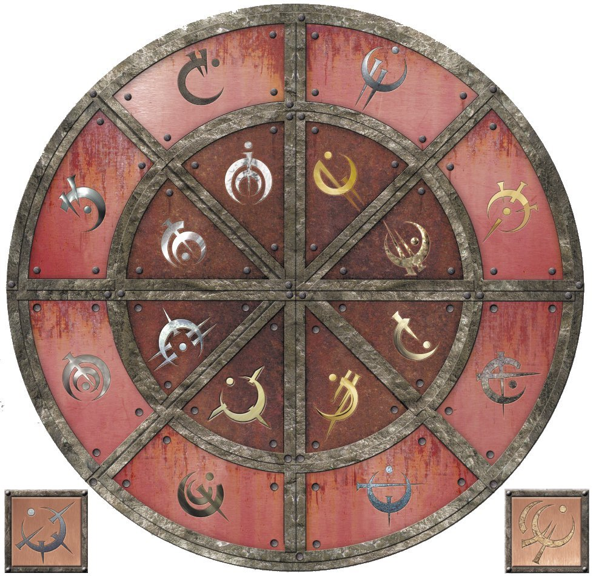
| METAL | PODER ALOMÁNTICO | PODER FERUQUÍMICO | PODER HEMALÚRGICO | |
|---|---|---|---|---|
| 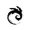 | Hierro | Tira de metales cercanos | Acumula fuerza física | Roba fuerza humana |
| 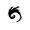 | Acero | Empuja metales cercanos | Acumula velocidad | Roba poderes físicos alománticos |
| 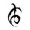 | Estaño | Amplía los sentidos | Acumula sentidos | Roba sentidos humanos |
| 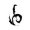 | Peltre | Amplía las habilidades físicas | Acumula fuerza física | Roba poderes físicos feruquímicos |
| 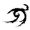 | Latón | Enciende emociones | Acumula calor | Roba atributos mentales feruquímicos. |
| 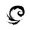 | Zinc | Aplaca emociones | Acumula rapidez mental | Roba fortaleza emocional humana |
| Cobre | Oculta pulsos alománticos | Acumula recuerdos | Roba poderes mentales alománticos | |
| 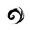 | Bronce | Descubre la alomancia | Acumula capacidad para mantenerse en vela | Roba poderes de ampliación alománticos |
| 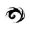 | Atium | Ver el futuro de los demás | Acumula edad | Desconocido |
| 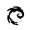 | Malatium | Ver el pasado de los demás | Desconocido | Roba poderes temporales alománticos |
| 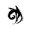 | Oro | Ver el pasado propio | Acumula salud | Desconocido |
| 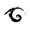 | Electrum | Ver el futuro propio | Desconocido | Desconocido |
| 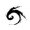 | Aluminio | Elimina metales | Desconocido | Desconocido |
| 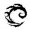 | Duralumín | Potencia efecto de un metal | Desconocido | Desconocido |
AHUMADOR (ALOMANCIA): Alomántico que puede quemar cobre. También conocido como nube de cobre.
ALENDI: Un hombre que conquistó el mundo hace mil años, antes de la Ascensión del lord Legislador. Vin encontró su diario en el palacio del lord Legislador, y pensó, al principio, que se había convertido en el lord Legislador. Más tarde se descubrió que Rashek, su criado, lo mató y ocupó su lugar. Alendi era amigo y protegido de Kwaan, un erudito de Terris que pensaba que podía ser el Héroe de las Eras.
ALOMANCIA: Poder místico hereditario que implica quemar metales dentro del cuerpo para obtener habilidades especiales.
ALLRIANNE: La única hija de lord Ashweather Cett. Tiene una relación romántica con Brisa.
ALUMINIO: Antiguamente conocido solo por los Inquisidores del Acero, cuando se quema vacía de poder las reservas de metal de otro alomántico.
ANCLAJE (ALOMÁNTICO): Término usado para referirse a un trozo de metal que un alomántico empuja o del que tira cuando quema hierro o acero.
APLACAR (ALOMANCIA): Cuando un alomántico quema latón y empuja las emociones de una persona, calmándolas.
APLACADOR: Brumoso que puede quemar latón.
ASCENSIÓN (DEL LORD LEGISLADOR): La Ascensión es el término utilizado para describir lo que le sucedió a Rashek cuando tomó el poder del Pozo de la Ascensión y se convirtió en el lord Legislador. También se usa en ocasiones en conexión con Vin, ya que hizo algo similar al tomar el poder, aunque lo liberó en vez de usarlo.
ASCENSIÓN, POZO DE LA: Históricamente, el emplazamiento de un gran poder, el lugar donde se profetizó que viajaría el Héroe de las Eras para conseguir el poder necesario para derrotar a la Profundidad. Vin lo localizó bajo Kedrik Shaw en Luthadel (aunque siempre se había creído que estaba en los montes de Terris). Estaba dentro de una gran caverna llena de suministros y alimentos (véase también Caverna de almacenaje).
ASEDIO DE LUTHADEL: El término utilizado para referirse al ataque de un mes al Dominio Central por parte de Ashweather Cett, Straff Venture y Jastes Lekal. Terminó con Jastes perdiendo el control de su ejército de koloss, que atacó Luthadel. Vin consiguió detener este ejército, y luego volverlo contra Straff. En el último minuto, Cett se unió a ella.
ASHWEATHER: Nombre propio de lord Cett. Significa «Tiempo de ceniza».
ATIUM: Un extraño metal antiguamente producido en los Pozos de Hathsin. Se congregaba dentro de pequeñas geodas que se formaban en bolsillos cristalinos en cavernas subterráneas.
ATRAEDOR: Brumoso que puede quemar hierro.
AVIVAR (ALOMANCIA): Extraer un poco más de poder de un metal alomántico a expensas de hacer que arda más rápido.
BELDRE: Hermana de Quellion.
BENDICIÓN, KANDRA: El lord Legislador concedió uno de cuatro poderes a los kandra. Son las Bendiciones de la Potencia, la Bendición de la Presencia, la Bendición de la Consciencia y la Bendición de la Estabilidad.
BRAZO DE PELTRE: Otro término para los violentos, los brumosos que pueden quemar peltre.
BRISA: Aplacador de la banda de Kelsier, ahora uno de los principales consejeros y diplomáticos de Elend. El resto de la banda cree que es medio skaa, como todos ellos, pero en realidad es un noble auténtico que durante su juventud se vio obligado a ocultarse en los bajos fondos. Tiene una relación sentimental con Allrianne Cett.
BRUMA: La extraña y omnipresente niebla que cae cada noche sobre el Imperio Final. Más densa que la niebla normal, gira y se agita, casi como si estuviera viva. Justo antes de que Vin tomara el poder en el Pozo de la Ascensión, las brumas cambiaron y empezaron a matar al azar a la gente que se internaba en ellas.
BRUMOSO: Alomántico que puede quemar solo un metal. Son mucho más corrientes que los nacidos de la bruma (nota: en la alomancia, el alomántico tiene un poder o todos ellos. No hay intermedios con dos o tres). El lord Legislador y sus sacerdotes siempre enseñaron que había solo ocho tipos de brumosos, basados en los ocho primeros metales alománticos.
BUSCADOR: Brumoso que puede quemar bronce.
CAMON: El antiguo jefe de la banda de Vin. Un hombre duro que a menudo la golpeaba, fue expulsado por Kelsier. Los inquisidores acabaron matándolo.
CANTÓN: División del Ministerio del Acero.
CAPA DE BRUMA: Atuendo usado por muchos nacidos de la bruma como signo de su estado. Están construidos con docenas de gruesos lazos de tela cosidos juntos por arriba que caen libres desde los hombros.
CAVERNA DE ALMACENAJE: El lord Legislador dejó cinco depósitos de suministros ocultos en cavernas bajo ciertas ciudades. Cada una contiene una placa de metal que muestra la localización de la siguiente caverna, y algunos consejos del lord Legislador. La primera caverna fue descubierta bajo la propia Luthadel.
CETT: lord Ashweather Cett marchó contra el Dominio Central durante el asedio de Luthadel. Temía que Straff Venture capturara la ciudad, y su atium, y él mismo sufría rebeliones en su tierra. Escapó de Fadrex con un ejército e hizo un intento desesperado por tomar la capital. Acabó uniendo fuerzas con Elend al final del asedio, ayudando a Vin a combatir a Straff Venture, y se ganó un puesto de confianza como consejero de Elend. Aunque es conocido como «rey» Cett, no gobierna ninguna tierra, pues aún están en rebelión (véase también Yomen).
CHANNEREL, RÍO: El río que atraviesa Luthadel.
CIUDADANO, EL: Título de Quellion (véase también Quellion).
CLADENT: Verdadero nombre de Clubs.
CLIP (MONEDA): El apodo para la moneda de cobre imperial en el Imperio Final. Usada comúnmente por los nacidos de la bruma y lanzamonedas para saltar y atacar.
CLUBS: Ahumador de la banda de Kelsier, tío de Fantasma y antiguo general de los ejércitos de Elend. Los koloss lo mataron durante el asedio de Luthadel.
COLAPSO, EL: Término usado para referirse a la muerte del lord Legislador y la caída del Imperio Final.
CONVENTO DE SERAN: Fortaleza de los inquisidores donde Sazed y Marsh descubrieron las últimas palabras de Kwaan.
CUARTO: Apodo de la moneda de oro imperial. Procede de la imagen de Kedrik Shaw, el palacio del lord Legislador, que muestra en su reverso, o «el cuarto» donde vive.
CUBIL DE LA CONFIANZA: El lugar más sagrado de la Tierra Natal kandra.
DECANTAR (FERUQUIMIA): Extraer poder de las mentes de metal de un feruquimista. Es paralelo al término «quemar» usado por los alománticos.
DEMOUX: Oficial del ejército de Elend, conocido por su fe en el Superviviente.
DOCKSON: Antigua mano derecha de Kelsier, miembro de la banda original. Murió durante el asedio de Luthadel.
DOMINIO (IMPERIO FINAL): Provincia del Imperio Final. Luthadel está en el Dominio Central. Las cuatro dominaciones subyacentes se llaman las Dominaciones Interiores, e incluyen la mayor parte de la población y la cultura del Imperio Final. Después del Colapso, el imperio cayó y distintos reyes tomaron el poder, tratando de reclamar el liderazgo de las diversas dominaciones, convirtiendo cada una de ellas en un reino propio. Elend gobierna ahora el Dominio Central junto con la mayoría del Dominio Septentrional y porciones de los Dominios Oriental y Meridional.
DOX: Apodo de Dockson.
DURALUMÍN: La aleación alomántica del aluminio, una mezcla de aluminio, cobre, manganeso y magnesio. Si un alomántico quema duralumín, el siguiente metal o metales que quema tendrá poder explosivo, al coste de quemar todo el metal que hay dentro del alomántico.
ELEND VENTURE: Emperador del Nuevo Imperio, esposo de Vin Venture, nacido de la bruma y erudito.
EMPUJAR (ALOMANCIA): Usar alomancia para empujar algo: las emociones de la gente con latón, o metales con acero.
ENCENDEDOR: Alomántico que puede quemar cinc.
ENCENDER (ALOMANCIA): Cuando un alomántico quema cinc y tira de las emociones de una persona, encendiéndolas.
ESPECTRO DE LA BRUMA: Pariente no-inteligente del pueblo kandra. Los espectros de la bruma son masas de carne sin hueso que pululan de noche, comiendo los cadáveres que encuentran, y usando luego sus esqueletos para sus propios cuerpos. En realidad, los kandra están hechos a partir de los espectros de la bruma, a quienes llaman «nonacidos».
EXTINGUIR (ALOMANCIA): Dejar de quemar un metal alomántico.
FADREX: Una ciudad de tamaño modesto, bien fortificada, del Dominio Occidental. Capital y hogar de Ashweather Cett, fue un importante centro de almacenamiento y distribución del Cantón de Recursos. Con la marcha de Cett, cayó en poder del obligador conocido como Yomen.
FANTASMA: Ojo de estaño de la banda de Kelsier. El miembro más joven del grupo, Fantasma solo tenía quince años cuando el lord Legislador fue derrocado. Es sobrino de Clubs, y en tiempos fue conocido por su retorcida forma de hablar en argot callejero. Por orden de los otros miembros de la banda, huyó de Luthadel antes de su caída, pero se sintió terriblemente culpable por hacerlo. Ahora sirve como explorador y espía para Elend, y está destacado en Urteau, donde recopila información sobre los rebeldes de ese lugar.
FATREN: También conocido como Fats. El skaa que gobierna la ciudad de Vetitan.
FEDRE, LORD: Un tristemente célebre noble pícaro que vivió en el siglo VIII del reinado del lord Legislador. Conocido por su afición a los gatos y los canales.
FELT: Uno de los espías de Straff. Como la mayoría de los empleados de Straff, se quedó tras la caída de Luthadel y juró alianza a Elend. Ahora sirve como oficial en el ejército de Elend.
FORJAMUNDOS: Secta de estudiosos feruquimistas de Terris anterior al Colapso. La subsiguiente orden de guardadores se basó en los forjamundos.
IMPERIO FINAL: El imperio establecido por el lord Legislador. El nombre procede del hecho de que, al ser inmortal, consideraba que sería el último imperio que conocería el mundo, ya que nunca caería ni acabaría.
GENERACIONES, KANDRA: Los kandra se dividen en generaciones, según cuándo fueron creados. La Primera Generación está compuesta por los kandra originales y aún sobrevive. Cada siglo tras ellos, el lord Legislador permitió que se creara otro grupo de kandra, y se les llamó Segunda Generación, Tercera Generación, etc.
GNEORDIN: Único hijo de Ashweather Cett.
GORADEL: Antiguo soldado de la guarnición de Luthadel, Goradel guardaba el palacio cuando Vin decidió infiltrarse y matar al lord Legislador. Vin lo convenció para que cambiara de bando, y más tarde condujo a Elend al palacio para intentar rescatarla. Ahora es oficial del ejército de Elend.
GUARDADOR (TERRIS): A menudo se emplea el término «guardador» para referirse a los feruquimistas. Los guardadores son en realidad una organización de feruquimistas dedicados a descubrir, y luego memorizar, todo el conocimiento y las religiones que existían antes de la Ascensión. El lord Legislador les dio caza hasta casi exterminarlos, obligándolos a permanecer ocultos. Después del Colapso, empezaron a enseñar y revelar su conocimiento. Sin embargo, fueron atacados por los inquisidores más o menos durante el asedio de Luthadel, y se supone que todos han muerto, menos Sazed.
HADDEK: Líder de la Primera Generación de kandra.
HAM: Violento de la banda de Kelsier, ahora general del ejército de Elend. Conocido por su afición a los acertijos filosóficos y por llevar solo un chaleco, sin importar la temperatura ambiente.
HAMMOND: Verdadero nombre de Ham.
HATHSIN: Véase Pozos de Hathsin.
HÉROE DE LAS ERAS, EL: El salvador mitológico de las profecías de Terris. Se predijo que vendría, tomaría el poder en el Pozo de la Ascensión, y luego renunciaría a él para salvar al mundo de la Profundidad. Se creía que Alendi era el Héroe de las Eras, pero fue asesinado antes de que pudiera completar su misión. Vin siguió sus pasos, y llegó más allá, tomó el poder y luego renunció a él. Las profecías, sin embargo, resultaron estar falsificadas, una artimaña para permitir que una fuerza llamada Ruina escapara de su prisión (véase también Ruina).
HOID: Misterio aún por resolver.
INQUISIDORES DEL ACERO: Un grupo de extrañas criaturas, sacerdotes que servían al lord Legislador. Tienen clavos que les atraviesan los ojos, pero continúan vivos. Eran devotos fanáticos del lord Legislador, y se utilizaban principalmente para perseguir y matar a los skaa que tuvieran poderes alománticos. Tienen las habilidades de los nacidos de la bruma, obtenidas a través de la hemalurgia, y algunos otros poderes conseguidos también mediante este arte.
JANARLE, REY: Antiguo segundo al mando de Straff Venture, Janarle fue obligado a prestar juramento de fidelidad a Elend Venture. Ahora gobierna el Dominio Septentrional en nombre de Elend.
JASTES LEKAL: Heredero del título de la Casa Lekal, uno de los antiguos amigos de Elend. Junto con Telden, discutía con Elend de política y filosofía. Jastes reunió un ejército de koloss y marchó contra Luthadel durante el asedio iniciado por Straff y Cett, y luego perdió el control sobre ellos. Elend ejecutó a Jastes por la muerte y destrucción que causó.
KANDRA: Raza de criaturas que pueden ingerir el cadáver de una persona y luego reproducir ese cuerpo con su propia carne. Parientes de los espectros de la bruma, los kandra no tienen huesos, así que guardan los huesos de las personas que imitan. Espías naturales, sirven Contratos con la humanidad, que deben ser pagados con atium. Los kandra son inmortales (véase también Tierra Natal y Generaciones).
KANPAAR: El líder de la Segunda Generación de kandra.
KELL: Apodo de Kelsier.
KELSIER: El más famoso jefe de ladrones del Imperio Final. Provocó una rebelión de skaa y derrocó al lord Legislador, pero murió en el proceso. Era un nacido de la bruma, y maestro de Vin. Su muerte engendró una religión conocida como la Iglesia del Superviviente.
KHLENNIUM: Un antiguo reino que existía antes de la creación del Imperio Final. Patria de Alendi.
KOLOSS: Raza de guerreros bestiales creada por el lord Legislador durante su Ascensión, y que luego usó para conquistar el mundo.
KREDIK SHAW: Palacio del lord Legislador en Luthadel. Significa «la Colina de las Mil Torres» en el antiguo idioma de Terris.
KWAAN: Erudito terrisano anterior al Colapso. Era un forjamundos, el primero en confundir Alendi con el Héroe de las Eras. Más tarde cambió de opinión y traicionó a su antiguo amigo reclutando a Rashek para que lo detuviera.
LADRIAN: Verdadero nombre de Brisa.
LANZAMONEDAS: Brumoso que puede quemar acero.
LEKAL, REY: Pariente lejano de Jastes Lekal, el rey Audil Lekal tomó el poder en el reino de Jastes tras el asedio de Luthadel. Perdió lentamente la mayor parte del reino ante los bandidos y las incursiones de koloss.
LENTOVELOZ: Apodo de cierto noble de Fadrex. Tiene un sorprendente parecido con un conocido contador de historias.
LESTIBOURNES: Verdadero nombre de Fantasma.
LIBERAR (FERUQUIMIA): Cuando un feruquimista deja de decantar una mente de metal, y ya no extrae su poder.
LLAMAS, NACIDO DE LA BRUMA: Grupo de escritura de Brandon. Los llamas mastican varios tipos de plantas para conseguir poderes. Pueden encontrarse camisetas en la página web, si saben dónde buscar.
LLUVIAS DE CENIZA: La ceniza cae frecuentemente del cielo en el Imperio Final a causa de los Montes de Ceniza.
LORD LEGISLADOR: Emperador que gobernó el Imperio Final durante mil años. Se llamaba Rashek, y era un criado terrisano contratado por Alendi. Sin embargo, mató a Alendi y fue en su lugar al Pozo de la Ascensión, y allí tomó el poder y ascendió. Finalmente, murió a manos de Vin, pero no sin antes advertirle que cometía un terrible error.
LUTHADEL: Capital del Imperio Final, y la mayor ciudad del mundo. Es famosa por sus textiles, sus fraguas y sus majestuosas fortalezas nobles. Fue casi destruida durante el asedio de los koloss y ahora la gobierna el rey Penrod, uno de los reyes súbditos de Elend.
MAL DE LA BRUMA: nombre usado para la extraña afección que ataca a quienes se internan en la bruma. Aunque la mayoría sale ilesa, una minoría apreciable enferma con temblores. Esta enfermedad puede durar unos cuantos días o más de dos semanas, y a veces es mortal. Sin embargo, solo hay que internarse una vez en las brumas para quedar inoculado y ser inmune al mal de la bruma. Nadie sabe por qué empezó, aunque los primeros informes se produjeron justo antes de que Vin tomara el poder en el Pozo de la Ascensión.
MALATIUM: Metal descubierto por Kelsier, a menudo apodado el Undécimo Elemento. Nadie sabe dónde lo encontró, o por qué pensó que podía matar al lord Legislador, pero es una aleación de oro y atium. El malatium acabó por dar a Vin la pista necesaria para derrotar al emperador, ya que permite al alomántico ver una sombra del pasado de otra persona.
MARE: Esposa de Kelsier, una de las amigas de Sazed, muy activa en la rebelión skaa antes de su muerte en los Pozos de Hathsin.
MATANEBLINO: Soldado sin poderes alománticos ni feruquímicos que ha sido entrenado para combatir y matar alománticos.
MELAAN: Kandra de la Séptima Generación. Fue entrenada y «criada» por TenSoon.
MENTE DE METAL: Un trozo de metal que los feruquimistas usan como una especie de batería, llenándolo de ciertos atributos que puede extraer más tarde. Las mentes de metal específicas se llaman como los distintos metales: mentestaño, menteacero, etc.
METALES ALOMÁNTICOS: Hay ocho metales alománticos básicos. Estos vienen por parejas, comprendiendo un metal básico y su aleación. También pueden dividirse en dos grupos de cuatro metales internos (estaño, peltre, cobre, bronce) y metales externos (hierro, acero, cinc, latón). Durante mucho tiempo se creyó que solo había diez metales alománticos: los ocho metales básicos, más el oro y el atium. Sin embargo, el descubrimiento de aleaciones activas de oro y atium aumentó a doce el número de metales. El descubrimiento del aluminio y el duralumín amplió el número a catorce.
MINISTERIO DEL ACERO: La casta sacerdotal del lord Legislador, formada por un pequeño grupo de Inquisidores del Acero y un gran cuerpo de sacerdotes llamados obligadores. El Ministerio del Acero era algo más que una organización religiosa; también era el armazón civil del Imperio Final.
MONTES DE CENIZA: Siete grandes volcanes de ceniza que aparecieron en el Imperio Final durante la Ascensión. Expulsan más ceniza que magma.
NACIDO DE LA BRUMA: Alomántico que puede quemar todos los metales.
NONACIDO: Véase Espectro de la bruma.
NOORDEN: Uno de los pocos obligadores que decidieron quedarse en Luthadel y servir a Elend.
NUBE DE COBRE: El campo invisible y oscurecedor emplazado por alguien que quema cobre. Si un alomántico quema metales mientras está dentro de una nube de cobre, sus pulsos alománticos quedan ocultos para quien quema bronce. El término «nube de cobre» se usa también a veces para referirse a un ahumador (el brumoso que puede quemar cobre).
NUEVO IMPERIO: El nombre que Elend dio a su reino tras tomar el poder de Cett y Straff al final del asedio de Luthadel. En la actualidad, incluye el Dominio Central y el Dominio Septentrional, también con partes de los Dominios Oriental y Meridional.
OBLIGADOR: Miembro de la casta sacerdotal del lord Legislador. Los obligadores eran más que figuras religiosas: eran burócratas civiles, e incluso una red de espías. Un acuerdo o promesa de negocios que no tuviera como testigo a un obligador no era considerada legal ni moralmente vinculante.
OJOS DE ESTAÑO: Brumoso que puede quemar estaño.
OJOS DE HIERRO: Apodo de Marsh dentro de la banda, antes de convertirse en inquisidor.
ORESEUR: Kandra empleado por Kelsier. OreSeur se hizo pasar por lord Renoux, tío de Vin. Lo mató TenSoon, quien lo encarnó para así poder acercarse a Vin.
PATRESEN, LADY: Noble de Fadrex conocida por sus habilidades lectoras.
PENROD, FERSON: Uno de los nobles más destacados que permaneció en Luthadel después del Colapso. Intentó hacerse con el trono y consiguió arrebatárselo a Elend por medios democráticos. Más tarde aceptó a Elend como emperador, y ahora gobierna Luthadel.
POZOS DE HATHSIN, LOS: Red de cuevas que fueron en su momento el único sitio del Imperio Final que producía atium. El lord Legislador usaba prisioneros para extraerlo. Kelsier destruyó su habilidad para producir atium poco antes de morir. Ahora es hogar de los refugiados de Terris.
POZO DE LA ASCENSIÓN: Centro mitológico de poder en la cultura de Terris. Se decía que el Pozo de la Ascensión contenía una reserva mágica de poder que podía conseguir quien hiciera el viaje para visitarlo en el momento adecuado.
PRESERVACIÓN: Antiguo dios de Terris, contrario de Ruina. La fuerza de la estabilidad, la estasis y la continuidad. Renunció a la mayor parte de su fuerza mental para aprisionar a Ruina en el Pozo de la Ascensión.
PROFUNDIDAD, LA: El monstruo o la fuerza que amenazó al mundo justo antes de la Ascensión del lord Legislador y el Imperio Final. El lord Legislador decía haberla derrotado cuando ascendió, pero más tarde se reveló que la Profundidad eran las brumas, y que el lord Legislador no las derrotó, sino que las contuvo. La Profundidad vuelve a atacar, las brumas aumentan y cubren ahora la Tierra durante el día, destruyendo las cosechas.
PULSO ALOMÁNTICO: La señal que desprende un alomántico cuando quema metales. Solo alguien que quema bronce puede «oír» un pulso alomántico.
PULSO DE BRONCE: Otro término para el pulso alomántico.
QUELLION: Gobernante de Urteau, se considera un seguidor puro del Superviviente, y trata de cumplir la orden de Kelsier de derrocar y ejecutar a los nobles. Beldre es su hermana.
QUEMAR (ALOMANCIA): Un alomántico usa o gasta los metales en su estómago. Primero, debe tragar el metal, normalmente en una solución de alcohol, y luego metabolizarlo alománticamente en su interior para acceder a su poder.
RASHEK: Porteador terrisano antes de la Ascensión. Fue contratado por Alendi para que le ayudara a hacer el viaje al Pozo de la Ascensión. Rashek nunca se llevó bien con Alendi, y acabó por matarlo. Tomó el poder para sí, y se convirtió en lord Legislador.
REEN: Hermanastro de Vin, el que la protegió y la entrenó como ladrona. Reen era brutal e implacable, pero salvó a Vin de su madre loca, y luego la protegió durante su infancia. Los inquisidores lo mataron cuando se negó a denunciar el paradero de Vin. A veces, Vin oye las palabras de sus lecciones en su memoria, y ha llegado a representar para ella el aspecto más brutal de la vida.
RENOUX, LORD: Noble al que Kelsier mató y luego contrató al kandra OreSeur para que imitara. Antes del Colapso, Vin se hizo pasar por su sobrina, Valette Renoux.
RUINA: Antiguo dios de Terris, la fuerza de la destrucción, la entropía y el deterioro del mundo. Aprisionado cerca del Pozo de la Ascensión, Ruina fue liberado accidentalmente por Vin. Su poder no está aún completo, y afecta al mundo de manera sutil, susurrando en los oídos de sus sirvientes y cambiando el texto de los documentos. No puede cambiar las cosas escritas en metal.
SATREN: Ciudad del este que tiene una caverna de almacenaje.
SAZE: Apodo de Sazed en la banda.
SAZED: Guardador de Terris que se unió a la banda de Kelsier contra los deseos de su pueblo, y luego ayudó a derrocar al Imperio Final. Mantuvo una relación sentimental con Tindwyl, y su muerte lo hundió en un largo período de depresión. Sirve ahora como embajador jefe del imperio de Elend, y es el tercero en línea para el trono, si Elend y Vin mueren.
SHAN ELARIEL: Antigua prometida de Elend, una nacida de la bruma que Vin mató.
SKAA: Los campesinos del Imperio Final. Antiguamente fueron de razas y nacionalidades distintas, pero a lo largo de mil años el lord Legislador consiguió eliminar cualquier sensación de identidad en el pueblo, hasta conseguir crear una única raza homogénea de obreros esclavos. Elend los liberó cuando tomó Luthadel. Muchos de ellos se han unido ahora a la Iglesia del Superviviente.
SÍNODO (TERRIS): La antigua élite de los líderes de la organización de guardadores de Terris. Todo el Sínodo fue atacado y eliminado por los inquisidores. Se les supone muertos.
STRAFF VENTURE: Padre de Elend, antiguo rey del Dominio Septentrional. Vin lo mató en el clímax del asedio de Luthadel.
SURCOS: Nombre de las calles hundidas de Urteau. En realidad, son canales secos. En vez de llenarlos, la gente de la ciudad camina por el fondo.
SUPERVIVIENTE DE HATHSIN: Apodo de Kelsier, referido al hecho de que es el único prisionero conocido que ha escapado jamás de los campos de prisioneros de los Pozos de Hathsin.
TATHINGDWEN: Antigua capital del Dominio de Terris, fue arrasada por los inquisidores durante su ataque a los guardadores.
TELDEN: Uno de los viejos amigos de Elend, con quien hablaba de política y filosofía. Conocido por ser una especie de dandi y seductor.
TENSOON: Antiguo kandra de Straff Venture, TenSoon fue entregado a Zane para que espiara a Vin. Mató a OreSeur y ocupó su lugar, actuando como acompañante de Vin. Llegó a apreciarla, a pesar de su inclinación natural a odiar a todos los humanos, y acabó por traicionar a Zane, rompiendo su Contrato, para ayudarla. Como consecuencia de esta acción, regresó a la Tierra Natal para aceptar el castigo de su pueblo. Tiene la Bendición de la Presencia, además de la Bendición de la Potencia, robada a OreSeur.
TERRIS: El Dominio situado más al norte del Imperio Final. Durante los días del lord Legislador, fue la única que conservó el nombre del reino que fue en tiempos, tal vez un signo del aprecio del lord Legislador por su patria (aunque más tarde se descubrió que el actual Dominio de Terris no está donde antes se hallaba el antiguo reino). Los habitantes de Terris abandonaron su tierra tras el ataque de los inquisidores de hace un año, huyendo al Dominio Central, donde Elend los aceptó. Ahora viven en los valles que rodean los Pozos de Hathsin.
TIERRA NATAL, KANDRA: El complejo de cavernas que los kandra usan como hogar secreto. No lo conoce ningún humano más que el lord Legislador (que ahora está muerto). Los kandra que sirven bien sus Contratos disfrutan de períodos de descanso en la Tierra Natal.
TIERRAS QUEMADAS: Los desiertos del perímetro del Imperio Final.
TINDWYL: Guardadora de Terris y miembro del Sínodo. Antigua relación romántica de Sazed, murió durante el asedio de Luthadel. Fue una de las principales profesoras de Elend en el arte del liderazgo.
TIRAR (ALOMANCIA): Usar alomancia para tirar de algo, bien emociones con cinc o metales con hierro.
TIRÓN DE HIERRO: Tirar de un metal cuando se quema hierro alománticamente. Este tirón aplica una fuerza sobre el metal, lanzándolo directamente hacia el alomántico. Si el metal, conocido por anclaje, es más pesado que el alomántico, este es atraído hacia la fuente de metal.
TYRIAN, MONTE: El monte de ceniza más cercano a Luthadel.
URTEAU: Capital del Dominio Norte y antigua sede de la Casa Venture. Ahora en rebelión, es gobernada por un hombre conocido como Quellion el Ciudadano. Emplazamiento de una caverna de almacenaje.
VALETTE RENOUX: El alias que usó Vin cuando se infiltró entre la nobleza durante los días anteriores al Colapso.
VEDLEW: Anciano miembro del pueblo de Terris.
VIOLENTO (ALOMANCIA): Brumoso que puede quemar peltre.
WELLEN: También conocido como Wells. Uno de los soldados que Cett llevó consigo a Luthadel durante el asedio. Wells fue el único superviviente de un gran grupo de hombres que estaba de guardia la noche en que Vin y Zane atacaron la posición de Cett.
YEDEN: Miembro de la banda de Kelsier y la rebelión skaa. Murió durante la lucha contra el lord Legislador.
YOMEN, LORD ARADAN: Obligador de Urteau, opuesto políticamente a Cett. Miembro del Cantón de Recursos, Yomen tomó el control de Fadrex, y el reino de Cett, cuando Cett marchó a asediar Luthadel.
LIBRO UNO
Nacidos de la bruma: El Imperio Final, presentó la tierra del Imperio Final, gobernada por un poderoso inmortal conocido como lord Legislador. Mil años antes, el lord Legislador tomó el poder en el Pozo de la Ascensión y supuestamente derrotó a una poderosa fuerza o criatura conocida solamente como la Profundidad.
El lord Legislador conquistó el mundo conocido y fundó el Imperio Final. Gobernó durante mil años, eliminando todos los restos de los reinos, culturas, religiones y lenguas individuales que antes existían en su tierra. En su lugar, estableció su propio sistema. Ciertas personas fueron llamadas skaa, una palabra que significaba algo parecido a «esclavo» o «campesino». Otras personas fueron llamadas nobles, siendo la mayoría descendientes de aquella gente que apoyó al lord Legislador durante sus años de conquista. El lord Legislador les había dado supuestamente el poder de la alomancia para conseguir asesinos y guerreros poderosos que tenían mentes capaces de pensar, al contrario de los brutales koloss, y los utilizó para conquistar y mantener su imperio.
Los skaa y los nobles tenían prohibido relacionarse, y la nobleza recibió de algún modo el poder de la alomancia. Durante los mil años de reinado del lord Legislador se produjeron muchas rebeliones entre los skaa, pero ninguna tuvo éxito.
Finalmente, un nacido de la bruma mestizo llamado Kelsier decidió desafiar al lord Legislador. El más famoso de los caballeros ladrones del Imperio Final, Kelsier, era conocido por sus atrevidos planes. Sin embargo, estos acabaron con su captura, y fue enviado al campo de exterminio de los Pozos de Hathsin del lord Legislador, la fuente secreta del atium.
Se decía que nadie escapaba de los Pozos de Hathsin con vida… pero Kelsier lo consiguió. Obtuvo sus poderes de nacido de la bruma durante esa época, y consiguió liberarse, ganándose así el título de Superviviente de Hathsin. En este punto, renunció a sus actividades egoístas y decidió poner en práctica su plan más osado: derrocar al Imperio Final.
Reclutó a un equipo de ladrones, principalmente mestizos brumosos, para ayudarle a conseguir su objetivo. Durante esta época, también reclutó a una joven mestiza nacida de la bruma llamada Vin, que no conocía sus poderes. Kelsier la aceptó en su banda para entrenarla, teóricamente para tener a alguien a quien pudiera transmitir su legado.
La banda de Kelsier fue formando lentamente un ejército de rebeldes skaa, y empezaron a temer que Kelsier se estuviera preparando para convertirse en otro lord Legislador. Kelsier buscaba transformarse en leyenda entre los skaa, volviéndose para ellos una figura casi religiosa. Vin, que había sido criada en las calles por su cruel hermano, empezó a confiar en la gente por primera vez en la vida. Mientras esto sucedía, Vin empezó a creer en Kelsier y su propósito.
Durante la puesta en marcha del plan, Vin trabajó como espía entre los nobles, y fue entrenada para infiltrarse en sus bailes y fiestas haciéndose pasar por «Valette Renoux», una joven noble del campo. Durante el primero de esos bailes, conoció a Elend Venture, un noble joven e idealista. Él acabó por demostrar que no todos los nobles se merecían su mala reputación, y los dos se enamoraron, a pesar de que Kelsier trató de impedirlo.
La banda también encontró un diario, aparentemente escrito por el propio lord Legislador durante los días anteriores a la Ascensión. Este libro ofrecía una imagen muy distinta del tirano: describía a un hombre cansado y melancólico que intentaba con todas sus fuerzas proteger al pueblo contra la Profundidad, pese a que no la comprendía realmente.
Al final, se descubrió que el plan de Kelsier era mucho más amplio que el simple uso del ejército para derrocar al imperio. Había empleado tantos esfuerzos en reunir tropas que tendría una excusa para difundir rumores sobre sí mismo. También aprovechó para entrenar a su banda en las artes del liderazgo y la persuasión. El auténtico alcance de su plan se reveló cuando sacrificó su vida de manera visible, convirtiéndose en mártir para los skaa y convenciéndolos por fin de que se levantaran y derrocaran al lord Legislador.
Uno de los miembros de la banda de Kelsier, que había estado representando el papel de «lord Renoux», el tío de Valette, resultó ser un kandra llamado OreSeur. OreSeur adoptó la forma de Kelsier, y luego se dedicó a difundir rumores de que Kelsier había regresado de la tumba, inspirando a los skaa. Después de esto, quedó atado por Contrato a Vin, y se encargó de cuidarla después de la muerte de Kelsier.
Vin fue quien mató al lord Legislador. Descubrió que en realidad no era un dios, ni siquiera inmortal: simplemente había encontrado un modo de extender su vida y su poder usando al mismo tiempo alomancia y feruquimia. No era el héroe del libro encontrado, sino su criado, un feruquimista de gran poder. Sin embargo, era mucho más fuerte que Vin con la alomancia. Mientras ella luchaba contra él, recurrió de algún modo a las brumas, quemándolas en lugar de metales. Aún no sabe cómo ni por qué sucedió así. Con ese poder, y con el conocimiento de la verdadera naturaleza del lord Legislador, ella pudo derrotarlo y matarlo.
El Imperio Final se sumió en el caos. Elend Venture tomó el control de Luthadel, la capital, y colocó a la banda de Kelsier en puestos importantes del gobierno.
LIBRO DOS
El frágil reino consiguió sobrevivir durante un año bajo el liderazgo de Elend, que estableció una especie de parlamento, llamado la Asamblea, y le dio grandes poderes. Aunque Elend mostraba su experiencia en las teorías del liderazgo, carecía de experiencia práctica. Su gobierno se volvió inestable cuando varios miembros de la Asamblea empezaron a maniobrar para hacerse con el poder.
Los rumores sobre el depósito de atium del lord Legislador, combinados con el premio que era Luthadel, la ciudad más grande del imperio, acabaron por atraer a varios depredadores al Dominio Central. El peor de todos era Straff Venture, el propio padre de Elend. Straff marchó con un gran ejército contra Luthadel, trayendo consigo en secreto a un hijo nacido de la bruma, llamado Zane. Por fortuna para Luthadel, Brisa consiguió convencer a un segundo ejército (dirigido por Ashweather Cett) para que marchara también contra la ciudad. Sorprendido por la presencia del otro ejército, cada tirano advirtió que no podía permitirse atacar la ciudad, pues después sería vulnerable a la otra fuerza. Así que dispusieron un asedio, más preocupados por protegerse ellos mismos que por atacar a Elend.
Por esta época, una guardadora llamada Tindwyl llegó a Luthadel. Sazed la invitó a venir a ayudarle a entrenar a Elend para ser un rey mejor. Ella trabajó con él, tratando de enseñarle a templar su idealismo con una medida de realismo. Elend convenció a la banda para que le ayudara a lograr que Straff y Cett se enfrentaran. Esperaba que, si los dos invasores debilitaban sus ejércitos, su propia fuerza (con diferencia la más pequeña de las tres) podría derrotar a los supervivientes. Empezó a reunirse con Straff y Cett, tratando de manipularlos. Sin embargo, mientras lo hacía, una facción de la Asamblea consiguió deponerlo a través de una ley que él mismo había escrito.
Elend se negó a usar a su ejército para recuperar la ciudad, una decisión que Tindwyl y la banda consideraron estúpidamente idealista. En cambio, decidió jugar a la política y tratar de convencer a la Asamblea para que lo reinstaurara.
Durante todo este tiempo, Vin tuvo sus propios problemas. Había descubierto a un misterioso «espíritu de la bruma» que salía por las noches y la vigilaba. Advirtió que el autor del libro de viajes, Alendi, había visto una manifestación similar antes de llegar al Pozo de la Ascensión. Además, Vin empezó a oír extraños latidos cuando quemaba bronce.
Las emociones de Vin referidas a Elend y su propio valor sufrieron gran cantidad de tumultos. Lo amaba, pero no creía que los dos estuvieran hechos el uno para el otro. Le preocupaba ser demasiado brutal, y no suficientemente política, para ser una buena esposa. Complicando las cosas estaba Zane, el hijo nacido de la bruma de Straff Venture, que pasó muchas noches entrenando con Vin, tentándola y creando división entre ella y Elend. Vin empezó a confiar en el kandra OreSeur, quien, por orden de Kelsier antes de morir, permanecía a su lado a todas horas, vigilándola. Los dos se hicieron amigos a pesar de su rechazo mutuo inicial.
Aproximadamente por entonces, Sazed regresó a Luthadel, tras haber descubierto algunos hechos muy alarmantes durante sus viajes. Primero, parecía que las brumas empezaban a salir durante el día. Segundo, las brumas estaban causando de algún modo que la gente enfermara y muriera. Tercero, había un gran ejército de koloss marchando hacia Luthadel, dirigido por Jastes Lekal. Sazed empezó a trabajar investigando estas cosas, junto con la traducción de una extraña inscripción que había descubierto en el sur mientras viajaba con Marsh. Esa inscripción resultó ser el registro de las últimas palabras de Kwaan, un sabio que unos mil años atrás estuvo relacionado con Alendi, Rashek y las profecías de Terris. Sazed empezó también a relacionarse con Tindwyl, quien desaprobaba su naturaleza rebelde, pero albergaba profundos sentimientos hacia él.
La campaña de Elend en la Asamblea fracasó, y eligieron a Ferson Penrod como rey. Por extraño que parezca, sin embargo, el hecho de ser depuesto hizo que por fin Elend empezara a comprender lo que significaba ser rey y líder. Empezó a relacionar sus filosofías sobre la justicia con las cosas que le enseñaba Tindwyl, y a convertirse en un líder inspirador y efectivo, aunque ya no tuviera el trono. Los problemas de la ciudad, pese a todo, se agravaron cuando llegaron los koloss de Jastes Lekal. Rápidamente quedó claro que solo tenía un control marginal sobre las bestias asesinas.
Zane acabó por instar a Vin a atacar la base de Cett dentro de Luthadel (Cett había entrado para intentar hacerse con el trono). Zane y ella se abrieron paso hasta la planta superior de la fortaleza, donde Vin se arrepintió de lo que acababa de hacer. Huyó, dejando con vida a Cett. Poco después, Zane la atacó, enloquecido por las extrañas voces de su cabeza. Vin y Zane lucharon, y OreSeur se reveló como espía, otro kandra llamado TenSoon, que había matado al verdadero OreSeur y lo había sustituido. Vin consiguió matar a Zane, aunque este tenía atium, y luego corrió junto a Elend. Controlados sus problemas emocionales, convenció a Sazed para que la casara con Elend.
Tras el intento de asesinato, Cett se retiró de Luthadel con sus ejércitos. Los intentos de Elend de que Jastes hiciera lo mismo fueron infructuosos. En el exterior, Straff advirtió que, si se retiraba sin más, los koloss probablemente atacarían y destruirían la ciudad, dejándole vía libre para regresar y tomar el control cuando las bestias se hubieran agotado en combate.
Muchos de los miembros de la banda advirtieron que esto era lo que iba a suceder. Sazed los convenció de que les mintieran a Vin y Elend, diciéndoles que la ciudad estaría a salvo y enviándolos al norte en busca del Pozo de la Ascensión. Su plan tuvo éxito. Vin y Elend se marcharon, llevándose a Fantasma consigo, y en su ausencia los koloss finalmente atacaron. El ejército de la ciudad luchó bien, y el propio Sazed defendió una de las puertas de la ciudad en inferioridad de condiciones. Durante la lucha, Clubs, Dockson y Tindwyl murieron. Cuando los koloss estaban a punto de destruirlo todo, Vin regresó a la ciudad, tras haberse enterado por Fantasma de que había sido engañada.
Vin explotó una debilidad alomántica en los koloss que le había sido revelada por TenSoon/OreSeur el kandra, y tomó el control de las bestias del mismo modo que una vez hizo el lord Legislador. Utilizó a los koloss para atacar al ejército de Straff cuando este regresó, y recibió la ayuda de Cett en el último momento. Muerto Straff, Vin obligó a Penrod, Cett, y el segundo al mando de Straff a jurar alianza a Elend, nombrándolo emperador.
La ciudad quedó a salvo. Sin embargo, Vin continuó oyendo extraños latidos en su mente. Se convenció de que ella, y no aquel hombre llamado Alendi, era el Héroe de las Eras. Pronto se dio cuenta de que el Pozo de la Ascensión no se encontraba en las montañas del norte, sino bajo Luthadel. Elend y ella investigaron y descubrieron que bajo Kedrik Shaw había una gran caverna secreta surtida de alimentos. Más allá de esa caverna había otra, llena de humo negro. Más allá, una charca de brillante poder. El Pozo de la Ascensión.
Arriba, Sazed aún lamentaba la muerte de Tindwyl. Se había refugiado en sus estudios y descubrió, para su alarma, que algo iba mal con las profecías. Corrió tras Vin y Elend, dispuesto a impedirles que tomaran el poder del Pozo, pero Marsh lo detuvo. Mientras los dos luchaban, Vin tomó el poder e hizo lo que consideraba adecuado. Aunque el espíritu de la bruma apuñaló a Elend, Vin no usó el poder del Pozo para curarlo. En cambio, lo liberó como decía la profecía que tenía que hacer para impedir que las brumas destruyeran el mundo.
Fue una decisión equivocada. Una fuerza oscura prisionera cerca del Pozo de la Ascensión había alterado las profecías y guio a Vin para que hiciera lo necesario para liberarla. La criatura quedó libre, dejando a Vin con el horror de lo que había hecho. Sin embargo, el espíritu de la bruma proporcionó un medio para que salvara a Elend convirtiéndolo en nacido de la bruma.
El libro termina con Vin y Elend en las murallas de Luthadel, tras haber salvado la ciudad, pero también liberado sobre el mundo una fuerza terrible. Sazed, conmocionado por la muerte de Tindwyl, llegó a creer que su fe no tenía valor alguno. Fantasma se sentía culpable por haber abandonado a Clubs para que muriera en la ciudad, y tanto Brisa como Ham llevaban cicatrices emocionales por su lucha contra los koloss. Además, como Sazed había informado, las brumas habían cambiado de algún modo, y ahora mataban a la gente que se internaba en ellas.
Elend, sin embargo, estaba decidido a consolidar su nuevo imperio y encontrar un modo de combatir al ser que Vin había liberado. Cuando ella le preguntó qué iban a hacer ahora, él solo tuvo una respuesta que darle: iban a sobrevivir. Pese a todo.
Ha transcurrido un año.
BRANDON SANDERSON. Nacido el 19 de diciembre de 1975, creció en Lincoln, Nebraska. Vive en Utah con su esposa e hijos y enseña escritura creativa en la Universidad Brigham Young.
En 2005 debutó ante los lectores con Elantris, la novela que marcó un auténtico hito en el género de la fantasía épica e inició el Cosmere, el fascinante universo que comparten la mayoría de sus obras.
Desde entonces Sanderson ha publicado El aliento de los dioses (2009), una novela en un solo volumen en la línea de Elantris y ha iniciado una magna y descomunal decalogía, «El Archivo de las Tormentas», de la que ya ha publicado las dos primeras entregas, El camino de los reyes (2010) y Palabras radiantes (2014).
Con El imperio final, publicada en 2006, empezó una saga imprescindible del Cosmere, «Nacidos de la Bruma» (Mistborn), de la que ya forman parte, El pozo de la ascensión (2007), El héroe de las eras (2008), Aleación de Ley (2011) y Sombras de identidad (2015), y que previsiblemente estará formada por cuatro trilogías y una novela intermedia.
Más allá del Cosmere, Sanderson es también autor de la trilogía «The Reckoners», «Infinity Blade» («La Espada Infinita»), El Rithmatista (2013) y de la serie para jóvenes iniciada con Alcatraz contra los bibliotecarios malvados (2007).
Además Brandon fue elegido por Harriet McDougal Rigney, en 2007, como el continuador de A Memory of Light, el volumen final de la famosa serie «La rueda del tiempo» que el fallecido Robert Jordan no pudo terminar. Finalmente Sanderson, con el beneplácito de la viuda de Jordan, lo convirtió en una trilogía, La tormenta (2009), Torres de Medianoche (2010) y Un recuerdo de luz (2013).